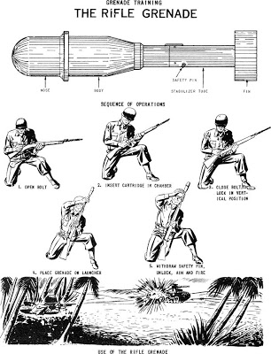
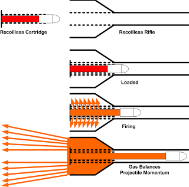
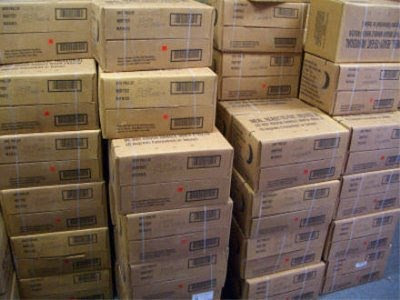
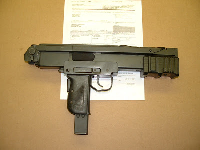

by Mike Vanderboegh
(reformatted by Bill St. Clair, July 23, 2015)
| Introduction: | "The Useful Dire Warning" |
|---|---|
| Internet Introduction | |
| Chapter 1: | The Battle of Sipsey Street |
| Chapter 2: | Flying Coffins |
| Chapter 3: | Poor White Boys, The Depot, the Camp, and the Preacher's Son |
| Chapter 4: | Poor White Boys, The Past as Future |
| Chapter 5: | Dead Man's Holler |
| Chapter 6: | Reverberations and Synergies |
| Chapter 7: | Improvised Munitions, Inc. |
| Chapter 8: | Interposition |
| Chapter 9: | Deacon |
| Chapter 10: | Predator |
| Chapter 11: | Fathers and Sons |
| Chapter 12: | The Minstrel Girls |
| Chapter 13: | Smuggler |
| Chapter 14: | Sons of Liberty |
| Chapter 15: | The Squad -- BAR |
| Chapter 16: | The Squad -- Rubicon |
| Chapter 17: | Doctrine |
| Chapter 18: | M14 - The Three Hundred Meter War |
| Chapter 19: | The Quarry |
| Chapter 20: | Little Friends |
| Chapter 21: | Clean Sweep |
| Chapter 22: | Governor |
| Chapter 23: | Four Fingers of Death |
| Chapter 24: | Green |
| Chapter 25: | Haint |
| Chapter 26: | Ticonderoga |
| Chapter 27: | Sippenhaft |
| Chapter 28: | Nemesis: The Six Apostles |
| Chapter 29: | Nemesis: Barney Fife's Legacy |
| Chapter 30: | Nullification |
| Chapter 31: | Black and Tans |
| Chapter 32: | Ten Thousand Lawyers |
| Chapter X: | Wolverines |
| Chapter 32: | Lexington |
| Chapter 33: | Concord |
| Chapter 34: | Nemesis: Gestapo |
| Chapter 35: | Snatch |
| Chapter 36: | Declaration |
"Direct military operations" are precisely what the 4GW insurgent seeks to avoid. His target is the mind and the will of the political leadership of his enemy -- to be specific, the few inches between their ears which are filled with brains to be influenced or, if not, popped like a grape with an unanswerable rifle shot from distance as an example to the others.
Excerpted from the non-fiction introduction to Absolved: A cautionary novel of the Three Percent and Fourth Generation Warfare by Mike Vanderboegh.
"Whenever the legislators endeavor to take away and destroy the property of the people, or to reduce them to slavery under arbitrary power, they put themselves into a state of war with the people, who are thereupon absolved from any further obedience and are left to the common refuge, which God hath provided for all men, against force and violence." -- John Locke, 2nd Treatise on Government.
So reads the plaque on Phil Gordon's wall in his Sipsey Street home the moment before all hell breaks loose. In Absolved, I try to explore the depths of Locke's belief to discover where it might lead the United States in a civil war set in the near future...
Another civil war in this country is the last thing I want.
Darryl Bates: What started it?
Col. Andy Tanner: I don't know. Two toughest kids on the block, I guess. Sooner or later, they're gonna fight.
Jed Eckert: That simple, is it?
Col. Andy Tanner: Or maybe somebody just forgot what it was like.-- Red Dawn, 1984.
So why write about one? Perhaps, as David Brin, author of the magnificent book The Postman (which bears no resemblance to the Costner cinematic flop), wrote in a forward to a reprint of Pat Frank's classic Alas, Babylon:
Two books that emerged at roughly the same time as Alas, Babylon were Eugene Burdick's Fail Safe and Peter George's Red Alert, which later inspired Stanley Kubrick to make the magnificently humorous and thoughtful Dr. Strangelove. As archetypes of the useful dire warning, each dissected a specific possible failure mode, bringing it to the awareness of so many that, ironically, their particular type of debacle became much less likely. Indeed, the "self-preventing prophecy" may be the highest and most useful species in all of the vast, imaginative genus of speculative fiction. In much the same way that Orwell's 1984 girded millions against "Big Brother," these tales may have helped to keep their own nightmares from coming true. In other words, our most vivid nightmares may have been utterly practical, helping to save our lives. -- David Brin, Forward to the First Harper Perennial Modern Classics Edition of Pat Frank's 'Alas, Babylon', 2005, p. X.
One wonders what might have happened prior to September 11, 2001 if someone in authority had taken Tom Clancy's "useful dire warnings" about a pilot deliberately flying a fuel-laden jet into the Capitol building and killing the President and top leadership (Debt of Honor, 1994; Executive Orders, 1996) about enemies of this country crashing airliners into public buildings in Washington, D.C. Clancy himself reacted to the 11 September 1001 attacks by Al Qaeda:
"Four planes? That many people willing to die for the same cause at the same time? If any writer had turned in a story like this, the publisher would have just handed it back and said, 'No way. Not believable.'"
I can only hope that readers will take my own "useful dire warning" more seriously. If one does ultimately break out, I will be as guilty of fomenting it as Tom Clancy was guilty of 9/11 -- which is to say not at all. It is precisely what I am trying to avoid.
But the vignettes that will hopefully coalesce into a narrative that flows from the terrible opening to a logical conclusion (and I hope a good read in between) are also presented with such detail for a purpose. If this book is to operate as a "useful dire warning," then both real sides in my imaginary civil war must be able to recognize the real threat to avoid the conflict.
You may ask, which sides and what kind of conflict?
On one side, just as in 1775, will be the Three Percent, on the other, Locke's "Arbitrary Power" -- and it will be a Fourth Generation War. All three concepts require explanation.
"If I could have gotten 51 votes in the Senate of the United States for an outright ban (on so-called semi-automatic 'assault rifles'), picking up every one of them... Mr. and Mrs. America, turn 'em all in, I would have done it." -- Senator Dianne Feinstein, CBS-TV's 60 Minutes, 5 February 1995.
When the Founders declared independence, they prefaced that declaration with a detailed indictment of the offenses of the King and his ministers. I will not waste time or space here by comparing the present federal government's excesses of arbitrary power with those of King George III. Go and read the Declaration and you will marvel at how today's advocates of central power not only track quite closely but make Lord North and Company look like kindergarten bullies in comparison.
The important thing to understand about today's arbitrary power is that it, like its predecessor, is a corruption of -- indeed, a subversion of -- a constitution that should have restrained it. It was the failure of the English Constitution which led to our first Revolution. It will be the failure of our own Constitution which will lead to our next civil war.
A key reason the revolution succeeded was its strictly limited scope. The Founders sought only liberty, not equality or fraternity. They aimed to make a political revolution, not a social or an economic one. Their Lockean social-contract political philosophy taught them that the preservation of individual liberty was the goal of politics. Its basis was the surrender of a portion of man's original, natural freedom to a government that would protect the large remainder of it better than any individual could do on his own -- the freedom to make your own fate and think your own thoughts without fear of bodily harm, unjust imprisonment, or robbery. The Founders' study of history taught them that the British constitution under which they had lived -- "originally and essentially free," as Boston preacher Jonathan Mayhew described it -- was the ideal embodiment of such a contract. It was "the most perfect combination of human powers in society," John Adams wrote in 1766, "for the preservation of liberty and the production of happiness"--until George III began to violate it. So Americans didn't take up arms to create a new world order according to some abstract theory. They sought only to restore the political liberty they had actually experienced for 150 years, and they constructed their new government to preserve it...
So when, after 150 years of letting Americans run their own affairs, the British government began to meddle malignly with their liberty once 22-year-old George III became king in 1760, following the death of his grandfather, George II, the colonists unsurprisingly responded to the interference with outrage. After decreeing new colonial customs duties and stricter enforcement in 1764, London imposed its first direct levy on the colonies in 1765 in the Stamp Act, taxing every colonial newspaper, journal, legal document, almanac, playing card, and other paper product, in flagrant contravention of the "standing Maxim of English Liberty," as Livingston had quoted it more than a decade earlier, " 'that no Man shall be taxed, but with his own Consent.' " As Washington wrote to a friend, "I think the Parliament of Great Britain hath no more Right to put their hands into my Pocket, without my consent, than I have to put my hands into your's, for money." Property doesn't belong to the government, and the social contract gives government no right to tell you what to do with your own.
The American Revolution, then, was doubly limited in its aims: limited to making only a political change without altering social or economic arrangements, and determined to set strict limits to its new government, fearful that any governmental power beyond the barest minimum necessary to protect liberty too easily could become a threat to liberty itself...
-- The Americanism of the American Revolution, Myron Magnet, City Journal, Autumn 2012.
And, as we now know, the Founders' system of limited government has been crushed by a century of encroaching Federal power.
"All laws which are repugnant to the Constitution, are null and void." -- Chief Justice Marshall, Marbury v. Madison
The advocates of the "arbitrary power," of course, say that they have the right to tell you what to do because they were "democratically elected," ignoring the fact that the Founders themselves feared pure democracy as much or more as they feared any other kind of tyranny. Without the limits of a constitutional republic, "democracy" is three wolves and a sheep voting on what to have for dinner. The fact that the "arbitrarians" win elections claiming "mandates" and have rigged the court systems to prevent their diktats from being overturned means nothing to people who, like the Founders, believe that their rights to liberty and property are God-given and inalienable. The most uncompromising of these are the Three Percent.

The Revolutionary War in the southern states has received little attention in comparison to the detailed study given the campaigns in the North. This is unfortunate since much decisive action took place there, but perhaps the nature of the struggle accounts for the historians' neglect. The heroes of the southern fighting were not the officers of the Continental army but rather the natural leaders of the people, who had learned their skills in the continuing effort to seize the land of the Indians.
By achieving better perspective of the past, something may be accomplished in the present. For the hero of this book has fallen on evil times. He is called various unflattering names today and is the butt of comic-strip buffoonery and the 'villain' of serious novels. Because he remains an individualist, he is a safe target.
There's nothing new in this attitude, of course. In the Revolutionary War period, he was sneered at by the rich merchants of the lowlands, he was held in contempt by the Continental army's high command, and he was considered less than human by the British. Major Patrick Ferguson called him a bandit, a barbarian, a mongrel. He had little respect for law and order. He could be quite ruthless. He was also superstitious and at times naïve. Yet Theodore Roosevelt could write of him:
'The fathers followed Boone or fought at King's Mountain; the sons marched south with Jackson to overcome the Creeks; the grandsons died at the Alamo.
And, it should be added, the great-grandsons provided Lee and Johnson with the best fighting infantry the world had yet seen. Poorly clothed, half-starved, they responded magnificently to magnificent leadership and almost won America's second civil war as their forefathers had won the first.
Moreover, in wars since, they have always been the cutting edge. As F.N. Boney, the Georgia historian, puts it: 'There is no shortage of rednecks in the neat, quiet American military cemeteries which now dot the globe. However rejected in normal times, the redneck has always been welcomed when the nation went to war.'
Peace is the dream today, and the redneck shares that dream. For him it was often a "rich man's war and a poor man's fight." He never started a war, but he was always ready when his home and personal liberty were threatened. And because of the readiness to do his duty, this nation was founded and kept alive...
Given proper leadership, the mountain man can still be motivated. But in recent years such leadership has been largely lacking. The potential remains untapped, but it is there. As my father used to say in Happy Valley, "You may turn the damper up, you may turn the damper down, but the smoke goes up the chimney just the same."
-- Hank Messick, King's Mountain, 1976.
History, for good or ill, is made by determined minorities. It is estimated that during the American Revolution, the active forces in the field against the King's tyranny never amounted to more than 3% of the colonists. They were in turn actively supported by perhaps 10% of the population. Cheering on these dedicated revolutionaries were perhaps another 20% who favored their cause but did little or nothing to support it. Another one-third of the population sided with the King (by the end of the war there were actually more Americans fighting FOR the King than there were in the field against him) and the final third took no side, blew with the wind and took what came.
The Three Percent still exists today, described by Barack Obama a few years ago as "bitter clingers." Put simply, these are firearm owners who will not disarm, will not compromise and will no longer back up at the passage of the next gun control act.
Today's Three Percenters say quite explicitly that they will not obey any further circumscription of their traditional liberties and will defend themselves if attacked.
They intend, like John Locke and the Founders who studied him, to maintain their God-given natural rights to liberty and property, and that means most especially the right to keep and bear arms. Thus, they are committed to the restoration of the Founders' Republic, and are willing to fight, die and, if forced by any would-be oppressor, to kill in the defense of themselves and the Constitution that they all took an oath to uphold against enemies foreign and domestic.
It is the sons of Three
Percenters who make up the bulk of the tip-of-the-spear units in today's
military simply because they were raised by families to whom service to the
Republic is as automatic as breathing. Socio-economically, today's Three Percenters are not exclusively the
descendants of the Scotch-Irish that Hank Messick describes above, but they are
surely represented heavily. So, too, are
descendants of the Texans, of whom S.C. Gwynne wrote in
They were said to fear God so much that there was no fear left over for anyone or anything else... -- Page 20
When the Texans discovered the tactical utility of the Colt's revolver gave them parity with the fearsome Comanche lance on horseback, it spelled the end of that tribe's ceturies long dominance of the plains.
The Texans were not the Spanish or the Mexicans. They were tougher, meaner, almost impossible to discourage, willing to take absurd risks to secure themselves a plot of dirt, and tempermentally well-suited to the remorseless destruction of native tribes. They did not rely on a cumbersome, heavily-mounted, overly bureaucratized, state-sponsored soldiery; they tended to handle things themselves, with volunteers who not only were not scared of Indians but actually LIKED hunting them down. -- Page 82
Texans certainly ranked among the Three Percenters of their day.
Three Percenters today do not claim that they represent 3% of the American people, although they might. That theory has not yet been tested. They DO claim that they represent at least 3% of American gun owners, which is still a healthy number somewhere in the neighborhood of 3 million people. Remember, history, for good or ill, is made by determined minorities. They are one such minority. So too are the current domestic enemies of the Founders' Republic who seek to disarm them. What remains, then, is the test of will and skill to determine who shall shape the future of our nation.
That test of will and skill will be fought by warfare in the Fourth Generation.
"Cherish your enemies - they teach you the best lessons" -- Ho Chi Minh.
For those unfamiliar with the term, here's one succinct definition from the best single book on the subject:
(Fourth Generation Warfare) uses all available networks -- political, economic, social, and military -- to convince the enemy's political decision makers that their strategic goals are either unachievable or too costly for the perceived benefit. It is an evolved form of insurgency. Still rooted in the fundamental precept that superior political will, when properly employed, can defeat greater economic and military power, 4GW makes use of society's networks to carry on its fight. Unlike previous generations, it does not attempt to win by defeating the enemy's military forces. Instead, via the networks, it directly attacks the minds of enemy decision makers to destroy the enemy's political will. Fourth-generation wars are lengthy -- measured in decades rather than months or years... Strategically, 4GW attempts to directly change the minds of enemy policy makers. This change is not to be achieved through the traditional method of superiority on the battlefield. The first- through third-generation of destroying the enemy's armed forces and his capacity to regenerate them is not how 4GW enemies will attack... Both the epic, decisive Napoleonic battle and the wide-ranging, high-speed maneuver campaign is irrelevant to them. Their victories are accomplished through the superior use of all available networks to directly defeat the will of the enemy leadership, to convince them their war aims are either unachievable or too costly. These networks will be employed to carry specific messages to our policy makers and to those who can influence the policy makers. -- COL Thomas X. Hammes, USMC, The Sling and the Stone, p. 208
And what were the previous three generations? William S. Lind offers this in his essay, "The Four Generations of Modern Warfare" at the Lew Rockwell blog:
The First Generation of modern war began with the Peace of Westphalia in 1648, which ended the Thirty Years War. It also marked the state's assumption of a monopoly on war; thereafter, war became something waged by states, for raison d'etat, with state armies and navies doing the fighting. The First Generation ran from 1648 to about the time of the American Civil War, and it was characterized, on the whole, by a battlefield of order. The battlefield of order created a military culture of order, which endures to this day.
And there's the rub. For around the middle of the 19th century, the battlefield of order began to break down. Ever since, state militaries have had to grapple with a growing contradiction between their internal culture of order and the external reality of an increasingly disordered battlefield.
The Second and Third Generations represent two different approaches to that problem. Second Generation war was developed by the French Army during and after World War I, and is best summed up with the French saying, "The artillery conquers, the infantry occupies." Also known as firepower/attrition warfare, Second Generation war maintained the First Generation culture of order. Decision-making was centralized and hierarchical; orders were detailed and controlling, to permit synchronization of all arms; time was not particularly important; and success was measured by comparative body counts. Second Generation armed forces focus inward on methods, processes and procedures, prize obedience over initiative (initiative and synchronization are not compatible) and depend on imposed discipline. The American Army and Marine Corps learned Second Generation war from the French during the First World War and still practice it today, with exceptions based on individual commanders.
Third Generation war, also known as maneuver warfare, was developed by the German Army in World War I; by 1918, Blitzkrieg was conceptually complete, lacking only the tanks necessary for operational mobility. The Prussian/German roots of Third Generation war go back earlier, to the Scharnhorst reforms that followed Prussia's defeat by Napoleon. One of those reforms changed what was required of a Prussian officer; instead of being responsible for obeying orders, he became responsible for getting the result the situation required regardless of orders (in 19th century war games, it was common for junior Prussian officers to be given problems that could only be solved by disobeying orders). This in turn created a military culture that was focused outward, on the enemy, the situation and the result the situation demanded instead of inward on rules, orders and processes. In effect, Prussia had broken with the First Generation culture of order.
The new Third Generation tactics developed by the Germans in World War I were the first non-linear tactics. On the defense, the objective became sucking the enemy in, then cutting him off, rather than holding a line. On the offensive, the attack flowed like water through the enemy's defenses, always seeking the weakest point to penetrate, then rolling him up from his own rear forward. Operationally as well as tactically the goal was usually encirclement. Speed replaced firepower as the most important tool, and dislocation, mental as well as physical, was more important than attrition. Culturally, not only was the German Army outward-focused, it prized initiative over obedience and it depended on self-discipline rather than imposed discipline.
Much of the American military reform movement of the 1970s, 80s and early 90s was an attempt to move the American armed forces from the Second to the Third Generation. While the Marine Corps formally adopted maneuver warfare as doctrine in the 1990s, most of what the Marine Corps does remains Second Generation. The other American services remain almost wholly Second Generation, to the frustration of many junior officers.
Fourth Generation war is the greatest change since the Peace of Westphalia, because it marks the end of the state's monopoly on war. Once again, as before 1648, many different entities, not states, are fighting war. They use many different means, including "terrorism" and immigration, not just formal armies. Differences between cultures, not just states, become paramount, and other cultures will not fight the way we fight. All over the world, state militaries are fighting non-state opponents, and almost always, the state is losing. State militaries were designed to fight other state militaries like themselves, and against non-state enemies most of their equipment, tactics and training are useless or counterproductive.
Daniel Morgan
Of course there have been Fourth Generation insurgencies for thousands of years, as well as the use of 4GW tactics and strategies by state militaries against other state militaries. (See Sun Tzu's The Art of War.) The American Revolution began as an insurgency of largely non-state actors and used militia guerrilla tactics throughout the war even after the development of the Continental Line (See Paul Revere's Ride and Washington's Crossing by David Hackett Fischer.)
The most remarkable and effective field commander of the Revolutionary forces was Daniel Morgan, whose ability to integrate militia and regulars at the battle of Cowpens set up Cornwallis' ultimate defeat at Yorktown. (See A Devil of a Whipping by Lawrence F. Babits, also Daniel Morgan: Revolutionary Rifleman by Don Higginbotham.)
A veteran of the French and Indian War, Morgan commanded one of Virginia's two rifle companies sent to support the Siege of Boston in late June 1775. Morgan had served as an officer in the Virginia Colonial Militia since the French and Indian War. He recruited 96 men in 10 days and assembled them at Winchester on 14 July. He then marched them 600 miles to Boston in only 21 days, arriving on Aug. 6, 1775. Known as Morgan's Riflemen, they soon discouraged British raids out of Boston with the accuracy of their long-range fire, something the British could not match. He also initiated tactics which first targeted the British formation's Indian guides, then their officers, then their NCOs. The British found this to be "barbaric."
Morgan was an impressive field commander, big in size yet poorly educated, he enjoyed drinking and gambling but the troops never forgot who was in command. Morgan had served as a civilian teamster during the French and Indian War. After returning from the advance on Fort Duquesne by General Braddock's command, he was punished with 499 lashes (a usually fatal sentence) for punching his superior officer. Morgan, not surprisingly, hated the British army. He later served as a rifleman in the Provincial forces assigned to protect the western border settlements from French-backed Indian raids, and in 1774 he served in Dunmore's War, taking part in raids on Shawnee villages in the Ohio Country.
During the Saratoga campaign, Morgan's riflemen played a key role at the preliminary battles of Freeman's Farm and later at Bemis Heights, where at his order the British General Fraser was mortally wounded at his order by rifleman Tim Murphy. This was the single most important rifle shot of the war, since the loss of Fraser caused the British attack to collapse and the subsequent surrender of the entire British force persuaded the French to enter the war.
After Cowpens, Morgan went home on sick leave, but he had certainly paid the British back for those 499 lashes. There were many Revolutionary officers and men who had acquired their military experience in the French and Indian War. And like Morgan, many of them had also acquired an acute understanding of what the British army could and could not do in the terrain of North America.
This formation of young soldiers in the crucible of war is a constant found throughout history. The primary lessons were moral ones, not military. And morale is critical in 4GW.

As Hammes describes in the beginning of The Sling and the Stone:
From 1987 to 1990, I got a small taste of the practical aspects of insurgency. I spent those years training insurgents in various locations of the world. This was the tail end of the Cold War and the United States still had vested interests in the outcome of a number of insurgencies. The most intriguing part of the tour was the opportunity to talk to these men. I was particularly impressed with two aspects of the men I met. First was their utter determination to continue the struggle despite the odds. They were not deterred by fear of death. In each case, they were engaged in a struggle with a government force that possessed many times their military power. In each case, they knew the odds and were not deterred. They believed in their cause and were sure that belief was powerful enough to defeat the government. The idea they fought for was central to their resistance. In fact, they were counting on political power generated by that idea to neutralize the overwhelming military power of the government. As I worked with these men, I realized this fact should be obvious to Americans. An idea kept our American revolution alive during seven long years of war. (Emphasis supplied, MBV. It should also be noted that for most of the key leaders of our Revolution, the struggle began a decade earlier with the Stamp Act crisis.)
The second outstanding trait was the remarkable ingenuity they displayed for overcoming problems. Whether the problems were tactical, logistical, doctrinal, or political, they often attacked them from a direction that simply would not occur to a Western-trained soldier. I found insurgents are not impressed with conventional power. They respect it but seek ways around it -- and have consistently succeeded in finding those ways. They often used tactics and techniques that were outside the training and experience of the government forces. Despite years of war, they consistently surprised government forces with their ingenuity and determination. Insurgents are living proof of why man is at the top of the food chain. We are the most creative, treacherous, loyal, aggressive, and determined life form to yet evolve. Any nation that assumes it is inherently superior to another is setting itself up for disaster.
I would add to that last sentence that the same goes for political elites, only more so. This is perfectly understood by 4GW fighters.
Michael Collins, perhaps the 20th Century's most accomplished virtuoso in 4GW, fought in the disastrous 1916 Easter Rising, and afterward was being paraded with other prisoners through the streets of Dublin on their way to prison.

Michael Collins
As the column passed the ruins of Liberty Hall, a young woman caught up with her cousin (Collins) and called out to him. "What will you do now?" "Do?" asked Collins, "Do? Sure I'll get ready for the next round of course. I've got some of the names taken down already... The best of men." His cousin was flabbergasted. "But... What?... How are you going to train them?" she called out. Collins replied, "Sure won't His Majesty's Government train them for me?" (See Michael Collins by Tim Pat Coogan. Also, Collins' best field commander in West Cork, Tom Barry, was a British Army veteran of the Iraq theatre during World War One. See Barry's Guerilla Days in Ireland.)
This is something that the governments who seek to fight 4GW don't understand. The 4GW warrior thinks in terms of decades, not months or years. He or she will fight until victory or death. The long wars in Iraq and Afghanistan, then, can also be seen as universities for American armed citizens in 4GW tactics and techniques.
So, who invented 4th Generation Warfare?
Says Hammes in The Sling and the Stone:
This new form of war did not arrive on the scene as a fully developed instrument but has evolved over decades and continues to evolve at widely scattered locations. We are not in the middle of a revolution in military affairs but rather an evolution.
Different authors assign different origins to 4GW. Hammes traces it to Mao Tse-Tung, yet we know that much of Mao's theory was based upon the ancient Sun Tsu. Hammes then discusses the "Vietnamese modification" and the "Sandanista refinement." In each of the latter cases the insurgents were fighting for control of the mindset of the United States Congress through popular opinion within our country. But of course this is precisely how the Founders of our own country defeated the British -- the defeat at Yorktown caused Lord North's government to collapse and the new government that replaced it came in with a promise to end the North American war, which it promptly did.
(For more on the Vietnamese example, see Street Without Joy by Bernard B. Fall, who suggests that the principal theorist of 4GW on the communist side was neither Ho Chi Minh nor Vo Nguyen Giap but Truong-Chinh.)
The American example also inspired Michael Collins, who added his own improvisation which proved decisive:
Collins evolved a new concept of guerrilla warfare that in time would be copied by guerrilla leaders all over the globe from Mao to Shamir. The Collins philosophy was based not on the capture of enemy bricks and mortar, but of its information. Traditionally Dublin Castle, the seat of British administration in Ireland, had used a network of spies and informers to infiltrate and then snuff out movements directed at securing Irish independence. Collins perfected a system of spying on the spies. Every important branch of the Castle system, whether it was banking, policing, the railways, shipping, the postal service -- whatever -- was infiltrated by his agents. These were not highly trained, CIA-style operatives, but ordinary men and women, little people whom nobody had ever taken notice of before. Collins gave them a belief in themselves, a courage they did not know they possessed, and they in return gave him a complete picture of how their masters operated... For the first time in their history the Irish had a team of assassins trained to eliminate informers...
Held back from making a full-scale use of their Army by the force of world opinion -- largely Irish-American opinion -- the British tried to fight a "police war" carried on by hastily-formed forces of ex-servicemen and officers troubled by little discipline and less conscience. The Black and Tans and the Auxiliaries wrote new chapters of horror in the bloodstained story of the Anglo-Irish relationship. Reprisals for the activities Collins and his colleagues included the burning of homes and creameries, random murder and the widespread use of torture...
In addition to his campaign of warfare, he ran a national loan, which was banned by the British so that either its advertisement or sale became illegal. Yet the loan was fully subscribed, and every subscriber got a receipt.
(Again, see Michael Collins by Tim Pat Coogan, as well as G2 In Defence of Ireland: Irish Military Intelligence 1918-1945 by Maurice Walsh.)
As brilliant as he was, Collins would later claim that he drew much of his own inspiration from the lessons learned by the Boer commando Christiaan Rudolph de Wet.
British General Rupert Smith, in his very useful book The Utility of Force, passes over the American Revolution with a few words and then identifies the "war amongst the people" (his term for 4GW) as being invented by the Spanish and Portuguese guerrillas in their "little war" against Napoleon's forces.
It is safe to say that 4GW has been evolving over at least the past couple of centuries, not the decades Hammes suggests, and certainly in terms of timeline, the American revolutionaries of 1775 can lay as good a claim as any to being its inventors. This is an opinion that the current American Three Percent have no problem adopting.
However, a 4GW civil war waged by men and women who are loyal to the Founders' concepts would not fight an unrestrained Al Qaeda campaign but one specifically targeted to spare civilians and to target the war decision makers. The next American civil war will either successfully break new ground in 4GW tactics and techniques or it will descend into a welter of blood and massacre. Governments have a tendency to do that when they're losing. The 4GW warriors who claim to represent the Founders' Republic will have to require of themselves far more discipline and intelligence -- no Fort Sumters and no Oklahoma City bombings.
War amongst the people is both a graphic description of modern warlike situations, and also a conceptual framework: it reflects the hard fact that there is no secluded battlefield upon which armies engage, nor are there necessarily armies, definitely not on all sides. To be clear: this is not asymmetric warfare, a phrase I dislike invented to explain a situation in which conventional states were threatened by unconventional powers but in which conventional military power in some formulation would be capable of both deterring the threat and responding to it. War amongst the people is different: it is the reality in which the people in the streets and houses and fields -- all the people, anywhere -- are the battlefield. Military engagements can take place anywhere : in the presence of civilians, against civilians, in defense of civilians. Civilians are the targets, objectives to be won, as much as an opposing force... Labeling wars as asymmetric is to me something of a euphemism to avoid acknowledging that my opponent is not playing to my strengths and I am not winning. -- General Rupert Smith, The Utility of Force: The Art of War in the Modern World, pp. 5-6
The advocates of the disarmament of the American populace such as the aforementioned CSGV always begin by saying that no group of citizenry can oppose the might of the federal government because of the vast array of weaponry including aircraft, artillery and even nuclear weapons that the federals could bring to bear if they are opposed trumps any number of armed "insurrectionists" with rifles. This ludicrous argument is not only contradicted by many examples throughout history but begs the moral question of resistance to a predatory government itself. If a government is so depraved as to use nuclear weapons against its own people on its own soil, it will not long survive the condemnation of even the people who otherwise support it. The same goes for artillery and air strikes, even so called "surgical, decapitation operations." (More about that in a minute.) Such weapons are, in 4GW, merely expensive but useless, appendages, especially in an uncontrolled media environment.
The fact that CSGV and its collectivist familiars even suggest the nuclear boogeyman as a real threat by the federal government merely marks them as moral pariahs -- inciters of holocaust -- and tells you everything you need to know about such people. THEY are apparently the ones who are willing to see millions of their own citizens dead in pursuit of gun control and a government monopoly on violence. They are bloodthirsty people indeed.
The utility -- practical or moral -- of using even precision-guided munitions from artillery or aircraft in a civil war upon your own people, in your own territory and athwart your own logistics tail is also militarily problematic, especially in a media environment that includes the Internet, even more especially in a country such as the U.S. which depends upon it for so much of its own economic activity that it cannot be totally shut down.
First, such strikes are not entirely "precision-guided" as we have seen in Iraq and Afghanistan, leading to "collateral damage" (a sanitary military euphemism for dead civilians) and moral discredit. Remember such a civil war would be "amongst the people" in General Smith's term and for their loyalty. Thus any smart 4GW operator is going to eliminate the possibility of his side creating "collateral damage." Notice I said "eliminate the possibility." Only a fool or a government agent would try to advance his or her cause by committing an Oklahoma City bombing with a day-care full of innocent kids in it. Remember, too, that 4GW warfare is designed to change the minds of the war making elite in their opponent's capitol. OKC bombings merely strengthen their hand, not discredit it. (Recall that after he was re-elected in 1996, Bill Clinton told reporters on Air Force One while traveling back to DC from Arkansas that "Oklahoma City broke the spell.")
Indeed, if you are looking for a weapon that is in fact "precision-guided" you need look no further than a bolt-action rifle aimed at an identified target and wielded by someone who knows what to do with it. This, in fact, defines the Three Percenters, who, being limited to rifles, know them very well and compete with each other to win competition matches somewhere in this country every weekend. Can this be why Senator Dianne Feinstein -- a long-time advocate of "turn 'em in, Mr. and Mrs. America" -- is so obsessed with "sniper" rifles that can "puncture a limousine" or "take down an aircraft"? (See "A Short History of Long Range Shooting in the United States" by Hap Rocketto in The Rifleman's Journal, September 2009.)
Second, such bad publicity might be endured if the civil war was quickly put to an end by such tactics, but in 4GW this is not only uncertain, it is fantasy.
The final critical characteristic of 4GW is that its timelines, organizations, and objectives are different from those of earlier generations. Of particular importance is understanding that the timelines are much longer...
The United States wants to fight short, well-defined wars. We went into Vietnam, Bosnia, Kosovo, Afghanistan, and Iraq convinced we could "clean it up" quickly. In each conflict, our leaders told the people we would be out in a year or so... For the United States, a long war is five years...
Unfortunately, 4GW wars are long. The Chinese Communists fought for twenty-eight years (1921-1949). The Vietnamese Communists fought for thirty years (1945-1975). The Sandinistas fought for eighteen years (1961-1979). The Palestinians have been resisting Israeli occupation for twenty-nine years so far (1975-2004). The Chechens have been fighting for more than ten years -- this time. Al-Qaeda has been fighting for their vision of the world for twenty years, since the founding of MAK in 1984. Numerous other insurgencies have lasted decades. Accordingly, when getting involved in a 4GW fight, we should be planning for a decades-long commitment. From an American point of view, this may well be the single most important characteristic of 4GW.
Next, we need to understand that 4GW organizations are different. Since Mao, 4GW organizations have focused on the movement's long-term political viability rather than its short-term tactical effectiveness. They do see themselves as military organizations but as webs that generate the political power central to 4GW. Thus, these organizations are unified by ideas. The leadership and the organizations are networked to provide for survivability and continuity when attacked. And the leadership recognizes that their most important function is to sustain the idea and the organizations -- not simply to win on the battlefield.
-- COL Thomas X. Hammes, USMC, The Sling and the Stone, p. 221-2.
Much is made in Third-Generation Warfare of "getting inside the enemy's OODA Loop" (for observe, orient, decide, and act) in order to disrupt their operations. Hammes points out that 4GW warriors don't even try.
Finally, because of the long timelines, even the objectives are different. Fourth-generation-warfare opponents do not seek to service more targets faster to disrupt an enemy's OODA loop. They do not seek to destroy an opponent's industrial base using the U.S. Air Force's concept of targeting key segments of an opponent's society. Nor do they seek to dislocate the enemy's armed forces so that their decision cycle fails and the enemy collapses. In fact, it is essential to 4GW strategists that the opponent complete his strategic OODA loop -- with the resulting decision that the war is too costly to continue. -- Hammes, Ibid.
For the government monopoly of force advocates of CSGV, I would like to point out that it is impossible to nuke an idea to extinction, especially on your own soil.
Hammes concludes the chapter:
Fourth-generation-warfare opponents focus on the political aspects of the conflict. Because the ultimate objective is changing minds of of the enemy's political leadership, the intermediate objectives are all milestones in shifting the opinion of the various target audience audiences. They know that time is on their side, Westerners in general, and Americans in particular, are not known for their patience. We are not a people who think in terms of struggles lasting decades. Fourth-generation-warfare enemies will not seek immediate objectives but a long term shift in the political will of their enemies. They will accept numerous tactical and operational setbacks in pursuit of the goal.
Colonel Harry Summers noted in his book On Strategy: A Critical Analysis of the Vietnam War that after the war he told a North Vietnamese colonel that the United States had never been beaten on the battlefield. The North Vietnamese replied, "That is true. It is also irrelevant." It is essential to understand that 4GW opponents do not focus on swift battlefield victories. They focus on long term strategic approach. They focus on winning wars, not battles.
-- Hammes, Ibid.
In an American civil war between an ideas-based Three Percent and a disarmament-bent federal government, who then would lose interest first? You cannot destroy an idea, not even an obviously bad and evil one -- witness collectivism in all its forms. And Hammes further points out "At the operational level, all an opponent has to move is ideas. (Emphasis supplied, MBV.) He can do so through a wide variety of methods, from email to snail mail to personal courier to messages embedded in classified advertisements. He will try to submerge his communications in the noise of the everyday activity that is an essential part of modern society. It will be extraordinarily difficult to detect the operational level activities of a 4GW opponent." (Page 218.)
Yes, it will. Especially in a civil war set in your own highly-developed country.
Military Target (ordnance)
Any industrial plant, city, or other object, or any person, group of persons, or force marked as a target for destruction, damage, injury, or capture because of its direct or indirect use in the conduct or support of an enemy's military endeavor.
In restricted usage, a military person, force, installation, or area marked as a target because of its use, or potential use, in direct military operations.
McGraw-Hill Dictionary of Scientific & Technical Terms, 6E, Copyright © 2003
This definition is made obsolete by 4GW because "direct military operations" are precisely what the 4GW insurgent seeks to avoid. His target is the mind and the will of the political leadership of his enemy -- to be specific, the few inches between their ears which are filled with brains to be influenced or, if not, popped like a grape with an unanswerable rifle shot from distance as an example to the others.
Let us make an example of the difference by briefly war-gaming the American Revolution using present-day 4GW tactics.
David Bushnell's Turtle
Early in the war, the following incidents occur:
Benjamin Franklin arranges a coordinated attack by David Bushnell in his submersible and John Paul Jones in the Ranger on English commercial shipping in the Thames estuary -- right at the King's doorstep in full view of horrified Englishmen who never thought the war would come there. Bushnell has greater success against the commercial shipping because their wooden hulls are not copper-sheathed as are British military hulls. This "infernal device" which strikes without warning or even apparent effective countermeasure frightens British shippers. Bushnell, John Paul Jones and his surviving crew are taken prisoner, but the very destructive raid, which also sets a large portion of the London docks ablaze, is just as stunning, if not more so, than the Doolittle Raid on Tokyo in 1942.

The Ranger
Meanwhile, Franklin dispatches a trio of riflemen by way of a neutral port into London. One fine day, when Lord North emerges from his country estate, he is killed by an aimed shot from 300 yards away. His wife, standing next to him, is unharmed. (NOTE: Lord North is targeted, but not the King. Under 4GW rules the King would be sacrosanct, just as an American President in the 21st Century would be. Anyone around them, however, would be fair 4GW targets if involved in the decisions or operations which oppress their own people. Remember, the point of 4GW is to destroy the will of the enemy elite to proceed with the war, not give them motivation to win, or provide them a propaganda coup to use with the people.) After North is replaced, the replacement King's minister is shot as well in identical circumstances.
Simultaneously, Franklin activates a third group already living quietly in England to attack by arson the buildings of the British East India Company, Lloyds of London and the Company of the Bank of England. They do this at night so there are no civilian casualties, although several adjoining structures are inevitably destroyed as well.
The attacks by John Paul Jones & Bushnell are (barely) within the rules of war and Franklin takes credit for them. The others are plausibly deniable. British merchants and politicians get the point, however. This war against the American revolutionaries is going to cost them far more than they ever dreamed. How long would they have supported the King's North American obsession when they were cumulatively losing hundreds of thousands of English pounds daily?
In addition, any federal government of the United States which wishes to make war on its own people must overcome a few statistics unrelated to the Three Percent or 4GW. The United States is made up of 3.79 MILLION square miles with somewhere around 315 million people living there. This makes it the third largest nation in the world by both land area and population. There are, not unimportantly, something on the order of 100 million firearm owners scattered across our vast country and about 200 to 300 million firearms.
By comparison, Iraq is only 168,754 square miles in area (about the size of the state of California) with only 31 million in population. Afghanistan is a bit bigger with 250,000 square miles in area and a population also of around 30 million. What kind of bloody-minded fool would deliberately ignite an insurgency in a country -- especially his own -- 9 times larger than both of those combined and containing 5 times the population, many of them armed and skilled at the use of those arms?

"Don't you ever stand for that sort of thing. Someone ever tries to kill you, you try to kill 'em right back." -- Captain Malcolm Reynolds, Firefly, 2002.
After more than a decade in Afghanistan and Iraq, the American policy elite believes it has a pretty good bead on counterinsurgency in 4th Generation Warfare which rests principally on one tactic: decapitation.
Leadership decapitation is a high-profile tactic that involves the capture or killing of top insurgent leaders. It is frequently used against guerrilla insurgencies: in the past two centuries, top insurgent leaders have been killed or captured in just under 50 percent of counterinsurgency campaigns. Yet we know little about the nature of the relationship between leadership decapitation and counterinsurgency effectiveness. Is capturing or killing insurgencies' leader(s) an effective tactic? Or is it counterproductive, radicalizing insurgent movements, strengthening their resolve, and making them more difficult to defeat? Or does it have no effect at all? The general consensus is that leadership decapitation of guerrilla groups is ineffective. These conclusions should give scholars pause: they are based on unsystematic research designs, minimal empirical data, and incomparable units--usually terrorist organizations or foreign leaders. Patrick Johnston, "The Effectiveness of Leadership Decapitation in Counterinsurgency"
Johnston himself believes decapitation is effective and though he criticizes the critics of decapitation, his work shows an almost entire ignorance of 4GW which presumably decapitation is supposed to defeat. How does a drone strike, for example, kill an idea? A broader consideration with a little history is found at Michael Zenko's Politics, Power, and Preventative action blog at the Council on Foreign Relations:
The United States did not always carry out targeted killings (or assassinations) of perceived national security threats. To the contrary, the norm against targeted killings outside of battlefield settings was established by President Gerald Ford in 1976, when he issued Executive Order 11905: "No employee of the United States Government shall engage in, or conspire to engage in, political assassination." Until the late 1990s, U.S. targeted killings were officially proscribed and rarely seriously considered or authorized by senior officials.
When President Ronald Reagan was asked about the failed assassination attempt of Sheik Mohammed Hussein Fadlallah in Beirut in March 1985, for instance, he replied: "Never would I sign anything that would authorize an assassination. I never have, and I never will, and I didn't." Actually, Reagan signed a directive on November 13, 1984, that was interpreted as "truly a 'license to kill' provision." Sixteen years later, U.S. ambassador to Israel Martin Indyk stated: "The United States government is very clearly on the record as against targeted assassinations. They are extrajudicial killings, and we do not support that." However, after the U.S. embassy bombings in Africa in August 1998, President Clinton issued three top-secret Memoranda of Understanding authorizing the CIA to kill Osama bin Laden and several key lieutenants--if they resisted capture.
Despite these exceptions, U.S. targeted killings were extremely rare. Since 9/11, however, targeted killings in nonbattlefield settings steadily grew under President George W. Bush--roughly 50 between November 2002 and the end of his second term--and exploded under President Barack Obama--almost 350 and counting.
As some operations are covert--when the lead executive authority is the CIA--while others are obliquely acknowledged with few specifics--when it is the Department of Defense--there are ethical, moral, and legal questions that have gone unaddressed, due partly to lack of public debate and congressional hearings. Just as there remains intense disagreement among former officials about whether enhanced interrogation techniques (i.e., torture) against suspected terrorists "worked" to produce useful and/or actionable intelligence, it is difficult to know whether U.S. targeted killings are a successful and sustainable means of achieving U.S. short- or long-term strategic objectives.
Zenko's column consulted several experts, including Johnston. Among them, Daniel Byman, a professor in the Security Studies Program at Georgetown University and the research director of the Saban Center at Brookings, the author of A High Price: The Triumphs and Failures of Israeli Counterterrorism, wrote:
Targeted killings work--just not in all places and at all times. They can steadily attrite a terrorist group's leadership and, over time, leaving it with fewer impressive leaders and fewer skilled personnel. Their biggest impact, however, is often in what the terrorist organization does not do. Leaders must spend their time hiding and changing locations in order to survive. They must curtail phone communications and avoid interacting with large groups of followers, all of which make them far less able to guide the organization, inspire followers, and enforce their will. Leaders often instigate witch-hunts in order to go after supposed traitors who provided the lethal intelligence, further reducing the group's effectiveness.
Targeted killings, however, are a tactic, not a strategy. The inevitable civilian deaths that occur can at times, but do not always, create significant numbers of additional enemies as well as carrying a moral burden. And politically it is tempting to ignore the broader dimensions of counterterrorism and counterinsurgency as long as bad guys are dying on a regular basis. These faults and limits, while serious, should not lead to the rejection of targeted killings but rather a recognition of its costs and why alone they will not suffice.
Again, this shows an imperfect understanding, even by Al Qaeda and the Taliban, of 4GW. 4GW does not require organizations to be successful, merely the transmission of ideas to independent actors of like beliefs who organize locally and attack locally, even if the targets are of national or even international, significance.
Sarah Holewinski, executive director of Center for Civilians in Conflict, a human rights advocate and critic of U.S. drone policy, comes closest to understanding the limited use of decapitation in a 4GW world.
They may kill some of the people they're intended to kill some of the time. But as a stand-in for long-term counterterrorism policy, covert drone strikes in particular may be doing more harm than good to national security. They're supposed to rid the United States of enemies without the cost of troop lives or the muck of a traditional invasion.
But on the other side of the balance sheet, drone strikes are creating anger--not only among locals in Pakistan and Yemen, but among people elsewhere who want an excuse to hate America. Even for America's fans, strikes call into question U.S. commitment to responsible use of force, thanks to the information vacuum around who can be targeted, why, under what legal framework, and how CIA and Special Forces protocols protect civilians.
A fight worth fighting comes with sacrifice. Drones have relieved much of the sacrifice born by the soldier but not the civilian, who lives in constant fear of sudden death. Regardless of civilian casualties, which are highly disputed, the psychological trauma, displacement, and suspicion among neighbors of colluding with one side or the other has turned communities into war zones, even with no visible boots on the ground. No wonder ordinary people are chanting "Death to America" after strikes.
There are no numbers on how many formerly agnostic civilians are now skeptical about U.S. power nor how many terrorists may arise as a result of the current drone policy. That X factor is reason enough to pause before claiming a counterterrorism panacea.
The American people are largely supportive of decapitation as applied in Afghanistan and elsewhere, but what happens when the targets are in Marion, Ohio or Salt Lake City, Utah? What happens when the killings of their friends and neighbors go on and on because the federal government can think of no better way to compel obedience to unjust, unconstitutional diktats contrary to the Founders' Republic?
Back on 17 September 2009, in a column on my blog Sipsey Street Irregulars, I noted Patrick Johnston's embrace of decapitation strategies -- "Dark Thoughts -- Misadventure, Spasm & Decapitation. How I spent Constitution Day" -- and commented on how, hypothetically, that might play out.
The thing is, once started, the regime will find it almost impossible to stop on any terms besides their own unconditional surrender as they would be fighting an enraged but dispersed network insurgency. It is likely that after a few weeks of such blood-letting, the administration will be unable to find anybody left alive with sufficient influence among the insurgents with whom they can negotiate an end to the horror. The fact of the matter is that they would have done their best to kill the folks they would need to stop what they started.
And they will want to stop it, oh, yes, out of concern for their own miserable hides if nothing else.
For they will have provoked a conflict that will not be directed at the war-fighters, the grunts, even those in the outnumbered federal police, but rather at the war-makers, i.e. themselves.
In this they have only Bill Clinton to blame. When the Philanderer in Chief, frustrated with Serbian intransigence in 1999, changed the rules of engagement to include the political leadership, news media and the intellectual underpinning of his enemy's war effort, he accidentally filed suit under the Law of Unintended Consequences. The Serbians knuckled under, yes. But the rest of the world took note, including (the Three Percent). I assure you, the appeal to the higher court of history in that case has yet to be decided.
Decapitation, I have tried to explain to people, works both ways in 4GW. I continued:
Johnston is as wrong as he can be when comparing past history to 4th Generation warfare, distributed networks and leaderless resistance, especially as will be practiced in the United States if it ever goes to war with itself.
He is wrong, but the powerful men and women he is writing for think he's right.
Unfortunately for them, in the situation the administration would find itself after Waco Two, the "decapitation" strategy would for them more resemble Russian Roulette played with an automatic pistol.
Hypothetical: They kill some of (the Three Percent), at first accidentally perhaps, but almost immediately thereafter intentionally. The spasm of defensive killing begins, targeted at their leadership. They spasm in return. They would not be able to scuttle into their "green zones" fast enough. For each clumsy attack on (the Three Percent), they receive a lesson in the 500 meter war, one bullet (or many bullets) at a time. They commit "collateral damage" of our innocents, (the Three Percent) stay(s) within the rules of engagement and kill only war-planners and war-wagers.
I have asked this question before. They will fight to the last ATF agent or to the last oath-breaking soldier. Will they fight to the first senior bureaucrat, the second Congressman, the third newspaper editor, the fourth Senator, the fifth White House aide? Can they stand Bill Clinton's rules of engagement?
This is what 4GW means in an American civil war in the 21st Century. Can you understand now why I am trying to get that "useful dire warning" out to as many people as possible? Only if both sides understand the possibility of bloody civil war can it be avoided.

"Political power comes out of the barrel of a gun." -- Mao Tse-Tung, from Problems of War and Strategy (6 November 1938), Selected Works, Vol. II, p. 224.
Which brings us to today.
Once again we hear demands for bans on semi-automatic rifles and for federal control of all private transfers of all firearms (the so-called "gun show loophole"). This time, it is said, there will be no "grandfather clause" of existing weapons and that confiscation of all military-pattern semi-auto rifles is intended.
Yet the Three Percent will not obey such laws and they will defy the federal government to do anything about it.
I was once told by a "gun safety" advocate back in the Nineties that he favored total civilian firearms confiscation. Only the military and police should have weapons he averred and what did I think about that? I began to give him a reasoned answer and he cut me off with an abrupt, "Give me the short answer."
I thought for a moment and said, "If you try to take our firearms we will kill you."
It was true then, it is true now.
The "arbitrarians" believe that they can continue to encroach upon the liberty and property of their fellow Americans without consequence to them. They cannot.
When democracy turns to tyranny, the armed citizen still gets to vote -- with his rifle. Any grasping would-be tyrant who ignores that truth does so at his or her own peril.
I pray, then, that Absolved is viewed as a useful dire warning in time to prevent the Fourth Generation Civil War it describes.
"Cherish your enemies - they teach you the best lessons"
"Whenever the legislators endeavor to take away and destroy the property of the people, or to reduce them to slavery under arbitrary power, they put themselves into a state of war with the people, who are thereupon absolved from any further obedience." -- John Locke
So reads the plaque on Phil Gordon's wall in his Sipsey Street home the moment before all hell breaks loose. In Absolved, I try to explore the depths of Locke's belief to discover where it might lead us in the near future.
Since I began posting chapters of Absolved on the 'net, I have been the recipient of many emails - some laudatory, some critical. I have been taken to task by some for killing off all my characters, for example. I can tell you that while my novel, like war, has its casualties, I "kill off" no one in my tale who either doesn't deserve it or who isn't willing to make the trade for what they perceive to be the greater good. Like all wars, there are "collateral" casualties. It would not be believable if there weren't. I can only tell you that I am not bloodthirsty. Writing about this subject actually depresses me. I have a son and two teenage daughters, all of whom I am immensely proud. My son in turn has two sons of his own. I want to live long enough to sing all my grandchildren to sleep to the tunes of Hobo's Lullabye, Bold Fenian Men, Rising of the Moon and the Minstrel Boy, just as I did with my own children.
Another civil war in this country is the last thing I want.
So why write about one? Perhaps, as David Brin, author of the magnificent book The Postman (which bears no resemblance to the Costner cinematic flop), wrote in a forward to a reprint of Pat Frank's classic Alas, Babylon:
Two books that emerged at roughly the same time as Alas, Babylon were Eugene Burdick's Fail Safe and Peter George's Red Alert, which later inspired Stanley Kubrick to make the magnificently humorous and thoughtful Dr. Strangelove. As archetypes of the useful dire warning, each dissected a specific possible failure mode, bringing it to the awareness of so many that, ironically, their particular type of debacle became much less likely. Indeed, the "self-preventing prophecy" may be the highest and most useful species in all of the vast, imaginative genus of speculative fiction. In much the same way that Orwell's 1984 girded millions against "Big Brother," these tales may have helped to keep their own nightmares from coming true. In other words, our most vivid nightmares may have been utterly practical, helping to save our lives. -- David Brin, Foreward to the First Harper Perennial Modern Classics Edition of Pat Frank's 'Alas, Babylon', 2005, p. X.
One of the things about Absolved that has come in for both praise and criticism is the deadly details. When Phil Gordon or Kraut Mueller craft improvised rifle grenades, you can tell from the sometimes mind-numbing detail that it is certainly possible to do so. When thousands of Brightfire mercenaries-in-training are crushed under a fuel-air-explosive delivered by crop duster, you believe it is possible because, frankly, it IS. They say to write about what you know, and although in most cases I have not personally done the things that my characters in the book do, I have done enough research to know that it can be done.
There are characters in the book (most of them in fact) who resemble real people, or composites of two or three real people, who I have actually known. For example, "The Flying Dutchman," introduced in a future chapter is a sure-'nuff real smuggler pilot, a larger-than-life character I met a long time ago in a galaxy far, far away, as they say. He represents the archetype of the smuggler as freedom fighter just as much as John Hancock, Dr. Syn, Han Solo, Malcolm Reynolds or the grocery stock-boy Dale in the canceled CBS television series, Jericho. Like Hancock, however, the Flying Dutchman has the advantage of being a real American. If I place him in fictional circumstances, he reacts the way he would in life, I think. If he dislikes my representation of him, I'm sure he'll let me know. After I'm done, you may play the game of pin-the-caricature-on-the-real-jackass to your heart's content and those who know me best will no doubt be able to pick out characters who I have patterned on them.
Take Kraut Mueller, for example. Like the fictional Kraut, I have played a cat-and-mouse game with the ATF since the 90s. There is, I confess, more than a slight resemblance between us. Even so, Kraut is a better man than me, smarter, more aggressive in his actions, and more competent. The real me is not half as interesting as Kraut. If I were to try to cook up shaped charges in a basement, I'd be dead already. Frankly, I'm a klutz.
But the vignettes that will hopefully coalesce into a narrative that flows from the terrible opening to a logical conclusion (and a good read in between) are also presented with such detail for a purpose. If this book is to operate as a "useful dire warning," then both real sides in my imaginary civil war (and they are VERY real, just ask David Olofson and his victimized family -- for them this war has already started and is NOT imaginary) must be able to recognize the real threat to avoid it.
In this, I am frankly writing as much a cautionary tale for the out-of-control gun cops of the ATF as anyone. For that warning to be credible, I must also present what amounts to a combination field manual, technical manual and call to arms for my beloved gunnies of the armed citizenry. They need to know how powerful they could truly be if they were pushed into a corner.
Both sides must get the point in order to avoid conflict.
I hope that when I'm done, Absolved can perhaps take its place alongside these other "useful dire warnings." Being a practical man, however, I recognize that this is but a glimmering hope. Events rush by, pushing us like rudder-less boats in a strong current to where we know not.
A peaceful pool?
Perhaps.
The thunderous cataclysm of a deadly falls?
Perhaps, in the wicked light of the Olofson case, the latter is more likely.
When completed my book will be dedicated, as most books are, to the one person, or persons, who made it all possible. Oh, I will have a Forward thanking all the folks who have assisted me in my project, of course. Chief among these will be my long-suffering wife Rosey, my kids, other gunnies and fellow workers in the thankless task of trying to restore our tottering constitutional republic.
But I think I will be dedicating Absolved to "Waco Jim" Cavanaugh and Special Agent Jody Keeku of the ATF, the blundering, deadly yet unintended inspiration for all my work. For most of you, neither needs an introduction. For the rest of you, the very moniker of "Waco Jim" should tell you the larger portion of his sins. Keeku was the principal agent of David Olofson's frame-up and imprisonment.
Whether my novel is a prescient glimpse into a bloody future or a "useful dire warning" that is heeded, is entirely up to the likes of them and the corrupt politicians who hold their leashes.
It is they who by their conduct will absolve us of any further obedience to an oppressive regime. And as I point out in Absolved, if the law no longer protects us, then they will find to their sorrow it does not protect them either.
The choice is theirs.
So I dedicate Absolved to them and their thuggish fellow gang members of the Bureau of Alcohol, Tobacco, Firearms and Explosives.
As Ho Chi Minh once observed, "Cherish your enemies - they teach you the best lessons."
I hope they understand that before it is too late.
Mike Vanderboegh
Pinson, Alabama
21 July 2008
SWINDON: Yes. General Burgoyne, if I mistake not. I am glad to have the support of your presence this morning. It is not particularly lively business, hanging this poor devil of a minister.
BURGOYNE: No, sir, it is not. It is making too much of the fellow to execute him: what more could you have done if he had been a member of the Church of England? Martyrdom, sir, is what these people like: it is the only way in which a man can become famous without ability. However, you have committed us to hanging him: and the sooner he is hanged the better.
-- The Devil's Disciple, Act III, George Bernard Shaw
Phil Gordon felt old, sick, tired and cranky. Cancer did that to you, but he didn't have to like it. Still, Phil had one more thing to do before crossing the bar and he prayed to the God of Abraham that he would have the time and the strength to do it. He shifted in his recliner, taking in the photographs on the side wall, a life in brief, partially illuminated by the soft glow of the porch light angling in through the windowpane above the front door.
Sitting in the dark, with the pictures shadowed in whole or in part, Phil couldn't see the details. He didn't need to. He knew them by heart.
It was all there -- his grandparents and great grandparents, stiff and formal in the manner of folks born in the 19th Century, his mamma and daddy in their youth. There he was with his parents at the ceremony when he graduated from Basic, and again, standing in the A Shau Valley with his squad, all of them so young and full of bravado. There was his wedding photo with Claire, and the honeymoon picture at Natural Bridge, still another of that sun-dappled afternoon with her at Smith Lake. Then there were those of the kids, still young, ranked by age. There was the time when his oldest son Bobby had competed with him at Camp Perry, and Bobby's graduation from West Point. A pink frame held Sissy in her scrubs during medical school, and from a steel-gray one Johnny smiled out front of his technology company in Huntsville, with Sally at his side and little Phil, Matthew and Gabriel at their feet. Then there was his retirement party at U.S. Pipe, more recent pictures of the grandkids, and the last reunion of his Army unit. It was all there, where he'd come from, where he'd been and where he was going. The dusty frames covered the wall above the sofa, in a room that had seen so much loving, laughter and then, sadness.
Phil took all of them in, those he could see and those he couldn't, closed his eyes and sighed. Well, it was a life. God had been very, very good to him. Still, he resented this last business of cancer breaking him down brick by brick. He knew he could bear it, it wasn't that. The pain, the gradual loss of functions, the bone-deep weariness, all were within his ability to stand.
It had hurt worse when he'd been hit in Vietnam. He'd been more helpless back during his recovery at Walter Reed. And he'd been weary beyond belief humping an M-60 machine-gun up and down the Central Highlands. Cancer came close to leaving him that tired but he didn't think it would be worse given the time he had left. Besides, ever since he'd lost Claire to a drunk driver from Mexico City, he'd been ready to lay down his burdens and go home to join her. He wasn't Job, but he could take it. But he was afraid, he admitted, that he wouldn't have enough left in him to do what now had to be done. It was a duty and he was stuck with it.
"Sometimes you're just stuck with the duty." His daddy had told him that when he was six and he had asked why he, Phillip Sheats Gordon, the youngest of seven sons, had to go out and fetch the firewood on a cold morning in Winston County when his lazy brothers were still snug in bed.
Sometimes you're just stuck with the duty. The Master Sergeant had told him that, too, just before he died on that no-name ridge near the Cambodian border. How long had it been, now? His mind dulled by the pain pill, Phil couldn't do the math. Long time, for sure. Hard to believe. The battalion had been strung out, looking for NVA supply caches when the Nathaniel Victors hit back hard. Under a barrage of mortars, recoilless rifles and RPGs, they overran the leading company. The air-cover was a little bit uncovered at that particular moment, and somebody had to slow down the remorseless sons of Uncle Ho until the battalion got its excrement together.
So, the battalion top-kick, one Master Sergeant Walter McCoy, took over Phil's platoon from the shaky lieutenant who had only been in country two weeks and who still didn't know crap from breakfast. With McCoy's leadership they'd stopped the bastards cold. Of course, it cost them most of the platoon, the still-bewildered lieutenant and Master Sergeant McCoy.
While they were digging in before the fight, McCoy had walked the line making sure the holes were sited properly and the M60s had clear fields of fire. As he walked by, Phil complained to nobody in particular, "Why us?" McCoy, a veteran of three wars and wise in the ways of killing, stopped, looked down at him and replied kindly, "Son, sometimes you're just stuck with the duty."
Phil was thunderstruck that he should hear his own daddy's words repeated back to him there, then, at that place so far from home when all their lives seemed forfeit. It seemed to him an omen, a talisman. It was reassurance that somehow, some way, he would make it out alive. He did. A buck sergeant, Phil was the senior surviving NCO when the NVA finally withdrew, leaving the ridge and the valley below strewn with their dead. When he saw McCoy's body after the fight, Phil sat down beside it and wept. He had never been in a position to be close to the top-kick, but now it seemed as if his own father had been killed.
"Son, sometimes you're just stuck with the duty." Phil could see McCoy's leathered face even now, softness at the edges of its perpetual, hard-set scowl. He could see the wisdom, the love, in his eyes. Phil shook his head, shuddering like a dog throwing off the rain. Enough of memory lane. He was stuck with the duty and he would fight. And he had no doubt he would die and that would be a good thing.
He looked around the battlefield that had been his home, and carefully raised himself out of the recliner. It wouldn't do to fall and break a hip now. Company was coming, and he had to be ready to greet them. He hoped it would be today. He had been scared of the attacking Nathaniel Victors, the whistles and the bugles, the explosions and the screams. With his whole life ahead of him then, he wanted to live. But now, at the end of his life, he wasn't afraid of the thugs who had targeted him. He was only afraid that they wouldn't come.
He had known that that they would get around to him sooner or later. He'd run his mouth too much. He was too political. He'd made his disdain for the thugs and their gang plain enough and now they were going to settle accounts. Frank Grant had met him at the pharmacy last month. The thugs had been asking about him, Frank said. What guns did he own? Did he have any machine-guns? They knew that Phil had held a blaster's license since when he worked in construction after the war. Did he have any explosives? Frank had been Phil's good friend for forty years. Yet when he assured Phil that he had told the thugs nothing, even after they'd turned his shop upside down, Phil wasn't sure. The fear on Frank's face was evident. The fact that he had hung around the drugstore to "accidentally" run into him, rather than calling him or coming over, spoke volumes.
Not that Phil blamed him. The thugs WERE scary, made more so because they operated under color of law. They controlled the justice system. The local cops, the state police, all deferred to the thugs, scared that they too would come under scrutiny and attack. There was no reason to expect a fair trial these days. Juries convicted innocent men and women based on the word of paid informers or friends of the thugs and suborned prosecutors who refused to turn over exculpatory material to the defense, denying that it had ever existed. The rule of law no longer applied. Now it was the rule of man, which is to say, the law of the jungle. Phil smiled at the thought. He had lived by the law of the jungle once and survived. He doubted that any of these young punk thugs had. Be careful what you wish for, you may get it. Phil chuckled. Oh, yes indeed.
It was still dark outside, early morning. That was no protection from the thugs, of course. They liked to do their evil work at night. They thought they owned it. Phil smiled. His sleep patterns had long ago been disrupted by the pangs of the cancer that ate at his vitals, so he often did his sleeping in the daylight anyway.
Phil took three steps over to the sideboard, maneuvering around the coffee table with the surety of a blind man on his own ground. Yet he wasn't blind, not even by the darkness. Above the sideboard hung a framed quotation from John Locke. It was one of his favorites. He could read it with the help of the PVS-14 night vision monocular he wore over his right eye.
"Whenever the legislators endeavor to take away and destroy the property of the people, or to reduce them to slavery under arbitrary power, they put themselves into a state of war with the people, who are thereupon absolved from any further obedience." -- John Locke
"Now would be a good time," Phil whispered in prayer.
God heard him.
The PSR1-A seismic intrusion detectors planted in the front yard that he first learned how to use in Vietnam began to crackle loudly through the speaker in the hall. Out back, his black lab Barney began to bark, then stopped with a yelp. The bastards, Phil thought, they always had been big dog killers. Phil instantly pivoted to look with his left eye at the closed circuit TVs he had arranged in a bank in the open closet in the hall. There was another set in the kitchen, a third in his bedroom upstairs, and a fourth in the basement.
Armed and armored black-clad men tiptoed up his front porch. Another bunch stood ready by the back porch. Phil smiled, for two reasons. First, he wasn't going to have to wait to do his duty. And second, the thugs were set up in predictable attack formation (they called it a stack) just like the manual told them to.
He was sure they knew where he was in the house from his thermal signature. What they didn't see was the concrete block and sandbag fighting position he had built in the hall that covered both the front and back doors. As Phil darted into the miniature pillbox and kneeled, the porch lights went out as the power was cut. The TVs and cameras still operated on their batteries. Phil grasped the semi-auto M1918A3 Browning Automatic Rifle in the firing slit with his right hand and found the first button on the electrical control box with the index finger of his left hand.
Wait, he thought, wait... The front door burst open. He pushed the button, brought his left hand up to the rifle's handguard and began to fire. The BAR was loaded with 21 armor-piercing rounds, one up the spout and twenty in the magazine. He could have used an M-1 Garand (he had twelve in his collection before he parceled them out to his kids as birthday and Christmas presents), but the BAR had a greater magazine capacity and he knew he had to get this bunch in one sweep. The thugs were all wearing military body armor. It didn't help them much. By the time Phil had emptied the magazine, the entire first stack of the raid party, save one, was dead or dying. Some of the tungsten steel AP handloads had penetrated two thugs at once. Night vision devices splintered, kevlar helmets split, the trauma plates of their body armor were fractured and holed and their illusions of invincibility were swept away along with their sorry lives.
Save for the moans of the dying and the yelps of the wounded punk crab-scuttling away from the porch, it was silent when Phil reloaded, stood and ran to the rear entry window that flanked the back door. The rear stack was splattered all over the flower garden that Claire had planted with such devotion and love, some of them screaming, moaning, moving.
The improvised Claymore mine in the flower pot that he had detonated when the front door flew open had shredded them from the left side, leaving the rear door intact. Body armor and helmets had saved some from instant death. Phil fixed that by shooting through the shattered window, hitting each of them carefully in the head. A growing hail of small arms fire now peppered the front and rear of the house, most of the rounds expending their energies on sandbag and concrete block reinforcements along the walls or on freestanding steel doors positioned to cover the windows. Fire even penetrated the roof, coming from a helicopter which materialized overhead, only to be stopped by a two-ply thickness of military surplus kevlar blankets that Phil had spread out in the attic.
It had taken Phil a whole month to improvise his fort, telling inquisitive neighbors that he was strengthening his gun room in the basement against potential thieves. Since the neighborhood had been going to hell of late, this was entirely believable. The thugs thought I was above my defenses, Phil mused.
Oops.
OK, Phil thought with satisfaction, their Plan A just dissolved in front of their eyes. Let's see how quickly they start to work on Plan B. There was one piece of unfinished business, however. To the left of where the pictures now hung crazily in splintered frames (those that hung at all) the front windows had been shattered by the bullets of the support detachment, whose ineffective fire had dwindled off to shocked silence.
That thermal imaging device had to be out there. Phil crept up on his hands and knees, staying below or behind the sandbags and doors. Edging up, he peeked out with his AN/PVS-14. The surveillance van was just about where he had envisioned it would be -- just twenty yards down the street on this side. He could see the glow of the thermal imager on the face of the operator through the special glass of the back door. There was a small clot of thugs couched down to the side of the van but not under cover, looking on in unaccustomed horror at the bodies of their dead comrades scattered across Phil's porch and front steps, and at the crawling wounded man who hadn't yet made it to the sidewalk in front of the house. They did not try to help him.
Punks.
Phil ducked back, and a half-second later a burst of fire from across the street came through the space his head had occupied. Having determined his next targets, Phil crawled over to the steel door that most directly fronted the window-hole facing the van and changed magazines. From his World War II-vintage BAR belt, he selected three magazines, two from one pocket and one from another. All were loaded with an even mix of armor-piercing and armor-piercing tracer surplus rounds, originally produced to defeat the Germans and the Japanese.
Remember, he told himself, you're after body count as much as the van. When he opened the large, reinforced mail slot in the steel door, his thermal signature was in full view of the thermal operator. It didn't save him, for he died about halfway through the first magazine, just shortly after Phil cut the standing bunch of thugs in half. With the rest of that magazine and the following two, Phil sieved the van, its occupants and equipment, starting high and working low, finally exploding the gas tank with .30-06 rounds intended for Mitsubishis and Focke Wulfes. Phil noted with satisfaction that even though almost seventy years old, they still worked perfectly.
Almost as an afterthought, Phil finished off the crawling thug with the last of his third mag. Rounds from the house across the street impacted the door, and one ricocheted off the mail slot door, causing Phil to flinch. I'll deal with you later, promised Phil.
As the riddled hulk of the van blazed and rocked with smaller secondary explosions, there were shouts of fear and panic at both ends of Phil's street. The thugs were pulling back to consider Plan B. And as much as he wanted to kill the shooter in Mrs. O'bannion's house, now Phil had to buy time in back.
When he got to the rear of his house, he saw that some of the reserve thugs were cautiously working their way toward the back door, still thinking he was preoccupied in front. Had they been soldiers, they would have charged when they heard the BAR open up on the van. But they weren't soldiers, they were thugs. And they were surprised. No one had ever stood up to them like this. They were frightened. They were more worried about reaching retirement age than what was happening in front of their faces. So they were slow, they were tentative, and even with the raid commander shouting in their ears through their radio buds, they moved like molasses.
Phil had counted on that. What was it Sun Tsu had said? "Know your enemy and you will fight a hundred battles and have hundred victories." Something like that. Well, Phil had no illusions. He knew this was going to be a pyrrhic victory -- his own personal Alamo -- but so far his study of the enemy had paid off.
He proved it when he grabbed the Claymore clacker by the back window and blew up Claire's garden shed at the back of the property with a thunderous blast (it was just six sticks of dynamite packed in a barrel of ball bearings) that atomized the shed, turned the attackers inside out with the concussion and shrapnel and broke every window facing the alley (and some that weren't) for about a half a block around.
The first blast at the back of the house hadn't registered in Phil's brain, so concentrated had he been on the thugs coming in front door. But he heard this one all right -- heard it and felt it -- the concussion driving some of the air out of his chest and ball bearings and pieces of shed flying through every crack and crevice they could find or create, ricocheting off walls and steel doors.
One ball bearing tore a short groove sideways across his forearm and a long wood splinter stuck in his ass. Knocked back, scrambling, he broke it off, the point still in him. Crazily he thought, oh, well, it won't have time to fester. Ears ringing, gasping, struggling for breath and fighting disorientation, Phil sheltered behind sandbags along the back wall. After a minute, he pulled out a battle dressing from his pants pocket and put it on his bloody arm.
Well, they got me. But then he laughed, realizing that it was really just a self-inflicted, John Kerry kind of wound. But how many have I killed? More than a dozen anyway, maybe two dozen. Not enough. Not enough by half.
Gotta be more if I'm gonna to make the point so everybody gets it.
OK, time to cloud their vision. Phil low-crawled around the house on the first floor, pulling strings that he had run through eyelets screwed into the hardwood floorboards. The strings pulled loose from rolled-up space blankets installed at the top of every wall in the house. The space blankets, weighting with steel washers sewn at their bottom edges, unrolled to provide full-length protection against being seen by thermal imaging devices (he'd already installed them under the roof the length of the house). Finishing the first floor, and ignoring the ineffectual, random shots from across the street, he ascended the stairs and repeated the move in the equally hardened second floor rooms.
The thugs were hampered, Phil knew, by the narrow spaces between the houses in his neighborhood, which stood in an older part of town. Sooner or later, somebody in the gang's headquarters would suggest burning him out like the FBI did at Waco. But would they burn down a half block of innocent folks' homes just to get to him? Questions would be asked by authorities they did not control. News coverage would broadcast it to the nation. Were they ready for that?
Well, this wasn't going to be a drawn out siege and Phil wasn't going to hurt his neighbors if he could help it. Then he grinned. I've already blown the neighborhood to hell and gone and left dead bodies all over their nice lawns --maybe it's a little late to be worried about that, you think, Phil?
Still, this wasn't going to be a long drawn-out siege. Phil would see to that. He was, in military parlance, inside his enemy's decision-making cycle, and he intended to stay there. He could hear sirens nearby now, and see the reflected emergency lights of vehicles all over the place when he peeked around the barriers in front of the upper windows. The thugs would be gathering at their command vehicle by now, trying to figure out what went so terribly wrong and how they could retrieve their reputations with their fellow gang members by killing Phil Gordon.
OK, so get inside their heads. Everything went to crap, their first teams are dead, they've had to call in help, other gangs maybe. But they want to get this done. They will not pull back. The very top-ranking members of their gang will be huddled together at the command vehicle, trying to fight through their horror and panic and figure out what to do. I can help them decide.
Phil pulled the rope on the folding stairs that led to the attic. Confident that he couldn't be imaged through the space blankets, he made his way over to a fighting position he had built not far back from the eave. Weeks before, working at night, Phil had cut a section out of his roof, pulled it inside and mounted it on a hinged framework, thereby making a hatch in his roof. He did this front and back. The next day, went up on his roof and nailed shingles over the gaps created, telling his neighbors that he had leaks that needed fixing. Now he eased that hatch up part way, propped it up with a stick and took a look up and down his front street. Down at the brightly lit intersection, just where he expected it to be, was the command vehicle, surrounded by armed thugs. Other gang members came and went. While he watched, a second van pulled up, then a tractor trailer. Perfect.
OK, thought Phil, it's a math problem. First let's get a base number. He took the ITT range finder he had prepositioned there and lazed the center of intersection. The readout said 215 meters. Perfect. Just perfect. He brought out a plotting device he had made with a thin sheet of plywood and a magic marker. Setting it up to his right, he picked up a Chinese-clone M14S rifle with a loaded magazine. On the end of it, Phil had mounted an M76 grenade launching attachment. Twenty improvised fragmentation rifle grenades lay in a rack made from a large surplus metal 20mm ammo can built high into the position's sandbags. He had crafted them right after he heard he was on the gang's list. If they were going to treat him as no better than a terrorist, he might as well act like one -- within limits. Holding a rope that he had installed to the hatch's leading edge, Phil used the stick to push up the roof section until it began to swing down from the gravity. Using the rope he eased the hatch down until it was fully open resting on the roof.
Slowly rising, he peeked again from the perspective of where he would hold the rifle's muzzle. Estimating the angle from one side of the large target to the other, he took two white cloth tapes with a thumbtack on one end and a washer weight on the other and stuck the thumbtacks into the pine of the roof. These would be his aiming stakes. Dropping back into his sandbag cocoon, Phil rested the butt of the M14 on the attic flooring, and fitted a rifle grenade on the launcher. The chamber was loaded with a grenade blank, and the magazine held nineteen more. Twenty grenades. Twenty cartridges. Phil knew he would only be able to get away with this once, so there was no point in worrying about a second fire mission. He would be lucky to get all twenty off before he was killed.
Holding the rifle at the angle prescribed by the plywood plotting device, he flicked off the safety with his index finger. Aiming with the left hand tape as his guide, he took a breath, let it out, and pulled the trigger. With a "whoommpf" the rifle grenade was gone. Phil fell into the rhythm of killing: his right hand cycled the operating rod, and ejected the spent grenade cartridge. He let the slide go and the next cartridge was loaded. Shifting the right hand to the rifle's rear grip, he grabbed a grenade with his left and brought the projectile down onto the launcher, seating it firmly. His left hand went back to the forearm of the M14. He shifted the rifle, using the right tape as a guide for aim and the plywood for range. He had three rounds gone before the first one landed. Using the tapes and the plywood, moving the muzzle randomly down and up, side to side, Phil hammered the intersection.
Looking from across the street, the gang snipers could not at first figure out what was happening. Had he somehow gotten out of the house to directly engage the bosses? Then one spotted the faint blip of the last grains of burning powder that could be seen above the roof line. They began to fire, plastering the roof with small arms fire that became a general engagement.
Behind his sandbags and steel, Phil continued to launch the grenades. By the time he got to ten, all three vehicles were afire and the intersection was littered with bodies while sparks fell on them from a mortally wounded transformer high up a power pole. Eleven, twelve, thirteen. The roof was being eroded above him, around him, swept away by a leaden storm. Fourteen. Fifteen.
From down the street, a thug fired the heaviest weapon that the gang owned, an M203 grenade launcher. He had not been trained to use it, so the first round passed over the house and detonated far down on the next street, killing a cop directing traffic. Because the house was not hit, Phil didn't notice it.
Sixteen. Seventeen.
He noticed the second 40mm round though. In fact, it killed him.
But Phil Gordon didn't mind.
He'd done his duty.
He was home with Claire and he got to meet his Maker, his Savior. Absolving, he was absolved.
The gang never did get his guns though. When they tried to force the gun safe open in the light of day, it blew up, killing every agent within fifty yards of the place. In future, the gang resolved, they would never, ever, pick on somebody who had nothing to lose. In this resolution, they were to prove less than successful.
In Phil Gordon's pocket, they found a folded up piece of paper that, in part, said this: "But when a long train of abuses and usurpations, pursuing invariably the same Object evinces a design to reduce them under absolute Despotism, it is their right, it is their duty, to throw off such Government, and provide new Guards for their future security." Across the bottom of the paper, Phil Gordon had scrawled a phrase in Greek: "Molon Labe."
Carl Elliott turned off the television. He'd seen more than enough. His client, his life-long friend, Phil Gordon was dead and he had taken at least 52 agents of the federal government with him. My God, what a slaughter. If old Phil's intention had been to make a statement he'd certainly done that. Of course the feds and their talking heads were already spinning the facts of their raid. The ATF statements in particular described Phil in terms that were nothing less than bald-faced lies. Carl looked at the envelope on his desk one more time. It had been stuffed in the mail slot in his office door when he arrived on Monday. It was Phil Gordon's valediction, he knew. He did not want to open it.
At the same time, Kraut Mueller was opening a similar envelope in a safe house outside Oneonta, Alabama. He cursed his rotten luck. The federal operational security about the move against Phil Gordon had been just about perfect. Kraut smiled grimly. From the federal body count, it looked like that was about the only thing that had from their point of view. Still, there was no chance to go to Phil's aid or to get Kraut's militia unit on the Fed's backs before the whole thing was over.
Now, he held Phil's instructions to him in his hands and after reading them a second time he shook his head in grief and frustration. In the note that accompanied the DVD, Phil commanded him to do nothing in retribution. Nothing. "This is on me and me alone," Phil had written. "Exploit this politically. If this works the way I think it will, I'll shock them down to their short and curlies. I've made an affidavit of the facts that led up to this and given it along with supporting documents to my lawyer, Carl Elliott. I've also made a statement on video and made a hundred copies. You've got one, Elliott has one and the other 98 are in a small duffel bag in a storage locker in Jasper. The key and the address are in the small brown envelope. Elliott also has a copy. Whichever of you gets there first, take the DVDs and mail them from at least ten different post offices. They are addressed to my family, my gunnie friends and the news media. Don't go to guns just yet. It's like you always said, 'No Fort Sumters.' Watch and wait and let this develop. Good Luck, Phil."
So, what do I do? My guys are raging to strike back NOW. Hell, I want to strike back now. He was still thinking that when he popped the DVD in the player.
"My name is Phil Gordon, and if you are watching this I am dead at the hands of the Bureau of Alcohol, Tobacco and Firearms. They will tell you that I am, that I was, a crazy gun felon, and that they began investigating me because I possessed illegal weapons and was a threat to the community. None of this is true. I have served my country, and lived all my life according to its laws, including those I didn't agree with because I felt they were unconstitutional. Despite this, the ATF has apparently decided to target me for my opinions. I have made no secret of my disdain for this agency, the unlawful way they conduct their business, the way they ruin the lives of citizens, framing and railroading them in corrupt federal courts. I am especially disgusted by the way they reward illegal behavior on the part of their agents, including the perjury before Congress of the present regional director of the ATF who sits in Nashville, Tennessee.
I have written many letters to the editor and to my congressman and senators over the years on these topics, and I believe that this is why they have decided to shut me up. I guess the First Amendment means as little to them as the Second. But the reason you're watching this is that shortly after they opened their investigation of me, a friend told me that I had been targeted. This gave me a choice. I am old, I have terminal cancer and my beloved wife Claire passed away last year. Although I would like to live longer to spend time with my wonderful sons and daughter and my precious grandchildren, I do not want their last memories of me to be from behind bars and armored glass at a federal prison. And if you wonder now why I did what I did, it's because no one, not me and not you, can count on a fair trial in the federal courts today. Numerous recent cases have proven that. So if I can't get a fair trial and I don't want to go to federal prison, I might as well fight it out on my doorstep when they come to get me.
They will call me a terrorist and a threat to the community. But THEY came to MY door. I did not threaten them, I did not target them for their unlawful behavior, nor have I ever threatened any of neighbors or fellow citizens. If I am dead it is because I merely defended myself. Despite their federal badges, the ATF is a gang operating under the color of law. If I am lucky and God grants my prayers, I will take a goodly number of these federal gangbangers with me when I go. Some of them will die in explosions and from improvised munitions. They will point to this as evidence of my law breaking. But the fact of the matter is that I hold a blaster's license and may lawfully use explosives. Most of this material was purchased by me the day after I was informed I was an ATF target, and I have turned over the receipts and other supporting documentation to my attorney as proof of my statement. If I have used these explosives in unconventional ways to defend my life and my property, it was only because I knew that they would come for me in overwhelming force, totally unconcerned if they took me alive or not. I merely returned the favor."
Phil shifted in his chair, and Kraut noticed for the first time that he had set up the camera in the basement of his Sipsey Street home. You could just barely see the corner of his gun safe in the image's right background.
"There's something that happens to you when you realize that a portion of the federal government wants you dead, and part of it is that you cease to care about the laws that they use to oppress you. I'm sure my neighbors are looking at their broken windows right now and blaming me. I guess that's fair. I am sorry for any damages they have suffered, but please understand that I didn't invite these thugs to our neighborhood."
Phil's face took on a harder look and he stared straight into the camera.
"To the American people I would like to say this. We do not have the government we deserve, but we do have the government we tolerate. We have tolerated the tyranny of the Bureau of Alcohol, Tobacco, Firearms and Explosives for far too long. They only came to my house to kill me because YOU let them think they could get away with it. And if you don't arouse yourselves from your long sleep with this wake-up call that I provide you with my death, they will one day be at your doors too. What will you do then?
To my gun-owning friends I would ask this: Don't let your emotions get the better of you. Let my death and the deaths of the ATF agents I take with me be enough for now. Let the administration explain why they felt it necessary to attack me. Let the government explain that to the widows and orphans of the agents who are dead by my hand in legitimate self defense. This did not have to happen. Let them explain that to the country and the world. And if I am wrong and they don't take this opportunity to reconsider their actions, there will always be another time. But if those of you who know me, and who know that I am telling the truth, wish to honor my memory, honor my wishes too. Don't take another life for mine. Sufficient unto the day is the evil thereof. Watch, and wait. Perhaps the administration will come to its senses. If not, as Locke says, you will be absolved by their further law-breaking of any duty to obey them. Then you can start shooting back. But not now. Not now."
Phil sighed.
"To my children, Bobby, Johnny and Sissy, I can only say that I love you and your children, my grandbabies, with all my heart. I am sorry that I have had to do this, and I know that you will suffer from the notoriety and the press madness that defending myself will generate. If the ATF gave me any other choice, I would have taken it. But they didn't. I hope you can find it in your hearts to forgive me. Your mother and I will be waiting for you in Heaven. Goodbye for now."
Phil Gordon gave a slow, sad smile. His eyes glistened with tears.
The screen went black.
Kraut Mueller was crying too. OK, Phil, we'll wait. You've given me the tool to stop the boys for now. "But for how long?" he asked aloud. "For how long?" The question echoed in the room. And no one, not God nor Phil Gordon, answered.
Author's Note: I first heard the tale of the wayward boxcar back in the late Eighties. Whether it was true or not I cannot say, but I know there were folks up in Winston County who believed it. What happened to it, and most importantly where it's contents are today is anybody's guess. I suppose some folks know, but they're not talkin'. You never can tell, though. We may yet see some items off that boxcar's bill of lading, if push comes to shove. In the hills of red-dirt-poor Winston County, nothing goes to waste, and they hardly ever throw anything useful away. ;-)
"We must be the great arsenal of democracy." -- Franklin Delano Roosevelt, December 29, 1940
"The men of the mountain are down in the vale,
-- The Wexford Insurgent, a traditional Irish Ballad
And the flags of Shelburny are loose to the gale -
And tho' gentle the Forth, yet her sons never slight,
For the mildest in peace are oft boldest in fight."
It was Monday and James Boatwright was late. He was late and he was cold. It was 19 degrees and he was chilled to the bone, and not just from the winter weather. As he hurried across Broad Street dodging traffic he slipped on the ice and almost ended up under a passing Ford cargo truck. The military policeman at the Broad Street Gate was laughing as James recovered and slipped-slid through the crusty brown slush at the curb. Boatwright ignored the MP and rushed through the gate, running as fast as the snow and his worn-out shoes would allow until he launched himself into the Intra-Depot Bus just as it was pulling out of "D" stop in front of the Depot headquarters building.
Had the MP not recognized him and allowed him to pass without checking his ID, Boatwright would have never made it to his desk on time. But the MP had been working his post for about three months now, and he knew Boatwright to be one of the many department managers of the busy Columbus Army Service Forces Depot. In fact, though the MP did not know it, James Boatwright was one of a few of the Depot's 14,000 man (and woman) workforce whose seniority predated the war.
Built in 1918 on 281 acres of swamp & farm land well east of downtown Columbus, Ohio, the Columbus Quartermaster Reserve Depot was well-sited to take advantage of three major railroad lines. By the end of "The War to End All Wars", the Depot had expanded to 25 warehouses. Most of these were dismantled after the war ended, and during the Twenties the Depot's mission became reconditioning war materiel for resale.
Renamed in 1930 as the Columbus General Depot, it was used during the Thirties as the District Headquarters for the "Triple Cs"--the Civilian Conservation Corps--for Ohio and West Virginia. Thus it was to the Columbus General Depot that in 1933, James Boatwright, hat in hand, applied for a floor sweeper's job. The fact that James was a veteran of the "Great War" helped him secure his position, as did the fact that his uncle had worked at the Depot since the groundbreaking in May, 1918.
If he ever felt guilty about using his family connection to get a job, James didn't remember it. It was the "Great Depression" and his family was just short of eviction. Being hired by the Depot was the best thing that could have happened at the time, and certainly James had repaid his employers, the taxpayers of the United States of America, with years of diligent hard work. When he had time to think about it (which wasn't often), James wondered if the current "Great War" would be followed by another depression. "I suppose we'll have to start numbering the depressions like we number the world wars now," James had grumbled to his wife just last week.
Then came Pearl Harbor, and the Depot workers knew they would be called upon to support the war effort just like 1918. They had no idea, however, how large a task they would be asked to perform. It was a bigger war, with many fronts, and the demands of the services for arms and materiel were huge and insatiable. The Depot grew, and grew again, buildings multiplying at a ferocious pace. In August, 1942, the Quartermaster General took over the Depot and it was renamed the Columbus Quartermaster Depot. In this war, the Depot would support all the services, not just the Army. Later that year, another 295 acres were purchased and the building went on and on: more vast sheds, more rail sidings, more offices to handle the workload: Salvage Office, Lumber Office, Motor Maintenance, even Chemical Warfare. In 1943, its named had been changed yet again to the Columbus Army Service Forces Depot, but to everyone who worked there it had always been, and would always be, simply called "The Depot."
Over 14,000 war workers now bustled across the Depot's nearly 600 acres at all hours every day, and some of them were prisoners of war. James never felt comfortable having POWs doing critical war work. It was all very well to use them on the farms growing grain and such. How much sabotage could they do there? But here, at the Depot, with vast quantities of munitions passing through there were unlimited opportunities for criminal mischief. Oh, the Italians were trustworthy enough, James reflected. Once beaten, they stayed beaten and were more docile and agreeable than the native Americans who worked at the Depot. But the Germans... well, James Boatwright hadn't trusted a German since 1918 and he wasn't about to start. He kept a vigilant eye on the Germans in his immediate area and he constantly urged his supervisors and lead men to do the same. There hadn't been a case of sabotage in his area that he knew of, and there wouldn't be if he could make sure that the Germans were carefully watched. Not that the Germans, or anyone else, had spare time to think up mischief. They were too busy.
Five thousand rail cars entered and left the Depot every month. John Carmody, a friend of James' who kept track of such statistics from his office up front in the headquarters building, said that if all the cars were put end to end, by the end of the year they would form a train well over a thousand miles long. In February 1943 alone the Depot had shipped over 53,000 tons of guns, ammunition and other ordnance supplies to the far-flung battlefronts. Carmody also told Boatwright that the Quartermaster Section was shipping about ONE HUNDRED MILLION field ration meals a month. From fresh meat to antiaircraft guns, from clothing to bridge sections, from jeeps and trucks to medical supplies, the Depot took it in, inspected it, repackaged it, selected it, and shipped it on to its ultimate destination: the biggest war the world had ever seen.
On the wall next to his desk was a clipping from the Depot newsletter, "The Log of Columbus." Almost two years old now, it read: "The gigantic task in which all of us are engaged to bring freedom again to the nations of the world has been aptly called a war of supply. Never before has so much depended on keeping the tools of war moving to the fighting fronts. This Depot is one of the most important links in the chain of supply." James kept the small clipping as his own little war poster, for he believed every word of it.
Even before the war, the President had called the United States "the arsenal of democracy." Looking out the bus window as he passed by the long sheds full to bursting, crated antiaircraft guns and searchlights sitting in the open storage areas and forklifts rushing to and fro, James Boatwright knew he was looking at just a small portion of that arsenal. He was proud of the job he did, even if at the moment he had no business doing it.
James Boatwright was sick. The flu had been going around, and James had caught a piece of it. His temperature at the moment was about a hundred and two. He had alternately chilled and burned for two days now. His wife had not wanted him to go to work today, but he felt he had to. Not that today was any more important than any other day but merely because he knew that his sons, and a lot of other fathers' sons, were counting on the supplies that would move through the Depot this day. James wanted to make sure that his part was done right. And there wasn't one of his subordinates he could trust to keep an eye on all the many facets of his job.
So when he made it to his desk, he hung up his hat and overcoat, put his lunchbox on the shelf and began to organize his day. First he had to clean up the mess. Over the weekend someone, probably that 4F kid Jimmy McKnight, had been using his desk as a combination dinner table and library reading room kiosk. There were crumbs everywhere. (Was that mayonnaise on his telephone handset?) Spread out across his desk was Saturday's edition of the Columbus Evening Dispatch. James didn't mind someone using his desk, but he darned sure wished they had the manners to clean up after themselves. Well, there was a war on, right? Standards slipped in wartime, that was a given, so James merely sighed and began to sweep the crumbs into his wastebasket.
The newspaper drew Boatright's attention. He'd been too sick to read the paper the last couple of days and this was still news to him.
"REDS 204 MILES FROM BERLIN" screamed the headline in the Dispatch. "Five Red Armies Strike Nazis; Reich Invaded at Three Points," read the next line. "Simple Ceremony Marks 4th Term Inauguration," said a lesser headline in the upper left corner, below which was a picture of the President being sworn in by Chief Justice Harlan F. Stone. James sighed. Well, I didn't vote for him, he thought.
Mr. Boatwright had drummed a practical knowledge of the history of American constitutional jurisprudence into his son's head to supplement James' Catholic school education. And Mr. Roosevelt (his father had referred to him as "THAT man," until the day he died in 1937) had bent the Constitution into a pretzel to accomplish his "New Deal", even going so far as to threaten to pack the Supreme Court to coerce the justices into getting what he wanted. Many Americans thought Roosevelt to be a deity only slightly lesser than Jesus Christ. James had a different opinion. It was, however, a minority opinion. Well, that's democracy for you, James thought.
"Torpedoed Ship's Crew Strafed by Japanese," read the headline just above the fold. Just to the right of that tragedy was a story that caught James attention:
"Canadian Draftees Revealed AWOL"
Ottawa, January 20 (AP)
"Half
of a group of Canadian home defense soldiers drafted for overseas
service went absent without leave before embarkation, and 6300 are still
at large, Defense Minister A.G.L. McNaughton disclosed today. Some 1500
of these 7800 returned voluntarily or were apprehended, he added, and
about 500 of them sailed for Britain along with the others who did not
take authorized leaves... the 6300 will be classed as deserters if they do
not return within 21 days."
Boatwright snorted in derision. Canucks. That figured. Such behavior squared with his own experiences with Canadians in the First World War. Shaking his head, his eyes scanned on down to "Casualties in Central Ohio". "Ah, blessed Heavenly Father, there's little Vic," James whispered.
"KILLED IN ACTION"
"Columbus -- Sea. 1c Enio John Centurini, 23, E. 3rd Ave, in the Pacific; Cpl. Victor R. Lake, 25, 2481 James Road, in Germany."
It wasn't news to James, of course. The Lakes lived two doors down from the Boatwrights and Mrs. Lake had received the telegram over a week ago. The government always delayed the press release of casualties so the families wouldn't suffer the shock of reading about it in the papers the same time as their neighbors. Still, occasionally the telegram didn't get delivered to the right person and there was more than one father or mother or wife who read about the death of their little Jimmy or beloved Johnny over morning coffee.
What a waste, James thought. Another marvelous boy cut down in the spring of life, one of millions of such boys all over the world. Ah, God in Heaven, what a waste. All because of the murderous greedy bastards who start the dirty stinking wars. The fires of Hell weren't hot enough for Hitler, Tojo and Mussolini. Stinking bastards. May they meet their Maker swiftly.
The war was close to being over. That much was clear from the headlines. We were going to win the war, the only question uppermost in James' mind was how many American boys lives would be required to end it, and would one or more of his three sons be among the fallen?
Hitler's last gasp had been that Battle of the Bulge thing. Surely that WAS his last gasp. He couldn't have another surprise like that up his sleeve, could he? But then there were the Japs. One look at the map told you that they still were in a lot of places they had to pried out of, and we hadn't even got close to the home islands yet. How horrific was that going to be?
"Jap Resistance Mounts in Fury In Luzon Fight." Now this story drew James Boatwright's full attention. James' son Billy was a sergeant in the 37th "Buckeye" Division. And the Boatwrights hadn't had a letter from Billy since last month.
"Tank Battles and Artillery Duels Flare Along Invasion Front" James read on down the column.
"Sisson was captured after a nerve-wracking night in which Japanese pressed the attack incessantly against American infantry and anti-tank guns pinned down by artillery firing from overlooking ridges. As soon as the Japanese armor withdrew, screaming Nipponese foot soldiers charged. They were beaten off with losses to both sides... Similar tank and Banzai charges were reported elsewhere in the sector, where Japanese were burned out of 20 foot holes by flame-throwers..."
James stopped reading. Flame-throwers. Wasn't there something from last week about flame-throwers? Some unfinished business, he half-remembered. He discarded the newspaper into his trashcan, and began to survey his desk seriously for the first time. Rifling through his pending basket, he found it. There was a shipping order for twelve M2-2 flamethrowers. Let's see, James scanned the attached note. Ah, that was it. James rose and walked out his office door into the bedlam beyond. Scanning the frantic activity, he spied the man he was looking for corking off by the water cooler, trying to make time with Betsy Sillers. James grinned. Sillers wouldn't give Chief Cooper McCarthy the time of day if he was the last man on earth. Betsy had sense.
"McCarthy! Come here for a second!" he yelled.
McCarthy, a hard-drinking Irishman with an uncommonly big beer belly, danced across the shed runway, dodging a passing forklift. When he got within earshot he said, "Yeah. Boss?"
"Did you get those flame-throwers re-crated for shipment?" Boatwright asked.
"Uh, what flame-throwers?" McCarthy feigned ignorance.
"You know damned well which flame-throwers, McCarthy. The ones I talked to you about twice on Saturday."
James didn't wait for a reply. "Now get your ass over to Shed 11 and get them ready before I send you to the paymaster to pick up your last check."
Boatwright executed an about face and went back into his office, leaving the Chief Cooper spluttering what little he remembered of his father's Gaelic curses.
One of James Boatwright's principal duties was the supervision of the Freight Consolation station. Shipments from all the various sections of the Depot that were less than a carload were brought to the FC station in the south end of Building 12. There it was sorted and consolidated to get the economical benefit of shipping in full carloads. Those flame-throwers that William O'Rourke McCarthy had been goldbricking on were all that was needed to fill out a railcar going to the port of Oakland where ships were destined for various points in the Pacific theater. And that shipment needed to leave today, if possible.
James scanned down the consolidated bill of lading, which contained some unusual items:
2 M55 Quad Fifty Caliber anti-aircraft machine gun trailer mounts, complete with 200,000 rounds of .50 caliber belted ammunition, ball, tracer, and armor piercing incendiary, as well as extra gun-mounted ammo cans and spare barrels; 4 of the new M20 75mm Recoilless Rifles, tripod mounted complete with direct fire sights plus 400 rounds of 75mm armor piercing and high explosive ammunition...
James guessed the first two items were "packaged" so they could go into immediate action. Although the destinations were different, they were probably both intended for the Philippine theater.
Then there was another big package. It consisted of 200 M3 .45 caliber submachine guns with 2,000 magazines and 120,000 rounds of .45 caliber ball; 200 of the new M2 Carbines with 2,000 magazines and 120,000 rounds of .30 Carbine ball ammunition; 100 M1918A2 Browning Automatic Rifles with 1200 magazines; 100 M1903A3 rifles with grenade launching attachments and crates of high explosive, white phosphorus and antitank rifle grenades with launching cartridges; there were even more crates of Mark II hand grenades. For the Springfields and BARs there were 240,000 rounds of M2 ball ammunition packed in bandoleers and 5 round stripper clips. In addition, there were boxes of web belts and ammunition pouches of the appropriate types for all the weapons, in matching quantities going to the same address.
These had to be intended for some guerrilla group in Asia, thought Boatwright. Almost all shipments to U.S. military units were not bundled like this. They would ship whole boxcar loads of arms, other boxcar loads of ammo, and most often these would be shipped direct from the manufacturers or arsenals which produced them. But there were plenty of places that the Japanese still held, and these items looked like they were packaged to enable them to be re-bundled without delay and dropped behind enemy lines. James had seen packages like this before, going to the ETO. (In fact, although Boatwright never knew it, those arms had been dropped to the French Maquis by the OSS. This package was intended for a particularly effective anti-Japanese partisan group in French Indochina which the OSS had been working with for some time. Its leader was a little Communist named Ho Chi Minh.)
Then there was another line item that, like the 75mm Recoilless Rifles, James had never seen before.
There were 20 M3 "grease guns" like the others in the "package" but these were being shipped with sound suppressors. Hmm, thought James, silencers. No magazines or ammo were included with this shipment so presumably the recipients would already have both.
And of course there were the twelve M2-2 flame throwers and 24 refill tanks, as well as organizational support maintenance kits. No fuel of course, that would be available wherever these were going. Sergeant Billy Boatwright had written his father about watching GIs of his division using these devil's backpacks on Jap pillboxes on Bougainville in March of last year. James shuddered to think of the sights his youngest son had seen. His own war had been terrible enough, but he suspected, no, he knew, that the scientific ingenuity of man had made this war even worse.
There were more light items: bales of uniforms, anti-flash garments and hoods for naval gunners, aircraft carrier deck signal paddles, pith helmets, mosquito netting and MP brassards as well as ping pong balls and paddles headed for some USO or hospital. All of it was destined for the Port of Oakland. James checked the total weight of the cargo, plus the space calculations. Yes, it was not too much over the 100.000 pound maximum gross for the 50'6" long car (as measured internally) and the stuff would fit with some backing and filling by the POWs. (There was a time when James would have never considered loading a railcar more than the max, but this was war and there was a continual shortage of boxcars.) The balance would have to be right, not too much on one side of the car or the other. But the German POWs were usually pretty good at that, better than most of the Americans on the loading crew who worked the forklifts.
The POWs. James Boatwright grimaced. They would bear watching with this one. Give one unattended POW a minute to fool with a case of hand grenades and it could be Armageddon on his loading dock. He would watch this one himself.
By the time McCarthy came back with the re-crated flame throwers (and it was record time for him), the loading of the railroad car was well under way, all under the watchful eye of James Boatwright. There was some trouble with the balance, but after taking some items off and rearranging them, it finally worked. They were just about to fit the last items in by hand when James Boatwright passed out and hit the dock floor as if he'd been pole-axed.
The Depot medics were summoned and, with the assistance of the American lead man and his helper, carried James to the ambulance. Someone yelled at the POWs to "hurry up and finish the job goddammit!" In went the last boxes and the door was sealed.
In the confusion, no one noticed Feldwebel Helmut Grass switch the bills of lading on the outside of the car with the next one up the track.
Helmut, recently of the 252nd Panzer Grenadiers, had been waiting for such a moment for three months, ever since he had been posted to the Depot. According to the Geneva Convention, POWs weren't supposed to be employed in war work but Helmut didn't mind. He figured (quite correctly) that Germany probably had American POWs doing war work back home, and besides, he thought that the job would give him ample opportunity to help the Fuhrer and the Fatherland by engaging in a little sabotage.
Raised in the Hitler Youth, Helmut was a big believer in the Fuhrer and the Fatherland. He liked to think he had remained faithful to his blood oath even after he was captured in Normandy. Even so, by the date of his capture on June 13, 1944, Helmut's military ardor had cooled considerably. In fact, he had been hysterically happy to be captured. Flattened in a roadside ditch, he had pissed himself in fear while the P47 "Jabos" worked over his unit's convoy with bombs and machineguns, again and again until the stench of roasting flesh made him puke his last three breakfasts. He was still hiding there two days later when an advancing American infantry unit scooped him up. Helmut was too demoralized to resist. Even now he dreamed every night of the smell of roasting flesh. He could still smell it. Sometimes he dreamed the flesh was his. On those nights he woke up screaming to find his mattress soaked with sweat and urine. His continual shame made him an even bigger Nazi in the POW barracks than he had been in the Hitler Youth.
As for sabotage, Helmut had been sorely disappointed. He was too closely watched during his service at the Depot to as much as spit in the "Amis'" coffee. His best opportunity had been today. "25 Grenades, Hand, TNT Frag, MK.2 with fuze" read the crates that Helmut had helped position in the car. "Grenade" meant pretty much the same thing in several languages and Helmut understood exactly what was in those crates, but every time he looked up there was that verdammt American supervisor staring back at him, looking for all the world like a hawk about to sink its talons into a field mouse if it so much as twitched.
When Boatwright had collapsed and the rest of the crew was distracted, Helmut seized the chance to do the only thing he could think of to wreck the American war effort: he switched bills with another railcar that the crew had earlier loaded with clothing. If he could not destroy the cargo, he could at least send it where it was not needed. He was exultant. He had struck a blow for Fuhrer and Fatherland. He had in some small measure begun to atone for puking and pissing in fear at the bottom of that French ditch.
Helmut watched as the American assigned to document the loading matched the wrong bill of lading with railcar's number. As the crew went on to loading the next car, he began to hum the "Horst Wessel Song." His fellow POWs looked at him like he was crazy, which of course he was.
It was a Friday afternoon in the warmest February Bill Hackney could remember, but then Bill was a native of Michigan's Upper Peninsula, not Aliceville, Alabama. A lumberjack by profession and a family man, Bill had initially been spared the draft. As a lumberjack he plied a trade that was ruled to be essential to the war effort, for everything that the "arsenal of democracy" turned out was shipped in wooden crates, lashed to wooden pallets, loaded onto wooden box cars, transported to wooden warehouses, and handled by men who slept in wooden barracks.
But in July, 1944, Bill's wife told him she had fallen in love with a discharged soldier, a local fellow who had come home minus his right leg below the knee after an encounter with a Jap knee mortar on New Guinea. She wanted a divorce. It was crazy, but Bill figured maybe he could save his marriage by becoming a soldier himself. If she wanted a soldier, then a soldier he would become. He went down to the recruiting office and signed the papers. She laughed when he told her. Fortunately the kids were upstairs sleeping. He slapped her face so hard it spun her around and dumped her on her butt on the kitchen floor. She wasn't laughing when he walked out the door. But then, he wasn't either. It was the first time he'd ever touched her in anger, and though she'd deserved it, he wasn't proud of it.
Well, at least boot camp kept him so busy he barely had time for the memory to rankle during the day. The long nights were different, though. He had plenty of lonely, ugly thoughts then. With all the war news of casualties, casualties and more casualties, Bill figured he'd end up in a mattress cover six feet deep somewhere in France or maybe on some Central Pacific hellhole. So he was surprised when God smiled on him and he drew an assignment to the 305th Military Police Escort Guard Company stationed at the Aliceville POW Internment Camp.
Located close to the railroad junction in Aliceville, Alabama, the camp had been built by the Blair Construction Company of Montgomery, Alabama and was opened for business on June 2, 1943 when the first prisoners arrived by train at the end of a long journey that had begun at El Alamein. The camp consisted of more than 400 buildings, employed more than 1200 military and civilian personnel and housed over 6000 German and Italian POWs.
Throughout 1943 and 1944, the original complement grew with new arrivals from Sicily, Italy, France and Holland. Prisoners were employed mostly as agricultural laborers at local farms, and there hadn't been an escape attempt since August, 1943, when a couple of Nazi fanatics had managed to get themselves shot trying to get through the wire. Why they didn't walk away from a work detail when they were already miles away from the camp was a mystery to guards and prisoners alike, but then as Sergeant Wilkie put it, "Well, ya gotta be pretty fricking stupid to be a Nazi anyways."
Most of the prisoners figured they were pretty fortunate to be sitting the war out in safety rather than fighting in some doomed last ditch 'kessel' on the Eastern Front. Of course even if they had escaped, where would they go? Mexico? That might be an option for somebody interned in say, Arizona. (There had been rumors of a successful escape from a camp in that state.) But Alabama? You would have to be wire happy to try. Not that there weren't soldaten who didn't go nuts behind the wire. The camp hospital had its own mental ward, and occasionally a suicide was found hanging by a knotted bed sheet from an overhead pipe or rafter.
Hackney also had heard the rumors that every now and then some POW would make an unflattering comment about the Fuhrer and end up as an "unexplained death." The American camp commander wasn't too fussy about autopsies in such cases and if the Nazis still held sway in some of the tar-paper barracks there wasn't much the 305th MPEG Company could do about it. Gerald Stabler, the mayor of Aliceville and the town undertaker still got the business generated thereby, for which services the U.S. Army reimbursed him, if not very handsomely.
But if the POWs didn't talk much politics or religion to the guards or each other, they were scrupulous about keeping to the rules when outside the wire on work details. It wasn't uncommon for the MP guard to take the two shotgun shells he was issued out of his weapon, sit down with his back up against a tree and go to sleep with the twelve gauge across his legs. When the work was done, one of the Krauts would gently wake him, and back to the camp they would go.
For their part, the guards never mistreated the prisoners (unlike some camps) and some became fast friends with POWs, although it was against the rules. The townsfolk had lined the streets and gaped at the prisoners when they first marched from the railroad station in 1943. ("As if we had horns and a tail," one prisoner had told Hackney.) But now, almost two years later, some of them would invite POWs into their kitchens on a hot day and give them lemonade. Both MPs and POWs agreed there were worse places than Aliceville, Alabama to serve out the war.
But at the moment, Private First Class William J. Hackney had a problem. In fact, he had a big problem. The problem was a railroad car that should have been loaded with the winter clothing issue for 6000 men. But when Hackney had broken the door seal on the car and the POWs had pulled open the door, instead of courdoroy pants and cotton shirts with "PW" strips sewn on them there were crates of ammunition. Instead of standard issue PW overcoats there were hand grenades. Hand grenades! Plus Lord alone knows what behind that! Hackney had followed orders and brought a work detail to the siding to unload what was supposed to be a bunch of clothes. Now he had twenty German soldiers hanging around looking at crates of munitions that they quite certainly recalled how to use.
The first thing Bill did was to load his shotgun with his two puny little shells. They hardly seemed adequate for the occasion. Two shells divided by twenty Krauts: nope, Mrs. Hackney's oldest son didn't like the math at all. Bill didn't see any of the more notorious camp Nazis in this bunch, but then, how do you tell a Nazi just by looking at him? He ordered the crew boss, Gunter Muller, to shut the door and move his work party away from the car a good twenty yards or so. He then told Gunter to send a man to summon Sergeant Wilkie. Gunter's command of English was excellent and he complied with the commands instantly, barking out Hackney's instructions in rapid-fire German. A "kreigie" went running down the siding to the supply office. Hackney moved in between the car and the Krauts. Gunter sensed how scared the Private was and ordered his men to sit down facing away from the siding.
"With your permission, Sir, I have instructed ze men to sit down," said Gunter, maintaining his distance from both the rail car and the shotgun.
"Uh, yeah... Great, Gunter... Uh, and, thanks," stammered Hackney.
Gunter nodded, once, and stood very still.
Like cavalry riding to the rescue, Sergeant First Class Walter "Wendell" Wilkie came barrelling down the track. "Hackney, what the hell is this Kraut all upset about?" demanded Wilkie, hooking his thumb back over his shoulder at the POW runner who followed him at a respectable distance.
"Uh, Sarge, we got us a SNAFU with this car. It don't have our cargo in it, it's got somebody else's," replied the Private First Class.
"All right, well get a couple of those Krauts to open her up so I can take a look," ordered the Sergeant.
"Sarge, I don't think that's a good idea," replied Hackney. He leaned toward Wilkie and whispered, "There's ammo and grenades in that car and God knows what else. It's packed to the gills!"
Sergeant Wilkie eyed Hackney suspiciously. "No shit?"
Hackney nodded vigorously. "No shit, Sarge. That's why I had 'em move away from it." He added, "I think we oughta get that damned thing outta here pretty damned quick."
"Private, that sounds like a damn fine idea," agreed Wilkie. Unbuttoning the flap on his holster and touching the butt of his .45 in reassurance, the Sergeant eyed Muller and his crew. "OK, here's how we'll do it. You escort Gunter and the rest of them Krauts up to the headquarters building and pick up Corporal Zelenski on the way. Don't let these guys outta your sight or let 'em talk to anybody. You make sure Gunter keeps these mothers quiet. Tell Zelenski I said to keep these Krauts under guard and away from the rest of the camp until we get this car outta here. Tell him to get as many men as he needs from the interior guard to make that happen. When he's got all the help he needs, tell him to send four more MPs with you back here, and tell 'em to come with full magazines. And top off your shotgun too. You got that?"
Private First Class William J. Hackney nodded, "Yes, Sarge."
"Repeat it back to me," demanded the Sergeant.
Hackney did. As the Sergeant expected, Pfc. Hackney got the first part right, and most of the second part wrong. Wilkie repeated his instructions, and this time when the Pfc. repeated it, Hackney got it right.
"OK, then," Wilkie ordered, "Get Gunter with the program and move 'em off quick march. And come back here double time."
"Right, Sarge," said Hackney, adding, "I'll be back with help as soon as I can."
"You damn well better," snapped the Sergeant, "or I'll have you on permanent tower guard for the rest of the war. You'll have to eat, sleep and shit up there."
Hackney's head bobbed up and down in agreement. All the guards hated tower duty. He turned and issued his orders to Gunter, repeating the instruction for absolute silence. Of course Gunter had heard the Sergeant's orders himself and, unlike Pfc. Hackney, he had understood them correctly the first time. Gunter saluted, American style, did an about face and strode down the embankment to his crew who had remained seated with their backs to the railcar. Executing another about face, Gunter commanded them to rise and fall in. The POWs leaped to their feet, quickly sorting out a line.
Keeping a straight face, Gunter addressed them in German in a conversational tone: "OK, kameraden, these 'Ami' arschlocks are crapping bricks about what's in that 'wagen'. They want us to follow that frightened private 'quick march' to the headquarters building and to say nothing to anyone along the way. Follow me."
With their backs to the Americans, the Germans grinned. There were no Nazis in this work party, just German soldiers trying to make it home. None of them wanted to be a dead hero. But the nervousness of the Americans reminded them that they were still 'Deustche soldaten' and feared by their enemies. So they smiled as they faced right and marched in perfect step to the headquarters building, looking every bit the German soldiers they once had been and, in truth, still were.
By Friday evening the crisis was over. A switch engine had been summoned from the small Aliceville yard and the boxcar had been moved away from the camp and re-secured with an Ordnance Department padlock. After it left the camp area, Gunter and his men were released to go back to their barracks. The unrepentant Nazis who secretly controlled the inner camp raged that such an opportunity for "making our own Second Front" had been lost. The rest of the POWs, including Gunter, thought them mad as hatters but said nothing. Despite their disappointment at being denied the opportunity for posthumous Knight's Crosses, the Nazis praised Gunter for the way he had maintained the German military spirit in the face of the cowardly, frightened Americans. They reluctantly agreed that there had been little else Gunter could have done in the face of Sergeant Wilkie's vigilance.
As far as the American army was concerned, the only thing left was the paperwork. Something had to be done about getting the boxcar back on the way to its correct destination. And someone had to find out "where in the pluperfect Hades" (to quote Captain Arliss who was a religious man and not disposed to profanity) the correct rail car full of the camp's winter clothing issue was. On Monday morning, both of these jobs fell to First Sergeant Matthew Mark Luke, the NCO in charge of the 305th's quartermaster and transportation office.
Now as one might suspect from his name, Matthew Mark Luke was the first-born son of a preacher. And like many a preacher's son, Matt Luke was a rebellious young man when he was growing up. In fact, that was how he had come to be in the army. It had been a cold night in November, 1937, when the Winston County, Alabama, probate judge caught young Matt deflowering his fair daughter in the carriage house. (Well, in fact the young lady who was not yet of legal age had been deflowered previously more than once by others, but that was a fact that was both unknown to the judge at the time and immaterial in the heat of his rage.)
Matt Luke's life was saved that night by four happy accidents. First, the judge had snatched up his pistol instead of his shotgun when he had gone in search of his daughter. Second, the sight of his young daughter screaming and leaping about "in flagrante delicto" (as the legal community calls it) and "buck nekkid" (as they say in Winston County) disconcerted the judge greatly and spoiled his aim. Third, the Lord had placed a window right above the equally nekkid Matthew M. Luke, thus facilitating his rapid egress from the scene. And last, but certainly not least, the judge was drunker than Cooter Brown and couldn't have hit the broadside of the carriage house if his life depended on it.
The only thing the judge DID manage to hit in his fusillade was a coal oil lamp that promptly exploded all over the upholstery of the judge's Model A Ford, which began to burn like the Devil himself had just returned it after taking it for a spin around the Lake of Fire. Thus in one night did the judge lose his Model A, his carriage house and his illusions about his daughter's virtue. It is hard to say which loss hurt him worse, but the neighbors who knew him best thought he mourned most over the Model A.
As for Matthew, he paused only long enough after his unclothed run home through the backwoods of Winston County to do four things. He put tincture of iodine on his scratches (and some places hurt more than others). He jumped into a shirt, britches and shoes. He kissed his Momma goodbye. And he told her he was off to join the Army.
Army life suited Matthew Mark Luke. His sergeants were easier on him than his daddy had been. He'd been snapping to attention and saying "yessir" and "nossir" since he was two, which impressed the officers. Being a Winston County boy he could shoot straighter than most of his fellow soldiers, who were primarily sickly, cross-eyed city folk who'd never handled a rifle in their lives. Such martial competence always endears a young recruit to his drill sergeants. Better than that, he got to drink when off-duty and nobody yelled at him. He also got to debauch himself with willing young women and no one tried to shoot him. And lastly, and perhaps most importantly, he had a winning smile and wholesome good looks that allowed him to locate and acquire items for his fellow soldiers that they otherwise could not obtain. Matthew Mark Luke found a home in Army.
An army, especially an army in peacetime in a country in the middle of a depression, is a place defined by its scarcities. Private Matthew Mark Luke quickly came to understand that the supply clerk gets first dibs on anything that comes into the unit officially. He also understood intuitively that unofficially a supply clerk, especially a quick-witted supply clerk with a preacher-son's nose for human frailties, can corrupt even the most straight laced officer or NCO if he can lay his hands on that man's vice of choice. In view of future events, it probably would have been better for the good order and discipline of the Army if Matthew Mark Luke's recruiting sergeant had met the Winston County probate judge before he signed the young man up. Unfortunately, future First Sergeant Matthew M. Luke did not introduce them. As a result, Parson Luke's son got the best of the bargain.
By the time of Pearl Harbor four years later, Matt Luke had made Staff Sergeant in the Regular Army, a meteoric ascent in peacetime. He had accomplished this by bribing his officers and blackmailing his NCOs. He also ran the post betting pool and provided moonshine to the enlisted men (though he was so slick that the Provosts could never catch him). Considering that Prohibition had ended years before, this was no mean feat. He did it by undercutting everyone else's prices and going directly to the distiller-- who just happened to be his Uncle Curtis who lived up near Natural Bridge. Curtis Stampp (his Momma's brother) had been a moonshiner all his life, as had his daddy and his daddy's daddy before him. It was said that the Stampps had planted more terminally surprised "revenooers" in North Alabama than any other family. The Stampp family product was quality 'shine that never made anybody blind or killed 'em with just a drink or two, and that was about the most you could expect from any white lightning. It also made Sergeant Matthew Mark Luke a comparatively rich man.
Now like any other important and influential man, Uncle Curtis Stampp had friends. Rich friends. Important friends. Crooked friends. Some of these friends controlled the Alabama Democratic Party, which at the time was the only real party in Alabama, except in Winston County on account of the Civil War, but that's another story and besides the Stampps had Winston sewed up anyway. Some of those friends also controlled the gambling and bawdy houses that flourished outside army posts all over the state, heck, all over the SOUTH. One of these towns was Phenix City, just across the river from Fort Benning, Georgia. Later on, after the war, some of Curtis Stampp's friends had the Attorney General-elect of the state of Alabama assassinated because it looked like he was serious about cleaning up Phenix City. They didn't really have a name for their group back during the war, but Curtis Stampps and his friends later on came to be called the "Dixie Mafia." Some of their criminal descendants still call many of the shots in Alabama to this day.
After Pearl Harbor, Sergeant Luke realized that he was in on the ground floor of a big opportunity. The Army, his Army, was fixing to be a LOT bigger. More soldiers meant more vice and more money in his pocket. But there was a catch. While Matthew Mark Luke was patriotic enough to wish the Japs and the Krauts were all blown to hell, he wasn't about to risk his own hide to do it. So a considerable amount of his time was taken up with using his influence (and that of his uncle) to make sure he never left the continental United States. By February, 1945, he had been transferred, and transferred again, each time promoted to greater responsibility, always in supply. His latest assignment had been of his own choosing, and promised to outlast the war. It was convenient in that it was located in his Uncle's "Area of Operations" as they say in the Army. He may have been in the Army, but Matthew Mark Luke was doubly home.
Being the senior supply NCO at Aliceville offered many opportunities for an unscrupulous entrepreneur. The prisoners all had nothing but time to burn, and the Germans especially were skilled with their hands. They could take a tin can and make a beautiful ashtray out of it. There were woodcarvers galore, and their work (intricately carved gnomes and walking canes were the most popular) brought good money from civilians outside the wire. In return for the POWs' art works, First Sergeant Luke traded them cigarettes, candy, liquor and on, occasion, women. By February, 1945, he was rolling in dough.
But like most self-made rich men, Matt Luke never had enough money and he was always looking for new opportunities. And, like most successful thieves, he had grown a bit careless. But the boxcar presented a golden opportunity, if he could just figure out how to pull it off. It had dropped into his lap like a ripe peach, and he wasn't going to let it get away if he could help it.
First, he had to get a look at the goods. On the pretense of making sure that "nothing was missing." First Sergeant Luke took a stroll over to the railroad depot and unlocked the door. Luke slid open the boxcar's door and climbed up to the top of the stacked freight. Yup, there were grenades all, right, and lots of cases marked "Ammunition, Ball, .45 Caliber." Crawling over top of the crates, working his way along the space between the roof of the car and the freight, First Sergeant Luke played his flashlight on the stenciling. "Gee-zus H. Chraaast," Luke whispered his daddy's Lord's name in vain. There were cases of .45 caliber grease guns here to go with the ammo. He'd seen enough. Uncle Curtis would know where to move this merchandise.
Turning himself around in the cramped space, Matthew Mark Luke banged his head on one of the smaller crates on top. He cursed, then shined his GI flashlight on the markings. "Ping pong balls?!?" Hey, he could use those! Luke made his way back to the door opening and shoved the case of ping pong balls over the edge and out the door. The crate tumbled, bouncing twice, and landed about ten feet away from the tracks, upside down. Scampering down the stacked freight, the Master Sergeant jumped out of the car, slid the door back shut and replaced the padlock. Slinging the small crate over his shoulder, First Sergeant Matthew Mark Luke headed back to town, immensely pleased with himself.
Seventy five yards away, hidden in the shade of the rail yard office roof, two men watched Luke carry away the case, although at that distance it was impossible to tell what the contents of the box were.
"You were right to call me, Mr. Peevey," said the taller of the two,
"Yes, sir," replied Peevey, "I knowed that sumbitch was up ter no good."
"Don't mention a word of this to anyone. Go home and make some notes about what just happened in case you're asked to testify about it later. Be sure to note the day and time."
"Yes, sir," said Peevey. "I sure will, Captain."
First Sergeant Luke turned right after he left the rail yard, easing on down the alley behind Aliceville's main street, trying to be as inconspicuous as possible with his burden. Finally he came to the back door of the "rooming house" that everyone in town over the age of 10 knew was a discreet bordello and that almost no one knew was owned by one First Sergeant Matthew Mark Luke.
Dumping the ping pong balls on the floor just inside the door, Matt Luke entered the "boarding house" kitchen and made his way to the front room where the telephone was. There was no one about at this time of the morning. The "boarders" were all still sleeping upstairs, resting from their nightly exertions.
Twenty-five minutes and three phone calls later, First Sergeant Luke left the "boarding house" by the same door he had entered and made his way back to the camp. With Uncle Curtis' assistance, he was about to steal a boxcar of United States government property. All he had to do now was to arrange with the proper office at the camp to generate the documents and make the official phone calls necessary to send the boxcar on its way. And since that office was run by one First Sergeant Matthew Mark Luke, he didn't think that would be a problem. Smiling like the cat that ate the canary, the preacher's son began to hum "In the Mood."...
Exactly one week later, First Sergeant Luke's empire came crashing down upon his head. The crate that broke the camel's back was filled with ping pong balls.
Captain Harrison Fordyce, Provost of the Aliceville Camp, appeared suddenly one morning in the supply office, flanked by no less than four MPs. Fordyce had been investigating Luke's extracurricular activities for six months and prior to entering the office it had already been a busy morning. MPs under Fordyce's command had already raided Luke's whorehouse as well as a separate gambling establishment. Local police had not been contacted about the impending raids because Fordyce knew that most of them were on Luke's payroll. Indeed, one of Aliceville's finest had been found snoring next to the bawdyhouse madam. A state police captain was brought in from Montgomery to give the raids in town legal cover, but the operation was entirely Fordyce's.
Luke had known from the week of Fordyce's arrival at Aliceville Camp that he might become a problem. His sources told him that Fordyce was a bit of religious prig, and that the Captain neither smoked nor drank, did not apparently chase women and had no sense of humor whatsoever. Luke had approached the Captain from a number of angles offering various temptations but Fordyce had always ignored the hints or turned him down flat. In fact, Fordyce had been sent to Aliceville by the Army's Criminal Investigative Division specifically to investigate complaints against First Sergeant Luke. This day represented merely another victory in the Captain's lifelong crusade to rid the Army of vermin like the Winston County preacher's son.
But the threat of Fordyce was never enough to cause First Sergeant Luke to alter his operations. He was making too much money, having too much fun, and had grown both cocky and sloppy. Stealing the ping pong balls had been the ultimate stupidity. He had wanted them for a third enterprise he planned for Aliceville, a "recreation center" for soldiers with perfectly legal billiard and ping pong tables on the first floor and highly illegal (and profitable) slot machines on the second. He certainly could have purchased a million ping pong balls with just one day's proceeds of his gambling and prostitution enterprises. But they were there, and he felt untouchable, and so he stole them because he could. Now that crate sat in Captain Fordyce's office, evidence of Luke's theft of government property. It was turning out to be a bad morning for First Sergeant Matthew Mark Luke. He was unceremoniously slapped in the camp brig, and the official grilling of his subordinates in the supply office began.
By the next day, Captain Fordyce was ready to question the First Sergeant about his nefarious activities. He had left Luke stewing in the brig all the previous day to improve the disgraced NCO's willingness to cooperate. Fordyce had found this technique brought results in previous investigations. And he had many questions for Luke.
For example, this business of the ping pong balls was complicated by the fact that all documentation about the rail car-- its arrival at the camp, Sergeant Wilkie's report, even the incorrect bill of lading-- was missing from the files. The crate still bore US Army markings it was true, but unless the ping pong balls could be proven to have been government property by some documentary trail, the theft charge was in trouble. Fordyce was just about to have Luke brought over for interrogation when two pieces of news reached him almost simultaneously.
First, the boxcar was missing from the Aliceville rail yard, and Station Master Peevey had no idea where it had gone. Second, First Sergeant Matthew Mark Luke would not be available for interrogation that morning as his body had been found swinging from a bed-sheet in the brig.
Captain Fordyce could not have known that the First Sergeant was a claustrophobe. Ever since his daddy had locked him in a closet for punishment when he was a boy, the preacher's son had a positive horror of enclosed spaces. After reading his report, the Captain's superiors did not fault him for the outcome of the investigation. The court martial of the First Sergeant, even given wartime security rules, would have been messy and embarrassing to the Army as well as the town of Aliceville. Far better that Luke had solved their problem in the way he had chosen.
With Luke's death, the problem just vanished. His little empire disappeared instantly and without a trace. No charges were filed. The prostitutes, gamblers and lesser bootleggers left town, and the clientele they had serviced now had to go further afield for diversion.
The mortal remains of First Sergeant Matthew Mark Luke were transported by rail to the Natural Bridge station on the Southern Railway in Winston County, where the coffin was collected by his family. Two days later, his daddy gave a eulogy for the prodigal son. And if there was regret and remorse for the way he had lived his life, the grief and the tears at his graveside were no less real. In time, the U.S. Army provided an official headstone for the career soldier.
Less than ten miles away as the crow flies, another monument to the life and times of the wayward preacher's son sat on a deserted siding of an equally deserted old coal mine. His last and biggest scam had been successful.
Not that it would do Matthew Mark Luke any good where he had gone.
(Written to the tune of "Star of the County Down" by Clinch River Pearl)
The Revolutionary War in the southern states has received little attention in comparison to the detailed study given the campaigns in the North. This is unfortunate since much decisive action took place there, but perhaps the nature of the struggle accounts for the historians' neglect. The heroes of the southern fighting were not the officers of the Continental army but rather the natural leaders of the people, who had learned their skills in the continuing effort to seize the land of the Indians.
By achieving better perspective of the past, something may be accomplished in the present. For the hero of this book has fallen on evil times. He is called various unflattering names today and is the butt of comic-strip buffoonery and the 'villain' of serious novels. Because he remains an individualist, he is a safe target.
There's nothing new in this attitude, of course. In the Revolutionary War period, he was sneered at by the rich merchants of the lowlands, he was held in contempt by the Continental army's high command, and he was considered less than human by the British. Major Patrick Ferguson called him a bandit, a barbarian, a mongrel. He had little respect for law and order. He could be quite ruthless. He was also superstitious and at times naïve. Yet Theodore Roosevelt could write of him:
The fathers followed Boone or fought at King's Mountain; the sons marched south with Jackson to overcome the Creeks; the grandsons died at the Alamo.
And, it should be added, the great-grandsons provided Lee and Johnson with the best fighting infantry the world had yet seen. Poorly clothed, half-starved, they responded magnificently to magnificent leadership and almost won America's second civil war as their forefathers had won the first.
Moreover, in wars since, they have always been the cutting edge. As F.N. Boney, the Georgia historian, puts it: 'There is no shortage of rednecks in the neat, quiet American military cemeteries which now dot the globe. However rejected in normal times, the redneck has always been welcomed when the nation went to war.'
Peace is the dream today, and the redneck shares that dream. For him it was often a "rich man's war and a poor man's fight." He never started a war, but he was always ready when his home and personal liberty were threatened. And because of the readiness to do his duty, this nation was founded and kept alive...
Given proper leadership, the mountain man can still be motivated. But in recent years such leadership has been largely lacking. The potential remains untapped, but it is there. As my father used to say in Happy Valley-- you may turn the damper up, you may turn the damper down, but the smoke goes up the chimney just the same.
-- Hank Messick, King's Mountain, 1976.
It was Will Shipman's 51st birthday, not that he felt like celebrating. The weather was cold, the coffee was cold, he had a cold and his wife had been acting cold as a brass monkey all week. Will knew why Mary was mad at him, but there was little he could do about it. Sometimes you're just stuck with the duty, whether you want it or not. Mary didn't understand that. Well, maybe she understood it, but that didn't mean she had to like it and she had never been shy about saying what she thought. Heck, that was one of the reasons Will had married her in the first place. Although, Will reflected, it had been a lot more endearing when they had been in their twenties than it was now in their fifties.
"Sometimes you're just stuck with the duty." His old shooting buddy Phil Gordon had told him that late one night on one of the rare times they'd spoken about Vietnam. William Sheats Shipman had been too young to participate in the "Southeast Asia War Games," and one night while sitting at the campfire after an unsuccesful day on the deer stands, Will asked the older man what it had been like. Uncharacteristically, Phil Gordon told him. Probably because he considered Will like a younger brother, Shipman thought.
The Shipmans and the Gordons had been kin-close for generations, almost 200 hundred years now, Will realized with a start. Both families traced their ancestry back to two men who had marched with Andy Jackson in the Creek War. Together they had helped avenge the Fort Mims massacre, and at the Battle of Horseshoe Bend they had broken the power of the Red Stick Creeks forever. Hezekiah Shipman and John MacKenzie Gordon had served under Colonel Coffee and his sergeant of scouts, the legendary David Crockett of Tennessee. One thing about following Davy Crockett around - each had learned to count on the other man's skills and they had saved each others' life so many times they had lost count.
After the fighting ended, they each took the 160 acres of free land that the cash-poor government had offered the veterans in lieu of pay, and had tramped over north Alabama looking for parcels they liked. Finally they made their hatchet marks on trees bounding 320 acres in what became Winston County, Alabama.
Being Indian fighters, and with the memory of the burned stockade at Fort Mims fresh in their nostrils, they picked defensible high ground above some of the richest bottom land in the area (not that there was much of that), building cabins hard by each other, each straddling the property line within rifle shot.
It was inevitable that a Gordon daughter would marry a Shipman son, formalizing kinship ties that had first been forged in battle. Succeeding generations of Gordon and Shipman sons went off to the wars of their country (and, once, the war came to them). The lucky ones came back. But even if they didn't, there were always sons left to shoulder the rifles the next time their country called.
Will had joined up too, in his time, and as an up-and-coming NCO, helped rebuild the Army after the disaster of Vietnam. He enjoyed making a difference. You could just FEEL the Army regain its bearings and its honor, especially after Ronald Reagan became President. Will decided that he would be a "lifer."
But God had different ideas.
There were a lot of screw-ups during the Grenada operation that were never really publicized. Will Shipman got caught in one of them. By the time he left Walter Reed, he was rated unfit for further service and let go with an honorable discharge and "the thanks of a grateful nation." He never talked about it, even with family. Mary knew, of course, and Phil Gordon, but that was it.
Once, for his birthday, Mary had framed his Purple Heart. It was beautiful to everyone except Will Shipman, who was reminded once again of the shipwreck of his hopes. He put it in his desk drawer, and never hung it on his den wall as Mary had intended, an act that he knew hurt her feelings.
He had made a good life, though, after the Army and Mary was happy for the change. She had followed him dutifully from one dilapidated post to another during his short career. She'd paid her dues and Will knew that without a doubt, Mary was happier now than she had ever been, with the kids married off and grandkids popping up every year or so. Which was why, Will knew, that she was so upset about what must come next.
Lord, Will spoke in silent prayer looking at gathering gloom of the winter sky, I sure wish I had Phil here to talk this over with. After the ATF had murdered Phil Gordon (and Will Shipman had no doubt it was murder, even if Phil had made it a poor trade for them) he had wanted to go to war again. He got ready and so did his friends, the ones he knew he could count on.
But the country -- shocked by the body count Phil had left among his attackers, confused by the media lies that criminalized him and his poor family afterward, or (like Will) shocked into the sudden realization of how ill-prepared they were for a war that they should have seen coming and reluctant to resume the shooting until they WERE ready -- well, the country was holding its breath.
But everyone knew this phony peace could not last.
The Governor had said so too. Invoking the old notion of the "doctrine of interposition," he had warned the Feds that there would be no more Sipsey Streets in his state. Several southern and western states' governors did the same. The Alabama Department of Public Safety was no longer cooperating with their federal counterparts. In retribution, federal matching funds for everything from highways to welfare was cut off.
Right now the Governor had half of the state police intelligence unit keeping track of the movements and probable intentions of every federal policeman in Alabama. A state grand jury was sitting at that very moment, hearing evidence that the Attorney General -- the first African American to hold the job and a staunch defender of the Second Amendment -- was hoping would lead to a murder case against the ATF. All indications were that the Feds, for their part, intended to indict the Governor for failing to obey the new federal laws passed in the wake of Phil Gordon's personal Little Big Horn. There were even rumors that the Feds were trying to engineer a political coup d'etat in favor of the Lieutenant Governor who was a pro-administration Democrat toady.
Will thought it was like being in a bar room, faced off against a bunch of yay-hoos, waiting for the beer bottle to topple off the table and set the brawl off with a crash. You could see it tipping, but you couldn't do a thing to stop it. But if the Governor meant to stand between Phil Gordon's murderers and the people of Alabama, Will Shipman would stand with him.
So even if Mary didn't like or understand it, Will Shipman was stuck with the duty. And if ever he felt like shirking it, Will just couldn't do it. The ghost of Phil Gordon, among others, wouldn't let him.
Now Will Shipman was a man of many parts, as some folks say. Depending upon how you reckoned it, he was a husband, a father and grandfather, a hard-worker, a devout church-going man, a Civil War reenactor, a registered voter, a disabled veteran, a former Republican and a man whose opinions were respected by most all who knew him. He had an easy-going manner and nothing much got him excited, although he was mighty upset and morally offended about how the country had been going lately, even before the Battle of Sipsey Street.
But he also was a man with a secret and a duty. The duty was tied up with the secret and vice versa, or "vicey versey" as they say in Winston County. Truth be told, Will Shipman WAS Winston County, and Winston County WAS Will Shipman. You couldn't understand the future of the one, without understanding the past of the other.
As I said, Will's family had been in Winston County just about since God made dirt, settling over in the western part of the county near Natural Bridge. The natural bridge itself (that is the rock bridge, not the town named after it) was beautiful then and now despite all the bloody history that has gone on around it. It is the longest natural bridge east of the Mississippi, spanning some 148 feet. Over 60 feet high and 33 feet wide, you must walk beneath the bridge among the wild magnolias, snowball bushes, rare ferns, mountain laurel and Canadian hemlock trees in order to appreciate the awesome beauty of its size. Indians sheltered under it long before the Will Shipman's ancestors came, and it was Will's favorite place in the whole world. Sitting beside the ferns In the quiet of a warm afternoon, the glade seemed to be his own private Eden. He had courted Mary beneath the stone bridge, and he proposed to her atop its arch not long after he got back from Basic Training.
But if the natural bridge and Winston County were beautiful, and they were, it was a terrible beauty nonetheless. Only someone raised in Winston County knew or cared about the particulars of the darker side of history in those parts. There was plenty of it. The Byler Road, the first state highway in Alabama, ran right by Natural Bridge and connected the Tennessee and Tombigbee river valleys. Completed in 1822, the road was only slightly less infested with hijackers and highwaymen than its more notorious cousin, the Natchez Trace. An incautious man traveling the Byler Road could find himself at dusk on a lonely stretch and never be seen again.
Even without the highwaymen, Winston was a harsh place to try to make a go of it. First of all, the county is "mostly up and down and very little sideways" as one pioneer put it. The topography of Winston County varies from rolling and hilly to rough and mountainous. God had covered the county with huge, deep-green forests, consisting of oak, poplar, beech, chestnut, sorghum, holly and shortleaf pine. Yet the soil was so poor that the yeomen farmers who settled there scratched out a bare subsistence at best. Even in places where the soil was sufficient for the growing of crops, the unpredictable weather, especially the rains, stunted the growth of cotton, the principal cash crop in the 19th century. Consequently, the production of corn made the most hard cash for the settlers, especially when turned into whiskey. Bootlegging is an ancient and honorable trade in Winston County: always has been, and likely always will be. Although, it must be admitted that by the first decade of the 21st Century, the modern criminal class in the mountain regions of the South had long since graduated to marijuana and crystal methamphetamine as far more lucrative cash crops.
But as tough as life was for settlers in Winston County in peacetime, the Civil War seared the county and its people and forever changed them and defined them as proud and defiant survivors. Will knew all the stories. Many of his ancestors on both sides of his family had killed, and had been killed in turn fighting for the Union or simply for the right to live and be left alone.
Back before the turn of the 21st century, Will had picked up a book called Bushwhackers about the war in the mountains of North Carolina. It was one of his favorites because the descriptions of what went on in the Tarheel state mirrored what had happened to his own people. William R. Trotter introduced his history with this passage, which Will Shipman recalled word for word, he had read it so many times:
The events that happened in the mountain counties... furnish a microcosmic view of the Civil War's effects. The fighting, the suffering, and the dying all took place on an individual scale, and there is a recognizably human profile to the drama. You can tell this much from the way the Civil War period remains alive in the generational memories and oral traditions of the mountain region. This certainly includes, but goes far beyond, the still-vivid demarcations between Republican and Democratic voting patterns in certain counties. For mountain families whose roots go back far, the collective memories do not stop with the stories of those who fell at Gettysburg or suffered at the hands of Sheman's invaders. When they speak of the Civil War, they also speak of the dark night on a backwoods lane when great-great grandfather was cut down by bushwhackers, or of that raw frontier morning when great-great grandmother stood on the front porch of her cabin and watched a patrol of Thomas' Legion -- full-blooded Cherokee warriors hot with youth and heritage -- ride whooping through a patch of morning sunlight with fresh Unionist scalps dangling from their saddle horns.
It was a personal kind of war, up in the mountains. It produced its share of heroes and more than its share of bloody-handed villains. The fighting took place in a different dimension than the organized battles on the main fronts, where huge formations of uniformed men fired massed volleys at other huge formations of distant, faceless, uniformed men. In the mountains, there was little of that long-range impersonal killing. In the mountains, the target in your gunsight was not a figure a thousand yards away, positioned at the other end of a smoke-obscured battlefield crowded with regiments. Indeed, he was an individual human being with a clear and unique face, and he was, all too many times, a man whose identity and home you had known since childhood. When you pulled the trigger on such a man, you did not leave a heap of distant bones--one more swollen, powder-blackened piece of carrion among hundreds, heaped on the same acreage. You left a dead man whose wife and children you probably knew by name...
The war in the mountains may not have been large, but it was vicious, and it took place on an all-too-human scale... It was this kind of war in the mountains: The killers had names, their victims had kin, and everybody owned a gun.
Now, going on a century and a half later, neither the descendants of the killers nor the descendants of the victims had forgotten a thing. And heck, everybody in Winston County still owned a gun, Will thought with a chuckle, most of us own more than one. Some of us own a LOT more than one.
Will had been raised on the stories of the "Free State of Winston." What was it somebody had said of the Irish? They had forgotten nothing of history and learned nothing from it, either... something like that. Well, Will Shipman hadn't forgotten where he and his kin came from, but whether he had learned something from history, well, that remained to be seen.
The "Free State of Winston" got its name from the turmoil in the region at the opening of the War Between the States. The county, like several of the mountainous counties of northern Alabama had sent anti-secession delegates to the secession convention down in Montgomery and they had been as popular with the planters who ran the convention as a fart in church. A Winston County delegate, Christopher Sheats, had been thrown in the Montgomery County Jail because he refused to change his vote.
After the Jefferson Davis declared the Confederacy on the steps of the Capitol Building in Montgomery, Chris Sheats was let out of jail. He returned to Winston County an older and wiser man, but no less determined to oppose secession. The mountain folk held a meeting after Chris Sheats' release and passed a resolution declaring that if the Confederacy left them alone, they would leave the Confederacy alone.
Dick Payne, one of the few secessionists at the meeting, sneered "Ho, ho! Winston County secedes! The 'Free State of Winston.'"
Sneering aside, the people of the hills of north Alabama sincerely hoped that they could continue to live in peace, undisturbed by a war they wanted no part of. It was not to be. Two new laws of the Confederacy saw to that.
The first was the draft law. Conscription parties made up of the Home Guard and draft officers came up into the hills looking for recruits, willing or unwilling. After the first young men were shanghaied, the mountaineers either got of the way of the conscription parties or ambushed them. The fact that the planters exempted themselves from the draft made it easier for the mountain dwellers to resist. This was called the "20 nigger rule". If a planter could show ownership of 20 slaves, they were exempt from the draft. To men who had been arguing that it was a rich man's war but a poor man's fight, this law merely proved their point.
The second, and worse ordinance as far as the mountaineers saw it, was the tax-in-kind law. This law said that every citizen of the Confederacy was obliged to pay taxes for the support of the army, and it they couldn't afford to pay money, they would have to pay "in kind", that is a portion of their livestock and crops. To the subsistence farmers of the hills, a visit from the Home Guard to take their hogs or milk cow could mean starvation for their family. Coming from a government that the hill folk refused to believe in the legitimacy of any way, this was mere thievery. It was too bad for the Home Guard, but stealing from poor folks with guns has always been a dangerous task. And the Winston County folks not only wouldn't be pushed around, but they had a highly refined sense of personal justice.
Will Shipman knew all the stories, but not until the book and movie Cold Mountain had the Confederate Home Guards ever been portrayed to the larger nation as the thieving murderers that they were. Will liked that movie a lot. His ancestors had killed more than few Home Guards and he was proud of it.
Will was also related to Aunt Jenny Brooks, and he was even prouder of that. The story of Aunt Jenny was just one of the legends to come out of the war in the mountains, but as Will Shipman well knew, it was true. He had seen the hickory stick.
Will had heard the story of Aunt Jenny Brooks told many times by many folks, but the first time anybody had put it to paper was back in the nineteen thirties when Carl Carmer related what old Tom Knox told him:
"When I knew her," said Tom, "she was a little dried-up ol' woman but she had talkin' blue eyes. She run this county like she was queen of it. Nobody ever candidated round here without she said so. When they had the War Between the States a lot o' people in these parts felt like they... didn't want to fight for rich folks in the Black Belt so's they could have niggers do their work for 'em free. Folks in this county was pretty well fixed then. They was makin' liquor the same as now, and the lumber companies hadn't cut over the woods an' druv away the game an' spiled the land. So Henry Brooks, Aunt Jenny's husband, said he wasn't goin' to be a soldier, he was satisfied to stay right here an' mind his own business.""Not long after that a party of Confederates came up into the hills to force men into their army. Henry Brooks wouldn't run from 'em when they come to his house but he fought when they tried to take him away an' they shot him dead. Aunt Jenny's four boys was little shavers then but she got 'em all out o' bed an' made 'em swear on the dead body of their pa that they'd kill the men that shot him. Well, sir, in the next forty year they got ever' one of 'em. They kep count with notches on a hickory stick. Aunt Jenny had three of 'em herself. One was for the leader. She cut his head off an' cooked it till it was jest a skull an' made it into a soap dish. She used it ever' day, an' jest a minute before she died she washed her hands in it for the last time."
The last shots of the extended feud that began with the murder of Henry Brooks were fired in McCurtain County, Oklahoma, in 1904. In the end, all of the men who participated in the killing of Aunt Jenny's husband were dead, along with a considerable number of their sons, brothers and friends. Aunt Jenny outlived 'em all. Jenny sure enough kept count, Will knew - he had seen that hickory stick. The skull soapdish had come up missing over the years. His Daddy had said it had apparently been buried by church-going niece of Jenny's who thought it looked satanic, half-grinning at her from the mantle piece over the fireplace.
After the battle of Shiloh brought the Federal army into the Tennessee River Valley, the menfolk of Winston County and the other surrounding mountain counties went down to enlist. The 1st Alabama Union Cavalry Regiment was mustered into service at Corinth, Mississippi in 1863 and served with distinction till the end of the war. Their fellow Alabamians called them traitors and tories and mossbacks and other names unfit to print.
The men of the Free State of Winston didn't care what they were called as long as they were left alone. No one pushed them around. No one. As far as they were concerned, you messed with mountain folk at your own peril. If the Confederates had lost the war, and along with it most everything they owned or held dear, well, the mountaineers figured the planters had asked for it and they deserved what they got. Of course after Reconstruction ended and the planter class took back over, things went hard for Winston County. But things had always been hard up in the hills, and if the unionists regretted the decision they had taken, they didn't tell their descendants about it.
But, oh, the stories they had left - some like Aunt Jenny's and some that were worse.
Will Shipman shivered and gathered in the wool blanket tighter around him. Oughta throw another log or two on the fire. Gettin' too old for this re-enacting stuff. It had been all right when the sun was shining, the blue wool uniform helped maintain his body heat. But the sun was gone now, and the naked trees around the campsite flickered in and out of the darkness like the ghosts that some said still haunted these parts.
There was Mitch Kennedy, who was shot dead by the Home Guards and whose body was pretty well ate up by the hogs before his sickly wife could get help to bury him. And poor Henry Tucker, on leave from the First Alabama Union Cavalry, who Stoke Roberts and the other Confederate Home Guards had staked to a tree, cutting off a piece of him at a time while a slow fire tickled his naked feet. Roberts had finished him by cutting out his liver and eating it, they said. They left him there, staked to that tree. But Tucker's neighbors and kin had caught up with Roberts later and did the same things to him that he had done to Henry, stroke for stroke. They didn't eat him though, because they were Christians after all.
All the ghosts from the war, all the evil, Will Shipman thought. It was easy enough in the gathering gloom to believe they still stalked through these dancing trees in winter, looking for the justice in death that they had been denied in life. Will guessed that was why he had become a civil war re-enactor to begin with. It was his own way of letting the ghosts know that they were not forgotten. And some of those ghosts were family. He didn't need to play soldier like some other re-enactors in Company C seemed to. He'd been a real soldier, in a real war, even if it had been a little one. So long ago and far away it seemed now.
Yet he still had trouble with night skirmishes. He wouldn't do them, even now. The flashes and bangs in the night brought back too many personal demons, too much memory. That was one thing he had discovered. Sometimes, you can remember too much.
Corporal Dan Cutter, who was an advertising account executive in Birmingham during the week, emerged from his A-frame tent wrapped in a federal pattern greatcoat, fiddle in his right hand and a bottle of Bushmill's Irish Whisky in his left. Bushmill's, the toast of the cavalry.
Cutter came over and sat down on the hardtack box next to his captain.
"Have a pull, Captain?" the fiddler asked, offering the bottle to Will.
"Thanks," Shipman said, unscrewing the cap and taking a sip. "Just don't tell my wife," Will added, handing back the bottle.
Cutter grinned, "I'm the soul of discretion, sir," and took a pull himself.
Replacing the cap, the corporal set down the bottle between them on the cold earth.
"Would ye like a tune, Captain?" said the fiddler in his best fake-Irish brogue.
"Sure," said Will, "Anything."
Cutter put the fiddle to his chin and struck up "Bonaparte's Retreat." The mournful tune echoed in the dead woods and by ones and twos, other men and boys of Company C, 1st Alabama Union Cavalry Regiment gathered around the fire, listening.
Will Shipman ignored them, staring out into the trees, deep in thought about his wife, Phil Gordon, the country and his duty. Yep, he was stuck with the duty, that was sure. His daddy had stuck him with the duty, just like his grandpa had stuck his daddy with it. His daddy had been off to the war when the whole thing had happened. When he got back, Will guessed it had been five or six years before Grandpa Shipman had told his son about what was in the old mine. Both a burden and a legacy, the secret passed from generation to generation and now it was his. And the times being what they were, it was getting close to the time when Will Shipman was going to have to open up that dark shaft and deal with his deadly inheritance.
"Bonaparte's Retreat" ended, and Tommy Curtis sat down with his dulcimer beside Cutter on a large piece of cut firewood.
"Star of the County Down?" Cutter asked.
Curtis nodded, and they struck up the tune by Clinch River Pearl. The music was beautiful but, if anything, sadder than "Bonaparte's Retreat." Music fit for ghosts, Will thought. They probably approved the serenade, at that.
His daddy had told him how the family came to have the responsibility. The Preacher Luke hadn't known about his son's last caper until after the funeral. His no-account brother-in-law Curtis Stampp had sidled up to him at the cemetery after the service.
The bootlegger made his condolences and then asked the Preacher if Matthew Mark Luke had called him before his death. The question took the preacher by surprise, and the obvious interest of his wife's brother in the last days of his son instantly worried him.
"No," said the preacher. "Did you?" He fixed the bootlegger with his best right-hand-of-God look.
"Uh, naw," stammered the bootlegger. "I was jest wondering if'n you'd heard from him."
"No," said Parson Luke, still suspicious.
"Uh, well, I'm sure sorry about the boy. I know y'all didn't get along but I always liked him."
The preacher just looked at the bootlegger, and tried to remember that he was commanded to love the sinner but hate the sin. With his brother-in-law, that was especially difficult.
It was two days later, when he'd heard from his wife and other family members that Stampp was asking around about Matt Luke and some sort of railroad boxcar, that the preacher began to suspect that his brother-in-law might have had something to do with his son's death. But it was his experience with Captain Harrison Fordyce, United States Army, that made him certain of it.
Fordyce roared into the little town of Natural Bridge like General Patton four days after the mortal remains Matthew Mark Luke were laid to rest. Accompanied by three MPs, with the Winston County Sheriff and a state police captain in tow, Fordyce arrived at the little parsonage in a Dodge staff car with all the politeness of a Sherman tank. Fordyce was a fast-talking, nasal New England Yankee, with all that implies to a southerner. He was in a position of authority and was used to getting his own way. He was also in a lot of hot water with his superiors over the missing boxcar and the botched investigation. This did not improve his humor nor did it do anything for his manners. And manners are important in Winston County.
Without polite preamble, the captain began to grill the preacher and his wife over their son's misdeeds, the missing boxcar, and their duty in time of war to assist the government in retrieving property their son had stolen. Not knowing any of this, Mrs. Luke broke down into tears and was so distraught that even hardboiled Capt. Fordyce allowed her to flee to her bedroom while he continued the interrogation of the parson.
Preacher Luke was unhelpful to the CID captain. How could he be otherwise? His son had hardly shared the fact that he was a gambler, bootlegger and whoremaster. Captain Fordyce thought differently, and wondered if a few days in jail might jog the parson's memory. Not trusting the sheriff, Fordyce asked the state police captain to take the preacher under arrest to Birmingham, where he was lodged for four long days and nights. Fordyce had learned something though. Before taking Preacher Luke into custody, he made sure that the minister did not suffer from claustrophobia.
The incarceration did not improve the preacher's memory, as indeed it could not, and it didn't improve his opinion of the government, either. From the very first minute of Fordyce's Gestapo tactics, Preacher Luke had determined he would tell the overbearing captain nothing. In fact, he decided that if he ever did find out about this mysterious boxcar, Fordyce was likely to be the last person he called.
Turned out of Birmingham Jail without an apology or a ride, the preacher made his own way back to Winston County, determined never to leave there until the Lord called him Home. But he was also determined to find out about the boxcar and what relationship it had with his son and his crooked brother-in-law.
The day Parson Luke was let out of jail in Birmingham, Deacon Warren Shipman was out hunting when his coon dogs hit on the trail of a raccoon that cut across the old Sipsey Coal Company mine tipple on the far corner of the preacher's property. The Reverend Luke owned more than 240 acres that he had inherited on the death of his Uncle Jeremiah. Jeremiah had sold the mineral rights for a song back in the 1890s, and in the Twenties the West Sipsey Coal Company had sunk a number of shafts looking for the black rock to feed the growing steel industry in the Birmingham industrial district. The coal company had some success, but then ran into water and methane, the twin banes of the coal miner's existence.
In 1930, a gas explosion killed two men and the blast caused the lower levels of the mine to flood. Hammered by the depression in addition to the disaster, the company folded. The last thing it did was wall off the lower level, board up the mine entrance and post it with big warning signs. Creditors came and hauled off the equipment and the abandoned mine buildings were dismantled over the next decade bit by bit to provide bricks and wood for other construction in the county. By 1945, the only things left to show there had been a mine there was the abandoned tipple and the railroad track spur which led in from the main line.
So it was that when Deacon Shipman came around the tipple, chasing his dogs who were chasing the 'coon, he came face to face with the boxcar sitting on the siding and stopped short. The deacon took a look at the lock on the door, saw the US markings and knew even before he looked that this was the boxcar the preacher had been thrown in jail over. Mrs. Luke had told him all about it. But the baying dogs were growing fainter in the distance, so Deacon Shipman grabbed up his shotgun and continued on the hunt. But he'd tell the preacher about this as soon as he saw him.
It took the preacher the better part of a day to get back to Winston County and his frantically worried wife. The next morning he rose to discover that there was little kindling left in the box so the Reverend Luke commenced to splitting some more out back. It was here that the Deacon Shipman found him and imparted the news about the mysterious boxcar.
"Warren, I want you to promise that you won't say a word to anybody about this," said the Reverend.
"Preacher, after what they put you through, I won't tell a soul. But what are you gonna do with it?" asked the deacon.
"I don't know, Warren. Let's us go take a look in it." So they took a sledge and chisel from the preacher's barn to use on the lock and hiked back to the mine.
Deacon Warren Shipman remembered the moment they rolled back the door on that boxcar for the rest of his life. Not so much for the fact of what it contained, but for the words that blurted out of his preacher's mouth.
"Well I'll be dipped in shi..." Parson Luke caught himself at the last instant. He hadn't always been a preacher of the Holy Word, and the curse from his sinful youth had just popped out. The deacon stared at his pastor, shocked to the soles of his shoes.
Reverend Luke's face flushed a deep purple. "I'm sorry, Warren, I just..." His voice trailed off. So this was what his son had died for. After Fordyce's litany of Matt's alleged sins down at Aliceville, the preacher had few illusions about what his son had been up to. Reverend Luke also knew that his low-life no-account brother-in-law was involved in this business up to his eyeballs. Well, his son had stolen this war material, that much was plain, and by rights it ought to go back to the government.
But the last representative of the United States government that the good reverend had encountered was that nasty Yankee, Captain Fordyce. What right did the captain have, terrorizing his wife like that? And by what right had the CID man thrown him in jail on no evidence, for that matter? The minister still faced the next Sunday service, and the deacon board afterward, when he would have to explain to everyone the extent of his son's misdeeds and his own involvement. Would the congregation believe him when he told them he had nothing to do with it, despite the fact that the Army had him arrested? He thought they would, but already the gossipy old biddies were making up stories about what they did not know.
To turn the boxcar back to Fordyce was like ratifying that the CID man had a right to do what he did. When the captain had explained to him how his son had died, the Reverend Luke knew it was true. The boy always did have a terror of small spaces. And wasn't that his fault? But the guilt and the shame and the anger worked on him at cross purposes without decision. What should he do? If he didn't give the boxcar back to Fordyce, he'd be stealing too, wouldn't he? And there was never a thought of letting Curtis Stampp have the proceeds of his criminal conspiracy.
His son was dead and buried. The precious son he had held so proudly the day of his birth had gone. Somewhere he had gone astray, and now all the hopes and dreams the preacher had for his son were gone, too. Gone and buried. Buried, the Reverend Luke thought. Yes, that's it, buried.
He turned to his head deacon and explained what he wanted to do with the contents of the boxcar. They had been friends since the age of twelve, grew up together, hunted and fished together, raised cain on Saturday nights together, found the Lord at the same camp meeting together, and settled down to their lives in Winston County together. Warren Shipman was probably more outraged than the preacher over what had been done to him and his wife by that stinking Yankee.
"Yup, Jim, I'll help you. But it's going to be a big job and I don't think we'd better bring anybody else in on it. It'd better be just you an' me. We ought not tell our wives either." The preacher nodded. "We're gonna need some tools," the deacon went on. "A team of mules an' a flat bed freight wagon and a snatch block. There's enough timber around here to do the job, but it's gonna take a while. What bothers me is what are we gonna do with the boxcar once we get it unloaded? That shiftless sheriff is gonna come nosing around here one of these days and how are you gonna explain THAT?" Shipman pointed at the huge railroad car.
"I don't know, Warren," replied the reverend. "I'll think on it."
"Star of the County Down" ended on its last, mournful notes. The deacon's grandson awoke from his reverie. He was still cold.
"Cutter, you're depressin' me with all that scratchin' fit for a funeral. Can't you do better than that?"
"What did ya have in mind, Captain?" asked the fiddler.
Shipman looked around at his comrades gathered round the fire.
Little Jimmy Flynn offered, "How 'bout 'Poor White Boys', Cap'n?"
The men agreed, Shipman could see. It was the 1st Alabama Union Cavalry's unofficial marching song. It was also know as "The Perfect Penultimate Grayback Piss-off Song."
"Cutter," said the captain, "Do you know 'Poor White Boys'?"
"Captain, is the Governor a Baptist?"
"Yeah, I reckon he is."
"Well, all right then," said the fiddler and began to scratch out the tune of "Bonnie Blue Flag", that most sacred of Confederate battle songs, only the words the boys of the "Thirsty First" sang along with the music would have horrified the United Daughters of the Confederacy.
"We are a band of planters, unfaithful to our wives,
Fighting for our property, but frightened for our lives.
So when our rights are threatened, our cry goes near and far:
Send us a million poor white boys to fight our wicked war!
Hurrah! Hurrah! For planter's rights Hurrah!
Hurrah for the poor white boys who fight our rich man's war!"
The Bushmills' bottle came up again, making the rounds, sloshing into tin cups.
"Ye men of valor gather 'round, and help us in our plight.
Old Abe's freed the dark-skinned girls with whom we spend the night.
And just because ye have no slaves, we'll give you one or two,
As long as you help us in our fight against the Yankee crew.
Hurrah! Hurrah! For planter's rights Hurrah!
Hurrah for the poor white boys who fight our rich man's war!"
In between the verses, the cups were upended, burning throats, and the singing got louder if not more melodious.
"Of course we know that you won't fight for rich men's property,
You hardly have enough to eat to feed your family.
So 'state's rights' is the banner we choose to lead your ranks,
And now we won't repay our loans to all those Yankee banks!
Hurrah! Hurrah! We'll profit more, Hurrah!
Hurrah for the poor white boys who fight our rich man's war!"
As the verse ended, Corporal Klingman, already half-lit from his private stock when the Bushmills began its journey and who was standing with his left boot on a piece of firewood, stumbled when it rolled under him and he almost fell into the fire. His friends roared with laughter, and resumed singing, but the beginning of the next verse was a little ragged.
"But when the long roll beckons and you all fall into line,
Of all the many faces there you surely won't see mine.
I've business to attend to, and I'm certainly no fool.
I'll stay right here and hide behind the 'Twenty Nigger Rule.'
Hurrah! Hurrah! For planter's rights Hurrah!
Hurrah for the poor white boys who fight our rich man's war!"
Their voices echoed down the glen, through the naked trees. If there were indeed Unionist ghosts out there, they liked the tune.
"We've mountain loads of cotton that's already been picked,
Bought by the Confed'racy, unable to be shipped.
Jeff Davis says to burn it, but the Yanks'll buy we're told.
We'll compromise our principles, IF THEY PAY IN GOLD!
Hurrah! Hurrah! We'll profit more, Hurrah!
Hurrah for the poor white boys who fight our rich man's war!"
The bottle came 'round to Shipman again, but the captain declined to take another drink, handing it off to First Sergeant Williams, who took a healthy slug, even by cavalry standards.
"And when the war is over, and our independence won,
We'll host a celebration for those left alive to come.
There'll be food and drink aplenty and our daughters there to charm,
Engaged to other planter's sons WHO NEVER LEFT THE FARM!
Hurrah! Hurrah! For planter's rights Hurrah!
Hurrah for the poor white boys who fight our rich man's war!"
"Hurrah! Hurrah! For planter's rights Hurrah!
Hurrah for the poor white boys who fight our rich man's war!"
The re-enactors of the First Alabama cheered and hooted and huzzahed. This was their song and they loved it. Their forefathers had despised the Confederacy and this was their way of letting everybody know that if it was good enough for their great- great- granddaddies then it was good enough for them.
Somebody yelled "Minstrel Boy!" and the fiddler struck up the tune with all of the by-now well-lubricated troopers joining in.
"The minstrel boy to the war is gone, in the ranks of death you will find him.
His father's sword he has girded on, and his wild harp slung behind him."
His father's sword, Shipman thought, staring into the fire. Yeah, that's what I got.
"Land of song, said the warrior-bard, though all the world betrays thee.
One sword at least thy right shall guard, one faithful harp shall praise thee."
Will Shipman made up his mind. He knew a fellow who had a friend who worked in the governor's office. Maybe there was a way he could discharge the duty he was stuck with, officially. Mary would like that. Lord knows that in the Governor's sea of troubles he might not notice one more. Then again, maybe the contents of the mine would help a little, in the right hands. He'd make the call on Monday. Will blew hot breath on his cold fingertips, and then held his hands palms out toward the fire, flexing his fingertips up and out, luxuriating in the warmth.
"The minstrel fell but the foeman's chains could not bring that proud soul under.
The harp he loved ne'er spoke again, for he tore its chords asunder,
And said 'no chain shall sully thee, the soul of love and bravery.
Thy songs were meant for the proud and free, they shall never sound in slavery!'"
"Never sound in slavery." That was a cause in which Will Shipman had enlisted a long time ago. It wasn't new to Winston County either.
Yes, he'd make that call on Monday, he surely would.
And Phil Gordon, he knew, would be pleased.
I ain't nothin' but a simple man.
Call me a redneck, I reckon that I am
But there's things goin' on that make me mad down to the core...
-- "Simple Man", by the Charlie Daniels Band
Charlie Quintard was fishing down on the dock behind the house on Smith Lake when the Suburban turned up the road. It wasn't much of a road, but then it wasn't much of a house. It was just a cabin really -- a kitchen, a bathroom (both of which took their water from the spring up the bluff) and the great room where Charlie had lived alone and slept alone these past five and a half years.
Quintard was humming "Simple Man" by the Charlie Daniels Band softly so as not to startle the fish. Beside him, his coon dog Push (short for Pushmataha) raised his head and growled.
"Quiet," ordered Charlie, "I'm fishin' here."
Push quit growling but stared up the hill in the direction of the cabin. Car doors slammed in the distance.
Charlie sighed to himself, "Here we go again."
He knew who it was. Nobody came to Charlie's place, not even by accident. You had to WANT to find this place to get here, which was why Charlie liked it. In all the time he'd lived here, he'd never been visited by somebody he didn't know or hadn't invited, except once.
Until last week.
And now.
Putting his pole in the fixture on the dock, Charlie Quintard stood up, Push rising beside him.
"No," commanded Charlie, "Guard."
Push halted. The dog permitted himself a short whine to indicate his protest.
"Stay. Guard," repeated Charlie.
His rod and fish bucket would be safe from all predators now and so would Push. The last bunch had been trigger happy and when they came up on Push unexpectedly they'd shot at him and missed. If they'd been better marksmen, well, Charlie didn't want to think on that. Phil always said they were big dog killers.
"Hello the house!" Charlie heard one of them shout. Well at least this bunch was more polite than the last. They'd just kicked in his door while he watched from the bluff above, and made a terrible mess of the place. Even stole one of his knives. One of them later told Charlie that they thought nobody was home because they didn't see a car. Maybe this bunch had spotted the wisp of smoke coming out of his chimney, remnants of his breakfast fire in the cast iron stove in the kitchen.
"Hello the house!" came the call again, louder.
"Hello yourself," Charlie replied amiably as he rounded the corner.
Four men in body armor and load bearing vests stood in front of the Suburban, spread out, weapons held at the ready. Two more stood behind the open front doors of the SUV, rifles pointed toward the cabin, ready to give covering fire if needed. All pivoted their weapons to point at Charlie.
Huh, six of them this time, Charlie noted silently, and better armed too. They were nervous though, Quintard could tell. Charlie kept his hands where they could see them.
"How can I help you fellers?" Charlie asked.
His voice was calm, steady, even friendly. Good, thought Charlie. I shoulda been an actor. He smiled inwardly to match the one on his face. He could see the agents were unimpressed.
"Is this Phil Gordon's place?" one demanded.
"Yup, he owns it, but I've been renting it now fer 'bout near six years now. I pay him a year's rent in advance every June with my tax refund. I sorta watch the place fer him. Before I moved in, he found a buncha squatters running a meth lab in it. Been in his family fer years."
"Well," said one of the agents (his last name was Allen) with a malicious grin, "you'll have to find another place to live, Bubba. This place belongs to the U.S. government now."
"Name's Charlie."
"Huh?"
"My name's Charlie, not Bubba. Charlie Quintard."
"You got any guns, Charlie?" demanded the first one, who was apparently the leader.
"Does it look like I do?" letting a slight exasperation bleed into his still-friendly voice.
"I mean in the house," the leader clarified.
"Naw. Don't own one. Don't need 'em."
"Any of Phil's hidden around the place?"
"Not that he ever tole me."
"You mind if we look?"
It wasn't a question nor the least bit friendly.
"Naw, go right ahead. Them other fellers you sent did too and they didn't find nothin'."
All six agents came instantly alert. If Charlie's amiable conversation had taken the edge off some of their wariness, it was gone now.
"They were here?" the leader demanded.
"Shore, just like y'all but dressed in their shiny go-to-meetin' suits. One of 'em, said his name was Henderson, came up to nail some legal notice on the door. Said Mr. Gordon was a cop killer and he was dead and I was E-victed."
"Where'd they go?" demanded the leader.
"How'd I know? They drove off in a truck just like that," said Charlie pointing at the Suburban. "They got excited when I tole them 'bout Phil's other place and they went off lookin' for it. Reckon they found it, 'cause I ain't seen 'em since."
"What other place?"
"The one at Dead Man's Hollow (only Charlie pronounced it 'Holler'). Phil's family had a homestead there more than a hundred an' eighty years ago."
The first team's Suburban had been found parked neatly behind the Winston County Sheriff's Office in Double Springs. No one had a clue how it had gotten there. The four man team had vanished. It should be noted for the record that no one thought they were on an unannounced vacation in Vegas. And the local LEOs, as was usual these days, were uncooperative. How much of the Sheriff Department's mystification was real and how much was an act was the subject of great debate at the ATF office in Birmingham, where both teams had come from.
The team leader was unimpressed with Charlie's history lesson and started issuing orders.
"Allen, keep an eye on him. Chambliss and Duncan, search the house. You two," indicating the men behind the doors, "stay here and cover us."
"Hey, wait," protested Charlie, "My dog is down by the dock. Can I call him up? That last bunch shot at him, but he wouldn't hurt a fly."
The leader, whose name was Carmichael, hesitated. Finally, he nodded his assent.
Charlie yelled, "Push! Come here boy!" and then added as the agents moved toward the cabin, "You don't have to kick in the door like them last fellers. It's unlocked."
They kicked it in anyway.
Push loped up the hill in easy strides and came to rest at Charlie's feet. Quintard bent down and welcomed his only close friend, scratching him behind the ears and praising him.
"Good boy. Well done."
This was actually working out better than the first time, Charlie thought. Maybe nobody gets shot at today. Maybe, he prayed, nobody dies. He began humming "Simple Man" again, as the agents tore apart his cabin.
"Now I'm the kind of man who wouldn't harm a mouse,
But if I catch somebody breakin' in my house,
I've got a twelve gauge shotgun waitin' on the other side.
So don't go pushin' me against my will
I don't want to fight you but I durn sure will,
So if you don't want trouble you'd better just pass me on by."
Charlie was a simple man and led a simple, spartan existence. There was no phone in the cabin, no radio or TV so there was no cable. Nor was there a computer, electric heaters, lamps or toasters. Charlie Quintard lived off the grid.
He had once been an IT specialist for HealthSouth down in Birmingham, but the hours were crazy, the pressure intense and the supervision positively anal. Still he was doing pretty well for a Winston County boy whose daddy had been a coal miner when he managed to get himself fired. His boss had discovered one morning that, buried in the detail of a historic painting of the Massacre at Fort Mims that Charlie used as a screen saver, there were two faces which he had modified from the original.
One was Charlie's, superimposed on the body of a Creek brave, knife in the air.
The other was that of Richard Scrushy, the universally feared and despised CEO of HealthSouth, which had been electronically pasted onto the body of a white settler about to be scalped.
When Charlie lost his job, he lost his wife, his house and his taste for the outside world. Quintard retreated into the Bankhead National Forest of his youth, trying to get his head straight. He'd chanced across Phil Gordon, a boyhood friend of his daddy, in a convenience store in Addison one day, shortly after Phil's encounter with the meth lab.
There was an identity of interest. Phil needed a house sitter and Charlie needed shelter in a place away from the world. Now, more than five years later, Charlie still enjoyed the solitude and Richard Scrushy, his humorless ex-boss was doing time in the federal slammer for corporate misdeeds, thus proving to Charlie Quintard the existence of a just God. The fact that Charlie's annual rent was merely one dollar was none of the ATF's business.
But because Charlie was a simple man, the search, if the clumsy tossing of his personal effects to no purpose could be called a search, didn't take long.
Charlie had told them the truth. There were no firearms on the place. They did find his personal hunting knife and a half-dozen others in various stages of manufacture. They found his traditional bow and a quiver full of flint-tipped arrows. They tipped over his flint napping table and scattered his flints and tools across the greatroom floor. They found his tomahawk, emblazoned with the signs of his clan and tribe, for Charlie Quintard was three-quarter Cherokee.
They found, and threw to the floor, his many books on the early history of Alabama, Indian lore and primitive weapons and survival skills. They searched though his bulk foods that he kept in 5 gallon plastic pails, ruining some of it and spilling more. And then they found his medicine bag.
It hadn't occurred to Charlie that the feds would mess with his sacred artifact, so when he saw Duncan come out with the ornately beaded bag in his outstretched hand, he startled.
"Hey boss," yelled Duncan, "Look at this."
"What's in it?" asked Carmichael.
"NO!" Charlie yelled and started for the porch. "That's my medicine bag! You CAN'T!"
"What kind of medicine? Pot?" asked Duncan as he dumped the contents out onto a table that stood on the porch to the right of the door. It looked like junk to the agent -- a feather, a rock, some sticks and... something Duncan had never seen before.
It was an ancient panther claw. Charlie had found it when wandering in the Sipsey Wilderness. The Alabama black panther had been believed to be extinct after about 1920 or so, but their banshee cries at night had been recently heard again by more than one Winston Countian, including Charlie.
The claw was powerful medicine and though Charlie's forward motion was stopped by the muzzle of Allen's M-4, Push was not deterred.
In a blur he closed the distance between him and Duncan, flying up the steps and into the air, going for Duncan's throat. Duncan stood as if rooted to the spot. Allen never wavered from covering Charlie.
Chambliss was inside and the two riflemen at the Suburban didn't have a clean shot. That left Carmichael, who was standing off to the side. As the dog leaped, he presented a full profile to the senior agent. Still, if he hadn't had his hand on his pistol he'd never have cleared leather. But he did, and he shot Pushmataha on the way by, hitting him with two of four shots. The lifeless dog hit Duncan squarely and knocked him ass over tit back into the doorway.
"NO!" screamed Charlie again. But even in his agony he did not lose his presence of mind. Allen still had him covered and seemed even more eager now to kill him than before. For one thing, the agent was smiling.
Oh, yeah, thought Charlie, you've done this thing before, haven't you, you bastard? You LIKE it.
For his part, Allen was disappointed. By now, the agent figured, this hillbilly schmuck should have given him reason to blow his head off. This guy was either too smart, too stupid or too scared to do anything, and Allen tended to believe the last two rather than the first. Living this far out in the woods without a gun? That was just plain stupid. Yeah, sneered the agent to himself, Forrest Gump here was just a scared sheep like so many he'd seen over the years.
Used to be, Allen thought of himself as a sheepdog like most cops did. Not any more. It was a different world now. And after he helped pick up the bodies on Sipsey Street, Allen decided he would tell himself no more lies.
If being a wolf was what it took to survive, then he would be a wolf. One of the reasons he liked working for Carmichael was that the supervisory agent had made the same choice.
Allen knew that the only reason Carmichael had let the hick call his dog up was so they could set up a plausible incident and kill them both. The way Carmichael was looking at him now, Allen realized he had screwed up. The senior agent was pissed that Allen hadn't taken his opportunity. Excuses could be manufactured later, and who would say different?
Allen caught Carmichael's attention with an arched eyebrow and slight uptick of his muzzle toward Charlie. The senior agent shook his head imperceptibly. You missed your chance, wait for the next one.
"Go get your dog, asshole," Allen told Charlie.
Charlie shuffled like a zombie up to the steps, pulling himself up the rail by what seemed to be superhuman effort. With a sob, he dropped to his knees beside the coon dog, cradling it in his arms and rocking back and forth slightly. He was crying.
Yeah, thought Allen disdainfully, just a sheep. Now, if Carmichael has this prick figured right, he's going to go inside and either suck up his pitiful guts and come at us out the front with his worthless prehistoric weapons, or he will try to boogie out the back for the river. Allen had him figured for the back but he didn't intend to kill him right away. They still needed to find out where this dead man's whatever place was. Gotta give him some rope to hang himself though. Make him think he's got a chance. Yeah, Allen saw, Carmichael had it figured that way too.
Charlie rose with Pushmataha and entered the cabin. At a gesture from Carmichael, Duncan and Chambliss came out of the cabin and down the steps, moving to the right and clearing the field of fire for the shooters at the Suburban. Turning, they now formed a perfect L-shaped ambush. Allen knew he was the plug in the drain.
As Allen ambled down toward the side of the cabin, Chambliss took a last glance in the door. "He's just kneeling by the bed," he told the others.
Allen hoped he was right and the Indian lost his nerve and ran out the back. If one of them had to go back into the cabin, they'd be within knife range. Of course they could Waco the place and burn it down. But the moron didn't even have a single barrel twelve to give them an excuse, and nobody but a Buddhist monk committed suicide by burning themselves to death, no matter what Janet Reno said. Besides, the only gasoline on the place was in the Suburban's tank. He hadn't even seen so much as a kerosene lantern.
So let him run out the back, Allen decided. He moved along in no particular hurry. If the rube bolted toward the lake, Allen had a good clean shot for at least 75 yards. Keeping close to the structure to avoid being seen from the side windows, the agent came around the chimney headed for the back corner of the cabin.
This was going to be easy.
Charlie Quintard waited, nestled into the back angle of the chimney. He had to do this quietly. He couldn't brain him with his tomahawk and he couldn't just slit the agent's throat. Contrary to the movies, both of those means of taking out a sentry were audible for some distance. If he tried either, Charlie would be heard in the front.
When Allen was at a 45 degree angle to his front and left, Charlie seized the agent's head and pulled it to the left as he brought the knife HARD through the back of his neck and into the medulla oblongata. He violently moved the knife back and forth, "scrambling his eggs" as someone once said. The result was instant and virtually silent incapacitation. Allen didn't have time to do anything but twitch, and die. Charlie removed his knife and lowered Allen's body to the ground, half turning him as he did so so he could reach the agent's face. He then took a second or two to silently carve up ATF Special Agent Hank Allen's face with horizontal and lateral strokes of the knife and to separate his nose and ears from his head. The agent's dead eyes were still wide in surprise when Charlie Quintard moved quietly away from him, angling away from the cabin toward the river and the nearest brush.
He was deep into the trees when the first horrified shouts heralded the discovery of Allen's body.
"Well, you know what's wrong with the world today?
People done gone and put their Bibles away.
They're livin' by the law of the jungle not the law of the land."
"Well the Good Book says, and I know its the truth,
An eye for an eye and a tooth for a tooth.
You'd better watch where you go
And remember where you've been.
That's the way I see it, I'm a simple man."
Carmichael was scared and angry. God, was there NOTHING simple about this Gordon case?
It was obvious now what had happened to the first team. This bastard's act had conned them all, including him. But there was no way he was going to chase this guy, this Indian, this WARRIOR, into the brush on his own home turf with just four other guys. We'd be picked off one by one. And Carmichael, sheepdog turned wolf or not, intended to live to collect his pension. Or at least, he reflected, to escape to a non-extradition country if we don't win what is rapidly turning into a civil war.
Carmichael tried his cell phone again. No signal. They'd lost radio contact when they came down off the mountain to the lake. Besides, there was all kinds of interference these days. The smart boys in DC said it was deliberate jamming by radio operators and commo hackers who were sympathetic to killer gun nuts like Gordon. And only tactical teams had the good satellite phones. This was supposed to be a milk run.
Shit.
And now there was this "Dead Man's Hollow." Was that where the Indian was headed?
Would they find the dead from the first team there?
Did it even exist?
Was it all a lie?
Carmichael decided.
"Back to the Suburban," he ordered. "We'll come back with more people. Leave Allen. We'll get him when we come back."
The other agents sagged in relief. The last thing they wanted to do was handle that bloody corpse. Allen's mutilation had shocked them in a way that even those among them who had been combat veterans in another life couldn't get their minds around.
This was AMERICA. We're the FEDERAL GOVERNMENT. This isn't supposed to happen to one of US.
Of course, this was exactly the effect Charlie Quintard had in mind when he did it. Scared men, jumpy men, make mistakes. And at five to one, Charlie needed all the help he could make for himself.
Chambliss had policed up Allen's weapons. Funny thing about that, Carmichael thought, the Indian had left the dead agent's M-4 and pistol. Didn't he know how to use them?
As Charlie ran through the woods, he was making a mental inventory of his options and an evaluation of his enemy much like Carmichael. Quintard had his knife, his 'hawk, his primitive bow and a quiver which held a dozen flint-tipped arrows. He stopped briefly to string his bow, then he was off again at a lope, circling around to the road the Suburban had come in on. It wasn't that he didn't know how to use firearms. It was just that he was BETTER with the weapons he carried. He'd been living with them, and by them, for more than five years now. When you eat only as well as you can hunt, you get good at it. That's what made his skill at the bow.
As for the knife and the 'hawk, he was also good in close with them. The only social occasions he attended away from his cabin were centered around edged weapons and primitive close combat skills. He sold the knives he made and the flint arrowheads he napped to other primitive hunters and frontier re-enactors. For the past five years his life had worked like this.
Every so often he'd hike out to the main road and thumb a ride into the Double Springs Post Office. Once there, he'd pick up his mail, cash his postal money orders, and mail off the products of his labor to a growing customer base. After that, he'd go down to the library to scan the newspapers and magazines. Jill Shipman, the librarian, had taken Charlie under her wing sometime before and she let him buy new books on the library discount card and would always save any discards she thought he might like, selling them to him for a quarter apiece. After the library, Charlie would head to the Piggly Wiggly (he hated and shunned WalMart) and pick up items for his larder. Every now and then, he would go to the Ace Hardware for a tool, or some nails. When he was done, he'd hire the Piggly Wiggly stock boy to drive him back home with his plunder in the stock boy's pickup.
Ten or twelve times a year, a buddy would come by to pick him up and together they'd go to a mountain man rendezvous or a re-enactment like Fort Mims way down state near Mobile. They'd camp rough and compete in edged weapons contests -- with wooden knives and 'hawks in hand-to-hand matches, and with cold steel in throws for accuracy. Throwing or hand-to-hand, there were few better than Charlie Quintard.
Charlie had never joined the army. Those few who knew him thought that was probably a good thing. Putting up with the Army's idea of discipline was not in Charlie Quintard's internal makeup. He had self-discipline of course. Anyone who hunts for subsistence or ekes by his life on the thin bounty of the north Alabama woods is a model of patient discipline.
In the peacetime Army, Charlie Quintard would have been an abject failure as a soldier.
In a war, well, somewhere in those Cherokee genes of his lurked a warrior.
Charlie had learned that about himself. You see, the meth heads that Phil Gordon had run off came back about a year afterward, after Charlie had settled in. They had guns, Charlie had a knife and his trusty 'hawk. (He was still partly on the grid then, and he hadn't yet acquired his primitive bow.)
The meth heads laughed, and then died in terminal surprise as Charlie first evaded and then caught them up close one or two at a time. There were eight of them. After disabling their vehicles, it had taken him two days. It was the first time he showed anyone the way to Dead Man's Holler, which was in fact a real place.
The first ATF team had been the second.
This was the third.
So yes, Charlie Quintard had learned the way of the warrior.
And there was something else that Charlie Quintard had learned. There are no obsolete weapons. There are only obsolete ways of employing them - obsolete tactics, if you will. An English longbowman of the 14th Century, if transplanted to the 21st, could still kill a man at distance. He just wouldn't stand in a row in an open field to do it like he had at Agincourt or Crecy.
In fact, in a technological society that placed gunfire detectors everywhere in its cities, there was an argument to be made that a "primitive" weapon which was essentially silent might be of increased utility despite the fact that it had been invented a couple of millenia before.
Also, when you grabbed a man by his belt buckle, a knife or a 'hawk was just as good a way to kill him as any other.
All this Charlie knew. And he knew one other thing. The only way this was going to work was if they just disappeared like the first bunch. He had to get them all before they were able to climb out of the dead zone that kept them from communicating with their bosses back in Birmingham.
He was, Charlie Quintard knew, going to have to take them to Dead Man's Holler.
That thought took him as far as the big tree above the road cut. The road, like almost all roads in Winston County, had first been an animal track, then an Indian trail, a wagon road and finally a one lane passage for automobiles and logging trucks. Over the years it had worn down until it was a cut at least three feet deep along the length of it leading back to the cabin.
What the ATF didn't know was that this was actually the old road to Dead Man's Hollow, although you wouldn't find it on any modern map. The road had run past the Gordon homestead, turned left just about where the boat dock jutted out into Smith Lake and snaked up the bluff for about 800 yards before it descended toward the old river bed and Dead Man's Hollow. When the Alabama Power Company built the dam in the Thirties and Smith Lake had backed up behind it, the rising waters filled up to just below the bluff, where the old road now dead-ended.
So the only way out was past this old pine and Charlie, figuring that sooner or later he'd find himself at this moment, had not only chopped the tree partway through, he'd left the axe nearby so, if needed, he could finish the job without delay. Dropping his weapons, he snatched up the axe and attacked the pine with a frenzy. He heard the Suburban start, and redoubled his efforts. Just as the ATF rounded the curve, the tree dropped with a mighty sustained craaaack and blocked the path. The gun cops' vehicle was trapped.
The feds vented their fear and frustration by leaping from the Suburban and blasting away at where Charlie had been. The truth was that Allen's ruined features and their sudden reversal of fortune had unnerved the agents. They wanted out of here NOW and they thought they could shoot their way clear of this wimp who had somehow transmogrified into an invisible deadly menace.
The truth also was that here, for the first time in his career, Carmichael lost control of his men.
Without orders, two of them, Furlong and James, clambered up the bank to get at Charlie and finish this thing. As they appeared at the top of the road cut only 25 yards separated them from Charlie Quintard, sheltered behind another big pine. Their heads popped into view first.
In an instant, Furlong pitched backward with the fletching of an arrow in his left eye and a piece of flint on a broken stick protruding out the back of his brain pan.
James, right beside him, turned his head to look at his friend fall long enough to get a similar arrow through his jugular, slicing down, chipping the clavicle and then, thanks to the angle of the shot, skewering his heart. He fell dead in the brush at the top of the road cut, his booted feet hanging at an angle over the road.
Carmichael was seized by panic and wonder. Damn! Nobody can shoot a bow and arrow that fast! Could they? Are there two of them? More than two? For the first time in his life, Carmichael had the feeling he wasn't going to be alive when the sun came up tomorrow. He didn't like the feeling.
He wasn't a religious man but Carmichael realized with a start that if there was a God of Abraham, He wouldn't be too pleased about some of the ATF supervisor's recent work. And Carmichael did not think that he would get a chance to amend his life after today.
It was unbelievable. Focus, dammit. Get a grip. Carmichael struggled to regain command of himself. How do we beat this guy? Look at our advantages. We outnumber him, but he's already cut us down by half. We've got automatic rifles and submachine guns. He's just got a bow, some arrows, a knife and maybe that tomahawk. But after losing 3 guys that didn't look like such a big deal either. We've got flash bangs, but they're not so effective out in the open.
Carmichael realized with a start that he was gazing at Furlong on the road with an arrow sticking out of his eye. Helmets. Yeah, they had ACH's in the back of the Suburban. Why hadn't he made his people use them? And CS grenades and gas masks. They were also in the back. We've been dancing to his tune, Carmichael thought. Time to change the dynamic and make him dance to ours.
They were all on the far side of the Suburban from where Charlie had fired the arrows. Chambliss was up near the front tire, Duncan in the middle and Carmichael at the rear bumper. A plan formed in Carmichael's fevered brain.
It would work. It had to work.
Charlie also had a plan, and he knew he would have to waste at least one arrow to make it work. When he saw Duncan open the driver's side passaenger door on the far side, he fired arrow number three into the passenger door on his side with a loud thunk that made the remaining agents duck. Then he moved.
Bastard, thought Carmichael. Thanks for telling me your position. When Duncan emerged from the interior of the Suburban, he brought helmets, gas masks and all the CS grenades they had. Carmichael told his remaining men what he wanted done. All together. No holding back. They nodded. Then they donned the gas masks and helmets.
When Carmichael judged they were ready, he first threw a CS grenade at the top of the bank to mask their movement. The wind, such as it was, carried the CS cloud slowly away from the road and toward Charlie's position. Then they emerged from behind the vehicle, and threw six more CS grenades in an arc along their front creating a growing bank of the choking gas. Last, they threw their flashbangs into the murk. As they released the last of the flashbangs, Carmichael and Chambliss began to clamber up the bank while Duncan stood and fired suppressing bursts to pin Charlie Quintard in place behind his tree.
It was a good plan, if a bit desperate. If they had kept their heads and done it before Furlong and James had bought the farm it might have worked.
The only problem was - Charlie wasn't there.
Duncan's first intimation that this was so came when a flint-tipped arrow entered just above and slightly to the right of his anus and penetrated his scrotum, one of his testicles and the base of his penis. It appeared in the lower edge of his peripheral vision, sticking out of his fly like some stone age parody of an erection. Duncan lost all interest in suppressive fire. In fact, he dropped his weapon, fell to his knees, clasped his hands around the gory arrow and his ruined manhood, and began to scream.
By the time Carmichael's brain registered that scream and concluded that something was terribly wrong with Duncan behind him, somebody hit him hard in the kidneys and his body armor sprouted a similar arrow from his lower back. Then Chambliss, stopping his climb and turning to see what all the fuss was about, took one through his right thigh laterally and slid back down the bank, adding his screaming to Duncan's.
HE'S BEHIND US, Carmichael's brain screamed at him.
For a man who was as frightened and disoriented as Carmichael at this moment, he actually did rather well. He glimpsed Charlie about to loose another arrow at him. In fact, all he saw was the top part of Charlie's bow and the head and shoulders behind it.
It was enough. He raised his MP-5 and let off a long burst that emptied it.
For the uninitiated and untrained, full automatic fire is of limited utility except when fighting the Peoples Liberation Army in an alley. Absent divine intervention or uncommon luck, at anything except short ranges 99 shots out of a hundred will miss. So it was here with Carmichael's burst at Charlie Quintard. Of course Charlie's decision to hold the arrow shot and duck behind the tree when he saw the MP-5 start to rise was also a big factor in his continued existence on the planet.
Whew, that was close, he thought with relief. Time to go.
Charlie dropped to the forest floor out of sight of the men in the road cut and began to crawl away. Behind him, Carmichael changed magazines and, keeping low, turned toward the chorus of screams.
Chambliss had made his way over to the shelter of the Suburban and was fumbling with a battle dressing. Duncan just stayed where the arrow had found him, screaming on and on. Carmichael took it all in at a glance. Realizing Duncan could help him no longer and desperately craving silence to think, Carmichael came up behind the agent, drew his pistol and, placing the muzzle just below the back lip of the wounded man's ACH, blew his brains out. Duncan spasmed and fell over on his side in the road, his agony of no further concern to anybody, including him.
Chambliss watched him dully, wondering despite the pain if Carmichael was going to do him too. He wasn't. Not yet.
But what he was going to do was get the hell out of this killing zone. First, if Chambliss is going to be of use, that arrow has got to come out. Carmichael knelt down and without warning grabbed the business end of the arrow that was sticking out from Chambliss' thigh and broke it off. Chambliss, not unexpectedly, screamed once more. Then, Carmichael grabbed the fletching sticking out of the other side and jerked the arrow free, a greasy tongue of blood trying to follow along. Using his combat knife, he cut the uniform pants away from the wound, then took the battle dressing from Chambliss' shaking hand and applied it. Then he had Chambliss pull the arrow out of his body armor.
"Ready to travel?" Carmichael asked.
Chambliss replied, "Yeah. Where?"
"We're going back down to the lake and see if this prick has a boat."
The Suburban motor still ticked over. Carefully, staying as low as possible, they got Chambliss in the front passenger side. Carmichael moved around the vehicle to take the wheel. As he passed Charlie's third arrow sticking out of the door, he angrily broke it off.
Stone age weapons. Shit.
If he got out of this, he was going to have this place nuked.
Sonofabitch.
Suddenly, randomly, a memory from the Nineties welled up. He had helped execute a search warrant on a member of the American Indian Movement. The old Sioux woman had a bumpersticker on her refrigerator door: "Custer Wore an Arrow Shirt."
Carmichael had thought it funny then.
He didn't now.
Gaining the driver's seat, he slammed the door and threw the Suburban into reverse, running over the bodies of Furlong and Duncan in the mad dash down to the lake.
Charlie heard the screaming and heard the shot. In the silence that followed there was only one conclusion to draw. Damn, they're killing their own wounded. OK, so there were maybe two of them left. At least one of those was wounded, for he heard other, different screams after the shot. They'll go for the lake now. He knew it.
Even so, he waited for the Suburban to move as proof of his guess. Yeah, the SUV was faster than he was, but he had a straight line to run to get down there, while the Suburban had to stick to the snaky road. The Suburban moved, and Charlie Quintard began to run.
What if there wasn't a boat? Carmichael wondered as he backed frantically down the road. The Indian didn't have a car, why would he have a boat? In retrospect, Carmichael couldn't believe how stupid he'd been, how arrogant and ignorant. He'd completely misread the Indian and mishandled the whole deal. Why didn't we search the whole place, including the dock? I'd know if there was a boat then. Forget that. There HAD to be a boat there, so there must be one. It was the last thread he clung to. He really, really didn't want to die here beside this godforsaken cabin.
And, after a fashion, he got his wish.
There were large privet bushes blocking the path of the Suburban from the dock, and they also blocked Carmichael's view of the lake. In his panic, Carmichael failed to note that what appeared to be a driveway that dead ended at the privet actually turned to the left and went up the bluff. If he'd known he wouldn't have cared. It was the lake that beckoned him. It was only on the lake that he might escape this uncanny, vengeful Indian with his deadly stone age weapons. The lake would save him.
When the Suburban stopped, Carmichael leaped from it with his MP-5. His intention was to leave the hobbled Chambliss to the Indian's tender mercies and thus buy himself enough time to escape.
Chambliss tumbled from the vehicle too and realized instantly what the plan was. "Wait!" he had time to yell, then went down as another of Charlie's arrows hit him in the buttocks and drove through to sever the femoral artery in his left leg.
Chambliss pitched forward on his face, out of the fight. He wasn't dead yet, but he would be shortly. Roger Chambliss gave himself up to the idea, and spent his last minutes on earth thinking about his wife and kids and what an idiot he'd been not to listen to Carol when she'd begged him to get out of the ATF after Sipsey Street. When he went to meet his Maker, it was in fear that he would receive what he deserved.
Carmichael saw Chambliss go down and he realized belatedly that Charlie had been firing low to hit them where they weren't covered by helmet or body armor. As he ran from the Suburban toward and around the privet and heading for the dock, he loosed off a burst toward the cabin where Charlie must be sheltering.
Charlie was on the side of the cabin away from the Suburban and moving to the rear so he could get a shot at Carmichael if he showed himself in the direction of the lake. The same cleared space that Agent Allen had intended to use against him now worked in his favor. Carmichael would not be able to get down there without exposing himself to Charlie's bow.
Even so, Carmichael tried. The first arrow missed, the second hit Carmichael in the right bicep breaking his upper arm and pinning it it to his body armor. He staggered, but kept going. The next arrow also missed, but the fourth hit him in the ankle and swept him from his feet, and he landed hard still well short of the dock. The pain was excruciating.
Charlie was down to one arrow, which was nocked and ready to fly. There were more in the cabin, but for right now, this was it.
Carmichael still had his MP-5 and his pistol, but his ability to use them was strictly limited by his injuries. He never practiced weak-side shooting, thinking he'd never need it. He doubted he could even get to his pistol with his left hand and while he could spray and pray with the MP-5, he doubted he could hit Charlie unless he presented himself meekly for execution.
This did not seem likely.
So Carmichael did the only thing left to him that he could think of.
He surrendered.
"HEY!" he yelled. "Hey! I surrender! Don't shoot me anymore!" With his left hand he fumbled with the attachment point of the MP-5's sling.
"Throw away your guns!" responded Charlie. "I'm trying," said Carmichael weakly. Finally, he unhooked the subgun and tossed it away. He tried to reach the pistol and couldn't. He told Charlie so.
"All right. Just keep quiet and don't move," Charlie ordered. He moved up to the wounded Carmichael. Careful, Charlie told himself. Carmichael seemed deep into an appreciation of his pain, but it could be an act. He approached from Carmichael's wounded right side, dropped his bow and drew his knife. He held the knife to Carmichael's throat while he stripped him of his pistol and tossed it away. Then he did the same with the ATF man's combat knife. He was about to help Carmichael up when he spotted something familiar sticking out of his combat pants' cargo pocket.
It was his medicine bag. Carmichael saw Charlie Quintard's eyes narrow. He had taken it from Duncan on a lark, a souvenir he was going to give to his wife. But now he saw the look on Quintard's face and thought he saw a door closing.
"I wish you hadn't done that," said Charlie. He paused. "I wish you hadn't shot Push too."
"You said you wouldn't shoot me," Carmichael pleaded.
"I'm not going to shoot you," Charlie said in a hard, flat voice, "I'm going to take you to Dead Man's Holler."
Carmichael felt relief wash through him. "Where is it?" he asked.
Charlie ignored him. He stripped off Carmichael's helmet, webgear, and body armor with the ATF man alternately yelling and weeping in pain. He also broke off the arrows sticking out of Carmichael. He shreiked when the Indian did that.
"I gotta get to a doctor," Carmichael pleaded.
"You'll get a Doctor when you get to Dead Man's Holler," replied Charlie. "Where's your flexcuffs?"
"I don't carry them. I'm a supervisor. Chambliss might have some."
Charlie grunted. "Don't move," he ordered.
Carmichael, holding onto the hope of Dead Man's Hollow, did as he was told. Policing up Carmichael's weapons and his own bow as he went, Charlie went over to Chambliss' still form by the Suburban. He was dead. He also had two pairs of flexcuffs.
Leaving the weapons on the ground, Charlie returned to Carmichael and, pulling the zipties tight, he cuffed the ATF man's hands and feet.
"Hey!" protested Carmichael, "You don't have to do that."
"Yes, I do," said Charlie. "I'll be back in a few minutes. Don't go anywhere," he said with a faint smile.
The ATF agent cursed, gritting his teeth in pain.
In less than five minutes, Carmichael heard the Suburban drive away. And after a long half hour, it came back. Charlie appeared and hoisted Carmichael, first to his feet and then in a fireman's carry onto Quintard's back.
Even through his pain, Carmichael marveled at the Indian's strength. Damn, I'm twice his size and he tosses me around like a pillow.
When they got around the privet bushes, Carmichael saw the Suburban was stacked with the bodies of his men, across the width of the back floor and seat. They had been systematically stripped of their weapons, helmets, body armor, radios and load bearing vests. Quintard had even taken their boots. Charlie set him down by the front passenger door, which was open. He was none too gentle and Carmichael screamed. Then Charlie picked him up and put him in the passenger seat. Taking one of the dead agent's belts he had scavenged, Quintard ran it through a bracket on the seat and the flex cuffs on Carmichael's legs, connecting the two.
"I'll drive," he said with another one of those enigmatic half-smiles.
The Suburban smelled of blood, shit and brains as it ground its way up the bluff road toward Dead Man's Holler. Every bounce was a purgatory of pain for Carmichael. Charlie Quintard was humming, but Carmichael couldn't make out the tune. Finally, they came to the top, crested the bluff and began to go down. A few hundred yards later they were staring at the lake, which was about fifty yards down the hill. Charlie stopped the vehicle and set the parking brake.
Before he got out, Charlie put down the all of the door windows in the vehicle about 2 inches or so. He took two more belts and secured the steering wheel.
Carmichael finally realized in horror what was about to happen. "You can't!" he shouted at Charlie.
"Hey," said Charlie, "None of that. You said you wanted to go to Dead Man's Holler and here we are. You see, it got its name from being a deep ravine down by the old river bed where, every now and again back in the 1800s, somebody would dump a dead man's body in it. When Smith Lake backed up over it after they built the dam, it filled up with water and became the deepest part of the lake. Phil Gordon's family homestead used to be down there. And that's where yer goin'."
"YOU CAN'T!" screamed Carmichael.
Charlie Quintard looked at him without remorse. "That's what I said just before you killed my dog." Charlie reached in, pulled the brake release and slammed the door as the Suburban surrendered to the force of gravity and began to trundle down the road toward the water.
"NO!" he heard Carmichael scream, just before the vehicle hit the water with a huge splash and glided farther out into the lake just about dead center over Dead Man's Hollow. As the SUV began to settle into its final plunge, Charlie wondered if Carmichael knew why he called it 'Dead Man's Holler' instead of 'Dead Man's Hollow'. Quintard was educated enough to know the correct pronunciation. Yeah, he spoke natural Winston County southern, so Hollow would normally come out 'Holler' anyway.
But he called it Dead Man's Holler for another reason.
Just as the SUV nosed down into its final dive, the dead man inside started to holler, "NOOOOO!"
He did so, until he ran out of air somewhere just short of the bottom of Smith Lake.
Charlie turned and walked back up the bluff. He still had to bury Pushmataha. Even so, he was humming.
"Well the Good Book says, and I know its the truth,
An eye for an eye and a tooth for a tooth.
You'd better watch where you go
And remember where you've been.
That's the way I see it, I'm a simple man."
Sound is a funny thing.
In the Civil War, entire battles were sometimes fought within a few miles of troops who passed the day unaware that their comrades-in-arms were fighting desperately. In other times and places, the sounds of battle have reverberated and carried for many miles. This is especially true across bodies of water.
You know, like Smith Lake.
For sound and fury, the skirmish at the old Gordon cabin hadn't been much as skirmishes go, all the gunfire being one-sided. And Smith Lake and the Bankhead National Forest are no strangers to echoing gunshots from hunters, target shooters and occasional drunken white boys blasting holes in federal, state and local signage. But automatic weapons fire is a bit rarer and would have drawn the notice of curious passersby -- not that there were many of those in Charlie Quintard's neck of the woods -- even in the peaceful days before the Battle of Sipsey Street and the disappearance of the first four ATF agents right afterward.
But now?
Well, now only an idiot would dismiss that episodic, fat-in-the-fire sustained crackle echoing through the woods and across the water as anything else but evidence that the undeclared civil war which had begun on Sipsey Street had come home to Phil Gordon's birthplace.
Now as it happened only two people who heard the sounds of the death agony of the ATF's second team understood the probable cause of what they were hearing. One was Jimmy Flynn, who had just turned 19 and was at the moment trying to get into Katy Dobson's drawers. The fact that Jimmy was still in the preliminaries of talking Katy into what he had in mind played a part in his realization. Had he been farther along in the process he might not have noticed at all. But Katy was no pushover. In fact she had no intention of giving Jimmy what he wanted just then. Her own personal standards required at least an engagement ring before surrendering her secrets, even if she loved young Mr. Flynn, which she did.
So Jimmy was still in possession of his faculties when the first burst of pistol shots that killed Pushmataha rang out.
Huh, he thought, that wasn't far away. Some feller with a semi-auto pistol shootin' a snake probably. There were plenty of snakes up this way.
The rock with the beautiful view of the river that Jimmy had chosen for courting the hard-to-get Miss Dobson was probably the least snaky place around here, which was why he had chosen it. Nothing like an Eastern Diamondback rattler or a copperhead to ruin the mood.
But when the paroxysm of fire at the pine roadblock echoed up to him, Jimmy Flynn knew exactly what was going on and he sat up straight. Damn, he thought. It's the ATF again. The Suburban had passed them on the main road before turning off in front of them, heading down to the old Gordon place.
Jimmy knew about the ATF. Will Shipman, the commander of both his re-enactment unit and the newly organized Free State Constitutional Militia of which Jimmy was a proud member, had told him all about them. Jimmy idolized Will. He'd been places and done things that Jimmy dreamed he might one day see and do. Now, he heard the gunfire and realized that Will needed to know about this.
Having more youthful enthusiasm than sense, had Jimmy been on his own he might have moved toward the sound of the guns to discover what was really happening. But he couldn't do that with Katy in tow.
Katy, unmindful of the sound at first and not understanding a bit why Jimmy was no longer paying attention to HER, asked petulantly, "What's the matter?"
"That's gunfire," explained Jimmy.
Katy had heard gunfire all her life. Everybody up in Winston County owned a gun and her daddy had taught her how to shoot from when she was tee-niney. She did not, however, have an educated ear for gunfire, nor was she particularly interested in it. What she was interested in was becoming Jimmy Flynn's wife and having his babies -- in that order.
"Somebody shooting a snake," she explained. There were a whole lot more snakes than guns in Winston County, and anybody who lived outside of town had shot one, or seen one shot.
Jimmy started to explain that it was machinegun fire and nobody shot snakes with machineguns, but the natural caution that his daddy had taught, and occasionally beat into, him took over.
"Don't run your mouth," his daddy had said, "until you've got somethin' to say and you know who's listening." And one other thing - "No woman ever kept a secret, except her own."
This much Jimmy could work out for himself. There were four ATF men missing. The whole county knew about the Suburban behind the Sheriff's Office. The feds were offering $10,000 for information about what might have happened to them. Everybody in town had a guess.
Will Shipman had told him with a wink, "I guess they ran into something in the woods. Maybe they were eaten by trolls." There were crackheads in town who had already sold their souls for far less and who would rat out their own mothers for a rock, but nobody had a clue.
And Will Shipman told Jimmy Flynn something else, "Well, its like my old Army buddy Scarpetti used to say, 'Three men can keep a secret if two of them are dead.'" Meaning whoever accomplished the disappearance of the ATF agents was probably working alone.
Which meant that, since the random disappearance of ATF agents in the wake of the agency's attack on Phil Gordon was viewed by almost everybody in Winston County, heck, the entire state of Alabama, as a positive social good, whoever was on the receiving end of that gunfire was doing the Lord's own work this day. Therefore, it would not do to draw Katy Dobson's attention to it. Momma raised ugly kids, not dumb ones, Jimmy thought. That was something else his daddy had said.
So Jimmy Flynn gave up any thought of getting in Katy Dobson's drawers that day, laid back down beside her on the blanket and cuddled her, listening hard for more shots. In due time, as Charlie Quintard matched his bow and arrows against the ATF's M-4s and MP-5s, he heard them.
When the flash bangs went off, though, even Katy sat up. "What was THAT?" she exclaimed.
"Oh," said Jimmy, "I think its somebody celebrating with fireworks. Don't worry about it." And then he said something that he couldn't believe later he had, although the thought had been growing in him for some time. Strangely, the sounds of the war close by crystallized it for him.
"Katy, would you marry me? I know I don't make much at the factory, but with times being the way they are now, I just don't think we should wait. Will you marry me?"
Katy was flabbergasted and forgot all about the bangs and booms. The campaign for Jimmy Flynn's wedding ring was carefully mapped out in her head and should have taken at least another three months. "Oh, yes, Jimmy, yes!"
They kissed then, and kept on kissing. In fact, Jimmy Flynn could have gotten into Katy Dobson's drawers at that moment, but strangely all he wanted to do was hold her tight as he listened intently to the sounds of the forest, the lake and the odd gunshots echoing across them.
Men, thought Katy. I'll never understand them. But she didn't care. She was going to be Mrs. Jimmy Flynn after all.
And wouldn't Lori Peterson just be jealous fit to bust?
The other person who heard the shots and knew what he was hearing was Carter Johnson, the Sheriff of Winston County. Actually, the only shots that he heard came from the last burst of Carmichael's MP-5. He had been headed north on the lake in his bass boat, christened "Semper Fi," with his nephew Donald Waters, supposedly looking for the missing four ATF agents but actually to get away from the phones, the nagging press, the demanding feds and do a little bit of fishing. So, what with the noise of the motor going full-tilt-boogie and the bang of the water against the hull, Sheriff Johnson didn't hear anything.
Something penetrated his subconscious though.
Something was not right.
His premonitions had served him well over the years, first in Vietnam and then in a lifetime in law enforcement, and he had learned to pay attention to them. The last time had been when he was about to kick in the door to an untended meth lab a few years back, and something nagged at his brain not to do it. He went around to the side of the trailer, stepped up on a milk crate and peeped in the window. There was a tripwire attached to the door. He couldn't see what it was attached to, but he decided to disassemble a back window and go in that way. It took him and the deputies 45 minutes to do that with the poor set of tools they had, but their patience was rewarded.
They got to live.
On the other end of the trip wire was an M18A1 Claymore directional mine that was later determined to have been listed as "expended in training" back in the 1980s at Camp Shelby, Mississippi.
So when something niggled at the back of his head, something that his wife had called his "spider sense," Carter Johnson paid attention. He cut the boat motor and listened.
Silence. Then, "Brrrrrp." Then, nothing.
He couldn't even tell what side of the lake it had come from. A submachinegun, though, he was certain. He waited for a second burst to help him, or some gunfire in reply but nothing happened. He turned to his nephew to see if he had heard it and saw his head bobbing up and down to the MP-3 player.
Moron.
For a few minutes more he sat there waiting, until his nephew got curious and asked why they'd stopped.
"Thought I heard something," Johnson growled. He was beginning to think that hiring his nephew as a deputy was the biggest mistake he'd ever made in life, up to and including the time he stepped in a punji trap during Operation Tuscaloosa at An Hoa in 1967.
There wasn't a thing about the boy that didn't irritate him and if his sister hadn't begged him in front of their sainted mother he wouldn't have brought him on board. The kid was only here in the boat to be his flunky anyway, to hand out the beer and bait the hooks, which unfortunately was all he was qualified for. Skeeter Haynes, former Birmingham police captain and his likely primary opposition had already been nosing around, asking sly questions and making pointed comments about "nepotism." The election wasn't until next year, but the Sheriff had already made up his mind to dump him on some other poor, unsuspecting police department before it became an issue. They owed him a favor down in Walker County. But then, that place was crooked as a dog's hind leg and Donny was stupid enough that he'd probably get himself killed the first week.
His sister wouldn't thank him for THAT.
He let the boat drift for a while, then restarted the engine and very slowly chugged upriver out in the middle of the channel, still unsure of which side the sound had come from, trying to listen over the low mutter of the engine. He actually passed Dead Man's Holler on his right while Charlie was policing up the ATF bodies at the roadblock. Carmichael heard the boat, but thought it was something Charlie was up to so he stayed quiet, grinding his teeth in pain. And although the Sheriff could see the dock and Charlie's pole sticking out of the fixture, brush shielded his view of the hog-tied ATF supervisor. Thus, Carmichael's last chance for life passed upstream.
By the time the dead man hollered, Sheriff Johnson was passing the second bend above the old Gordon place and heard not a thing. But he HAD heard SOMETHING. His intuition borne of long experience with the Feds told him that they had done something stupid again.
Indeed, they seemed to always be doing something stupid. Did they have a test or something that said, "Hey, if you're kneejerk stupid, we want you in the ATF"? It seemed like it. Ever since they'd been reinvigorated by the Gun Control Act of 1968, they'd been doing deadly stupidities, from the Kenyon Ballew shooting to Waco to Sipsey Street.
And that last was pure-dee DUMB. He knew Phil Gordon well. He grew up with him and went to school with him, although he was two years older than Phil and graduated sooner. Johnson had gone straight into the Marines after graduation, Phil went into the Army two years later. Phil was a serious shooter and a self-effacing southern gentleman, a devout Christian and good family man who'd raised a passel of accomplished kids. If he had a vice it was running his mouth about injustice and government excesses, which was why the ATF had targeted him, probably.
But whatever their made-up excuse, and no matter how many ATF agents he had killed in self-defense, the folks up here figured that it was the ATF and not Phil Gordon, who had it coming. And if now some more ATF agents had gone missing, well, wasn't that just too bad? Winston County had a long history of making "authorities" like Confederate Home Guards and conscription officers, as well as a hundred and forty years of state and federal liquor and tax revenue agents, disappear. That four more were now missing was seen by Winston Countians, after the death of someone they knew and respected, as merely the latest episode in the region's proud, independent saga. Feds were SUPPOSED to disappear up here, didn't THEY know THAT? And if the perpretrators were not caught, then that was OK with most of the voters too.
One other thing. Sheriff Carter Johnson knew that if he was seen by the voters as a tool of the Feds and not the local standard bearer of law enforcement, he didn't have a hope in hell of getting re-elected. Skeeter Haynes would see to that.
So those were the horns of his dilemma, now made worse by the thought that with that burst of submachinegun fire, some more ATF agents may have just been disappeared, or killed, or whatever. Or maybe they'd get lucky, bag their trophy, and leave the county, and more importantly, leave Sheriff Carter Johnson the hell alone. Of course, if they killed somebody that the local folks deemed innocent, like Phil Gordon, the resentments would wash over him because he hadn't protected them long enough to get a fair trial. As if there was anything such like in the federal court system these days. And the Feds had already proven they didn't trust him enough to consult him about anything, so what could he do? In any case, his life was about to get a lot more miserable.
As a result, the Sheriff finished what he had set out to do that morning.
He fished.
He tried not to worry about missing ATF agents and submachinegun fire in the forest and pondered over how to get rid of his nephew without getting him killed. As if to deliberately compound his frustration, the fish refused to bite. Maybe if Skeeter Haynes wants my job, I should pay him back by letting him have it.
A poor bastard he'd be then.
Just like me.
"Tell me that again, slowly," Will Shipman ordered Jimmy Flynn. They were sitting alone in Will Shipman's kitchen, sharing coffee and secrets. It was the night of the skirmish at the old Gordon cabin.
So Jimmy did, slowly. The Suburban passing him, US government plates, packed with stone-faced men in combat gear, the automatic weapons fire, the booms, the whiff of tear gas as he and Katy had driven home past the entrance to the old Gordon place on the way home. And oh, yeah, could Will believe it? He, Jimmy Flynn, was getting married.
That part was easy. His wife had told him to expect it four months ago. Women were wise in the way of such things, while most men like Jimmy (and me, thought Will wistfully) were merely targets on female radar screens, ready to be brought down by charm, feminine wiles and pheremones.
But if another bunch of ATF had truly met misfortune in the Bankhead, this county was about to be torn apart, and the Feds were likely going to come looking for yours truly, Will knew. He had made no secret of his opinions of the innocence of Phil Gordon and the guilt of the ATF for the Battle of Sipsey Street. And some folks even knew about his militia activities. This was not good. He had to first verify that something had actually happened, without raising suspicions, of course. In addition, he knew he had to figure out quickly who was responsible for taking on and apparently defeating two ATF teams. He had a guess, but it didn't seem possible. The man he suspected didn't even own a firearm.
The morning after Sheriff Johnson's fishing trip, the ATF was confirming, in a backhanded sort of way by asking about them, that some more of their agents had come up missing. It was six this time. The regional office in Nashville called, wanting to know if there was another Suburban behind his office. There wasn't. But there were more details about this team's mission than there had been the last time. They'd had only one destination -- Phil Gordon's old cabin on the lake -- which was right close by where the Sheriff heard the shots yesterday. The Sheriff knew who lived there, and like Will Shipman, he couldn't believe it either.
But before Sheriff Johnson set out to find Charlie Quintard, he had to very carefully consider whether he really wanted to find him. He knew that the ATF, who had undercover agents crawling all over Double Springs (they stuck out like sore thumbs), wouldn't stop until they found their men and the killer or killers. What he was trying to determine was, did he want to help them or hinder them? Which would get him re-elected? If, that is, he wanted to be re-elected at all in this brave new world gone mad.
For his part, Charlie Quintard had been a very busy man since he buried Pushmataha. He'd policed up all the ATF's firearms and equipment (he had quite a gun collection by now, what with the meth heads and the Feds leaving things lying around on the ground) and stashed them in two 55 gallon drums off of Phil Gordon's property out in the Bankhead National Forest in a little cave he had found a couple of years ago.
He'd also done his best to clean up the forensic detritus of the skirmish, picking up brass, wiping out the Suburban's tire tracks and covering over torn up undergrowth with mud and camouflage vegetation of various kinds. He even repaired, for the second time, the lock on his door. It was not going to be enough, he knew. For one thing, it was impossible to find all the brass in the thick undergrowth. If somebody came out here with a metal detector they were bound to find what he couldn't.
It was time to leave the Gordon cabin. He hated it, but he knew he had no choice. It was going to be back to the woods like his ancestors and his life was going to be a lot rougher. But in order to do it, he needed help moving his larder.
Now, before the place flooded with Feds.
"I've gotta get me some more deputies," Barton Meigs murmured to himself in his Nashville office, bitterly recalling the line of Brian Dennehy's crooked sheriff in Silverado. No shit. First the wholesale slaughter of more than a hundred agents in the Battle of Sipsey Street, then four, followed by six more, missing up in Winston County on a stupid follow up search. Three more dead (and six wounded) in Cherokee County, Alabama on what should have been a piece-of-cake no-knock against a gunshop owner for straw-man sales. Only the dickhead decided he wasn't going to be arrested that day or any other and went down fighting.
Worse, it was done so stupidly that we managed to kill his wife and six year old daughter in the collateral damage. Two more agents wounded in a similar incident in Pulaski, Tennessee.
"Has the ATF Declared War on the American People?" read the headline on the editorial in the Wall Street Journal this morning. The subhead read, "Or Have the American People Declared War on the ATF?"
Good questions.
For the thousandth time, he cursed his predecessor at this desk. HE was the idiot who'd initiated the Phil Gordon investigation because he didn't like what the moke was saying about him and the agency. As if we've ever been popular, Meigs snorted. Well, the dumbshit had started a war and the only thing good Barton Meigs could say about him was that Phil Gordon had made him pay with his life for his terminal stupidity.
Meigs hoped the Devil was giving his predecessor a personal After Action Review in Hell right now.
The dirty little secret of the ATF, and indeed of all federal law enforcement including the IRS, was on display for anyone who had the eyes to see. As big and bad, as omniscient and omnipresent as we pretend to be in a country this size, we ain't and we'll never be. It was the whole Wizard of Oz thing. Most people bought the display, but some folks didn't. And he could shout, "Pay no attention to the man behind the curtain" all he wanted, but it didn't mean he could conjure live agents to replace dead ones out of thin air.
If this turns into a war, we lose. Unless the military comes in on our side, which Barton Meigs figured it wouldn't. The nasty arguments he had with his brother the Major General like clockwork every Thanksgiving told him as much.
Worse than the casualties were the resignations sweeping the agency. Nobody wanted to risk getting killed short of retirement, it seemed. There were rumors of a "national emergency stop loss" order from D.C., but all that did was accellerate the exodus. The unions were screaming bloody murder too. If the President decided to make this a national "law and order" crusade as was the rumor, this was going to get very ugly. Some people just don't know when to back off. We did it after Waco, didn't we? We managed to save the agency when everybody, including the turf-jealous FBI, wanted us gone.
But Clinton, for all the names the conservatives called him had in the end been a pragmatic politician, perhaps because he was just in it for the broads. But this President? This guy was a true believer and arrogant to boot. The President, whose photo hung behind him on the wall, was just the kind of man to take a terrible situation and make it truly horrific.
Meigs looked at an organization chart for his region that had been adjusted to reflect the losses since Sipsey Street. There were more holes than filled positions, even after the wave of emergency transfers in from all over the country. The loss of institutional memory represented by those empty slots was staggering. Every single outstanding case now in progress or in the courts in the southeastern United States had been affected. Real criminals, not bumbling gun dealers guilty of paperwork errors or target shooters guilty of nothing but malfunctioning semi-auto rifles, were getting off on dismissed charges. Vicious rapists, drug dealers and killers, were walking because we picked on the wrong guy and he fed us our own ass.
Meigs had been all through what paper trail remained on Gordon in ATF files. The guy hadn't been a "terrorist" as the national PR spokesmen of his agency were saying. He was just a loudmouth. A very talented loudmouth who had two things: tactical warning of ATF intentions and nothing to lose. He thought of his predecessor and cursed him, again.
You stupid SOB. Burn in Hell.
His secretary broke in on his foul mood. "Sir, Assistant Director Atherton is on line three for you."
Oh, God, what now? He picked up the handset and punched the line button.
"Meigs."
"Meigs, this is AD Atherton."
"Yes, sir?"
"I've just come from a meeting with the Director and the Attorney General. The decision has been taken to get you some more help."
"That's good news sir." Meigs paused, "Transfers from the FBI and other agencies?"
"No, they've got their own demands. We're working on something much bigger to deal with this whole problem of domestic gun terrorism."
Uh, oh, thought Meigs, that's a new term. "Yes, sir?"
"Yes. You'll be briefed on that when we've finalized the operational plan, but for now I'm sending you a man who can fill up your T.O. & E. with operational bodies to make up for your grievous losses."
"Who, sir?"
"John Claxton of Brightfire. He'll be in Nashville tomorrow morning. It's an open-ended contract. Tell him what you need and he'll get it for you. They're a very capable firm with a lot of experience. Money is no object."
Meigs was silent.
"Meigs," said the AD, "Do you have any questions about this?"
Meigs decided to risk it. "Sir, I need experienced federal law enforcement officers, even inexperienced ones will do in a pinch, but I need agents, I don't need mercenaries unfamiliar with the way we do things."
The AD was silent for a moment, which Meigs knew to be a bad sign.
"Meigs?"
"Yes, sir."
"'The way we do things' is about to change. Work with Claxton or find another job."
"Yes, sir." Meigs heard the click on the other end and set down the handset.
Mercenaries.
Shit and shove me in it.
Mercenaries.
Early retirement was starting to look pretty good after all.
Will Shipman was locking up for the night when a soft tap came at his back door. "Huh?"
His dogs hadn't barked. That was weird. They usually announced every car that passed by down on the road. Will reached on top of the tall shelf in the hall leading to the kitchen and retrieved an M1911 .45 pistol. He racked the slide and eased to the back of the house. The kitchen lights were already off. He peeked through the curtain at the window over the sink and saw someone standing in the soft glow of the back porchlight.
"Charlie?"
Will safed the weapon, tucked it in his belt behind him Mexican style, moved to the door and opened it. Sure enough. It was Charlie Quintard.
"Can I come in, Will?" Quintard asked softly through the screen door. "I need to talk to you about somethin'."
"Sure Charlie, come on in," Will said as he pushed the screen door open for Charlie to enter.
"Have a seat," Will invited, indicating the same kitchen table he'd talked with Jimmy Flynn at a few hours before. "Can I get you a cup of coffee, or somethin'?"
"No coffee," said Charlie, "but a glass of water would be nice. I've been walkin' for a ways."
"All the way from Phil's place?" That was twenty miles or more, for Will lived clean on the other side of Double Springs.
"Naw, I hitchhiked most of the way, but after dark I couldn't get any more rides so I jest walked. It's been a long day." The weariness in Charlie Quintard's voice was evident.
Will got him a glass and the pitcher of water Mary kept in the fridge and poured Charlie a drink. He left the pitcher on the table and sat down across from the Indian, waiting in silence while Charlie slaked his thirst.
"How can I help you, Charlie?" he asked after Quintard emptied the glass, worried about the answer he might get.
When Charlie finished telling him almost an hour later, Will Shipman realized that he hadn't been worried enough.
But first Will had a question: "Why me?"
"'We always knew that someday we were going to have to draw the line. Phil Gordon drew it and the Feds stepped over it. It's time to shove back.'"
Will was smart enough to know when his own words were being quoted back to him. Even so, he was darn sure that Charlie hadn't been there when he said them at the first muster of the Free State Constitutional Militia after the Battle of Sipsey Street.
Or had he?
"How...?"
Charlie smiled. "Will, I've been practicin' my stalkin' skills fer years in the Bankhead and up in the Sipsey. You think I couldn't sneak up on a bunch of newly minted militiamen?"
When he thought back on it later, Will Shipman recalled that he thought someone was watching him and his recruits from the woods that day, but he'd put it down to the ghosts of Winston County. But just now, he said, "Well, I reckon you did."
"You know when you swore all those boys into your new militia?"
Will nodded.
"Well, I joined too. I repeated your oath, I jest didn't make myself known." Charlie Quintard paused. "In all my life," he went on, "no one ever treated me as fairly or as kindly as Phil Gordon. I learned more about truth an' honor an' principle from him than I did my own daddy. He was as decent a human being as I ever knew an' if the ATF killed him, it wasn't because of anything he deserved to get. Since then, I've had two encounters with those godless heathens. They're thieves, murderers and dog-killers. Whatever Phil gave them, they deserved it. An' I know the ones that I got deserved it too."
When he talked of Phil Gordon, Charlie's face was soft. When he finished talking about the ATF his flinty visage looked like iron beaten in a forge.
Something occured to Will. "Thieves? What did they steal?"
Charlie had left that part out. He told Will about Carmichael and the medicine bag and Henderson and the hunting knife.
When Charlie got to the part about Henderson, Will blurted out, "You did WHAT?"
"I said," Charlie explained patiently, "I put his hand in a vise an' threw him in after his dead buddies. My granddaddy did that to a Oxnard who stole his mule back in the Thirties. He got the mule back at gunpoint an' took the thief to our family's water-powered forge down by the old river bed -- this was before the dam backed up the lake. Anyway he had an old vise he wasn't using an' after he tied the man's hands together he put his right hand in the vise an' crushed it tight. The Oxnard's always were no account, he said, an' his cousin was the Sheriff back then so turnin' him in was a waste of time. An' then he tossed him in the river and tole him to swim. Went down like a boat anchor." Charlie paused.
"So did Henderson, screamin' an' hollerin'. He'd been bragging to his buddies while they tore my place apart about how he'd been there when they killed Phil Gordon. I figured he had it comin' after I saw him steal my knife. I asked granddaddy once before he died why he didn't he just hang Oxnard like most folks did horsethieves, an' he tole me, 'I didn't have a long enough rope an' he wasn't worth the powder.'"
Charlie paused, half-smiling. "I guess that's what happened to me the second time. I didn't have another vise for Carmichael so I jest strapped him in the Suburban. Like my granddaddy, I used what I had. Improvise, adapt an' overcome."
Will thought about that for a while, as Charlie emptied the water pitcher and waited. He did not want Charlie for an enemy, that was for sure and certain. But he was going to be a dangerous friend too. He could see that plainly. Not for so much as anything Charlie might do to him, but more for what Charlie's enemies might do to them both. And he saw that Charlie's enemies, who had been Phil Gordon's enemies before that, were his enemies now too.
Well, I talked big for a lot of years about "drawin' lines in the dirt" and now that one's been drawn, I can't exactly back down, now can I? Not and look myself in the mirror. Explaining that to Mary would be another thing. Thank God she was at Susie's house helping with the new grandbaby.
But there comes a time in every guerrilla's life when he must choose between fire and maneuver and escape and evade. For now he would help Charlie escape and evade, because he knew he would need him when it came time to fire and maneuver. Charlie Quintard could also help train his people to become stalkers and killers. And we're going to need more stalkers and killers before this is over.
"Charlie," Will said, "welcome to the Free State Constitutional Militia. I accept your enlistment. Now, let's get my pickup truck and go move your larder before tomorrow morning."
Charlie smiled, and stood up. "Can I use your restroom, Will? That water went clean through me."
"Sure thing," said Will, "first door on the left down the hall."
As he watched the Indian leave the kitchen, Will Shipman shook his head in disbelief.
Puttin' a thief's hand in a VISE and droppin' him in a river.
Damn.
I mean, damn.
It was coming up dawn before they finished moving the larder and both men were beyond weary. "I'm too old for this crap, Charlie," Will said at one point after they'd humped the last of the five gallon buckets up to the cave.
During a break, Charlie had showed him his plunder in the two 55 gallon barrels. Will couldn't believe it. What a haul. And this was no gun collection that had been purchased over time, nor some government shipment gone astray. These were all battle trophies, taken in single combat.
Will Shipman had been a soldier and he had killed people in combat. That was one thing.
Charlie, well... Charlie was a warrior. And Will knew the difference.
"Charlie," Will said after he'd caught his breath, "I'm going to want your help trainin' my people after this blows over. Stalkin', trackin', edged weapons, close quarters combat."
"Yeah," said Charlie, "I can do that."
"But I want you to learn something too, for me."
"Uh, OK, what?" Charlie was puzzled.
Will shifted the lid off the first drum and pulled out a weapon he'd seen earlier. After pulling the magazine and racking the bolt, he safed the weapon and said, "Tell me about this."
"Oh, well, that belonged to one of them meth heads. It fires real quiet. I know because he tried to kill me with it. Couldn't hit the broadside of a barn, though." Charlie gave his signature half-grin and then volunteered, "It ain't really silent cause it makes a clackin' sound. But it's real quiet compared to a regular gun."
"So this can does work," Will replied. "You can't really tell by lookin' at 'em, you've got to try it. There's lots of fake suppressors out there. But I'll take your word for it." Will shifted the weapon back into the glare of the electric lantern they were using.
"Charlie, this is an Ingram MAC-10 submachinegun. It fires .45 caliber rounds out of a 30-round magazine, from an open bolt. This is the selector switch. This is safe, this is semi-auto and this is full auto. The feller who was shootin' at you was probably using full auto, and he probably didn't use the fold-out stock, did he?"
"That's just like I picked it up off the ground," Charlie replied. "Had to clean a little blood off it though."
"Well, the stock folds out like this, see?" Will manipulated the mechanism. "And this little strap hanging down from the front you use to pull the muzzle down when you fire. Like this." Will mounted the weapon to his shoulder and showed Charlie the proper hold and stance, leaning into the shot with his left foot forward.
"Are you right handed?"
"Yeah," said Charlie.
"OK, do what I just did and hold it up like you're going to fire at somebody."
Charlie complied, and Will corrected his stance and hold. "More like that, Charlie. Got it?"
"I guess, but I'm a lot better with a bow."
"I know, but sometimes only a firearm will do. You see that don't you?"
"Yeah, I guess, but how do I practice with it up here?"
"How far back does this cave go, after you get past that big rock?" Will flashed his own combat light back into the opening behind them.
"Well, about, I don't know, twenty-five yards or so. You can stand up in it for about ten of those where it gets straight following a fissure in the layer. If you're thinking of me shootin' back there, I'd rather not."
Will thought for a moment, about noise and powdersmoke and breathing the already fetid air of the cave. Probably wouldn't be good to give away his position anyway. Lord knows what technology they were going to bring to bear to find him up here.
"All right. Look. For now let's just say that you learn how to take it apart, clean it and dry-fire it. Do you have any more magazines for this?"
"Sure," said Charlie and rooted around in the barrel, clanking and banging until he pulled out an old GI ammo pouch with a shoulder strap containing five other thirty rounders. "Here."
Will examined them one at time. Three were loaded. Two were rusty.
"Look, Charlie, the other thing we're going to have to do is preserve this stuff from rusting." Will thought. "But now is not the time."
Daylight was coming fast and the truck had to be out of here. Will put the lid back in place on the drum.
"OK, we've got everything you need right?"
"Yeah, I can get by on this. But I'm low on candles and matches."
"All right. Don't under any circumstances go back to the cabin. You know the cache points we talked about. I'll see that you get some candles and some other things you need at the first one by tomorrow night. It's the closest and you don't want to be moving around much for a while. I'll also get you a means to communicate with me if you need me. Anything else?"
"No," said Charlie slowly, "Just thanks."
"Charlie, I never got a chance to help Phil. I know he'd approve of me helpin' you. But what I really think is that we're gonna be helpin' each other thru this shitstorm that's about to hit."
Charlie, thinking on the ten dead agents and Pushmataha, asked plaintively, "You mean it ain't hit yet?"
Will, realizing what Charlie had been through, shook his head, "Believe me, we ain't seen nothin' yet."
The two men shook hands.
"The supplies will be there. Keep safe."
Charlie said, "I will," not really believing "safe" was possible.
Will Shipman turned and disappeared out the mouth of the cave into the coming day.
Charlie was too exhausted to arrange anything now. He picked out a flat spot on the cave floor and selected two of his thickest blankets and rolled them out. Then he pulled out his sleeping bag and unrolled it over top of them. He took off his boots and slipped on some leather mocassins he'd made last winter. Then he slipped into the bag, using another blanket for a pillow.
His last thought before he drifted off was of how much he missed the faithful Pushmataha.
In his dreams, the dog licked his face, and Charlie smiled.

Decency, security and liberty alike demand that government officials shall be subject to the rules of conduct that are commands to the citizen. In a government of laws, existence of government will be imperiled if it fails to observe the law scrupulously. Our government is the potent, omnipresent teacher. For good or ill, it teaches the whole people by example. Crime is contagious. If the government becomes a lawbreaker, it breeds contempt for the law. It invites every man to become a law unto himself. It invites anarchy. -- Justice Louis Brandeis, dissenting in the case of US v. Olmstead, 277 U.S. 438 (1928).
Transcript, telephone conversation, 205-(redacted) to 205-(redacted), 16 November, 2007HRS EST
Reference FBI Form 302, Special Agent Robert A. Starkey, Birmingham Field Office, 18 November 2005
"Chuck?"
"Yeah."
"We'll need to rent the hunting club this weekend. Any problem?"
"No, shouldn't be. Saturday or Sunday?"
"Sunday, late afternoon."
"Sure, bring it on."
"Right, see you then."
"Later, buddy."
REDACTED
Pursuant to confidential informant (CI# REDACTED) subject (REDACTED) and subject (REDACTED) were believed to be testing improvised ordnance at property owned by (REDACTED) at (REDACTED), (REDACTED) County, Alabama. CI (REDACTED) indicated that ordnance to be tested included rifle-projected shaped charges and improvised antitank weapon similar to World War II vintage Panzerfaust. Drone surveillance was approved by (REDACTED).
(Next four paragraphs redacted.)
Although drone was over target area from 1200 HRS to 2100 HRS, the results of drone surveillance were negative with no illegal activity observed.
(NEXT three paragraphs redacted.)
Subsequent interviews with neighbors (REDACTED) of (REDACTED) and (REDACTED) of (REDACTED) indicated that they heard explosions in the distance early Saturday morning that seemed to be coming from (REDACTED). From these statements it was concluded that the arrangements by phone were deliberately deceptive as to time in case of intercept. Thus late Sunday meant early Saturday.
SNP authorized by (REDACTED) after contact with (REDACTED).
(Justice Department note in margin: "No warrant for sneak and peak. PATRIOT Act?")
SNP results reported by (REDACTED).
(Next two paragraphs redacted.)
Forensic tests on metal and plastic fragments picked up by (REDACTED) at (REDACTED) were inconclusive, perhaps because of rain which fell in the intervening time. Recommend (REDACTED).
(Next four paragraphs redacted.)
Signed,
Special Agent Robert A. Starkey
(Editor's Note: Above material excerpted from discovery material provided in re US vs. Mueller, et al.)
The workshop was scattered with manuals. Other than the strange smells, that was the first thing you noticed. Some were open, face up, others face down.
Some had obviously come from the military. There was FM 9-13, "Ammunition Handbook", and TM 31-210, "Improvised Munitions Handbook". There were even reprints of very old manuals such as "The Ordnance Manual for the Use of the Officers of the United States Army, Third Edition", dated 1862 and H.L. Scott's "Military Dictionary", first printed in 1861.
Then there were manuals of civilian provenance, mostly printed by that most notorious of publishing houses, Paladin Press. There were titles like "Home Workshop Guns for Defense and Resistance", Truby and Minnery's two-volume set of "Improvised Modified Firearms", and that staple of the '90s citizen militias, Ragnar Benson's "David's Tool Kit: A Citizen's Guide to Taking Out Big Brother's Heavy Weapons". On the shelves above the work table were classics such as Tenney Davis's 1943 work, "The Chemistry of Powder and Explosives", Bert Levy's "Guerrilla Warfare", Col. John George's "Shots Fired in Anger", von Dach Bern's "Total Resistance", DuPont's "Blaster's Handbook", and several different editions of "Small Arms of the World", interspersed with reloading manuals and back issues of Shotgun News.
At the moment, there were two manuals face up on the work bench - "Evaluation of Improvised Shaped Charges" by Anonymous, published in 1980 by Desert Publications of Cornville, Arizona, and "Improvised Rifle Grenades" by the aptly named expert, "Powder Burns".
Mark "Kraut" Mueller was 52 years old, old enough to know better than to play around with improvised munitions. The fact that he had quietly enjoyed this hobby since 1968 when he first got access to serious chemicals after his sophomore science teacher picked him as a lab assistant was known to a very few people. The fact that the FBI knew it as well would not have concerned Mueller very much. He had been very careful over the years not to cross the line of criminal conspiracy, and prior to this day had been more interested in preserving his knowledge and ability to build improvised explosive devices than in actually making them. It was a skill that he always held back UNTIL.
Well, now "until" had come.
Of that he was certain.
This was where the design for Phil Gordon's improvised anti-personnel rifle grenades had come from. Mark Mueller had know Phil for years. Although he couldn't rank him as a friend, they certainly had been friendly. Both had fought as allies in the legislative gun control wars in Alabama over the years. Phil was never shy about what he thought of the ATF, which is probably why they had come to take him that night.
About a week before the battle, Phil had come to see Kraut at his house.
"I need to ask a favor," he had begun. It was a big favor, and it involved a huge leap of faith and trust for Mark Mueller. He had taken it.
Still, if the Feds knew that he had given Phil his design, they would have come for him already. So Phil must have taken that secret to his grave. How Phil put it together that he had been working on them was easy, Mark now understood:
"Hell, Mark, I've been knowing you for fifteen nigh onto twenty years and for half that time you've been beating the drum for that damn Alabama Grenadier Society y'all go play with dummies at. I just figured that if I hadn't been so damn cautious all these years, that might be something I would have done. It don't take Sherlock Holmes."
Mark hadn't perfected the anti-tank grenade yet, but he had given Phil the plans for the anti-personnel grenade.
Phil had done the rest himself.
Truth be told, Mark hadn't actually tested a device in almost ten years, after Waco and the gun bans had convinced him that the Clintonistas were finally going to try to pick up America's guns. Then, as now, Mark was the closest thing the Alabama Constitutional Militia had to an ordnance officer. He had conducted many discreet training sessions, always SHOWING how but never DOING. He had demonstrated everything from the utility of dummy rifle grenades in training to how to manufacture a thermite device to take out an M1 Abrams tank. He had worked up a 12 Gauge flechette load that could reliably penetrate an ATF raid vest of the Nineties at twenty meters and then publicized it so that not only would the various citizen's militias know how to make them but the "gun gestapo" would know that they were more vulnerable than before.
Anything that slowed down the people who had started the Waco atrocity and made them more cautious was a positive social good as far as Kraut Mueller was concerned.
For this and other sins, Mark was not popular with the ATF, nor did the FBI like him either. Both agencies had tried to entrap him over the years with a variety of scams and provocations, most of them unimaginative if not stupid. Mueller had evaded them all, and for a fellow of his political stripe that was saying something.
The Feds always had a theory that a gun enthusiast with political opinions was just this side of a terrorist, and the Clinton administration made sure that their FBI stooges kept close track of militia folk. The irony that the Fibbies spent so much time spying on the militias that they let the September 11 conspiracy get past them was not lost on Kraut.
What morons.
Most of them weren't evil characters, of course. They were just federal bureaucrats working toward retirement. Of course some of them fit Hannah Arendt's definition of the "banality of evil" - Jim Cavanaugh of the ATF, for one. But for the most part they were guys who joined after a stint in the military or the local cops and who thought they could do some good fighting bad guys. When an administration took over that defined bad guys as anybody with a gun who didn't hew to the administration political line - well, the agents weren't in an easy position to say differently. Even if they thought the Clintons were borderline treasonable (and many did), they weren't about to jeopardize their retirement pay.
Oh, some of them resigned out of principle, but darn few. Mostly they turned into the guys who, when ordered to do something patently unconstitutional like the Waco raid, saluted and put on their raid gear. You know, the same kind of "decent Germans who just followed orders" that we hung at Nuremberg for war crimes.
Meet them in a bar, and you could get to like them. But if they came to your door, you'd better be prepared to take their lives. Because they showed at Waco and Ruby Ridge, and now at the Battle of Sipsey Street, that they were ready to take yours. Not only that, but they'd kill your wife and kids as well and be unapologetic and unrepentant afterwards. And as far as Mueller understood, "Waco Rules" were still the way the Feds ran things. If Sipsey Street proved anything, it proved that, even if the Feds had gotten more than they bargained for.
Of course, since that was the way Mark viewed things (and he hadn't been shy about sharing his opinions with the Feds) no one ever came to his door, at least until now. While that might be because the Feds couldn't make a case on him, Mark didn't think so. They'd framed others before and got away with it. The federal prisons were still populated with so-called "militia leaders" of the Nineties who'd been talked into one piece of tomfoolery or another, or at least the federal prosecutors had made juries believe that they had.
But Kraut was of the opinion that the reason he'd never been raided was because he had made it plain that Waco Rules were still in force and that he would kill as many Feds as he could before he went down. No federal prison for Mrs. Mueller's son, that was for sure. Kraut knew the Feds could kill him any day they decided it was worth it, but he'd made it plain to them it had better be worth the chance of them not living to collect their retirement. And Kraut knew, as did the Fibbies, that he had enough friends to collect the butcher's bill if he could not.
So far, his own private policy of "mutual assured destruction" had kept him alive.
So far.
But after Sipsey Street, Mark Mueller was sure, the dynamic had changed. The gloves were off now.
Phil Gordon's spectacular resistance had changed everything.
The work shop was in the windowless basement of a business establishment owned by a good friend, a fellow who wasn't associated with the militia in any public way. In fact, there were perhaps three people in the whole world who knew of the workshop's existence. There was only one access door to the stairs from the inside, and it was both steel and triple locked. You could only get to the door by passing through the private office of the owner, which, because he handled lots of cash in an average business day, was equally secured with alarms, steel doors, controlled access and bulletproof windows.
In fact, the building had been constructed just four years ago with just this dual-purpose in mind. The hard-working owner was one of the few patriots Mark knew who had money to burn, for most of the other militiamen and women were poor as church mice. In the shop, Mueller could feel as secure from prying eyes as in one of the unit's supply dump caves up in Blount, St. Clair or Winston counties. And that was good, because you didn't need to be nervous when playing around with improvised explosive devices, particularly the kind Kraut was about to fabricate.
Rifle grenades are the Marine rifleman's best weapons for use against tanks, pill boxes and, in some cases, enemy personnel. They are also effective as signaling agents, for screening effect, and as an incendiary against inflammable targets. They are similar to hand grenades, but have greater range since they are fired from the muzzle of the rifle by use of a special blank cartridge. Certain types are much more powerful than hand grenades... Rifle grenades are versatile weapons and can perform many jobs if the right grenade is used for the particular task at hand. They may be fired singly or in groups, at low or high angle, and they can cover the dead space between the distance you can throw a hand grenade and the minimum range of mortar and artillery fire.
Or so said the"Guidebook for Marines", May 1966 edition, anyway.
In any case, for his purposes, Kraut was already sold on the military utility of rifle grenades. It helped that he and his friends really had few other choices.
By the turn of the 21st Century, rifle grenades were considered passé by just about every military establishment on the planet, except Israel. The United States Army had dropped them from the inventory toward the end of the Vietnam War in favor of a 40mm grenade launcher, first the M79, then the M203. The M203, slung on the underside of an M16 series rifle, was still standard issue and Mark's son Mike, a clerk in the 101st Airborne Division's headquarters had used one in Iraq on convoy duty. At ranges farther than the M203, the Army used mortars, anti-armor rockets, artillery or direct-fire cannon to suppress their enemies' fire.
However, the militia had no mortars, anti-armor rockets, artillery or direct-fire cannon. These were forbidden to them by federal law as "destructive devices." Nor could any of those weapons they be easily fabricated by small workshops like the one Mueller was sitting in.
But what the militia did have a lot of were rifles-- bolt action and semiautomatic rifles. And some of those rifles had military spec flash hiders on them that doubled as rifle grenade launchers.
There were rifles chambered in 7.62 NATO (called .308 or three-oh-eight by civilians) like the Spanish FR-8, the Belgian FAL, the German Heckler & Koch HK91 and the French MAS 49-56. There was also a variant of the Soviet SKS rifle chambered in 7.62x39 made by the Yugoslavians that was set up for launching NATO specification rifle grenades, courtesy of Tito's little falling out with Stalin. At the moment, these were selling for less than $200.00 each.
Both the SKS and the MAS 49-56 had the advantage of having integral grenade sights.
There were also rifles that could be fitted with grenade launching attachments like the venerable Springfield 1903 and the M1 Garand of WWII issue - both chambered in .30-06 - or the civilian semiautomatic version of the US M14 rifle chambered in 7.62 NATO.
So there were plenty of grenade-launching platforms in militia hands.
It was also legal to own such a rifle (for the moment anyway) and you could go out to a range, a pasture or an old strip mine and launch grenades, as long as they were inert practice grenades.
"The beauty of the rifle grenade," wrote one military advocate on the Internet, "is you can train on them anywhere there is an open space to shoot. You simply take practice rifle grenades and launch them with low-cost blanks at your targets to perfect your aim. After shooting them, you go down range, pick them up and shoot them again. And again. 'Practice makes perfect' is the by-word for a can-do generation that doesn't wear t-shirts with slacker mottoes like 'If you can't win don't try.' Perfect aim allows you to hit bad guys in moving cars when the chips are down and lives are on the line."
The grenades were projected from the rifle by means of a special grenade launching blank, and Mueller's militia unit had been manufacturing such blanks for years, using a special star crimp die that had cost more money than Kraut cared to remember.
Mark had the charge data for 7.62 NATO grenade blank taken from the 7th edition of Cartridges of the World posted above his reloading table across the room. In bold black letters it read:
For the M64 Grenade Launching Blank (7.62mm NATO):
HPC4 @ 37 grs. or IMR8097 @ 40 grs. or WC830 @ 45 grs.
Source: TM43-0001-27

The M-31 Training Rifle Grenade
Until recently, US military practice grenades like the M-31 were available to purchase from surplus outlets like Rock Island Armory of Geneseo, Illinois, although the prices had gone up over the past decade from about $5.00 each to $25.00 and up and up. Part of the problem was that the M31, painted blue like most US training munitions, was made of sheetmetal and the fins were prone to tear off after just one use. Even if you had the means to rebuild the fins, by the second or third use the warhead would break away from the launching body tube and all you'd be left with was a pile of junk.
That was if you could find it. The grenades got lost as often as not unless you tied a three foot long piece of fluorescent engineer's tape to the tail and stationed a spotter out in the impact zone. So between militia training usage and the fact that no M31s had been made since the Sixties, that well was about dry. They were still available if you looked real hard, but the price was exorbitant.
This was unfortunate for improvised munitioneers like Kraut because the M31 lent itself to reactivation, especially because the shape and composition of the training round was perfect for the shaped charge necessary to be an effective antitank round. Powder Burns' book, "Improvised Rifle Grenades", was a tutorial on rearming an M31 with a shaped charge of home-made C4.
The shaped charge principle had first been discovered in 1888 by Charles Edward Munroe, a professor of chemistry at the U.S. Naval Academy. While working at the Naval Torpedo Station at Newport, Munroe found that that if a block of guncotton with letters countersunk into its surface is detonated with the lettered surface against a steel plate, the letters are indented into the surface of the steel. Likewise, if the letters are raised above the surface of the guncotton, by detonation they are reproduced in relief on the steel plate, embossed and raised above the neighboring surface.
In other words, the greatest effects are produced on the steel plate at the points where the explosive material stands away from it, at precisely where explosive waves from different directions meet and reinforce each other. Munroe found that by increasing the depth of the concavity in the explosive he was able to produce greater and greater effects on the plate until with a charge which was hollowed out all the way, he was able to punch a hole completely through the steel plate.
Later ordnance scientists would learn that the effects of the shaped charge was independent of velocity - that is, it was unimportant if the charge was laid next to the steel plate or fired into it at great speed. The important thing was that for any given size and shape of charge, there was an optimal point above the steel plate (called the stand-off) where the effects of charge were maximized.
In addition, it was critical to locate the detonator at the center of the rear of the charge, so as to focus the resulting explosion. Finally, the conical cavity at the front of the charge must, for maximum effect, be lined with a ductile metal like copper. When the explosive is detonated the liner is deformed into a high velocity molten metal jet which is capable of penetrating armor plate.
Minor changes in any of these three factors: stand-off, detonation point and liner make a great difference in the ability of a given charge to penetrate modern armor plate. While an unlined shaped charge would work, it was far less efficient for antitank work than a similar lined charge.
Phil Gordon's improvised rounds had been unlined.
Mark intended to line his.
Mueller studied the tables in "Evaluation of Improvised Shaped Charges", then put his micrometer on the sheets of copper, alloy and aluminum that he had been able to scrounge at the industrial surplus supply store on 41st Street in Birmingham. Mark jotted the measurements down in his journal. He would use all three in the prototypes to see which worked best.
Weight was also a critical consideration. Kraut had come to the conclusion that the M31 was going to be best for antitank purposes. But if the larger goal of a "universal fed discourager" was to be met, he would have to find a design that could be produced by anybody from the stocks at their local hardware or building supply store.
Kraut had about 500 inert M31s, new in the cardboard shipping tubes, stashed in a friend's barn up in Blount County, courtesy of a trade he'd made ten years ago with an itinerant surplus dealer. "Shorty" Long had bought them for scrap price from the property disposal office at Anniston Army Depot sometime in the misty past and needed to get rid of them because he'd lost his storage area due to divorce.
His ex-wife got the kids, the furniture, the car and the house, he got the military surplus, the alimony, the child support and their three legged-dog. In retrospect, there was no doubt that his ex-wife, as ex-wives often do, got the better part of the deal. Still, Shorty clung to the comforting thought that the three-legged dog, which of course was named "Lucky", had a sweeter disposition than his ex-wife.
"Even if they were both bitches," he told Mark.
But just as the supply of M31s had pretty much run out, the Israelis came to the rescue. Earlier that year, Numrich Gun Parts Corporation of West Hurley, New York started advertising a new lot of Israeli Practice Grenade Sets for $140.00 each in gun industry magazines like Shotgun News.
The set contained six inert rifle grenade assemblies with rubber warheads patterned after the Israeli Military Industries BT/AT-44 dual purpose rifle grenade. These dummy grenades came with removable launching body tubes and tail fin assemblies so that if one piece were damaged in training, it could be repaired with a new part.
But that wasn't the beautiful thing about these Israeli grenades. The beautiful thing was that in addition to the six complete assemblies, the white wooden crate that Numrich shipped to you held 40 extra plastic fins and 32 launching body tubes.
And it was the launching tubes and fin assemblies that Kraut coveted.
Improvising a warhead, whether it is anti-personnel or anti-tank in design, is one thing. Mueller was already pretty good at that. But what was beyond Mark's abilities was a low-tech way to duplicate the intricacy of the fin assembly and the stout metallurgy and critical tolerances of the launching body tube. What the Israelis (through the good offices of Numrich Gun Parts Corporation) had provided was six training grenades and the makings of thirty-two more improvised rifle grenades. And Kraut figured that really was worth $140.00. Not to mention the fact that the six rubber dummy grenades were so stoutly designed and built that they hardly ever tore up in routine training. Compared to the M31 sheetmetal dummies, the Israeli rubber grenades were indestructible.
Six months ago, when he first understood the potential of the Israeli kits, Mueller tapped his friends for enough money to buy ten of them. In the intervening weeks, Kraut had figured out how to adapt the fin and launching tube assemblies to common pipe fittings which enabled him to adapt them to any kind of warhead he could design. What he was doing now was putting all the elements together, including the explosive charges, into test prototypes.
By doing so, he was violating federal law. But the prototypes were merely to test the theory that effective rifle grenade warheads, both antipersonnel and antitank, could be manufactured in basement workshops. Kraut had no intention of mass-producing warheads at this point, even though he had the means to do so. He knew that with the help of a dozen militia members, he could arm all 500 of his M31s and 300+ of the Israeli hybrids in a week when and if he had to.
Now he merely wanted to test the designs so that, once proven, his manufacturing instructions could be circulated within the militia movement, much like his design for the 12 Gauge flechette load.
But after Sipsey Street this was no longer about trying to maintain credible deterrence. War, if it was not already here, was coming fast. That was what brought Kraut Mueller to this work bench.
The first problem was that the Israeli tubes were open at both ends, so the business end would have to be plugged. No problem there. Mark went to his local Lowes building supply store and found copper 1" pipe caps that with a bit of tapping with a large ball peen hammer could be driven down into the open end of the launching tube, swedged tight. Of course the friction fit would not hold against the overpressure on the inside of the tube upon launching, but Mueller had an idea about that too.
The second problem had been the threads on the Israeli launching tubes. Mark could find nothing locally to match them. They were about 1" O.D. so after perusing some plumbing industry websites he came up with a female to male adapter, the female end being smooth (designed for sweating onto copper pipe). The male end was 1" pipe thread making it easy to adapt whatever optimally sized warhead he might construct. The problem was with the sample he bought from Home Depot. While the smooth inner surface of the female end of the copper fitting would slide over the threaded end of the Israeli tube, it was loose and there was no way to self-thread the alloy tube into the fitting. That had been easy to fix. Mark found some thin aluminum shim material, bent it into round and slipped it over the tube before he tapped the female end of the fitting into place.
To solve the problem of holding both the cap and the fitting in place on the tube, Kraut drilled a 1/4" hole through the fitting, tube and cap and ran a bolt through the assembly, topping it with a locknut on the other side. Thus secured, the tube and cap would hold up to the stresses of firing. He had already tested that theory with a dummy warhead made out of 1-1/2" PVC pipe with a playdough filler. Fired off of a Chinese-clone M14S retrofitted with a USGI flash suppressor and an M76 launching attachment, the grenade had sailed almost 300 meters, landing nose down.
Perfect.
Mark now knew he had a projectile suitable for antipersonnel rounds, at least, and maybe antitank rounds as well. That was what he working on now. The base-detonating fuse arrangement was a proven type designed by a couple of East Texas militiamen back in the Nineties who had a flair for technical design. One of the two was tall and lanky, the other shorter and more compactly built, so Kraut had dubbed them "Mutt and Jeff."
The problem with all fuses is how to construct them so that they will be robust enough to stand up under the stresses of launch, yet sensitive enough to detonate their cargo on the other end. After studying many types of artillery fuses from the Civil War to the Nineties, the Texas boys had devised a mechanism small enough to fit in a projectile, robust enough to be safe to launch, and reliable enough to work on impact-- and all of the components were available at your local hardware store.
Their original design had been mated to an black powder burster/antipersonnel charge launched by twelve gauge shotgun using the old blank-shotgun-shell-and-broomstick arrangement first outlined in Che Guevara's book Guerrilla Warfare. Mark had been impressed when Mutt and Jeff had demonstrated it for him back in 1997 when he made a trip out to the Lone Star state. What really impressed him was not the reliable fuse, but the guts of the men who put the shotgun to their shoulders and touched off the infernal contraption.
Whenever Kraut tested a rifle grenade or rifle grenade launching platform, he lashed the rifle to an old tire and used a very, very long lanyard to touch it off. This procedure had saved Mark's life more than once. That Mutt and Jeff did not do this said something about either their cojones or their sanity, Mark wasn't sure which.
Mueller was now taking their design a step further by working it into the highest efficiency rifle-launched projectile able to be constructed by a basement workshop. First came the antipersonnel round. For this warhead, designed to throw shrapnel in every direction, it was better to move the fuse point of detonation into the center, rather than the base. Based on tests of varying size and weight, Mark had already calculated the best throw weight for the grenade. With this knowledge in hand, he found components which when assembled would match the optimum weight. Schedule 40 or Schedule 80 PVC was fine for a casing, light but reasonably strong.
Kraut had worked up a jig to hold an electric drill with the chuck extending above the table top of the work bench at a 90 degree angle. Into the drill chuck, he inserted an adjustable cup that would hold the PVC pipe and adapter base (already glued together using PVC cement). As the drill rotated the PVC warhead, Mark squeezed in glue until it was covering the inner wall completely with a thin layer. Then he would insert steel ball bearings, small nails, or some of the flechettes he had left over from the anti-ATF shotgun shell project. The centrifugal force of the rotating casing distributed the projectiles along the casing wall. Then in went more glue and more projectiles, always leaving room for the fuse mechanism and explosive charge. He had done this years before when working on improvised hand grenades, testing them inside a railroad culvert lined with plywood-backed poster board so he had been able to analyze the blast patterns. Steel ball bearings seemed to throw the most consistent pattern, regardless of whether he used black powder, aluminum flash powder or improvised C4 as a burster.
Over the past ten days, Mark had completed all of the design work and prefabrication of components necessary to make 2 grenades of each type he wished to test. There were antitank grenades of differing sizes and liners, 3 on the M31 platform (each with a different composition liner) and 9 different Israelis, antipersonnel and antitank.
What the militia ordnance man was doing now was the assembling of the final product, including loading in the C4 and arming the East Texas detonators. He worked slowly and carefully, stopping often to get up and stretch. He was sweating despite the coolness of the basement and every so often would mop his face with an old dish towel.
Eight and a half hours after he began, the last of the improvised rifle grenades was nestled in its cardboard shipping tube, six tubes to a backpack. The backpacks were made of Realtree camouflage pattern of the type some hunters use, and Kraut had picked them for a steal when the local Service Merchandise had gone out of business years ago. Mueller was always bringing odd items home, stuff that had no apparent earthly purpose as far as his wife could see and no virtue other than it was dirt cheap.
Millie had long ago ceased asking, figuring that there were other husbands with stranger hobbies and worse vices. And while she agreed with Kraut's politics (she was from Arkansas after all, and no one had despised Clinton more then she), Mueller figured he probably wouldn't tell her EVERYTHING about what he had been up to this day. Ignorance may not be bliss, but it sure can be functional occasionally in a marriage. Especially when your husband was up to what Kraut was up to. Mueller smiled, and wiped the sweat from his face and hands once more.
There were other projects he was working on, of course. The improvised rifle grenade project he had dubbed "Project R". It was the first to come to fruition because it was the easiest to accomplish. His friend Bob was working on a related project, dubbed "P," in a remote farm machine shop in Shelby County. Because it also involved shaped charges, most of what Kraut learned with P would be applied to R. Bob was working on the launcher even now and he did not need the warhead to accomplish that. When both R and P were finished, they would devote all their energies to the most ambitious of their plans, "Project M."
"Show me what you've got," said Kraut.
Bob Smith smiled craftily, his dark eyes glittering, showing some of his Korean ancestry, and he flipped back the lid of the long, surplus Israeli rocket crate that rested on the folding table in the farm shop.
"OK," he began by pulling the smaller of the three tubes out of the crate, "this is the original Panzerfaust 100 we got from Mike when he was in Germany. I still can't believe you can buy this stuff at flea markets over there," he said shaking his head. "Yeah, I know it doesn't have a warhead, but STILL..." His voice trailed off, then he continued.
"I'm going to recap a little because it bears on some of the changes I made in the design. As you know we chose the Panzerfaust because it doesn't require the complex chemistry and safety issues involved in making rocket fuel like the bazooka, just black powder as a propellant. Because of that, of course, the tube must be much stronger. The 100 was a step above the older, smaller Panzerfausts, with a new firing tube with a two-stage propellant charge that weighed 190 grams or 6.7 oz. This gave it a projectile speed of about 60 meters per second, that's about 200 feet per second and a range of 100 meters, hence the designation. The 100 was pretty much the last Panzerfaust that made it into the hands of troops in any numbers, showing up first about the time of the Battle of the Bulge. The tube length on this specimen is 110 cm, which strangely splits the difference between the two lengths I've found in the books. It's got a tube diameter of 60 mm just like our early bazooka. That's 2.36 inches. With the original projectile this weapon weighed about 7 kilos, or between 15 to 16 pounds. You can see the sights are creviced for ranges of 30, 60, 80 and 150 meters and those flakes are what's left of the glow-paint night sights. That last 150 meter notch is real optimistic even with 7 ounces of blackpowder throwing it. Here you can see the arming and firing system with the lever that also serves as the rear sight. This was an improvement over the earlier Panzerfausts."
Laying down the original German tube and extracting the second one from the case, he placed it beside the first. Smith continued. "Now here is our direct replica of the original sample."
"Wow," Kraut Mueller burst out, "They're identical!"
"Not quite," demurred Smith.
"You can see the differences here," he pointed, "here, and here. But all in all they are perfect to sell to World War II Wehrmacht and Waffen SS re-enactors along with an originally-shaped blunt hardwood projectile painted to look like metal. The projectile's inert and they're black powder, so they're not covered under any of the Feds crappy laws, yet. Until the ATF decides to shut down that hobby, we can sell them all day long and plow the profits back into making these."

Bob Smith reached into the case and pulled out the last tube.
"OK, this is a hybrid of what I learned by studying the Panzerfaust 100 and the documents that you gave me from the War Department ordnance studies done after World War II. Basically, its a combination of features from the Panzerfaust 150 and 250 (which never got fielded) with the same tube as the 100, but reinforced with bands of steel strapping here, here, here, and here. These reinforcements ought to make the thing reusable for at least ten shots. Like the original 150, we can increase the length of the projectile and the amount of black powder increments to give you more efficient flight, speed and accuracy than the original along with a much heavier charge which will punch more armor. You will also note that we have replaced the cumbersome and hard to duplicate arming and firing system with the RPG style firing handle that the Germans finally got around to putting on the Panzerfaust 250."

When Bob halted his spiel to take a breath, Mark asked the younger man, "Why the reinforcements? Why not use a bigger tube? Seems like the reinforcements add to production time and cost."
Nodding, Smith answered, "We thought of that, but we couldn't lay our hands on seamless steel tubing of the proper dimensions. We also wanted to maintain a heavy projectile throw weight."
"How heavy is that?" Mark asked.
Bob told him.
"Damn! That's good!"
"Yeah, its a couple orders of magnitude better than what we can get with a rifle grenade thrown by an itty-bitty 7.62 NATO grenade blank."
Kraut Mueller's brain swam with the possibilities.
Bob Smith reached behind the box and pulled out a shorter but fatter object. "And here's a sample projectile we turned out with round bar stock, sheet metal and some hardware. You can see the cavity in the base for the secondary 'booster' charge of black powder, and the fabrication process facilitates loading the warhead."
He pulled off the hollow warhead shell with a simple twist. "All you've got to do is design a projectile that works, Herr Dok-tor."
They looked at each other and both burst out laughing.
"Ya done good, Bob," Mark Mueller said appreciatively. "When I had this hare-brained idea I didn't know if it would work or not. I mean the black powder solved the rocket fuel questions, but, darn, you really did it well."
Bob Smith continued to grin, "Well, if it doesn't work, you can take it out of my pay."
The machine shop rang with their laughter.
"Now all we gotta do," said Kraut Mueller as they both exited the shop, "is test the things."
"I'll let you shoot it first," said Bob.
"Reluctantly," he added.
"Thanks a bunch, Smith."
Kraut paused, still laughing.
"Thanks a whole bunch."
FBI - Office of the Special Agent in Charge
Birmingham, AL
2:47 P.M Central Standard Time.
"So what you're saying is this militia guy has operational rifle grenades and anti-tank weapons and despite constant surveillance which he's slipped past at least three times we can't figure out where he's hiding them? Or where he makes them?"
The SAC was not pleased. Not pleased at all.
"Hell, he's a damned old fat man who has congestive heart failure and limps with a cane. My toddler could outrun him. What's wrong with you people?"
The ASAC and the three field agents in the room looked uncomfortable and none of them met the SAC's gaze. Two of them looked at the floor and one looked out the window. The fourth stared at a point at least six feet above the SAC's head.
The ASAC cleared his throat. "In fairness to the agents here, sir, this man is no ordinary person of interest. He knows fieldcraft. I called up Barney Williams, you remember sir, the special agent who retired just after you came here."
The SAC's face betrayed neither emotion nor understanding.
"Anyway, sir, he said they had the same trouble when they were trying to trail him back in the Clinton years. Barney said the guy drove like a bank getaway man and had a great many friends to help him with diversions when he needed them. He's got the electronics to scan for the latest bugs and he's very, very careful about his communications. He seems to communicate through both dead and live drops all over the place, but we can't catch him at it. If it weren't for the Confidential Informant, we wouldn't have known about the testing at all."
The ASAC ran down like a wind-up toy, waiting for the SAC to buy, or reject, his excuse.
The SAC said nothing, staring very intently at a pencil on his desk.
The ASAC ventured another factoid. "Sir, Williams also said that this guy suckered both us and the ATF in the Nineties. He would pretend to discuss illegal stuff on the phone just to sucker us into wasting our time chasing Tinkerbelles through NeverNever Land. Barney said he suckered the ATF into firing the company that cleaned the building because he convinced them in a wiretap that janitors were going to put brown recluse spiders in the raid gear in their lockers to bite their dicks and make them fall off."
Two of the field agents snickered.
The SAC looked up. "You're shitting me," he said flatly.
"No sir, I said the same thing and Barney swore it was true."
The SAC went back to looking at his pencil. "Fieldcraft? Where did he learn that, do we know?"
"No sir, he was a commie back in the 70s when he was young -- a secret member of a Maoist party, the Progressive Labor faction or something. Maybe he learned it then."
The SAC deigned to look up again, "A communist? What kind of sense does that make?"
"Sir, he had some sort of epiphany right afterward. He converted to Christianity and turned hard right and has been there ever since. It's in his file, he's not shy of talking about it."
The SAC seemed to see the file in front of him for the very first time. It was a thick one, he noted, a very thick one. He flipped it open and an old polaroid clipped to the inside front flew off and landed at the edge of his desk top. Reaching out, he retreived it and saw a portly middle aged man standing, no, posing, by the tailgate of his pick-up truck. A huge sign covered it, and the man was smiling broadly.
"What the hell?"
The ASAC, who was familiar with the file, interjected, "Sir, that was taken in the late Nineties when the President came to Birmingham to tour the tornado damage west of town. The Secret Service actually stopped him on the street and asked to take a picture of him and his pick-up truck. They took several polaroids and we asked for one, according to the notes. As I said, he has a sense of humor. I think the Secret Service guys did too. They didn't much care for guarding that President and his wife."
"Yes," said the SAC, "I was alive in the Nineties, Mr. Baird." He shook his head and chuckled in spite of himself.
The sign said, in huge letters, "Hide Yer Wimmin, Clinton's In Town!"
"So," the SAC concluded, "We have a dangerous, funny old fat man who's dying of congestive heart failure but not fast enough to suit the new administration. A man who has a gift for blarney and who may or may not have destructive devices capable of blowing up vehicles and small buildings?"
"Yes, sir," agreed the ASAC, "that's about it."
"Could he be working the CI back on us to make us do something stupid?"
The ASAC thought for a moment. "Yes, sir, he could be."
"And are we certain of the CI? What are his motives? Is he being paid? Is he being paid enough? Enough not to double-agent on us?"
The ASAC didn't know and didn't want to admit that he didn't know. The control agent was meeting with the CI right now.
"Sir, I..."
"Well, find out, dammit. The ATF's on me to let them have him as part of some big deal case they're working, as if screwing up the Gordon thing wasn't enough they think they got to take on this guy and his considerable number of friends. But the Hoover Building says no. Not just no, but hell no. There's something about this particular guy that they want us to handle. OK, so handle it, Mr. Baird!"
He looked around the room, "And you clowns better not lose him again."
They all mumbled yes, sirs, and turned to leave. "And Baird," he added.
"Yes sir?"
"I want a full briefing on that CI before I go home today."
"Yes, sir," the ASAC said as he closed the door on the way out.
The SAC shifted his gaze to the window and the world outside.
"Shit," he muttered.
What was so special about this guy that the Director was personally interested in keeping him out of the hands of the ATF?
He didn't know, but he intended to find out.
"The doctrine that a state, in the exercise of its sovereignty, may reject a mandate of the federal government deemed to be unconstitutional or to exceed the powers delegated to the federal government. The concept is based on the 10th Amendment of the Constitution of the United States reserving to the states powers not delegated to the United States. Historically, the doctrine emanated from Chisholm v. Georgia, 2 Dallas 419, wherein the state of Georgia, when sued in the Supreme Court by a private citizen of another state, entered a remonstrance and declined to recognize the court's jurisdiction. Amendment 11 validated Georgia's position. Implementation of the doctrine may be peaceable, as by resolution, remonstrance or legislation, or may proceed ultimately to nullification with forcible resistance." -- Black's Law Dictionary
"The Constitution is not an instrument for government to restrain the people, it is an instrument for the people to restrain the government--lest it come to dominate our lives and interests." -- Patrick Henry
Iustum et tenacem propositi virum
Non civium ardor prava iubentium,
Non vultus instantis tyranni
Mente quatit solida.("For a just man and one with a firm grasp of his intentions, neither the heated passions of his fellow-citizens ordaining something awful, nor the face of a tyrant before his very eyes, will shake him in his firm-based mind.")
-- Horace, 65BC - 8 BC
The last time that Ray Marsh had stood up for an unpopular principle, it had cost him his job. This time he knew it would probably cost him his freedom and it might well cost him his life if he resisted, which he certainly intended to.
Still, that was a trade he was willing to make, for he was that kind of man. What pained him was the sure and certain knowledge that a whole lot of other folks might die because of the decision he was about to take. He hadn't felt this burden since he had been a young Captain of infantry 40 years ago and a half a world away. This time a whole lot more people stood to lose their lives, and the battle would be fought at home, in his beloved Alabama, in his people's front yards, in his hometown's streets, and many innocents would surely die.
The state motto was "We Dare Defend Our Rights." Ray wondered how many of his fellow citizens besides him believed it.
They were going to find out.
"Take this cup from my lips, Oh Lord," he breathed almost inaudibly. "Show me some other way, if it is Your will."
Ray Marsh believed in God. His God was the God of Abraham and Isaac, of Joshua and David, and, not coincidentally, of the Founders of his country. His God had sent His only Son to die upon a cross two millennia ago to take upon Himself the sins of all men. His was a Son who had said, "If a house be divided against itself, that house cannot stand." He was a Son who would one day return to finally vanquish all evil and to lay judgment upon the world.
Ray Marsh did not fear dying. No man of true faith does. If there was one thing he did fear, it was that he would be judged and found wanting by his God. And so he prayed, there, on his knees on the carpet in the Governor's office, and begged God one more time to give him wisdom, to show him the way in which God wanted him to walk.
He was still praying when his chief of staff came into the room quietly and said softly, "It's time, Governor."
Ray sighed, concluded his prayer, rose and turned to face the younger man.
"OK, Jamie," the governor of the sovereign state of Alabama replied. "Let's go do our duty. May God guide us this day."
"Yes, sir," replied Jamie Frost, fearing what came next.
Placing his hand briefly on Jamie's shoulder in reassurance, Ray Marsh walked out of his office on his way to start another American War Between the States.
"America has once again arrived at a momentous crossroads. We are going to have to decide--as we have had to decide so many times in the past--whether we shall only speak of justice and speak of principle, or whether we shall stand and fight for them." -- Alan Keyes, 2000.
Unfortunately, while nearly all modern historians agree on the initiating event of the constitutional crisis variously called the Constitution War, the Second American Civil War or the War of Restoration, scholarly opinion is deeply divided on the underlying causes. At least three-fourths of the scholarship on this topic is fundamentally skewed by the political opinions of the authors, or that of the audience for which the books are written. In addition, historical time lines and factual narratives are incomplete and disputed by both sides. This "factual void" came about for four principal reasons.
First, several of the surviving key participants on both sides of the conflict failed to leave reliable memoirs. Second, many key state records were lost in the Federal attacks on Montgomery and Birmingham. Third, many Federal records were lost in EMP attacks carried out by the Alabama Constitutionalists and independent formations allied with them. Fourth, the technological ability to digitally create "news footage" to suit propaganda war needs, and the documented use of what has come to be called "disinformation warfare" by the Federal side in that conflict, calls into question even the most elemental military and political aspects of the crisis. Some skirmishes, assassinations and sabotage reported as fact on the evening news seem never to have taken place at all, and the reporting of many other such incidents was often "doctored" to spin the Federal side into a more positive light for public consumption. Such inventions of fact make the writing of reliable history hazardous at best...
Perhaps the most succinct explanation of the conflict was offered by an aged veteran of the Alabama State Defense Force interviewed by the oral historian William Granger in May, 2044. Then in his nineties, retired Sergeant Major Ford "Skip" Munson, said "The Feds had been pushing us away from our God-given liberties for seventy years. They finally pushed us into a corner, and we pushed back."
-- The Encyclopedia Americana, Tri-Centennial Edition, 2076.
The results of the presidential election made a constitutional crisis inevitable, although whether it would have happened as early as it did without the confluence of events represented by the Battle of Sipsey Street and the earlier election of Ray Marsh as Governor of the state of Alabama is still the subject of historical debate. Even prior to both events, many felt that it wasn't so much that the country was divided, as it was two entirely different countries within one border.
Oh, Americans shared the same language and the same cultural heritage and history. They lived in the same neighborhoods, talked to each other at work and carried their kids to the same football games or soccer practices. But by the Battle of Sipsey Street, language and proximity was about all they shared. Each side viewed reality from a fundamentally different perspective.
Worse, there was a sharp divide over what kind of nation and government would inherit the 21st Century. The Democrats felt that the results of the previous presidential election had settled the matter and they proceeded to remake the country in their image.
Arguments over philosophy rarely end in bloodshed.
Arguments over power often do.
And as Abraham Lincoln quoted from the book of Mark: "If a house be divided against itself, that house cannot stand." Lincoln was speaking of the divide over slavery, yet the divisions in American society at the opening of the 21st Century were just as deep, if not deeper, as those in 1860.
By the time of the Battle of Sipsey Street, these divisions were leading to the same sort of bloody argument.
One side believed that the Constitution was a "living" document and could be changed to suit "modern circumstances." Consequently, things such abortion, gun control and homosexual marriage were perfectly constitutional if a majority of Supreme Court justices said they were. This side viewed government power as the solution to most, if not all, problems, and woe betide anyone who disagreed with paying the taxes necessary to achieve their noble goals. These Americans (called "liberals" by their opponents but self-described as "progressives") were collectivist and even socialist in their economic beliefs and secular humanist in their philosophy. The movers and shakers of this half of America believed in the supremacy of "enlightened" man over "out-dated" laws and "old-fashioned" religious beliefs. More importantly, they believed the federal government had both the right and the duty to implement their vision of America. Their critics derisively referred to them as "the anointed" and that wasn't far from the truth.
The anointed believed that God, if He existed at all, was welcome to His place in Heaven, if that existed, as long as no one on earth in their temporal kingdom took Him or His commandments too seriously. Man, not God, ought to govern affairs down here on earth, or so said the anointed. And if someone, anyone, was made uncomfortable by the public display of the Ten Commandments or prayer in school (or anywhere else for that matter), then such displays or prayers must be forbidden to all. They believed in tolerance, these anointed elites, unless it was tolerance for anything with which they disagreed.
Pornography? No problem.
Drugs? No problem.
Corruption of public officials (at least those who belonged to their own party)? Expected.
Devil worshipping chaplains in the US Army? Certainly.
Abortion? Of course.
Sexual profligacy? Encouraged.
Homosexuality? Naturally.
Pedophilia, necrophilia, and any other kind of philia? Well, they might swallow nervously, but, yes, who were they to question anyone's morality or presume to tell them how to live? Who indeed?
Not that the anointed didn't insist on telling others how to live. They specialized in it. It was just that there were two standards. One for those with whom they agreed, and another for all the rest.
The other side held an older vision of what America had been and should be. For one thing, they believed in the rule of law: for everyone, applied equally, without fear or favor. To them, the Constitution was a fundamentally sound document as written by Founders who, having experienced oppression themselves, knew exactly what they doing when they limited the central government's powers in the Bill of Rights. They believed that modifying or adding to the original system of the Founders should never be done lightly and that those who called it a "living" document because they wanted to be rid of one inconvenient restriction or another merely wanted it dead. They also believed that all true law, sometimes called natural law, was derived from God, and that the Constitution merely codified that which God had ordained.
They believed in God, this half of America, and it was the God of Abraham and Isaac, of Moses and David. They didn't think that God was dead or irrelevant as many of their opponents did. They believed that almost 50 million abortions was state-sanctioned mass murder that put the German Nazis to shame. They believed that the Old and New Testaments were pretty explicit that homosexuality was an abomination, and they were universally certain that the federal government didn't have the right to prohibit either their public prayers or the display of the Ten Commandments. Nor, come to that, could it lawfully demand that their sons' Boy Scout troop leader be a member of the North American Man-Boy Love Association. They were also certain that if you spit in God's eye long enough, God spits back, and when He does, civilizations fall, governments topple, entire peoples are enslaved and cities disappear in the fiery blink of an eye.
They believed that the Second Amendment meant exactly what the Founders intended it to say: that "the right of the people to keep and bear arms shall not be infringed." They were a praying people, these Americans, and they went to church or synagogue. And if many of them weren't exactly regular attendees, they at least recognized where they were supposed to be on the Sabbath, whatever day of the week they believed it to be. But, almost universally, they prayed for God's guidance and for the deliverance of their society from a tidal wave of obscenity, pornography, venality and sin. They prayed that their children could grow up in country better than that they had grown up in, not worse.
Some of these people called themselves "conservatives"; their opponents variously called them "right wingers", "gun nuts" and "religious fanatics". But most of them didn't think of themselves as one label or another, merely as plain old Americans. They resented the identity politics of their opponents, where one minority group or another got special consideration from the government. They were suspicious of anyone who considered themselves a "hyphenated American".
Weren't we all Americans?
Hadn't we all come from somewhere else and struggled to make the country's promise our own by hard work and sacrifice?
Why should one group or another be considered more worthy than any other?
To them, the argument over whether the society should treat all men and women "not by the color of their skin, but by the content of their character" had been long settled. To the more religious among them, not only was God colorblind but He required them to be as well.
Oh, they recognized that according to the Constitution and common sense, the government had no business trying to keep someone from privately sinning. But they resented it deeply when sin became public policy, when they were daily reminded of it in the media and by government directive, when their kids were immersed in it at school and on television. They recognized that the leaders and citizenry of the country were no longer bound by any moral standard whatsoever, and it frightened and angered them. What were their children to inherit? 21st Century America certainly bore little resemblance to the country they had been born into.
And out of this mix of religious belief, sense of loss and outrage, came the certainty that someone, someday, would have to do something about it.
And one day, almost by accident, Phil Gordon did.
To those on both sides who had been paying attention, this came as no surprise. Even the liberal columnist E.J. Dionne, Jr. wrote with great prescience in late August, 2004:
"Because the 2000 election was so close, the idea of an American deeply divided by region seemed entirely natural. We certainly are polarized politically. There are Americans who love George W. Bush and Americans who despise him. However this year's voting turns out, something close to half of us will be furious if not seditious come the morning after election day."
A wordsmith by trade, Dionne knew exactly what "seditious" meant when he wrote it. He may not have understood how right he was at the time but events were to prove he had 20-20 foresight. Yet, when the break came, no one was more astounded than the liberal elites that Dionne wrote for.
Said one Alabama militiaman at the time:
"Liberals have no deeply-held principles that they will not compromise if pushed, so they don't understand people who will fight and die rather than compromise. I guess that's what made the war inevitable. We'd been warning 'em for years, but they never thought we'd put our lives on the line just because they never had the guts to. They figured that if the federal government told us to do somethin' then, by God, we'd have to give in, whereas we knew that when push came to shove, we, by God, would NEVER give in... that they'd have to kill us first. And you know what? A man who's willing to die for his country is 99 times out of 100 a man who will kill for it too. And THAT was a part of the equation those pointy-headed liberals never counted on."
The culture and philosophy of the rebels of Phil Gordon's stripe, like many of their individual bloodlines, was Scots-Irish. It traced its lineage from highland freedom fighters like William Wallace and the hard-headed Scotch Covenanters through generations of Irish revolutionaries, across the pitiless Atlantic to these shores. James Webb, Secretary of the Navy in the Reagan administration and later, ironically, Democrat U.S. Senator from Virginia, wrote this of the Scots-Irish in 2004,
They tamed the wilderness, building simple log cabins and scraping corn patches in thin soil. And they pressed onward, creating a way of life that many would call, if not American, certainly the defining fabric of the South and Midwest, as well as the core character of the nation's working class... They came with nothing, and, for a complicated set of reasons, many of them still have nothing... These people are too often misconstrued and ignored when America's history is told. They did great things. And in truth, the Scots-Irish... are a force that still shapes our culture. The Scots-Irish brought with them a strong, bottom-up individualism... Their unique soldierly traditions formed the backbone of the country's military, particularly in the Army and Marine Corps...
The traditional Scots-Irish culture, like America itself, is a study in wild contrasts. These are an intensely religious people--indeed, they comprise the very heart of the Christian evangelical movement--and yet they are also unapologetically and even devilishly hedonistic. They are probably the most anti-authoritarian culture in America, conditioned from birth to resist.
said Webb, noting that even Rosa Parks, whose refusal to go to the back of the bus sparked the modern civil rights movement, spoke with pride of her Scots-Irish great-grandfather.
Despite this anti-authoritarianism, continued Webb,
they are known as the most intensely patriotic segment of the country as well. They are naturally rebellious, often impossible to control, and yet their strong military tradition produces generation after generation of perhaps the finest soldiers the world has ever seen. They are filled with wanderlust, but no matter how far they roam, their passion for family travels with them. Underlying these seeming contradictions is a strong unwritten code of personal honor and individual accountability.
Independence.
Honor.
Family.
Personal responsibility.
God.
On all of these tenets of the Scots-Irish faith, the new administration was bound to fail to live up to the standards of these traditional Americans, and fail it did. There were too many campaign debts owed to the left-liberals of the Democrat party for it to be any different. From the moment the new president took over, by fiat and judicial appointment the administration began to violate every one of the Scots-Irish's most cherished beliefs, systematically intruding the federal government into their personal lives.
It began with guns, just as it had in the Clinton Administration. The alphabet agencies were packed with bureaucrats whose first reflexive actions on November 3rd were designed to curry favor with the incoming bosses.
Just as the ATF had sought to please the anti-gun Clintons by carrying out the Waco raid, the agency dusted off plans and operations that had been shelved since January, 2001. Out of this eargerness to please their new masters came the raid on Phil Gordon and the Battle of Sipsey Street.
It did not help that the judicial appointments of the new administration to the federal courts (and the decisions which those justices wrote) were fantastically unpopular with the citizens who later participated in the rebellion. The 5-4 decision in Barney vs. Boy Scouts of America which mandated that the Scouts include homosexuals and even pedophiles as scoutmasters along the Canadian model resulted in the destruction of that historic youth group. And the formation of alternative youth organizations such as the Christian Scouts of America and the Jewish Scouts of America hastened the process of polarization in the society into religious and non-religious camps.
The new liberal tilt of the Supremes was felt in decisions on everything from property rights to guns to free speech. The Court's application of the so-called "fairness doctrine" to radio and television just about killed commercial conservative talk radio. The removal of this important means of sharing information and venting opinions against the new regime caused great frustration. The people began to believe that someone was trying to silence their complaints and worse, that there was no redress possible in the courts or the political process. It was natural that some folks concluded that the only thing that they could do to defend their rights was to clean their guns and be ready to use them.
A new word began cropping up in conservative circles to describe their opponents: "anti-constitutional." The right had described the Clintonista measures of the decade before as "unconstitutional". Somehow that did not seem a strong enough word to describe what was really going on in the new administration, and "anti-constitutional" was perhaps a more accurate description.
And just as the government got more oppressive, the culture war continued to escalate. But now the body count was starting to hit closer to home for conservatives. A satanist rock band, Dark Prince, cut an album entitled "Worshiping the Master." The title track suggested that the best way to honor Beelzebub was to start stacking up bodies of their enemies, the Christian faithful. On April 20, the anniversary of the Columbine school massacre and Adolf Hitler's birthday, 18 year old Alex Benjamin, a satanist and Dark Prince fan, shot his way into a Baptist sunday school building in Centerpoint, Alabama. Before he was in turn shot dead by a churchgoer who never went anywhere without his pocket pistol, Benjamin killed 3 adults and 12 children, ages six to thirteen. He died with a smile on his face.
Benjamin became a folk anti-hero in some quarters and over the next six months copy cat massacres spread across fourteen states. In California, a yeshiva was targeted by a self-proclaimed Odinist. This specimen of twisted humanity claimed in a note found after the attack that he killed his victims in the sincere hope that if enough bodies were stacked up, the gates of Vahalla would spring open and Odin and all his other Norse biker-god buddies would come roaring back out onto the earth to reign in blood and terror. Thirty-seven people, mostly children, died in the yeshiva attack. On the door was posted a sign in bold letters: "Absolutely no firearms allowed." When he ran out of victims, the Odinist killed himself.
After that, the Jewish Defense League began to experience a resurgence, not only in California, but all over the country. Christian volunteers also began providing armed security for their own church properties and, in four cases, would-be mass murderers were killed in the parking lot before they could strike down innocents at worship, thus getting to meet the Devil a little earlier than they had planned. A website devoted to the fad carried this advice to the satanist faithful: "Don't target the Catholics, Baptists, Methodists or Presbyterians. They're more likely to pack when they pray. Hit the Unitarian-Universalists, they believe in gun control."
To the Scots-Irish, especially the Christians among them, it seemed as if the world were turned upside down. Robert Thomas Barry, an oil-patch worker from Hobbs, New Mexico, put it this way:
You know, this is worse than 1860. A Tidewater cotton planter and a cod-eating New Hampshire Yankee had more in common with each other than we do with our own countrymen today. They prayed to the same God, believed in the same rule of law, and shared the same heritage. The only thing they disagreed about was slavery. Now that's a pretty big thing, but at least they considered each other to be countrymen. These people? Why these people are the enemy... They are the antithesis of everything we believe in. God, private property, morals everything. It scares me I don't know these people. I don't understand these people. They are aliens. Its like the invasion of the body snatchers. They look like us. They talk like us. But they are NOT us! Do you realize that I have no reasonable expectation that the basic concept of my house is my house and yours is yours is respected? I have no reasonable expectation that my daughter's chastity is of any interest to them. I have no reasonable expectation that THEIR OWN daughters' chastity is of any interest to them. And if I'm so rude as to point this fact out to them, they have no idea what I'm talking about. I could be talking in Urdu. The bottom line is, we're God-fearing, life-loving, freedom-cherishing responsible people, and they ain't. And you know what? As time goes by, we get fewer and they get more numerous.
For the devout tradition-loving people of the country who increasingly felt like a despised minority in their own homeland, the new administration looked like the local representatives of the Devil himself.
As the months rolled by, and the country grew more chaotic and yet less free, some of them came to a conclusion: this can't go on much longer. History, they knew, is made by determined minorities. For good or ill, majorities coalesce around the few who have the will to resist the tides of the history and the strength to swim upstream dragging the rest of the society with them.
During the American Revolution, for example, one third of the colonists were against British rule, one third were for it, and the final third blew with the wind, willing to take whatever came. Indeed, there were more colonists who served in the military forces of the Crown than served under Washington. In the end, the Revolution was accomplished by less than 3 percent of the population fighting as combatants, actively supported by a mere 10 percent of their countrymen.
Just 3 percent to fight the greatest military power then in the world.
3 percent.
And they won.
When James Webb wrote these words in 2004, he, like Dionne, was more right than he knew:
The Scots-Irish are a fiercely independent individualist people. It goes against their grain to think collectively. But, as America rushes forward into yet another redefinition of itself, the contributions of the Scots-Irish are too great to remain invisible. My culture needs to reclaim itself--stop letting others define, mock and even use it. Because our country needs us. We are the molten core at the very center of its unbridled, raw, rebellious spirit. We helped build this nation from the bottom up. We face the world on our feet and not on our knees. We were born fighting. And if the cause is right, we will never retreat.
However cognitively dissonant he was in hitching his political wagon to the collectivist Democrat party who largely despised the traditions of the Scotch-Irish, beginning with the Battle of Sipsey Street, Webb's prediction unfolded with swift and startling prescience.
Office of the Governor of the State of Alabama
10:00 AM Central
The men and women filed into the office gravely, somberly. The subject of this meeting was Phil Gordon, the Battle of Sipsey Street, more than a hundred dead federal agents on Alabama soil, and what the state of Alabama was going to do about it, if anything.
The Governor looked out the window, lost in thought as the members of his new administration took their seats. As the last invited attendee came through the double doors, the Director of the Department of Public Safety leaped to his feet and strode across the carpet to clap him on the shoulder and shake his hand.
"Jack, you old dog, howinhell ya been?"
Jack Durer, pushing 70 and still the tallest, if grayest haired, man in the room, returned the greeting warmly in his booming bass voice:
"Hell, Billy, I rode in here on my Harley from Chilton County. I guess that counts for something."
The exchange drew the Governor out of his reverie. He pivoted his chair to face his staff directly. He nodded at Durer.
"Jack, thank you for coming. Billy tells me you have a lot to contribute to our understanding of the overall picture."
Now seated, Jack Durer nodded, "Yes, sir, I believe I do."
"All, right. Billy, what do we know about what really happened at Sipsey Street?"
The DPS director began his briefing. The Governor had heard most of it in dribs and drabs over the past three weeks, but it was many in the room's first time to hear the story.
It wasn't pretty.
From confidential sources in the public and private sectors, DPS had determined that Gordon had probably not deserved the attentions of the feds. It seemed that he had not crossed the line into illegality until after he learned he was being targeted by the ATF, and in that he had only (only!) broken the laws on the use of explosives. He had his blaster's license, after all, so mere possession was not illegal. The firearms he had used were all semi-automatic so the allegation by the ATF of automatic weapons possession was bogus as near as anyone could reconstruct from the wreckage left by the explosion of Gordon's gun safe. The ATF had apparently picked on Gordon because they didn't like him running his mouth, writing letters to the editor and politicians about ATF abuses. Only they'd finally picked the wrong victim. Of course the ATF was saying he was the greatest madman mass murderer of all time, but that was true only if Gordon hadn't been acting in self defense.
"So," the Governor said when Billy Mitchell finished, "was it self defense?"
The DPS director looked up from his notes.
"Governor, the Attorney General can probably speak to that subject professionally," the director nodded toward dark-skinned AG across the room, "but I'd say that if he had lived, and his defense had access to the information we've uncovered, his lawyer could make a damned good case it was self-defense."
The AG nodded in agreement.
Mitchell continued, "But sir, Jack here knew Phil Gordon personally. I'd like you to hear his opinion."
The Governor turned to Jack Durer.
"What can you tell me?"
Billy Mitchell interrupted. "Governor, I know there's a lot of folks here who probably don't know Jack or his history of service to Alabama."
He paused, and the Governor nodded his assent.
"Jack Durer retired a few years ago after serving in DPS from the Wallace to the James administrations. He ran the Intelligence unit of the Alabama Bureau of Investigation for many years and he's kept up his sources of information since then. There's more than a couple crooked politicians in this state who are out of office or behind bars because of Jack's work -- and that's AFTER he retired. If there's something going on in the state that Jack doesn't know about, it's either unimportant or one of his informants hasn't checked in yet."
Jack Durer grinned. "Thanks, Billy, that's quite a buildup."
Actually, it wasn't close to being half the story. Oh, Durer had had a long and fabled career in the Alabama State Troopers and ABI, to be sure. But he was, as they say, a man of many parts. Before his career in Alabama law enforcement, Jack Durer had served in the 5th Special Forces Group in Vietnam, eventually working for, and becoming friends with, the legendary Bill Colby of the CIA in the Phoenix Program. He had maintained his contacts in the spook community since then and they had often paid him, and the people of the great state of Alabama, great dividends in the intervening years.
Not that the people of the state would ever know it. Jack Durer was also a man who could keep secrets, especially his own. Most of those crooked politicians that he'd arranged jail time for never knew his fingerprints were on their case files. They never knew he was coming, what hit them, or that he had ever been there in the first place. He still carried his 5th Group coin in his wallet, and had lived its motto, "De Oppresso Liber" -- "To Free the Oppressed."
Durer lost his smile as he faced the Governor.
"Sir, Phil Gordon was as law-abiding a feller as I ever knew. We didn't meet in Vietnam, but I got to know him, I guess about five or six years after we came home, at an Alabama Gun Collectors Association gunshow. Phil was a serious gun nut and so am I. He always despised the ATF for Waco and their many more minor sins over the years, but he always obeyed their stupid laws and regulations even though he thought they were unconstitutional. I hadn't talked to him for almost a year, right after his wife died. After he was killed I spent a little time running down sources that I have within the ATF and FBI. I've shared some of that, but not all, with your director of DPS here," nodding at Billy, "and I'll tell you that the ATF did not intend for Phil to survive that raid. They wanted his scalp."
Durer paused.
"What I believe is that Phil Gordon, learning by accident that he had been targeted by the ATF for his opinions, decided to teach them a lesson about picking on the wrong feller, and by God, he sure did."
Jack paused again. "But was it self-defense? Hell, yes. No doubt about it."
Roy Marsh turned to his Attorney General.
"Robert, what do you conclude?"
The immaculately dressed AG, Alabama's first black man to serve in that post and widely expected to succeed Roy Marsh as Governor, replied without hesitation.
"Sir, not only was it self defense, I'd consider bringing murder charges against the ATF agents responsible."
He paused.
"If any of them were still alive."
Jack Durer chuckled, and the room stirred.
The Governor did not smile.
"You know," speaking to no one in particular, "I went to many of those ATF funerals. I didn't go to Phil Gordon's. I was advised not to."
Here, the Governor looked hard at his Chief of Staff.
"Maybe I should have."
"Gosh knows there's at least half the state who think you should have," said his press secretary. "They believe he's a hero."
"Maybe he was," said the Republican senate minority leader.
"But you'd better not say so in public," the press secretary shot back. "You'll end up with a federal tax audit at least."
Jack Durer spoke up. He hadn't come here to honor Phil Gordon or to bury him. The state was about to come apart and Ray Marsh needed to know it.
"Sir, there's more pressing business because of this, and Phil Gordon's last stand is going to look like a Disney World ride if you don't deal with it."
Ray Marsh replied, "Go ahead."
"Governor, Alabama has had a large and active militia movement for almost twenty years now. Most of 'em are real quiet, but they've been training, most of 'em, since the '90s. And ever since the new administration took over, they've been growing -- growing BIG, and growing more competent. My sources within the movement tell me that its all they can do to restrain their members from attacking the feds right now. And its not like they have full control over their troops. They're militia, all volunteers, and leading them is like herding cats and chickens at the same time, as one of them told me. There is no Betty Crocker Seal of Approval for militias. There's racists out there, Kluxers and Nazis, who have been waiting for something like this. The responsible leaders will help us prevent terrorism if they can, but they want assurances that the state is going to do what it can to prevent the ATF from attacking them like Phil Gordon. And if the ATF screws up and attacks one of them like they did Phil, they'll ALL react. They've been sitting on ready for three weeks. And not just here, all over the country. You've seen the headlines, sir. Surely you know where this is headed. It's going to get bloody. And with the new laws coming down the pike..."
Durer let the menace of that thought hang in the air.
Billy Mitchell put in, "I'll tell you this, they're badgering me about it. Kraut Mueller's called me twice a day since it happened, "touching base" and wanting to know what we're going to do to keep the ATF from doing it again."
The press secretary snorted, "Mueller? That fat old windbag? He's all talk."
Durer's head pivoted like a machine gun traversing until his steely gaze locked in on the PR flack.
"That, I have reason to know, is incorrect. Kraut Mueller is a lot more than talk."
The press secretary tried to hold Durer's eyes and failed, looking down at his feet.
The Governor looked about the room. Everyone here, save Durer, was part of what he called his "kitchen cabinet." They could be trusted, he thought, with what was going to come next without leaking it to the press or the feds.
"Well, Jack," the Governor said mildly, "as it happens the Attorney General and I have had some ideas along those lines. Robert, why don't you tell us about the Doctrine of Interposition and how it may apply here?"
The AG smiled broadly,
"Yes, sir."
He began, "The Doctrine of Interposition goes back to English common law..."
And as they listened to the AG's presentation, they began to see where this was headed. For his part, Jack Durer reached into his back pocket and fetched his 5th Group coin from his wallet. As the Attorney General spoke, he idly flipped it over and over in his right hand.
"De Oppresso Liber."
As the immaculately-dressed magna cum laude graduate of Harvard Law School concluded his presentation, the "old dog" knew he was going back to war one last time.
And he smiled.
Only those who knew him best would have seen the hint of the deep sadness behind it.
Then what shall we call ourselves
And still keep our right to be a man
For the time has surely come
For us to take our stand.The man that asked the question threw out an idea:
Let's call ourselves the Deacons and never have no fear,
They will think we are from the church
Which has never done much
And gee, to our surprise
It really worked.-- Song, "Deacons for Defense and Justice," Frederick Douglas Kirkpatrick, quoted in The Deacons for Defense: Armed Resistance and the Civil Rights Movement, by Lance Hill, 2004, p. 16
He was back in Korea, cold, scared and mad as hell when somewhere in the distance, at the edges of his consciousness, a phone rang.
Bobby Williams, third shift maintenance man at the Crown-Zellerbach paper plant, wasn't due to get up for another three hours. He groaned and rolled over, burying his head deeper into the pillow.
It kept ringing.
A thought penetrated the haze. Where was Lucy?
"Crap," Bobby muttered, and threw the covers back and sat up.
The phone stopped.
"Figures," he sighed.
He could hear Lucille talking, her voice rising, but couldn't make out the words. Sitting on the side of the bed in his underwear, he rubbed his eyes and then ran his right hand back and forth over the close cropped hair on his head, trying to lose the grogginess. He looked at the clock on the nightstand.
"Crap."
He'd never get back to sleep now. Might as well get up.
As he did, his wife threw open the door and blurted out, "Bobby! Joe Baker says those two white boys from CORE is getting beat to death by the Klan down in front of Andrey's. He says meet him at Aunt Sylvie's right behind there as soon as you can."
She paused, and then in fear for her husband moaned aloud, "Oh, Bobby."
Bobby Williams was awake instantly. They had planned for this, him and Joe and some of the men from the plant.
"Get my rifle and my clips from the front closet," he ordered and set about throwing on his clothes. They were dirty from the night before, draped over the chipped wooden chair in the corner.
If'n I die in 'em, t'won't matter one way or t'other if they're clean or dirty, he thought.
He yelled after his wife through the open door, "And get me a glass of water!"
Thirsty, he remembered with a tight smile. Combat always did make me thirsty.
In about as much time as it takes to tell, Bobby Williams met his wife at the front door. His Garand leaned against the doorframe. Lucy stood there, as beautiful as the day he married her despite the two daughters she'd borne him and a third child almost here any day now and everything else in a hate-filled world gone crazy. His glass of of water was in her left hand and the bandoleer marked ".30 Caliber M-2 Ball" in her right.
Their eyes met.
Lord, she had pretty eyes. It was her eyes that first drew him to her, that afternoon at the church picnic that seemed like an eternity ago now. At this instant, tears were forming in them.
Bobby took the glass from her hand, tenderly, and gulped down the water. Then, words failing him, he hugged Lucy tight for a long moment, her swollen belly pressing against him. He released her, took the bandoleer from her hand and slung it over his head so it dangled on his right side.
Then he grabbed the rifle and ran out the front door.
Behind him, Lucille Wiliiams began to sob.
A historian would later write that "the eatery was a tiny matchbox of a building, little more than a single room 15 by 15 feet." But just right now, it was a battlefield in a war.
And the first shots had already been fired.
Bill Yates and Steve Miller were two white activists of the Congress of Racial Equality, come to Bogalusa that day to meet with local black labor officials down at the Negro Union Hall. When they left the Hall to drive back to New Orleans in Miller's car, they noticed a shadowing vehicle full of white guys. As it happened, and it was no coincidence, the car held five stalwarts of the Original Knights of the Ku Klux Klan. They were there to teach these two "nigger lovers" a lesson about meddling in things that weren't any concern of theirs.
The two unarmed civil rights activists, knowing that if they continued on out of town along the narrow two-lane highway that ran between Bogalusa and New Orleans they would be easy pickings, pulled into Andrey's to use the pay phone to call for help.
Yates, the older man, leaped out of the car and hit the ground running, making for the front door. The Klan vehicle pulled in front of Miller's blocking the path. Shots rang out, though no one was hit, and one of the Kluxers threw brick at Miller's car.
The Klansmen leaped out and ran down Yates before he could get inside the cafe. Throwing him to the ground, they began to dance on him a bit. The Kluxers toyed with him, giving him a broken hand and severe internal injuries, before he escaped and staggered into the front door of Andrey's. Miller backed his car out of the roadblock and then on around the back of the cafe, parked it and joined his injured friend inside.
As Yates held his sides and groaned, Miller peeked out the door and saw four more carloads of Klansmen join the first and slowly drive up, down and around the cafe, "circling their prey," as one historian later put it.
They were trying to work their courage up for another go at it.
Miller began to feed coins into the pay phone, calling everybody he knew. Local white telephone operators refused to put through calls to the black community, so Miller called his mother long distance in San Francisco, who in turn called other civil rights activists who in their turn called the FBI and the Louisiana state attorney general and the media.
"Remember Goodman, Schwerner and Chaney?" Miller asked a UPI reporter on the phone. "Well you're talking to the next ones right here. We're about to get it."
But Miller, understandly panicked, was exaggerating the situation. He was wrong for two reasons.
First, the Klan had a problem. Surprised by the dash into Andrey's parking lot, they had jumped the CORE activists at the edge of Bogalusa's Negro community. This wasn't some lonely road with no witnesses. Although the streets had emptied when the shots were fired, there were any number of witnesses peeking out from windows and doorways.
In addition, some of these men, the leaders, were well-known in the black community. They knew that. Even so, the Klan had reigned around Bogalusa for almost a hundred years. They owned the local police, the Sheriff, and other politicians.
But still, their courage, if you can call it that in such cravenly human specimens, failed them. Too stupid to carry out their original plan correctly, too scared to finish the job and too proud to just call it a day and drive away, they waited. They waited until something very strange happened -- that second thing I was talking about.
It was something almost unprecedented in the Klan's experience heretofore. Something they'd talked a lot about, but had never, in their secret heart of hearts, ever thought would happen.
And that something was the Deacons for Defense and Justice.
The paper plant workers watched from concealment (not cover, Bobby recognized ruefully) at the back of Aunt Sylvie's as the Klan cars paraded up and down in front of Andrey's Cafe and then stop for a palaver as the Kluxers discussed what to do. They watched the Klan and Aunt Sylvie watched them from her back window, unbelievingly.
"Black mens with guns, Lord have mercy," she worried.
The men were all blown from the exertion of their various runs to get to the rendezvous. Sweating profusely despite the cool February weather, Joe Baker wheezed air in and out of his tortured lungs and complained, "Damn, I'm too old for this shit."
Bobby Williams smiled at him, "I been telling you you gotta quit smoking. It just kills your wind."
Baker, a short, lean man with skin the color of coffee with cream, just wheezed and spat, looking back sourly at Bobby, who was ten years younger, twice his size and three times blacker.
Bobby took stock one last time. One Garand, an M-1 Carbine, two lever-action .30-30 deer rifles, a twelve gauge pump shotgun and the .45 automatic that Joe Baker had brought back from the Pacific twenty years ago. Aside from Bobby and Bill Waverly, the guy with the carbine, they had maybe twenty rounds apiece, no more. Bill only had a fifteen round mag for back up and a thirty round banana mag in the weapon. Forty five rounds. Bobby had eight in the Garand and forty-eight in the bandoleer.
That was it. Plus the lever-actions and the shotgun would be slow in reloading.
Thin, real thin. Well, he'd fought Chinks with less. And these mostly-fat crackers ain't nearly as tough as Chinks.
He smiled, as much to give his men courage as anything. Bobby decided.
"Alright, we'll do this one at a time. I'll go first, then you Joe, then the rest of you. The ones behind will cover the one crossing. The next to last man covers the last man from the backdoor, got it? Bill, you got the carbine and plenty of firepower so you come last. We're puttin' all of us into that little shack, I know, but reinforcements are on the way and I want to make a good show."
He swallowed hard. Thirsty again, his mouth was dry as dust.
"Don't start anything. But if they start shootin', shoot to kill."
Bobby paused, looking at them in their faces, each in turn. They'd talked about this, but they'd never practiced it. Still, every man was a veteran of some war. The Army or Marines had trained them, and trained them well.
Bobby grunted softly. Well, it would just have to do.
"You with me?"
"Yeah," the other men, led by Joe, muttered their assent, some of them just nodding.
Yeah, they were determined.
This Klan shit ends here.
Today.
Bobby looked again. No time like the present. He leaped up and sprinted with his Garand held at high port in front of him across the danger space, and came to rest with his back to Andrey's back door.
Out front, Joe Carl Thornton saw him.
"Hollingsworth!" he yelled to one of the Klan leaders, "I just saw a nigger with a gun run into the back! Shit! There goes another one!"
Another Kluxer from down the block yelled, "Hell, there's a bunch of 'em!"
The Kluxers who had guns raised them, but hesitated, uncertain about what to do as most of them couldn't see what was happening. Autie Shingler, whose only weapon was a baseball bat, looked down at the Louisville Slugger stupidly and shuddered. He didn't want to die in no shootout with no niggers this day or any other.
Delos Williams, another Klan leader and no relation to Bobby, yelled out the pertinent question, "How many of 'em?"
"Hell," yelled the second man, almost plaintively, "I don't know. Mebbe six or seven, mebbe a dozen!"
"Goddam!" Hollingsworth spat. "Goddam!"
Niggers with guns. This shit was serious. Gotta get the cops in here to run 'em off.
"Joe Carl," he ordered, "Get on that police radio and tell 'em we need some deputies to run off these coons!"
Niggers with guns.
That was a different deal altogether.
Shit, Hollingsworth thought. Even if the cops talk 'em into leaving, they'll take them two pointy-headed Yankee agitators with 'em. I guess the fun's over for today.
Even so, the Klan stayed as the afternoon started to fade toward darkness.
But the Kluxers now peered behind them into the deepening gloom, and wondered, "How many of these black bastards with guns are there?"
And another thought followed that swiftly, "Am I in their sights right now?"
Even as the other men followed him across, Bobby Williams opened the back door at Andrey's and walked in past the cook, who took one look at the leveled M-1 rifle in the maintenance man's hands and grinned.
He'd been ready to use his sawed off shotgun if the Kluxers had come into his place, but now he was off the hook. The Deacons were here.
Miller saw Bobby out of the corner of his eye and just about dropped the phone. He knew they'd been guarded by armed men a couple of nights before when the Sheriff started floating a rumor that a white lynch mob was coming to hang him and Yates, and he recognized Bobby as one of the men who had been there. A feeling of total relief flooded through him. They would not die alone this day, beaten to a pulp even as their non-violent beliefs forbade them to fight back. These men would protect him. It wasn't until later that he realized how hypocritical he was. One thing for sure, Miller thought, these guys know the drill.
After a glance around the room, Bobby eased over to the front door, taking in the enemy's dispositions with a series of peeks. His men silently arrayed themselves at each door and window, covering the streets outside and each other. These guys have been there before, thought Miller.
The white boy was still frightened though, and after realizing that help had arrived but the Klan wasn't going anywhere, he began feeding nickels in the payphone again. He couldn't get a dial tone and he panicked.
"They cut off the phones! They cut off the phones!" he shouted, looking at Booby and the other men.
"Son," said one, "you got to put a nickel in there first."
Miller looked down. The white boy fished another nickel out of his pocket, tried it and got a dial tone. Sheepishly, he went back to calling the outside world.
"Reinforcements are here," called Bill Waverly from the back, and three more men entered. Bobby wasn't having any of that. There were too many men in here already.
"Look," he said quietly, reasonably, "there's too many folks in here already and we need y'all to watch the perimeter and cover us from out there."
"Well, where do you want us?" one asked.
"C'mon," said Bobby, "I'll show you where to stand."
This next part was a little dicey, Bobby knew. He didn't want the Klan to think they were pulling out, so he decided to ignore them.
He turned to the newcomers.
"Now follow me nice and slow and DON'T get ahead of me. Don't bunch up, but don't run, walk," he commanded.
The three newbies looked at each other and then nodded in unison.
Nervous as he was about what he was about to do, Bobby almost laughed. He shook his head.
"All, right," he commanded, "follow me."
Returning the hold on his weapon to high port, Bobby Williams stepped out into the late afternoon and strolled back to the Aunt Sylvie's place. His reinforcements likewise gripped their weapons and followed like a gaggle of baby ducks, two steps behind the man in front.
"Damn!" said a Kluxer to his buddy who was off to the side enough to see the procession, "Look at that shit."
When he made the concealment at the edge of Aunt Sylvie's place, he began to breathe again. One by one, the newbies joined him, out of sight now from the Kluxers. He looked around.
"OK," he pointed, "you, over by that shed, you by the old jalopy over there and you," pointing to the man with another carbine, "you stay right here. Keep a three-sixty look out. Don't let nobody sneak up on you or on us. If anybody comes to firebomb the cafe, you kill 'em, you understand?"
They all nodded.
"You," he pointed to the man with the carbine.
"Yeah?"
"You know how to use that thing?"
"Yeah, I was in Korea later than you, but I was there. You ever hear of a place called Pork Chop Hill?"
"Yeah," grinned Bobby, "I heard of it."
He paused, looking down at the man's belt. "How many mags you got?"
"Six, one in the carbine and four in here." He slapped the olive drab canvas case on his belt. "And one more in my pocket. All thirties. Hardbacks. They'll work."
"OK," Bobby conceded with a grin, "you'll do. You be my squad leader out here. Anybody else shows up, you put 'em where they can cover over there," he pointed, "and over there," pointing over on the other side. "Don't let 'em get too far spread out but don't bunch 'em up either. I want you as a base of fire we can fall back on if it gets too hot up there," pointing at Andrey's Cafe.
He looked at his new corporal. "What's your name?"
"Demmings."
"OK, Demmings, I'm countin' on you."
"Right, we ain't goin' anywhere."
"You best not, or you'll have a helluva lot more than the Klan to worry about," Bobby said with a glower and then spoiled it by grinning.
Demmings grinned back.
"We'll be here."
"Oh, yeah, one more thing. Can I have that extra mag you've got in your pocket? I got a man in there with a carbine who's a little light on ammo."
Demmings hestitated, then agreed.
"Sure," he said, handing the thirty rounder over, "Iffen you get killed, I'll just get it back from the Coroner afterward."
Bobby snorted. He'll do, he thought. And then he did something even harder than the first walk over.
He walked back.
He stood to his full six feet two inches, slung his Garand like he was on the parade ground, and marched, yes marched, slowly back to Andrey's. Head erect, eyes straight, focused on a spot just about the back door. His old DI would have been proud. "Damn," said the Kluxer, "Look at that uppity nigger. LOOK at him."
None of the Kluxers who saw him as much as raised a muzzle. They were flabbergasted. THIS had NEVER happened before. It was beyond their experience. And it scared the excremental bejeezus out of each and every one of them.
Inside, the Deacons welcomed Bobby back in with a whoop and a holler.
"Damn, boy!" exclaimed Joe Baker, "that was as cool as a cucumber in the deep shade. You damn near BEGGED them crackers to shoot you!"
Bobby grinned, and then turned serious.
"Get back on your windows and keep watch!"
But secretly, deep in his gut, he smiled. The crackers were cowards. If they wouldn't shoot at him when he paraded like a tom turkey at a shoot, they wouldn't when he could shoot back at them from cover. This was going to be all right. It wasn't over. But unless somebody really screwed this up by doing something stupid, it was going to be all right.
As if to prove Bobby Williams right, by the time it got good and dark the frustrated Klan took counsel of their fears and drove off. But no one knew whether they had left any stay-behinds out there or not.
The Deacons kept watch, from Andrey's, the lights turned down low.
Maybe now is a good time to just let the history books tell it like it was:
Eventually FBI Special Agent Frank Sass in New Orleans reached Miller on the pay phone in Andrey's. The Klan caravan circling the block had melted away at sunset, but it was still unsafe for Miller and Yates to leave the cafe. Agent Sass told Miller not to leave until Sass could come to Bogalusa and talk to local authorities.
Miller retorted that the agent should not delay calling the Bogalusa officials; he and Yates needed protection immediately, and they had already notified the media. "The whole world is watching," Miller warned.
As the resident agent for Bogalusa, Sass was familiar with the recent civil rights activities there. He soon arrived at Andrey's but balked at entering the building. "Steven Miller, come on out," yelled the agent in his distinctive southern drawl. One of the black guards cautioned Miller that the cafe door was illuminated by a light, making Miller a clear target if he ventured outside. "Don't go out there and silhouette yourself, boy," warned the man.
So Miller told Sass to come in if he wanted to talk. The FBI agent opened the door and took a few steps inside. He was not prepared for the scene confronting him: the tiny restaurant was packed with black men armed with rifles and shotguns.
"His mouth dropped a foot," remembered Miller with some amusement. "He literally couldn't talk for several minutes. He just stood there stunned."
-- The Deacons for Defense: Armed Resistance and the Civil Rights Movement, by Lance Hill, 2004, p. 98
Sass left to go arrange for protection to get Yates to a hospital but Sass... left without making any promises, saying only that he would speak with the state police. The black guards waited a few hours for him to arrange protection, but when the agent failed to return they decided to move the CORE men to the home of Bob and Jackie Hicks. They concealed them in the back seat of a car and transported them in an armed convoy to the Hicks' house. When they arrived, Yates and Miller were greeted by a second defense force, scattered in trees, behind bushes and inside the house.
It was imperative to get Yates to a hospital so his injuries could be treated, but the local hospital was out of the question. By 10:30 PM CORE's regional office had arranged for a state police escort for Yates and Miller. Four patrol cars soon arrived at the Hicks' home. The ranking patrolman walked to the door. "He came in, took about four steps into the room, and saw all these guys with guns and his mouth fell open and he was rooted to the spot," said Miller. "He was just dumbfounded."
The armed guards relished the moment.
-- Ibid., pp. 98-99.
By then, Bobby Williams had handed off his Garand and bandoleer to another volunteer, caught a ride to his house, and hugged his wife again before rushing off to the Crown-Zellerbach plant. He still had a shift to work, and he did it in the same dirty clothes he'd worn for two days.
Three days later, Lucy Williams presented Bobby with his third child, a boy. They named him Robert E. Williams, Jr.
In the fullness of time, he would become the first black Attorney General of the state of Alabama.
But that is another story.
(Author's afterward: The chapter you have just read is properly described as "faction." There really was a "skirmish" at Andrey's Cafe on 3 February 1965. The events proceeded just as described. If I have taken some liberties with the names and precise actions of the men who would later form the Deacon for Defense and Justice chapter of Bogalusa, Louisiana, I have, like Alan Eckhart in his "Wilderness" series of novels, merely given a best guess at dialogue to situations that are otherwise well-documented.
At this remove, we do not know exactly the names of those men first to the Cafe. Many more have claimed to be than could have fit in the tiny building. I have taken the liberty of inserting my fictional character Bobby Williams into this historical moment. Miller later reported that the men "moved with military precision."
Bobby Williams is not such an outlandish guess from Miller's account. I would heartily recommend that anyone seeking the facts of the incident, or of the remarkable history of the Deacons themselves, should consult Lance Hill's history. It is an incredible story, and one that provides lessons even for today. -- MBV)
(Written to the tune of "Finnegan's Wake")
Will Shipman and Tom Swenson slipped through the bars that blocked the mouth of the old mine. They weren't bars really, not like you'd find in a jail or at the counter of the old Winston County Land Bank. These were rails, taken up from the double track that had serviced the big old mine, set into concrete and welded together like a porous scab across the massive stone entrance arch. The engraving in the capstone read "1918". It was hot outside and the cool beckoned them inward. Being young and skinny, they had no trouble getting through the narrow openings.
As they moved forward out of the sun's embrace into the gloomy dark, they fished out their flashlights and carelessly began to explore. They'd never been in this mine, though they'd been told it was dangerous and they shouldn't go near it. Some said it was gassy with deadly methane. Some said it was haunted. The coal dust was probably two or three inches deep under their feet and wet from condensation. It scrunched under their feet like black snow and clung to their shoes. The main shaft seemed to go on into the mountain forever, but they'd only gone about a hundred and fifty yards or so when, unaccountably, they both halted.
Somewhere in the last ten yards or so, they'd lost their sense of adventure. Now they gripped their flashlights as tightly as they did their courage, and wildly shined them into the inky deep of the mine, illuminating... nothing. Yet, there WAS something. Will strained to hear and and see. No, there was nothing. Will and Tom held their breath, listening. No, Will thought, there was a BIG nothing. His hair stood up on end, and his flesh literally crawled, I mean CRAWLED, moving liquidly, spasmodically up his arms and legs, his muscles jerking.
A thought penetrated his fear and Will turned and flashed his light back down toward the way they'd come. There were two sets of footprints coming into the mine, his and Tom's. And, he realized in a panic, nothing else. No critter tracks whatsoever. Not a squirrel or a racoon, not a bobcat. Nothing. There weren't even any spider webs. That was so far beyond his experience that he couldn't get his brain around it. Old mines always had critter tracks. Whatever was in here was scary enough to keep all other living things out. All except us.
"Tom?"
"Y-yeah?" His best friend was frightened too.
"There ain't nothin' in here. This place is DEAD."
"Yeah."
And so without another word between them they backed out, slowly. They didn't turn and run. As much as they wanted to, some primal instinct told them that if they turned their backs they were dead. So they faced the nothing and backed out to the bars, all one hundred and fifty yards. Only when they were at the grate in the sunlight did they turn sideways and wriggle through the bars.
And when Will Shipman was safe in the sunlight once more, he woke up.
Will was sitting up in bed, drenched in sweat. "Oh, God," he groaned aloud. I was back in Miller Mine. The sun shone in on him through the bedroom curtains. He ached all over. Will saw from the clock on the nightstand it was almost 3 o'clock in the afternoon.
Oh, yeah. Charlie Quintard. The ATF. Moving his stash up to the cave. Charlie's war trophies. Stuck a thief's hand in a vise and dumped him in Smith Lake. Damn.
Will brought his right hand to his face and massaged his eyeballs, getting control of the memories and the nightmares, though where one ended and the other began, Will couldn't really say.
Miller Mine. How long ago had that been? He was in high school then, he remembered. Why had he dreamed of that? Had Charlie's dank little cave triggered the memory? Or was it the bounty of the boxcar in another mine that he knew he would soon have to do something about?
There was a loud bang out in the kitchen, like a big pan being dropped from about six feet onto the linoleum... Mary, being subtle again. She was back and wanted some answers. That was the opening gun of a marital skirmish, he knew from long experience. Will groaned again. So what excuse am I going to give her for being in bed at 3 in the afternoon?
Will pivoted and put his feet over the side of the bed. Tentatively, every bone creaking and muscle screaming, he stood. Then he shambled off into the kitchen, going to face the music.
On his way he yawned, scratched his two-day growth of beard and complained to nobody in particular, "I'm too old for this crap."
The next day...
Charlie Quintard eased up to the cache point, all his senses straining.
A bank covered with kudzu only twenty yards from a logging road, it contained a fifty-five gallon plastic barrel that had been sunk sideways into it back in the 90s. The drum had a carefully-crafted wooden lid that friction fit into the top, the surface of which appeared to be a sideways view of a rotted log. Only a close-up inspection would have revealed the preservatives it had been soaked in to keep the insects away. Despite its proximity to the road, the folds of the ground made it invisible to passing vehicles, not that there was much traffic these days. Five yards away from the kudzu-shielded drum, a random stick protruded up from the bank, just like a flag on a mailbox.
Charlie grinned. "You've got mail," he mimicked the old AOL voice. He pulled the stick out of the ground and laid it down, then moved to the lid, brushing away the kudzu vines that draped over it. Removing the lid, he pulled the M-1945 GI packboard out with its lashed-on cargo and dropped it down the bank, watching it roll gently through the kudzu. Taking a plastic baggie out of his pocket, he put his letter to Will in the drum and carefully replaced the lid. Rearranging the vines until he was satisfied no one could tell they had been disturbed, Charlie carefully worked his way down the bank, his mocassined feet eluding the entangling kudzu.
Once down, he shouldered the heavy packboard and made his way back to the cave, stopping periodically to cover what few tracks he left. Regaining his new home away from home, he dropped down on the camp bed he'd crafted from limbs and ropes and began to explore the mysteries of the packboard by electric lantern, almost as excited as a kid at Christmas.
Toilet paper! Thank the Lord. And prunes for regularity. Vitamins. A very complete yet compact first aid with instruction book. Cyalume sticks. A pump flashlight that didn't require batteries. A couple of portable camp lamps with extra six volt batteries. Mountain House freeze dried food. Spices. Dried fruit. Four dozen MRE heaters. No MREs, thank God, but he could use the heaters to heat other food and himself. The cave was dank, and Charlie already hated it.
And books, wrapped in ziplock bags. A field manual on the Ingram MAC-10. A field guide to herbs and edible plants of the Southeastern US. A paperback Complete Collection of Sherlock Holmes and The Unabridged Mark Twain. Bless you, Will Shipman. In the rush to move the food, Charlie had left almost all of his library behind, grabbing only his pocket Bible and his favorite book of Cherokee culture and history. Sir Arthur Conan Doyle and Sam Clemens would do in a pinch, though.
A small arms cleaning kit with a variety of brushes and jags, several hundred patches, pipe cleaners, cleaning rags, bore cleaner, grease and gun oil, all in individual gallon ziplock bags. Xeroxed field-stripping instructions on the types of weapons Charlie had in his trophy collection, with hand-written addenda on packaging the firearms for long term storage. Trash bags.
Waterless handcleanser and shampoo! Charlie might be a self-taught backwoodsman, but that didn't mean he had to stink like an 18th century Cherokee brave. Unscented too. Good thinking, Will.
Space blankets. A GI poncho and liner. A sewing kit. More handwritten instructions in a ziplock bag. A handheld radio with extra batteries and more instructions on how to communicate with Will in an emergency. Something in a black paper cylinder with metal caps on both ends, heavy, with tape going round the center holding the container together. In faded letters, it read "M-15, Smoke, WP."
And a letter, and a map.
"Dear Charlie,
This ought to get you started. You're going to want to stick around the cave for the next few weeks as much as possible. At least a hundred ATF raided your cabin the afternoon of the day we moved you out. They're starting to search the lake too. I don't know what if anything they found. They know it was you because they're offering a $50,000 reward for information on your whereabouts. Don't worry though. They never did find that asshole Eric Robert Rudolph with all their technology. A local cop did that for them after they'd pretty much given up..."
Charlie grunted. That was cold comfort to him. Besides, they'd had ten years and two wars to improve their technological wizardry, hadn't they? He knew that from the Popular Science and Popular Mechanics magazines he'd read in the library. Charlie continued reading.
"... We're going to have to be careful as well about resupplying you with the caches until I get a better handle on how they're looking for you. Read the instructions I put with the radio and use only the click protocol I have given you at the times and frequencies indicated. Only speak over the radio if you have to break cover and escape and evade and then keep it short. Use the code words I have provided. If I need to get you a message or have more supplies for you at one of the cache sites, I'll use the click method too. Again, consult the protocol for times and frequencies of when to listen.
I've selected three possible pickup points if we need to get you out in a hurry. They are marked on the enclosed topo map as A, B & C. A is the best I think. It's the closest to you. It leads away from the bigger road which is likely to have more traffic, and the old logging and mining roads and abandoned railroad beds crisscross so that multiple vehicle escape routes are possible in case one or more is blocked. I've penciled in some of them that aren't on the map, but you probably know the area better than I do. And in case we have to abandon the vehicle, or we miss connections on the pickup, I have marked rally points, W, X, Y and Z which are reachable on foot in less than four hours. We will use the following click code for each of these...
Charlie skipped down to the last.
We'll get through this.
God be with you Charlie."
It was unsigned.
At the bottom there was a PS, "Burn this after memorizing."
Charlie sighed. This Batcave crap was already old and he was lonely beyond any experience. He sure missed Pushmataha.
He
moved to the cave mouth and sat down in the warm light of day. Charlie
Quintard basked in the sun and took what comfort he could from it and
from the tangible proof of the friendship and assistance of Will
Shipman. He hoped it would be enough. He was alive and he intended to
stay alive, if for no other reason than to wreak more vengeance on the
ATF for the deaths of Phil Gordon and Pushmataha. Tonight, he would read
The Hound of the Baskervilles, and dream of old times, better times,
with Push.
__________________________________
One week after the skirmish at the old Gordon place...
Barton Meigs hated having to rely on and worse, trust, John Claxton and his Brightfire mercenaries, but the ATF regional boss had to admit that Claxton had the ability to put his hands on technology that Meigs could have only dreamed about.
By now, Meigs knew the name of the "person of interest" in the disappearance of ten of his agents -- Charlie Quintard. They still hadn't found any bodies, but a thorough search of the Gordon cabin and its approaches had turned up evidence of a firefight.
This time, Meigs had sent 163 federal agents and Brightfire mercenaries by helicopter, boat and Humvee in a coordinated assault. They came up empty-handed but at least none of them had disappeared in the process. The same could not be said for Charlie Quintard. They had found a small grave, but dug up only a dead dog. Ballistics said it was an agency weapon that killed it. We lost ten agents and he lost a dog, Meigs mused bitterly. Bad trade.
Strangely, the only recent brass the forensics unit had found was from his agent's guns, and none that could be said to be from their presumed assailants. Quintard had to have had help, Meigs figured. No one untrained man could take out four to six men at a time. He might have got the first team unawares, but surely the second team had come in wary and loaded for bear.
After all, the Indian was a burned-out computer geek hermit, not Rambo. At least that's what the profilers said. He hadn't had any military training. Hell, he'd never been in trouble with the law at all until this. Quintard had done mountain-man-rendezvous Walter-Mitty kind of stuff, but that was about all they knew. Those familiar with him had been uniformly closed mouthed about the Indian. The local post office personnel all had amnesia. Even the nice lady librarian had told them to go to Hell in words that had shocked the patrons who witnessed it. Quintard's fellow Cherokee had been particularly surly, ordering Meigs' agents off their property at gunpoint in two cases. That had been a close run thing. Meigs couldn't afford to lose any more agents.
So he's got friends and accomplices. He's had help and he'll continue to get it. He's probably living in a cave up there like that prick Rudolph in North Carolina back in the 90s, only no deputy sheriff was going to turn this guy in if he caught him rooting around in a trash can. And Quintard probably wouldn't be reduced to dumpster diving. Meigs had no doubt that Quintard could get a lot more help than Rudolph had if the people of Winston County only knew where the Charlie Quintard Charity Donation Box was.
We, on the other hand, will get no help from the locals and none that we can trust from either the county sheriff or the state. The IRS had been helpful with the name of a Winston County deputy who had tax problems, but even with him on the payroll they'd learned nothing about the whereabouts of Quintard, nor much about the few friends who might have helped him. They had learned a great deal about how unwilling the Sheriff was to get in the middle of this, though. I'll get to that pusillanimous bastard one day. But not now. It was simply a matter of priorities.
The mystery of the bodies was another thing. The lake seemed a logical place but it was so BIG an area to search. They'd used sonar searches and contract divers in the area immediately offshore of the Gordon cabin to no result. They were still searching, but the hydro-geologist and the search team leader, after consulting their respective crystal balls and comparing notes, didn't hold out much hope of a quick find because of all the deep dips and folds in the lake bottom. Each would have to be identified and explored without much help from the machines.
A ransom demand had been recieved, purporting to be from the kidnapper of his missing agents. But they had quickly traced it to an opportunistic petty criminal in Jasper, Alabama who would likely be spending the next twenty years in federal prison. No, they were dead, Meigs was sure of it. But where?
Still, as important as finding the bodies was, finding Quintard was more important. Trying to limit the Indian's access to help, Meigs had the entire Bankhead National Forest area officially shut down. There were no longer any of the thousands of innocent visitors to the area who normally would have roamed the forest. But it wasn't that simple, Meigs knew. There were thousands more people whose homes were scattered throughout the general area, intermingled with federal property. Meigs didn't have the authority to dispossess them, as much as he wanted to. There were simply too many people who had a right to be where Barton Meigs didn't want them to be, and he knew that some of them had to be helping Quintard. In addition, it was hard to sort them out from the visitors who didn't have a right to be there.
For now, the ATF was searching vehicles at random roadblocks and carrying out searches of nearby homes on a federal judge's blanket warrant which Meigs was certain would never survive legal challenge. These clumsy efforts were making a great many innocent people very angry to no purpose. If they ever did spot Quintard now, Meigs knew, they were hardly likely to turn him over to the ATF.
He had, to the chagrin of the Forest Service, flooded the area with "undercover" agents in brand new park ranger uniforms but they fooled nobody with their city slicker clumsiness. Their ranger trucks had already begun turning up with "ATF" or "Gun Gestapo" spray painted on the tailgates and "pin the tail on the Fed" was a new and thoroughly enjoyed past time of Winston County teenagers.
But this, Barton Meigs hoped, just might work. This time, Brightfire had impressed him. The remotely piloted surveillance blimp swung gently in the breeze from its portable pylon which had been erected on the tarmac of the old World War Two vintage airstrip in southern Tennessee, hard by the Alabama state line. Meigs had commandeered it from the owner of the defunct flying school who had last used it, by making him a deal on his considerable tax trouble which had been discovered only this week.
New chainlink fences and barbed wire were still being installed along the perimeter, and the old guard shack and dilapidated quonset huts were even now being bulldozed to make way for a modern hardened entrance and a large hanger. Command and control of the blimp would be accomplished from the trailer which now sat about a hundred yards from the pylon and living areas for the Brightfire pilots, maintenance crew and security detail were being hauled into place as he stood amidst the cacophony of construction noise and blowing dust. They were mostly old FEMA trailers, Meigs saw, but they would serve. At least I don't have to live in them.
It was good that they'd found this spot in Tennessee, Meigs reflected. Relations with the state authorities in Alabama were already poisonous and getting worse. Alabama Bureau of Investigation agents were shadowing his own all throughout the state now, ordered to do so by a pissant, holier-than-thou governor would had been "offended" by the "federal misconduct" at the Battle of Sipsey Street. As unwise as Barton Meigs agreed that operation had been (he still cursed his predecessor's memory daily), he had no patience for state governors who acted bigger than their britches and didn't understand their place in the federal universe. To hell with him, Meigs swore. We'll find this cop killer without the Governor of Alabama and all his dickless ABI men. And if he gets in my way enough, maybe I'll get the opportunity to arrest HIS ass.
Who knows? Maybe after we get Quintard, I'll use this to spy on HIM.
The blimp swung with the breeze again and brought him out of his reverie. Damn, Meigs thought, this is bigger than I thought it would be from the briefings. The blimp was almost 200 feet long, with three fins at the rear and a gondola containing the state-of-the art detection equipment. It had an operational ceiling of 15,000 feet and a top speed of 60 miles an hour. Two of them would operate from this base, maintaining a 24-7 surveillance of Quintard's potential hiding places.
Of course this wasn't like Iraq or Afghanistan and there were lots of restrictions the FAA had put on the deployment of these Brightfire airships. Some air lanes had to be shifted and the airspace over Winston County was put off limits to civilian aviation, except police and fire helicopters and even THEY had to get his permission before they lifted off. The phone call he'd had from the chairman of the local airport authority down there had been memorable. The man had cussed him for six minutes and fifty-two seconds and if he repeated himself even once, Barton Meigs hadn't noticed it. The ATF regional director had thought that his father was the champion cusser of all time. Now, he shook his head at the depths of his ignorance. The airport authority guy had been an Olympic champion athlete of the profane and obscene. Meigs was still amazed.
Still, Meigs, thought with satisfaction, if we can't get him with this, we aren't trying hard enough. The Brightfire techs had told him about the problems created for the sensors by the dense tree canopy in parts of the forest, and they certainly couldn't see underground into a cave. But experience told Meigs that Charlie Quintard would have to be moving outside of his lair sometime. And when he does, we'll have him. Maybe then we can close the Gordon case for good.
Maybe.
Or, maybe not.
That same afternoon, Will Shipman looked up from his desk at the marina office to see a tall, lean older fellow pull up on a Harley outside the bay window which fronted the restaurant parking lot across the way. He looked vaguely familiar but Will couldn't immediately place him. He had a folding rod and a fishing creel strapped to the back of his bike, but instead of walking into the restaurant he headed back across the parking lot for the marina office door.
When the older man hit the door and made a bee-line past Shaunna at the front desk toward Will, Shipman knew he wasn't a fisherman. Where have I seen him before? He racked his brain. Even when the man extended his hand and told him his name, Will still couldn't place him.
"Hi, Will, I'm Jack Durer." He waited, and then seeing not a spark of recognition in Will Shipman's eyes he offered, "We have a mutual acquaintance, Kraut Mueller."
Will shook his hand, the old memory moving up from the dim recesses of his brain. "Kraut? When, no wait, I remember, give me a second. The meeting at John Brassey's place. When was it, '95?"
"June of '96," Durer replied.
"You worked for the state then, right?"
"Yeah, but that was a long time ago. I'm retired now and up here to do some fishin'. Got any suggestions?" As he spoke, he nodded toward the back door. Will took the hint.
"Sure, I've got a map of the lake posted on the back porch. Let me show you."
They walked out back to the porch, which was connected to the dock by a pine board stairway. Will started to show him the map of Smith Lake, but Jack squeezed his shoulder and guided him toward the stairs, and the dock. Will complied and together they walked down to the marina dock.
"You rent boats?"
"Sure, it's my biggest money maker next to being a guide."
"That's the ticket. Let me hire you for a couple of hours. How much?"
Will told him, and Jack nodded with a merry grin on his face. He didn't even try to dicker like most out-of-towners.
"That'll be fine. You got a boat, I guess?"
Will thought he was pulling his leg. "Yeah, a couple three."
"You got somebody else's boat we can use?"
"Huh? Uh, yeah. We can take that one down there," Will pointed. "It's here for maintenance and just came out of the shop."
"Know the guy it belongs to?"
"Uh, yeah."
"Live around here?"
"Yeah." Where was this going?
"A friend?"
"Not particularly."
Durer nodded. "OK, let's take that one."
"You going to go get your rod?"
"No. You've got some rental tackle don't you?"
"Yeah."
"Well, go get it and put it on the bill. We're burning daylight."
Five minutes later, after telling Shaunna he'd be with a customer for a couple hours, Will conned the borrowed boat around the point and out of sight of the marina. Jack Durer hadn't said another word in the interim, until now.
"Blind Squaw Cove is just ahead, isn't it?"
"Yeah, how did you know that?"
"I can read a topo map," Jack said with a grin. "It's pretty private place, isn't it? Not close to the road, steep cliff straight up from the lake, but with a shelf of overhanging vegetation?"
"Yeah, but you didn't get that from a topo map."
"No, Google Earth." He paused. "Let's head there."
Another five minutes and they were there, sheltered under the trees. A water mocassin plopped out of one with a splash and undulated away in search of warm water and Alabama sushi.
Will Shipman waited. This was Durer's show.
"Let's fish while we chat a bit."
"OK."
Out came the rods and reels. The hooks were baited, lines cast.
"Sorry, Mr. Durer, but we didn't bring any beer."
"That's OK, Will, this is business. And call me Jack."
"Business?"
"Yeah. Serious business." The older man paused. "You know you've got ATF surveillance all over your ass, don't you?"
"Well, I've spotted a few of them, but not consistently."
"Look harder next time, and EVERY time, they're there."
"Where are they now, back at the marina?"
"No, they're chasing a wild goose they think is named Charlie Quintard. I know because some of my old ABI boys pointed them in the wrong direction at my request. Charlie is their number one priority. You're their second priority."
"Why me?"
"Don't kid a kidder, Will, and don't try to act the fool, or play me for one. I'm the best friend you have in the whole wide pea-pickin' world right now and that includes your wife Mary."
Durer saw the darkening look on Will Shipman's face. "Don't get pissed son. I really am here to help you. In fact, I need you as much as you need me."
"How's that?"
"Let me answer your question first. You're their second priority because they think you can lead them to Charlie Quintard. They think you know where he is. Point of fact, so do I. I'm even more convinced of it than they are thanks to the disinformation we're dishin' out to 'em with both hands."
"Uh huh. So, even if I did, which I'm not sayin' I do, you want to know where he's at, huh?"
Durer let out a belly laugh. "Lord, NO, son. If you tried to tell me now, I'd plug my ears and sing 'Dixie' at the top of my lungs. I want to make sure that boy is NEVER found. Not by the likes of the ATF. But if he is found, I want to make sure that its much more later than sooner. I need to buy some time, a couple months would be good, six months would be better."
"And that's how I can help you? How's that?"
"Well, you won't be helpin' me, exactly. I'll get by whether Charlie Quintard goes down tomorrow or becomes a mysterious legend who disappeared like smoke and was never seen again. Who we'll both be helping is the Governor."
"The Governor?" Will Shipman was as puzzled as he sounded.
"Yeah. Look Will. I was friends with Phil Gordon too. The Governor had no idea what the ATF was about to do him, although they'd asked for DPS assistance that day with traffic control and the like. But they gave us no warning of what they had up their sleeves or who their target was. The whole thing was as big a shock to the Governor as anybody else and now he's stuck with having to deal with the consequences." Durer paused. "What do you think of the Governor?"
Will Shipman reflected for a moment. "Well, I voted for him. He struck me as the most honest, principled and incorruptible man as ever held the office. 'Course in Alabama that ain't sayin' much," he grinned. "I think he's an upright Christian man and we'll never have a better leader in Montgomery."
Durer smiled. "You're right. But more importantly we couldn't have a better man in this crisis that the ATF's madness had put us all in. This country is about to finally come apart, you know that don't you?"
Will nodded and Durer continued. "The Governor believes, and I do too, that the only hope for the country to stay together is to get everyone to agree that the old scheme of federalism where the states get to decide more of their own future is the way to go. But the administration and the bureaucracy, hell, even a slim majority of the American people, don't see it that way. Especially the new President."
Will again nodded.
"What the Governor wants to try is the Doctrine of Interposition to see if he can get the Feds to back off some. Ever heard of it?"
"Sure, I read a lot about it when Chief Justice Moore was trying to stop the ACLU and the Feds from removing the Ten Commandments from the Alabama Supreme Court. Didn't do him any good. That RINO Governor Riley stabbed him in the back."
"Right," agreed Durer. "But has it occurred to you that Ray Marsh IS the Governor now? And that he's got the backing of the Attorney General, not to mention a majority of the people in the state, black and white?"
Will nodded slowly.
"In addition, where Judge Roy Moore had public opinion on his side but not much else, Ray Marsh has most of the levers of state power in his hands and the brains to work them. He's ten times smarter than any other politician in the state with the possible exception of the Attorney General. Robert Williams, Junior has a mind like greased lightning along with a Harvard Law degree."
"Yeah, I know that's right."
"There has never been a better time or place to try to stop the federal leviathan than right here and right now. And Ray Marsh is the fellow to do it. What he doesn't need right now is any more complications, like the ATF making another martyr out of Charlie Quintard and starting a shooting war that spreads like a wildfire across the country."
Will thought for moment and then asked, "You're saying that Governor Marsh sent you?"
Jack Durer smiled. "No, not exactly. In fact he doesn't know I'm here nor will he know if I can help it. Let's say that I'm anticipating him wanting me to be here, if he actually knew what was happening in Winston County at the moment, which he doesn't."
"So," said Will Shipman slowly, "You want me to take your word for all this without proof?"
"What's proof?" Jack snapped. "Have I said anything that contradicts reality as you understand the present situation?"
"No," admitted Will.
"And if the Governor can hold the line against the Feds, maybe push them back a bit, then that's a good thing?"
"Yes, of course."
"And it would be a good thing if the ATF never gets their hands on Charlie Quintard?"
"Sure. Absolutely."
"And you're willing to help me make that happen?"
Will was silent for a while and then said, "Yes, I am."
"OK," Jack Durer said, "You wanted proof, here it is. Have you ever met Barton Miegs?"
"No, but I know who he is. The papers say he's heading the search for Charlie."
"He is that, and a lot more. He's the new ATF Regional Director. Works out of Nashville. And he's ten times smarter than the idiot who got himself killed going after Phil Gordon. He's not a bad sort for a federal gun cop, but that ain't saying much. He'll still do his damnedest to catch Charlie, and you, if he thinks you're helping him. And he won't shed many tears if you're both killed in the process. Think of Meigs as your opposite number, the OPFOR commander. You're going to have to get crawl inside his skull and mess with his decision cycle. Him and the Brightfire mercenary commander who's been tapped to help him, John Claxton."
"They're using mercenaries against us? Against Charlie?"
"Hell, yeah," said Jack Durer with a grim laugh, "Phil Gordon just about wiped out their personnel roster around here, if you hadn't noticed. They had to get thug replacements from somewhere, and Brightfire and other companies like them are it. The word I get is that they'll get no assistance from the services on this, at least not until they fire the current Chairman of the Joint Chiefs and about fifteen or twenty other generals and admirals. The administration isn't prepared to take the heat on THAT yet, thank the Lord. And until they do, the Army won't fight our own people over gun ownership. Plain and simple. And if they did, the President couldn't be certain which way some of them would point their guns. So its Brightfire and mercenary companies like them and the federal police agencies including, of course, the ATF."
Jack Durer reached inside his windbreaker and pulled out a pad and pen, handing them to Will.
"Here," he said, "you're going to need to take notes because there's a lot to cover and no time to repeat myself. Make notes of what I'm about to tell you, commit them to memory as soon as you can and then burn them."
From his other pocket, Durer produced some xeroxed sheets in a ziplock bag. "You'll need to do the same with this after you transcribe and encrypt it. You can't possibly memorize all of this data, but find a safe place to hold onto the copes you make, NOT, I repeat NOT, on any property that is your own."
"What's that?"
"A complete T.O.& E. of both the ATF regional structure and the Brightfire elements tasked to assist them. Names, addresses, intentions of the enemy as near as we can determine. Sterile transcription copies, no one will ever trace them. Some photographs of principal enemy personnel."
Will raised his eyebrow at that. "ENEMY personnel?"
Jack Durer looked at Will Shipman with an impatient intensity that said he was examining the curves and nuances of the younger man's spinal vertebrae and judging them to be slightly substandard. Will almost wilted under the gaze. Damn, this guy is scary. Another thought intruded: He's killed before, with his own hands, up close. He started to say something, but Durer beat him to it.
"You got a better description?" the older man demanded. "This is a war THEY launched upon the citizens of their OWN country, which includes YOU. If they aren't your enemies BY THEIR OWN HANDS," Durer snapped out the words like gunshots, "then I don't know what that word means. It's mostly a cold war right now -- God help us to keep it a cold war -- but its a war. Get used to it," Durer finished brutally.
Will cleared his throat. "Right," he said huskily.
"If this," Will said as he brandished the thick wad of sheets in the ziplock bag, "is that complete, then what do I need to take notes for?"
"That," pointing at the pen and notebook, "is for what I couldn't easily put down in writing, as well as communications security stuff for contacting me. You must be familiar with some fieldcraft or the ATF would have had you both by now."
"Yeah," Will agreed, "some, but obviously not enough if I couldn't make all of my ATF tail."
"You don't contact Charlie directly?"
"Lord, no," Will replied. "I've got both dead and live drops I use. Trusted friends who service the cache sites. Charlie has a radio I gave him with a CEOI for an emergency, but I pray God he never has to use it."
"Yeah," agreed Durer, "me too." He paused. "OK, write this down."
When he got to the part about the Brightfire RPV surveillance blimps, Will interjected, "What!?! How are we supposed to beat that?"
"Will, Kraut Mueller once told me that if he had to pick anybody to watch his flank it would be you. He said you're experienced, bright and resourceful. Plus you know your own AO better than anybody else."
Shipman could feel the smoke being blown up his back passage.
"But HOW?" he persisted.
"I don't know, but I have every confidence you'll figure it out. And you'll have to do it in such a way as to avoid having your fingerprints, or those of any of your friends, on the job."
"Right," sneered Will.
"Look," said Durer, "these RPVs, whether they're Predators or blimps, aren't infallible. Everybody's seen the images of Osama walking in the middle of his entourage in the dark of night. Looks impressive. But you know what they didn't have in that footage?"
"What?"
"TREES. Look around, Will, what do you see here? Some of this is double canopy stuff, especially up in the Sipsey Wilderness. Thick vegetation hinders the imaging of these things, even the thermal sensors. You can alter Charlie's thermal image as well, using space blankets sewn inside a hooded poncho."
"Yes," replied Will, "I'd heard of that and Charlie has the makings of one right now. If he did what I asked in the instructions, he's already put it together."
"Good," Jack said with evident approval, and then continued.
"Plus, the biggest challenge with these imaging systems is expert interpretation and that's one thing that Brightfire and the ATF haven't yet achieved on their own and won't. In fact, the biggest secret of our own military's success with these things is the interpretation that's done at a top-secret Air Force installation on the backside of Maxwell Air Force Base in Montgomery. They don't fly 'em, they don't maintain 'em. All they do is interpret little electronic squiggles into clues of enemy personnel and operations. And they are the best at what they do in the entire world. But as I said, they're not going to be working on the ATF's little Winston County problem. If they were, you'd be dead already."
"Well, that's a cheery thought," said Will. "Let's hope they stay on the sidelines."
"Getting back to dealing with this Brightfire blimp, you can also give the thing many other targets to confuse it, some of them I've listed in the packet. Finally, you can go after either the vehicle as it flies or the ground control station, but only as a last resort, and only if you can guarantee zero enemy casualties in the process and only if you don't get your fingerprints on it."
"That's a hell of a tall order."
"I know, so shut up and soldier. Tomorrow, a customer in your restaurant is going to leave a book underneath the last booth on the right, the one with the broken footboard. Retrieve it when you total the receipts at the end of the day as you usually do."
"And I was going to get that fixed," Will shook his head with a sad grin. "Is there anything about me that you don't know about?"
Jack Durer looked at him kindly. "Very little. Unlike the ATF, I don't have your phones, your house and your business wiretapped." Will looked at him sharply. "What I DO have, is an informant in the ATF section who monitors all of those, and Kraut Mueller's and those of a half dozen other names you would probably recognize."
"OK, so we're going to use the book as a cipher system?" Will volunteered.
"Right," said Jack, "Go to the head of the class. Its not foolproof, and there are computers at Langley that could still crack it given enough time, but where the CIA and the NSA stand in all of this is by no means certain. The struggle for the hearts and minds of the spooks goes on. What we're hoping is to postpone any decision making time on their part until after Alabama has had a chance to implement the Governor's gambit. That's more information than you need to know, but it may help you understand that on this the federal government is by no means the New World Order monolith portrayed in the paranoid ether." Durer paused.
"You'll like the book though," he said with a smile.
"Why?"
"Because its a limited edition reminiscence and history of Winston County in the 19th Century. Only a hundred copies ever printed and fewer than twenty identified as still in existence."
"You mean..."
"Yep. Told you you'd like it. Don't let out a war whoop when you 'accidentally find it cleaning up.' Remember, the whole place is bugged."
"Right."
"OK, let's continue with the notebook."
"Right."
"The ATF has a deputy in the Winston County Sheriff's Department, his name is..."
For about an hour, Will Shipman scribbled notes, asking questions, getting answers sometimes, sometimes getting questions back in return. What did he think? How would he deal with this contigency or that? Part of it, Will came to realize, was Jack Durer testing him, feeling him out, pointing him in the right direction, motivating him. Will started to tell Durer about the boxcar, but backed off. Concentrate on the subject at hand. Durer, and the Governor, have enough to worry about right now.
Somewhere in that long period of writer's cramp on the gently rocking boat, Jack Durer made an observation that caught Will Shipman's imagination. "There are going to be a lot of people in Winston County who won't like the cover being ripped off their business for everyone else to see. Some of them will be in a position to do something about it." Will knew his county and his people as well or better than anyone. He knew that Jack Durer was absolutely right about that. He even came up with a name, but he did not speak it. Let's think on that a bit, he told himself.
Durer was back on his Harley and headed southeast by the time the ATF agents got back from their goose chase. He had even paid the bill with cash. Insisted on it, in fact.
Will Shipman was now convinced that, with Jack Durer's help, he could keep the ATF and their mercenary minions spinning. But what to do about the blimps? He was still thinking on it when he went to sleep that night. About two o'clock in the morning, he sat straight up in bed out of a sound sleep and knew without a doubt how he was going to do this. He just had to have a little patience and let human nature take its course.
"What's the matter?" Mary murmured.
"Nothing honey," he replied softly, laying back down. "Nothing at all."
The blimps had been flying for almost a month now and what they'd found was impressive. Marijuana fields, meth labs, cock fights, dog fights, whiskey stills, a counterfeiting operation, the recently disturbed soil of graves containing four dead bodies, the parson of a local Methodist congregation dallying with the church secretary, and twenty one possums with IR thermal imitators strapped to them.
The last gag was the idea of a senior in the International Baccalaureate School of Shades Valley near Birmingham. Possums being rather territorial even when transplanted from one place to another, with electronic help they had successfully imitated a human with a ninety eight point six temperature moving in and out of dark, tight spaces and down to water, out to food and searching for dates.
When caught, the senior insisted that it was all in pursuit of a winning science fair project, and though he advanced to the state finals, he was unable to accept the college scholarship he earned for he was still being held for questioning when the fall semester commenced. Legal wiggle room for such detentions was discovered in the latest iteration of the PATRIOT Act, and there was a lot of the Fourth Amendment that just wasn't there any more. Since such laws were now being used against their enemies, the so-called liberal civil libertarians didn't give a rip. Those who did mostly stayed quiet out of fear of being detained themselves.
Barton Meigs estimated the lost man hours in the tens of thousands and there was still no sign of Charlie Quintard. The reward was boosted to a half million, then a million. Still nothing. No bodies either. Dead Man's Holler remained an undiscovered country to the ATF and Charlie Quintard was still its only tour guide.
Not that he got around much anymore.
Pinned to his cave, Charlie was so sick of it, so stressed by being alone, so heartsick at the loss of Pushmataha that some mornings he awoke in his dank prison with thoughts of suicide on his mind. He memorized Sherlock Holmes. He memorized Mark Twain. He memorized the Bible and came to a new appreciation of all of three works. To stay sane, he overruled his initial resistance and took out his frustration by practicing with the MAC-10 and its sound suppressor in the back recesses of the cave. He got to be very, very good with it, despite the fact that twice he was nearly killed by ricochets and once a deflected slug blew apart one of his scat sacks and the cave filled with the smell of ordure until he got it repackaged.
His food was holding out, though he was running low on toilet paper, waterless shampoo, cyalume sticks and batteries. He stayed fit by exercising in the flat back hall of the cave. But his nerves were shot. He made friends with a field mouse that wandered into his home, feeding it so it returned time and again. He dubbed it Mickey and though it was the only social interaction he had, it was a poor substitute for Pushmataha. Lord, he missed that dog. Will had sent word that there was a surveillance blimp overhead and to be extremely cautious about keeping under the trees as much as possible.
In the wider world, the ATF and the federal leviathan it served were under increasing stress themselves, facing a low-intensity conflict waged by like-minded Phil Gordons all across the country.
In Washington and West Virginia, both the ATF and the FBI powered up their comuter terminals one morning to find that they had been hacked in a coordinated attack with large numbers of programs and millions of files corrupted by "The Sipsey Street Cyber Commandos." The NCIC was found to have been interlaced with the entire phone directories of New York and Washington, D.C.
Senator Charles Schumer was later discovered to have had his name grafted onto the file of a convicted child molester, which flagged him for arrest when the computer discovered one of his addresses was too close to an elementary school. It was later determined to be an inside job by a contract employee with a spotless seventeen year record.
A week later, the IRS computer system crashed from a similar, but far more deadly cyber attack, also an inside job. The total system failure, including redundancies, had been reckoned impossible prior to this. "Inconceivable," said one industry analyst familiar with the system. It wasn't.
ATF offices were being vandalized. In one night, a maintenance company employee crazy-glued every single lock in the federal building in Albany, New York.
Every.
Single.
Lock.
They were still trying to calculate how many gallons of crazy-glue that was. The perpretrator, who turned himself in the next morning to the Albany PD, declared himself a "prisoner of conscience" and was awaiting a jury trial.
In northern California, an HVAC contractor who had a cousin who was an exterminator, placed about a hundred dead and rotting rats in the ductwork of a building that including an ATF field office over a weekend while the unit was being serviced. When the unit was turned back on the following Monday, thirteen office employees, three field agents and the ATF supervisory agent vomited.
This inspired other attacks using Butyric acid -- which was much more easily deployable than dead rats -- all across the country. Butyric acid, a mild acid that smells like a combination of rancid butter and three day old vomit boiling on a stove, was inserted in random attacks on federal cars in the Phoenix Arizona area. This was accomplished by means of a large syringe with a needle inserted through the rubber seals of the door windows and then sprayed within. No car with federal plates was safe.
And no one wanted to drive them thereafter. Not even after they had been cleaned. Twice.
In both Massachusetts and New Jersey, places that had competed for the title "Most Anti-Firearm State in the Country," arsons of federal government property were epidemic. In Trenton, every single federal vehicle in a storage lot was burned after the surveillance cameras had been paintballed into ineffectiveness.
Some of the incidents did not involve property and were not so petty. In Boston, an ATF supervisory agent was assassinated as he walked on a crowded midday street near Faneuil Hall. Shot in the back of the head with a .22 pistol, his assassin had not yet been caught, or even identified.
More restrictive laws were coming. More power was being claimed by the federal government. But more states were resisting, too, in the south, the west and rural midwest. Ironically, the number of violent incidents in those states was lower than in the "blue areas" where gun control was wildly popular. The armed citizenry had not yet given up hope and faith in their elected officials who, one way or another, were seeking to stand between the ATF, its mercenary auxiliaries and the people they were elected to protect. The citizen militias, it must be admitted, were taking the intervening "Phony War" period seriously to train and further prepare for what seemed to be coming.
All of this was unknown to Charlie Quintard. He also was unaware that he had become a folk hero -- that country ballads were being sung about him. Nobody knew for sure what had happened, so everyone was free to read their own morality tale into the rumors. Charlie Daniel's version of his tale, a long re-work of "Simple Man," had made number one on the country charts a week ago.
But even in his isolation, frustration and ignorance of things, Charlie Quintard in the end decided to stay alive, to force himself to be fit and alert, and to await the moment he could break cover and leave his prison cave forever. Then, he knew, he would wreak more vengeance upon the heads of the dogkillers of the ATF. And this time he would use a silenced submachine gun in addition to his bow, hawk and knife. Phil Gordon and Pushmataha were not yet fully avenged.
Not by a long shot.
Peewee Carpenter was pissed. He was pissed in way that almost unhinged him, as men often are when money, power or sex are on the line. Peewee had taken successive tidal waves of destructive hits from the ATF's search for Charlie Quintard. You see, it was Peewee's marijuana fields, meth labs and crack houses which had been taken down one by one in the past month, toppling like dominos. He was even discomfited by the discovery of three of the four dead bodies, since they had been put in that condition on his orders.
He coped the best he could, transferring operations to other counties. But there he ran into rivals, some of them old acquaintances, more vicious than Peewee and nursing murderous grudges. And, Peewee reflected angrily, it didn't help anyway because that damn blimp seemed to follow him wherever he went. Had he known that it did so because of a carefully crafted ABI surveillance and disinformation plan put together by Will Shipman and Jack Durer, he would have lost his temper and had them both killed most gruesomely. He certainly was in a position to accomplish it.
But he didn't know.
So Shipman and Durer continued breathing, staying alive to continue to push Peewee Carpenter into a corner of their making.
Peewee had his own sources on the Winston County Sheriff's Department and in the Drug Enforcement Administration come to that (although he had learned to his regret never to trust a DEA agent -- once bought they didn't stay bought) so he knew most of what they knew. And what they knew, or strongly suspected, was that Will Shipman was helping Charlie Quintard, though by what means they could not exactly say.
Peewee Carpenter also learned that someone had even put out the rumor that the ATF agents were dead at HIS orders because they stumbled on one of his drug operations. At various times the ATF leadership in Nashville almost believed that one, especially after one of their agents and two Brightfire mercs had died tripping boobytraps and landmines laid around his one of his pot fields.
Peewee had the rest of his defenses removed after that. One of his competitors from Walker County had even come in and harvested one of his fields in the confusion. He felt he was being pecked to death by crows. The only way he could start to recoup his staggering financial losses was to grab Charlie Quintard and claim the million dollar reward.
Even that, Peewee knew, wouldn't begin to touch the damages he had been done. He'd worked the calculator two nights ago and he had figured that, in lost product, disrupted business and seized property and cash, that damned blimp had cost him upwards of 15 million dollars.
Had Peewee been a man of stouter courage or greater daring, he would have kidnapped Shipman and tortured him until he talked. But this was Winston County and Shipman had many, many more friends than he did. The feud he would start with such a move would certainly be bad for business (and it could get worse, he knew, far worse) and it might even kill him.
Shipman was related to Aunt Jenny Brooks and everybody knew about her famous forty year feud. Just about everybody, no, strike that, make it EVERYBODY that the old woman had wanted dead had preceded her by a considerable margin. He knew that because two of his own ancestors had been on Aunt Jenny's coup stick. And one of them had involuntarily provided that old bitch with her "soap dish." In Winston County, Peewee knew, nobody ever got too far from their own history.
Peewee Carpenter did not get where he was by being foolhardy, so just as he had recoiled from fighting the feds at the edge of his pot fields, he would not start a feud. But what in Hell could he do about that blimp? He'd heard that it was controlled from a defended airfield across the state line in Tennessee. He'd even had the field reconned. It was way, way too tough a nut for his boys to crack. How could he knock down something that cruised from a mile to three miles up? It was an insoluble problem that didn't look like it was going to get better, and it damn near made Peewee Carpenter insane.
It was good that he was so distracted, for when the solution was presented to him indirectly, cleverly, quietly, seemingly accidentally through an intermediary, he did not question its origin so glad he was of its very promise of relief. One of his boys, a meth head named Jerry Winfield had overheard a kid named Jimmy Flynn boasting that he knew how to take down the blimp, he even had the means to do so, but he didn't have the guts or the explosives to try it. But he could, he was sure. If, that is, he wasn't about to be married.
Winfield butted in on the conversation and asked him how he would do it.
Jimmy pulled out a napkin from the restaurant table dispenser and diagrammed it out. It involved a weather balloon, several weather balloons actually, a video camera for tracking mounted on top, a lower structure strapped tight to the balloon consisting of stabilizers and rudders which were battery driven like a remote controlled aircraft and ten pounds of dynamite or C-4 packed inside ten pounds of military surplus flechettes or better yet, sharpened nails with the heads ground off. The lift was provided by hydrogen or helium gas in the balloon envelope. Sure the blimp flew high, but weather balloons were designed to fly even higher.
The idea was to launch several of these devices at once, each with its own operators just like the blimp. Using the camera, the pilot operator would guide the weather balloon bomb to the blimp, try to get beside or above it and an assistant would detonate the charge with a cell phone when the operator ordered. The flechettes or nails would do the rest.
"Yeah," said Jerry Winfield, "but where would you get the weather balloons? They don't grow on trees."
That was the thing, said Jimmy Flynn, that made it so sweet. He'd been down to Birmingham last Saturday and spotted a whole boatload of World War II vintage balloons in an Army surplus store. That's what had given him the idea.
What Jimmy Flynn neglected to mention was that the shop carried them only because they had been given to the owner by somebody who was "cleaning out the basement of stuff grandpa collected." The owner, always willing to accept a gift, marketed them as novel war relics, priced them at $20.00 each and, up until Jerry Winfield overheard Jimmy Flynn, he had sold exactly none of them. He didn't even get the name of the lady who gave them to him. They had in fact come from Deacon Shipman's legacy.
The key, Jimmy said, was to launch several at them at once from a carefully constructed grid of launching sites beneath the blimp's course. Anybody who did this would likely only have one shot at it. But of course it wouldn't be Jimmy Flynn who did it, but he was certain it could be done.
The thing about the idea in Peewee Carpenter's mind was that as zany and idiotic as it sounded, as he looked at the napkin diagram and thought about it, it just might work. And what would be the downside? He would be destroying private property, but not even government property. And it wasn't like he was killing anybody. What was the punishment for that? Something like vandalism, right? Oh, maybe there'd be an explosive charge or so, but nobody living would testify against HIM in federal court. He'd beat those kind of odds before, after the key witnesses disappeared or caught infectious amnesia.
So he put out the word. If anybody knew of a customer who worked in a model shop or played around with remote control aircraft, he, Peewee Carpenter, wanted to know about it. The next day he dispatched Jerry Winfield to Birmingham to buy 20 weather balloons, and by the afternoon he'd heard back through his distributor network that a there was a pothead in Huntsville who worked with RC aircraft behind the counter of a hobby shop.
A promise of a pound of weed up front got the man up to Winston County the next day. Once the job was explained to him, he was certain it could be accomplished. His enthusiasm may have been strengthened by the promise of an additional ten free pounds of Peewee's best when the job was completed.
He did it in two long days in a machine shop whose owner owed Peewee a gambling debt. The worst problem the modeler had was supervising the many minions Peewee had ordered to help him.
Using aircraft aluminum, plastic strapping, and light alloy brackets, the RC man produced one prototype and then ten production models. The only difference between them being that the explosives and projectiles (Peewee decided on nails as they were cheaper than flechettes) were replaced by twenty pounds of bricks in the prototype.
The helium was expensive. So were the cameras, the electronics, the ground station TV screens and the used pickup trucks towing ten stolen cotton trailers. They improvised plywood sides, fronts and backs that blocked the view of the trailer interior from the ground but which had open tops so the balloons could be fully inflated and launched without impediment. The ballons were to be partly inflated under tarps in the trailers, and only fully inflated just before launch. The steering rig and explosives pod below and the TV camera on top were held in place by light bungee rope. With care, as the balloon expanded, so did the arrangement of the control package and payload. The modeler was particularly proud of that. Peewee was unimpressed.
"Yeah, but will it work?"
The prototype was tested the third day when, in a remote part of Walker county well away from prying airborne eyes, the RC modeler almost hit a Cessna flying at 5,000 feet. The Cessna belonged to Peewee's organization, having been used to smuggle a variety of banned substances over the years. The fact that Peewee had to put one of his men in the side seat with a gun held to the reluctant pilot's head was of no concern to him.
In the expert hands of the RC modeler, it was a near miss. Peewee Carpenter was ecstatic. After all, the plane had been flying in a slow circle. The blimp would be almost still. What he didn't know was that the pilot decided before he landed that he would take that DEA agent's offer of witness protection the next time he saw him. Looking at Peewee, the pilot thought, this mother is NUTS.
The fourth day was spent dealing with an oversight. They needed somebody with access to the air traffic control system to tell them in real time where the blimp was and what altitude and heading it was on before they set their grid to attack it. By happy circumstance, they found their man. What Peewee didn't know was that one of his hardy band of two dozen minions entrusted with knowledge of his project was a young state trooper -- pulled out of his academy class for precocious aptitude by ABI a year before -- who had been building a state drug case against him for six months. ABI didn't trust DEA either.
On the fifth day, Peewee Carpenter sprung what he thought was HIS trap.
The Brightfire pilot tech was by now thoroughly familiar with the ground below the blimp's path. They had been stooging around over the Sipsey Wilderness for the past two days, following snitch leads that Quintard might have withdrawn north from his old familiar stomping grounds in the lower Bankhead. This was not unusual. They had followed such ultimately bogus leads for a week now without result. But this morning they had been ordered to look at a particular farmstead and surrounding woods outside Double Springs. Here the vegetation was not so thick. Here, they might have a good shot at pinning this Quintard prick to the ground. The tech hoped it wasn't another false alarm. He had heard that a special team had been brought in to run him down. He hoped they were as good as rumored. He was tired of this chickenshit terrain and this boring job. He wanted to get back to armed Predators where he could kill something.
Give me the desert and a Hellfire missile any day. And, he thought, somewhere where the local women don't think you're some kind of murdering Nazi for being a Brightfire employee. These cold, stuck-up Tennessee bitches gave him piles, and little else.
The thing was, closer into Double Springs the road net became ideal for setting up the box grid that Jimmy Flynn had first outlined on the napkin. Not that the tech apprehended any trouble. He saw a pickup and a trailer covered with a tarp headed into the farmstead as his "back seater" sensor man focused his array toward it. It always amazed him how clear the pictures were he got from the suite of systems mounted on the blimp. Night or day, it was nothing less than magical.
The truck halted. Men jumped out and pulled the tarp from the top of the trailer. What the hell is that? First he thought it, then he said it aloud.
"Dunno," said the back seater, who actually sat beside him in a chair (Air Force jargon died hard). "It's round."
"What-the-hell?" they both blurted at once. Their supervisor came over to have a closer look.
"What's the angle on the camera shot?" he asked.
"Five degrees," came the answer.
"Full speed, emergency. Hard to starboard," came the order.
You don't do a wing over in a blimp, trading altitude for sideward motion. But you do have some ability to maneuver. It was the blimp's only hope.
"Widen the view."
Damn, there were two, three, five, six of these things coming up at the RPV. No, there were MORE. And they were coming up FAST. They weren't trying to outrun just one attacker. They had to escape a box of attackers.
"Hell, they're balloons!" the rear seater exclaimed. "What the..."
"Christ, you don't think..."
There was a long moment of silence. The operator goosed the blimp frantically. Some, not all, of the balloons followed.
The supervisor shook his head in horrified amazement. "What kind of stupid bastard attacks Brightfire?" he marveled. And then he thought, whoever he is, they'll have his balls mounted on a plaque in the corporate boardroom in Virginia this time next week. Brightfire's long reach and vindictive nature was legendary.
Then, one by one and two by two, they began to explode.
Down on the ground, Peewee Carpenter was beside himself with joy as he guided his balloon toward the blimp. The problem was that he kept over-correcting. This was a problem for eight out of the ten operators because they had no practice and no video game skills to speak of. Most of them were junkies themselves, which didn't bode well for their reflexes or their calculating abilities.
Peewee Carpenter lost sight of the target on the monitor as his balloon not only spun but yawed wildly while he gave violent corrections to his equally violent mistakes. Shit, he thought. This isn't going to work.
In point of fact it didn't work for eight out of the ten balloons. Had a disinterested observer been able to take in all of the frantic cursing and hopping about the various stolen cotton trailers he would have beheld a scene that looked like a cross between Homer Hickham's Rocket Boys and Jimmy Breslin's The Gang That Couldn't Shoot Straight -- played by a cast of high school dropout stoners -- and laughed himself to death. For the few hundred Winston Countians more or less below the barrage and in a position to see, the rise of the balloon craft was stunning and their subsequent explosions incredible. Everyone above the age of five who witnessed it realized it was an attack on the Brightfire surveillance blimp. Including, most especially, the ATF agents and Brightfire contractors who depended upon it on the ground.
The only two balloon bomb operators who got their Rube Goldberg craft close enough to do some damage were the RC modeler and an 18 year old kid who'd played video games all his life. Still, the kid's charge blew up short of the blimp because he misjudged his distance to target. Net result: a few holes in the envelope cells, but nothing fatal.
The RC man on the other hand earned his ten pounds of weed. His balloon's nails tore through the control hydraulics, half the sensor array and punched gaping holes in the gas bag. It was redundant by design, but not that redundant.
Half blind, out of control, the precious helium lift whistling out through multiple tears, the blimp began its 2 mile fall toward Smith Lake, slowly at first, then picking up speed. When the gondola hit the rocks of a nearby ridge instead, the rest of the $6 million dollar Brightfire surveillance system was smashed to useless metal, plastic and ceramic shards. Peewee Carpenter's rage against the machine that had complicated his life was successful, even if it hadn't been his own idea. And, like most things in life, there were unintended consequences. But those would come later.
And the funny thing was, though he was long dead, Feldwebel Helmut Grass had finally achieved his most fervent wish. His actions back in February 1945 had in some small measure helped shoot down an American aircraft, thus wreaking vengence for those terrifying Ami Jabos which had made him piss his pants in that squalid Normandy ditch so very long ago. No one knew that however, not even Will Shipman. Feldwebel Grass, of course, had long since ceased to care.
With the downing of the blimp, the race began.
Will Shipman would have been forced to move Charlie Quintard soon anyway. The disinformation game was pretty much played out and as Will marked off the areas of the Bankhead and Sipsey that had been searched by the ATF and Brightfire, one area on the map was unmarked and must soon be covered by the feds -- the ridge that held Charlie's cave. But now, with all of the fed's attention riveted upon the downing of the blimp and the people who had destroyed it, they had a chance. Charlie had to exfiltrate out NOW. Arrangements had been made, his destination was fixed. Will keyed the mic on the radio three times, then two, then three.
Charlie heard it, keyed the proper response -- three clicks -- turned down the volume, lit the fuse on the dynamite jammed under the overhanging shelf at the entrance to his cave, and began to run.
He carried his bow and quiver, his tomahawk and knife and the MAC-10 on a SpecOps shoulder sling that had previously belonged to Special Agent Duncan. He had the magazine pouch slung over his shoulder. All the magazines were pristine now, inside and out, not a trace of rust remaining and all were loaded with USGI .45 Caliber ball ammunition. To the shoulder strap of the mag pouch he had duct-taped the M15 smoke grenade, which he had removed from its container. The radio was jammed in his pants pocket, and his space-blanket-lined poncho was carefully folded and and tucked in his belt at the small of his back.
Behind him, the blast dropped the overhang into the cave mouth, blocking it from casual inspection. His stash would be safe until after the federal heat went away. Not that Charlie cared about his trophies.
He was on a run for his life.
He loped away from the cave, elated at regaining his long-lost freedom yet running as he had always walked, carefully --always staying under overhead cover except when he had to cross roads and trails, using the terrain as his ally, moving at angles, using streams when appropriate and never ever in a straight line, but always on course, headed for the pre-arranged pickup point.
The Brightfire tracker team leader was sitting in the front passenger seat of his Humvee at the junction of two logging roads in the Bankhead, paying attention to the radio chatter generated by the blimp's destruction and awaiting orders when he heard the explosion echoing in the hills from Charlie's cave. "Damn," he muttered to no one in particular, "That was close." The echoing made direction determination difficult, but he guessed that it was roughly northwest of where he was now.
He looked at the map board which he had been consulting before the explosion. The vehicle GPS was out. That was OK, he was used to navigating the old fashioned way in any case. He despised people who were helpless without their electronic toys. He tugged on the lanyard of his lensatic compass and it popped out of the pocket on his harness and into his hand. This was the first time they'd worked this area, but he was unafraid, confident in his team and his own competence. After a moment's orientation, he decided. "Saddle up," he ordered his other three team members. They headed up the lesser of the two logging roads, making straight for Charlie's ridge.
The rest of the hundreds of Brightfire and ATF personnel in and around Winston County were instantly focused on finding out where those balloons came from. The radio message from the Brightfire blimp operations center in Tennessee gave them descriptions of the pickup trucks with cotton trailers, so that's what they were looking for. What they didn't know now that the blimp was in pieces was that Peewee's orders were to dump the trailers in place and disperse in the pickup trucks.
One thing slowed them down. Peewee had ordered his minions to take the empty helium cylinders from the trailers and throw them in the back of the pickups. There was a deposit on the cylinders.
Sheriff Carter Johnson, on the other hand, knew almost exactly where all of the balloon bombers were as well as complete descriptions of them and the license plate numbers of their trucks. He knew this because Jack Durer's ABI men had provided them via an anonymous cell phone call to the Sheriff's department ten minutes before the attack. And the informant provided one other thing. The name of the ringleader of the conspiracy and his motive.
Carter Johnson was salivating at the chance to nail Peewee Carpenter, and he wanted to get him before the ATF did. Hell, thought Carter, this'll get both the ATF and the friends of Charlie Quintard off my back. Skeeter Haynes wouldn't stand a chance in the primary now. By the time the bombs were launched, every Winston County deputy Sheriff Johnson could muster was racing down the various roads toward Peewee and his doper confederates.
"STOP!" ordered the Brightfire tracker team leader, whose name was Finley. Ahmed, his assistant team leader who was driving, stopped on a dime. His team deployed, guns up.
Finley had picked Ahmed up in Iraq after the Sunni had taken his chance to continue a long-standing blood feud by murdering the grandson of the tribal sheik. Ahmed was a former Baathist party enforcer who was wanted under another name by the Iraqi government for war crimes in the aftermath of the 1991 war, and was then acting as Finley's translator. Since Finley deemed Ahmed too valuable to give up, he'd had himself and his team transferred out of that province. The fact that the shiek's vengeance ultimately took the lives of twenty-six American soldiers and Marines before the shiek himself (along with most of his extended family) was killed by a Hellfire missle was of little concern to Finley
When Finley left Iraq, Ahmed came along, sporting a green card provided by Brightfire along with his company ID. Brightfire hired a lot of foreign personnel and frankly wasn't too picky about their pasts.
Armando, his radio operator, was a Nicaraguan, but whether he'd fought with the Sandanistas or the Contras was a little unclear. Maybe both, for it was certain that both sides wanted him dead. He'd also found a home at Brightfire.
Patrick Docker was another survivor of a dirty little war. The Orangeman had killed one too many innocent Irishmen of both faiths in and around Belfast and while the Brits didn't want him, the IRA (though ostensibly now at peace) still did. Badly.
My own little private Foreign Legion, smiled Finley. All veterans of dirty wars, all killers, and all skilled as any of Cochise's Apaches at tracking. They'd worked for Brightfire in eleven different countries now and always got their man or provided a corpse that looked a lot like him. The company got paid big bucks for their work, and Brightfire took care of them too. They were among the company's highest paid operators.
The light wind blew over the ridge and down toward the Humvee. None of Finley's men were smokers. He insisted on it. Armando laid an index finger up to his nose. Finley smelled it too. Work around enough explosives and you get to know their individual bouquets. Dynamite. Finley nodded at Armando. Dynamite and rock dust. With a pointed silent order from Finley, they secured the doors of the Humvee and moved up the ridge in formation, Ahmed leading. Finley came second with Armando behind and to his right. Docker came up the rear.
When they came to the collapsed mouth of the cave, fresh rubble completely blocking it, it was Docker not Finley who figured it out first. "The bloody fooker has scarpered. He's usin' the confusion to exfil." Ahmed spotted some of Charlie's sign, lost the trail, then picked it up again more toward the top of the ridge. Most anybody else would have missed it, Finley knew.
He's gone over the other side, Finley knew, not bothering to take the map out of his pocket because he had memorized it. He was gifted that way.
He'll be getting a ride, probably at that dirt road on the other side of the next ridge. His reaction was instant. "Dock, you and Ahmed trail him. Don't lose him, but don't engage. We'll go down to the Hummer and try to cut him off at the next road past the second ridge. Then we'll bag him. If we can, I want him alive. GO!"
As they ran back down, Armando pressed the ear-bud screwed into his left ear and then half-yelled, "Jefe, they want us back down to chase the balloon bombers."
"Bullshit," replied Finley, "tell 'em..."
No, he stopped himself, don't tell them I'm chasing a million dollars. Somebody else might get a bright idea and get to him first. "Tell them we think we've got a small group of 'em up here and we're in hot pursuit. We can't break off without letting them get away in heavy terrain. Tell 'em that." Armando smiled. He too saw the million dollars in front of his face. He smiled again, more broadly, and began to speak urgently, pleadingly, into the radio mic.
Sheriff Johnson would have nailed all ten teams of Peewee's balloon bombers within a half hour if it hadn't been for the ATF and Brightfire idiots getting in his way. The whole business looked like "The Keystone Kops Head Themselves Off at the Pass" and would have been hysterically funny, except for the dead bodies it generated.
The Brightfire mercs in particular were ravenous for vengeance on the bombers of their $6 million blimp. They wanted blood.
Some of the ATF agents whose orders the Brightfire people were supposed to be following simply lost control of the mercs. This was largely due to the fact that the Brightfires maintained their own comm channels with their bosses, and when they received conflicting orders they obeyed the men who handed them their paychecks.
And when you lose control of angry people with machineguns, a goodly portion of whom are foreigners and can't communicate in English very well anyway, you'd better run and hide. That is exactly and precisely what most of the outnumbered ATF agents did. They got out of the way and control passed to mad, excited mercenaries unfamiliar with law enforcement but intimately, lovingly familiar with war and murder.
Some set up roadblocks and refused to let the deputies pass, not trusting local law enforcement. Although tempers flared and guns were drawn, no one was killed at most of these confrontations. Most, but not all.
Seventy-two year old Millicent Sylvan was shot through the head at one of these roadblocks on US 278 by a Brightfire merc from Costa Rica who misunderstood the orders of his section leader who was Ukrainian. Sylvan's 16 year old granddaughter Merry Kay was left a paraplegic by the same burst and would never cheerlead again.
That was bad enough.
It got worse.
Sheriff Carter Johnson and three deputies hit another roadblock on a blacktopped sideroad about a mile off 278 right behind the pickup carrying Peewee Carpenter and Jerry Winfield. There were four Brightfires on the block, which consisted of their Humvee and a county road grader that they had pulled across the road, completely interdicting it. They'd been set up just about thirty seconds or so when Peewee's truck came around the corner with Jerry Winfield at the wheel and slammed on the brakes. They came to rest 60 feet in front of the grader. The two Winston County Sheriff's cars following likewise slammed on their brakes and executed a vee-shaped block about 50 feet behind the pickup. The Sheriff and deputies took cover behind their vehicles, two shotguns and two pistols up and ready. Peewee had nowhere to go.
Standing on the porch of a bait store on the east side of the road, just slightly behind and to the right of the Brightfire roadblock, was an undercover ABI man named Finch and a reporter and his cameraman from WBRC-6 News in Birmingham. Finch had been detailed to tail this bunch of mercenaries, The news crew was there because they had been alerted an hour before according to Jack Durer's clandestine media plan that "something was going on in Winston County."
The crew had missed seeing and filming the balloon assault on the blimp, but they were now aware of it thanks to Finch, who they thought was a local. The crew had stopped here ten minutes ago to get sodas and ask directions. They broke out their gear when the mercenaries hotwired the roadgrader and moved it into place. The screech of Peewee's truck tires brought the camera back up and running.
Finch, having a better idea of what was about to happen or perhaps just out of an abundance of experienced caution, took cover behind the ice machine and drew his pistol from under his shirt.
In a normal law enforcement operation, this was perfect. The four mercs on the roadblock were loaded for bear and one of them even had an M-240 medium machine gun on a bipod laying across the hood of the Hummer. Chambered in 7.62 NATO, it was loaded with standard military fare, a hundred round belt of one tracer for every four ball rounds.
The criminals were caught in a bag of overwhelming fire power and only a madman would have tried to shoot it out rather than meekly surrender. And despite the frightened pilot's low opinion of him, when it came to HIS skin, Peewee was decidely NOT crazy. He folded like a cheap suit, got out of the pickup slowly with his hands in air and told Jerry to do the same.
But this wasn't "a normal law enforcement operation." Still, for a long moment it looked that way.
Sheriff Johnson called out to the two men to turn around, face him and get down on the ground. Peewee was relieved to see it was Carter Johnson himself and he knew now he was going to live. He immediately complied and so did Jerry Winfield. Carter came around the trunk of his patrol car with his pistol up, motioning downward as walked forward to emphasize his command. Dick Williams, a deputy with nine years on the force and a wife and three kids, did likewise from the other car.
Here's the thing that no one could figure out later. All four of these Brightfires were Americans born and bred. No foreigners, they had grown up with the idea that when a criminal is called upon to surrender and he complies, he is cuffed and taken off to jail after having his rights read to him. There were no language difficulties here. Everyone within earshot understood what had happened, what was happening, and where this would go from here.
Only it didn't.
Maybe somebody thought that Peewee was Charlie Quintard, the murderous ghostly Indian who had "disappeared" armed men by means of black magic, even though Peewee looked nothing like him. Maybe somebody thought that their chance at a million dollars was going to walk away and into a Sheriff's car. Maybe the gunner didn't intend to kill anybody other then Peewee. The M-240 is a hoss of a weapon and maybe the recoil got the better of him.
You could count the maybes forever and still not understand why that M-240 started up, catching Peewee in the back and head as he was dropping down, blowing his brains out on the blacktop and then, muzzle rising, stitching the Sheriff diagonally from right kidney to spine to heart. Carter Johnson, ex-Marine, survivor of many a battle in South Vietnam and thirty plus years of law enforcement, died without a sigh on a public road in his own home county. The only thing that crossed his mind as he fell was that Skeeter Haynes was going to win that primary after all.
When the M-240 quit, there was dead silence. Then the rest of the mercs, knowing about the camera crew, seeing the dead Sheriff and the looks on the deputies' faces turning from shock to wrath, decided that there had better be just one narrative told of this and that it had best be theirs. In the silence, they made their decision, and the guns behind the HumVee and the grader started up once more.
Dick Williams, rooted in place out in the open, died next, hit by 5.56mm fire from an M-4. Then Jerry Winfield, screaming and cursing.
Then it was Horace Pines' turn. Horace was a reserve deputy who wasn't even getting paid to do this crap. He was a volunteer and he paid the price. Frightened to death and huddled down behind the rear of the Sheriff's own car, the M-240 rounds sieved it and him, tracers detonating the gas tank and setting him afire. When the second sweep of the belt finally killed him, he didn't mind.
One of the mercs remembered the camera crew and carefully shot the reporter through the head, only to killed by a shot from the pistol of a very lucky ABI Agent Finch that blew through the Brightfire's clenched teeth and lodged in the medulla oblongata. The mercenary went down like a sack.
The M-240 shifted toward Finch and the ice machine and as it did, Arthur Curtis Looney, descendant of a famous Winston County Unionist and the last deputy alive, leaned across the hood of the remaining patrol car and hit the gunner with a 12 gauge shotgun slug that went in through the flabby flesh of his left arm, just over the side panel of his Interceptor body armor and traversed the chest cavity.
The gunner, whose finger was already on the trigger, reflexively began firing as he spun and fell, killing the man beside him who was shooting at the cameraman and Finch and missing them both. The dying gunner's burst also flushed from cover the last merc, who had to come from behind the big road grader tire to get away from deadly stream. In doing so, he was hit by three of Finch's pistol rounds and two of Looney's 12 gauge slugs.
His body armor stopped some.
Not all.
He didn't die immediately, but after he was disarmed of his M-4 carbine and M-9 pistol by Finch, nobody bothered trying to give him first aid either.
Throughout it all, the camera never blinked, though the subsequent footage had a blurry spot in the lower right that wouldn't go away. It was a tiny piece of the reporter's scalp with one long, carefully combed hair sticking out of it. Bullets do funny things.
How the cameraman hadn't died, he couldn't figure out. There were 5.56mm holes in the post he had been steadying the camera against. One of them, right where his head had been, had hit a knot and turned just enough to miss him, expending the rest of its green-tipped energy in the wall of the bait store behind him.
Looking down at the ruined face of the pretty-boy reporter who he'd never really liked, he knew that from this day he could either become a drunkard or a convinced Christian for the rest of his life. One or the other. He'd never been a church-going guy and at that particular moment he badly wanted a shot of Jack Daniels.
In the end, he went home with his prize winning footage, told his story over and over again a hundred times in the next few days, hugged his wife and two little kids repeatedly... and went to church that Sunday and every Sunday after.
Charlie Quintard didn't know how he knew, but he knew he was being tracked. It wouldn't matter if the extraction vehicle was there, and he was already over the second ridge and almost to the road.
On the road, about a hundred and twenty yards down from where Charlie was going to come out, was Jimmy Flynn in obedience to Will Shipman's orders to be at Point A for the link-up. Flynn sat in his official military surplus Winston County Volunteer Search and Rescue ambulance, dressed in his official SAR uniform, with his heart in his throat, making a poor job of whistling "Finnegan's Wake" as he tried to steady his nerves. It wasn't working. The song reminded him that his family were relative newcomers to Winston County, but were no strangers to gunfire.
Jimmy was mostly descended from a short line of Irish coal miners, the first of whom had gotten mixed up in some IRA business in the Forties when the entire western world was supposed to be fighting Nazi tyranny -- only nobody had told the Irish republican holdouts. They still cursed the long-dead Michael Collins and "that bloody treaty." Some in the IRA thought they had an identity of interest with the Germans as an enemy of the British and one of them was Patrick Flynn, who hadn't even been born in 1916, and was only a newborn in 1921.
The IRA taught Patrick Flynn to be a bombmaker -- his teacher was an old Fenian with just six fingers left on both hands -- and sent him to London on an abortive sabotage bombing campaign that failed before it started because the Brits owned the Nazi spy ring he was supposed to work with. Almost killed in the roundup, Patrick escaped with Webley revolver bullet holes in his clothes and talked his way onto Liberty ship that needed a stoker. The forged US passport which indicated he had been born in America helped, as did the religious preference expressed on it -- "P" for Protestant. Orangemen were thought to be much more trustworthy than Catholics and sabotage was still a lively concern.
Patrick often joked later about his "conversion," but his documents were good enough to get him a job once he jumped ship in New York and headed to the coal fields of Alabama -- which had the double advantage of being starved for competent help as well as being just about as far from the U.S. immigration authorities in New York as you could get without crossing the Mississippi River. And Patrick Flynn was a very competent blaster. If he hadn't had a chance to use his skills on the Brits, it wasn't his fault. But there was a war on and coal was a vital part of that war. Nobody looked too close at his story, and besides, Patrick Flynn had always been a convincing liar with more than a touch of the blarney.
By the time Patrick died early of black lung in the 1960s, nobody thought of him as anything other than American, including close family friends. The menfolk of his family knew the secret though, and it was passed from father to son. And there were always plenty of Flynn sons. Jimmy was the third of four in his family, and he had cousins who came from families of six, seven, even nine siblings. Work hard, have sons, die young -- that had been the Flynn inheritance. Only Jimmy had escaped the mines and had no intention of ever going. Factory work was safer and cleaner. Besides, the mine jobs were drying up and blowing away anyway. And Jimmy was determined to be a solid, dependable breadwinner for his soon-to-be new wife.
Flynn prayed he would get to see Katy Dobson after THIS day. He prayed and he whistled some of the "old tunes" as his father had called them. Jimmy's favorite had always been Finnegan's Wake. Still, he was doing a real poor job of it when two things happened almost simultaneously -- Charlie Quintard broke from cover onto the road more than a football field away and Finley's Humvee rounded the curve less than half that distance past Charlie.
Charlie took it all in in a glance and without breaking stride, bolted across the road and up the rising ground of yet another ridge and beyond that, a sure-'nuff mountain. Charlie knew the ground and realized he would have to deal with his pursuers before he caught a ride out of hell. So up he went, past Point A and off to what he hoped was freedom, leaving the tracker team leader with a dilemma.
At this point, Finley screwed up. It was the bow and quiver that first threw him. Charlie had the bow slung across his back from high left to low right and so it was the first thing that Finley noticed about him. Bow and arrows? Bow and ARROWS? I knew he was Cherokee but bow and arrows? Since the MAC-10 was slung up tight in his right armpit, and the Brightfire vehicle approached from Charlie's left, it was shielded from Finley's sight.
The team leader didn't know how close Ahmed and Docker were to the road, but in any case they had to be right on Quintard's tail. Charlie was already lost to sight in the vegetation. On the other hand, there sat the Indian's salvation less than 200 yards away down a rutted but straight road. A million dollars just crossed the road, but there sits his ride. We've just about got the Indian run to ground, but his help probably knows the ground as well as he does, and that's better than we do. Take him out of the equation and the Indian has to hoof it out and we'll track him and kill him.
That was the second thing that threw him.
He tried to have it both ways and got neither. He ordered Armando to go for the ambulance, while he leaned out the window to take it under fire. This was just plain stupid because nobody hits a target that far away down a rutted roadway from a bouncing vehicle without God's own miracle making it happen. God was not on Finley's side this day, nor it would later turn out, on any other day either.
In fact, by shooting at Jimmy Flynn, Finley shocked him out of his fear-frozen reverie. Jimmy threw the ambulance into reverse gear and backed crazily down the road as fast as he could go and as he rounded the curve backwards, Finley lost sight of him. Screw this, Finley realized his mistake. The million dollars is headed in another direction. And Docker and Ahmed had to be tired. We'll lose him.
He ordered Armando into reverse and they got back to where Charlie crossed the road just as the other two mercs debouched onto the road to greet them. They were winded, fighting the extra weight of their body armor. Finley and Armando were not. They took up the lead, following Charlie up the ridge. Ahmed locked the vehicle, sucking in air, and then he and Docker followed up the ridge.
Jimmy Flynn kept backing up the narrow road until he got to an old rail bed that had serviced a nearby abandoned mine. Without missing a beat, he slewed the rear end of the ambulance onto the road bed and threw it into drive, retreating even faster down the narrow dirt track in forward as if the Hounds of Hell were still on his track.
They weren't. They were on Charlie's.
For his part, Charlie Quintard wasn't quite winded, but he was close. As he half-climbed, half-ran, Sherlock Holmes sprang into his consciousness. "Watson, the game's afoot!" Yeah, thought Charlie bitterly, and I'm the game. He made the crest of the third ridge and angled off down to the right, knowing where he was going but not yet knowing exactly what he was going to do when he got there. The backside of the ridge bottomed out into a flat area that many years ago had buildings sitting on it. The old railroad bed that Jimmy Flynn had turned around on came through the ridge by a short tunnel and cut through this flat space, leading to Charlie's destination. Miller Mine.
Charlie Quintard ran right up to bars across the mine entrance, shucked his bow and quiver and leaned them up against the rails. A look down told him it was as he had remembered -- the footprints left behind by somebody many years ago were still there in the coal dust, indistinct in the sunlight nearer the opening from the effects of winds. There were four sets, all going into the mine. He had to climb up a bit, but Charlie slipped between the bars and stepped down carefully into one of the larger marks. He then freshened the trail in the sunlight, moving in about twenty yards until he could barely see the originals. Then he carefully backed out in the same marks, heels held high.
As he raised his foot, to step up and out, he saw the black stuff stuck to his mocassins like glue. Damn. No time.
Before taking a step on the rail, he slipped the left moccasin off and stepped up on his bare foot. He stuck the moccasin in his open shirt, sliming himself but too scared and hurried to care. Then, holding onto the vertical rail with his left, he repeated the process with his right.
Up, then, and outside, but he didn't drop to the ground. Reaching down, he slung his bow and quiver again. Then Charlie Quintard climbed. He scrambled up using the horizontal stringers of the bars made from rails, gripping the verticals with his hands, his bare feet on the iron. Up, up, past the capstone with it's "1918" and Charlie dropped over the carved stone into the eroded hollow behind it just as Finley and Armando emerged from the trees across the open space.
Control, Charlie, he thought. CONTROL. You're not only going to breathe slowly through your mouth, you're not going to make the slightest noise. Fight the blackness. Fight the urge to suck it in. CONTROL. Breathe deeply now while you can, but don't gasp.
Slower as they approach. Slower. SLOWER.
They're here.
As they approached the mouth of the mine, the mercenaries split up and did so from each side, Armando and Finley on right, Ahmed and Docker on the left, careful not to silhouette themselves for Charlie who they were all convinced had disappeared into the inky blackness beyond the sunlight. There was no other obvious place he could hide, was there? Finley scanned the mountainside and wondered, but not for long.
He hated to go into this ambush alley. In any other situation in any other war, he could have called on outside help to finish the job.
Could have and would have.
But not here and not now.
Part of it, a big part of it he knew, was the million dollars. Split four ways it was a lot.
Split one way was better.
But there was more to it than that.
He was cocky. He realized it, but he didn't care. The bow was part of it.
The fact that Finley hadn't spotted the MAC-10 was part of it too.
The fact that this guy couldn't be as smart as everybody feared he was because he had made a beeline to a death trap was also a consideration.
One way in and one way out, right?
Death trap.
Finally, they had the critical advantage -- they owned the darkness. They had PVS-14 night vision monoculars plus IR weapon sights and illuminators. They would spot him long before he would see them, if they stayed plastered up along the sides of the mine and moved slowly, quietly. He wouldn't even be able to see in the IR spectrum while they painted him plainly for death. The team had often killed in darkness or in the pitchblack inner corridors of urban buildings.
Their previous prey had all had guns -- they could shoot back -- and yet they were all deader than Julius Ceasar whereas Finley and his boys were still victorious, alive and kicking. All this guy had was a stone age bow and maybe a knife. Hell, this would be no different, unless you figured easier as different.
Yeah, maybe that's what the ten ATF agents thought. But then his pride and arrogance took over. Well, that was them and this is us. They were stupid gun cops, representative of an agency known to be a cesspool of foul-ups. Weren't they called "F Troop" for a reason? We, on the other hand, are the best there is at what we do. The size of our private-sector paychecks says so.
And on any level you wanted to examine it, the decision the Indian had made to go into the mine was a fatal error. Unless, Finley realized with a start, there WAS a way out.
The Indian was a local. This was his AO, his Area of Operations. If there was a way out of the mine, then Finley was the stupid one and not Charlie Quintard. An air shaft maybe?
Ahmed was examining the footprints as closely as he could from the safety of his side of the arch. Indeed, he recognized, they WERE the target's moccasins. The other trails he discounted as old from the weathering. The target was still alone. All the tracks went in, none came out. Why? Did they die inside? Was there another exit? He could read the same questions in Finley and Armando's faces across the way. Docker was behind him and facing away from the mine entrance, watching their backs as was his job.
Ahmed wanted his part of the million dollars, but he wanted to stay alive more. He hated this part of Finley's infidel country. He didn't mind that it was hot. Iraq had been hot, hotter than this. But the humidity of this place made him feel like he was being drowned as well as baked. This was as bad as the worst of Africa or Central America. It was as Allah willed it, but Ahmed fervently wished Allah willed differently.
Ahmed was not a dutiful Muslim, but his father had been and as he stared back in at the footprints again, he could hear his father's voice so long ago, reading one of Imam Zayn al-Abidin's Supplications:
How many an oppressor has oppressed me with his tricks,
set up for me the net of his snares,
appointed over me the inspection of his regard,
and lay in ambush for me,
the lying in the ambush of a predator for its game,
waiting to take advantage of its prey,
while he showed me the smile of the flatterer
and looked at me with the intensity of fury!So when Thou saw, my God,
(blessed art Thou and high exalted)
the depravity of his secret thoughts
and the ugliness of what he harboured,
Thou threw him on his head into his own pitfall
and dumped him into the hole of his own digging.
So he was brought down low, after his overbearing
by the nooses of his own snare,
wherein he thought he would see me;
and what came down down upon his courtyard
-- had it not been for Thy mercy --
was on the point of coming down upon me!
There was more, but Ahmed couldn't remember it. He had been on the verge of concluding there might be something suspicious about the moccasin prints, but now the more he stared at them the less he cared about them. To hear his father's voice here, reading the Fourth Imam's wisdom, was a sign, a talisman. "Thou threw him on his head into his own pitfall and dumped him into the hole of his own digging." What was this mine but that?
With a quarter million US dollars (he had no doubt that Finley would treat him fairly) plus what he had saved he could quit this Allah cursed job in this Allah forsaken country and go back, if not home, maybe somewhere close. Lebanon? Even Libya looked good right now. He looked back at Finley with renewed confidence and zeal. Let's get this done.
Finley saw the look and nodded. Right, we've stood around here too long with our dicks in our hands. Let's take him. He hand signaled his decision to the other team members. Docker, who was too big to fit through the bars anyway, would stay here with the radio. Armando unburdened himself of it and set it on the ground. Docker would get it after the others were inside. The three of them couldn't fit through with their combat harnesses and body armor on so they took it all off and their patrol caps as well. They took out their PVS-14s from the protective cases, powered them up, checked them and then fitted the headbands securely, the units initially pivoted up and out of the way.
Ahmed would enter first, covered by Docker and Finley. Once in, he would put his harness and armor back on, advance twenty yards down the shaft keeping tight up against the dank wall and then cover Armando and Finley while they did the same. They began.
As Docker looked down the dark shaft, he was damned glad he was too big to enter. If he hadn't been, he would have invented an excuse to stay outside. This place gave him the bloody willies.
When he was little in South Armagh, he heard the Banshee one dark night. He'd never told a living soul, but he had.
Funny thing that. In all his travels and adventures into bloody mayhem and organized murder, he'd been scared plenty of times -- no sane man wouldn't be -- but he'd never been as scared as he had been as a lad when he'd heard the Banshee's high keening moan right outside his window.
And truth be told, when there was a job to do, he'd never before let his mind wander back to then. He was as smart an Orangeman as had ever drawn breath. That was why he was still alive. But just now, at this place, the Banshee's cries unhinged his logic, ravaged his memory and stole his courage. He shuddered. If the Banshee wasn't down that bloody great hole, then the Devil himself was and Patrick Docker was more than happy to stay right where he was. He'd get his cut of the million just the same.
Charlie's breathing was under control now and, other than his eyes and ears straining, he did his very best to emulate a corpse. He laid on his back just as he'd rolled over the stone into the erosion channel, the bow sticking into his ribs and spine like an iron rod. He didn't dare shift his weight. He felt ants crawling all over his bare feet.
He couldn't see anything of course, being down behind the keystone. When his ears heard the rustle and clunk of the body armor and harnesses coming off, the rip of the velcro, the shuffle of the boots, he knew they were going for it and couldn't believe his great good luck. When he heard the muffled, receding crunch of the boots on wet coal dust, he knew he had won. He had been prepared, if discovered, to stand and rake them with the MAC-10 from above, trusting to God and his Cherokee ancestors to get them all before they got him. That hadn't been his plan.
His plan was to get them in Miller Mine and let the mine do the rest. You see, Patrick Docker wasn't far wrong about the Devil himself being down that shaft. Charlie knew that because of his eleventh grade science teacher, Mrs. Charlotte Wilson, and he blessed her now for the knowledge -- something he'd never thought he would do in a million years.
Part of the course requirements that year was a science fair project, and Mrs. Wilson being rather convinced of her own innate wisdom, selected the subjects for the students rather than letting them pick themselves. And poor Charlie Quintard, who couldn't have been interested in coal mines if he knew there were naked dancing ladies at the bottom of each and every one, drew "The Science of Coal Mine Safety." He didn't remember much about that project but he remembered this -- Miller Mine was closed down after repeated natural gas pockets had been hit.
Natural gas.
Colorless.
Odorless.
Explosive.
Gas.
There had been explosions too. Men had died, choked or blown apart, it made no difference except to the undertaker. This accounted for the ghost stories associated with the mine. But even after it was closed, there had been one great explosion that blew the wooden bulkhead off the great entrance.
A forest fire had raced across the top of the mountain one dry fall day in the early Fifties, and sparks from the burning pines had somehow drifted down one of the airshafts, igniting a pocket of gas which blew the bulkhead to splinters. That was why, when it was replaced, they used a grate of rails that was welded together well away from the mouth of the mine, lifted into place with a crane and set in concrete. The gas could now more easily vent instead of building up.
Which didn't mean that it didn't keep trying.
Charlie had been all over the mountain above Miller Mine, probably ten or twelve times in the past five or so years. He'd almost fallen into one of the old ventilation shafts on one of those jaunts. He knew where three of them were, including the nearest one which came out about 175 feet above his head, angling down at about a 45 degree angle into the mountain. He knew he could get to it in a scramble up the slope, but first he had to deal with the man left outside, who was shifting and pacing below, alternately turning to watch the woods behind him, then straining to see down the shaft.
All this Charlie deduced from the sound alone. In his head, he choreographed his next move, and the seven moves that would follow after that. He needed to kill the man quietly and would have preferred his bow, but as it was pinned beneath him that was out of the question. To leap upon his quarry with knife or tomahawk was too risky. Too much chance of failure and he had to be SURE of the man's quiet death in order to get the others as he planned.
He could move his left arm silently far enough to explore the accumulated gravel and larger rocks which had been left in place when the soil eroded away around them. His hand found a tennis ball sized rock, left it, searched for something bigger, failed and came back to it. He heard the man mutter to himself, and based on that tenuous evidence Charlie concluded that his feet were closer to the man than his head. That wouldn't do. When Charlie Quintard rolled up on the capstone, he needed the man to be on the other side of the mine's mouth, out of sight of his buddies working their way down it and looking away from him.
OK.
Charlie took a quiet breath, let it part way out, and flipped the rock as hard as he could over his left shoulder.
Inside the mine, Finley's hopes for a silent approach were shattered by the reality of the crunching wet coal dust, which seemed to thunder and echo every time one of them took a step or shifted his weight. We're about as stealthy as a freight train, he thought angrily. The green glow of the night vision revealed nothing. Neither did the IR illuminators. This place was dead. But the footprints still led away down the shaft, so they followed, slowly, cautiously, senses straining.
They were about a hundred yards down the shaft when Charlie flipped his rock.
When it hit among the sparse vegetation on the left of the mine entrance, it caused a small cascade of other loose stones and dirt. Docker's nerves, stretched taught by his relived memories of the Banshee and heightened by the sounds coming out of the black maw of the mine (which sounded in his imagination like the Devil chewing bones), caused him to jump, spinning toward the sound and almost -- not quite, but almost -- making him put a bullet into the miniature landslide.
If he had, Charlie's plan would have been out the window. But the Irishman's finger stayed outside the M-4's trigger guard as he had long ago learned, and he moved across the mine entrance over to the other side to scan up the hillside to see what might have caused it. When he did, Charlie had him.
Docker spun at the sound behind and above him in time to hear the almost instantaneous "CLACK, PHHHT, CLICK" of the MAC on semi-auto. His last thought, and only a half-formed one at that, was that it wasn't the Banshee after all. The 230 grain bullet caught him just beneath the eyebrow of his left eye, ranged downward, snapped his cervical spine at the base of his skull as it exited and flipped him backwards.
The IRA would remain forever disappointed that the Orangeman Docker had escaped their justice, which would have begun with an electric drill bit through the knee and descended in civilized conduct from there.
All standard .45 ACP loads are subsonic so there was no ballistic "crack!" -- just metal on metal of the bolt flying forward, chambering the round, firing it and cycling to rear with a click as the sear caught it again. In the shaft, deafened by their own crunching footsteps, the rest of the team heard nothing.
Damn, thought Charlie, Will Shipman was right about firearms having their place. Then he safed the MAC-10, pushed himself up off the stonework, took out his moccasins, placed them on his feet and threw himself at the mountain, scrambling up for the air shaft.
When Ahmed saw in his night vision that the footprints all abruptly stopped at the same spot, a thrill of terror shot through him that not even Allah could have prevented. "The noose of his own snare," the Fourth Imam had said. We are all dead men, he thought dully. He turned to yell "Run!," but was stopped by a clattering from up ahead.
Lungs heaving, gut churning, legs pumping, arms alternately clutching hillside and vegetation, finding handholds, propelling himself upward, Charlie finally gained the first ventilation shaft opening. The grate which had once covered it had long since rusted away.
Clumsily, with bleeding fingers, he tore at the M-15 grenade, clawing the tape away from it and the grenade away from the strap. It was blue-grey in color with a yellow band and weighed just short of two pounds. The delay on the fuze once the pin was pulled was supposed to be between 4 and 4.8 seconds, although Charlie didn't know that, having never been in the Army.
According to the accompanying note Shipman had given him, the smoke grenade was "to delay pursuit and make anybody chasing you think twice about getting close. Be sure you throw it far behind you toward the enemy and run like hell."
Charlie still didn't quite get that part. I mean, he thought, what's so scary about smoke?
The only thing he was hoping was that, being a smoke grenade, it would burn, and the burning might set off the gas and take out his pursuers permanently. He pulled the pin with his left hand, and threw the grenade down the shaft as hard as he could with his right, the spoon flying free, the striker hitting the primer on the fuze with a loud "POP!" It banged and clattered all the way down the shaft that had been cut so long ago in the stone.
Finley saw Ahmed turn, then freeze. Then he heard "pop" from a long way away and then the clatter coming closer.
Grenade.
Shit.
Ahmed ran past him. Armando's and Finley's reflexes and habits were more ingrained. When a grenade is thrown at you, you find cover. If you can't find cover you throw yourself away from the grenade and down, putting the soles of your boots to the blast and hoping that the fragmentation blows over you, not into you. What you don't do is stand up and run away like Ahmed. Finley was congratulating himself on just how much smarter he was than the Iraqi when the M-15 went off and he realized just how wrong he was about that and everything else.
The fuze, being almost sixty-five years old, burned a little longer than it was designed to do. That was a good thing, because it meant the grenade had time to drop deeper into the ventilation shaft and Charlie had time to remember that he probably shouldn't be watching for it to quit sparking and start smoking.
He pulled his face away from the shaft opening and started to run down the hill on a tangent away from both the shaft and the entrance below.
Then the grenade went off with a huge boom, dwarfed and forgotten a half-second later as the gas in Miller Mine reached out to kill again with the blast wave of an atomic bomb simulation.
The Devil's own breath sought release, and then found it instantaneously out every ventilation shaft as well as the main entrance. The fiery blast deafened Charlie and blew him down the mountain, ass over appetite. He broke a rib on the MAC and his right leg on a large rock that got in his way. He came to rest tangled in some privet bushes, out like a light. All around Charlie's still form, rock slides large and small surrendered to gravity and cascaded down.
The grenade had been a smoke grenade, sure enough, but not your everyday ordinary "pop smoke" grenade that Charlie had once seen in a war movie.
The "WP" stood for White Phosphorous, the dreaded Willy Peter, the stuff that once it started burning produced prodigious amounts of smoke and kept on burning, even under water. Willy Peter did his duty that day and taught Charlie just how much he didn't know about military pyrotechnics.
Inside the mine, the fire blazed on, cooking the bodies, drying and setting the coal dust on fire, and long after the flames ceased to flare from the openings, smoke still poured out. It would do so for weeks. The smoke could be seen a long, long ways away.
Just before Jimmy Flynn hit the main highway in his flight away from Charlie Quintard and the Brightfire mercenaries -- some ten minutes after it had begun -- the road went up a hill that overlooked a large area behind him which had been logged. Something told him to stop here and see if he was really being followed.
He waited.
He wasn't.
And the longer he waited, the more he repeated the events in his head, the more he reproached himself for leaving Charlie Quintard to the mercy of those murdering mercenary bastards.
He tried to raise Charlie on the radio. He couldn't. He tried to raise Will Shipman. He couldn't. The chaos down in the valley was reaching its bloody denouement. OK, then, it was on Patrick Flynn's great grandson. He took the folding stock AK-74 out of the sports bag he carried it in and set it beside him on the passenger-side seat. Next to it, he deposited a five pocket Chinese shoulder-strapped pouch, containing thirty-round magazines loaded with 5.45x39 7N6 Russian military ball.
Gathering his courage into his own two hands, he turned the ambulance around and started to go back up the mountain approaches. Before he got the ambulance back onto to the road, somebody turned off the main highway and pulled up next to him.
Barton Meigs was as indignantly furious as he had ever been in his life. Or would ever be again, after he implemented the decision he had just made. By now he knew of the deaths of the Sheriff and his deputies, of Peewee Carpenter and his toady, of the WBRC reporter and of the four Brightfire mercenaries who had turned a bad day into the worst one of Barton Meigs' life. He also knew that the WBRC-6 cameraman and his footage were nowhere to be found, although the TV station van was still at Martin's Bait Shop. The shop owner had sworn the cameraman had just vanished along with some armed citizen who had helped the surviving deputy kill the Brightfire employees who had, apparently without cause, run amok.
It was imperative to get that footage before it was shown, he thought, but he knew it was a fool's errand. There would be no tampering with this evidence. He had agents on their way to stake out the TV station in Birmingham, but he knew that they'd never get a chance to seize the original.
"Sir?"
Wearily Meigs looked up at his aide. "Yes?"
"Sir, the TV people are mostly here now in the briefing room downstairs. We're missing a couple of them but you wanted to know the soonest we could go with a statement and I think we can go with what we've got."
"OK," replied Meigs. The aide looked nervous. "Is there anything else?"
"Yes, sir, uh, AD Atherton is holding for you. He demands that you talk to him before you speak to the press."
"Tell him I'm on my way to the press conference, that you missed me, but that I left this message for him." Meigs pulled out a piece of fancy ATF stationery with his vain-but-now-dead predecessor's name on it. He scribbled a couple of lines and handed it to his aide. He waited while the aide read it and watched his face go white.
"Clear?" demanded Meigs.
"Yes sir," said the aide, who paused and then said, "Actually, sir, I'm going to enjoy giving the AD this message."
"Good man. Now let me go forth and do the Lord's work this day."
"Sir?"
"Just a joke, son. A poor joke. And I think the joke's on me anyway."
Meigs left his office and his aide picked up the line.
"Meigs?" demanded Atherton before the aide had a chance to speak.
"No, Sir, this is Agent Winton."
"Put Meigs on, goddammit."
"I'm sorry sir, but he's already in the press conference, sir, but he did leave this message for you."
"That sonofabitch. What's the goddam message?"
"Well, its rather awkward, sir."
"Winton, just read me the goddam message or hit the goddam door."
"Er, yes sir, well it reads, 'Tell Atherton thank you for his brilliant idea of shoving these Brightfire maniacs down my throat and tell him I said to go f-ck himself in private. Tell him that if he doesn't know how to do that, then he can watch my press conference while I f-ck him myself in public.'"
Just before Winton heard the click on the other end, he heard the AD whisper, "Oh my God." Winton, who was a good Episcopalian, doubted God was paying much attention to what AD Atherton said. He smiled a mournful smile, the most he could muster on such a horrible day, and left the office. He did not bother closing the door. He was looking for a new job tomorrow no matter what happened next.
It was Jack Durer. He stopped the car, still halfway on the road, popped the trunk from the inside, got out, locked the doors and went to the trunk where he pulled out an M1928 Thompson submachine gun with Cutts compensator, fifty round drum and the whole nine yards. Durer also grabbed a baseball cap and a magazine pouch full of loaded thirty-rounders. He slammed the trunk lid and walked over to Jimmy who sat dumbfounded.
He had no idea who this old man was, but he didn't feel threatened. Durer was carrying the Thompson vertical to the ground by the foregrip, with the ballcap over the muzzle. It was all just matter-of-fact. One guy transferring his weapon to another guy's car so they could drive to the range.
Flynn couldn't take his eyes off the Thompson, which he had only seen in the movies. Durer opened the passenger door and saw the AK-74.
"Here hold this." He handed the Thompson to Jimmy, who took it gently, reverently, cradling it like a baby. It was beautiful, the lustrous wood, the gleaming blue. It was almost mint.
The ballcap fell into the floorboard. "And keep your finger off the trigger," he added sharply. Then, more matter-of-factly, "You mind if I move that out of the way?" Jack pointed at the AK-74.
"Huh?" said Jimmy, his eyes still on the Thompson. He'd been shot at for the first time in his life that day and his brain still wasn't working very well. Jack Durer explained.
"I'm coming with you to rescue Charlie Quintard," said Durer as he put the 74 on the floorboard between the seats.
"Oh, uh, OK."
"I've got a good idea where he's at from Will Shipman, but why don't you tell me what's happened so far today?"
"Uh, yeah, Will, OK," stammered Jimmy.
"Here, son, let me take that off your hands before you get a hard on."
"Huh? Oh, yeah." Flynn handed the Chicago Piano back to Durer.
"I never seen one before," marveled Jimmy, still astonished at the turn of events and this apparition of an old man who appeared out of thin air at precisely where he was by accident..
"Well, son, I'm kinda old fashioned... If we get out of this alive, I'll let you shoot it some."
"I can?"
"I said, 'if'," Jack said flatly.
Then he added, more kindly but with a hint of exasperation, "Can you hand me my hat?"
"Uh, yeah," Jimmy groped around on the floor with his right hand and came up with it, and handed it to Durer.
"Thanks, son," and then he ordered, "Drive."
Jimmy put it back into gear and hit the accelerator.
"Yes, sir."
"And tell me what the hell's been happening up here."
Charlie Quintard wished somebody would stop smashing his head flat with a sledgehammer. And can somebody please get that bayonet outta my ribs, and please, please stop stomping on my leg.
He came to slowly, painfully, still amazed at what his little smoke grenade had wrought. He tried to roll over, to get up, do anything but couldn't. Pinned in place by his pain and the privet. And the only thing he could hear was ringing, ringing, ringing, ringing.
"Can somebody stop that shit too?" he asked aloud plaintively. He didn't hear his own voice for the ringing.
The wind shifted and smoke blew across his little half-acre of Hell. Charlie choked and then immediately wished he hadn't.
Oh God above, please, my head. Please.
He passed out again.
When he next awoke, an old man and a young kid were carrying him down the hillside strapped to a litter. The were both strangers. Well, maybe he'd seen the kid somewhere, but he couldn't place him. They both carried long arms in addition to him, slung over their backs. An AK and was that a Thompson? Must be militia, he thought, then lost consciousness again.
He woke up in the back of a dark shell. It looked Army with dark green paint. Far away down a tinny reverberating well, the old man was telling the younger one something about a Humvee, a body, something had to be moved. Once more he gave over to the dark. Then, later, he was bouncing again down the hill. Oh God. OH GOD! Make it stop.
He opened his eyes. No he wasn't on the hill, he was bouncing around in the shell. When the bouncing turned his head, he shrieked in pain and then shrieked again when he saw the man he'd killed at the mouth of the mine laying beside him. Was he in Hell? Why was this dead guy following him around?
Before he could form an answer, once again, he passed out.
Finally, they were back at Jack Durer's car. They had been lucky, although both were exhausted, spent. You know, thought Jack, people say this all the time, but I REALLY AM TOO OLD FOR THIS SHIT.
They'd been lucky with the keys. Like every competent team leader, the mercenary had insisted that all of his team members each carry a spare set of keys to their vehicle. The body was a real pain-in-the-ass inconvenience, but they couldn't leave it there with a .45 hole in its eye and forensic clues littered about. Better to add another chapter to the mystery of Big Bad Charlie Quintard.
They'd found the keys in the big dead man's pocket, gone back to the Humvee, moved it up to the Miller Mine using the overgrown railroad right of way. They left the Humvee like they found it, but took the remains of the radio, Docker and all his kit.
They left the Humvee, in fact, like the Brightfire team had just stepped out of it, walked in and blew themselves up in a mine that everybody around here with any sense knew was full of natural gas.
Jack liked the kid's idea for disposing of the body. He even understood the classical reference that occasioned it. And it would provide good cover if the kid were stopped at a roadblock, if his guts and his cover story held up. An ambulance in a hurry had to have casualties aboard.
A good day's work, if you could call such butchery in a cause good. He'd heard about the innocents who'd died, even about the sixteen year old kid, who even if she made it, would curse her lot the rest of her days. He knew that he bore more than a little responsibility for that... for arranging this evil day. Still, he told himself the old lie that he'd told himself all his life.
Yeah, you got some people killed but you saved many more lives than that by doing so. He told himself that, but deep down he wasn't sure he believed it any more. It still hurt. May God forgive me.
Jack Durer took his Thompson and his mag pouch and his exhausted old carcass and put them all in their proper places in his car. It would be a long drive home. He had changed history again today, by just a little bit.
He hoped it was enough.
Jimmy Flynn, knowing now what he had to do and wondering if he'd ever see another M1928 Thompson again, immediately took off down the main road with his red lights running and his siren blowing. And as he drove he began to sing with the ebullience and elation that only those who have danced with death and lived can understand:
Tim Finnegan lived in Walken Street, a gentle Irishman mighty odd
He had a brogue both rich and sweet, an' to rise in the world he carried a hod.
You see he'd a sort of tippler's way, but the love for the liquor poor Tim was born.
To help him on his way each day, he'd a drop of the craythur every morn.Whack fol the dah now dance to yer partner, around the flure yer trotters shake
Wasn't it the truth I told ye? Lots of fun at Finnegan's Wake.One morning Tim got rather full, his head felt heavy which made him shake
Fell from a ladder and he broke his skull, and they carried him home his corpse to wake
Rolled him up in a nice clean sheet, and laid him out upon the bed
A bottle of whisky at his feet and a barrel of porter at his head.Whack fol the dah now dance to yer partner, around the flure yer trotters shake
Wasn't it the truth I told ye? Lots of fun at...
Oh shit. Flashing blue lights. Roadblock ahead.
Jimmy began to brake.
Every eye in the room was on Barton Meigs. This was a press conference like none that the ATF had ever held. Meigs was saying that innocents had died this day in Winston County and that the ATF was responsible for them. He had taken responsibility for the killings. Incredible. It was said the Birmingham ambulance-chasing trial lawyers were already flocking to the funeral homes.
The rumor was that an ABC affiliate had footage of the murders, yes, MURDERS, of Winston County law enforcement officers at the hands of Brightfire contractors working for ATF. The national network had certainly preempted two hours of prime time tonight for a special. Rumor was, the Governor of Alabama was going to serve notice that all Brightfire employees AND ATF agents were being ordered to leave the state immediately. Rumor was, the Attorney General of Alabama was going to charge the entire Brightfire corporate chain of command with conspiracy to murder.
I have ordered that all Brightfire employees in my region cease operations immediately. I want everyone to understand they have no authority from me to act in any capacity under their old contracts. I hereby revoke them unilaterally and call on my superiors to ratify my decision. They no longer have any legal authority to conduct operations of any kind in my region. If they continue to do so, I hope that law enforcement agencies at every level will apprehend them as the criminals and outlaws that they have proven themselves to be.
I have, to the extent that it is possible at my paygrade, initiated a full agency investigation of the circumstances of this tragedy and further, I have sent letters to the President, the appropriate congressional oversight committees and the Office of Professional Responsibility and the Inspector General's Office at Justice, to conduct independent inquiries asking that they whitewash nothing.
I will tell you now, before any investigation compels me to do so, that I was directed, no, ordered, by Assistant Director Atherton, over my objections, to accept Brightfire employees in lieu of trained federal law enforcement agents. I believe that the innocent blood that was shed this day in Winston County, Alabama is on his hands as much as any other man's. As far as who may have ordered him to do so, you must seek answers higher up. I hope the investigations that surely will come will find out.
Finally, I'd like to say this. I have worked all my life for the Bureau of Alcohol, Tobacco, Firearms and Explosives. I have been mostly proud of my agency over the years. I say mostly proud because we have been given a difficult, unpopular job by the elected representatives of this nation without much thought on their part as to how we might carry out their whims, some of which frankly make no sense. Over the years, my agency like every other human agency on earth, has made mistakes. But in recent years, we have been made into a bully boy agency by politicians who wish to engineer social control on the cheap against the will of a substantial number of the people. In the process, some of my fellow agents, and especially some of our higher management, have lost sight of the oaths we took when we signed on.
It was in this spirit that my predecessor in this job targeted Phil Gordon for enforcement action. I have read all the surviving files on Phil Gordon. I believe he was targeted for his opinions, not for any violation of law he may have committed before he found out he was being targeted. I believe that Mr. Gordon felt, as many of our people have felt over the years, that the federal government has gotten too big for its britches and too unaccountable for its mistakes. I think that Mr. Gordon believed, in the light of some recent cases, that he could no longer get a fair trial in the federal courts of this country.
I do not condone what Phil Gordon did. Many of the agents killed that terrible day on Sipsey Street were my friends, some of them lifelong friends, and I grieve for them still. I grieve for their wives and their children and for the terrible loss of their future contributions to this nation. But while I do not condone what Phil Gordon did, in the light of this day's bloody events, I better understand him.
I end by begging you all, my fellow Americans, whether you be community leaders, politicians, law enforcement officers or just citizens... I beg you all, let us back up for a moment, take a deep breath and try to reason our way through this crisis before it is too late.
As for me, I have given notice that I will be resigning my duties in two weeks so that I may work on my legal defense in the cases that are sure to arise from this tragedy and for failing in my responsibility to keep it from happening. Thank you.
In the headquarters at Fort Meade, Maryland, the Captain switched off the press conference. The Major General, lost in thoughts of childhood, pressed his fingers to his eyes, fighting tears.
"Sir," said the Captain, "you must be very proud of your brother." The Major General didn't look up, but said in a husky voice, "Well, I never was much before, but I sure as hell am now."
The Captain, understanding that he had been dismissed, said, "Goodnight, sir."
"Goodnight."
When the Captain closed the door, the general let the tears roll down. "Well done, Bartie. Well done," he whispered.
AD Atherton snapped off the television in his Washington office. "He's a dead man walking. If I do nothing else before I leave this office, I'm going to make sure of that."
The President of Brightfire replied mildly, "Well, you never can tell what might happen."
Jimmy Flynn came to a stop. Art Looney, senior deputy and now acting Sheriff as of an hour ago, walked up to the ambulance.
"Jimmy?"
"Yes, sir."
Art Looney looked a lot older than Jimmy ever remembered him being. He would have thought it weird had he known, but Art Looney thought the same of him.
"I was hopin' you'd come this way," said Art. He paused, and then smiled. "OK, pass friend." He motioned the ambulance forward, and turned to the roadblock.
"OPEN UP!" Looney ordered his men.
A cruiser began to roll aside, making an opening.
"And Jimmy."
"Yes, sir?"
"Kill the lights and the siren. You're just drawing attention to yourself."
"YES, SIR!" He saluted and Art Looney laughed as the kid eased the ambulance through the roadblock.
There was one thing Sheriff Carter Johnson had been wrong about. Skeeter Haynes wasn't going to win that primary after all. After today, Arthur Curtis Looney had decided he was going to run for the job. And after today, he would win.
Well, it was done.
Charlie Quintard had been delivered to the safe house.
He would be OK, though his convalescence would take a while. The doctor was sure of that. Will had no fear of the doctor speaking outside of church. He was his cousin, and a Shipman. In Winston County, that's all you had to know.
Will Shipman had also made certain of another thing.
A new coon dog pup, just weaned, awaited Charlie there.
He's been through hell, Shipman knew, but this ain't over yet, not by a long shot, and they would need Charlie Quintard. His state, his country, would need him. Although how you defined that country after today might differ with your proximity to its events.
The big dead mercenary was where he had belonged all along and Jimmy Flynn was slamming the doors on the ambulance and about to be on his way back to the Winston County Volunteer Search and Rescue building in Double Springs.
He'd called Katy to let her know he was all right. After all the killing she'd been worried to death. She told him about the ABC special that was due to come on any minute and promised him she'd save it on disc for him.
"I love you, Jimmy," she said.
"I love you too, baby. I'll call you when I get home."
He looked down one last time at the dead merc. He'd been stripped of every stitch of clothing and was as naked as the day he came into the world in South Armagh, Northern Ireland. He wouldn't have to fear Banshees any more, though Jimmy wondered if maybe he hadn't gone to the place where Banshees ruled the night that never ended.
But wherever he was, this was the perfect ending for him today.
What was it that Will Shipman had said?
"Dulce et decorum est," I think.
Anyway, it meant "it is sweet and fitting." Shipman had told him some months ago about a book that had been written back the 90s, a fiction book by a guy named John Ross, about the ATF pickin' on the wrong guy, just like they did Phil Gordon in real life. Anyway, this guy had a way of gettin' rid of the bodies.
He fed 'em to the hogs.
And Jimmy had just dumped the Brightfire mercenary's mortal remains right in the middle of a wild hog wallow on the back forty of an abandoned farm just south of the Bankhead National Forest. He could hear the boars grunting in the brush out past the illumination of the ambulance's headlights not a hundred yards away. Well, they're shy, he thought. They'll be needin' me out of the way before they dine.
"Eat hearty, boys an' girls," he called, and he hopped back in the driver's seat and drove off.
That night the herd dined on foreign food. Exotic, but still tasty and quite filling.
And as he drove back home, Jimmy picked up the song:
His friends assembled at the wake, and Mrs Finnegan called for lunch.
First she brought in tay and cake, then pipes, tobacco and whiskey punch.
Biddy O'Brien began to cry, "Such a clean corpse, did you ever see,
Tim avourneen, why did you die?" "Will ye hold yer gob?" said Paddy McGee.Whack fol the dah now dance to yer partner, around the flure yer trotters shake
Wasn't it the truth I told ye? Lots of fun at Finnegan's Wake.Then Maggie O'Connor took up the job, "Biddie," says she, "You're wrong, I'm sure."
Biddy gave her a belt in the gob and left her sprawling on the floor.
Then the war did soon engage, t'was woman to woman and man to man
Shillelagh law was all the rage and a row and ruction soon began.Whack fol the dah now dance to yer partner, around the flure yer trotters shake
Wasn't it the truth I told ye? Lots of fun at Finnegan's Wake!Mickey Maloney ducked his head when a bucket of whisky flew at him.
It missed, and falling on the bed, the liquor scattered over Tim.
Bedad he revives, see how he rises, Timothy risin from the bed,
Saying "Whittle your whiskey around like blazes, t'undering Jaysus, do ye think I'm dead?!?"Whack fol the dah now dance to yer partner, around the flure yer trotters shake
Wasn't it the truth I told ye? Lots of fun at Finnegan's Wake!
Jimmy Flynn laughed, remembering Charlie Quintard's delivery to the safehouse. The beat up Indian had roused from his headache and concussion long enough to look around and ask, "What's your name?"
Jimmy Flynn didn't know if they should be using real names just now so he said, "Mickey Maloney."
"Huh?" said Charley, "you'll have to speak louder." The effort damn near made him pass out.
So Jimmy shouted, "Mickey Maloney!" with a grin. Then impulsively he added loudly, "I'm the guy who ducked the pail of whisky."
Huh? Whisky? That damn ringing. Had he heard that right? Charlie started to ask, but then had a better question.
"And the old guy, who was he?"
"Why that was Paddy McGee!"
Jimmy Flynn paused. Then he shouted in a badly-faked brogue, "And yer bloody Tim Finnegan! Welcome back to the living!"
Charlie closed his eyes then. His brain just couldn't take the confusion right now. He was asleep before Jimmy Flynn turned to go.
Taking his leave of Mrs. Walker, who would care for Charlie these first few weeks in her cabin way up in hills of nearby Walker County, he had walked out the door, laughing.
He was whistling "Finnegan's Wake."
Ten days later, Barton Meigs was found dead of a heart attack in his office in Nashville. He had been cleaning out his desk. The agency had refused his resignation. He had been fired and action was in the works to strip his family of his pension. Oddly, there was a mixup at the Nashville morgue and his body was cremated in error. They were very sorry for the mistake.
William Winton, his former aide, said that he'd died of a broken heart for an agency he had loved.
Barton Meigs' brother knew it was murder.
Three days after Barton's ashes were scattered over Winston County, Alabama by his brother -- a place neither of the Meigs boys had ever been to or even thought about before the Battle of Sipsey Street -- Jack Durer got a private message from a mutual friend asking that he discreetly contact a certain active duty Major General.
He had some things to discuss bearing upon the peace and security of a southern state.
"Fire
without movement is indecisive. Exposed movement without fire is
disastrous. There must be effective fire combined with skillful
movement." -- Marine Rifle Squad, Fleet Marine Force Manual 6-5
Students of Marine Corps tactics are taught that the smallest tactical and maneuver element in the Corps is the fire team. Many combat-tested squad leaders, however ' might regularly dispute this contention. As a newly-arrived platoon commander in Vietnam, I ordered fire team rushes during the heat of one of my first contacts. I was subsequently amazed to watch a lone figure burst forth from the squad on my left, and I rushed to query the squad leader concerning his understanding of my orders.
"THAT," he answered, "WAS my first fire team."
This experience, although humorous in retrospect, was by no means unique. It probably was more common than being blessed with a continual full complement of Marines. In fact, its very frequency serves to cast aspersions upon the effectiveness of the fire team. If a fire team sustains only two casualties, or even one in some instances, it simply ceases to exist as a tactical or maneuver unit. Thus it seems that this vital link, which provides the foundation for our entire tactical and administrative structure, lacks the flexibility to function properly at less than full strength.
-- James Webb, "Flexibility and the Fire Team," Marine Corps Gazette, April 1972
Bill Curtis' squad had started out as just two friends getting ready for uncertain times. That was back in the Nineties, after Waco. It was just Bill and his friend Denny Powell. One buddy team. Friends in high school, both of them were now veterans. They'd come home after Desert Storm and left the rapidly downsizing military -- Bill had been Army, Denny had been a Marine -- to take up wives and civilian careers in their native home, Double Springs, Alabama.
Now they each had teenage sons, two of whom also shouldered weapons in the squad. That was the way it was with militia, a confluence of like-minded friends, bolstered by family. There were folks who allowed themselves to be paralyzed by fear of linking up with others, worried (and not necessarily irrationally) about federal snitches, provocateurs, or just garden-variety nut-burgers.
Not Bill and Denny. They'd had their share of experiences with all three over the years, but they just kept on training and building their unit, staying legal, keeping their eyes focused on creating skilled riflemen. It probably helped that they each had lots of cousins. You didn't have to vet somebody you'd known all your life. There were four cousins in the squad.
But the rest were just friends or neighbors they met over coffee at school events, talking politics, finding like minds and, more importantly, people willing to do something more than talk. They'd started out with just a buddy team, themselves, and then found another couple of hunters who had the same idea. Another buddy team plus theirs and now they had a fire team. It was pure dumb luck that they ran into another bunch of guys training in the Bankhead National Forest one weekend in 1996. One pickup truck of camo-painted faces carrying rifles met three more pickup trucks of camo-painted faces carrying paintball guns and of course they'd stopped to ask questions.
The "commander" of that bunch hadn't been able to do a thing when Bill and Denny cherry-picked his unit of the best and the brightest. The squad's training was far more challenging and focused than paintball games, and it attracted the more motivated. Over the years, the unit had waxed and waned, dropping men who fell out because of changing circumstances or, more often, the demands of their wives.
Bill and Denny tried hard to make sure the wives of their people were happy, and that they networked with other spouses so the FTX weekends wouldn't be dead time for them. Cheryl, Bill's wife, and Clarisse, Denny's better half, had helped immensely with that. As Cheryl told him with a tinge of exasperation, "You know, we wives get together out of self-defense. If you're going to run off every other weekend and play soldier, the least we can do is have as much fun as you are," adding, "and when did you say you're going to get around to cleaning the gutters?"
If somebody needed time off to deal with a home situation, nobody ragged him. And for the most part, they always came back. Bill had a policy, "Don't shoot the wounded." Even when a guy didn't come back to the squad, they always parted as friends.
After Y2K and the passing of the Clintonistas from the national political stage, more men dropped out because they thought the threat had evaporated with the political retirement of the Great Fornicator. But with the election of the current president, and especially after the Battle of Sipsey Street, events had once again conspired to bring the old volunteers back, bringing younger, newer ones with them.
What was it Ben Franklin had said?
"Nothing concentrates the mind so wonderfully as the prospect of being hung in the morning."
Of course they had always been friendly with Will Shipman's bunch and had trained with them from time to time. But Bill's squad always considered themselves a cut above Will's unit because they had tighter standards and were more physically fit. Fitness was the key to living in combat, Bill knew, and he insisted upon it.
"I'm trying to keep you alive," he'd said to the complainers. "And me too."
It had been a constant struggle, though, and he had probably lost more volunteers from inability or unwillingness to physically hack the training than any other single cause. Bill had to admit that even for him it was HARD to motivate yourself when there didn't seem to be threat looming on the horizon.
Now, however, he didn't have that problem.
Now events had managed to grab all of their attention.
In fact, the new volunteers scared up by the current crisis had allowed him to spin off another squad of the guys who were too old, too young, too out-of-shape, or who had health conditions of one kind or another. He'd organized them into a something like a logistics and support unit and given command of it to John Stentinius, a Marine veteran of Vietnam and Lebanon with an artificial leg to replace the one he'd lost in the Embassy bombing and who had more grit, gumption, and brains than the rest of them combined. John now had his people busy extending and improving the system of supply caches that Bill and Denny had started back in the Nineties in the Forest, and up in the Sipsey Wilderness area. They were also working on getting communications links of various kinds up and running.
He'd had to transfer some of his old friends to the support element, and none of them had liked it very much. But there were plenty of young, experienced soldiers and Marines back from the wars in Iraq and Afghanistan who were far better suited for what was coming. It was no shame to admit the ravages of time, he'd told the old guys, but they had hated it all the same.
Even so, if the volunteers kept coming in at this rate, he could have another combat-ready squad in a month, maybe less. He'd probably give command of that to one of the experienced newbies, Mike Parker probably. Parker had come back from Iraq with a Silver Star and the rest of the men looked up at him as a demi-god of war, which he damn near was.
He certainly was a competent squad leader, Bill thought, probably -- no, positively -- better than me.
Besides, Bill and Denny were like an old married couple by now. They'd had every argument they could possibly have and had still remained friends, and Bill didn't know what he'd do without Denny as assistant squad leader. But if they grew much bigger, eventually Bill was going to be a platoon leader not a squad leader, and then what would he do with Denny?
The first real argument they'd had, Bill recalled, was over the size of the squad. Denny had insisted that if they ever got big enough, they should organize along the lines of a Marine rifle squad -- three four-man fire teams and a squad leader. Bill, thinking that they'd never get that big anyway, had a preference for the smaller Army squad.
"We won't have any support weapons," Denny had argued, "we'll need all the shooters we can get." And he'd added, "Besides, if we think small, we'll always BE small. We ought to try to grow this as big as we can."
It had all been merely academic until they finally did get that big, but Bill eventually had conceded Denny's point. They would use the proven triangular Marine system -- one attacking, two providing cover fire and security -- and they would concentrate on making competent riflemen who could move, communicate and most of all shoot, dealing out deadly, aimed, semiautomatic fire.
Of course they were hampered initially by the miscellany of weaponry the volunteers brought to the task. Deer rifles, shotguns, SKS's, Garands, AR and AK clones - you name it. It was a logistician's nightmare -- and a small unit commander's, if he cared about standardization and the benefits that it brought in combat -- which Bill did.
It was better now. Over the years the committed men of his squad -- and those who'd stayed were ALL committed -- had worked, scrimped and saved to buy better, more capable weapons. The best shot in each fire team was a dedicated marksman now with a semi-auto rifle in 7.62 NATO or .30-06. The 7.62x39 ammo famine had been one more reason to leave the SKS's and AK's in the gun safes at home, although one fire team had merely swapped out their AK-47s for AK-74s in 5.45x39, which was still available and relatively cheap, although "relatively" and "cheap" were two words of decreasing importance these days.
At the outset of World War II, the Marine rifle squad was composed of 12 men, with no particular internal organization. This setup literally came under fire early in that war, as it proved immensely difficult for a squad leader to maintain control over as many as 11 men at one time. Therefore, after a number of attempts to rectify the I e situation, our present fire team organization was instituted in 1944. It has a number of advantages over the former system, and has been widely heralded due to its "triangular concept" which offers maximum control, maneuverability, and firepower. indeed, when compared to the "12-man mob" its advantages in these areas are striking:
Control. This was perhaps the greatest advantage of the new system as the squad leader had three subordinate leaders in his span of control instead of 11 men. This produced more effective supervision.
Maneuverability. With the creation of a Four man fire team, a smaller tactical unit capable of independent maneuver evolved. This served to eliminate the spur of the moment "you take Smith and Jones and go over there" approach and ostensibly brought into existence a bonafide maneuver element below the squad level.
Firepower. The fire team was created to gain maximum employment of the Browning Automatic Rifle (BAR). in fact, the whole fire team concept was built around the BAR, which provided the nucleus of the team's firepower. Fire team formations were designed to protect the automatic rifleman, and one rifleman was assigned a secondary mission of aiding the automatic rifleman in, finding targets and reloading magazines.
This arrangement was highly successful in exploiting the BAR (and later the M-14 automatic) to full advantage; the maximum use and protection of the automatic rifle seems to be the main justification behind the present fire team concept. With the advent of the M-16, however, this nucleus of the fire team has disappeared. Now there may be justification for reorganization. In this regard, it is recognized that Marine Corps planners are searching for a heavy automatic weapon which would provide the fire team with the same type of firepower that the BAR and M-14 automatic did; however, two points must necessarily be made concerning this. First, there is currently no such weapon in use, and no positive guarantee that one will be found, while the M-16 is currently being used. And secondly, instead of finding a new automatic rifle of this type, perhaps a better solution would be to retain the M-16 and reorganize the fire team.
-- James Webb, "Flexibility and the Fire Team," Marine Corps Gazette, April 1972
But now, thanks to the influx of new volunteers, some of them very experienced in the ways of war, and Will Shipman's largesse, Bill was faced with an embarrassment of riches. Who could have believed in the early years of this decade, when they were scraping by with doing mini-FTXs with six guys armed with whatever they could scrape together, that he would have this problem?

You may not be armed now with a BAR (Browning Automatic Rifle M1918A2), but you are expected to know all about the weapon, because your fire team is built around it. Your squad is built upon its teams. If your team's BAR man is knocked out, the weapon must be manned and this assignment may fall to you. You have to grab that BAR and get it into operation. You have to keep it in operation. You will be the BAR man. At present, there are three Browning Automatic Rifles assigned to each rifle squad, with nine in a rifle platoon. This gives each company 27 BARs. Because these weapons are light, maneuverable, and have great firepower, they are the most vital weapons of your platoon. You must learn all about the BAR now as future insurance. -- "The Automatic Rifle," Guidebook for Marines, Chapter 15, 1 May 1948, p. 163.
They'd met, seemingly by chance, at the Double Springs Tastee Freeze.
Will Shipman's invitation had been intriguing: "Come on by the house after work and bring your pickup truck with the cap on it. I've got something for you. Oh, yeah, and bring a couple of your best guys."
That was all, and he wouldn't elaborate.
It was three days after what the press was calling "The Winston County Massacre." By order of the Governor, the ATF and Brightfire thugs were gone, replaced by Winston County sheriff deputies and Alabama state troopers. Those few federal undercover agents still in place wore ABI surveillance that was as close and intimate as their underwear.
The feds no longer ruled Winston County.
Will was waiting for Bill and his boys on the porch when they drove up. "Drive around to the barn," he called out to them. "I'll be with you in a minute." They were out of the truck by the time Will came around the house and Bill started to ask what this was all about.
Will cut him off with an upraised palm.
"Please hold all questions until the end of the presentation," imitating the voice of Wilson Shropshire, the Double Springs High School principal who had served for three decades before passing away of a heart attack at his desk. They all recognized their old principal's measured tones and laughed.
Will unlocked the high-security padlock on the sliding door. That's new, thought Bill. "All right, boys," Will said as he slid back the big door, "come on in and shut the door behind you." He walked over to the light switch and gave it a flick. Overhead flourescents flickered into brilliance. Bill Curtis and Denny Powell followed Will in. Mike Parker turned and slid the door shut.
Mike Parker whistled softly. The barn was packed with crates, Bill saw. No, not just crates, military crates. Some had tarps over them and some had recent spray black paint over the markings. What the...
Will turned to face Bill Curtis. "How big is your unit now, Bill?"
"Total? About 32, with more coming in every day," Curtis answered. "The ATF and Brightfire are really great recruiters for us."
Shipman nodded. "You know, Bill, I always appreciated the fact that you grew your own unit and never tried to cherry-pick mine."
Curtis answered with a smile, "That's because I figured you'd beat the hell out of me if I tried."
"You're right. I would have. But we've both cooperated for so long I think of y'all as my own."
Curtis started to open his mouth and Will Shipman saw the objection coming. "Don't get your panties in a wad. I'm not trying to take over your unit, although the time may come soon when you'll want me to. Let's just say for right now that we're brothers in arms and I can stand having you better armed, is all. We've both got plenty of enemies out there, don't you think? DOMESTIC enemies?"
Overcome by curiosity about what was in the crates, Bill was going to let slide that crack about wanting Will to take over. So he merely replied, "Yeah, they buried the Sheriff today on account of some of those domestic enemies."
Will nodded again. "I went to the funeral." The Sheriff and his two deputies were buried in a common ceremony.
Almost all of the county and half the state had turned out for it. The Governor was even there. So was Jack Durer.
Will continued, "Anyway, I've got some presents for you and your boys. It's time to spread around the Shipman family fortune, I think."
Bill Curtis was fit to bust. "Quit beatin' around the bush, Shipman, and tell me what's on your mind."
Shipman grinned and turned to a shorter stack of crates in front of the others. "This," he said as he pulled the tarp off, "is what's on my mind."
On top of the stack of crates was twenty pounds of parkerized steel and gleaming, linseed oil-soaked wood on a bipod.
The three men gaped at the sight. Finally, Bill Curtis said, "Whole-E-SHIT." It wasn't an exclamation, as much as a benediction. Mike Parker added, "That's a fact." They all moved forward to look at it, but nobody wanted to touch it, lest the mirage disappear.
Shipman smiled indulgently, like a dime store Santa Claus at a bunch of goggle-eyed kids. "This, my friends, is an M1918A2 Browning Automatic Rifle manufactured by the International Business Machines Corporation in 1944. It is new and fresh out of the cosmoline. I've got magazines and ammunition to go with it."
Mike Parker jumped on that. "How many mags? How much ammunition?"
Shipman replied, "For you? Twenty magazines and 2000 rounds of ball in bandoleers and stripper clips per rifle." He added, "I've also got web gear to go with each BAR."
Parker whistled again, and then asked the last, vital question. "How many rifles are you going to let us have?"
"Well, I've been thinkin' on that. Allowin' for your unit growin' and all, plus maybe puttin' some ammo and rifles in caches for back up, I figured on ten. If you grow your unit some later, there's more where these came from."
"How many more?" asked Parker.
"There's a hundred total, counting these."
Bill Curtis said the only thing he could think of. "Well, shit and shove me in it."
Shipman laughed. "If you insist. I've got a manure pile out back that's handy."
Denny Powell finally recovered his voice. "Where in the name of God..."
"Well," replied Will Shipman slowly, "that's a long story."
So he told them about the preacher's son, the deacon and the boxcar. He gave them the short version.
When Will was finished, Bill Curtis looked at the BAR again, longingly, lovingly. In wonder, he said again, "Well, shit and shove me in it."
"There's more," Shipman offered.
"What?" asked all three men at once, as if on cue.
"Hand grenades. Old World War II frags, but they work. Some M15 Willy Peter smokes. Rifle grenades. High Explosive Anti-Tank dual purpose and Willy Peters. Springfield rifles with attachments to launch 'em and the blank cartridges to make 'em fly. You can have ten Springfields, too. That's a case of them right there," Will said as he pointed at the bottom of the stack of crates. "And another 10,000 rounds of ammo to go with 'em. It's corrosive of course, and you'll have to be scrupulous about cleanin' the weapons, but it's got one advantage over modern non-corrosive."
"What's that?" asked Mike Parker.
"It's free, son," replied Shipman, "it's all free."
Bill Curtis knew enough to look a gift horse in the mouth. "And what will you be wantin', Will Shipman, in payment for all these 'free' toys?" He knew the answer, but he wanted to hear it from Will's own mouth.
Will looked offended, then smiled craftily, and then, he turned deadly serious. "What I want, Billy Curtis, is for you and your bunch to come runnin' if me and mine get hit. Just like I'll come runnin' if you get hit. There's a war comin'. If you hadn't noticed, it's already here. So what I WANT is for you and yours to get real familiar with these 'toys'," Will ground out the word with emphasis, "so you won't blow your own balls off when I need you. I need you to be blowin' the other bastards' balls off when, and not if, they come back."
Will paused, then turned friendly again. "What I want in return for the firepower is for you to show me what a competent small unit leader I know you to be. Good enough?" He stuck out his hand.
Curtis didn't hesitate. He shook Will Shipman's hand. It was a blood oath and they both knew it.
"Hell, Billy," said Shipman, "your boys are better than my boys because you've had 'em trainin' for years when mine were just laid up and watchin' war movies on the DVD. I'm smart enough to know that. Well, my boys are gettin' ready again, but your boys are ready now. Think of this as a return on all that sweat equity you put in."
Bill nodded at the complement, equally pleased that it had been given and also in the knowledge that it was indisputably true. Then a thought occurred to him.
"You know," observed Bill Curtis, "this ain't the first time the Curtises and the Shipmans have stood shoulder to shoulder against an enemy."
"No," allowed Will, "it ain't." He paused, and then clapped the younger man on the shoulder and proclaimed, "The First Alabama Union Cavalry Regiment rides again."
Curtis reached out for the BAR, but Shipman beat him to it. "Get your own damn BAR, this one's mine. It took me half the night to get the cosmoline off'n it. It was like petrified dinosaur turd after almost seventy years in that mine. Go clean your own."
"Okay," said Bill Curtis good naturedly. "C'mon, boys," he said to Denny and Mike, "let's get this stuff loaded and back home." The work party set to their task with enthusiasm.
Will Shipman just stood back and enjoyed the scene.
He could afford to, bein' Santa Claus and all.
The key weakness of our present system is a lack of flexibility. The present fire team concept cannot absorb casualties and continue to function adequately, does not properly use the team leader as a unit leader, and is poorly suited to the M-16 rifle. However, it is far superior to previously attempted concepts and there seems to be a question as to whether a better system could ever be found. There is a better system which is easily adaptable to today's Marine Corps. It involves no changes in manning levels and has been combat tested. It involves changing the fire team from its present four-man structure to a six-man team composed of a fire team leader, assistant fire team leader, and four riflemen. Let's examine the advantages using the triangular concept as a reference point. -- James Webb, "Flexibility and the Fire Team," Marine Corps Gazette, April 1972
Tommy Powell, Denny's oldest son, tossed and turned in a dream from which he could not awaken. People were trying to kill him and they shouted in strange languages. There was a wall. They had to make it to the wall, somebody yelled.
His dad? No. Somebody else.
He followed him as the bangs and flashes and zips seemed to come from everywhere. Somebody in front of him got hit. Tommy could see the blood and tissue blown out the back of the man's thigh. He knew that he knew him but he couldn't remember his name. Young like me. The rifle, someone else screamed, get the rifle. Tommy slung his own and picked it up. It was big and heavy, but somehow though he'd never seen one before, he knew how it worked.
He made it to the wall, and woke up covered with sweat, the shots and the shouts and the screams still echoing in his ears. He was in his room. It was quiet in the room, still early evening and he had to go to school tomorrow. Beyond the door, he could hear the muffled news on the television downstairs as his mom waited for his dad to come home. He lay back down on the sweat-soaked covers and closed his eyes, but sleep wouldn't come for a long time.
"Well, if we drop back into the old late World War II/Korean War model used by the Marines, then that makes it one grenadier and one BAR per fire team, with one rifleman designated as the assistant BAR man," said Denny Powell.
They were all in the cab of Bill Curtis' pickup, on the way home to examine their new toys. They were discussing how this embarrassment of riches would fit into their Table of Organization and Equipment, their T.O. & E.
"We've already got a Designated Marksman per fire team," said Curtis. "We never figured on getting automatic weapons and the DM was supposed to sub for that. So do we give up the DM? You can't make the Assistant BAR man do anything else but that, right? Are we going to have fire teams made up of all specialists except for the team leader? Who's going to be the rifleman/scout? The DM? The team leader?"
Denny Powell replied, "Look, I don't have an answer yet, I'm just thinking out loud here, so bear with me. The Marines summarize their fire team organization with the phrase "ready-team-fire-assist", since that's the arrangement of the fire team when its in a column. 'Ready' is the rifleman/scout. 'Team' is the team leader, who also works as a grenadier with an M203."
Mike Parker broke in, "You can't have a team leader with a bolt action rifle, it's too damn slow."
"Yeah, yeah, I know," said Denny, "let me finish the thought. OK. The automatic rifleman, nowadays armed with an M249 SAW, also served as second in command of the fire team and is called "Fire." The AAR carries his extra ammunition and is called 'Assist.' That way, when you're communicating in the middle of a firefight, nobody has to guess who's being addressed."
Denny paused for a moment.
Mike said, "Well..." but Denny cut him off.
"Let me finish. So you move by rushes. If you take fire, the fire team is organized in such in a methodical way as to engage the enemy with fire team 'rushes' -- movement by one part of the team during cover by fire by the other part of the team. Usually, its first the Rifleman and Team Leader will move ahead, being covered by the Automatic and Assistant Automatic Riflemen, then the Automatic and Assistant Automatic Riflemen will move up to the Rifleman and Team Leader, being covered by the Rifleman and Team Leader, and so on. The process is repeated until you can't go any farther without serious risk to the entire fire team. Of course the team is also covered by other fire teams in the squad. The optimum ratio of support fire teams to attacking fire teams is 2 to 1. Somebody actually did a study on it. Some Army general, I think, I read an article about it once, General Dupree or something."
Mike Parker corrected him, "DePuy."
"Yeah, that's it." Denny took a sip from his Diet Mountain Dew and continued.
"Anyway, once you're on the objective, the fire team assumes a 'hasty 180', where the Automatic Rifleman covers 11 o'clock to 1 o'clock (12 o'clock being the most likely avenue of enemy approach), with the Rifleman and Assistant Automatic Rifleman covering 9 to 11 and 1 to 3 respectively. The Team Leader is next to the Automatic Rifleman to complement his fire with grenade rounds and to assign targets for the M249. Once a frontal enemy counterattack is deemed unlikely, the fire team then will assume a 'consolidated 360' to secure the flanks."
Curtis cut in, "And your point is?"
Denny responded with more than a little exasperation. "I told you, I don't have a point yet, I'm thinking out loud. But I don't see how putting a bolt action rifle into the mix is going to work. It's too thin. And what if you have casualties? The whole damn thing breaks down."
"Well, we don't have to use the Springfields, you know," said Bill. "We can shoot the grenades off an M1 or M14 type rifle, even an AR come to that."
"Where would we get the grenade blanks?" asked Denny.
"I heard one of Kraut Mueller's guys had some for sale at the last AGCA gunshow. They're rollin' their own now. Had 'em in all calibers," replied Bill.
"Guys," interjected Mike Parker, "maybe there's another way."
"What?" asked Bill and Denny simultaneously.
Mike Parker smiled. Sometimes these guys were like an old couple that had been married since kindergarten.
He began to explain.
The most obvious advantage of a six-man fire team is its overall flexibility in every area of the triangular concept.
Control. The team leader's ability to control his unit should not be affected by the addition of two men. Col Hays established the maximum limit for control at seven men. The newly organized fire team would provide its leader with a maximum of five men, well within the seven man limit, and certainly more challenging than the present maximum of three. Abolishing the automatic rifleman and the key positions he presently occupies, plus the addition of two more men, gives the fire team leader the advantage of placing himself where he can best control his unit. The final control consideration is the creation of an assistant team leader who would be ready to take charge without hesitation. He would also occupy key positions in tactical formations.
Maneuverability. A six-man fire team could sustain up to three casualties and still exist as an effective maneuver element, thus fulfilling its mission of being a tactical and maneuver unit. The six-man team has the flexibility necessary for combat since formations can be changed to accommodate smaller numbers with no loss in efficiency.
Firepower. The team members may fire on semi-automatic or full automatic at the discretion of the team leader. An additional point should be made at this point concerning the present search for a new, heavier automatic rifle to fill the gap left by the demise of the M-14A. While a heavier automatic rifle would undoubtedly provide the fire team with greater firepower, the sacrifice in overall flexibility negates its advantages. This is especially true when one considers that the M-60 machine gun is usually available at the platoon level, and that any contact made at ranges in excess of even 100 meters may be supplemented by external supporting arms of some sort. Therefore, the advantages gained in overall performance and flexibility by not implementing a different automatic weapon are greater than those derived from its use... The beauty of this entire proposed change is its flexibility, and the fact that it would have absolutely no ill effects on current manpower requirements within the Marine Corps, while increasing the overall effectiveness of the fire team and squad itself. Tactics of employment would not change, except that the fire team, perhaps for the first time, would actually become what it is purported to be by our instructors-a viable tactical and maneuver element, capable of sustaining casualties and still performing its assigned missions.
-- James Webb, "Flexibility and the Fire Team," Marine Corps Gazette, April 1972
"Is that the same Jim Webb that wrote Fields of Fire and got himself elected as a Democrat U.S. senator from Virginia?" asked Bill.
"Yup, the very same," replied Parker. "Of course, he wrote that back in 1972, before the Squad Automatic Weapon and he had entirely too high of a regard for the M16 if you ask me. I hated that jam-o-matic mouse gun in Iraq."
"So," Curtis asked, "what you're saying is that we adopt the six-man fire team model, keep the BAR man and his assistant, the grenadier, who is not the team leader, and the Designated Marksman and we still have a rifleman/scout?"
"Right," replied Carter. "We'll call them 'Ready-One' and 'Ready-Two,' with the DM being 'Ready-Two.' The grenadier would be the assistant squad leader, which would take the decision making load off the BAR man. Let's call him 'Grenade'. I'm with you, though, Bill, the grenadier shouldn't have a Springfield. We should find a way to get him the ability to fire them off a semi-auto. And we ought to add one other man. A runner slash RTO to tag along with the squad leader. The assistant squad leader can be the best of the team leaders. I know it's big. But you know what? The only reason the Army ever had smaller squads that I could figure out is that you couldn't get a bigger squad in a helicopter or an APC. And the last time I checked, we didn't have any air or armor."
The other two men chuckled.
"Look, it's a twenty man squad. But it's controllable. The squad leader, we'll call him 'Six', still controls 3 fire team leaders plus the RTO/runner. I dunno what we'll call him, 'Arty' maybe. The team leaders control five. Its doable. It maximizes our strengths, including the new weapons. And we've got the numbers to do it. We'll be able to outrange any ATF or Brightfire bunch we've seen so far and we'll hit harder, even if some of them have M203s. You know, even if we didn't have the BARs and the rifle grenades, this would be a better organizational model for militia. You can still start out with buddy teams and build to this point. Webb may be a sell-out prick as a politician but he was right about this. And you know what, Marine squad leaders in Iraq and Afghanistan shuffled their teams to make two teams of six for just those reasons."
"I was going to give you the next 13-man squad, you know."
Parker shrugged. "So what? If it happens, it happens. Its not like it means a big raise in salary or something. The main thing is to put together as capable a squad as possible and this is the way I think we can do it. But I've got one other radical suggestion."
"What?" asked Curtis.
"We transition from two-man buddy teams to three-man teams."
Denny blurted, "What?"
Curtis just said, "Why?"
"I know, I know, it's heresy right? We all learned on the two-man buddy team concept. But I've been doing a lot of reading lately on squad organization and I'm convinced that just like bigger fire teams, the larger buddy teams make sense. Hear me out."
He saw they would hold their objections and so he proceeded.
"If a fire team is six men, then why not have two three man buddy teams? One is led by the team leader and the other lead by the assistant team leader. The three-man team, some folks call 'em 'triads', has greater depth that the traditional buddy team. If one man is hit, there's still two more to carry on with the mission, rather than having an orphan with nobody to watch his back. The ChiComs and the NVA and VC all used three-man cells as the ideal building block of their ten man squads with 3 3 man cells and a squad leader. You've got a full crew for an automatic weapons section, like for an example a BAR man, 'Fire,' an AAR, 'Assist', and our Assistant Team Leader/Grenadier, 'Grenade.' That's one base of fire element supporting the Ready One, Ready Two and Team on the assault."
He paused and he saw they were with him so far.
"Now, in addition to being more durable in case of casualties, it's a lot easier to spread the work of living in the field and maintaining yourself as a fighting team with three instead of two. We don't want to be caught in the position of digging fighting positions or anything unless we have to, but it's sure as heck easier with three instead of two. Plus, except during operations you've got one guy on watch, one guy cooking, cleaning weapons or working and a third sleeping."
Mike paused, looked up and saw Denny nodding.
"Now Denny, you're absolutely right about DePuy's work. He not only thought that two back, one up was a better way to assault, he PROVED it. With two fire teams to provide a base of fire to ensure suppression of the defenders and one fire team, out front attacking (which gives you fewer targets for the enemy), the attack would succeed nine out of ten times. If you reversed it and put two up in the assault and kept one back, the odds of success fell to 25 percent. His conclusion was that on whatever scale of military operations you were talking about, success went to the smallest size of maneuver element backed up by the greatest amount of suppressive fire."
"Patton said it the same way in World War II, but never got around to putting it down in so many doctrinal words. Remember the way they used to do it with the old heavy weapons squads? Automatic weapons to keep their heads down to make them seek cover. Mortars to seek them out with indirect fire when they hid. And anti-tank missles to destroy the bunkers or the houses when they ran from the mortars into overhead cover. Well, gentlemen, our fire teams will now have all three. BARs and Designated Marksmen for accurate suppressive fire. Rifle grenades to hit them with indirect and more rifle grenades to blow holes through walls."
He saw they were both nodding, working it out in their heads, imagining the new T.O. & E.
"The greater our suppressive fire and the faster we maneuver into the bastards, the more fights we'll win and the fewer casualties we'll have. Rommel said it. Patton said it. DePuy proved it. It requires training, practice, and repetition, but now we've got the tools to make it all work."
Parker stopped, looking at Bill and Denny like a prosecuting attorney surveying a jury after an eloquent, lucid and forceful summation.
Curtis looked at Denny Powell. "What do you think?" he asked.
"I think Mike's right. I think it'll work."
"OK," decided Bill Curtis, "I'm not entirely convinced about the three-man buddy team, but let's try it."
[Ten days later]
The mission of the rifle squad is to locate, close with, and destroy the enemy by fire and maneuver, or repel the enemy's assault by fire and close combat. The rifle squad consists of three fire teams, each of which is built around an automatic weapon and controlled by a fire team leader. The squad is composed of 13 men: a sergeant (squad leader) and three fire teams of four men each. Each fire team normally consists of a corporal (fire team leader/grenadier), two lance corporals (automatic rifleman and assistant automatic rifleman), and a private or private first class (rifleman)... The Squad Leader... is responsible for the discipline, appearance, training, control, conduct, and welfare of his squad at all times, as well as the condition, care, and economical use of its weapons and equipment. In combat, he is also responsible for the tactical employment, fire discipline, fire control, and maneuver of his squad... The Squad Leader trains his squad in the performance of tasks... He maintains the condition, care, and economical use of assigned weapons and equipment. The Squad Leader is capable of performing all the tasks required of a riflemen, Assistant Automatic Rifleman, Automatic Rifleman, and Fire Team Leader. He carries, performs operator maintenance for, and is a proficient marksman with (all weapons). -- Marine Rifle Squad, Fleet Marine Force Manual 6-5
"All right, guys, gather round, take a seat at the tables by twos and we'll get started."
Mike Parker stood at one end of a large cleared space in the back of Duff's Plumbing Supply. On the folding table in front of him was an M1918A2. They had cleaned it up, along with the other nine. There were twenty men in the room, two per rifle. The automatic rifles lay on other folding tables in front of the men, two rifles and four men per table. The tables and chairs were borrowed from the First Baptist Church.
The BARs didn't look the same as they had when they'd been first cleaned of cosmoline. The clunky bipods had been removed and were laid out beside the rifles, and the original flash hiders had been replaced with Korean War vintage slotted flash suppressors, which were far more efficient at their job.
When Parker saw the flash suppressors, he had to know. "Where did you get these?" he had demanded of Bill Curtis that morning.
"Oh, Will Shipman gave 'em to me, along with a whole bunch of other stuff. The day after we got the rifles, I told him our ideas for using the BARs and the grenades, and how we needed grenade launching attachments for the M1As and the Garands that we already own. And I threw in about how some 7.62 NATO grenade blanks would be a good idea, and maybe some BAR spare parts kits. Three days later he shows up with a couple of stout cardboard boxes of stuff and yesterday the rest of it came in by UPS to Will's marina, and he called me to come pick it up."
"Where did he get it all?" asked Mike Parker. "How did he come up with it? Snap his fingers?"
"Well, I asked him the same thing and he told me traded Kraut Mueller for all of it."
"Well, Mueller's got the connections. What did he trade?"
"You're goin' to love this. You remember that boxcar? Well, there were two crates of Liberator pistols in there, new in the cardboard boxes. TWO CRATES. What're they worth these days? At least a couple thousand each for new, unfired in the box, right? Well, it seems all he had to do was wave a couple of those under Kraut Mueller's nose and everything we needed appeared by magic."
Mike Parker marveled at the way the world sometimes worked. "Bill, it's like a famous man once told me, 'Shit and shove me in it.'"
You could hear their laughter out on the road.
I joined the 26th Division while they were right in the middle of the Tennessee maneuvers. I was assigned as a BAR man in the 2nd Platoon of C Company, 101st Infantry Regiment. I liked the BAR; it gave you a lot of firepower. My BAR was a M1918A2 with a bipod on the barrel. Although in combat, I got rid of the bipod. I think everybody did. It would catch on things. I kept mine in my pack. I fired the BAR quite a bit during training and qualified with it. We had three=man BAR teams back then. I had an assistant gunner and an ammo bearer, but I always carried the gun. Our squad was made up of a squad leader, a first and second scout, the BAR man and then the ammo bearer and assistant. The rest were riflemen; we only had one BAR in each squad. We got over to France in September 1944. In combat, I wore a six pocket BAR belt that held two magazines in each pocket. But in one pocket, I carried a small box-like leather case that had all kinds of spare parts for the gun, So I only had ten magazines in the belt and one in the gun. The assistant gunner and ammo bearer carried extra magazines for the BAR, as well as ammo for their own weapons. They both carried M1s. My ammo bearer also wore a full BAR belt with magazines. At one time the army had these square shaped canvas bags with a shoulder strap to carry BAR magazines, but I can't remember if either of the guys had one. Both my assistant gunner and ammo bearer were captured in early November. -- Neal Burdette, in US Infantry Weapons in Combat: Personal Experiences from World War II and Korea by Mark G. Goodwin, pp. 18-19.
But just now, Mike Parker was all business.
"All right, gentlemen, this is what you came here to learn about. This is an M1918A2 Browning Automatic Rifle. The BAR is an air-cooled automatic rifle using a gas-operated long-stroke piston rod actuated by propellant gases bled through a vent in the barrel and locked with a tilting breechblock. It fires from an open bolt. The spring-powered cartridge casing extractor is contained in the bolt and a fixed ejector is installed in the trigger group. The BAR is striker fired and the bolt carrier serves as the striker."
"Each fire team will have one BAR assigned to it, as well as a gunner to carry it and a-gunner to feed it. However, you will ALL learn how to load, fire, field strip and maintain this piece. If everyone else in your fire team is down and out of the fight, I want the last guy to be shooting this."
Parker picked up the rifle and held it in front of him. "This is one heavy mother of an automatic rifle. But it is what we have. All of the rifles in front of you came from the factory with Bakelite stocks which makes them lighter, not that you'll notice after you hump them for a while. Unloaded, the rifle weighs about twenty pounds. With a web belt full of twenty-round magazines, you'll be humping more than twice that. Each loaded magazine weighs one pound, seven ounces. That's why we assign you an assistant automatic rifleman to tote extra magazines, refill your empties and, if need be, to wipe your troubled brow."
The men chuckled softly, but no more than that.
"What they will NOT do for you is tote your rifle, no matter how heavy it gets. If you are assigned the BAR based on your aptitude, YOU will carry it, and not your 'Assist.' In the process you will rediscover your biceps and find other muscles you never thought you had. This is normal. Now, we have also helped you by stripping off the bipods they came with. Some BAR men swore by them, but most said they weren't worth the weight, that they got caught in vegetation. We also removed the carrying handles. Together, this will save you about three pounds. Also, because we want to make you harder for the enemy to spot on the battlefield, we have removed the old World War II flash hiders they came with and installed Korean War vintage sure-'nuff flash suppressors. This not only makes it harder for you to be spotted, but preserves your all-important night vision."
Parker glanced around the room.
"OK, now the M1918A2 is an automatic rifle which uses a change lever fire control mechanism on the trigger housing that permits fully automatic fire only at two rates of fire. I repeat, there is no semi-auto setting for this rifle. There is a fast rate, the 'A' position on the selector. This puts out about 550 rounds per minute. There is also a slow rate, the 'F' position on the selector which puts out 350 rounds per minute. The slow rate of fire is achieved by engaging a buffer device installed inside the buttstock. However, the maximum EFFECTIVE rate of fire is about 120-150 rounds per minute, fired in short bursts of from three to five shots. This means you'll be pulling the trigger and immediately releasing it. With practice, you'll get used to it and you will be in full control of the rifle, not the other way around."
"The 'S' position," and here Parker showed the men how he was manipulating the selector lever on the left side of the trigger group, "is 'Safe.' This weapon has fully adjustable iron sights, with a post foresight and a leaf rear sight (adjustable for windage and elevation) which is graduated from 100 to 1,600 yd with a combat zero notch for immediate firing up to 300 yd."
Parker took in the room again. They were all furiously scribbling notes.
Good.
"Now remember, this is NOT a light machine gun, people, it is an automatic rifle. You will NOT spray and pray with this. If you fire too fast and exhaust magazine after magazine as fast as you can, you will burn the barrel out and then you won't be able to hit the broad side of a barn with it. You WILL use aimed fire in short bursts, I don't care if you're fighting the People's Liberation Army of China in an alley. This weapon fires faster, is psychologically more intimidating to the enemy and punches harder than any other rifle we have. With AP you can penetrate any body armor with plates that you are likely to encounter. This weapon is our ace in the hole. SO YOU WILL NOT PUT YOUR OWN RIFLE OUT OF ACTION BY YOUR OWN STUPIDITY. UNDERSTOOD?"
They all sang out, "Yes, Sergeant!"
"There may be times when we may need you to use the bipod, for ambushes, defensive positions or long-range shooting, so the Assist will be carrying it in his pack. When you do, you will also use this fold-out shoulder rest in the butt of the rifle. We will teach you how."
Parker flipped the shoulder rest out, then back in.
"OK, for some of the problems with the weapon that you will encounter if you do not perform maintenance the way we teach you. The rate reducer mechanism is difficult to clean and is susceptible to damage from moisture and corrosion. This renders the weapon inoperable or prevents it from firing in automatic mode. Even BARs that were used in the dry deserts of North Africa had this problem and I'll tell you why. If you rest the butt of this weapon on the ground to clean it vertically, instead of laying it flat on a surface, cleaning fluid and burned powder collect in the buffer mechanism. In addition, you will be issued corrosive ammunition for this rifle. Why? Because that's what we have. So you will need to be scrupulous about cleaning it, especially the gas cylinder. And I mean on a daily basis, gentlemen. However, if you take care of Miss Browning, she will take care of you. She is rugged and reliable as long as she's regularly field-stripped and cleaned."
There wasn't a ripple of amusement. Good, thought Parker.
"OK, because this is a weapon that fires from an open bolt, you will NOT carry the BAR with an open bolt on 'Safe' unless in the presence of the enemy. This means that at all other times you will carry the weapon with the bolt down on an empty chamber and then, and only then, will you place a magazine in the rifle. Whether in the presence of the enemy or not, loaded rifles are ALWAYS carried with muzzles elevated or pointed to the front. ALWAYS."
"Now, you will notice that each automatic rifleman will be issued an M1937 BAR Magazine Belt. These belts and the empty magazines issued with them are on each end of your table. Study them. You will notice when you do that the original lift-a-dot and stud fasteners have been removed and replaced with velcro. This was done by our ladies' auxiliary at our commander's request because the original set-up was known to deeply dent the magazines if the auto rifleman hit the dirt hard enough. The blow would center on the post, driving it into the mag and the resulting dent would stop the magazine follower from freely traveling, causing a failure to feed. I know that the velcro is noisier than the snaps. All that means is that you take the flap off your first pocket and tuck it down behind the magazines before you settle in to an ambush position. After the ball is opened, believe me, nobody's going to hear the velcro."
"One last comment on magazines. They require at least as much maintenance as the rifle itself. They must be frequently disassembled, cleaned, wiped dry, and thinly coated with oil. As much as possible, keep them free from dirt and rust. If not the spring and follower will stick. Your life and all of our lives may depend upon it. And you'd better not sluff that duty off on your Assist. I don't mind if he helps. I don't mind if you're a finicky SOB who insists on cleaning his own mags. Good on you. But if I catch you dumpin' the job on your AAR, I'll feed you those mags rectally, without lubricant."
He glared at the crowd. Nobody breathed. They believed him.
"All right. Here's how you field strip the M1918A2 BAR..."
Tommy Powell was mesmerized. This was the rifle from his dream. The one somebody had dropped and that he'd picked up.
He'd had the dream twice more since the first night. It started at the same place, but the second and third time it ended a little further on. He was at the wall. He ejected the empty magazine of the rifle and slapped in a new one, and he pointed it at the screaming men trying to kill him and began to fire rolling bursts at the windows. There was a farmhouse and there were windows. Someone was screaming about grenades and he woke up.
It troubled him some, especially now that he understood that it wasn't a dream, or even a nightmare, but a vision. His grandmother had the sight. His momma had it too, although not as specific as his grandma.
It was the Cherokee blood in them that gave them the vision power. Tommy knew he had it. He'd once seen his grandmother and grandfather when they were young down sitting under the Natural Bridge. There was an old-timey car and a picnic. His grandfather took out some chewing tobacco from his bib overalls and bit off a chew. Then he looked up at Tommy and smiled. That was it. He woke up.
It had been broad daylight and he was sitting under the Natural Bridge and it was a waking dream. A vision, said his grandmother after he'd told her about in embarrassment, not a dream but a vision. There were places, she explained, where the visions came more readily than others. His momma, who had more education than his daddy, explained it like this.
"Tommy, there's places in our world where time and space intersect. Where you can stand today and feel yesterday looking over your shoulder, hear it whispering in your ears, and see it playing out in front of your eyes. Natural Bridge is place like that. I met a man once who said he had an experience like that up at Stone's River in Tennessee on a battlefield where his great granddaddy fought. Your grandfather died a long time before you were born. I reckon it was just his way of saying hello across the years. Don't try to figure it out. Don't try to tell anybody else who hasn't got the sight about it, they won't understand. Just appreciate it for the gift it is. Someday it might warn you of danger so's you can get out of the way."
Since then, he'd had other visions. His grandma came to him the night she died in Birmingham, him sleeping in his bed in Winston County, and told him not to fret, that everything was all right. He woke up the next morning, and his momma and daddy had come in all puffy-eyed and cried out from the ride home and told him she had passed. He told them about how grandma had said it was all right, and he wasn't upset, not a bit, though he'd been close to her. There were other times, visions he couldn't explain. An eagle and an Alabama black panther, fighting, but friendly-like, as if neither wanted to kill the other. A Cherokee warrior who turned and spoke to him in ancient words he understood, though afterwards he couldn't remember them. And now this. It was a warning, Tommy had no doubt. Maybe he would have the dream enough times where he could see the end and know what to do when the time came.
He would wait.
After they were captured, I was short on ammo. Another guy in the squad filled in for them after that. I had a metal loader that fit over the top of the magazines and he would get stripper clip ammo, the five round clips for the Springfield, and he'd run those stripper clips down into the magazines. He was pretty good, he always came up with ammo and grenades and kept us well-supplied. If we didn't get issued the five-round stripper clips, we'd have to get our ammo from eight-round M1 clips. We got a mix of ball and armor piercing ammunition, but no tracers. I didn't want any tracers... The BAR was very accurate, if you had open terrain you could shoot out to 600 yards. I felt like I could stitch someone at that range. With trigger control, I could shoot one round at a time or two rounds or as many as I wanted. I never had any problems at all with mine; it was a dependable weapon. You had to keep it pretty clean, but I didn't think it was hard to maintain. I kept a can of bore cleaner and a little can of oil in the belt pocket with the leather case. I would have to borrow a cleaning rod to clean the bore. -- Neal Burdette, in US Infantry Weapons in Combat: Personal Experiences from World War II and Korea by Mark G. Goodwin, pp. 19.
It took them a while to train up the BAR men and the grenadiers and to work the kinks out of the new structure. On weekends, the Bankhead once again rang with automatic weapons fire and the crump of explosions, but nobody complained or called the Sheriff's office. Hearing the echoes, they would just say to one another, "That's our boys up there again, hard at it." If anybody replied it would be something like, "I hope they save enough ammo for those damn Brightfire fiends."
Trying to control 19 men seemed tough at first to Bill, but mostly it was just a matter getting used to the fact that the new squad front was so much bigger than the old and not to jam in on each other. Using the two back, one up system also took some practice, and the three man buddy teams caused some friction with men who had been split up and didn't like it. Finally, some of them came to Bill and told him it just didn't feel right. Even Parker had to admit that the sociology of three men as buddies didn't always work out. Some men played dominance games and others just had a buddy they wouldn't part with and treated the third man like a go-fer, not a partner. Parker argued that is was just a matter of leadership by the squad and fire team leaders to make sure the third man wasn't dumped on, but it still caused problems.
Finally, being militia, they decided to compromise. There would be fire teams made up of two-man buddy teams and others made up of three-man teams. The troops griped about that too because it meant shuffling the fire teams once more, but they had to admit it was better than the alternative.
But even with the unsettling changes, the men could sense the new power they had, and they responded well, coming up with new suggestions. They had used whistles for command and control before, but it was young Phillip Curtis who suggested to his father that each team leader and the squad leader should use one of a different type or pitch so as eliminate confusion. They worked with small squad radios for the leaders and with 26.5mm flare pistol signals -- smoke for day, star clusters by night -- and gradually got used to firing and maneuvering without tripping over each other.
Having such capable fire teams allowed them to be split off for special missions in the middle of an FTX without worrying about their lacking the combat power to accomplish it. The other thing they all noticed was how having bigger fire teams enabled the fire team leader to take advantage of tactical opportunities without waiting for help or instructions from the squad leader. The squad was not only more powerful, but it became more nimble, even with its added bulk.
When they went up against Will Shipman's much larger unit with blanks and umpires as OPFOR in the biggest militia tactical FTX any of them had ever heard of, they cleaned Shipman's clock.
It wasn't even close.
The one big attack we made while I was there, we ran the Krauts off of Hill 310 in France. We all lined up around the back of an old church with all our automatic weapons. We started firing to keep the Krauts pinned down. There was also artillery and mortar fire hitting the hill too. While we fired, another platoon walked down this little valley and then went up the hill. We kept firing until they got on top of the hill and we were afraid we were going to hit them. Then we quit firing and took off right after them. I fired about six or eight magazines during the attack. My assistant was lying right there beside me and when I'd drop an empty magazine from my gun, he would reload it. He was reloading them as fast as I was firing them. He was a cool and calm guy under fire. The Krauts were still popping up out of the holes when we overran them. It was like a Fort Benning field problem and it worked just the way it was supposed to work. We just kept up a steady fire and the other platoon did marching fire going up the hill and the Krauts were pinned down in their holes. I remember when I ran up there, I ran past a Kraut machine gun with a big frame mount and a scoped sight. The crew had been captured, we'd kept them so pinned down they couldn't do anything. I came to another hole and these guys popped up and then dropped back down. I wasn't going to run past them and leave them behind me, so I stuck the BAR down the hole and fired about five rounds. I'm not sure if I hit them or not, but I went on. We didn't have a single casualty in the whole attack. -- Neal Burdette, in US Infantry Weapons in Combat: Personal Experiences from World War II and Korea by Mark G. Goodwin, pp. 19-20.
Bill Curtis, Denny Powell and Mike Parker sat outside the CP tent, pleasantly exhausted, staring into the campfire. Most of their boys, and Shipman and all his troops, had gone home. They had finished their own after action analysis. Their new system had worked.
"Well," said Mike, "I guess the payoff will come when we face somebody for the first time for real."
"Yeah," said Denny, "but who and when?" Powell and Parker looked at Curtis.
"I don't know," their leader replied, "But we're a hell of a lot more ready than we were a few months ago, whoever it is and whenever it happens."
Mike Parker raised his folding aluminum canteen cup with instant coffee in the air, "Here's to the Deacon and his boxcar."
"Amen," said Bill Curtis and Denny Powell as one, raising their own coffees.
Parker laughed.
Just like an old married couple, he thought.
Tommy Powell had another vision that night.
This time, it went all the way to the end. He saw what was going to happen and what he had to do.
Funny thing, his grandfather was standing right beside him at the end of the vision, pointing out the danger and what he must do. He did it, and his grandfather smiled.
Then he woke up.
This time, he wasn't sweating.
Blow Fly: any of a large family of flies known for the habit of the larvae, or immature flies of, infesting animal carcasses. They are found worldwide, occurring nearly every place inhabited by people. Blow flies are slightly larger than true house flies, and the bodies of many are metallic blue or green in color. Worldwide, there are about 1200 species of blow flies, and in North America there are 80... they have robust bodies and wide heads. The name blow fly comes from the bloated condition of the rotting animal carcasses that their larvae, known as maggots, infest. The most frequent species found under these conditions is the common blow fly.
They may have been chased unceremoniously out of the state of Alabama, but ATF had not given up on finding their ten missing agents. Nor had they given up on finding Charlie Quintard. Barton Meigs' replacement as regional director of the ATF was everything AD Atherton could have wanted. This was probably because Atherton himself had hand-picked her.
Dody Saako was just perfect for the job. She evinced a certain predisposition to the slavish obedience of orders, combined it with a vicious disdain for the legal niceties in carrying them out and possessed on top of it all an insatiable appetite for advancement. For Atherton's purposes, Dody Saako was just what the tyrant ordered.
Her rise in the agency had been nothing short of meteoric. Other agents, perhaps jealous or perhaps simply having more scruples, said she had fellated her way to the top. She had acquired several nicknames in her short career. "Blowfly" was one, for obvious reasons. "Floater" was another, as in "shit floats to the top of any body of water." However she had managed it before this, it was assumed that she got this position without her feminine wiles. Atherton was well-known as the raving queen of the DC ATF hierarchy and his appetites did not extend to the females of the species, even predatory pseudo-masculine types such as Saako.
For its part, Brightfire felt it had some unfinished business too. After the Winston County Massacre, the Winston County Sheriff's Department had found and secured the tracker team's vehicle when they moved to investigate the still smoking Miller Mine. The vehicle surrendered no clues as to the whereabouts of the missing team. A week later, ABI had sent a state fire-rescue team into the bowels of that smoldering Hell and retrieved three, well, if not bodies in the strictest sense, then human remains.
Three, not four.
Thus was one more mystery laid at the door of Charlie Quintard.
John Claxton of Brightfire intended to solve that mystery first. Which was why Jaime Sepulveda had parked his battered pickup loaded with old lawnmowers at the entrance to Miller Mine. It was good cover. A lot of Mexican illegals had gone home after the recession (some said depression) in El Norte claimed their jobs. But there were still bunches of them scraping by in north Alabama. They did their very best to avoid being pulled into either side of the current Tenth Amendment argument, so neither side paid them much attention. Thus no one had blinked an eye at Jaime as he drove his pickup with valid Winston County tags past the eagle-eyed state troopers who were still roaming about in search of feds and mercenaries to disarm and escort beyond the state line.
Jaime was a trained crime scene investigator. The company had made use of him many times all over the world, usually to cast doubt on other CSI's work at the scenes of Brightfire "excesses," enabling company contractors to avoid prosecution or conviction in local courts. Now Miller Mine was his crime scene. He had no interest in going into the mine. He was searching the immediate area outside the mine entrance for clues to what might have happened to one Patrick Docker, late of South Armagh, Northern Ireland. It was, he thought, looking at the mucked up ground left by the state and county authorities, a fool's errand.
An hour later, he was convinced of it. There was nothing here. Nothing that told him anything at any rate. He looked up at the stone archway. "1918." Well, that was the last place to look, he thought. Might as well convince them back in Virginia that I'm thorough. He scrambled up the blackened hillside, making for the top of the arch. The vegetation had all burned away, and rains had deposited more silt and pebbles downhill, mixed with streaks of charcoal and soot. There was an eroded channel behind the top of the archway, big enough for a man to hide in, but nothing more. He turned to make his way down the hillside when the sun came out from behind a cloud and glinted off something yellow at the other end of the channel. He carefully made his way over and saw immediately that it was a piece of brass. .45 ACP. Hmmm. He pulled an evidence baggie out of his pocket and used a pen to flick the brass into the bag.
Jaime Selpuveda searched some more, but found nothing else. "Now what," he addressed the piece of bagged brass, "are you doing up here?" There were a thousand possible explanations. He wondered about the most likely of them all the way back to the ATF lab in Nashville.
"So," said "Blowfly" Saako, "what have you found?"
There were four people in the conference room. Saako, John Claxton, Jaime Sepulveda, and the ATF evidence technician Dennis Warren.
"Ma'am," began Warren, "Mr. Selpuveda found this .45 caliber shell casing at the Miller Mine site. It matches with several others found five years ago at a drug hit in Walker County, Alabama. A DEA informant was killed."
"Walker County? Not Winston?" Saako asked abruptly.
"Ma'am, Walker County is southeast of Winston and they share a common border."
"I see, go ahead."
"The bullets in that case were recovered as well, and matching the markings on both bullets and casings, the evidentiary conclusion at that time -- which I agree with having gone over it in detail -- "
Saako cut him off. "Get to the damn point."
"Yes, ma'am." The technician was nervous. He didn't like mercenaries and he didn't like Saako although he'd known her all of four and a half minutes. "As I was saying, they match to the same MAC-10 machine pistol fired with a sound suppressor. The suppressor is ever so slightly off center and the markings on the bullets recovered from Walker County indicate slight nicks where they hit the metal at the end of the tube on the way out. It can't be very accurate at distance. The estimated range in the Walker County hit was just 4 feet or so. I..."
"All right, do you have anything else?"
"Ma'am, I..."
Saako turned to Sepulveda. "Does he?" she demanded.
Jaime Sepulveda shook his head in the negative.
"Do you?"
John Claxton answered for his CSI. "Yes, we do."
Saako turned back to the ATF tech. "All right, you can go. Leave the evidence."
The tech sagged with relief, grabbed the table top and pushed himself up as if struggling with gravity. He left as quickly as possible. Selpuveda raised an eyebrow at Claxton and he nodded in return. The Brightfire CSI stood and left the room as well.
Saako turned to Claxton. "What do you have?" she said preemptorily.
"We have ah, sources, within the DEA. At the time of the killing of their snitch, they had a very good suspect for this murder. Unfortunately, he disappeared shortly afterward."
"Disappeared?"
"Yes, along with between five and seven of his confederates. The DEA says they just vanished."
"Vanished, huh?" said Saako. "There's a lot of that going around in that f-cking state." She paused. "And you conclude what?"
"It seems reasonable to me that whoever your agents ran into is probably the same man that these missing druggies encountered. And whoever that is, that person acquired the MAC-10 from the druggies. DEA says their suspect was running meth labs in several counties at the time, including Winston. Finally, there is one other thing. There was a report that some years ago Phil Gordon had trouble with somebody cooking meth in his empty cabin just before he rented it to Charlie Quintard. He was overheard saying that was the reason he rented it to Quintard, to keep the druggies from coming back."
"So you think that Quintard killed the druggies and then used the MAC-10 on my agents and your contractors?"
"It is not a tremendous leap of logic. My team was tasked to track down and find Charlie Quintard. When the blimp came down, they refused to leave what they were doing and chase the blimp bombers. I can only conclude that they had something more important going on at the time than that. The ONLY thing more important than that was Quintard. Remember, I lost three of my men to the explosion in that mine. Their remains were recovered. One is unaccounted for. The team would not have gone into the mine without leaving a security man outside. And Jaime recovered just one piece of brass from the mine entrance. One man, one shot, close range. It fits."
"And Quintard moved the body? Where?"
"I don't know, and we probably will never know. Quintard may have moved it, maybe he had friends do it for him. It seems unlikely that one burnt out computer geek can turn into the Terminator. I'd say he probably had help, maybe even with the killings."
"So who are his friends?" asked Saako.
"From some random communications intercepts and other evidence, we believe this man holds the key to Quintard's whereabouts," Claxton said as he passed a photograph over to Saako.
"What 'other evidence'?" she asked.
"I'd rather not say at the moment," Claxton replied. "I think, if I were to tell you, you would rather not know either."
"Huh," said Saako. She flipped it over and read the man's name off the back of the 8x10.
"Yeah," she replied, "this guy is in our files too. Militia leader down there, right?"
"Yes," said Claxton.
"I've been told to stay out of Alabama for right now. That comes from the White House, they tell me. They also tell me that you've received the same orders because the people around the President don't want any more Alabama law enforcement officers killed. For the time being, anyway."
"Yes," replied Claxton mildly, "I've heard that too."
"So what do you propose that we do?"
"Oh," said Claxton airily, "Why don't you let me take care of that?"
Dody Saako wasn't having any of it.
"No. I want to know what you propose that we do."
"I don't propose that WE do anything. Orders are orders. But it seems to me that if someone could get a hold of the man here," he tapped the photo on the table top, "and dynamically interrogate him, that might lead someone to Charlie Quintard. We may not have enough evidence to indict either of them. However, if someone else takes them out of the picture in, shall we say, a private quarrel, then no blame can attach to us and we will still have made the point that no one messes with an ATF agent, or a Brightfire contractor, and lives. That is a worthy goal, don't you think?"
Saako looked at him narrowly and with considerable growing respect. This guy is as ruthless as I am, she thought, maybe more so.
Claxton took her silence as skepticism. "Look, were you at Waco?"
"No," said "Blowfly," wishing that she had been.
"Well, I was. I was a... military consultant at the time, working for the government. Do you know what happened after the compound was fully engulfed in flames?"
"Well, I... "
Claxton cut her off. "The FBI went in and took down the Davidian flag from their flagpole and ran up one of their own, just like Iwo Jima -- while the place was still on fire with people burning up in there. Do you know what was on that flag?"
Saako didn't have a clue.
"'ATF' in big bold letters. And surrounding that, four stars, one for each of the ATF men killed in the initial raid. You know what the 19th of April is to the ATF, surely?"
Of course she did. "It's Elliott Ness' birthday."
"Precisely. Elliott Ness, the patron saint of your agency. Four stars. On his birthday. Surely it's obvious?"
Saako sat silently.
"The FBI gave your agency a gift on your sacred day. By doing so they wanted to send a message to everybody. 'You don't kill federal agents without consequence, and we'll get twenty of you for every one of ours. We'll burn down your church and kill every living soul in it, even your babies, to prove our sincerity.'"
Claxton pressed his point. "We are coming into a period of our country's history where there will be many bodies on the ground. In fact, there already are. Surely no one will pay much notice to two more?"
He paused. "Don't you agree?"
Saako felt the mercenary's eyes boring into her. If this was a test, she was going to pass it.
"Yes, I do."
Claxton smiled. "Good. Now, as I said, let me take care of this. We WILL make our point."
Jack Durer's man in Nashville replayed the disc once more, just to make sure he had it right.
"Holy shit," he said again, at the end of it. "Holy shit."
The name on the outer office door said "Industrial Mechanix." It had been a real company until the owner of the head office in Mobile had run afoul of Alabama law. Now it was a front for Jack Durer's intelligence gathering efforts in Nashville. The office had the advantage of being right across the street from ATF regional headquarters.
Dan Brown called out to his assistant, who was making a new pot of coffee.
"Marty, forget that and get in here."
Marty Abraham heard the urgency in his boss' voice and was there in an instant. "Your man Warren did us proud. You've already made copies of this?"
"Yes, sir."
"No sleep tonight, Marty. You can get coffee on the road. We can't even trust encrypted email or fax transcript on this. It has to be heard to be appreciated. Take a copy of this to Durer and put it in his hands as soon as possible." His subordinate already looked beat. It had been a long day. "Are you sure you're good to go on this?"
"Yeah, boss, no problem."
"OK, is Thompson still sleeping in the back room?"
"Yes, sir."
"How long's he been there?"
"Just three hours. He really needs some more sack time."
"All right. Take this to Jack, put it into his hands only, answer any questions he has and then find a motel and get some sleep. After you're rested make your way back here as soon as you can. I'll try to get you a couple days off to see your wife and kids in two or three days. Right now, I need you back here as soon as possible. And tell 'Old Dog' Durer that we're gonna need some more boots on the ground up here. This shit is going to break wide open and right now I'm not sure which way the enemy is going to jump. Hell, he may already be jumping for all I know."
"Yes, sir."
"All right, son, git. And drive safely. Getting there is more important than speed, and speed is important."
"Yes, sir."
When he looked up, Marty was gone. Dan Brown looked at his copy of the disc one more time.
"Holy shit," he murmured.
Thompson wasn't going to get much sleep tonight. And neither was Dan Brown.
Gonzo Greene was too ugly for his own good. For a man who was in the business of what some called "black ops" and others called "wet work" and who depended upon being one of the forgettable faces in the crowd, Gonzo was just too ugly to be ignored.
This fact had almost cost him his life a half dozen times already.
They called him Gonzo because he had big bug eyes and a long, hooked nose just like the Jim Henson Muppet. The first time somebody called him that, he had to go find a VHS tape of the Muppets and watch it. Afterward, he went back, found the guy who called him Gonzo and broke both his legs with a baseball bat. Gonzo Greene had anger management issues in addition to being butt ugly. This also should have disqualified him from black ops. He was able to overcome these two deficiencies by being very good at killing people. He really liked killing people, and so he was good at it. He even came in time to identify with his Muppet namesake.
In the Muppet universe, nobody knew what Gonzo was. In 'The Great Muppet Caper', Gonzo had been shipped in a crate marked "Whatever." In 'Muppets From Space', it was said that Gonzo was an alien from outer space. Some thought he was a buzzard.
But Gonzo Greene didn't believe any of that. He thought that "The Great Gonzo" was a chicken hawk. After all, he was always romantically pursuing Camilla the chicken, wasn't he? Didn't he know more than anybody about chickens? He had to be a chicken hawk. Who else would know more about his prey than a predator? When Gonzo proclaimed his undying friendship for chickens, Gonzo Greene saw right through it. He'd said the same thing many times just before he put a bullet in somebody.
Gonzo the Muppet also didn't care what anybody thought of him. Gonzo Greene loved that. Even when John Cleese had called him an "ugly, disgusting little blue creature who catches cannonballs", the Muppet Gonzo didn't care.
What strength of character.
Of course, when Gonzo Greene first saw that episode he wanted to kill John Cleese for insulting his idol. It was a damn good thing his travels had never taken him to Great Britain, or the world would be short one more Python..
Like Gonzo Greene, the Muppet was always doing death defying acts and, also like Greene, he never gave a damn if they worked or not. The death defying was the important thing. The rush. Skating across thin ice with a wolf pack at your back. Greene lived for the adrenaline as much as the kill. It was almost sexual for him. One of Greene's favorite episodes was when Kermit decided to cancel a jousting match and Gonzo, in armor for the sketch, forced Kermit at the point of his lance to reverse the decision. Another character asks Gonzo, "Do you really think this will work?" And Gonzo replies happily, "No! Isn't it great?!"
Sadly, unlike Gonzo the Muppet, Gonzo Greene didn't have many friends. In fact, he only had one. That was Richard Andrietti, a young twenty-something ex-mobster from Jersey City who had switched sides in a deal where Gonzo Greene had been asked to straighten out a disagreement between the Brightfire Corporation and the head of a dockworkers union local. At issue was how much Brightfire property it was permissable to steal in the process of being sent to Iraq. The local union president said more, Brightfire said less and the union leader lost the argument.
The bright side of the deal was that Gonzo Greene found a friend. Of course because he was tall, thin and had slightly buck teeth, Andrietti was dubbed "Rizzo the Rat."
Rizzo, unlike Gonzo Greene, didn't like to kill people. He was however a torturer of not inconsiderable skill, as he had proven on more than one occasion.
It wasn't that Rizzo minded people dying so much, except that when they were dead, they quit screaming.
And Rizzo really liked the screaming part.
At the moment, Gonzo Greene and Rizzo the Rat Andrietti sat across a hotel room from John Claxton. They had in their time as freelancers for Brightfire worked at Claxton's behest six times. They had been well paid on every occasion.
John Claxton looked at the two hired guns and sighed. Why do I feel like Kermit the Frog? Well, hell, he thought, they are just tools, and not very sharp ones either. He would use them this one last time and retire them. In the world of black ops, that meant you didn't get to draw your pension.
He did not bother to tell Gonzo and Rizzo that. He did brief them on their mission.
As usual, they were full of questions, most of them just this side of stupid. Finally, he tired of it.
"Look, the target will be uncovered as best I can manage it. Given the size of the diversion force and how much it is costing me you schmucks just better not screw up your end of the deal. You'll only have the one chance. Get the package to the rendezvous across the Tennessee line and take your time getting the information. You'll only have one chance at that too. However, he is not to be killed until my guys go in and act upon his information. We want both of them, and you won't get your bonus unless we do. You got that?"
"Yeah," said Gonzo crossly, "we got it."
Across the street, Dan Brown and Marty Abraham waited to hear from Thompson and Diehl. Abraham pressed his ear bud tighter to his head. "Did they get anything?" asked Brown.
"No, the laser won't pick up through the thick curtains."
"Do we have any idea who he's meeting?"
"No, sir."
"All right. If Claxton comes out alone, put Team Three on the alternating tail on him. You, me and Teams Two and Four will stick like glue to whoever's in there."
"We'd better move, sir, we've been sitting here too long."
"Right, go. Tell Two to maintain position."
Abraham began to mutter into his mic.
Ten minutes later, Claxton emerged, looked around the lot and, apparently satisfied, drove off back toward Nashville on I-65.
Thirty three minutes after that, Gonzo and Rizzo came out, threw their luggage in the trunk of their rental car and walked over to the Shoney's across the street to eat lunch. As the car was in full view of the restaurant, they could do nothing but wait.
Abraham said it first, "Those are two of the ugliest mothers I've ever seen in my life. They look like Abbott and Costello crossed with Freddy Krueger."
Abraham sat up straight. "Sir, Diehl went in to get a take out order and he's got eyes on them. They both just went into the john."
Yeah, but what if there was a third guy still in the room? "Hell, let's risk it. Tag it."
"Four, tag it, repeat, tag it now," ordered Abraham over the radio.
His boys were slick, Brown had to admit. One guy, looking like a generic maintenance man, slid out of nowhere that Dan could see and went under the front of the rental car. Just that fast he was up, and gone. He might have stopped to bend down and tie his bootlace.
"Diehl says they're coming out of the john."
"Did Thompson. ."
Abraham anticipated the question. "Yes, sir, he swung around back to make sure they didn't book out that way. As soon as Diehl gets his order, he's going to walk around and join him. We'll have eyes on the front, and they'll have the back."
"Good," said Brown.
He knew he shouldn't be a mother hen. These men knew their jobs. They were all Jack Durer's best. As was he.
Abraham listened to his ear bud again. "Sir, Teams Five and Six are getting off at the Cool Springs exit right now. They're going to refuel and join us shortly."
So, Jack had made good on his promise for more boots on the ground. "How many cars?" he asked.
"Team Five has three, Team Six has two. Once they top their tanks they'll be good for a couple of days of alternating."
"All right. As soon as they take up station here, we'll go back to Nashville and I'll cut you loose to go home for a few days."
"Don't worry about it, sir. My wife went to live with her mother for a while."
Shit. "Anything I can do?"
Marty Abraham was silent for a moment. "No sir, we'll patch it up later. I think, that is, I hope, Sarah's just trying to make a point."
"How about if I have Jack Durer get the Governor to give her a call?"
Marty perked up at that. "Could you do that, sir? I mean, really?"
Brown chuckled. "Hell, yes, son. Here we are spooking around in another state risking arrest without any real good reason just so the Governor can sleep at night. I'd say he owes us, wouldn't you?"
Abraham laughed. "Yes, sir, I would."
"All right. I'll send a coded fax on the secure line when we get back."
"Thank you, sir. Thanks a lot. It would be a real blessing."
"Don't thank me, thank Durer. Blessings come from God, Marty. Jack Durer just tells God where to send 'em."
"He went where?" asked Dan Brown.
"Mexico City, sir. We watched him get on the plane. He didn't get off and the plane took off. The ticket was purchased by a Brightfire subsidiary in the name of Dirk Pitt."
"Oh, Lord, spare me," complained Brown. What a melodramatic ass.
"All right. It's late. Wake Jack up by phone. Tell him to get ready for another coded fax. Mexico City? What's the mercenary bastard up to now?"
Another question occurred to him. "Where's the ugly twins?"
"Sir, they're in Memphis in a fleabag motel in a rough part of downtown. They appear to be waiting for somebody."
The 1st Battalion of the 101st Infantry continued to work its way around Hill 310 on 10 November. About 1610 Colonel Scott gave the order to assault the ridge behind the hill. This assault was the turning point in the fight for a foothold on the Koecking plateau. Company C, attacking with marching fire behind a curtain of shells, succeeded in pushing the Germans off the ridge northeast of Hill 310. -- "The XII Corps Resumes the Offensive (8-17 November 1944)" in The Lorraine Campaign, H.T. Cole, 1950.
In his dreams the phone rang.
No, it wasn't in his dreams. His wife's elbow was in his side. Repeatedly. He swore that she sharpened it for just such occasions.
Bill Curtis rolled over and picked up the handset, the cord caught on the lip of the nightstand and it jerked out of his hand, bouncing and skittering across the floor. He looked at the alarm clock. Damn, he'd only been asleep for an hour
Groggily, he searched for the cord and reeled in the handset like a fish on a line.
"Yeah?"
"Curtis?" came the voice. It sounded like Stentinius.
"Yeah?"
"Rubicon. I say again. Rubicon. Authentication Sierra Victor. Rubicon, authentication Sierra Victor."
He sat upright in bed, instantly awake, the adrenaline already pumping.
"Roger that," he acknowledged. "Rubicon, authentication Sierra Victor."
His wife heard the cryptic words and said in alarm, "Bill?"
He was already out of bed. "Gotta go, baby. Now."
"But, what is it?" she demanded.
"I, uh, don't know, but they need me."
"Tell me!"
"Really, Cheryl, I don't know for sure. We don't get briefings on unsecure phone lines. But I've gotta go NOW."
And then, leaping into his militia clothes and pulling on his boots, he grabbed a big duffel bag and his rifle case from the closet and he was gone.
Each fire team had a muster point in case of trouble. As squad leader, Bill and his RTO rallied to Fire Team Alpha, Mike Parker's, because it was closest. He was both gratified and embarrassed to see that he was the last one there. Bill looked at his watch. Fourteen and a half minutes had elapsed since he answered the phone.
"OK, two pickups, no caps in case we have to unass the vehicles quickly. Four men in each truck. Mike, you take the first, I'll take the second. GO! Squad muster point at best speed."
No more words were needed. The trucks were gone and down the road in seconds.
Twenty minutes later they were at the squad muster point. So were the other two fire teams and Acting Winston County Sheriff Arthur Curtis Looney and three deputies.
Uh, oh.
Bill Curtis got out of the pickup truck. So did his RTO and the Alpha team man riding with him. Mike Parker and his fire team stepped from their truck with their rifles ready, trigger fingers extended.
I'm with Mike, he thought, this doesn't look good. His other two fire teams were standing there in the headlights, rifles slung but uneasily eyeing Art Looney and his men. Denny Powell and Fire Team Charlie's leader Buster Urqhuart walked over to him.
"What's up, Denny?" Curtis asked.
"I don't know," said his best friend, plainly flummoxed. "The sheriff said he'd tell us when you got here."
"Where's John Stentinius and his support section?"
"I haven't seen him. I was wondering the same thing." Denny nodded over Bill's left shoulder, and Curtis turned to see the Sheriff approaching with his men. He and Acting Sheriff Looney were distant cousins, but that didn't mean much. Most everybody in Winston County was cousin to somebody. Will Shipman had said that the new Sheriff "was on our side." However, he hadn't been specific about what that meant.
"Curtis?" Art Looney demanded in a raspy voice.
"Yes, Sheriff?"
"Line your men up."
"What for?"
"Just do it, we haven't got all day."
"Look, Sheriff..."
"LINE. THEM. UP." He wasn't asking.
All right, Bubba, thought Bill Curtis, but if you try to disarm us you'll lose that argument.
"Shake out a line for the man," he ordered his squad. "By fire teams."
The men obeyed, moving with more speed and certainty than Bill Curtis felt. He fell into line in front of them.
"All right," rasped Looney, "raise your right hands."
What the?
Art Looney was smiling. OK, I get it now. Bill Curtis raised his hand, followed by his squad.
"Repeat after me. 'I', state your name..."
Five minutes later, Bill Curtis and his fire team leaders were looking at their Winston County Special Deputy badges.
"They'll have to do," explained Art Looney, "I don't have enough for all of you."
At that moment, John Stentinius pulled up with his support team followed by a car with two suits in it.
The older of the two came over to Curtis and the Sheriff. Looney made the introductions. "Bill, this is Dan Brown, and his assistant Marty Abraham. They work for the Governor."
Brown saw the question in Curtis' face. "We're with ABI on special assignment."
"What assignment?" Curtis asked.
It took ten minutes and reference to two USGS quadrangle maps of Winston County spread out over a pickup truck hood for Bill Curtis and his fire team leaders to get the picture.
When it was done, Curtis said the first thing that came to his head. "Well, shit and shove me in it."
"Can you accomplish the mission?" asked Brown, eyeing Bill closely.
Curtis paused, not wanting to say it. Somehow he'd always envisioned the squad going into action in a war of resistance,. Maneuver warfare, hit and run, always fighting on his own terms. This Sheriff's posse stuff was going to be more like attrition warfare. We're going to have to be the one's to cross the ground and take it to them.
Damn.
It was one thing to work for years and years to get to this point, but quite another to risk his men's lives in the dark based on a stranger's say-so. Still, Looney was deferential to the man. That meant he was what he said he was. And Looney did have the authority to call them out for duty. That much was in the law.
"Yeah, I think we can do it," he replied to the state man. "Guys?"
He looked at his fire team leaders. Mike Rogers was typically first and forceful.
"Let's do it."
"Denny?"
Denny was smiling. Once a Marine, always a Marine. "Hell, yes. Fire Team Baker is ready."
"Buster?"
Fire Team Charlie's leader wasn't going to be thought timid, even if he felt it. "Sure, let's do it. After all, we're just in support right? The DPS SWAT team has the heavy lifting."
"Look," Dan Brown corrected him, "let me recap the briefing and emphasize certain points you may have missed. The state SWAT team for this district has been reinforced with what we could scrape up, but its still only sixteen guys. They're experienced and they're a team, just like you, but they're only sixteen. The evil bad guys may number as many as twenty or so. They have to be dealt with by dawn. We don't know what their specific objectives are, but we can guess. They're here to create enough terror in the general population to make it easy for the move on Shipman, so we can't risk waiting. The Sheriff's deputies -- reinforced with your support squad and some of Will Shipman's people -- can probably hold the perimeter against a breakout, but they're not trained for dynamic entry or assault and they aren't armed to the teeth like you guys. If the stealthy approach fails and we lose the element of surprise -- if the plan goes south, and they decide to fight it out -- this is going to turn into a real rat hunt. And you're going to have get in close to get the rats. Understood?"
Buster nodded. "Yes, sir."
"One more thing. Most of you don't have helmets or body armor and we've got none within reach to give you. You also have no night vision." Brown paused, looking at Buster Urquhart carefully. "Still in?"
"Yes, sir."
"What about Will?" asked Bill Curtis.
"They won't get him," said Brown confidently. "Trust me."
"I'm trusting you with a hell of a lot more than that, Bubba," snapped Curtis.
Brown looked at the squad leader for a long moment.
Finally he said, "Yes, you are."
The Grateful Dead
John Claxton looked at the peeling wallpaper of the isolated safehouse just across the state line in Tennessee. All he could do now was wait. The players were in motion, but the plays never exactly turned out the way you planned. There was a greater power behind the string of disasters that had hit the ATF and Brightfire these past few months since the Battle of Sipsey Street and he knew that a significant portion of the state government had to have taken position to shield Charlie Quintard and his confederates.
But are they expecting THIS?
If you can't stand not knowing...
Claxton could hear Gonzo and Rizzo slam the doors of a beat-up Chevy Blazer with Alabama tags, and then drive off, headed south. They were towing a bass boat full of beer coolers and fishing tackle. Well, that's it until tomorrow. Might as well go back to the motel and get some sleep.
Claxton stood, collected the briefing materials from the table, and walked out the door. Everything was in readiness for the dynamic interrogation of Will Shipman. When he got Quintard's whereabouts he would dispatch the best Brightfire men available in a helicopter-borne snatch team to go get the prick, and ATF could put him on display in Nashville as a counter-argument in the propaganda war which the agency -- and Brightfire -- were currently losing. If he resisted, he would be a dead man two seconds later and they could still put his body on display like Che's in Bolivia.
The juju dies with the man. He'd learned that in Africa.
Well, he would be here when the two stupids got back with Shipman late tomorrow. At least they'd get HIM. The militia leader had been hanging around home for the past three days since he'd broken his leg in a work accident. He wasn't likely to ride to the sound of the guns when he was in a cast and hobbling around on crutches, now was he? Plus, Gonzo Greene would have a four-man team of Los Zetas to support him. There was unlikely to be any trouble with Quintard's sponsor, which is how Claxton had come to think of him.
After that, Claxton would personally squeeze Shipman with Rizzo as his muscle until they had what he wanted. Once Claxton had the location, Brightfire could go grab Quintard. Gonzo and Rizzo would get their "reward," and all loose ends would be tied up. It would be worth the $5 million the complete Zeta package had cost the company, although the Brightfire president had taken some convincing.
Still, the boss saw the larger logic. The company's reputation was on the line. Just like the ATF, Brightfire could not afford to look both brutish AND incompetent. Brutish was OK, they could live with brutish. But not incompetent. The company had a reputation of delivering for their customers, and customers wouldn't like it if Brightfire couldn't finish a job, especially if they were made to look stupid in the bargain.
Then there was the issue of employee morale. A lot of their contractors still believed in that "leave no man behind" crap. The corollary to that was "if you are forced to leave somebody behind, come back and avenge their death by killing as many of the other SOBs as possible." Recruitment and retention were already down. American bodies to fill slots were getting scarce and much more expensive. Foreign contractors could fill slots but weren't nearly as competent at operations within CONUS, where public relations and political niceties had to be observed and a little cultural understanding went a long way. We have to reassure our contractors that we're still the meanest wolf in the pack.
Of course, no one would be able to tie Brightfire to it legally, but the point would be made just the same. Dick with us, and you die. Customers would be reassured, and employees would be too. The fact that if it didn't work that HE might die was painfully evident to him.
So let it work. He would be here to make sure the Muppet twins didn't get carried away. And then he would send them to join Jim Henson.
Claxton shut and locked the door, and walked down the creaking steps to his rental car.
Cold iron shackles, ball and chain,
Listen to the whistle of the evenin' train.
You know you bound to wind up dead,
If you don't head back to Tennessee, Jed.Rich man step on my poor head,
When you get back you better butter my bread.
Well, do you know it's like I said,
You better head back to Tennessee, Jed.Tennessee, Tennessee, there ain't no place I'd rather be,
Baby, won't you carry me back to Tennessee?
The Grateful Dead DVD played over and over on the way down to Winston County as Rizzo drove and Gonzo thought. He wasn't as stupid as Claxton believed him to be. He turned the thought over and over in his head and finally blurted it out.
"Rizzo?"
"Yeah?"
"I know that Claxton prick is gonna do us if we come through on this job."
Drink all day and rock all night,
The law come to get you if you don't walk right
Got a letter this morning, baby all it read,
You better head back to Tennessee, Jed.
Between the wind rushing through the open window of the Blazer and the Grateful Dead, Rizzo couldn't hear right.
"If we DON'T do it?"
"No, if we DO the job, he's still going to kill us. He can't afford to let us live."
I dropped four flights and cracked my spine,
Honey, come quick with the iodine,
Catch a few winks, baby, under the bed
Then you head back to Tennessee, Jed.
"Why not? We've done work for him before and he's never complained."
"Rizz, he ain't gonna COMPLAIN about this job. He's just gonna kill us, that's all. If this gets out, he's a dead man."
"OK, so?"
Tennessee, Tennessee, there ain't no place I'd rather be,
Baby, won't you carry me back to Tennessee?
"So, we're the only ones who can tie him to it. And he's playing for bigger stakes than he ever has before. This guy we're snatching just ain't some crooked wise guy. You heard Claxton -- the whole goddam state of Alabama is trying to protect this guy."
"Well, what are we gonna do? Disappear? He already paid us half up front. We'll lose the other half. And then there's the bonus if they get the Indian guy."
"Rizz, we ain't gonna live that long. Don't you get it?"
"Oh. Well, what're we gonna do?" Rizzo asked plaintively in his New Jersey twang.
Gonzo Greene thought a moment, and then he said, "I dunno. I gotta think."
So that's what he did, as they crossed over the Tennessee River on I-65.
I run into Charlie Fog,
Blacked my eye and he kicked my dog,
My doggie turned to me and he said,
Let's head back to Tennessee, Jed.I woke up a feelin' mean,
Went down to play the slot machine,
The wheels turned around, and the letters read,
You better head back to Tennessee, Jed.Tennessee, Tennessee, there ain't no place I'd rather be,
Baby, won't you carry me back to Tennessee?
The fighting for Hill 310 was so violent that the men who took part in it named it "Purple Heart Hill". -- The History of the 26th " Yankee" Division in World War II
"What I'm saying is that we can lay down suppressive fire from the BARs and the DMs and pound 'em with rifle grenades while you're movin' up. We can demoralize the hell out of them and then you can call for their surrender. You're not plannin' on readin' 'em their rights first, are you?" Bill Curtis was frustrated and just this side of pissed.
The state SWAT team commander had outlined a more detailed plan than Brown and it involved a stealthy approach, kick in the doors, standard kind of police deal that they were used to using with sleeping drug dealers.
The more Bill, Mike and the rest of the militia command group looked at the detailed map of the objective, the less they liked it.
This much was known: the Zetas had been filtering into Winston County for three days and all of the ones who had been spotted and tailed ended up here. The old chicken farm stood on a rise above the surrounding fields. The farmstead included a two story house made of field stone with a rusted tin roof. Behind it was an older barn, from before it was a chicken farm. It also was two stories tall. The aerial recon photos which had been taken of the place just before dusk showed ten cars, trucks and panel vans parked behind the house. The chicken houses themselves were downhill (and downwind, Bill noticed) from the house so the stink would be carried away by the normally prevailing winds.
The entire complex was surrounded on all four sides by fields barren of cover and whose only concealment was tall grass and clumps of weeds. The place was a good half-mile from the main road. The tree line in the back was a at least three hundred meters from the hilltop. The ones to either side were probably two or two fifty. This was at the extreme range of the rifle grenades. There was a ditch paralleling the farm lane leading from the inner farm gate out to a creek, which cut through the trees between the house and the road. A steel I-beam bridge spanned the creek, and this is where the Zetas had chosen to place their exterior guard, consisting of two men on either side of the road. They also patrolled the road from the house to the bridge and back again every two hours like clockwork, which was strange. What's the point of that? wondered Curtis.
One possible route of approach was from the tree line on the right, using the old chicken houses to shield an attacking party. But they didn't know for sure that they couldn't be spotted from the second story of the house, or from the barn for that matter. There was a low fieldstone wall that surrounded the place, broken at intervals for the farm lanes, old cattle passages and drainage.
But how to get to it without getting spotted and shot?
Mike Parker had pointed out that ten vehicles probably meant more than twenty people. The SWAT scouts using thermal imagers had reported at least eight Zetas moving around or standing guard and it was three o'clock in the morning. How many others were sleeping behind rock walls couldn't be guessed at.
The problem as Bill saw it was the SWAT guys trusted their thermal imagers and their night vision too much. They were used to taking down criminals who lacked their fancy hardware. The briefing on the Zetas that Brown's man Abraham had given them said they could just about count on the Mexicans having them too. SWAT was used to owning the night all by themselves. But while it was true that all the Mexicans probably did not have NODs, Bill bet that there were enough of them to knock the SWAT commander's stealthy approach into a cocked hat.
The other problem was that even with the deputies, John Stentinius' squad and Will Shipman's short platoon, they would be stretched to hold the entire perimeter against a breakout, especially if the Mexicans tried filtering out at night. And Zetas with night vision, once they had penetrated the cordon, could slaughter the deputies and the militiamen who lacked NODs. He could offset some of that advantage by using the rifle grenade parachute flares to illuminate the battlefield, but he doubted his ability to maintain it for long enough for the sun to rise.
The more he thought about it, the more he wanted to wait until daylight.
It was apparent that some of the SWAT guys felt the same way. They were mostly veterans of one war or another and they wanted to live through this day.
So did Art Looney, Bill could tell.
He turned to Stentinius. "Did you bring all the rifle grenades?"
"Yup. Got 'em in the truck. Got launching cartridges for the 7.62 NATO rifles and the Garands and Springfields of course. I even brought the 1903 rifles, just in case. And, I brought these."
He held out a couple of stubby little rimmed brass cartridges about the size of a .45 ACP case.
"The M7s!" Curtis exclaimed. "I'd forgotten about them. Damned good thinking, sergeant. We'll need 'em for sure."
Stentinius smiled.
"What are they?" the SWAT commander asked. He had no clue. His daddy hadn't even been born when these were made.
Curtis explained excitedly, "The M7 is an auxiliary cartridge that increases the range of the rifle grenade. It's got twenty grains of black powder behind that paper wad. You put it in your launcher with the paper end toward the muzzle of the rifle and then seat the rifle grenade. It gives you maybe another 50 meters of range. Thing is though, you'd better not try shooting it from your shoulder or you'll break it."
"Where did you get them?" asked the SWAT commander.
"The same place we got the BARs and the rifle grenades. Santa Claus."
His guys laughed.
"Don't ever think that Santa Claus doesn't come to Winston County," Bill Curtis added, "because he sure as hell does."
Bill looked into the SWAT commander's face, which showed equal parts puzzlement and irritation. He had an idea.
"Look, Lieutenant, I've got a better notion about how to skin this cat. Give me a minute and let me lay it out for you."
It took about five minutes, and then he added, "Half of our problem is we're this improvised lash up of guys that have never faced this before, so we've got to give specific tasks to each and make sure our communication is tight so we don't blow each other away." The SWAT leader nodded. He'd been thinking the same thing but he didn't know how to accomplish it.
"Shipman's platoon led by Kurt Garth will hold the perimeter from here," he pointed on the map, "to here. Their orders will be to only fire on targets attempting to escape that approach within fifty meters. The ground rises enough after fifty meters going up to the farmhouse so that we won't have a Polish firing squad." The commander nodded.
"We'll stiffen them up with the other seven BARs we have, but their orders are the same. Do not engage outside fifty meters. Since Shipman's people haven't yet been trained on the BAR, the operators will be seven men from my support squad. All of them are familiar with the BAR, but we'll need assistant gunners and Kurt," he nodded toward Will Shipman's platoon commander, "you'll have to provide 'em. The gunners will give them a quick rundown before we jump off."
Kurt Garth nodded.
"The deputies will interdict the farm lane where it meets the road. Under no circumstances should they approach the bridge until they see my green flare. That will mean that the sentries been taken from behind by two of my Designated Marksmen here," he pointed to a position on the map. "The moment my green flare goes up, John Stentinius, commanding the rest of his squad armed with Springfields and rifle grenades, will pound the compound as far as they can reach from the tree line at the back using the M7 pills to boost the shots. John, use the M19 willy petes first, concentrate initially on the vehicles, and then shift to the windows or doors you see shots coming from, and any groups of Zetas trying to break out. Leave ones and twos to the perimeter force. When the vehicles are well and truly aflame that will illuminate the inner farmyard and silhouette anyone trying to leave running. Begin with ripple firing and keep that up as long as you can. I want a continuous pounding on the area so that none of these little misunderstood undocumented workers wants to stick his nose out of the house. After you get the cars burning, set the barn on fire. Use what willy peter you have first and then shift to the M9 High Explosive-AntiTank, but for God's sake keep your fire away from the chicken houses."
He turned to the SWAT commander. "When he begins pounding the farm, you come out of the tree line, here," he pointed to the map, "and use the chicken houses to cover your approach. Come around through this last chicken house using the doors, here, and here, and now you've got concealment and some cover for a base of fire on the house, here. We will come out of the treeline on your left flank and we will make for the end of this chicken house, here. None of us will move beyond these positions until I fire my red flare. When I do John will lift all his fires and secure his end of the field from escapees."
"The barn should be burning down around their heads by this time so kill anyone who comes out. You see, you'll have a good field of fire at them from your end, also engage any shooters you spot using these windows and doors, here, and here.
"I will advance one fire team supported by my own BARs and grenadiers. We will hit the ditch, here, and the wall, here, and then extend our formation until we have this entire front covered. You'll see that we now have a classic L on the bastards. No fratricide, gentlemen. At this point it should be a good time to demand their surrender. As you have the bullhorn and you will be under cover, I'll leave that to you. When they refuse, and I'm sure some of them probably will, we will pound them for an additional five minutes from these two sides.
"At this point, my grenadiers will be using HE-AT rounds but toward the end of the five minutes we will switch to white phosphorus and fragmentation grenades through any holes we have created plus the doors and windows. This will burn the house down from the inside out. Our line will be long enough so that we can see and engage anyone fleeing this way," he pointed to the map, "and you should be able by this time to extend along the wall here, to kill anyone else coming out the back. At the end of five minutes, or if we see signs of their surrender, we will both cease fire and await developments. We will not, repeat not, expose ourselves. A prisoner or two would be good for the news media afterward, but we will not risk anyone to take them. You will order them in Spanish to throw down their weapons, strip naked and advance with their hands on their heads. When they do, I will fire two red star clusters, advising everyone that the farmhouse is taken. Even so, none of the perimeter force will move up until you see two green star clusters. And when you do, come in a skirmish line, cautiously."
He turned to the Lieutenant. "Does that meet with your approval, Sir?"
He tried very hard to say it earnestly and without irony.
"Yes, Master Sergeant, it does."
"We have very little time to get into position. Stentinius' grenadiers will have to use this road here and walk the farthest, so they should leave now. John, drop off about here, march as quietly as you can until about here, then stealth walk until you're about a hundred yards from where the tree line faces the field and crawl the rest of the way. It is unlikely they have any LP/Ops out that far but be ready if you jump one."
"Right," said the old Marine.
"When you're in position give me one click on the radio, wait ten seconds and then give me one more."
"Right."
"Good luck, John."
"You too, Bill. Semper Fi."
"Right."
Stentinius started shouting orders about the distribution of the war materiel in the trucks, splitting his squad and other vital details.
Bill Curtis turned to Kurt Garth. "Y'all will have the next longest walk. Do it like I told John. Take five minutes right now to have his BAR men instruct your assistants then get going. Your drop off is, here," he pointed. "And when you get in position, give me two clicks on the radio, followed ten seconds later by two more."
"You bet, Bill. I'll get going now." They shook hands.
"Sheriff, your guys leave last, of course. You just motor down to the farm lane with your lights off. No slamming doors and no interior lights either, then take up position to prevent any vehicles that might get out in the first moments from making it to the road. Give me three clicks, followed ten seconds later by three clicks. OK, sir?"
"Bill, this is the first time I've ever taken orders from a special deputy, but I'm damned glad to be doing it now. We'll be there. Call us up if you need us."
"Yes, sir." Bill looked around. "Lieutenant, you and me are going to have the toughest assignment. Let's go over the map and wargame it again. I reckon we've got about twenty minutes until we have to take off."
"Right," said the Lieutenant. "What was your rank in the Army?" he asked.
"I am what I always was, Lieutenant, a sergeant." Then he added, "a squad leader."
"You could have fooled me."
"Hell, Lieutenant, there's no more important position in the Army, the Marines or the militia than squad leader, didn't you know? It's those last hundred yards that bumfuzzles the slickest officers' plans every time. That's when they've got to rely on us."
He smiled indulgently at the Lieutenant.
"Now, let's figure out if we've missed any wrinkles in killing these Zeros."
"Zetas," corrected the Lieutenant.
"Whatever," said Bill Curtis.
Raul Hernandez Lopez was angry and eager to be gone from this place. At dawn they would break up into attack cells and spread out over Winston County. It was time to get them up and moving. They had already been thoroughly briefed yesterday on their various missions. The Zeta cells would kill as many people as they could, making no distinction as to age or sex. This was actually their normal rules of engagement so no one had any qualms about it.
They were ordered to destroy the Sheriff's station and the Post Office. The latter was deemed to be important, for it was a federal offense and it was somehow vital to his employer's plans that it be hit.
He did not have confidence in most of his troops, of which there were fifty-five scattered everywhere in the house and barn, sleeping on floors and old hay. The word Zeta struck fear into the hearts of law enforcement on both sides of the border, but fewer than six of these were true Zetas, graduates of Mexcian Army's elite GAFE Special Forces Group. Of those, Lopez himself was the only surviving Zeta who had been trained at The School of the Americas at Fort Benning. The rest of the men were a mixed bag, some Mara Salvatruchas, some regular Mexican Army veterans, including deserters lured into the shadowy narco trade for the money, some Guatamalan Kaibils. All of them were sicarios, veterans of of the incessant cartel wars, and so all had killed time and again.
But murderers did not make good soldiers, Lopez knew, and he was likely to lose many of them to stupidity before this day was over. No matter. They were cannon fodder. They were well armed and equipped, but they were cannon fodder nonetheless.
Lopez was angry because he had just discovered that the roving patrol he had ordered last night had not been done as he had ordered it. Walking up and down the farm lane to the bridge was not his idea of a patrol, but that was how his order had been interpreted by men who hadn't mastered their fear of the Yanqui night. He could understand part of their fear. This land of hills and thick trees choked him. It played with your head and made you see threats that weren't there.
He'd first experienced it at Benning, and he was glad when he had finally graduated and got back to the clean high deserts of his native northern Mexico. Of course he'd fought down in the jungles of Yucatan and Chiapas, killing rebellious Indians for the latifundistas of the PRI in Mexico City, but he'd always hated it.
He hated this place as well, and for the same reasons. And one other: he hated the arrogant gabachos. He'd hated them since he'd been shamed by a drunken drill instructor at Benning. Now he would pay Sergeant McMasters back for pissing on him while he lay in the red Georgia mud. McMasters had even been from Alabama, but further south from here. Too bad. He would pay much to kill that one. Maybe after this is over I will look him up.
It would be dawn soon. Lopez walked up the stairs to the second floor to sweep the woods with his thermal imaging scope. He scanned first toward the bridge. He could see his two sentries standing on the road, talking, smoking cigarettes -- it had better be cigarettes, you stupid cabrones -- instead of down in their hides along the road. The cigarettes flared in the imager. I'll deal with them later. There were no side windows in the upper story, so he walked to the back to scan the far tree line.
It was full of men.
Chinga!
As he turned to raise the alarm he heard two shots and a pop toward the front and then a series of louder pops from the rear. Outside the window, a ghostly green flickered on the fields. Flare, he had time to realize.
Then the hell his sainted mother had always warned him about came to visit.
Jesus Rojas had seen a lot of ugly gabachos before but this man in front of him was the ugliest he had ever seen. He had been chosen for this assignment because he had excellent English, having been raised in LA. He remembered the Schwarzenegger line from 'Predator': "You are one ugly motherf-cker."
He had sense not to repeat it aloud, but he laughed anyway. The sound was magnified by the small size of the motel room.
"What's so funny?" challenged Gonzo Greene.
"Nothing," said Rojas. "Please continue with the briefing."
Greene looked at the Mexican sourly. He hated greasers with a purple passion. But there was the job and he needed them.
"OK," he continued, "the diversion starts just after dawn. We give it two hours and then Rizzo and me will drive you to the road just above Shipman's place, where you'll get out from under the tarps in the boat and go through the woods until you get to the side of the house. We'll stay on the road, fiddling around under the hood, giving you time to get into position. We'll wait a half hour, that ought to give you plenty of time to move in real quiet. If the dogs start barking, shoot them. You've got silenced pistols, use them. Then we'll drive up to the front and knock on the door like some lost tourists. You come in the back, kill his wife and anybody else who's there but we got to take Shipman alive. He's got a broken leg so it shouldn't be that tough."
Personally Rojas could see several holes in the plan, chief among them was the presence of several dogs. He preferred quietly poisoning dogs before a serious approach to a target. In his life he had killed many a dog that way. Shooting dogs, even with a suppressed weapon, was noisy. They yelped, they whimpered, they even barked and kept coming at you until they died with blood-foam flecking their muzzles. Dogs were loyal. The dogs would be a problem.
For now all he said was, "We shall see."
Gonzo Greene took it as agreement. "Right, well I've been driving all night and I'm going to get some rest. You guys don't mind if I rack out on this bed, do you?"
The Zetas had no objection. They left the room and went down the motel sidewalk for the free Continental breakfast in the lobby. They were dressed like carpenters, and no one took any notice of them.
"I don't like trusting Mexicans," observed Rizzo the Rat as he lay on the other bed.
"Me neither," replied Gonzo, "but we don't have to trust them much. We just got to use them to get Shipman, then they go their way and we go ours."
"I still don't like it."
"Get some sleep, Rizz, or shut up so I can."
"Right." Rizzo the Rat paused. "Have you figured out what we're gonna do after we get him?"
"No."
"But..."
"Shut up, Rizz."
"Right."
"The Zetas are in the restaurant and the Ugly Twins are in the room," crackled the radio.
Dan Brown was glad to be working back on his home ground. The Blazer with the boat was in the trucker parking behind the motel.
"Tag and bug them both," he ordered.
He began to breathe freely again when the call came that the job was done. He had left the squad and the Sheriff to return to the main threat. He knew their names and records now, and their histories were far uglier than their faces. These were two very bad dudes. The plan, Brown now understood only too well, was to use the Zetas to create havoc, and for the uglies and their helpers to slip in during the chaos and kidnap Shipman, take him someplace to torture Quintard's location out of him, then snatch Charlie as well. Brown's immediate instinct had been to bust the twins and as many Zetas as they could catch and short-circuit the whole damn thing. He had been overruled by Jack Durer.
"Dan, the farther we let this play out, the more it works to our advantage," Durer had said.
Not for the first time, Dan Brown wondered how Jack Durer defined "our". When Jack used the royal "we" you just didn't know. He kept it that way, Brown knew, just to keep people wondering how far his influence really extended. It was part of the Durer mystique. But right now he didn't like it one damn bit. If this went south and Shipman got hurt, or worse, if some innocents got killed by some Zeta terrorists they'd missed, the blowback was going to land in his lap.
He'd asked in exasperation, "Are we supposed to let them get Shipman?"
Durer ignored the sarcasm. "Don't be a worrywart, Dan. You've got these guys under the microscope, right? Just let it play out to the point where they commit illegal acts on Alabama soil, and I don't care if it's spittin' on the sidewalk. Then take 'em down. 'Course if you get surveillance video and audio of them planning to snatch Shipman, that'll be better. Just get me that prisoner we talked about. And let Shipman handle his own security at the house. He's got the people to do it, he knows they're coming and we don't want to have to explain why you're there if we can help it. No fingerprints."
"Right, Jack," he'd said in resignation as much as anything else. "Will do."
Well, he'd still managed to get caught with his pants down. They didn't have exact intel on the Zetas, didn't know where their rendezvous was going to be, didn't know how many, or when the strike day was. Hell, if the twins hadn't led him to this Zeta team, he wouldn't have known about them either. It wasn't until he put the reports of hard-looking Mexicans drifting into Winston County together with the news of Claxton and the twins meeting across the state line that he undertood he was looking at D minus one and counting. He thought Durer was crazy when he urged him to rely on the militia. He understood how, for political reasons, the Governor wanted to keep this a joint state-local operation. But using the militia as a Sheriff's posse made him nervous. However, both Shipman and Curtis had surprised him with their competence. He'd hate to go up against either of them in a straight fight.
He knew that the battle with the main body of Zetas was probably over by now but he hadn't heard how the fight for the farm had went. Durer was right though, in the grand scheme of things, this was more important.
So he sat in his car with Marty Abraham and waited for the uglies to make their move.
How it went was pretty much according to Bill Curtis' plan.
Except it didn't, not entirely.
Curtis had looked at his watch and then up at the Mexican sentries smoking and laughing. He took out the flare pistol from the holster on his load bearing vest and extended his arm up. The DM's in prone position two meters away had signaled that they had their targets. "Take 'em," Curtis ordered. He waited until he saw both sentries crumple on the road, cigarettes still in their hands, then he fired the flare.
The ripple fire of ten white phosphorus grenades, boosted by the M7 pills, landed dead on the vehicle park in the back of the house. Half of the second volley of ten was directed at the barn, which caught fire immediately. Screaming Zetas with burning willy peter embedded in them ran like headless chickens in all directions.
As the squad and the SWAT team emerged from the tree line on a dead run making for the cover of the chicken houses, a Guatemalan Kaibil who had slept in the old feed room of the first one in order to escape the snores of his companeros saw them out the window in the reflected light of the willy peter and took them under fire with his AK-47. One of the SWAT guys, hit in both legs, went down. His team ran on and killed the Guat with the concentrated fire of at least six weapons.
When they made the inside of the chicken house and looked toward their next objective, one of the SWAT guys yelled, "Goddamn, there's hundreds of them!"
From his position at his end of the second chicken house, Bill Curtis looked around the corner. The farmyard looked like an upturned anthill on fire. God, how many of them were there? Too many to immediately make his maneuver. The SWAT guys held up their part of the bargain and began killing Zetas by the bushel as they streamed out of the barn from their position in the chicken house.
Many of the Zetas made for the front of the farmhouse, fleeing into the gunfire because they feared Sergeant Willy Peter more. It was a target made for the squad. BARs, DMs, grenadiers, riflemen all joined in the killing spree. Return fire from the barn refugees was feeble and sporadic.
Not so, from the house. Accurate automatic weapons fire was coming from both upper and lower windows. Because of the angle, most of it was aimed at the squad. He had a man down in Alpha team, how bad he didn't know. Then each BAR man took a window and hosed it with measured, rolling bursts while the grenadiers ran out into the fire and put AT grenades into the rock structure below and beside the windows. Back to cover to reload. Then again. The fire from the upper windows fell off to nothing. Men still fought from the lower level, though. A grenadier went down. No, he was up, dragging his leg but carrying his weapon.
Curtis' heart wanted to burst.
Alpha team took off before the he fired his second flare. He started to order them back but realized that if Mike Parker was taking the initiative it was for a good reason.
Parker's men made the ditch and began firing at targets who had gathered on the far side of the house. Their rounds coincided with a great whoosh as an RPG rocket, it's operator's aim interfered with when a militia bullet hit him between the eyes, went sailing over Bill's head by about three feet and blew up in the field beyond. Another Zeta tried to pick up the RPG and was nailed by Parker's DM.
Late in the game, a Chevy pickup truck blew out from behind the house, knocked down a cattle gate and fled through the fields headed to the lane, the road and what they thought was safety. The windows had all been blown out and the bed was packed with panicked screaming men. Alpha Team's grenadier aimed at it but Mike stopped him. "The house! The house!" he shouted.
An HE-AT rifle grenade hit the roof of the house. Oh, shit. He fired his second flare, not even remembering loading it. The grenadiers in the treeline behind the house ceased fire. Shit, we've stopped forward movement. He shifted Baker to the left, maintaining suppressive fire to the left of the structure. Charlie Team continued dueling with the shooters in the bottom right window. There were twenty Charlie bullets going in for every Zeta round coming out. Bill Curtis smiled. Good, that's the way it's supposed to work.
Parker's boys managed to make it almost to the wall when they discovered that several barn refugees had taken refuge there. Parker's BAR man went down and Parker himself had the top of his ear shot off when he popped up to shoot at the house.
"Sonofabitch!" he screamed. "Grenades!" he ordered. He took one off his harness, pulled the pin and let the spoon fly. God, let these fuses still be good. He and three of his men threw them at the same time, then ducked back.
Four huge booms and then there was a single shriek and then nothing. "Again!" Parker ordered.
It was unnecessary, the Zetas were all very dead. They did not feel the second volley at all.
Parker's replacement BAR man and the grenadier, who knew better than to take their attention off the critical task of keeping their own fire up, had pretty much discouraged the fire from the windows.
Pretty much, but not completely.
Raul Hernandez Lopez was badly wounded by shrapnel from a rifle grenade and he could no longer hear. He was concussed and he fought to clear his mind. The Zeta had failed, so he was a dead man anyway, now or later in Mexico. He had dragged himself to the back window and seen his men heaped in windrows, burning. He now saw the same in the front. The barn blazed merrily and his antagonists were plainly visible from the second floor as they popped up and down at different places on the wall, never at the same place twice.
Who were these people? He recognized the signature of the BARs and saw for himself that his attackers were using old-fashioned rifle grenades. Who were these gabachos? Not police, surely. They fought like disciplined troops. But they weren't armed like the National Guard. He guessed he'd die not knowing.
The loud speaker was blaring "Suelta tu armas! Pon tus manos en tu cabezas!" Lopez couldn't hear it. He picked up a Kalashnikov and checked the magazine. The last Zeta fighting shuffled over to the window, every step a chorus of pain, and raised the AK to his shoulder, his aim wobbly. He was trying for the leader. He thought one last time about the high deserts of northern Mexico, pulled the trigger and the Kalashnikov began to chatter.
Below, Mike Parker's replacement BAR man spotted movement in the window. He shoved Mike Parker down from behind, just like his grandfather told him, and had just raised his automatic rifle to fire when Lopez loosed off the burst. At the same instant, the grenadier put a white phosphorus round dead center on the Zeta's breastbone and sent him burning in pieces to his reward.
It was not a pleasant one.
Lopez missed Mike Parker but hit the man who saved his life with two 7.62 slugs in the lungs. Like the rest of the militiamen, Thomas Powell was not wearing body armor. Denny Powell's son was still alive when they put him in the LifeFlight helicopter, but he died before he could reach the medical center. His grandfather was with him when he died. Tommy was sixteen and big for his age. He would never get any bigger. But like his Cherokee warrior ancestors he had been true to his vision, and he had been willing to make the trade.
The butcher's bill was later determined to be one dead and five wounded out of Bill Curtis' squad, two of those seriously. Two state troopers had been killed and six wounded, one in critical condition. Their kevlar helmets and body armor had saved many. The truckload of Zetas never made it past the deputies, who captured two, both wounded, and killed the rest. There were no deputies hit in the exchange.
Total Zeta casualties, determined after the forensics teams had combed the shells of the house and barn, were 46 dead, 7 wounded, one of whom later died, and 3 unwounded prisoners. All of the survivors were eager to talk.
They cleared the house before it burned down, leaving the bodies, removing one wounded Zeta and taking all the weapons and documents they could find.
Among these was the briefcase and laptop of Raul Hernandez Lopez.
Will Shipman was grateful to be free of the cast. He understood the need for Durer's deception, but it had been a pain in the ass, literally. Brown had said over the radio that they could expect visitors within the next half hour. That had been twenty minutes ago. He held the silenced M-3 loosely, feeling the old sweat slick his palms.
When the Mexicans got to the treeline around the Shipman place, they halted. No dogs, thought Rojas. That was a bad sign. As much as he'd been worried about the dogs, he was more worried about their absence.
It was a set up.
He motioned his men to back up toward the road, when the clacking began. There was a lot of clacking. When the clacking stopped Rojas and his three Zetas were quite truly dead, riddled with .45 caliber slugs. He would never worry about dogs again, nor poison another one, come to that.
Gonzo Greene had decided time was just about up when a beat-up old Ford pickup, so rusted out that it was missing its bed, came down the road toward the Blazer, the boat, the upraised hood, Gonzo, and Rizzo.
"Let me handle this," hissed Gonzo to Rizzo the Rat.
The truck pulled to a stop beside them, and a youngish, dark-faced, bearded local leaned out the open window. "You fellers need any help?"
"No," said Gonzo, looking intently at the local, "she's just been running rough. She'll make it back to Birmingham."
"Birmingham? I thought y'all were from Tennessee."
Gonzo Greene froze. His pistol was tucked under his jacket in the small of his back. He was too far from the pickup's door to grab the man and had nowhere to run.
At once he was overcome with curiosity. How did he know? Was he a Brightfire agent?
So he asked, "Who are you? Are you Brightfire?"
The young man smiled, "Naw, my name's Charlie."
In the instant before he died, Gonzo Greene recognized the face, beneath the beard, from the dossier Claxton had shown him. He made to go for his pistol, but Charlie Quintard just raised his elbow and from beneath it, poked the muzzle of the MAC-10's sound suppressor that he'd been cradling in his lap, up and over the old door and fired twice.
Whether Gonzo got to meet Jim Henson in the afterlife is unknown.
But in informed circles it is doubted.
Stunned as he was at Gonzo's sudden demise, before Rizzo the Rat could react Charlie had his MAC up and pointed at him.
"Now I don't want to kill you and you don't want to be dead," Charlie said, still smiling.
Rizzo nodded dumbly, still looking at his only friend's body.
Charlie loved that line from Silverado. He'd watched it over and over again during his convalescence on Mrs. Walker's old VCR machine. He identified with Danny Glover's struggle with predatory law enforcement.
"Now," said Charlie reasonably, "you're gonna put your hands on top of your head and I'm gonna get out of this pickup truck. If you try to hurt me, I'll take you to Dead Man's Holler, and you don't want to go there. OK?"
Rizzo the Rat nodded his head. Dead Man's Holler? What was he going to do without Gonzo?
Charlie keyed the mike on his radio three times.
Forty minutes later, the state highway patrol was investigating the discovery of a fisherman shot to death on a lonely road in Winston County. They had taken the call because the Sheriff's department was knee-deep in the aftermath of the successful takedown by state and local law enforcement of a terrorist plot out of Mexico to kill the citizens of Winston County.
But as the state trooper looked at the dead man's look of terminal surprise there was just one thought in his mind.
This is the ugliest bastard I have ever seen. Hell, he looks like that Muppet, what's his name?
Bonzo?
No, Gonzo.
Yeah, Gonzo. What an ugly human being.
Dan Brown was fuming when he finally got the cell phone call.
"Where the hell have you been?" he fairly shouted at Will Shipman. "We found Gonzo and the Zetas. Do you have Rizzo?"
"Sure, no problem, you can come get him now. We've got what we wanted out of him."
"What? What was that?"
"Don't worry. Just come get him. You'll find him tied to the tree out front of the old Miller place about a mile down on the right from my house. Jimmy Flynn will be here having fun watching the ants crawl all over him."
In the backgound, Rizzo the Rat cringed.
It had been easy to break Rizzo. Like many sadists who torture for fun, the deeper motivation is that by inflicting pain they control their own worst fears of having it inflicted on them. Witness pedophiles, who are often abused as children themselves and then spend the rest of their lives fighting their own panic and loss of control by inflicting it on others.
Rizzo was easy. They didn't even have to hurt him. They just tied him to the tree while Will had asked the questions and Charlie Quintard had gently touched the tip of his knife blade to Rizzo's face and various other parts of his body.
Did I mention that Rizzo was naked when he was bound?
Anyway, they had what they wanted from Rizzo, so Dan Brown could have him. Because he was a law enforcement officer, he couldn't have been involved in what Will and his boys had just done to Rizzo the Rat. But Shipman was no longer interested in violations of Alabama State Code. He'd heard the audio disc of Claxton and Saako. He knew that if their plan had been successful, a lot of Winston County folks would be dead right now, including his beloved wife.
No, he was operating according to a much older code. One that Aunt Jenny Brooks would have understood. He was going to Tennessee. And now, thanks to Rizzo the Rat, he knew exactly where. He could have asked Dan Brown but the state man, rightfully suspicious of why he would want the information, wouldn't have told him.
Claxton had tried to send a message. He had failed.
Now it was time for Winston County to send him one.
Postage due.
A few questions to Rizzo the Rat convinced Dan Brown of what was going to happen next. The question is, he thought, do I try to stop it? Do I kick this one upstairs to Jack? The voices of Saako and Claxton on the disc came back to him. The Brightfire mercenary was someone who wouldn't stop at anything to further his company's economic interests. This Brown knew. He also knew the outlines of the immediate plot against Shipman from the bugs they had planted in Gonzo's car and boat.
The Mexicans in particular had been very unhappy about the details as they bounced up and down under the tarp on their way to Shipman's. They had groused bitterly among themselves. Well, thought Brown, they are past caring now. But the evidence of the recordings, along with what he had been told was in Raul Hernandez Lopez' briefcase, was enough to tie Brightfire to the mass murder plot of the Zetas. And the disc was enough to tie that to the ATF. The Attorney General was going to have fun with this.
But did they need Claxton to make the case? Dan supposed Claxton could tie the plot to the Brightfire leadership, but he'd never be alive by the time his trial rolled around. Besides, Claxton was across the state line in Tennessee, out of his jurisdiction. He could hardly kidnap the man, just to put him in protective custody.
Dan Brown decided that neither he nor the state of Alabama much cared whether John Claxton lived or died. He issued orders for the surveillance of Claxton at the safe house in Tennessee to be lifted.
At the safe house, John Claxton's cell phone buzzed. He looked at the ID. It was Dody Saako. Shit. She was the last person in the world Claxton wanted to talk to right now. He flipped open the cell phone.
"Yes?" he demanded.
Saako was frantic. "Have you seen what's happened down there? The state is putting on a dog-and-pony show about some Zeta plot to kill innocent people in Winston County. It's on all the national networks. They've got bodies lined up outside this farmhouse and the whole place looks like they fought World War III there. What's happening?"
Claxton was unperturbed. The Zetas were always expendable. Rizzo had called him from Gonzo's cell phone. Gonzo was dead but Shipman was on his way to Tennessee to meet his destiny in the form of John Claxton. Brightfire would not be despised.
He said simply, "I am awaiting further developments."
"You're what?" Sako began. Then, "Uh, I, well, I guess that's all you can do."
"Yes," said Claxton.
Why, the broad was smart enough to figure it out. Three points for the "Blowfly."
"Uh, all right, I'll just await further developments too."
"You do that."
Claxton clicked the cell phone shut. At that precise moment, 'further developments' kicked in the front and back doors of the safe house simultaneously.
Claxton had lived all his life by Waco Rules. It had been the formative event of his career. Now he discovered Winston County Rules. He was still trying to work out the difference between the two when the vision in his dying eyes faded. The last thing he saw in this world was Will Shipman and Charlie Quintard looking down at him without pity, the smoke curling out of the suppressors of the submachine guns in their hands and the whorling, dancing patterns it made as it went floating up the peeling wallpaper.
Dody Saako picked up the phone in her office. "Yes?"
"Ms. Saako, this is Robert Williams, Jr., the Attorney General of Alabama."
"Yes?" Dody Saako snapped off the question.
"Ma'am, I'd like you to come to Montgomery next week to testify before a grand jury looking into the events of yesterday in Winston County."
"What the hell has that got to do with me?"
"Ma'am, do you know an employee of the Brightfire corporation named John Claxton?"
"Yes, we've been introduced. I don't know where he is, if that's what you're asking."
"Well, ma'am, if you know him then perhaps you can confirm that this is his voice? I'd like to play a portion of an audio disc we received."
Without further ado, Robert Williams hit "play" on the machine.
"We are coming into a period of our country's history where there will be many bodies on the ground."
Oh, God, thought Saako. Oh, God.
God did not hear her, and the disc ran on.
"In fact, there already are. Surely no one will pay much notice to two more? Don't you agree?"
"Yes, I do."
"Good. Now, as I said, let me take care of this. We WILL make our point."
Robert Williams' deep baritone voice came back on. "Ms. Saako, would you please confirm that this is John Claxton's voice?"
Dody Saako looked dully at the picture of the current President of the United States on the wall. She ignored Robert Williams, Jr.
It had all been for nothing. The scheming, the calculated self-debasement, the sexual favors, the ass-kissing, the deliberate framing of innocent men, the terrorization of their families, all to further her career in an agency that valued ruthlessness in its employees... It had all been for nothing.
"Ms. Saako?" she heard Robert Williams say in the distance.
She hung up the phone.
Eight and a half minutes later, still staring at the image of the President of the United States, "Blowfly" Saako ate her own gun.
Sarah Abraham sat on her mother's couch, watching television vacantly and thinking of Marty. The kids were finally, thankfully, asleep. Her husband and his damned career had stretched her a dozen different ways for as long as she could remember and she didn't see that he was getting anywhere for all his trouble.
She knew she wasn't. Even when he came home he was preoccupied and distant. He said he couldn't tell her what he'd been doing, only that it was important. Couldn't tell her?
Hmmph. 'Wouldn't' was more like it. What bothered her most of all was that her mother, who had never cared much for Marty, was starting to make sense in her criticism. This from a woman who hadn't made much sense on the big things of life since Sarah was old enough to sort things out for herself.
How did Sarah know he wasn't cheating on her, her mother had asked. Well, her mother always had been a foolish yenta and it didn't seem likely, but what was it that could be so important?
The doorbell rang, but Sarah paid no attention, even though the hour was late. Her mother would get it and she was still intently picking at the psychic scab that barely covered her wounded ego.
So it wasn't until a deep voice from behind her called, "Mrs. Abraham?" that she reacted. Turning her head, she saw who it was and leaped from the couch as if she had been shot from a cannon.
"I'm sorry, Mrs. Abraham," said Ray Marsh kindly, "I didn't mean to startle you." Her mother stood behind the Governor, eyes wide, mouth agape.
"Oh, God," blurted Sarah Abraham, "is Marty...?" She couldn't finish it. Concern flooded Ray Marsh's face.
"Oh, no, your husband's fine," the Governor hastened to add. "I'm truly sorry to have scared you. No, he's fine. Just fine."
Sarah Abraham sank back down onto the couch in relief.
"He is a little tired. He's been working hard for me on a special project. But he's just fine. He's been gone for a while and he couldn't get away, but he asked me to drop by and let you know that he's fine and he'll be home soon to see you."
Ray Marsh walked around the end table and knelt down in front of Sarah Abraham, taking her hand in his.
"Marty asked... you? And you... came here? All the way down here from Montgomery?"
"He's one of the very best men we have in the service of this state, Mrs. Abraham. These are terrible times in Alabama. Perilous times. And if it weren't for dedicated, honorable agents like Marty we would be in a lot worse shape than we are. I wanted to tell you that too. The sad thing is that good men like Marty have to neglect their families at times like these. But I want you to know that he wouldn't be doing what he's doing if I hadn't asked him to, because the state needs his capable service right now."
"He's been gone for so long..." Sarah began.
"I know," said the Governor kindly, "you've barely seen him in almost three months. But please, forgive him. It's my fault really. Mine and the times. I can't tell you what he's been doing, but I can tell you that both Marty and I believe that we're working for the future of Andy and Amy and the future of all the other children of this state. When he's done with the job, I'll see that he gets some time off with you and your children and that he's compensated for his sacrifice. For his sacrifice and for yours. We need more men like Marty, and Mrs. Abraham... he needs you. I just wanted you to know that. I'm sorry for the lateness of the hour, but things are pretty hectic in Montgomery these days. I should have done this weeks ago, but I've been unable to get free. Finally, I just had to make time to do it."
Sarah Abraham looked into the Governor's eyes. "It's that important?"
"Yes, Sarah, it's that important. Please forgive him, and forgive me, if you can."
"All right."
The Governor released her hand and stood.
"One more thing, Sarah," Ray Marsh said as he looked sharply at Marty Abraham's mother-in-law. "It would be best if no one knew I was here tonight, or that Marty was working on important state business. It's a matter of keeping him safe while he does his his job. Do you understand, Mrs. Stieglitz?"
Clara Stieglitz nodded, unable to speak.
Sarah stood up, walked over to the Governor and kissed him on the cheek.
"Thank you," she said.
The Governor flushed red as a beet.
"I will pray for you, Governor. I will pray for you and for Marty and for all of us."
Ray Marsh recovered, said his goodbyes, and let himself out the front door.
"You kissed the Governor," Clara Stieglitz said accusingly, half in wonder and half in horror.
Sarah Abraham pled guilty. "Yes, Mother, I did. And if you tell anybody about it, or about the Governor being here or what Marty's doing, I'll slit your throat and bury you in the back yard under your petunias."
For the first time in her life, Clara Stieglitz was frightened by her youngest daughter. But she said, "You're not serious."
"Try me," said Sarah, and without another word went upstairs to check on the kids.
They would be going home tomorrow.
They buried Tommy Powell two days later. He had been assigned to Mike Parker's fire team because the squad had all agreed that no two members of the same family would serve in the same fire team. Mike, whose life he had saved, was, if possible, more broken up about the boy's death than his parents.
Why did he do what he did? Parker asked himself that question time and again. Why save me? They gave out Congressional Medals of Honor for that kind of thing in Iraq. Here the boy just got the thanks of a grateful state as expressed in a memorial service eulogy by Ray Marsh.
Just words. Sincere, but just words. It wasn't enough.
Mike Parker pinned his own Silver Star on the boy before they closed the casket and it still wasn't enough.
Why?
He couldn't figure it out, and it ate at him. When they'd put him on the medevac, the boy had actually been smiling, like he'd just aced a test in high school, or stolen a kiss from the prettiest girl on the block. Mike Parker could close his eyes and still see that smile. He drank himself to sleep that night after the funeral and it didn't help.
Just before dawn though, Tommy Powell walked up to him and told him why. An old man was with the boy, and together they explained it. When Mike Parker opened his eyes an hour later, he remembered and he understood. Somehow Tommy had known what was going to happen before it did, and he went anyway. He'd known, he'd seen it in a vision, and he'd gone out of duty.
Duty.
And he'd done it, he explained to Mike Parker, not for him in particular, so Mike didn't need to feel guilty.
He'd done it, Tommy Powell told him, for the squad.

(Written to the tune of The Connaughtman's Rambles by the Irish Descendants)
It is said that God is always on the side of the big battalions. This is not so. God is not on the side of the big battalions, but on the side of the best shots. -- Voltaire, Notebooks
"One-Shot Paddy": 25 years before the Battle of Sipsey Street
In Ireland many years ago or so the legend says
Saint Patrick roamed the hills and glens to drive the snakes away,
But now we have another saint that's bad news for the crown
His name is "One Shot Paddy" and it's Brits that he will hound!
In the Wild Irish Rose pub on Long Street in Columbus, Ohio, the band was off tempo and the lead singer off key, but they mor e than made up in enthusiasm what they lacked in musical skill. The pub crowd didn't mind. The drunks howled along with the band, making electronic surveillance impossible, so Sean McGrory didn't mind in the least.
The American opposite him at the table didn't mind either.
The Brits are getting worried they've all gone underground
If "One Shot Paddy" sees them they know they're going down
So the next time that you see the Brits with their faces full of fright
Look out for "One Shot Paddy" and his friend called Eamon Wright!
"That wouldn't be you, they're singing about, would it?" the American asked, wondering for the tenth time why he was here.
"Yeah. We're all One-Shot Paddy's these days, the one's who are still alive." The accent was harsh, nasal and Belfast all over. The American didn't know a heck of a lot about the Irish but he knew that. He took the double jigger of Bushmills and dropped it into the pint. Then he grabbed the mug and tossed some down. Beejeezus! No wonder the Irish kill each other.
"So, you asked me here," said the American, "how can I help you?"
Through the hills of South Armagh this gallant hero roams
He'll wander through the countryside he likes to call his home,
And when he finds a target he will quietly take his aim,
It is then that you will hear the crack and Brits know who's to blame!
McGrory didn't hesitate. The American had been referred to him by a local NORAID fundraiser, and vetted by people McGrory trusted. He'd spent plenty of time on the ragged edge of gun running and usually could sniff a set-up. This seemed straight-up, but...
Brits are getting worried they've all gone underground
If "One Shot Paddy" sees them they know they're going down
So the next time that you see the Brits with their faces full of fright
Look out for "One Shot Paddy" and his friend called Eamon Wright!
"I hear you have some items we might find useful."
"A buddy of yours said you're looking for specific hardware. We met at the Ohio Gun Collectors Association Show where I have a regular table. I had a copy of Guerrilla Days in Ireland by Tom Barry I was reading and I guess he keyed on that. We started talking Irish history and politics, and the next thing I know, I get invited to a NORAID benefit."
So if you're home at night and the newsflash it is red,
Your man from South Armagh's at work -- another soldier dead,
And when it comes to celebrate Saint Patrick's day cheer,
Remember "One Shot Paddy" and the gallant IRA!
The American looked up at the band, then continued, "Of course, I was smart enough not to go. I figure, hey, if you're needing what he hinted you're needing, we don't want to do our meeting and greeting where the FBI hangs out, right?"
The Brits are getting worried they've all gone underground
If "One Shot Paddy" sees them they know they're going down
So the next time that you see the Brits with their faces full of fright
Look out for "One Shot Paddy" and his friend called Eamon Wright!
McGrory smiled and nodded. "That's right, Yank. Too bloody well right. Ever since George Harrison got pinched in '81, its been pretty tough to transport armaments from the US. And with the seizure of the Marita Ann last month, it's been tougher still. We still get arms from Libya, but their Kalashnikovs are shite fer snipin'. We need something with more range and power."
"Yeah," agreed the American, "I heard about the boat. How much did you lose?"
The band started another song, something ripped off of the Wolfe Tones. They did it as badly and as loudly as One-Shot Paddy.
"Seven bloody TONS. Rifles, pistols, submachine guns, ammunition, explosives. All of it collected in Boston. We used Boston cops as guards, did ye know? They were always loyal Irishmen before. The FBI put out that they used some bloody great electronic eavesdroppin' on us, even claimed they followed us by satellite, but it was really the old story."
"What's that?" the American half-shouted over the band.
"Paid spies and informers. One of them's not goin' home to mother, I can tell ye. But seven bloody TONS! What we coulda done with that lot." He looked the American in the eyes and the Yank returned his challenging gaze without a blink.
So what was that, the American wondered, a warning not to double cross him? Like I needed it. I may not have ever been across the Atlantic, but I'm not stupid enough to cross the Provisional Irish Republican Army. Still, if he's worried about me double-crossing him, maybe that means he's not going to double back on me either. Maybe. There was a large part of the American that didn't want to be here in the first place.
The Provo continued, "So we're doing this next a bit different, is all." He didn't elaborate, but it meant smaller loads, precise scheduling, moving through different ports of exit and entry. He continued, "What we want are small packages of arms suitable for sniping at distance, with telescopic sights, range finders, binoculars, support equipment, ammunition all included, ready to deliver to the boys at the front."
"I heard you're partial to Armalite 180s," observed the American, "or AR15s."
"Aye, we were. Prefered the Armalites over the Colts. Nothin' beats that foldin' stock fer slidin' it under a coat. But we need more range. The Brits and the Ulsters mostly use SA80s now and they can cover us up with fire. In order to get within the killin' range of an Armalite or a Colt, we've gotta get within killin' range of them. We don't have the ammunition stocks to match 'em round for round, nor the numbers. We've got to shoot and scoot. One shot, one kill, home to mother by supper and I'll see yer friends tomorrow. They own the battlefield out to 300 meters. What we want is something that out-ranges and out-penetrates the 5.56mm round. Something in 7.62 NATO or bigger. Something that can punch through their bloody body armor or the sides of a Rover."
"I thought Tom Barry said you didn't have to be a crack shot at seven yards -- if you were close enough to grab them by the belt buckle," offered the American.
McGrory looked at the American sharply, plainly angered. "Try it sometime Yank. Try it. Tom Barry didn't have to deal with SA80s and body armor and Kevlar helmets. And he never sprang an ambush where he didn't have local superiority in numbers. The problem with grabbin' the Brits by the belt buckles is gettin' 'em to stand still while you run up and do it. If fookin' Tom Barry had been in my boots, he'd-a been dead by now. That's what I know about bloody legendary Tom Barry."
The American nodded. "OK. OK. Our interests coincide, as they say. I know just what you need, and I can provide it. Not in great numbers and only this once. I don't do it free either. I can't say I believe in your cause all that much. You guys are still socialists, right?"
"Yeah, so?"
"Nothing. I just gave all that up when somebody talked some sense into me."
"Yer an American, you can afford to be a bloody capitalist. What I want before economic justice is my country back from a foreign occupier. You'd be a pretty poor Yank if you didn't believe in that."
"Oh, I don't say that the British have a right to be there, they don't. But the bombings..."
McGrory cut him off. "I'm not a bomber. I'm a soldier. The only people I've killed were the soldiers of a foreign power standing on my homeland. I'm not wantin' to buy explosives from you, I'm wantin' yer bloody rifles. And I'll pay. Rory told you that much."
The American nodded. "OK. OK. Look, I'll do it for retail plus ten percent, and that's as close to charity as I can get. You get a bargain from me now because I'm getting out of the business. My wife's divorcing me and I need every penny I can raise. So think of this as a fire sale. Unless you steal the rifles, you'll never get a better deal. And don't expect another. I'm done after this."
The Provisional IRA man nodded. It was a better deal than he had hoped, even if the American had pissed him off with his compromisable scruples. Sean had some questions though. "What type of rifle?"
"M1A's in 7.62 NATO, the civilian version of the M14 battle rifle, five 20 round magazines each, with Leatherwood ART scopes and mounts suitable for firing at Camp Perry matches." The Irishman looked puzzled. Ah, thought the American. "That's Bisley matches to you. High power rifle competition."
Sean McGrory nodded his comprehension.
"Plus, let me think," the American paused, "ah, 3200 rounds of M-118 special ball match ammunition, in boxes not stripper clips. That's sixteen cans at 200 rounds per can, four cans to a wire-bound wooden crate, plus another crate of 800 rounds of AP. That's five crates total. I have five rifles and that will give you 800 rounds per rifle. Ought to be plenty to get them sighted in and operational. I'll throw in some repair parts and springs , not a lot but enough. Cleaning kits. I don't have a stock of binoculars or spotting scopes, but I can give you a list of makes and models that will work best with the rifles. You can get them at sporting goods stores anywhere in the States. Surely you've got some locals who can pick them up without drawing suspicion?"
The Provo nodded. This was truly better than he had hoped.
"How much and when can I take delivery?"
The American told him. It was cheap at twice the price asked, and he could get them headed to Mexico in three days. That gave him plenty of time to check out a contact that had been given him in Texas. The Texan was supposed to have Barrett M82 fifty caliber sniping rifles for sale. If the new smuggling scheme held up, there would be a bumper crop of One-Shot Paddys in South Armagh in three months or so. It was so good a deal, that he decided to sweeten the pot.
"I'll give ye a thousand dollar bonus on the deal if ye can have them to me in 48 hours."
The American grinned. "Sure, it'll just go the lawyers anyway. Every little bit helps." He looked up to see the barmaid headed their way. "You got the tip?"
"Sure as the mornin'."
"OK, I'm going to the john and then out the back door. You've got my contact number. Call it tomorrow and confirm the cash, and I'll get you a rendezvous, which then will get you an escort to the pickup point. You come personally, with only one other friend. Remember, I'm not going to screw with you so don't you try to screw with me. I don't want to piss off the IRA, but I won't be hijacked either. OK?"
Sean McGrory, which wasn't his real name, grinned. "Up the Republic!" he toasted as he held up what was left of his Guiness & Bushmills "Gelign ite cocktail."
"Hell, yes," agreed the American, "Up yours and up mine!" The Irishman laughed, and kept laughing.
I guess he did get the double entendre, thought the American. And without another word, he walked to the rear of the bar. When he hit the john door, somebody was puking out his Irish whiskey -- probably a Jamesons' drinker -- so he kept on going out the back, the thick-armed bouncer nodding goodnight.
When he hit the street, he sucked in the fresh, bitter cold air. God, he wanted a cigarette. What a time to quit. So he glanced about, and then did what he always did these days when the urge came on him. He took a pen from his pocket and stuck it in his mouth, gripping it in his teeth. A nicotine baby pacifier, he snorted to himself. Then, seeing no one, he cut down the alley, stepped over a drunk by the dumpster and made it to his car a block and a half away. No one followed him.
Kraut Mueller started his beat up Pontiac station wagon and pointed it toward his new home-away-from-home, a roach infested apartment in the University district. His soon-to-be-ex-wife, he knew, was asleep in the arms of her newly-discovered "soul mate" in the place Kraut had paid for -- and was likely to continue paying for -- for some time. He no longer cared about that. He did care deeply about his six-year-old son who was sleeping in the room next to theirs.
As he drove, he pondered the tactical lessons imparted by the Provo gun runner while he hummed "One-Shot Paddy."
The three hundred meter war.
Interesting.
Kraut Mueller looked over at the label to the right and slightly above his head on the OD canvas wall. "Tent, General Purpose, Medium." Then he scanned the men seated informally on folding chairs and cots scattered about. Most wore BDU woodland camo, some were the same uniforms they had worn on active duty. Kraut had never been in the military and he felt decidedly at a a disadvantage. He wasn't a veteran. Yeah, he'd been shot at. People had tried to kill him. But he had never been a soldier in the service of his country as most of these men had been. His camouflage was jeans and a plaid shirt.
No, he had not been a soldier. He HAD been a traitor to his country during the same war that some of these men were veterans of. He had been, he knew, a traitor to THEM, not that he was going to brag about it here. He had been a communist and an urban guerrilla in the making before Dr. Richter had saved him from that insanity. And even after he had recovered from his "Benedict Arnold period" as he called it, he had been a two bit gun runner for a while. Battle rifles to the Provos, M-2 carbines to the marijuanos. Playing with rearming hand grenades and selling them to Mexican pot growers as booby-traps -- the transactions always made on THIS side of the border in the desert outside Tucson where his cousin tended bar. It was good money but stupid stuff, while his young son grew and his marriage had eroded around him. But that was all many years B.C. now.
Before Clinton.
But perhaps because he was unconventional in his experience, he could see essential things that the others, steeped in the by-the-book of military experience apparently did not. The question was, could he get it across to them? Could he make a difference? The truth was that the enormity of the responsibility they had undertaken was beyond any of their experiences. What they were grasping at without really knowing how, was to recreate citizens' militias in their individual states in a fashion that was practical, do-able on slim resources and yet would be recognizable to the Founders, and most importantly, EFFECTIVE. What they were about was fashioning a credible deterrent to the Clintonistas, and in doing so they were trying to build a brick wall with little straw and not much mud. They were trying, in fact, to rebuild the Founders' concept of armed civic republicanism after more than a century of disuse.
Hell, what we're talking about doing here in practical terms is forcing the federal government to back down, to desist from further depredations of life and liberty. And after Ruby Ridge and Waco, everybody understood the costs of failure. They were undertaking, in public, to... how was it that somebody had put it?... yeah, that's it, to "shake their guns in the tyrant's face."
Well, when you do that, you had better be a credible deterent. Because if you aren't, the tyrant just stomps you dead and goes about his business. So what constituted deterrence?
Numbers, yes.
Nobody knew what they were exactly, but the press accounts made it pretty plain there were hundreds of thousands of us, at least, maybe a million, maybe millions. Let there be millions, Kraut silently prayed. What was it Clausewitz had said? "In military affairs, quanitity has a quality all its own." Well, we are no longer that fabled "nation of riflemen," but we are a nation with riflemen. Count the deerhunters, William Jefferson Clinton. Count them and tremble. Numbers we got. But numbers weren't everything. Sometimes numbers weren't anything at all.
Deterrence was also made credible by resources, logistics, by the capability of the weapons wielded, and the ability to sustain them in the field -- ammo, fuel, even beans and rice.
Kraut was no soldier, nor even an ex-soldier, but he was a student of military history, logistics and weapons. And we're mighty thin on all of those. No air cover, no artillery, no armor, no integral supporting heavy infantry weapons -- no mortars, machine guns, hand grenades -- all those things that the veterans had taken for grant ed when fighting as part of the greatest army with the largest logistical tail and technological prowess of any ever seen. All of which were forbidden to them as citizens by law or else closely restricted.
When he had raised these concerns earlier in the day someone had countered, "If we fight, we fight as guerrillas and we won't need all those things. We'll live off the weapons and supplies we sieze."
"You're presupposing," Kraut had shot back, "that we have the ability to seize anything."
There were men and women who were attracted to the constitutional militia movement who did worry about logistics, at least, but many were infected with the survivalism bug. They had stocked up beans and bullets in out-of-the-way places, worried as much about societal collapse as government tyranny. But running and hiding at the first shot was not a plan for victory, Kraut knew. He tried to tell such folks as he came across, people who were making preparations but were too frightened to train openly -- too afraid of exposing the existence of their carefully hoarded caches to engage in the business end of civic republicanism -- that they would merely end up doling out their precious supplies to those who did. Join, train, grow stronger by association and the power and example of numbers, he had urged them. Then your logistical preparations can be defended. Maybe, they won't even be necessary.
His words, he knew, had fallen on mostly deaf ears. Some people, he had found, not only took counsel of their fears, they hid BEHIND their fears.
OK, so you worked with what you had. So what do we have? We have millions of rifles and we have will.
Will.
Will -- which flowed from the combination of the natural anger at bad governmental behavior and the fear that it could happen to all of us. Outrage. Yes, we have that to burn. But that was a fickle thing, Kraut knew. Evanescent. A candle burning brightly but subject to the guttering puff of the first strong wind.
In the end, will was a by-product not only of belief but of military ability -- of competence at the business end of resistance -- and of that they had... not so much. Almost none, in fact. Which was why these men were gathered here in this tent, at one of the first national meetings of militia leaders in the country. These were not, for the most part, the posturers and the speech makers, the "militia generals" and conspiracy loons. Those were at the meeting aplenty, to be sure. But they were, at the moment, outside this guarded tent in the middle of the encampment, speechifying and comparing Trilateralist and Bilderberger notes in heated conversations, selling videotapes and Spotlight subscriptions to one another.
These men, on the other hand, were the unit builders, the trainers, here to hash out the doctrine, strategy and tactics of armed civic republicanism in the last decade of the bloody 20th century, at a time when 99 percent of their fellow citizens could not have told you what that phrase meant. These were the serious men, the practical men, and for every one of them, there were a hundred likeminded leaders scattered across the country who would pay attention to what was said here. Folks who would read what was posted on the Internet about it, sift it according to their own experience, judge it, discuss it with their people and internalize what made sense in their own field training exercises and practice.
"'Well regulated' means standardized," one of the men from Michigan was saying. "We all ought to adopt a common rifle and caliber." He was immediately interrupted from three sides.
"According to whose standard?"
"All my guys are poor volunteers, some of them don't even have deer rifles, just shotguns."
"No, he's right, we ought to standardize on ARs and 5.56 like the military."
"Just about every guy I've got has a different weapon. How do I make them upgrade?"
"Yeah?" challenged someone else, "Who's going to buy them? Uncle Sugar ain't going to reimburse you the thousand dollars it takes to find an AR these days. And he's not going to buy your ammo either."
"All right," said the Wolverine, "then make it SKS's, AK's and the common caliber of 7.62x39. Everybody can afford an SKS."
Half of the men groaned or rolled their eyes. Separate arguments broke out over the eternal gunnie question of 5.56mm versus 7.62x39. AR's were more accurate, AK's were more reliable. What did you want? It was like the old beer commercial. Great taste or less filling? And then there was the corollary dispute, .45 vs. 9mm. And, as if to suggest they didn't have enough to argue about, somebody else brought that up at that moment too. There were many passionate opinions and no compromise was possible. Noise filled the tent.
"GUYS!" a big booming voice cut through the chatter. They all turned toward the big bald headed guy from New Mexico. "We're here to hammer out a common plan. Arguing about caliber is a waste of time because we'll never agree. Let's get back to what we CAN agree on. And you," pointing at the guy who had brought up the merits of .45 vs. 9mm, "I can answer that question."
Squirming at the attention of every man in the tent, the guy from Kansas said, "Uh, OK, how?"
The big New Mexican grinned. "Because I've been shot with both and .45 hurts worse."
The tent exploded in laughter.
"That's right!"
"You tell him, Bob!"
Kraut Mueller liked the New Mexican. He had a command presence, a head on his shoulders and little tolerance for horseshit and wishful thinking.
It was decided that standardization, while desirable as a goal, would be left up to individual units to implement, or not, given their own resources. Of course, that was the way it was with just about everything they discussed. Militiafolk were by nature irascible, independent and opinionated. Trying to get them to move in a common direction was like trying to herd cats and chickens at the same time. It could be done, but the least you would get for your trouble was exhaustion and a migraine.
Kraut knew what he'd pick, if asked. When he spoke later with Bob and some of his guys, he told them.
"George S. Patton said the M1 Rifle was the best battle implement ever devised, but that was only because he died before they refined it into the M14. It is absolutely reliable, it is accurate with iron sights and it is hard-hitting. Most importantly, it outranges the standard weapons of our likely antagonists, the federal police agencies. What are they armed with? ARs and MP5 submachineguns. The 5.56mm slightly outranges the 7.62x39 in practical terms, so with an SKS or an AK you've got to get well inside his fire envelope before your fire begins to tell on him."
Kraut paused. He still had their attention, although a couple of foreheads were starting to wrinkle up in argument.
"I met a guy one time who clued me in about trying to fight a superior force with weapons that had the same practical ranges as your enemies. He was a Provo IRA man over here on an arms buying mission and bought M1A's from me. He was real happy to get them. Why? Because the 7.62 NATO outranges the 5.56 by a considerable distance and hits harder when it gets there at any range. And yeah, I know, long range target shooters are getting great results with heavy 5.56 bullets at long ranges, but they're only punching paper, not a man in helmet and body armor firing back at you." Kraut paused again. He could see the words of objection forming. Before they could speak, he continued.
"Sean taught me about two things. The Gelignite Cocktail, which is a double of Bushmills dropped into a pint of Guinness Stout Ale," a couple of the militiamen laughed at that, "and the Three Hundred Meter War. If this comes to shooting, God forbid, it's those three hundred meters you've got to worry about. Nothing is more demoralizing than being harried and bloodied by an enemy you cannot touch. Somebody who shoots and scoots and is gone when you get to where he was. Now that doesn't mean you're not going to close with the enemy. You must. After you driven him to distraction and got him jumpy and going in ten directions at once then concentrate and STRIKE. But even then, what is the harm in carrying the fight to the enemy with a weapon that punches harder than his at any range? A weapon that will penetrate cover better than his. A weapon that is more reliable than his."
"But the AK..." one of the men blurted out.
"Yeah, I know the Kalashnikov is even more reliable than the M14. And it's cheaper, and ammo's cheaper and it's what most of us have got. That or an SKS. I own both. So do most of my guys back in Alabama. But we're still just getting together now, trying to get our heads around a problem that only reared its ugly head two years ago at Waco. And I'll concede the point that a man who knows how to go prone and shoot a $69 SKS with iron sights at practical combat ranges is a greater asset to his unit than somebody with a $2,000 scope-sighted trophy who can't the broad side of a barn without a table and bench, doping the wind and a significant amount of prayer."
"Look," said Kraut, "have any of you read John Plaster's The Ultimate Sniper that came out a couple of years ago?"
"Sure," said a tall sandy-haired fellow from West Texas.
"OK, maybe you'll remember this. I carry it around in my wallet because I'm always having this argument."
As he spoke, Mueller reached around, produced his wallet, slipped a much folded piece o f paper out of it and put his wallet back in his jeans' pocket. He began to read.
"A term cited repeatedly in this book is 'ballistic advantage,' the great benefit you have over potential opponents due to your .308's performance. I coined this term so snipers could clearly understand that at ranges beyond 400 yards, their rifles are inherently more accurate, more powerful, and more lethal than the assault rifles carried by their adversaries. At shorter ranges, an assault rifle's large magazine capacity and high rate of fire give an opponent the advantage. Therefore, think of yourself like a long-armed boxer who keeps his foes at arm's length, where you can pound him and exploit this great advantage. Equally, realize that allowing your foe to come within close range brings mortal danger. Since this is an advantage inherent with the ballistics of these respective rounds, let's examine those relationships exactly. Our first data box compares .308 Federal Match bullet energy against the energy of Soviet Type PS 7.62mm 123 grain and 5.45mm 53-grain rounds fired from an AKM assault rifle . . . From the muzzle, the .308 has approximately two times the energy of its competi tors -- meaning it will strike with twice the force, penetrate media to about twice the depth, and so on. But as we go farther out, the advantage of the .308's heavier boat-tail bullet actually becomes even greater. By the time you're at 600 yards, it's hitting with about four times the force. To keep this in perspective, realize that the AKM rounds generate much less energy at 600 yards than a mere 9mm does at the muzzle, which is about 350 foot pounds... Next consider the drift advantage you have when it comes to a 10 MPH crosswind, shown in the next box. Again, the advantage is immediate but becomes more profound with distance..."
Kraut paused to clear his scratchy throat. One of the New Mexicans handed him a canteen and he up-ended it with a big swig, only to find it was full of Jameson's Irish Whiskey. He gagged, and whiskey came out his nose and ran down his chin. Choking and sputtering, he gasped "Water!" and another canteen was handed him. This delighted Bob's boys, who leaped up to slam him on the back (which only made things worse) and to call out insults like, "What's the matter, Alabama, never had Irish whisky before?"
"I... I told you," he wheezed, "I'm a Bushmills man." Then he coughed again. "I never drink any alleged whiskey that comes out of a round bottle."
For the uninitiated, Bushmills' Irish Whiskey, the nectar of the pagan gods of the Celts, comes in a square bottle.
Looking around through tearing eyes, he realized it had been a set-up. "You dirty bastards..."
"No, no," they demurred, denying culpability, laughing while trying to appear penitent at the same time. "Go on. Go on."
He looked at the folded xerox and his eyes still teared, unable to focus. Finally, he was able to. "Where was I? Oh, yeah."
"Again, the advantage is immediate but becomes more profound with distance... By the time the AKM 7.62 round has traveled 400 yards, it has blown fully two body lengths off target. Imagine your foe 'guesstimating' when firing 500 or more yards into the wind or shooting against a stiffer crosswind. A round's bullet path tracks its descent from the instant it exits a muzzle aimed parallel to the earth and indicates the amount a shooter must hold high when firing at longer distances. Here the advantage over a 7.62x39mm is obvious, but the higher velocity 5.45x39mm maintains a trajectory comparable to the .308 Match round."
Kraut paused again, taking another drink of water and verifying it before swallowing.
"Our final comparison is velocity, and here the long-distance .308 advantage clearly shows, despite the initial superiority of the 5.45x39 bullet. Because the heavier better maintains momentum, it overtakes the 5.45 bullet at 400 yards and by 600 yards it's decisively superior to either AKM. Now let's combine these ballistic effects. The .308 Match bullet strikes with considerably more energy, an advantage that increases with distance; it shoots truer and straighter in a crosswind; it is much flatter shooting than the 7.62x39, and approximately similar to the 5.45x39mm; and the .308 considerably exceeds these rounds' velocity beyond 400 yards. Overall this is a decided ballistic advantage."
Kraut looked up from the paper and handed it the man on his right. "Look at the charts," he said, "Plaster's not wrong. And the 5.56 isn't much better than the Kalashnikov rounds."
"Hell," said one, "everybody wants to be a goddam sniper just so they can get out of training. It's a damn disease."
Kraut looked over at the man, and nodded. "I know what you're saying. I've seen it too. But I'm not talking about making more snipers, I'm talking about making more capable riflemen. I know we can't get there today or even tomorrow. What I'm talking about is the future. We need to recreate Dan Morgan's body of riflemen, with aimed, disciplined semi-automatic fire. Rifles carried by trained, physically fit men who know what to do. Unless I miss my bet, the threat of that is what keeps our opposite numbers in the bowels of the Hoover Building pacing the floor at night. And the M14 series semi-auto is the best tool that is available to us."
"Plus," Kraut added with a smile, "its a marvelous platform for launching rifle grenades."
"Rifle grenades?!?" blurted one of the men. "Who's got rifle grenades?"
"I do," replied Kraut calmly. And before anybody could object, he continued.
"Of course, they're inert training grenades. All perfectly legal, but great to train with. And if there ever should need to be real grenades, don't you think that in a nation of machine shops with a chemical industry second to none that we couldn't accomplish THAT? The important thing is to get your practice time in before if, as and when. Try hitting a 55-gallon barrel with a pound and a half projectile at 300 meters sometime. It's kick-ass fun."
"Tell us more about the rifle grenades," said one. Kraut grinned inwardly. Well, whatever worked. And if the guy you were trying to sell the serviceable used car to was more interested in the chrome, well, wasn't it the best chrome you had ever seen?
"OK," agreed Kraut amiably. "The launching of rifle grenades from an M14 series rifle requires a special grenade blank cartridge, a USGI flash suppressor with bayonet lug and an M76 grenade launching attachment..."
The first group of Alabama State Defense Force trainees sat on rude wooden benches in the open, arranged in an arc in front of a small raised platform, following the natural contour lines of the punchbowl that was this end of the quarry's principal feature. With the olive drab canopy over it, it looked like nothing so much as a GI roadside fruit stand. The ex-gunnery sergeant of Marines waited while the acting sergeants hushed their squads. Behind him was a free standing bulletin board with a large graphic training aid showing the major assemblies and exploded view of a military rifle.
"All right. My name is Sergeant Major Hafnir. I am the lead marksmanship instructor here. And this," he said, gesturing to the training aid illustration, "is why you're here."
"The U.S. Rifle 7.62 mm M14 is a rotating bolt, gas operated, air cooled, magazine fed, shoulder fired weapon. It is 44.14" long and weighs 8.7 pounds. With a loaded20magazine and sling it weighs 11.0 pounds. It's maximum effective range without accurizing and using iron sights is 460 meters. That's 500 yards to you apes from Winston County. Adopted in 1957, 1,380,358 M14 rifles were made from 1958 to 1965 by the U. S. Army Springfield Armory, Winchester, Harrington & Richardson Arms Co. and Thompson-Ramo-Wooldridge, known fondly forever after to riflemen of all generations as TRW. Thanks to that incompetent swine Robert McNamara, the M14 was replaced as the standard arm of the U. S. Armed Forces by the Poodle Shooter, the Matty Mattel Toy, the ever-jamming, cursed M16, in the mid-1960s. After that, the U. S. Government sold the M14 rifle production machinery to Taiwan and they began making Type 57 rifles in 1969."
"Today, there are fewer than 150,000 M14 rifles in the U. S. military inventory, with many of those packed in cosmoline at Anniston Army Depot here in Alabama. At least 450,000 M14s have been transferred to the foreign governments of Israel, Estonia, Latvia, and Lithuania. Israel was given 35,000 M14 rifles by the U. S. Government in 1973 at the start of the Yom Kippur War. The Israelis built 10,000 sniper rifles out of these and they remained in service until 1997. Some of these have since returned to the United States for civilian sale. During the Clinton Administration..."
There were some boos and jeers from the crowd. Hafnir stopped. His face wore a killing look. The punchbowl got deathly silent.
"I'm going to say this just once. The next GODDAM snot-nosed DUMBASS that interrupts this lecture is going to be carrying one of these rifles over his head on a ten mile dead run around the camp until he pukes his asshole up for inspection. DO YOU UNDERSTAND ME?!?"
"Yes, Sergeant!"
"WHAT?"
"YES, SERGEANT!"
"All right. During the Clinton Administration, three quarters of a million M14s were ground up by Presidential Executive Order, destroyed at Anniston for no other reason that I've ever heard except that they made the cowardly SOB nervous."
Nobody snickered.
"However, the M14 rifle remained in use aboard U. S. Navy ships and in Navy SEAL Teams as well as with US Army Delta Forces. You may remember that Randy Shugart, who won a Congressional Medal of Honor for his conduct in Mogadishu in October 1991 carried an accurized M14. With the advent of the wars in Iraq and Afghanistan, the M14 was brought back as a Designated Marksman weapon and has given great service, with its added range and hitting power a definite plus. Even so, some problems were experienced with Checkmate production mags and there was also the difficulty of finding serviceable receivers among the few M14s that Slick Willy had left us in the inventory."
The morning breeze whipped a fine grit into the eyes of the assembled trainees. The tarp over the platform flapped slightly.
"As produced, the M14 was capable of both semi-automatic and full automatic fire, with a selector lock that only the unit armorer could free up by means of a special tool. There was a later attempt to make a BAR out of the M14 and the M14E2 was given a straight line stock, pistol grip, forward hand grip and bipod. However, because it lacked the BAR's weight it was not as stable and effective as an automatic rifle, although it did have firepower. Does anyone here know what the classic definition of firepower is, as applied to infantry rifles?"
"More misses per minute, Sergeant!"
"Right. Heard me before, have you?"
"Yes, Sergeant!"
"Anyway, what the M14 excels at, what it does superbly in the hands of a rifleman trained to its use, is aimed semi-automatic fire. Now some of you have the notion that you're going to be big, bad snipers. Most of you have as much chance of becoming a sniper as you do of getting laid in the middle of Governor Marsh's Sunday School class at First Baptist."
One kid from St. Clair County -- and only one -- laughed out loud at that and blurted "God damn!". Hafnir didn't say a word, but you could hear his eyeballs click as he looked at Staff Sergeant Bowles who was standing on the sidelines closest to the poor unfortunate. In an instant Bowles was in front of the trembling kid.
"Name?" Bowles said it softly, but with a deadly import. It would have been more humane to have screamed at him.
"C-c-cartwright, Sergeant." The boy badly wanted to piss his pants.
"Rise and come to parade rest when I talk to you." There was something disembodied about Bowles' voice, like the sibbilant computer-generated hiss of a mechanical snake.
Cartwright leaped to his feet, rigid. At attention.
"I said, at 'parade rest.' I'm an NCO not an officer. Are you hard of hearing, Cartwright?"
"N-no, Sergeant."
"Then you heard what the Sergeant Major said?"
How somebody could sound so reasonable and yet so frightening all at the same time was a mystery to the trainees who heard him.
"Yes, Sergeant," said the miserable Cartwright.
"Follow me."
"Yes, Sergeant."
Bowles marched off with the condemned man in tow and was soon lost to view. No one dared to turned to watch him go.
Hafnir cleared his throat.
"Right. Don't get me wrong, snipers have their place on the modern battlefield. But that place is in support of RIFLEMEN, executing the integrated battle plan of the unit commander. They are not freebooting pirates wandering around the battlefield plundering souls at their own whim. THEY support YOU, the rifleman. And that is what we are going to do in the next week. We are going to make riflemen of you. You will be taught how to use the rifle in defense of yourself, your unit, your family and your state. You will be taught marksmanship and maintenance. You will be taught the use of the bayonet and of the rifle grenade. I will teach you, and not God nor Ray Marsh will help you if you fail. Understood?"
"YES, SERGEANT!"
"We'll see."
Hafnir turned to the table beside him and picked up a rifle, racking the bolt back, where it locked in place with a clack on the empty magazine. He faced front and hefted it at port arms.
"All right, this is the Taiwanese Type 57 Rifle, an almost exact clone of the US M14 Rifle. Through a magical process which your brains are far too primitive to comprehend, the State of Alabama has acquired a number of these for the maintenance of public order during the present emergency. This little darling and all her sisters come to us straight from the Combined Services Arsenal at Kaohsuing. When you successfully complete your training here, each of you will carry one home with you, along with a new M1956-style H-harness and belt, three magazine pouches, a canteen, cup and cover, a bayonet and scabbard, seven 20 round magazines and a basic load of M80 ball ammunition. If, at the end of the week, you are selected as a Designated Marksman, you will return for another training rotation and will then be issued M118 Special Ball ammunition instead of M80.
Per state law, as interpreted by the Attorney General and supplemented by certain executive orders of Governor Marsh, the Alabama State Defense Force has been remodeled along the lines of the Swiss system."
Those watching marveled that the rifle moved not a millimeter while Hafnir spoke.
"You will note that the rifle issued you has been restamped at the new ASDF arsenal at Montgomery with 'M14SA' and 'Alabama'. The first was done to reduce confusion among us old timers who have never called this beautiful rifle anything but an M14. The 'SA' stands for semi-automatic as all of these rifles have been so modified.
The second was done to remind you that this rifle is the property of the State of Alabama. It is not yours. It is not to be used for ANY PRIVATE PURPOSE WHATSOEVER. It will stay in your gunsafe or closet until it, and you, are called out by the state, for further training or active service. You will be responsible for this rifle, and woe betide you if you lose it. You will wish you had never been born, and at the very least I can assure you that whatever your ultimate fate, you will do that wishing in jail. Understood?"
"YES, SERGEANT!"
"Those of you who are familiar with the M14/M1A series of rifles will no doubt also note there are two significant changes to these rifles which were made at the arsenal. These are a Sadlak tactical magazine release latch, here," he pointed, "and a Smith Enterprises extended bolt stop/release, here." He turned the rifle about to point at a piece on the left of the receiver. "Taken together, this modification saves seconds on magazine changes. And seconds count in combat. Believe me."
Hafnir returned the rifle to the table.
"A few words about the bayonet and the rifle grenade launcher. Every generation since the invention of gunpowder has thought that the bayonet -- the infantryman's spear of last resort -- would become as obsolete as Achilles' shield. It never has. Do you know why? Because the rifleman is forever being called upon to 'restore order.' Sometimes that means just showing our serious intentions without shooting some poor asshole as an example to the rest. Fixing bayonets allows us to announce our intentions. It also allows us to keep disarmed prisoners moving to the rear, or crowds of civilians in line at a disaster recovery center. Because merely showing it is not always enough to prevent its use, you will be taught how to use it in combat. The M14 is an excellent bayonet platform, unlike Mr. McNamara's Mouse Gun which can break in a heartbeat if you buttstroke someone with it.
Now, because we don't want you to have to get that close, we also teach you the art of the grenade launcher. And it is an art. Among other things, we teach you the grenade launcher because it may be necessary to project tear gas grenades for crowd control."
If anybody had any questions about "among other things," they weren't going to risk Cartwright's fate to find out.
"After training, one in four of you -- those who demonstrate aptitude -- will be chosen as designated grenadiers and you will be issued an M76 type grenade launching attachment along with your rifle. You will also be responsible for this piece of issue equipment. Grenade blanks and any pyrotechnic grenades or other munitions will be issued to you at times of unit muster, if required. In the meantime you keep that attachment with the rifle at all times. Understood?"
"YES, SERGEANT!"
"All right, I guess we'll find out whether Alabama still grows sons capable of being riflemen. Acting sergeants, form your training squads by number and line up to draw equipment. After the equipment is received, you will sign for it. You in-bred rednecks from Walker County can make an 'X' if you need to. You will then form up and your acting sergeants will inspect you and insure that each of his men has everything and it is in working order. After that, you will report back here to the seats you now occupy for the next bloc of instruction."
Hafnir's eyes scanned the crowd.
"MOVE!"
"YES, SERGEANT!"
As they stood and turned to form up, in the distance Cartwright's form could be barely seen, already faltering, as Bowles jogged easily beside him. No one wanted to join them, so no one said a word.
"Hey, Schultz," called former Gunnery Sergeant Hafnir, "bring me another beer while you're over there."
"On the way," replied Sergeant 'Schultz,' whose real name was Schwartz. Hafnir had been calling him 'Sergeant Schultz' for more than seven years now, but Schwartz didn't mind. Everybody had to have a nickname and there were worse ones than being called a character from an old sitcom.
The instructor cadre was gathered around a table in the common area, boots up, winding down after a good first day.
"Did you think we'd ever be drilling newbies again in the fine art of the M14 rifle?" Bowles asked, addressed to no one in particular. There were murmured grunts and agreeable nods. They all wore a half-smile on their faces. God, they had missed this. The camaraderie, the sense of purpose, the mission.
Winkler replied, to God as much as Bowles, "I just hope I don't lose my federal pension over this."
Hafnir countered, a little more roughly than he actually felt for the sake of the others, "What're you worried about? At least you got a good-lookin' young wife who can earn her livin' on her back. Look at poor Bowles there. His wife left him years ago and he couldn't get Barney Frank to pay him for a blowjob."
They all broke out in laughter, even Bowles. Even Winkler. He'd only known Hafnir for four years and the older Gunny had been ragging him for three and a half of those about Marie. Winkler was lucky and he knew it, so he didn't mind. Hafnir's wife had died of cancer the year before and there had been a time when his friends had feared that one morning they'd wake to the news that the ex-Marine had eaten his .45. Not now, though. Now Hafnir, like them, once again had a purpose in life.
Then Hafnir asked, "How's Cartwright, Bowles?"
"He'll be all right. I didn't grind him too bad." (That meant that he was sleeping in his own cot tonight and not in the infirmary.)
"That boy musta had three breakfasts and a midnight snack. He may be stupid and out of shape, but he's got grit. Kept tryin' to keep goin'."
"Hell," Winkler offered, "they're all stupid and out of shape."
"Naw, they're not," piped up Jemison. Unlike most of the other trainers, who had been scout-snipers or marksmanship instructors for the Corps, Jemison was all Army and had been a Designated Marksman in Iraq and Afghanistan with the 82nd Airborne Division. At the moment, he was sunk so deep in the shadows of a beat up recliner in the corner that you could barely see him from the table. Like a sniper in his hide.
"Pay attention to a little kid named Flynn. He's a natural, and he's got a common-sense mind that's as quick as a snake. He's attentive, he's patient and he's a tough little monkey. On the evenin' run I'm settin' the pace and they're all draggin', but Flynn's just matchin' me stride for stride and my legs have got to be six inches longer than his. So, I look over at him and he gives me this grin and a wink. And I just busted out laughin'. Couldn't help myself."
"Maybe he wanted a date, Jemison," said Bowles with a leer in his voice.
"Mebbe," said Jemison agreeably, "but he was the first man in his class to successfully field strip and reassemble his rifle. I walked over to him and accused him of doing that before, expecting that he had an M1A or a Polytech M14S at home. The boy got insulted, I could tell. He says, 'No, Sergeant, I just paid attention to what you showed us.' He did too. When I was demonstrating the technique he just sat stock still, taking it all in. Turns out the only military style weapon he's ever owned is a Rumanian AK74."
"An idiot savant," sneered Bowles, adding, "Forrest Gump lives."
"No, I noticed that kid too," said Winkler. "I was going over sight picture, ballistics and the incremental sight setting adjustments between M80 Ball and M118 Special Ball, and he held up his hand and said, 'Sergeant, if the M80's bullet is lighter and travels faster, won't it hit higher on a target than an M118?' Worked that out by himself just looking at the ballistic tables on the wall. I asked him if he'd ever reloaded or done any match shooting and he told me no, but that he liked the peep sight of the M14 over his AK74 because it was easier to adjust and had a longer sight radius so that meant it would be more accurate."
"So he reads Guns and Ammo AND Shotgun News." Bowles was still skeptical, but then skepticism was his default mode.
"Bowles," said Jemison, "you're one deeply flawed human being."
Bowles lifted his beer bottle in a mocking toast. "I'll drink to that."
The TA312 field telephone on the wall clacked. Hafnir reached a long arm over and snagged the handset out of the cradle.
"Instructor Quarters, Hafnir."
He listened for a moment.
"Right. Send them down."
He replaced the handset.
"Company coming. Jack Durer and one friend."
"Shall we clear the decks, Gunny?" asked Bowles, thinking of the beer bottles.
"Naw, it's just Jack. He probably wants to find out how we did today. Relax."
They hadn't seen Durer since the day in the Governor's office in Montgomery when the state's chief executive had hired them for the job of training a modernized ASDF.
Hafnir paused, then added, "And Bowles?"
"Yeah, Gunny?"
"Don't try that snake-scary voice on Jack Durer. He'll feed you your larynx."
As they walked down the path leading to the Instructor Quarters with the bare illumination of the smuggler's moon guiding their steps, Jack Durer's friend looked up at the night sky. It was beautiful here, deep in the Alabama piney woods, with barely a light in the camp apart from the main gate at this time of night. Lights out for trainees in the Alabama State Defense Force meant lights out as it did in any other army, and even if it wasn't as yet much of an army -- or really, even an army at all -- the stars still blazed forth in all their glory.
Jack Durer caught his friend's upward glances. "Pretty, is it not?" he asked in Mandarin.
The friend sighed, and spoke slowly, carefully, in barely accented English, "Yes, but not so beautiful as the stars of a home I shall never see again."
"They're the same stars, my friend. Besides, you'll go back one day."
"No, I think not. The world as we knew it is falling apart, Jack. It is as Yeats said. 'The center cannot hold.' We always knew that we lived at the mouth of the dragon's cave. The wonder is that it took so long for the dragon to come out and devour us. Of course, it did not help that the biggest dragonslayer decided to lay down and take a nap." He paused, reflecting bitterly on the many disasters that the election of the current President of the United States had generated so far away from America.
There was nothing Jack Durer could say to that. We're guilty, he thought. Guilty as charged. May God and history forgive us. Not that either was likely.
"No, this is my family's new home. My descendants will be Americans." He paused. "Or maybe just Alabamians. Our fates are now intertwined, you and I."
"They always were, my friend," said Jack softly. "They always were."
Hafnir, his ears dulled by years of small arms fire on the ranges of the United States Marine Corps, didn't hear the two men approaching. Schwartz did. He moved to the window and glanced out, catching the profile of the two men in the illumination of the porch light. "Gunny, he's got Chao-yeh with him."
Hafnir came to his feet instantly. They all did. "Schultzy, get the door."
As Schwartz held the door, General Chen Chao-yeh, formerly Deputy Chief of the General Staff of the Army of the Republic of China, also known as Taiwan, entered, followed by Jack Durer, who was toting a gun case. Chao-yeh was impeccably dressed in a Saville Row suit, appropriate for a Washington embassy reception.
The first and last time any of the instructors had seen the General was in the news footage when he was coming down the ladder of his personal jet at Birmingham International Airport along with his wife and extended family. There on the tarmac, he had claimed political asylum and eloquently denounced both the forced takeover of his country by the Communists and the cowardly political expediency of the United States in allowing it to happen. The rumor was that the Type 57 rifles were his doing.
Forget the clothes, thought Schwartz, you could spot him as a life-long military man from a thousand meters. There was not a spare ounce of fat on the small man, as far as he could see. Schwartz and the rest of the training cadre came to attention unconsciously. The General noticed.
"At ease, gentlemen. We are not here on official business, and as you know I no longer command anything, having been stripped of my rank and property by the transition puppet government of my country. Or, I should say, the country of my birth. This," he gestured around the room and to the woods beyond, "is my new home. As to rank, well, perhaps my new country will find use for me again one day."
The men remained standing, respectful, expectant.
"I'd say it already has," replied Jack Durer, setting down the gun case and moving forward to make introductions. "General, this is Oliver Wendell Holmes Hafnir, retired Gunnery Sergeant of US Marines, currently serving as chief instructor of the Alabama State Defense Force with the rank of Sergeant Major."
The General extended his hand to the big ex-Marine. "I am very pleased to meet you, Sergeant Major Hafnir. I hope you like the scrap metal I have been pleased to provide you."
"Scrap metal, sir?"
"Yes, the Type 57 rifles. You see they were declared surplus to our needs as the so-called Reunification Summit was getting underway and I arranged to buy them as scrap metal before the puppet administration could take over. I bought many things that way. Everything in my former country is for sale or theft these days, and I am afraid that when the Communists finally take us over, they will find only the bones of the chicken left. It will make a poor meal for them, I think." The General smiled sadly.
"I am fortunate that my family has money derived from our long-time shipping interests. This provided not only the cash to buy the scrap metal, but the ship to transport it as well as many of my friends and family retainers to the Port of Mobile, where I arranged to sell the cargo to your Governor, also as scrap at low prices. I am pleased that he has found a use for it. As for my fellow expatriates, your Governor has extended a welcoming hand to all of them. Perhaps one day someone will find a use for them as well. Perhaps," and here the General paused briefly, "perhaps that too will involve scrap metal."
"General," said Hafnir as he smiled broadly, "I can assure you that yours is the FINEST lot of scrap metal that any of us have EVER seen." The instructors arrayed behind the Gunny nodded as one. Jack Durer almost laughed out loud.
Instead he said, "Gunny, why don't you make the introductions all 'round, while I open up this steamer trunk." As the instructors and the General were introduced, Jack Durer lifted the rifle case to the table. Breaking away from the group around Chen Chao-yeh, Bowles swept the beer bottles, empty and not-so-empty, off the table and into a trash can. He began to mop the table with a frayed bar towel when Jack Durer ordered, "Forget it Sergeant Bowles, I think the General and I have seen more than a few empty beer bottles in our time."
The introductions were done, and courtesies preserved, when Jack Durer opened the case. To the men standing around the table, what lay inside was sleek, deadly and more beautiful and alluring than a naked woman.
The General cleared his throat and addressed Hafnir. "Sergeant Major, although we have never met, my friend Captain Durer has informed me of your service to our country and our state."
'CAPTAIN' Durer? thought Hafnir.
The General continued. "In recognition of this, I present to you an example of the craftmanship of the old Republic of China, a T93 Sniper Weapon System in 7.62 NATO caliber. As you will no doubt notice, it was patterned after your own M24 rifle. It is capable of Point 3 MOA at 800 meters. I am pleased to recall that in my younger years I had a small part in the design and testing of this weapon when I worked overseeing certain programs at the 205th Combined Services Arsenal at Kaohsuing. I have taken the liberty of having the stock replaced to more properly fit American ergonomics, so this example has a greater length of pull than does the production version. I think you will find the fit satisfactory. Please, Sergeant Major, do try it."
Hafnir lifted the weapon from the case. It WAS beautiful, and it fitted his shoulder like a well-worn glove. Inletted into the stock was a small plate, subdued in color but easily readable. "Presented to Sergeant Major O.W.H. Hafnir by Chen Chao-yeh." Below that was the date, and below the date was this sentiment: "God is on the side of the best shots."
"Voltaire, sir?" Hafnir was lucky. It was the only quote from Voltaire he knew.
"Yes, Sergeant Major, Voltaire. But I must confess that I have wondered from time to time how Voltaire, who was an agnostic and a libertine and well versed in the intricacies of sin as are most Frenchmen even today, could have undertaken to enunciate the will of God. Still, for riflemen such as ourselves, it is comforting to believe it to be true, do you not think?"
"Yes, General, I do." What a beautiful killing machine, he thought. "I cannot thank you enough."
"Oh, perhaps one day you will be able to return the favor. I myself am a Christian, but I also believe in the concept of karma. Karma, duty, fate. They are all intertwined. Let us all do our duty and perhaps karma will be sufficient unto the day thereof."
The General paused and looked around the room. "I have also arranged with Captain Durer that each of the rest of you, as well as Sergeant Major Hafnir, will recieve a new Type 57 of your own. These are for your personal use, please understand, not the property of the State of Alabama and you may take them with you when you leave state service. They should arrive in two or three days." The General looked at Durer, who nodded. The instructors stirred, impressed and pleased.
"Gentlemen, I will take my leave now so that you can get some rest and begin your tasks tomorrow with a fresh perspective. I thank you for allowing me to intrude upon your personal time."
As they left, Durer said to Hafnir, "I'll call you tomorrow, Ollie."
"Right."
When they were gone, Bowles turned to Winkler and asked, "What the hell is karma?"
Winkler grinned and said, "Bowles, you don't know shit from shinola. Don't you watch TV?" Bowles looked at him blankly.
"'My Name is Earl'?"
"It is?"
"The TV show, idiot."
"Huh? Oh." Bowles didn't watch commercial television.
Winkler explained. "Karma, my ignorant friend, is the mystical Asian philosophical concept that states that what goes around, comes around."
"Oh, shit," said Bowles.
"Exactly," replied Winkler.
For his part, Oliver Wendell Holmes Hafnir, whose initials O.W.H. were widely believed to stand for "Old War Horse," was left wondering just what in hell all that had been about. We've just started training these kids. You can't even say we'll succeed, according to whatever parameters Jack Durer and the Governor judged to be success. It ain't like we just took Mount Suribachi all over again.
So why in hell did an expatriate Taiwanese general just drop a custom rifle that was worth at least five grand on him?
Karma?
Karma, hell. The General, or more likely Jack Durer, wanted something from him. The question was, what? And would it cost him more than the rifle was worth?
Former Gunnery Sergeant Hafnir had a sneaking suspicion that it would. But, damn, wasn't it beautiful?
As he mused, he caught a furtive movement out of the corner of his eye.
"Bowles, get yer damn greasy, beer-drippin' hands off my nice new rifle."

"Davidka"
106 mm M40 recoilless rifle version, capable of firing directly over its protected hood
The Adjutant General of the State of Alabama was unhappy. He didn't like the informal place of this meeting, he didn't like Jack Durer and he didn't like the way events were pushing him.
He was painfully aware that he was a man very much in the middle. He'd had a long conversation two nights ago with the Secretary of Defense of the United States, a conversation he wasn't about to mention to the Governor. The SecDef had made it plain -- the Adjutant General had sworn his first oath to the United States, not to the state of Alabama -- and that in a federal system, it was the nation which came first. Something else was made plain to him -- his Army pension was on the line if he didn't play ball with Washington. Ray Marsh was a long-time friend and philosophically the Adjutant General was right there with the Governor.
But not if he had to work as a greeter at WalMart to pay the bills.
This morning, he had met with the FBI man who had been designated as his contact and had passed over documents detailing what he knew about the shipment of Taiwanese arms now sitting, he thought, at the Mobile Docks. God, how many federal laws would be broken if Ray Marsh got involved in that?
He looked up from the coffee table at his feet to see Jack Durer standing across the room, murmuring to Billy Mitchell. Only Durer wasn't looking at the Director of the Department of Public Safety as he spoke, he was looking at... me, the Adjutant General realized with a start. And at that moment, Jack Durer did something even more unsettling.
He winked.
The SOB just winked at me. What's that bastard up to now?
The Governor came in from the sewing room, where he had been on his knees praying for guidance.
"Gentlemen, thank you all for coming. I apologize for the setting, but it was vital that these conversations remain confidential, and my official offices in Montgomery are now all wired for sound by the federal authorities. So are my private residences, in both Montgomery and at home."
The Governor nodded at the Attorney General, who was sitting on the other end of the couch from the Adjutant General, "Robert has advised me to leave them in place, as has Jack Durer, each for their own arcane reasons. As we said before, please keep this in mind when calling or visiting me."
Ray Marsh's attention fixed on the Adjutant General. "General Baxter, would you start us out by giving us your report on the various National Guard elements and how they would react to being federalized?"
This was the topic he had been told was the subject of this meeting. He didn't believe it. The earth was moving under their feet -- the federal avalanche was coming -- and Ray Marsh was too convinced of his own God's divine assistance and perfect judgment to back off. No, they were all accomplished and intelligent men. They knew, as did Baxter, that the Democrat Lieutenant Governor's wife was already measuring the Governor's Mansion in her mind for new curtains. The smart money of Montgomery's Old Guard of both parties was betting against Ray Marsh being in office much longer. But these men did not look hunted, or beaten. They were up to something. He'd bet his pension on it. Then he realized, I already have.
"In a word, sir," Baxter replied, "if they are federalized, they will obey. Some will stay home. Some will drag their boots. But they will obey."
"I see," said the Governor absently, his mind obviously on something else. "And the State Defense Force? How would you rate their readiness?"
Baxter was astounded at the stupidity of the question. He also commanded the ASDF but it was hardly more than a coffee-drinkers' club for old veterans who needed an excuse to spend drill nights and occasional weekends away from their spouses.
"Sir, the present operational readiness of the Alabama State Defense Force is zero point zero." He paused, then a thought occurred to him, "Surely, sir, you are not intending to oppose the federalized Alabama National Guard, or even federal police agencies, with the ASDF? That would be insanity. Insanity and the ultimate exercise in futility. Good men would be killed, to no purpose."
Surely not, Baxter thought. Surely.
"No, that coincides with my opinion, as well," replied the Governor.
Baxter relaxed, which was, given the circumstances, entirely premature.
"General Baxter, I would like your resignation before you leave here this morning. It will take effect in 90 days. You have plainly failed in your duty, required by Alabama law, to provide this state with a trained and competent state defense force."
"What?!?" Baxter blurted out.
"I would have thought what I said was simple and direct. There are, however, a couple of other... special circumstances... that you will be required to fufill before you leave office. Colonel Mitchell and Mr. Durer will explain those to you as you leave."
"If you think you can get away with this..."
"I'm sorry General, I already have. Billy and Jack will explain to you why it is in your own best interests for you to comply and leave your position quietly."
Huh? thought Baxter dully through his anger.
"This way, General," said Jack Durer, motioning toward himself with his index finger like a patiently indulgent parent calling a three-year old over to him. Baxter was also aware of one of the Governor's protective detail, brought into the room as Ray Marsh had pronounced the end of the General's career. He now stood quietly but ominously behind the couch, in case Baxter decided to make a scene.
He did not. He was a Major General of the United States Army National Guard, by God, and he would leave as he had lived. With honor, dignity and under his own power. He stood to attention, and though it was not called for, he put his cover on his head, faced the Governor and saluted. Then, and only then, did he allow himself to follow Jack Durer and Billy Mitchell from the room. The bodyguard followed.
They passed through the house and then out into the breezeway and the garage beyond. There, in one of the bays, was a table. Upon it was a file folder, some pens and a tape recorder. Arrayed around it were three folding chairs.
"Have a seat, General," invited Billy Mitchell.
"I think not," Baxter said icily. "I'm leaving."
"Going where, General? Back to your wife at home or to the arms of your 'comfort woman' Lieutenant Hansen at Headquarters?" Jack Durer asked brutally.
Baxter spun on his heel. "It that what this is about? Blackmail?" he demanded.
"Have a seat," said Mitchell, almost gently, "and we'll tell you what this is about."
Baxter sat.
"That'll be all, Phil," Billy Mitchell said to the bodyguard, who vanished at his boss' command.
"Look, you two..." began Baxter.
"Shut up, General," ordered Durer. "For once in your life, shut your big fat mouth and listen. We're willin' to make you a deal. Listen to the deal, and then make up your mind."
Billy Mitchell opened, "First, General, let's talk about what we know about you and your recent activities." He pushed the play button on the tape recorder. It was Baxter's own voice talking to the Secretary of Defense of the United States and promising, among other things, to do whatever the SecDef wanted to help get rid of Ray Marsh as Governor of the State of Alabama.
Baxter was astounded. "How," he began.
Jack Durer smiled. "Yeah, I know. How did we know to tap that phone, when we couldn't have known which one you would use? How were we able to record and untwist an encrypted conversation? Life is full of questions, General. But let me tell you this, the questions of life are not half as important to you personally right now as the ANSWERS. It doesn't matter HOW we got this tape. What matters is what we DO with it."
Billy Mitchell, continued sympathetically. "Look, General, no matter how this ends -- whether Ray Marsh is still governor or not -- if this tape ever gets out you'll be the biggest traitor of all time in some folks' eyes: bigger than Benedict Arnold and right up there with Judas Iscariot. You'll be known as the feller who threw in his lot with the people who sent those cop-killin' Brightfire murderers among us. There's relatives of dead men in Winston County who'll track you down and kill you for that alone. You'll have to leave the state -- your lifelong home -- for your own safety, and you'll NEVER be able to come back. You see that, don't you? So hear us out. Show him what else we have on him, Jack. Don't leave him hanging."
When Durer finished ten minutes later, Baxter realized that his federal pension meant nothing. These bastards had him by the short and curlies. They even knew about the expense account skimming. If they want, they can throw me in jail right now, my life and reputation ruined forever.
"Here's the deal," said Durer when he finished. "No matter what you want, when you walk out of this room without your job -- and you will whether you sign the papers or not -- the federals won't do a thing for you. You're of no use to them without your position, and that you do not have. And one other thing. If you're bettin' on that moron of a Lieutenant Governor gettin' Ray Marsh's job anytime soon so he can get you your own job back, I wouldn't. Look at your file. What kind of file do you think I've been able to compile on that corrupt shithead? Don't bet on him, you'll lose. Bet on us. It's safer."
"What do you want me to do?" asked Baxter in defeat.
And so they told him.
When Jack Durer and Billy Mitchell returned to the living room, they found the new acting Adjutant General of Alabama chatting with the Governor and the Attorney General.
"Billy," asked the Governor, "have you met General Wilson before?"
"No, I haven't had the pleasure, but of course Jack's had a lot of good things to say about him."
As the two men shook hands, Wilson said, "You know, I've often wondered if there was anybody in the state of Alabama that Jack Durer DOESN'T know."
They all looked at the older man. "Well," Jack admitted begrudgingly, "maybe two or three."
The Governor brought them back to business. "Is General Baxter going to play ball by our rules?"
Billy Mitchell spoke first. "Why, Governor, after Jack here got done showing the General satellite photos of the birthmark on his penis from three different angles, he was quite agreeable."
"A birthmark on his penis?" the Attorney General asked.
"Metaphorically speaking, sir. Merely metaphorically speaking," said Billy.
Jack Durer just grinned.
"Well," said the Governor, "that's a relief."
They all laughed.
"All right," the Governor said, "back to the issues at hand. I won't bore you, or embarrass General Wilson, by singing his praises in detail. Suffice it to say that he's Alabama's most decorated Marine officer, and I am told that the only reason he didn't make Commandant of the Corps before he retired was that he is absolutely incapable of kissing any politician's butt, in or out of uniform, and that includes my own. Hal shares our vision of the Founders' Republic, he is incorruptible and in any case he's independently wealthy so he can't be bought by a threat to his pension, like poor Baxter there. More importantly, as much as I hate to admit it being an Army veteran, the Marines are the best at training light infantrymen, and that's the job he'll have -- getting the ASDF up to snuff in a hurry."
Jack Durer couldn't resist. "Well, I'm glad you didn't praise him, boss," he said with his trademark grin.
The Governor gave that just a thin smile in return. "General, in the interest of bringing you up to speed on my 'commander's intent,' as it were, let me recap the task we have before us. In order to give Robert's legal plan a chance to work, we have to buy time. At the same time we must prepare for any eventuality, including what happens if our brilliant maneuvering fails."
"It seems plain that our first job is to keep order. That means no more Sipsey Streets and no more Winston County Massacres. Billy is spending most of ABI's time keeping track of the federal agents in Alabama. Jack is working the intelligence/counter-intelligence end of things with both outside help from his friends across the world and some of Billy's very best men. We must also keep the hotheads of our own people, the militias and so on, from taking it upon themselves to attack the Federals in retribution."
"Now, there is nothing we can do outside of the boundaries of this state, and it would seem that other states, especially the "blue" areas for lack of a better term, are going to experience a rising tide of violence from their own frustrated people as the laws are tightened on them. For our part, Alabama MUST be an island of stability in a stormy sea. I cannot emphasize that enough. We MUST remain at peace as long as possible. And if the break finally does come, it must be the administration that is plainly seen by all as the aggressor. Are you with me so far?"
They all nodded, knowing how difficult that would be.
And there was more. Much more.
The Governor took a sip of water from the glass on the sideboard next to his chair.
"Now, to a certain extent, this is going to work in our favor. Here's Alabama trying to arrive at a legal solution to the attacks upon her citizens while other more liberal states are engaged in an escalating spiral of violence. But in the end, the administration in Washington is finally going to recognize that, because of our political legitimacy, Alabama is the greater threat to them. They will not want to concede our main point, which is that if the republic is to be preserved intact, the states must return to a time when they had much more autonomy."
"Robert has been in contact with his counterparts in many other states, mostly in the south and mountain west. They are willing to join us in certain legal maneuvers, but not others. And no one else is in the position that we are to push this as far as we can. Alabama will lead the way, gentlemen, along a tough and lonely road, so there must be no errors, no miscalculations. And anytime you think that I'm headed in the wrong direction on any particular point, I want to hear it. But let one thing be perfectly clear. There will be no more innocent Alabama citizens victimized by this federal administration or their mercenary toadies while I am Governor. If we hear of a raid coming down, we will maneuver whatever forces we have on the spot to get in between the feds and their intended victims. Are we all clear on that?"
They all nodded assent. The General said it out loud, "Yes, sir."
"And if, God forbid, we arrive too late to get in between them and their prey, I want us on the Feds' backs so tightly that they will think twice of burning any churches down with babies in them to cover their mistakes. I admit that this increases rather than decreases the likelihood of violent confrontation between federal forces and our own. But I am not going to stand by idly again while the feds kill our citizens. I am the duly elected governor of Alabama and not some federal errand boy who gets told about things after the fact like the Sipsey Street business."
"So, the first thing we must do is keep order with the slim resources we have. The second thing is to build up the peacekeeping strength of the state to meet future challenges."
"Robert believes, and I concur, that there is enough statutory authority for us to dramatically expand the Alabama State Defense Force into a Swiss-style militia system. From the ferment in the state that these federal attacks have generated, as well as threat of further oppressive laws in the works, we do not lack for volunteers to our cause. Nor, with the addition of General Wilson do we lack in our ability to train light infantrymen. What we lack are resources."
"Fortunately, General Chen Chao-yeh has come to our rescue with a boatload of Type 57 rifles, a million rounds of 7.62 NATO ball ammunition and various and sundry other goodies from Taiwanese arsenals. The General offered to sell these to the state and I accepted," and here he glanced over at the Attorney General with a smile, "without benefit of expert legal advice. Now Robert tells me we are on firmer ground by seizing them as we would with any other firearms found in the hands of those without legal right to possess them. As in the case of a machine gun seized from a dope dealer by a local police department, we are within rights to simply put them in safe storage and later, if we choose, to use them for lawful training. I have informed the departments of State and Customs as well as the ATF, that the General's arms were seized at the dock by the state. Robert has duly investigated the matter," and here he gave the Attorney General a wink, "and discovered that since Chen Chao-yeh declared them when the boat docked and made no attempt to smuggle them in contrary to law, he is blameless of any violation of law and therefore will not be prosecuted by the state."
General Wilson spoke up, "Governor, a million rounds SOUNDS like a lot of ammunition but it really isn't, not when we have to burn up a LOT in marksmanship training. But sir, exactly how many Type 57 rifles did the General bring?"
"Ten thousand."
General Harold Allen Wilson let out a low whistle. "Well, that's a good start."
Jack Durer interjected, "There were some other goodies on the Hai Tong you'll want to see, Hal."
"Were?" asked the General.
"Yeah," said Billy Mitchell, "we've got all of it secured in a warehouse in Montgomery under 24 hour guard by state troopers. Already caught two feds trying to sneak in to see what's there."
"What did you do to them?" asked the General.
Ray Marsh and Robert Williams just smiled. They knew the story already.
"Well," said Mitchell, "the troopers didn't think their FBI badges were real, you know, so they disarmed 'em and had Montgomery PD book 'em on attempted breaking and entering of state property. Mug shots, the whole nine yards. They couldn't deny the burglar tools they were carryin'. So anyway, we held 'em in the drunk tank until we had to give 'em their phone call, see? Then their boss comes tear-assin' down from Birmingham to personally identify 'em and so we apologize very sweetly and sincerely and let them go forth to sin no more. But not before some of Jack's brighter proteges had a chance to download everything from their cell phones and laptops and go through their car. Interesting stuff in there, wasn't there Jack?"
"Yeah, those boys sure don't understand the concept of operational security, they surely don't. They're so used to doin' stuff to other folks they never considered it could be done to them. Poor unfortunate lambs. Our federal tax dollars surely don't buy what they used to."
The General laughed. Once again it was the Governor who brought them back on track.
"So, Hal, we have the volunteers, the rifles, and enough ammunition to start training. My office has some discretionary funds we can use to fund the start-up. Robert here has had a brilliant idea of how we might tap off some of the cash the state budget receives from the off-shore oil revenues for the future, and we'll explore that. But it strikes me that we'll need a place to train, someplace out-of-the-way. Any ideas, gentlemen?"
Jack Durer spoke first.
"Sir, there's an old rock quarry over in Bibb County which is just about perfect. Limited access, way, way out in the boonies. The state seized it for back taxes after the company that ran it went belly up, so we own it. We offered it back out on the market for sale, but nobody's even sniffed at the place. It's huge, with plenty of trainin' area, if you don't mind rocks. Plenty of space for a thousand meter rifle range. And any wayward shots are not goin' to escape the high walls and land on some poor innocent farmer's wife hangin' out the laundry. Some of the buildings are still standin', though they'll have to be re-plumbed and rewired, maybe some roof work done. It's served by a railroad spur that's still in good shape. It's also located more or less centrally in the state and that's a consideration since these trainees will be unpaid volunteers comin' from all over."
"What about housing for the trainees?" asked the AG, "is there enough room in the buildings for them?"
Jack began, "No..."
"Tents," General Wilson interjected. "We'll put 'em in tents. That's one thing I happen to know that the Adjutant General's office can lay its hands on in abundance. Tents, GP, Small, Medium and Large. Tents, sir, and folding cots, USGI. Of course if there is no place with soil in the bottom of that quarry, then we'll have to use special tent pegs suitable for rock. It'll be more expensive, but they'll have the advantage of not being pulled out in a high wind, or by an atomic blast come to that."
"I don't think the administration is that mad at us, YET," observed the Governor dryly.
"What about feeding the volunteers while they're there?" asked the AG.
"Jack," asked Hal Wilson, "is there a building there that could serve as a food preparation facility? Not a big chow hall, but just a kitchen area with water and electricity."
"Yeah, there is," responded Durer. "It was the old employee lunch room. Of course it's been stripped of the wiring and the plumbing, but it'll serve once repaired. You can put the trainees outside under tarps, I guess."
"Jack, I've lived most of my life under flapping green canvas and look what it's done for me," replied Hal Wilson with a smile.
The Governor once again took control. "So, we have a place. General, have you given any thought to the training schedule? The cadre you'll need?"
"Yes, sir," replied Wilson. "After Jack and I first spoke, I roughed out a training plan. I don't care how many of these trainees think they can shoot, I'd be surprised if one in ten really know how. So we start by getting their attention, then re-teaching them the basics. First show 'em how on the 25 meter AQT and then have them apply that to shooting at distances. The ones who show aptitude will be brought back for another rotation of advanced marksmanship training. Time is of the essence, so I propose to start out big and get bigger after we prove the concept. We'll start with a group of 500 and make basic riflemen of them in one week. It's a tall order, but I believe with the right instructor cadre we can get it done."
"And who would that cadre be and where would you get them?" asked the Governor.
"Sir, Alabama is chock full of ex-Marines. I'll start with a friend of mine who's forgotten more about marksmanship instruction than I'll ever know."
Jack Durer asked, "Old War Horse?"
"Right," replied Wilson.
"Old War Horse?" asked the Governor.
"Yes, sir. Gunnery Sergeant Oliver Wendell Holmes Hafnir, USMC, Retired. They call him Old War Horse. Just about every Marine has a nickname, Governor, and those who don't aren't worth knowing. Hafnir is worth knowing. Plus, he has all sorts of retired Marines for friends who he can tap as subordinates. Men who know the subject almost as well as he does. Men he trusts from having served with them over thirty years.
I mentioned to him that I might have a chance to train some new recruits in the art of the M14 rifle and that he might, just might, have a chance to help out. He smiled so broadly I thought his weather-beaten face was going to crack. I couldn't keep him out of this deal now if I tried. He's the perfect man for the job. Of course, Hafnir and his cadre will not do this for free, sir. They'll expect to paid for it. We can hire them as state employees, sir, or treat them as independent contractors."
"Talk with Gunnery Sergeant Hafnir and sound him out on which alternative he would prefer, would you General?"
"Yes, sir."
"As soon as possible."
"Yes, sir. I'll sound him out right after I leave this meeting."
"Face-to-face, General, no phones or email."
"Yes, sir."
"All right, General. Let's proceed to discuss how we deal with the National Guard and the threat of federalization. I understand both you and Jack have some ideas on how we might frame the question to the detriment of the National Command Authority."
"Yes, sir, we do."
"Governor," the AG interrupted, "before we move on, I have to ask General Wilson one question."
Harold Allen Wilson turned to face the AG, "Yes, Attorney General Williams?"
"What's your nickname, General Wilson?"
"Mine, sir?"
"Yes, General, yours. What do they call you behind your back?"
"'Hard Ass', sir."
Jack Durer and Billy Mitchell both snickered.
The Governor tried to hide his smile with a hand, but failed.
"Well, General," the Governor said, "I'm told they call me 'Preacher Marsh' and the AG here is called my 'Deacon Williams.' There is substantial truth in a nickname, I fear. However, in the present emergency, a "hard ass" as Adjutant General is exactly what I need. Now, let's talk about how you're going to deal with the National Guard problem during the next 90 days when you'll be using General Baxter as a ventriloquist's hand puppet to carry out my orders."
"Yes, sir."
General Wilson had already left to pay a call on ex-Gunnery Sergeant Hafnir, and the rest of the meeting was just about wrapped up. Apart unforeseen problems, The Quarry would be open for business in two to three weeks. Jack Durer, however, had one more topic to discuss.
"Governor, there is one other concern that Billy and I have and that revolves around our dear political friend, the Lieutenant Governor."
"Yes?"
"Sir, as you know he's as crooked as a dog's hind leg and we can make that case in court any time you want. The problem is that if we take him out of the equation now, maybe the administration will start to look at other, worse options more closely. We're playin' for time, and I understand that. Keepin' the Lieutenant Governor on the board helps that along, but..."
"But, what, Jack?"
"Sir, if you die, if you are assassinated, the Lieutenant Governor would come to power before we could cause trouble for him. Without you, the other side wins. Everything. We could not recover from your loss. And if I know that, someone on their side will see it, too."
"I see," said the Governor carefully, having already had some thoughts along these lines every night recently before prayers. "And your conclusion?"
"Sir, I don't have a conclusion. Not yet. How we handle the Lieutenant Governor is, sir, above my pay grade as they say. But I just wanted to say that we should beef up your security detail, is all. With men that we can trust. This could get very rough."
"All right," said Ray Marsh. "Billy, give me some suggestions on how you would do that and I'll see if I can live with it." He paused. "Gentlemen, this is all in God's Hands anyway."
"Yes, sir," they said together. The AG nodded his head in silence.
"Billy, get me that security plan. Jack, get The Quarry up and running. Robert, I'll see you tomorrow at the secure office to go over the Interposition strategy again." Then, he left the room, followed by his security detail.
Jack Durer shook his head. "It's all in God's Hands," he repeated.
"You know," said Robert Williams, Jr., "that reminds me of an old story my daddy used to tell me."
"What's that?" asked Billy Mitchell.
"Well, there was this A.M.E. preacher back around the turn of the last century, and he was always saying to the congregation, 'The Lord will provide! The Lord will provide!' It didn't matter what the problem was, the preacher's answer was always, 'the Lord will provide!' Well, one night after services, the preacher decided to go home through the thickest part of the woods, instead of following the road, even though he'd been warned that there was a big, ornery bear in there. But he was in a hurry to get home to his wife's blueberry pie, so he cut through the woods anyway. Sure enough, he gets right in the thickest part, and this bear rears up and charges him. Well, my daddy said that the preacher didn't have time to run and there wasn't a suitable tree he could climb close by, so the preacher and the bear commence to going at each, the preacher swinging a big branch he found on the ground and the bear swinging his big bear claws. So the preacher fought what my daddy called 'a delaying action' all the way out to the other side. And the parishioners, they can hear this terrible ruckus and the preacher shouting out, 'the Lord will provide! The Lord will provide!' So somebody ran for a shotgun, just as the preacher and the bear burst from the woods. The gun went off and the bear turned and ran, leaving the preacher standing there, bloody from a hundred cuts and slashes, half-naked, his clothes torn to pieces and his dignity barely under cover. His chest is heaving and his eyes are rolling and some smart mouth says, 'What happened, preacher? Didn't the Lord provide?' And the preacher looks over at him and between gasps of breath, explains. 'Brother Henry, the Lord provides ALL things, but I just discovered He AIN'T much good in a bear fight.'"
They all laughed.
"So, Brother Billy," Robert Williams, Jr. concluded, "make it a GOOD security plan, lest the federal bear gets us all."
"Right," said Billy Mitchell.
They left Jack Durer alone in his living room, with his thoughts. As he sat planning his next moves in the service of his state, he absently flipped the Fifth Special Forces Group coin over and over in his hand.
It read what it always had read - "De Oppresso Liber".
To Jack from Kraut Mueller:Heard about your Type 57s and the Governor's plan to reorganize the ASDF. Suggestion on the Type 57s -- they will be much more combat-effective if you install Sadlak tactical magazine releases and Smith Enterprises extended bolt stop/releases. Shaves seconds off reload time.
To Kraut Mueller from Jack Durer: Thanks for the tip on the rock quarry. We're going to use it. Don't expect it it to be called 'Camp Mueller", though."
To Jack from Will Shipman: Our friend is mending well. I must talk to you face to face about a bequest from my grandfather. Sorry, but details must wait. However, they ARE worth waiting for.
To General Wilson from Jack Durer: Glad you concur on the Type 57 modifications. It seems we will have to recreate an Alabama State Armory for weapons inspection and modification at the very least. I also have just been informed of another small but significant arms stash which will be transferred to state control shortly. It is one hell of a story, too. More later. Where shall we set up the arsenal and who will head it?
From Governor Marsh to General Wilson: Agree to your suggestion of hiring General Chen Chao-yeh as Director of the new Alabama State Defense Force Arsenal. His prior experience at Arsenal 205 in Taiwan and his familiarity with all types of weapons, old and new, can only bode well. His English is excellent, which of course is a plus. Will the first batch of M14SA's for the training class be ready in time?
From General Wilson to Jack Durer: After shipping us several hundred each of the Sadlak and SEI upgrade parts, both companies have now cut us off, claiming all future production has been purchased by the United States government. What now?
From Jack Durer to General Wilson: My sources confirm we are being squeezed by the Feds on the M14SA upgrade parts. General Chen is having engineering drawings made of both parts as I write this and he has made tentative arrangements for their production. Alabama-made samples should begin arriving at the arsenal within 10 days.
From Governor Marsh to Jack Durer: Have gone over your inventory of the fabled Winston County boxcar. In a word, incredible. Obviously these weapons will be "seized" for state training use, but if the inventory were to become public it would be hard to explain to the public how we need Quad Fifties or 75mm recoilless rifles for "maintenance of public order." I don't want an "Antiaircraft Detachment" or an "Antitank Company" on the TO&E of the ASDF. How about "Critical Area Security Detachments"?
From General Chen Chao-yeh, Director, Alabama State Defense Force Arsenal, to Jack Durer: My friend, we have finished unboxing, cleaning and inspecting all of the ordnance from Winston County. It is just as pristine and serviceable as when it was produced in 1944-1945. The explosive ammunition boxes -- grenades, mortar, and recoilless rifle 75mm -- have been sequestered in safe underground bunkers and samples will be tested in the near future at The Quarry between training rotations, so as not to raise any eyebrows (even friendly ones). I will advise you of the precise date we select, because I know you will want to be there.
From Jack Durer to Kraut Mueller: Thanks for all your help in recruiting the first classes for the ASDF marksmanship school. You know that if you weren't so damn radioactive, I'd find a place for you on the state roster. As we agreed the last time we spoke, you may indeed have a role in producing "training munitions" for the ASDF. The Governor is not opposed in principle to the idea, although he is also very adamant about not tipping our hand at this stage. We will need to find several cutouts and some generic company to contract for your services, or perhaps, to just set you up independently and let you produce under license to us. There is still the subject of the FBI surveillance of you, but perhaps that will abate in the near future. Cross your fingers that we make the evening news on THAT one.
From Jack Durer to Will Shipman: Governor sends his best regards and thanks you for your family's gift to our state. As you are not nearly so "notorious" as our mutual friend Kraut, the Governor wonders if you would like to accept command of the Minuteman Battalion of the ASDF. This is envisioned as a "quick reaction force" for the state and would be assigned the best people and most capable equipment. It would mean coming on the state payroll, but as far as the Governor is concerned your DD-214 more than qualifies you for the position, even if you never made commissioned officer. We can give you a competent XO and S-3 (the S-3 I have in mind is a West Pointer, three tours of Iraq and sharp as the edge of a Randall combat knife) to bridge that experience gap. Speaking of combat knives, I also envision a job for our friend and am glad to hear that the doctor has cleared him to return to duty. We have new identity cards for him and a new name to boot. They are official of course. Hey, we're the state, we can do anything. PS: Ollie Hafnir says your man Jimmy Flynn aced both the basic and designated marksmanship courses. Old War Horse says he's a hell of a shot. Tell the boy 'well done' from me, and tell him I still might let him shoot my Thompson one day yet.
From General Chen Chao-yeh to Jack Durer: Pursuant to your inquiry of last week I have canvassed my fellow expatriates and located thirteen men who fit your requirements. Most have served with the former Republic of China's Long-Range Amphibious Reconnaissance Commandos, including some who did insertions into the PRC. Two of them are experienced instructors of special warfare. Most of them understand or speak passable English. The two that do not are still the best at what they do, so I thought that competence in that area should trump any language concerns. They can work on their English, and I have so ordered it. You should also know that we have finished arsenal rebuilding on the Type 36 .45 caliber submachine guns (our version of your M3A1) as well as the M60 medium machine guns which came in with the Type 57 rifles. My compatriots are familiar with both types of weapon and are certainly able to instruct yours.
From Kraut Mueller to Jack Durer: You may recall my friend Dr. Tim Goldstein of UAB from back when we were working on that certain state senator's corruption case. Tim has recently been contacted by a professor of the Technion in Israel who is seeking to relocate his family away from what appears to be the approaching battle of Armageddon with the Iranians. He has many connections in the Israeli armed forces and arms producing establishment. We need to help this guy, because he can certainly help us. Make time to go see Tim ASAP. It's important.
"FIRE IN THE HOLE! FIRE IN THE HOLE!"
"LOAD, ONE ROUND, HE!"
"ROUND UP!"
"CLEAR!"
"FIRE WHEN READY!"
"FIRING!"
"BOOM!"
The recoilless rifle belched smoke and debris out the back, kicking up swirling clouds of rock dust. The observers, well to the side of the back blast, lost sight of the weapon and crew as the cloud billowed and eddied. The impact of the round a thousand meters downrange was anticlimactic by comparison. Unless, thought Jack Durer, you were down there getting shelled.
"Not a very stealthy weapon," observed Jack.
"No," conceded General Chen Chao-yeh, "it is old, some would say obsolete, but at the moment it is the largest piece of anti-armor artillery the state of Alabama owns. And they are good for training gunners until we obtain something bigger."
"Something bigger?" asked General Wilson.
"What's on your mind, my friend?" asked Durer.
"Let us watch the rest of the demonstration and then I will tell you," said the General.
"FIRE IN THE HOLE! FIRE IN THE HOLE!"
"LOAD, ONE ROUND, WILLY PETER!"
"ROUND UP!"
"CLEAR!"
"FIRE WHEN READY!"
"FIRING!"
"BOOM!"
Later, as command party relaxed in the briefing room of the old quarry headquarters awaiting the next demonstration, General Chen explained.
"Gentlemen, the recoilless rifle you saw demonstrated today was a 1945 production M20 of 75mm caliber. The total weapon weighs about 115 pounds. Its maximum range is 7000 yards. In it's day it could defeat a T-34 tank. Today, it is a popgun and even light armor would turn its blast. As originally designed, it was to be a man-packed crew served weapon, mounted on an M1917A1 machine gun tripod. Later, it was realized that it could be very handily mounted on a Jeep. As the tanks grew bigger and more heavily armored as the Cold War progressed, the M20 recoilless rifle was up-sized to the 106mm M40A1. With greater capability came greater weight and the M40A1 rifle, mount, .50 caliber spotting rifle and sight weighed a total of 483 pounds."
"As you no doubt observed, the recoilless ammunition cartridge case is perforated. This permits expanding gases of ignited propellant powder to escape evenly into the enlarged reaction chamber. These gases exert equal pressure in all directions within the chamber. Pressure to the front against the sloping wall of the chamber equals the force to the rear against the closed portions of the breech. The remainder of the force exerted by the gases causes a conventional weapon to recoil. In a recoilless rifle, the remaining gases are permitted to escape to the rear through openings in the breech; therefore the rifle remains motionless when fired.

"You must remember, as obsolete and old-fashioned as this looks to our eyes today, what an elegant solution it was at the time to a problem that was centuries old. This is not a short-range rocket launcher or bazooka. This is a direct-fire artillery piece, with a maximum range in the M40A1 of 8,400 yards. When I first saw one at officer's school in the Republic of China, I was amazed at American ingenuity. I still am. The last iteration of the recoilless rifle in American service was the M40A2. I am told there are still a number of these still in storage at Anniston Army Depot along with approximately a quarter million rounds of ammunition of all types, HEAT, HEP and anti-personnel 'beehive' rounds loaded with flechettes."
"In the 1990s, BOFORS developed a 3A HEAT-T antitank round which defeat the reactive armor of modern tanks and have a 90% first round hit capability using the Canadian CLASS laser sight. The Israelis, I happen to know, developed an even better sight, doing away with the .50 caliber spotting rifle entirely. They have also developed a class of very hard-hitting, state of the art projectiles for the 106mm, including thermobaric warheads for smashing reinforced concrete positions."
"Of course, you Americans are so profligate with your resources, you discarded the simple and effective recoilless rifle entirely for Dragon, TOW, Javelin and Hellfire precision-guided munitions. You put a few M40s in reserve stocks and gave the rest away to many countries including the Republic of China and Israel. We small, poor nations appreciated your wastefulness and were happy to use your cast-offs."
"But General..." Hal Wilson began to interrupt. Chen Chao-yeh held up his hand to cut him off.
"Here is my point. The federal government, including their police and mercenary formations, have many, many armored vehicles at their disposal. Most of these are actually sitting right here in Alabama at Anniston Army Depot, which is the principal rebuild facility for the Strykers, Bradleys and even the Abrams tanks. It is not outside the realm of possibility that, should they decide to do so, they may use these to deliver an attack that we could not blunt because we lack all of the supporting weapons of a modern army. But with 106mm recoilless rifles mounted on jeeps, using the latest sight packages and state-of-the-art ammunition we could defend ourselves, how is it you put Jack, 'On the cheap?'"
"When I was in Israel eighteen months ago, they demonstrated their upgraded 106mm recoilless rifles, mounted on the latest version of their Sufa vehicle -- the name means Storm in Hebrew -- but the recoilless rifle jeep version is called Davidka, 'little David'. They build them under license from Chrysler and are based on the Jeep Wrangler design. They are fabricated in the Automotive Industries Ltd. factory in upper Nazareth. I toured the factory on an official visit and while I was there they demonstrated the M240 106mm gun carrier version -- the 'Davidka.' General Wilson, have you ever fired an M40 recoilless rifle mounted on an American military jeep?"
"Yes, many times."
"And do you recall the principal drawback of that combination, other than the fact that unlike an armored vehicle the operators are out in the open?"
"Yes, you have to stop and lay the gun perpendicular to the axis of the vehicle. You cannot fire directly forward over the hood."
"Precisely. General. However, the M240 Davidka CAN fire its recoilless rifle over the hood. You now can point the vehicle at your target and approach it, firing as you go."

"Of course it is far more accurate to stop before you fire, but I watched Israeli operators launch a four vehicle chevron attack on eight old captured tank hulls in hull defilade position and destroy every one with single shots to the turrets. They are very light cavalry, but they are very fast and they work magnificently. If they are 'little Davids,' they sling a very accurate and hard hitting stone. One more thing the Israelis told me. Their latest antitank ammunition for the 106mm rifle will penetrate the armor of an M1A2 Abrams. It is based on a Russian design that they stole, apparently. That is all I could learn."
"But where will we get the 106mm recoilless rifles? Taiwan?"
"Alas, no. It is far too late for that. The PRC has my former home by the throat. I regret not picking some up as I left, but it didn't occur to me. I can provide you with experienced operators but not the weapons themselves."
"Where, then? I can tell you that the Governor will not permit me to go to Anniston and seize those in storage there."
"Why, General, you may obtain them from another small democratic country recently abandoned by the current President of the United States to shift for itself -- Israel. Perhaps my friend Captain Durer would like to become the first Sufa dealer in the state of Alabama, with a sideline in unauthorized armaments importation?"
"You know," said Jack Durer, "I might just do that."
"By the way Jack," asked General Wilson, "do you recall what the nickname of recoilless rifles is?"
"No, I don't," said Durer.
"'Reckless rifles,'" said Hal Wilson. "Reckless."
"Well," said Durer, "I guess that fits."
The weather was closing in and promised misery.
Bob Tennant didn't care.
He was like a kid with a new toy, and DAMN - what a toy!
What a job. I LOVE it.
He owed it all to Kraut Mueller, who provided him the introduction to Jack Durer, who in turn got him the interview with Generals Wilson and Chen. Then, presto, chango! No more machinist job working for morons who hadn't had a clue what that involved.
Oh, he still got to use his machinist's skills for General Chen, but he also got to reach back into the happiest days of his young life, when he was an Army ordnance man. Tennant had been one of the first employees of the new ASDF Arsenal, and he'd stripped down, inspected, and been able to play with weapons he'd only dreamed of. Working at the Arsenal was like wandering through a museum of weapons history of the past seventy years, and being able to shoot the displays. He was constantly amazed at how much Chen Chao-yeh knew about all of them.
Take this M-51 Quad Fifty. When they'd got her and her sister in -- and Bob Tennant didn't know where they'd got 'em except for some overheard scraps of conversation about "the mine" -- the World War II electricals were badly corroded. The rest of the units were in mint condition, but they were deader than Kelsey's nuts without electricals.
The General had him tear most of it out - solenoids, switches, wiring, the works - and sketched out on a piece of paper how they would rewire it, along with a bill of materials, some of it including manufacturers, specs and sometimes part numbers, all from memory! Pat McCracken, the electronics man at the arsenal, was astounded too. Skeptical when Bob had showed him the piece of paper, McCracken had quickly become a believer. Now McCracken stood to the rear, ready to repair anything that broke, not that anything would. But he, Bob Tennant, was in the gunner's seat in the armored tub, ready to deal death though four fifty caliber belt-fed barrels.
He elevated the guns to the maximum as a safety measure, and then tested the controls by swinging the piece through a full sweep and then back again. Stopping with the front of the Quad pointed downrange, he dropped the barrels and aligned the sights on the derelict panel van that had been towed into place fifteen hundred meters away.
I love it. Make ready to receive scrap metal, boys.
General Chen's voice crackled in ears. "Verify range to target."
Tennant shifted the index finger of his right hand, and hit the actuation switch of the ITT military-grade laser range finder, one of General Chen's modifications.
"One-Five-Zero-Four meters," he reported through his voice activated throat mic.
"Calculate ballistics and lay the piece," ordered Chen.
Shifting his finger once more, he hit the ballistics computer switch, which took the range, calculated the ballistics of the fifty caliber armor-piercing incendiary tracer rounds loaded in the big drums and showed an elevation on the display. Tennant raised the guns ever so slightly to match the data. Another display showed the actual elevation of the guns. The General had explained that this was the best they could do with the resources they had, although he had expressed the wistful yearning to slave the guns directly into a targeting computer so that all the gunner would have to do is put the electronic crosshairs on the target and depress the triggers.
"Ready," he reported.
"Prepare to fire top guns."
"Roger."
This was going to be good.
"Fire," ordered Chen.
He began with short bursts and could see through the optical sight that the van was beginning to shred. The noise was thunderous and he was grateful for the commo earmuffs.
Tracers sliced through the sheet metal a kilometer and a half away. He had been dead on without adjustment. Boy, some World War II antiaircraft artilleryman would have given his left nut for General Chen's electronics!
"Cease fire top guns, prepare to fire bottom guns."
"Roger. Ready."
"Fire."
Tennant let go with the bottom pair of fifties and he traversed infinitesimally, walking his fire toward the front of the panel van.
"Cease fire bottom guns. Prepare to fire all guns."
"Roger."
He took in a deep breath. "Ready."
Hold on to your dicks, boys.
"Fire all guns."
He depressed both triggers at once. By prearrangement with General Chen, he would fire a few bursts and then hammer down until empty.
The air roared, the world shook, and the shock and vibration caused him to drift off target. He brought it back with his last burst, then hammered down.
It went on and on. The van blew up and pieces of it were still hitting the ground when the roaring stopped abruptly.
Out. End of the show.
Shit, that was incredible. Load me up, thought Tennant, give me something else to kill.
What was the line he had read in that book about the building of the atomic bomb?
"I am become death, the destroyer of worlds."
That's exactly how Bob Tennant felt at that moment. Bloodthirsty and atavistic.
God bless you, Kraut Mueller.
What a rush.
General Chen brought him back to reality. "Secure the piece, Tennant."
"Yes, sir."
Turning the master switch off, he pushed himself up out of the tub. The barrels smoked and sizzled with the falling drizzle. He stepped down and out amidst a welter of links and brass.
Jack Durer saw the look on his face. "Having a little fun, Tennant?"
"Hell, yes, sir! That's the most fun I ever had in OR out of bed!"
Durer and the rest of the spectators laughed.
"Thanks for the demonstration, Tennant," said Durer, "I haven't seen one of those work since Vietnam." He paused and then asked, "Do you know what the Viet Cong called Quad Fifties, Tennant?"
"No, sir, that was before my time."
"They called them "Whispering Death."
"Pretty loud whisper, sir," replied Tennant.
"I imagine they were talking about being on the receiving end, Bob. You don't hear the guns firing or even the ballistic cracks until the rounds are already in you. I saw a massed attack during Tet just dissolve when it got hit by one of those." Durer pointed over Tennant's shoulder. Durer closed his eyes briefly at the memory and suppressed the urge to shudder.
"Hard Ass" Wilson turned to General Chen. "That was impressive as hell, Chen, but we aren't going to be fighting human wave assaults, are we? Or defending our airfields from Messerschmitt 109s? Or F-22s?"
"Messerschmitts? F22s? No, General. But Blackhawks? Sikorskys? Perhaps. With Raufoss rounds, this is a very potent anti-helicopter weapon. Until we get more capable weapon systems, this is the only challenge we have to federal control of our airspace, no matter how pitiful it may seem when balanced against the threat."
The General grunted his reluctant agreement. "Yeah, that's kept me up nights too. All right, we'll modify the TO&E of what the Governor wants us to call the 'Critical Area Security Detachment.' Have you any ideas about mounting them to a vehicle like the gun trucks of South Vietnam?"
"Yes, General, I do," replied Chen. "I think a two and half ton truck as your Army used in Southeast Asia is perhaps too big. We can do better, go smaller, faster, more nimble without losing stability as a gun platform. I have looked at your Humvee and that might work, if a bit cramped. I will have you a recommendation within 48 hours."
"We'll have to recruit gunners and support crews discreetly. I don't want just everybody knowing about these. Then we'll have to train them discreetly, too." He pondered for a moment. "Once they're operational, I'll assign 'em to Shipman's Minuteman Battalion for now. Hell, they're his family's guns aren't they?"
"Yes, General," Jack Durer agreed. "They are."
"Well, if I understand that story correctly, his family stole them so as far as I'm concerned he can use them. Although I hope to God he doesn't have to."
"Indeed," murmured Chen Chao-yeh softly in Mandarin.
"Indeed."

"Sir, I protest this requisition. If we fill this order it amounts to a full fifteen percent of our existing stocks. It puts us below our own required minimums we may need in case of deployment." The Captain looked for hope in the bird colonel's hatchet face. There was none to be seen.
The Colonel was sympathetic but his hands were tied. He replied in a voice of flint, "Captain this order originated in the E-Ring. The Corps Commander protested it and was overruled. I assure you that you have less stoke in this outfit than General Mackey. You understand why these people want our rations, don't you?"
Of course O'Toole knew. Anybody who read the front page of any newspaper in the United States knew. The Feds and the Brightfire mercenaries carrying out Operation Clean Sweep had started turning up poisoned by their own rations. Thousands had sickened, hundreds had died. Some mess hall or supply chain perpetrators had been caught, but many had not. They no longer can trust their own food so they need ours, and they need it fast.
The Colonel snapped, "This order will be obeyed, regardless of our opinion of it. So shut up and soldier and get it done."
A lesser man would have withered under the Colonel's glare. Captain O'Toole could just not bring himself to say "Yes, sir." The Colonel paused. He hated that they had been tasked with supporting Operation Clean Sweep too. The pained look on O'Toole's face caused him to add, almost kindly, "Look son, you don't think that the present National Command Authority is going to deploy us overseas, do you? They promised the voters and the voters, God forgive them, gave them the power. The only military operations they're interested in pursuing at the moment is against elements of our own people and the services won't get involved in that, thank God. So if we have to give the Feds and the mercenaries some of our rations, understand that it could be a lot worse. We could be fighting our own people."
The Captain mistook the Colonel's softening voice for a weakened resolve and risked an insubordinate observation. "Sir, it's just that I hate supporting those murdering sons of bi-."
"Enough." The command was iron. "Get it done Captain."
"Yes, sir." The O'Toole retreated as fast as military decorum permitted. Exiting the G-4's office, he walked outside, putting his cover back on as he strode across the street to the warehouses beyond. Tall, blond-haired and handsome but for the curving scar that ran from his cheek up through the right side of his nose (a souvenir of Operation Iraqi Freedom), O'Toole was every inch an officer. He was a mustang, not a Pointer, and he was damned proud of it. His rise, courtesy of the killing op tempo of the wars, had been just short of meteoric, but then no one begrudged him that. He was very competent at any task he was assigned and although unknown to O'Toole, the Colonel intended to try to get him a leaf and bring him along with him when he finally got his star.
The Captain entered the relative gloom of the warehouse and removed his beret, crushing it in his right hand with a killing grip. He walked to his office, shut the door behind him and flung the beret across the room in frustration. The cover struck the corner of the black frame of his favorite picture of the war, an image of O'Toole and his men outside Uday and Qusay Hussein's death house, smoke still rising from the rubble. The force of the blow knocked the picture from the wall, and gravity took over, bouncing it off the bookcase below and then to the floor, where the glass shattered in a hundred pieces.
"Shit!" the Captain began and followed with 40 or 50 words and phrases, all of them profane, some of them scatalogical and some worse than obscene. He hardly repeated himself.
The Good Soldier Schweik
Master Sergeant Joshua Robinson watched him through the glass, smiling at some of the Captain's more original combinations. He sure still swears like an enlisted man, Robinson thought with a grin. Finally, O'Toole slumped in his chair, defeated, spent. After a few minutes, MSG Robinson entered. The Captain ignored him.
"No luck, Sir?" the big black non-com ventured. The Captain looked up. He was still so angry he did not trust his voice, so he just shook his head.
"Sir," Robinson continued, "I think I have an idea. I've been on the phone to a buddy of mine at Bragg. They've got the same orders, and well, we talked about and I think maybe we can obey the order and still retain our honor."
O'Toole, not daring to hope the Master Sergeant was right, asked "How's that?"
"Sir, have you ever heard of "The Good Soldier Schweik?"
O'Toole smiled broadly for the first time all day. "Yeah I have, first back when I was a smart-ass Specialist, and several times since. I've still got a copy of The Fateful Adventures of the Good Soldier Švejk During the World War on my bookshelf at home. Too bad Jaroslav Hasek never got a chance to finish it. But what's your point?
"Well, Cap'n we've got an order here, and we've got to obey it but that's no reason we can't obey it the way we want to, just like Schweik, is there?"
"Go on," urged the Captain, still wondering where this was going.
"Well, you know how they'd give Schweik an order, like, 'Take this important message to headquarters,' and Schweik would run right over to HQ with the message but then not give it to anybody because they didn't tell him to?"
"Yes," said O'Toole carefully.
"Well Cap'n, they didn't tell us what KIND of rations to send them did they? If you read the order again you'll see they don't specify."
O'Toole didn't have to consult the text, he had it in his head. "That's right, so?"
"Well, talking to 'Willy' Mayes over at Bragg, we started thinking about all the really crappy stuff that's built up in the warehouses over the past few years. Stuff we never touched because we were either deployed, or we were on mess hall rations. Stuff troopers wouldn't eat, or got returned from FTXs unopened. You know we never threw that crap away if it was still within its expiration date, we just tossed it in big palletized cardboard boxes."
O'Toole nodded, he knew exactly the kind of rations Robinson meant.
"Well, what got me thinking was 'Willy' mentioned that they had a whole bunch of overage 'Four Fingers of Death' MREs that they'd never got around to throwing away and said it'd serve those bastards right if he sent 'em those. And that's when I thought about Good Soldier Schweik." Master Sergeant Joshua Robinson paused. "Sir, you know we've got some of those 'Four Fingers of Death,' too. And Chicken Fajitas. And Country Captain Chicken..."
"Oh, God!" O'Toole blurted. "That crap tore me up during the invasion..."
"Yeah," agreed Robinson, "that stuff was almost as bad as 'The Four Fingers of Death.' And you know, sir, those feds and mercenaries, they're not going to be used to eating MREs. The ones who don't puke and shit themselves to death will be sealed up tighter than a drum for a month and you know what THAT'S like."
O'Toole did. M.R.E.'s, "Meal, Ready to Eat," variously known throughout their history as as military rations as "Mr. E" (mystery), "Meals Rejected by Everyone", "Meals, Rarely Edible", "Meals Rejected by the Enemy", "Morsels, Regurgitated, Eviscerated", "Materials Resembling Edibles", and even "Meals Rejected by Ethiopians", are high in fiber, chemicals, vitamins, hormones and God alone knows what else. Some called them "Three Lies for the Price of One" - it's not a Meal, it's not Ready, and you can't Eat it. But the nickname Robinson was referring to was "Meals Refusing Excretion." And that O'Toole remembered well.
When you first eat M.R.E's with regularity your intestines are a mess. You will not be able to defecate for several days, sometimes weeks. Then you hit the point where you are so bloated you don't want to eat and you start to feel the contractions and think, "Oh, thank you, blessed Jesus!" But then you run to the head and you are forced to give birth to a 15 pound iron rod. O'Toole's anal sphincter twinged at the memory of it. It was the kind of thing where you hold onto the seat for dear life, your legs fully extended and there's this stabbing pain that convinces you your guts are being lanced open from the inside out. And you grip that seat even tighter, and the only thing that you can think about while you groan and grit your teeth and the sweat pours from you is that there was once upon a time when your ass did not hurt that much. And you pray fervently, feverishly, for the return of that day.
Men had been shot by the enemy and later claimed it did not hurt as much as M.R.E. constipation.
Oh, yes, O'Toole remembered. So did his gut.
"You know, Master Sergeant, if we rounded up all the toxic M.R.E.'s and shipped them to the Feds, we might actually create an entire new front in the war." Robinson laughed. "Yes, sir, we would... the Shithouse Main Line of Resistance." Both men laughed so hard that they were heard on the street outside the open warehouse door by a passing Specialist who wondered what the joke was. Then they began planning how best to emulate The Good Soldier Schweik.
"We'll need to swap boxes on them, sir," Robinson reminded him.
"I'll get the extra hands from the Colonel, and we'll reband them, just like new. We'll still meet the deadline."
O'Toole paused. "You know when the Feds figure out what we did to them they'll just shit all over that fancy raid gear of theirs." Robinson looked at the Captain, shaking his head. "No they won't." Both Screaming Eagles laughed until they cried.
"Sir, the M.R.E.'s are finally here," said the ASAC's aide. The supervisory ATF agent sighed with relief, "Great! Finally food we don't have to worry about. It's about time. Fish me out one, Harkins, I'm hungry enough to eat a sick snake."
The agent pulled a brown plastic envelope out of the box and brought it over to the ASAC, placing it on his desk in front of him. The ASAC turned it around and looked at the label: "Meal, Ready to Eat, Smoky Franks and Beans."
The ASAC
snorted in disgust. He was a veteran, he knew what "The Four Fingers of
Death" was. "Harkins," he ordered, "get me another one, I ain't eatin'
this shit."
"Sir, they're all the same in this box."
"What! No, there's supposed to be an assortment of meals in each case."
"I know, sir, Special Agent Marx said the same thing, but we've opened all of the ones we received and they all have franks and beans in them. And Charms candy. They sent us extra packs of Charms candy in each box."
The ASAC knew what Charms candy meant too. No self-respecting soldier ate Charms. They were considered bad luck, evil juju, a death wish. They came in the old M.R.E.'s but nobody but uninformed Fobbits ate them.
Great, a death wish AND digestive terror from our own Army. "Well shit and shove me in it," said the ASAC.
He looked at the brown envelope. This shit just HAD to be years beyond the expiration date.
"What does it mean, sir? Marx said something about the Charms being bad luck."
"What it means, Harkins, is that our own Army just told us, 'Fuck you.'"
"Well, shit," Harkins blurted, then remembering it was his boss, stammered, "uh, sir."
"Well, maybe," said the ASAC, "but probably not. Not for a while anyway." And then, to no one in particular, "Those dirty stinking bastards. The Four Fingers of Death." His hunger overcame his disgust. He took out his Gerber, slit the plastic envelope, and removed the contents. "Those dirty stinking bastards."

M249 SAW (Squad Automatic Weapon)
Major Swindon: As to that, General, the British soldier will give a good account of himself.
BURGOYNE [bitterly]: And therefore, I suppose, sir, the British officer need not know his business: the British soldier will get him out of all his blunders with the bayonet. In future, sir, I must ask you to be a little less generous with the blood of your men, and a little more generous with your own brains. -- The Devil's Disciple, Act III, George Bernard Shaw
Nothing had worked out like it was supposed to, but that was combat.
It had been true in Iraq, it was true in Afghanistan and it was true here.
Who was it who said "no plan survives contact with the enemy"? Laidlaw wondered. Whoever it was had been shot at and that was for sure and certain.
Laidlaw had been shot at. He'd been shot at a lot during one eventful period of his young life. A couple of them had even connected. Once in al Nasiriyah on the first tour, but that had been barely more than a scratch. He was almost embarrassed to take the Purple Heart. On his second tour, he'd been hit hard in the left leg. It was an inch shorter now, but after his rehab and discharge, he could still maneuver.
Barely.
But at least then he'd been fighting with other pros. This - well, this was an invitation to die with stupid newbies. They were a danger to themselves and a danger to him and it was a damned shame that a bunch of them were sure to die this day and it was all so preventable.
Or at least, it had been.
Time's up, Cathcart, you idiot.
Laidlaw looked to his left, across the street. The leader of his militia unit, Charles Carlos Cathcart (didn't his daddy like him?), peeked around the corner at the objective and almost lost his head to a burst from one of those Brightfire pricks with a SAW.
Cathcart jerked his head back, his face pinched, white as a ghost, his hands visibly trembling even from here. Their eyes locked briefly, the entreaty plain to Laidlaw. HELP ME, said the look.
Cathcart broke contact first, looking at the ground. Jeez, he didn't even think to bring a steel mirror to look around corners.
Well, hell, I tried to tell him, didn't I? Didn't I?!?
Cathcart, Laidlaw knew, didn't have a clue about what to do next. Neither did about 95% of his unit, which included veterans as old a 56 and kids as young as 14, some of 'em girls. Hell, most of the "veterans" had never been seriously shot at by somebody who meant it and knew how. They had DD-214s, sure, but it was the nature of the military that the overwhelming majority of vets were fobbits, support troops, rear echelon pogues, what his Daddy in Southeast Asia had called "REMFs."
And Cathcart, who had a knack for getting people to follow him but an inability to lead, had been a vehicle mechanic. Oh, his heart was in the right place, and he had guts - but his brain was still trying to catch up.
And, Laidlaw knew, time was something Cathcart no longer had.
Well, it wasn't like I didn't try to tell him. Cathcart's problem was that he was too lazy and too desperate to be liked by his people to insist on the training they'd needed before this day. Oh, they'd gone through some half-hearted FTXs, but when Laidlaw had tried to get serious about them, Cathcart had undercut him.
Wouldn't even let me condition them properly, Laidlaw thought bitterly.
"We're not the Airborne," Cathcart had whined in explanation, "we're militia."
"My guys do it," he'd insisted, "even Bobby Marcus and he's 16 and a couch potato before I got ahold of him. Now he's a lean, mean kid. He ain't a killer yet, but he will be if he has to."
It didn't make a dent in Cathcart. He just didn't know what was coming down the pike then, and now he hasn't got a clue what to do about it.
Before Laidlaw had joined up, the most Cathcart would have his people do was paintball. PAINTBALL, fer cryin' out loud. OK, maybe you got some phys ed out of it, but it taught all the wrong tactical lessons. People actually thought concealment was cover. Besides, what was cover for a paintball wouldn't even be noticed by a 5.56 or 7.62 NATO projectile on its way to rip out your guts or blow off your head.
Well, those weren't paintballs eroding the bricks six inches in front of Cathcart's nose, blowing chips and dust all over the place.
NOW do you understand the DIFFERENCE?
Oh, hell, get a grip, he told himself. If Cathcart lives you can tell him "I told you so," but he knows that already. How am I going to get these good people through this without ALL of them getting killed?
Especially, he thought selfishly, ME.
Laidlaw looked behind him at his squad arrayed along the outer back wall of the auto parts store. Good, he noted with pride, they were set up the way I taught them, 360 all round, weapons ready, eyeballs seeking danger. Scared as shitless as Cathcart, but they were ready in spite of it.
Training did that.
Manny Shinstein, his assistant squad leader, was smiling. Yeah, Manny had been here before too.
Shinstein cocked his head in Cathcart's direction and began to hand sign.
"He's shitting bricks, isn't he?"
Manny and Laidlaw shared an unusual circumstance for folks who lived on the same street in a small Tennessee town. Both of their wives were deaf. Funny how things worked out that way. But Manny was good people. An ex-Marine, Shinstein had been to Fallujah twice and Afghanistan once. Billie and Sheri had met at some function for the deaf, and become immediate friends. That drew Manny and him together. It didn't take Laidlaw long to forgive Manny Shinstein for being a jarhead.
They discovered they had a lot in common, including a sick sense of humor that started with Monty Python and got worse, as well as a mutual penchant for playing the Dropkick Murphys at a decibel level beyond pain. When the neighbors complained, Manny told the cop with the face and sincerity of the choirboy he'd never been (he was after all Jewish) that since his wife was deaf, the only way she could enjoy music was by the vibration and didn't the cop know about the Americans with Disabilities Act?
Crazy bastard got away with it, too. The neighbors even apologized.
Laidlaw winked back at Manny. Truth was, Shinstein had a bad case of PTSD, and how he kept a lid on it was impressive to Laidlaw. Getting rocked by three IEDs will do that to you.
CRAP, LAIDLAW, GET YOUR MIND OUT OF IRAQ AND WRAP IT AROUND THIS LITTLE TACTICAL PROBLEM HERE, his brain screamed at him.
I've been down this street a hundred times, he thought, yet I can't visualize what's on the other side, across the street from the auto parts store. That's something else bullets do to you, they mess with your mind. I've got to get a look at these bastards and work it from there. First, I gotta make sure Cathcart doesn't do anything stupid while I'm gone. He waved to get Cathcart's attention and began to hand signal. Finally Cathcart nodded, and the relief was plain on his face.
Well, thought Laidlaw, he really did pay attention when we covered that in the first FTX after I joined up. Good.
Signaling Manny to hold where they were with the rest of the squad, Laidlaw pointed out two of his troopers to follow him. They trotted down to the old wooden back door of the store. The squad adjusted behind them. I'll bet there's a iron bar on the other side.
Maybe two.
Bill Bushatz, a young kid fresh out of high school who had started as fullback all four years, was the designated entry man. The boy was big enough to tote the entry tool without strain and muscular enough to use it.
His dad had been arrested in one of the first ATF raids of Operation Clean Sweep, but when Laidlaw got to the unit, Cathcart had Bill carrying his radio and being his general flunky and dogrobber. Laidlaw spotted the boy's true worth and persuaded Cathcart to let him have him "temporarily." After getting used to Laidlaw's ways, Bushatz refused to go back to being a flunky. Which of course is what Laidlaw had expected.
The squad leader pointed his desire, and Bushatz took out the hinge side of the door, low, high and in the middle -- one, BAM, two, BAM, gasp for breath, three, BAM, CLANG!. The door sagged inward, but was caught by the bar. Reaching around the splintered doorjam, Bushatz' battle buddy John Reynolds got a grip on the bar, pulled upward, shoved in and released it. With another clang it hit the floor. Another hard shove and the door followed. They entered precisely per the MOUT drill he'd taught them, the tactical lights on their weapons penetrating the gloom of the back of the store.
Once inside, they halted, looking, listening, letting their vision adjust, weapons still at the ready. It was a Sunday, and no one was in the store. Laidlaw spotted a set of old wooden stairs leading up to the second floor. Signaling Bushatz to remain, he and Reynolds moved up the stairs, and then forward down the upper hallway.
The floor was thick with dust. Nobody had been up here in years. Laidlaw moved cautiously up to the begrimed, cob-webbed window that overlooked the street, which was now a battlefield. Reynolds automatically took up station covering the rear.
Again, Laidlaw felt a tightening of his throat in pride. Reynolds was another kid, still in high school, what was he, maybe 17? He had never heard a round come up-range in anger. He too was scared to death, but he was doing his job, simply because he'd done it so often in training it was second nature.
Ignoring Cathcart's wimpy FTX scehdule, Laidlaw had worked his own guys hard for months, every spare minute they could all get together. Constant physical conditioning. Classroom sessions followed by walk-through rehearsals in the abandoned metal fabricating plant down by the river, or up in the national forest forty miles away, then full-blown exercises with blanks and disorienting bird bombs and home-made pyrotechnics rolled by Manny -- what he called "my Shinstein Shitters."
Twice he'd fired live rounds over their heads or down well-marked lanes to the side so they would know what an incoming round sounded like.
The fire outside had slackened. Brightfire's waiting for us and Cathcart's waiting for me.
OK, fine. From the shelter of the brick wall flanking the window, Laidlaw studied the scene, taking care to keep out of the light that fitfully streamed in the dirty glass as clouds paraded past in front of the late morning sun. Backing up deeper into the gloom, he repositioned himself on the other side and looked down and across the street to the west this time. Memory now filled in the rest of the picture he could not see.
The one-story stone building that Brightfire had taken refuge in was a law office and stoutly built. This was Water Street, so named because it ran haphazardly along the river to its back. The ground sloped steeply behind the buildings on the opposite side of the street, through brush and trees on the bank. The reason Brightfire had chosen this building was burning merrily in front of it. Tires shredded by the ambush it had escaped only because one of Cathcart's nervous troops had allowed himself to be seen, the Hummer belched black smoke that swirled down Water Street in the stiff breeze.
A dead mercenary sat upright behind the wheel, slowly barbequeing. What did that leave, five of them? Four?
Laidlaw's squad had been assigned the kill zone of the ambush, and even after it was blown they managed to get the other two vehicles in the convoy, the lead Hummer and and the five ton truck full of detainees. By some miracle, only two of the now-liberated prisoners were wounded in the process. That, Laidlaw reflected, was another cause for pride. The squad leader had made sure that all of his men and boys, and one girl, could shoot. And when it had come down to it, they'd shot well.
But the trail vehicle hadn't entered the kill zone and although one of the security elements had luckily shot it up enough to stop it, the mercenaries, aside from Mr. Crispy there, had made it to the law office. Lucky for them. It was probably the stoutest building on Water Street.
OK. Their reaction force has got to be mounting up by now. Air cover probably inbound NOW. What, fifteen minutes, maybe less? We're running out of time and we ought to be fading -- right now.
Leave 'em? Burn 'em out? The stone walls wouldn't burn, that was for sure. We've got no heavy weapons. What I wouldn't give for a couple of Javelins or even an AT-4, although the stone structure looked stout enough to turn an AT-4.
THINK.
M203. In the windows. Hell, yeah.
He'd seen one down on the road in the kill zone and ordered it policed up. Who'd got it?
He keyed his squad radio for Manny. "Kilo Two, send up that M203 and all the rounds we got."
"Roger."
A pause, and then: "Triple C's looking like he's about to do something."
"Shit! Tell that dopey bastard to keep his dick in his pants, I've got this thing licked."
"I'm trying . . Oh, SHIT!"
Cathcart had been sweating ever since Laidlaw had disappeared into the building. WHAT was taking so long? They had to go, didn't he know that? They had to finish this thing NOW, before help arrived.
It didn't help that the squad on his left flank was commanded by Duke Conners, a guy with more testosterone than brains who had watched too many war movies over his 36 years. Conners noted that the SAW firing at his people seemed to be unable to depress its muzzle enough to engage them. The tracers were going head high and no lower. This was his big chance. If he could just get in there and toss some of their improvised hand grenades in the side windows this would be all over. Connors knew that Cathcart was uncertain. That damn Laidlaw was just nervous in the service.
Big bad veteran. So what?
This wasn't so tough. He'd talked Cathcart into it, and now he, Duke Conners, was going to finish this thing.
It would have been worse if fully half of Conners' squad hadn't disobeyed him out of inexperience, indiscipline, fear or uncommon good sense. When Duke ordered the entire squad to keep low and charge the building, only five people followed him. The rest hung back, firing in support but not venturing from cover.
For two seconds, maybe three, long enough to take them past the point of no return and fully into the middle of the street, the SAW continued firing high.
Then it shifted.
Not one of them made it, either to the stone building or back to safety. Duke Connors' spine was, in part, blown out his back along with chunks of gut and muscle and as his legs quit working he pitched headlong onto the pavement. He bounced once and slid to a stop on his face. Duke's vision flickered long enough to register the fact that his 16 year old son Jeff lay dead three yards away, his head exploded.
Then Duke Conners died. The lumber mill supervisor hadn't watched enough war movies to keep from being fooled by the oldest trick in the machinegunner's book, one that dated back to the first World War.
Cathcart watched the destruction of Conner's squad in horrified disbelief, focusing on the small form of young Jeff Conners, still twitching and jerking as the gunner played part of another belt across the corpses, in an effort to get one of their friends to do something stupid in reaction. Filled with equal parts of wrath, hatred and guilt, Charles Carlos Cathcart obliged him and stepped from cover to engage the gun. A Brightfire rifleman, firing from another window, put a bullet through his head.
Jenny Wilson delivered the M-203 to Laidlaw just as Conners' valiant but doomed half dozen broke from cover. By that time, Laidlaw had moved to the front office to the left off the hallway and eased up the window until he had an unobstructed shot at the law office's front windows. Wilson's chest was heaving and her eyes were wide, but she'd shouldered that M16A2 with the grenade launcher since the ambush. And it was she who'd put two rounds through the officer in truck's cab, thereby saving at least some of the detainees from murder. Laidlaw had been resistant when she insisted she wanted to be in his squad. He knew it was because she was sweet on Bill Bushatz.
But try as he might, he couldn't run her off. He tried running her into the ground, grinding her down in PT, picking on her for every dirty detail. He couldn't scare her and he couldn't run her off. She not only did her job and carried her own weight, she had better military sense than most of the rest of his squad, always awake and alert, always THINKING. He had her marked for Corporal if she stood up to seeing the elephant. Well, she had. And now she watched her squad leader with intensity, curous to see how this unfamiliar weapon worked.
Laidlaw heard the round that fatally compromised the integrity of Cathcart's braincase, and saw the window it had come from. OK, bastard, you first. He keyed the mike. "Kilo Two, four rounds, take it when I'm done."
"Roger. Four rounds."
They were easy shots and Laidlaw was well experienced with the 203. With the range so short, he didn't even flip up the sights. The first HE round sailed through the window hole and blew up within, debris flying out the window. Laidlaw switched to the other front window to the left of the door and did likewise with it. Then he put two rounds into the doorway. The first hit the top hinge and blew the door partially out of the jam and down, creating a hole that the fourth and final round sailed through, exploding deep within the building.
Instantly Manny took the squad across the street and assaulted the law office. A few muffled bursts and it was over. Manny came out a minute later, hoisting a Squad Automatic Weapon over his right shoulder.
By the time the first Brightfire gunship came over the ambush site and then floated down to the river and hovered over the law office, the militia, now commanded by Lawrence "Larry" Laidlaw (nobody called him Lawrence) had vanished. Even the bodies of their fallen had been policed up.
Laidlaw watched the chopper circle ineffectually through 7x50 binoculars from a distant tree line. He turned to the young and old men and women (no boys and girls now) who were nearby and ordered, "Move out."
One thing was certain. There was going to be a lot more training in their future.
A whole lot more.
The AD Ops looked up from the file and into the eyes of Special Agent Dickerson. "Anything else on Gordon?"
"Which one, sir?"
"The oldest one, the Army officer."
"Robert Gordon, sir, and he's an ex-army officer now," Dickerson mildly corrected his boss.
"Yeah," snickered the AD, "Not such a big shot since we had him run out of the service, is he?"
"Well, sir, he's pretty down on his luck. We strung out the aiding and abetting charges as long as we could, but we didn't really want to go to trial on those."
The AD nodded.
"As you know his wife left him about four months ago, after his dismissal from the service was confirmed and their property seizure was affirmed by the Appellate Court. She's living with her mother now, working as a..." Dickerson consulted his notebook, "A medical secretary for a physician in private practice in Duluth. Of course with his accounts forfeited he has no fallback income. Everything his father owned was also seized as products of a criminal enterprise, so he can't tap into what no longer exists. He has been unable to get a job as a pilot or anything else, thanks to our efforts... His brother and sister have floated him some modest loans over the past few months but as you know, they have their own financial problems too."
The AD beamed, since he was personally responsible for the Gordon siblings' reversal of fortune.
"We had him under close 24 hour surveillance until after the anniversary passed. The behavioral psychologist on the fourth floor who's studied his medical reports from the VA psychiatrist says he's just beat, sir. He blames his father for his troubles more than us, according to the anecdotal evidence we've been able to gather. In fact, our shrink says we should lighten up on him a bit, now that it seems he's not going to be a problem. Give him something to live for."
Dickerson looked up from his notes to see the AD Ops shaking his head.
"That's exactly what were NOT going to do. We're going to keep grinding that bastard until there's nothing left of him. His damned killer father wasted over a hundred of our agents but he's dead and I can't do anything to him, so I'm doing the next best thing. I'm going to grind every one of that traitor's spawn into dust. Teach them to screw with the United States government."
"Yes, sir," replied Dickerson. "Shall I continue the electronic surveillance to verify his whereabouts?"
"Hell yes," growled the AD.
"And what next, sir?"
"Have we audited his taxes yet?"
"No sir."
"Well do it. I'm not going to be happy until the SOB puts a gun to his sorry head. See to it, Dickerson."
"Yes, sir."
Dickerson didn't begin to breathe freely again until he got back to his kiosk two floors below. He dropped into his chair.
"Well," asked Nick Brudi, who ran the domestic terror desk next to his, "how'd it go?"
Dickerson blew out his cheeks before replying, "Fluid, plenty fluid. The stupid bastard wants me to keep after ex-colonel Gordon until he blows his brains out."
"Who's? Gordon's or the AD's?" Brudi asked with a grin.
But Dickerson wasn't laughing. "Yeah, that's IT exactly," he exclaimed. "You saw what happened after we picked on the old man when he didn't have anything to live for. And now we're going to put his son, a West Point-trained frigging military genius and genuine hero, into the same spot? When are they going to frigging learn? When ex-colonel Gordon whips up an atom bomb out of Drano, ant poison and common household appliances and shoves it up OUR asses?"
Brudi thought for a moment. "Isn't what the AD wants kinda contrary to the decision that the Director made after Sipsey Street?" Brudi asked.
"Yeah," said Dickerson with disgust, "You wanna tell the AD about it? Or maybe the Director?"
Brudi sank deeper into his chair. "Not a chance in hell," he muttered in reply.
"Well, then shut up and let me think. Now I've got to have an audit run on the poor bastard."
Brudi decided he didn't want to know any more. Even with Senator Schumer running interference for them on the Judiciary Committee, and his party in control at both ends of Pennsylvania Avenue, you never could tell when some lowly congressman they didn't own might get leaked some damn memo that should have been shredded in the first place. Better not to know so he wouldn't have to testify under oath one way or the other.
Brudi struggled not to listen as Dickerson tried to reach somebody after hours at IRS on the phone. You sure as hell wouldn't want to send an email on THAT. Brudi approved and, nodding his head, went back to reading the latest wiretaps of that mouthy militia leader in Alabama. God, the sonofabitch was long-winded. But with the new laws passed after the Battle of Sipsey Street, his time was coming shortly. If he survived the bust, which Brudi doubted, he could be long-winded in the shower at Supermax playing drop the soap with the Muslim Brotherhood, or maybe the Aryans -- they HATED this guy. The thought comforted Nick Brudi immensely.
"Fort Stinking Desert"
Just as Special Agent Dickerson was on the phone to Treasury, Robert Gordon was met at the door of a modest old ranch house in the hills outside Kingman, Arizona. Bill Pritchard, a white haired, weathered old pilot with about a gazillion hours in the air who still looked ten years younger than he was, hugged him and pulled him in close.
"Bobby, I'm damn glad to see you."
"Same here Uncle Bill... It's been a while."
"I'm sorry I didn't get to the funeral, Bobby... you know why I couldn't now."
"Yeah," replied the younger man, who was clearly just about done in from the last 18 hours on the road.
"Look, Bobby, I know you're beat and Sylvia's got a bed made up in the back for you, but I've got to ask you a few questions before you turn in. And I'm sure you've got some too." Phil Gordon's oldest son just nodded. "Anyway, let's get that out of the way and we'll cover everything else tomorrow. I've got some fellows coming over to meet you then and we'll get serious."
Robert Gordon perked up at that. "Are we going to get serious? he asked."
"As serious as anything I've ever done in my life," replied the old pilot. "But let me ask you this. Did you have trouble with the link-up outside Dallas?"
Bobby Gordon gave a thin smile. "No, but you sure have a talent for cloak and dagger. Where'd you meet that Cuban exile? I thought you weren't at The Bay of Pigs operation."
"I wasn't. I met him later when we did some drops for ole Bill Colby." The old man grinned back. "Did he scare ya?"
"No, but his frisking was so thorough I thought he was going to get out the rubber gloves."
"Bobby," said the old man with a suddenly straight face, "If the electronics had detected any nanobugs in you, he'd a done it so fast you wouldn't want a smoke afterwards."
"Where's my car, now?"
"Bobby, its on the way to Mexico, along with a guy who looks so much like you your mother-in-law wouldn't know the difference from three feet. Welcome to the American Underground."
Bill Pritchard saw the shadow pass across Bobby's face. Ouch. I forgot. After a moment he asked, "How much of the divorce was real and how much was operational cover?"
Robert Gordon sighed. "You mind if I sit down?"
"No, no, let's go back to the den, its more secure than Langley back there."
Pritchard led the younger man back through the hall. The exhausted younger man sat carefully, but precisely erect. You can take the eagles off a man's shoulders, Bill Pritchard thought, but you can't take them from his soul.
They both started to say something, stopped, then Robert Gordon went on, "No, it was real. Anna went from being a General's daughter, married to another up and coming general officer candidate one day, to the daughter-in-law of the greatest mass murderer of federal 'law enforcement officers' since David Koresh. . . Matter of fact, Dad made every cop killer for the last hundred years look like underachievers." Gordon gave that wan smile again and shook his head. "You know when Dad did something, he always went all out."
"He had no choice, Bobby, you know that. Those bastards wouldn't have given him a Chinaman's chance and you KNOW that. Hell, I wouldn't have been his friend if he wasn't thoroughly competent at what he did."
"Yeah, I guess so."
"No, there's no 'guess so' about it. We decided a long time ago when the damn political winds began to blow against us in this country that he would be the loud-mouth and I would stay still. That's what they hated about him, that he had the guts to call 'em for the dirty freedom-stealing bastards that they were. That's why they came to kill him. It's the only real law that he broke, an unwritten law. He had guns and opinions at the same time -- he was a FREE MAN -- and the ATF won't stand for that."
Robert Gordon just looked at the older man. If he didn't have the thousand yard stare, Pritchard thought, he was working on seven-fifty. "Come on, Bobby, get up and I'll show you your room. Since we shucked you of all your luggage and clothes, I'll go out tomorrow and get you some. You'll stay in close here until the meeting."
"Clothes?" said Bobby Gordon shaking his head, "That damn Cuban of yours even took my watch and my shoes. He wanted to take my West Point ring, but I told him he'd have to fight me to get it."
Bill Pritchard laughed. "Bobby, he's got 30 years on you but he'd a whupped you just the same."
"Good night, Bobby," said Pritchard, as he closed the bedroom door. Then, to himself, softly, "Get some sleep, son, you're gonna need it."
Bobby Gordon slept for twelve solid hours. When he awoke, Bill Pritchard was fixing huevos rancheros in an impossibly huge skillet in the ranch kitchen. "I'm going jogging," said Gordon, "Anything I need to know about the lay of the land?"
"Yeah," said Pritchard, "Don't. Use the treadmill in the room off the laundry back to your left. I'd rather you didn't show yourself just now."
"Oh, OK," said Gordon and back he went to the exercise room and whipped off a five mile run.
The eggs were on the table, along with bacon, Texas toast and hot sauce when he toweled off the sweat and made his way back to the kitchen. Pritchard was sitting at the table with another older man, shorter than Pritchard by a good six inches, porkier too and gray bearded with an equally gray ponytail hanging half-way down his back.
"Bout damn time you got here," said the stranger, "these eggs is as cold as my ex-wife's heart."
Bobby Gordon laughed in spite of himself.
"Bobby," said Pritchard, "meet Bill Dodd, another transplanted Alabamian who's been living in Fort Stinking Desert so long he forgot what grits are."
"Pleased ta meetcha," said Dodd. "Kin we say grace now?"
"Sure," said Pritchard.
Without further ceremony, Bill Dodd bowed his pony-tailed head and prayed loudly and fervently, "Oh Lord, help us this day to confound your heathen enemies and we beseech Thee to smite them every chance You can." And then, more slowly and seriously, "Bless this food to our bodies and our bodies to Your service, in Jesus name we pray, amen."
Pritchard snorted, "You're gonna go to Hell, praying like that."
Bill Dodd grinned, "As long as the entire Bureau of Alcohol, Tobacco and Firearms goes first... Let's eat."
For a few minutes there was no conversation as the plates were passed and the eggs and toast consumed.
Finally, Bill Pritchard asked, "How's your brother and sister holding up, Bobby?"
Bobby Gordon looked at him, paused, and shook his head. "It's been tough. Johnny and Sally are still hanging in there. Of course he lost every government contract his company had and auditors are crawling all over him. Little Phil and his brother Matt got into so many fights at school that Sally's homeschooling them now. Sissy's OK. Sissy's strong. Probably the strongest one of us all. Of course her job isn't as subject to government pressure as Johnny's is or mine was." Bobby looked distantly out the window in the uncomfortable silence.
The look on Bill Dodd's face was nothing short of hatred. "Sippenhaft." He spat the word out.
The two other men looked at him. "Pardon?" asked Pritchard. "Sippenhaft. Sippenhaft is German for 'kin liability'. It was a little thing the Nazis came up with after Count von Stauffenberg almost got Der Fuhrer with that bomb on the 20th of July, '44. Old Himmler reintroduced the concept of 'blood guilt' from back in Teutonic times, or so he claimed. Said something like, 'Our ancestors said, this man has committed treason; his blood is bad; there is traitor's blood in him; that must be wiped out. And in the blood feud the entire clan was wiped out down to the last member.' Something like that. The Nazis would kill a man's wife, his father, his mother, his brothers, take away the small children, rename 'em and put 'em in orphanages so they'd never know who their parents were. Even extended it to the relatives of military commanders who Hitler thought were defeatist or cowardly. Stalin did the same thing in the Great Purge of the Thirties with 'relatives of the enemies of the people.' Mao did it again in the Cultural Revolution. Hell, the North Koreans still do it. It's the mark of a tyrannical dictatorship, which I guess is what we're comin' to."
"Yeah," said Pritchard, "I guess so."
Bobby Gordon was silent for a moment and then, looking back out the window said, almost to himself, "It's going to get worse."
Pritchard reached across the short distance between them and touched the younger man's hand gently. "You want to stop now?" he asked.
Bobby Gordon turned his gaze into his father's best friend's face. It was a hard gaze, and his own face was now set. "No. My dad didn't start this war, they brought it to him. Now I'm going to take it to them, and you're going to help me. That's what I'm here for, right?"
Pritchard and Dodd both grinned. "Hell yeah," growled Dodd.
"The question I've had in my mind ever since I buried what was left of my Dad is how? How do we reach out and get the big bastards who sent the little bastards who killed my dad? How do we get the bureaucratic SOBs who wage 'sippenhaft' on innocent people like Johnny and Sissy?"
The question hung in the air only for a moment. Bill Pritchard answered with another grin, "Son, did I ever tell you what Kingman, Arizona was famous for before it was the temporary residence of that miserable methamphetamine addict and neoNazi accomplice to mass murder Timothy 'I can't get a date so I think I'll be a terrorist' McVeigh?"
"No," replied Bobby Gordon.
So Bill Pritchard told him. And as the tale unfolded, Robert Gordon, late Colonel of the United States Army, son of the deceased Phil Gordon, "the Sipsey Street mass murderer," began to see that the detritus of history can sometimes be cobbled together and re-forged into a modern weapon capable of equal portions of justice and vengeance.
And for the first time in a long time, Bobby Gordon began to smile.
"Who today still speaks of the extermination of the Armenians?" -- Adolf Hitler, 1939.
In the Greek tragedies Nemesis appears chiefly as the avenger of crime and the punisher of hubris... She was sometimes called Adrasteia,... meaning "one from whom there is no escape"; her epithet Erinys ("implacable") is specially applied to Demeter and the Phrygian mother goddess, Cybele. -- Wikipedia
Aram Avakian's father was herding his goats in the hills above their village at the base of the mountain that the Ottoman Empire called Musa Dagh but the Armenian Christians called Musa Mer when the Turkish gendarmes came, looking for a little diversion. Ordered to hide and be silent no matter what happened, little Aram hid under a large basket and listened as the Turks raped his mother, one after another. Aram could hear his mother moaning and weeping and the laughter of the gendarmes. When they were done, just before they bayoneted her, one of them asked, "Where's your Christ to protect you now?"
When they were gone, Aram ran to find his father.
There were six villages of at least five thousand Armenians scattered around the base of Musa Mer and all had been ordered to evacuate and march to somewhere in the interior, away from the Mediterranean Sea. Having heard rumors of what happened to other Armenian Christians when given similar orders, most of the villagers decided to withdraw up the mountain, construct defensive positions and defy the order.
Some, about 60 families, decided they would be safer if they obeyed the order. They marched off with all that they could carry, and were never heard from again.
Between the six villages the Armenians had managed to hide about a hundred and twenty modern rifles and shotguns from the authorities when they had previously been ordered to give them up. In addition, they had perhaps another 350 out-dated flintlock muskets and old horse pistols.
The Armenians stripped out their homes and shops of every manner of provision and carried them up the mountainside. That took them one whole day. They immediately placed sharpshooters at key points and began digging trenches and constructing road blocks.
Arriving to find the Armenians gone, the Turkish Army was ordered up the mountain to round them up and kill all who resisted, which it would later turn out, had been the plan all along.
On 21 July, a force of 200 Turkish soldiers moved up Musa Dagh in expectation of an easy victory. After losing a number of casualties and a mountain howitzer, they retreated. The next attack consisted on 3,000 soldiers and a large number of gendarmes and Muslim irregulars and the Turks drove to within 400 yards of the Armenian camp. Only a deep ravine separated them from their prey. By this time night had fallen and the Turks settled in, expecting to finish the job in the morning.
In the darkness, having no other option, the Armenians took a page from the Bible and duplicated Gideon's feat by infiltrating down and around the Turkish position until they had it surrounded. When they attacked, the startled Turks were first thrown into confusion, then panic. The Turkish soldiers and their irregular allies fled down the mountain, leaving their camp and considerable war material and food behind.
But
they did not go away. A siege now began and by late August, starvation
was stalking the Armenians on Musa Mer, which means "the mountain of
Moses." A runner was dispatched through the Turkish lines to the
American consul at Allepo asking for neutral aid. He never arrived. A
strong swimmer made it to Alexandretta harbor looking for blockading
Allied warships. There were none.
Two large flags were made,
one with a large red cross in the middle of it. The other read
"Christians in distress: Rescue." These were tied to tall trees, but
this was the season of heavy rains and fog, so there was little chance
they would be seen.
The Turks attacked again, and were repulsed again, barely. It was doubtful the Armenians would be able to resist another. Aram, weak with hunger and too young to fight, said many prayers for their deliverance. God heard him.
On the 53rd day of the siege, one of the Armenian lookouts spotted the French light cruiser Guichen offshore. Her lookouts had spotted the red cross banner. Guichen's captain launched a shore party in boats to investigate, and under the protection of her big guns the Turks dared not intervene.
After linking up with the Armenians and learning their plight, the Guichen's captain wirelessed his squadron commander on his flagship, the heavy cruiser Ste. Jean d'Arc. The admiral issued orders that that all available ships proceed to Musa Dagh to take on the survivors of the siege.
Aram Arkanian's prayers were answered. Over 4,000 Armenian Christians were saved by four French ships of the admiral's squadron and a nearby British man-of-war.
French sailors had to pry the captured Turkish Mauser rifle out of the hands of his father before they would let him on board the boat taking them to the Ste. Jean d'Arc.
"Never forget, Aram," his father cautioned him as they watched from the Ste. Jean d'Arc's stern railing as their ancestral home faded into the distance.
"No matter where we go and what God brings us in the future, never forget." Aram didn't.
The basement room was black, illuminated only by the flickering images of the wide-screen television. Six men sat in various relaxed postures, scattered between couches, easy chairs and bar stools.
One of them, with a tattoo on his right forearm of St. Joan of Arc, the patron saint of soldiers, in battle armor and brandishing a large flag, held the remote. Curiously, the flag Saint Joan waved was not that of the Fleur de Lis, nor the Cross of Lorraine but one bearing a simple red cross. An historian, not knowing the real story behind the tattoo, would have thought it an anachronism and in error. It was neither.
On the screen Joe O'Reilly entered a room and demanded, "Jesus Christ, Mick, where the HELL have you been?"
"Been workin'" muttered an exhausted Michael Collins, his head down on the desk.
"Workin' where?" Joe shot back. Sleepily, Collins begins to give orders.
"I want a file drawn up on every member of the British administration. Look through whatever you can find. Who's Who. Stubb's, Society columns. I want names, addresses, clubs, where they bank down to what they eat for breakfast. Keep it up to date. Add to it every week."
Michael Collins begins to rouse. "Tom?"
Tom Cullen answers, "Um?"
"Tom!" Collins gets up from the table.
"Yeah!"
"Get me a list of the twelve best men in the Dublin division. Young. Without families."
"What for," asks Cullen.
"Christ," Collins realizes, "the 'Twelve Apostles'. Just do it, for fook's sake!"
"Joe, take a letter."
Collins' number two, Harry Boland enters, demanding "Where the hell have you been?"
Collins ignores him and begins dictating.
"'To whom it may concern. This is to inform you that any further collaboration with the forces of occupation will be punishable by death. You have been warned.' Signed, 'The Irish Republican Army.'"
Boland asks, incredulous, "Are you serious?"
"'Fraid so," answers Collins. Then he orders Joe, "Send one to every G-Man..."
Neeson was born for this role, thought Steve Avakian.
"Without them the Brits would have no system. They couldn't move. Imagine the Castle like an enclave where anyone, and I mean anyone, who collaborated knew he'd be shot. They couldn't move outside those fooking walls. THAT'S how serious I am."
Boland, now realizing how serious Collins is, offers, "There's only one problem."
"What's that?"
"We'd have to do it."
"Yes," says Collins. "So, could you bear it?"
Avakian hit freeze on the DVD remote, and leaned over the bar to hit the alcove light switch.
"What's the big deal, Steve?" The man in the Lazy Boy brought it upright and stood. "We've got this damn movie memorized, you played it so often in Kabul."
"I just wanted to remind you of the thinking process behind the Anglo-Irish War because Collins was successful."
"Why?" asked Mark Volescu.
"Because of this." Steve handed out each of them a copy of a letter. "Read it, and then we'll talk."
It was dated over two years before.
"You've got us surrounded, you poor bastards."
Memo for the Record to the Next Congress
To: The Victors of the Recent National Elections
From: Your gun-owning constituents
Subject: The so-called "Gun Show Loophole"Congratulations. You have just been swept into power. Enjoy the feeling.
But come January, the special interests who put you there are going to be banging on your door asking for various favors. Some of them are going to be demanding more gun control legislation, among them a law to close the so-called "gun show loophole."
Heretofore, the bumbling GOP has at least been able to fend off these attempts at our liberties, but those corrupt incompetents have now been justifiably swept from power for their other numerous political sins. Neither Presidential candidate mentioned the subject much during the campaign (for good reasons), but both are on record as supporting previous bills aimed at exerting complete federal control over the private sale of arms.
You call this "reasonable regulation."
We call it tyranny, for not even King George III was so grasping. But since you won the election, it will be your candidate who takes the oath and signs the bill. It may be assumed that the new president will sign such a bill if you place it before him. However, we do not address this memo to him. It is the darker angels of YOUR nature we are seeking to save you from, as I will explain below.
The hubris derived from your own smashing electoral victory may incline you to listen to those voices demanding that you seize the moment for more gun control. If I may, let me explain the possible personal, unintended consequences of such an act to you.
There are in your district, in your state and indeed all over the country, a great number of gun owners just like me. I suppose if you added us all up there at least a million or two of us.
Maybe more, maybe less, but once you get into numbers like that, what's a million more or less?
We are the 'cold, dead hands" types, the men and women who have sworn, as the old bumper sticker said, "When guns are outlawed, I'll be an outlaw." We have fought a political delaying action against the enemies of our traditional 2nd Amendment rights for decades now. Indeed, we have been shoved back from the free exercise of our historic firearms liberty for 70 plus years.
Now it is plain that we have lost the argument at the polls.
No matter.
You feel a natural pride at having swept the GOP from the field. But you should know that in doing so you have removed any hope we ever had of successfully defending our right to armed self-defense in the political arena. You will also take up, and I'm certain you will pass, the Fairness Doctrine to shut up the talk radio hosts who have so bedeviled you these past twenty years. As well, you will pass an Amnesty Bill for illegal aliens, which you believe will make any further conservative success in national elections impossible. You are right on both counts. And, because you now have the votes, you will be successful. You will think you have a mandate for whatever you do. And yet...
Consider where this puts us. We will no longer have the possibility of stopping further attacks on our God-given liberties politically. We will not even be able to vent our frustration on talk radio. I'm sure you will also get around to "hate speech regulation" of the Internet. And in the middle of this you will try to disarm us by means of a "gun show loophole" bill, or a new tougher "assault weapons ban" or a ban on "assault weapons ammunition" and "armor piercing bullets" which will include simple hunting ammunition, or probably a combination of all three. Perhaps you will stealthily try to do these things by quietly having the ATF manipulate the regulatory process.
Quiet or not, we will notice.
You will do this because you think you can do it without political or personal retribution. I write you today to tell you that if you do so, you will be as wrong as you could possibly be.
You believe that if you pass a law backed by the threat of federal violence for non-compliance, that we will do what you order without resistance. You believe this because you are extrapolating our anticipated behavior from your own cowardice, You know that YOU would never do such a thing, so we won't either. This is a dangerous assumption on your part, perhaps fatally so. For if the discredited Republicans no longer protect us from you, then they no longer protect you from us, either.
You've got us surrounded, you poor bastards.
Remember that we consider our rights merely codified by the Constitution. They are, we sincerely believe, God-given and inalienable. Remember too that we are willing to die for our liberties rather than surrender them up meekly. Remember as well that men and women who are willing to die for their principles are most often willing to kill for them too.
What can this possibly have to do with you?
Well, it's like this. We have been doing a lot of thinking about what we would do if we ever found ourselves in this situation, and after considerable thought we have decided we agree with Bill Clinton. Back in 1999, when he was trying to pressure the Serbians into giving up Kosovo, then President Clinton expanded American rules of war to include -- as legitimate targets of deadly force -- the politicians and the news media that shaped and supported his enemy's war policy.
Not to put too fine a point on it, but if you force us into resistance by further circumscribing our rights -- by sending federal police to our doors to enforce your will -- can't those same Clintonian rules of engagement be applied to you?
Oh, we could certainly defend ourselves by shooting back at the hapless instruments of your tyranny -- the sons and daughters of other Americans who happen to be in federal service.
But wouldn't it be wiser for us -- after the first, second or third time this happens -- to adopt Clinton's policy and go after the people who sent them? That is, to seek out the bureaucrats and politicians who decided to start the war? And, like Clinton, should we target the media talking heads and newspaper editors who clamored for it in the first place?
The advocates of citizen disarmament are probably willing to fight a war down to the last dead ATF agent, but are YOU willing to fight one past the first dead politician? And how many dead editors will it take to change an editorial board policy?
If you pass new gun control laws we will find out.
The president of course will be the safest personage in the country under this awful scenario. Killing a president, even if he signed such an unconstitutional law, would be tantamount to firing on Fort Sumter, a discrediting move no matter what the provocation.
But, one wonders, who would cry over a dead congressman or senator who voted to take people's liberty, property and lives? Especially after innocent victims of his predatory law-making were already littering the streets. You may recall the already lower-than-a-snake's-belly position in the polls that Congress currently holds.
Who indeed would mourn you, beyond your family, your mistress and a few lobbyists?
Also, it may be cold comfort, but we will make sure that your family remains behind to mourn you. We will do a far better job of protecting innocents than the federal government, perhaps because we don't own any Predator drones or F18s or Hellfire missiles or cluster bombs. You will get no terrorist outrages like Oklahoma City to easily discredit us - just remorseless and deadly accurate rifle bullets, one at a time. Those are OUR precision guided munitions.
Do you really think that in the long run that yours will be more effective than ours?
These are the uncomfortable questions that must be asked now rather than later. Unless, of course, you decide that discretion is the better part of valor and -- out of enlightened self-interest -- you refuse to meander down the bloody garden path toward civil war at the urging of the honey-tongued Sirens of "reasonable regulation" gun control.
It's always important for any card player to know the rules of the game before the deck is cut. By sweeping away the sorry GOP, and stacking the deck with the Fairness Doctrine and enfranchised illegals to toil on your political plantation, you will have changed the political rules fundamentally and, perhaps, forever.
Please understand that just because you can disenfranchise us, swamp us at the polls, silence us on the radio and Internet, despise us and ridicule us in the media, you still cannot take any more of our liberties without our acquiescence. And we do not, cannot and will not agree. We still get to vote with our rifles. You are welcome to believe that we are insane for adopting such a position, but even if you are right, we're still armed -- doesn't that just complicate your problem?
We are resigned to being a despised minority within our own country, as long as we are a despised and FEARED minority whose rights and property are respected.
You may kill us, but you cannot change our minds.
Kindly, for all our sakes, remember Bill Clinton's rules of engagement. A civil war is a two-way shooting gallery. Don't sign your own target.
Just so we're clear, the way you sign your own target is by voting for any bill which commands the government's seizure of power of the private, intrastate transfer of arms or for one banning the sales or possession of any kinds of heretofore legal weapons or ammunition, or for taxing them to death, or for any other combination of measures, official or unofficial which lead to the same things. Put your "Yea" on any of those, and when innocent Americans get killed by federal forces as a result, you will have placed the crosshairs over your own heart.
You have been warned.
If you want to curse anybody, curse Bill Clinton.
It was his idea.
Signed,
Henry Bowman
Mark Volescu spoke first. "Man, you didn't write this."
Steve grinned, "No I didn't. But I did send it."
"Huh?"
Steve told them the name of the author.
"He's dead, dude."
"Maybe. They never did find his body."
"Yeah," said Volescu, "but I've read most of his stuff and I never read this."
"Well, right after we got back and I was discharged, I got on some gun rights e-mail lists and one of them was his. Anyway, he sent out a letter like this early one morning and then sent out another one a few hours later saying it was for review only, and he didn't mean for it to get out, and to please destroy any copies. He said he wasn't sure he was going to send it. Well, he didn't. It was right there at the line of being a threat to a federal official, so I guess he was advised by his friends not to send it. I never saw or heard anything more about it."
"If an empty threat falls on deaf ears, was it ever really said?" paraphrased Nijima, who was the deep thinker of the team.
"Let me venture a wild-assed guess," offered Volsecu, "you didn't delete your copy."
Avakian looked at his former SF team member and grinned.
"You're quick, Speedo." Volescu just grunted. He hated that nickname.
Steve continued. "But when I heard he was dead, I changed it a bit, wrapped it around a dubbed copy of this scene from Michael Collins and sent it to every US Representative and Senator. It put them on notice. Like Michael Collins, I had warned them. I'm sure the FBI figured out a dead man wrote it, but they musta been scratchin' their heads how he mailed it from beyond the grave."
"Yeah, well I noticed it didn't stop 'em from passing anything," Volescu retorted sourly.
"No," admitted Avakian, "it didn't. Which is why they've got it coming now. There's way too many dead innocents on the ground now NOT to pay them back."
The men looked at one another. They loved Steve Avakian like a brother, and they knew now why they were here. They'd talked about it a hundred times on a theoretical level. And there had been worse laws since the Omnibus Crime Bill. People had died resisting them. There was a low intensity guerrilla conflict going on all over the country. The whole state of Alabama looked like it was going to war with the Feds because the administration had thrown the Constitution out the window and wouldn't let them run their own affairs.
Carter, Ball and Twigg had each taken a discharge at the same time as Avakian. Volescu followed with a general six months ago by framing himself as a security risk. You couldn't get out these days just by claiming you were a homosexual. "Don't ask, don't tell" had been junked by the new administration. Now it was "Hey, brag about it and you'll get promoted."
Nijima couldn't get released, his MOS was too sensitive, too needed. Consequently, Nijima was a deserter. There was a lot of that going around these days. CID was camped on his ex-wife's doorstep hoping he would surface there. Considering she was a faithless bitch who'd screwed around on "Nidge" when he was in Kandahar, it wasn't likely. But Nijima didn't mind them spying on her.
"Hell, Steve, you want us to help you kill the whole Congress?" This from Nijima.
"No," said Avakian, "just these people. They're in our AO. I don't want to have to operate in DC, it ain't home ground. These are close by." He handed the other five men a sheet with 78 names on it.
"There's more than congresscritters on here," observed Mike Ball.
"Yeah," explained Avakian, "there's TV talking heads, newspaper editors, U.S. Attorneys, supervisory federal policemen, and a grocery list of anti-gun politicians, local, state and national. I warned them too. Just notes, short and sweet: "You have been judged guilty of supporting, soliciting or assisting in the use of deadly force to impose a tyrannical scheme of gun control on the American people. Innocent Americans have died as a result. Renounce your opinions, quit your jobs, run and hide now and you can live. Continue with what you've been doing and you'll be killed as a legitimate target of war." And I signed it, 'The American Republican Army.'"
Steve looked around the room, then continued.
"Priority goes to the congressmen and senators who voted for the Omnibus Bill and Operation Clean Sweep. I didn't put just anybody on there. They are all there because they did some specific act or acts that carried out, or gave material assistance to, the unconstitutional operations of the administration. It's Clinton's ROE, applied to gun control."
Carter called out the name of a Hollywood actress, a real loud mouth who supported the regime with money and influence. "Hey, what's she on this list for?"
Avakian started to tell Carter about why he'd included her and Carter cut him off. "Yeah I know she's a commie bitch from Lesbos and she gave a lot of money to gun-control politicians, but what I meant was, why's she on OUR target list? She doesn't come from here."
Ball knew the answer to that one. "You don't watch 'Access Hollywood,' shithead. Her new girl-toy is from Lockwood and they got a love nest up by the ski resort. Right Steve?"
"You got it."
"She's hot," said Carter.
Ball, who had aced the LSAT and been accepted at Harvard Law, was mystified. "She's a lesbian, Mike, what does it matter to you that she's hot?"
"I know, but she's still hot. I want that job."
"Naw," said Nijima, "that's my job. I still haven't forgiven the bitch for raising money for the Taliban that time."
"Hell, Nidge," said Avakian, "we all want to kill her. We'll have to draw straws."
Twigg butted in. "How about we do it like some Agatha Christie novel? Like, we each shoot her at the same time with a different caliber of weapon? Let 'em try to figure that out."
They all jeered. "Agatha Christie?" groaned Avakian, "God, Twigg, you're a f-ckin' idiot." Nijima agreed and threw a couch cushion at him.
Willow ignored them and commented, "You know, you kill her and Hollywood's gonna empty out like a bunch of illegals out the back door of a bodega when somebody yells 'La Migra!' in the front. There won't be a Hollywood commie left to shop on Rodeo Drive. They'll all go to the south of France for the duration."
"That's what I had in mind, Willow," replied Avakian.
Twigg's nickname was "Willow," because his first name was Will. Not William, not Willie, just Will. Also, because he was short and gutsy like that little dwarf character in the movie. His career had shown that his daddy had chosen his name well. For Will Twigg embodied every meaning of that word, except last will and testament, and maybe they'd get around to that one of these days.
Somebody, a long time ago, had tried calling him "Twiggy." The little guy from north Alabama had walked up to the bigger man, said "I'm sorry you said that," and dumped the bigger man's ass in the dirt so fast that nobody quite knew how he'd done it.
He then apologized, and offered the man a hand up. He was a devout Christian, and he never, ever cursed. They'd mocked him for it at first, until they realized he couldn't be angered and he lived what he believed. There was no doubt he was brave and he'd proved it too many times to recall. A small, compact man, he was stealthy beyond belief in the field.
Once, during an FTX back at Bragg, he snuck up to the OPFOR commander, a full bird Colonel who'd sent his RTO on some dogrobber job. Twigg raised up out of the weeds about 20 feet away with his MILES equipped M-4 and announced very softly. "You are my prisoner, Sir." The officer started to swear up one side and down the other, and Twigg reproved him. "Sir, you don't have to be profane or vulgar just because you lost."
That was Willow all over. He'd picked up reading Agatha Christie when they had been in the rear at Kabul. He bought the complete paperback set in the market. Dog eared when he got them, he read the murder mysteries until the covers fell off. How the books ever made it to Afghanistan, Avakian had no clue. Neither did Twigg. It wasn't a terrible vice for an explosives instructor to have, Avakian guessed, but it still was weird. At least he didn't knit in his downtime like Volescu, or make grotesque madman sketches like Carter.
He glanced around the room. Counting me, there's six apostles, not twelve. And "Willow" Twigg is my Vinny Byrne. Vinny had been the youngest man on Collin's "squad." So devout a young Catholic boy that he went to Mass both before and after his hits, Vinny would always say as he approached the victim from close range, "May the Lord have mercy on your soul," just before he pulled the trigger and blew his brains out.
There was no doubt that the Twelve Apostles had struck terror into the heart of the British establishment in Ireland. It was Collins' assassination campaign that compelled the Brits to seek a truce. Steve Avakian intended to do the same to the people who were responsible for this war.
It would be his own Operation Nemesis.
When the war began in 1914 (Soghomon Tehlirian) said, Armenian soldiers, including his brother, were recruited into the Turkish army. Early in 1915, however, most were stripped of all arms and employed as pack animals to transport army supplies, after which they were shot. In the villages posters announced that everyone had to surrender arms, but the Muslims were allowed to keep theirs while Armenians, when they complied, were charged as revolutionaries and tortured. Churches were desecrated and Christian symbols defiled. But these were only the initial moves by the Turkish authorities. In May came news that all Armenian schools had to be closed and the teachers, together with the community leaders, were sent to special camps. Shortly thereafter rumors spread that those who were taken away had already been killed. They had been given the alternative of renouncing Christianity, converting to Islam, and assuming Turkish names, but none had. In the months that followed only a small number of Armenians converted, for survival and to protect their families. At the beginning of June an order came... that the entire Armenian population should prepare to leave Erzinga. Money and other valuables had to be delivered to the Turkish authorities for safekeeping. Three days later the Armenian population of around twenty thousand was led from the town early in the morning. They were not permitted to take goods and personal belongings... The deportees were formed into a long caravan of five or six columns... Turkish soldiers and gendarmes were present on all sides. Everyone was very tired... On the very first day, members of Tehlirian's family were killed... Several gendarmes dragged his sister off and raped her, while another split his brother's head with an ax. His mother lay dead nearby, killed, he thought, by a bullet... Tehlirian suddenly felt a blow to his head and fell unconscious. He didn't know how long he lay there -- one or two days, he thought. When he awoke it was dark, and he felt a great weight on his body. To his horror he discovered that the burden was his brother's corpse. Tehlirian struggled until he was able to push his brother's body aside and stand up. Despite the darkness he could see corpses all around him, and he realized that the entire caravan had been killed. He was the sole survivor, left for dead by the Turks. -- A Crime of Vengeance: An Armenian Struggle for Justice by Edward Alexander, Free Press, 1991, p. 70
The Armenian Genocide by the Turkish Pashas of the old Ottoman Empire in 1915 killed between a million and a million and a half Armenian Christians. It was characterized by the use of massacres and deportations involving forced marches without food or water designed to lead to the death of the deportees. Although condemned to death by the Turkish government that replaced them, most of the plotters -- who had killed no one themselves, merely having ordered it done -- escaped at the end of the war and settled down into comfortable lives in places like Germany.
To deliver justice upon them, the Armenian Revolutionary Federation crafted Operation Nemesis, a covert operation in the 1920s to assassinate these Turkish masterminds of the Genocide. It was named after the Greek goddess of divine retribution, Nemesis.
Hundreds of the guilty mass murderers were hunted down and executed by the assassins of the ARF in the 1920s. All this Steve Avakian knew by heart. When he was sixteen, his dad had handed him a book called 'A Crime of Vengeance', by Edward Alexander.
"You need to know where you came from," he told Steve. "Read this and we'll talk."
Now all eyes turned to the doorway through which entered a shy, nervous young man -- the accused Soghomon Tehlirian, seen for the first time by representatives of the world press. Clad in a black suit, he calmly walked to his place at the defense table. slight of figure and with slender features, the youth, though pale, seemed in control of himself. Now and then he looked around with what the press would call "the eyes of a fanatic," but his demeanor was gentle and restrained... The accused was then informed of the official charge against him:
"The alleged student of mechanical engineering, Soghomon Tehlirian... born on April 2, 1897, in Pakaritch, Turkey, a Turkish citizen, Armenian Protestant... is charged with intentionally having killed the former Turkish Grand Vizier Talaat Pasha in Charlottenburg on March 15, 1921, and of having carried out the killing with premeditation..."
Judge Lehmberg instructed the interpreters to inform the accused the contents ... of the official charge... when the interpreters had finished, Judge Lehmberg turned to the accused: "How do you plead? Would you say yes or no to this accusation?"
"No." Defense Attorney von Gordon intervened and asked the court: "I request to ask the accused how he does not regard himself as guilty."
"I do not regard myself as guilty because my conscience is at peace." Judge Lehmberg immediately pursued that with a question... "How is your conscience at peace?"
"I have killed a man but I am not a murderer."
-- A Crime of Vengeance, pp. 66-67
"Do you understand the difference?" his father had asked him. Steve was quiet for a moment. Finally he said, "Yeah, Dad, I get it. But how come no one ever talks about this?" he held up the slim hardback. "I've never heard of it before, except for stuff I overheard you and grandpa talk about before he died, stories about great grandpa Aram, and I didn't really understand that. They sure don't teach it in school."
"Well, your Grandpa wanted to tell you when you were little, but your mother wouldn't have any of it. She made me swear not to 'traumatize' you. But you're sixteen now. You've got a right to know. A right and a duty."
"A duty?"
"Yes, son, a duty. The Jews weren't the first people to say, 'Never again.' We Armenians were. Hitler used our genocide as a pattern for theirs. And some Jews used the book "The Forty Days of Musa Dagh" as an inspiration for last-ditch resistance. Armenians were prominent in the fight against Nazism, and Armenian peasants in the Balkan countries and in Russia hid Jews. You see, they knew what it was like. And I want your promise that you'll never stand by and watch innocent people victimized by a government -- any government, even our own. We Armenians have a duty to see that it never happens again, no matter what country we live in."
Steve Avakian had promised. But he never thought America could become such a country. He had grown up, joined the army, and seen how the rest of the world worked, and through it all he'd never thought that the American government could ever become that corrupt, that murderous, to its own people. He no longer thought that.
"So," said Volescu, "you got more than a list of names?"
"Yeah," replied Steve Avakian, "I do." He started handing out files. "My thought was to do the Senators and Congressman first, all within 24 hours. We begin on a holiday when they're all back in their home districts. Then we work our way down the second tier and see how far we get."
He paused. "You in?"
Surprisingly, Twigg was the first to reply, "Yeah, I'm in." And then he said simply, by way of explanation, "I took an oath."
They all nodded. So he had. So had they all. One by one they all committed, until only Nijima was left.
"Nidge?" prompted Avakian.
Nijima, his eyes closed, faked a snore, then an elaborate awakening. "Huh? Oh, yeah, what was you wanted me to do? Kill a bunch of evil Death Eaters, lesbian traitoresses, crooked government lawyers, pasty faced killer bureaucrats and panty waist editorial apologists, right? What's not to like?"
They all laughed.
Nidge continued, "Steve, it wounds me that you even thought you had to ask. I took an oath too, you know."
"Right," replied Avakian. "Sorry."
"So," said Volescu, who besides being a champion knitter held a PhD in International Relations, "do we tell them who we are? Or are we just going to be anonymous?"
"I made up some death cards on my home computer. Printed them on card stock. What do you think?" He handed each team member a card.
"What a babe!" offered Volescu.
"Yeah," said Carter,"forget that lezzy bitch, this hottie has WINGS. I want a date with HER. What's her name?"
Steve Avakian smiled.
"Her name," he answered, "is Nemesis."
Thirteen days later
The problem was, being in a ski resort area where the rich, famous and well-connected came to play, they were suffering from an embarrassment of riches themselves -- too many juicy targets. Though many of them owned property in the team's area of operations, once Nemesis began killing these members of the regime, the rest would scurry beyond reach into their green zones far away.
It also made sense to do the toughest jobs first. Three of these hard targets were selected and both for target availability and for maximum impact it had been decided to do them simultaneously if possible. Normally, the smallest formation they would have worked in was two teams of three, each with two operators to do the work and a "guardian angel" to watch over them. A third target made that impossible. And what of all those other worthies who would flee when the first shot was fired?
Looking at the topo map, it was Carter who solved the three-job problem.
As far as reaching out and touching the refugees, it was Nijima who provided the idea and Willow the means to execute it.
"You're not the only one who's read up on Irish history, Steve," Nijima had said after he told them his idea.
"The problem is," Avakian replied, "we don't have access to enough explosives to do what you propose."
"Aw, I dunno," drawled Willow, "Why don't you leave that to me? I think I got a way to spread out what little we can get and make it all happen. It won't be a loaves and fishes miracle, but it'll work."
Avakian was skeptical. "How's that?"
So Willow told him, in detail.
"That's brilliant!" said Steve. The rest of the team nodded their heads with approval. Nijima walked over and slapped him on the shoulder. "Outstanding, man, outstanding."
"Shucks," responded Willow modestly, "Taint nothin' more than they taught us way back when -- 'take what the enemy gives you and use it against him.'"
And now, almost two weeks later, they were ready.
The prey were walking carefully these days, what with all the random killings going on all over the country. They thought they were prudent, they thought they were safe. Especially here in snow country, far away from the battlegrounds of the coasts.
It was true that they had made themselves hard targets. Their homes had been hardened with what the experts represented as bullet-proof glass and fool-proof security systems. Fences, gates and doors had been strengthened and armed bodyguards hired. They WERE hard targets.
It was just that they were wrong about everything else. For Nemesis was coming to visit.
Stealing the propane company service truck two states away and repainting it in local colors had been tougher than stealing the recoilless rifle and its ammunition from the ski lodge.
It is a little known fact that the U.S. Army has for the past sixty years or so loaned light artillery on a semi-permanent basis to the private companies who operate ski slopes. They do this for avalanche control purposes.
Most often these are recoilless rifles of 106mm caliber. Off season, they are kept under strict lock and key. Security precautions when they are being used are equally tough. To the team, beneficiaries of some of the United States government's best criminal training, it was easy as pie to lift the weapon, tripod and six rounds of high explosive ammo, along with a box of the special fifty caliber rounds for the spotting rifle mounted parallel to the recoilless that have the same ballistics as the main round.
The M40A1 106mm recoilless rifle is not really 106mm, but rather 105mm. The Army added the extra millimeter to distinguish the rounds of the M40 from an earlier, unsuccessful recoilless rifle design of 105mm bore. It measures over 11 feet long and weighs almost 300 pounds. The M40 fires a 29 pound round at 1870 feet per second. Its maximum effective range for aimed shots is 2 kilometers. For area fire it is almost eight klicks.
Now, the entire assembly was mounted on the ass-end of a long-bed pickup truck under a tarp, and the truck was backed up, sitting perched as far out as it could go on the rim of Lover's Leap, a promontory that was just about equidistant from, and had line-of-sight to, the mountain retreats of a certain hollywood star with treasonous tendencies and a sitting United States Senator who had violated his oath by supporting Operation Clean Sweep. This was the spot that Carter had identified on the topo map.
It was ten minutes until two o'clock on a Sunday morning. The tarp was pulled off. The parking brake was set, the wheels were chocked and the springs were jammed with steel shims to keep the vehicle bed from shifting as the long barrel swung from target to target. Each estate was well lit, making targeting simple.
Both targets were abed and asleep. The star had someone in her bed. The Senator did not.
"What about the girl-toy, isn't she an innocent?" Willow had asked. Nijima had an answer for that.
"They met at the Taliban fundraiser, Will," Nidge said harshly. "She also signed the celebrity petition for the ban. They're both domestic enemies."
Willow had shrugged. "OK, just makin' sure."
"And are we sure about the rest of innocents? The maids and so on?" Ball asked.
Carter answered that one. He had done the recon of the sites with a powerful spotting scope and a Simrad laser range finder from the vantage point of Lover's Leap.
"If the intel we got from open sources is right, and I'm sure it is, her bedroom is second-floor northwest corner, so the rounds, if we put them on target, are going to penetrate wall and window facing us and blow out the adjoining wall at an angle away from the other rooms. The Senator's bedroom is north-east on the third floor, giving us a similar oblique shot. Because the outer walls at that end of the house are brick, I don't expect the rounds to blow out the adjoining wall but rather to be contained in the room. Better Homes and Gardens had a photo showing the bedroom with a stone fire place and chimney on the opposite wall in the bedroom which should help to contain the blast to the Senator's personal discomfort. In any case, the hired help are all on the lower floors. If we hit it dead-on, there shouldn't be a problem."
"That recoilless is going to light up the night," Volescu cautioned. "We're going to have to make, what, two shots minimum on the first target, shift, and fire two more? That doesn't count the spotting rounds. And that position is visible from lots of places across the valley and surrounding ridges. There aren't that many routes by which we can exfil. What if some sheriff's deputy on patrol gets there before we can boogie?"
"Don't worry, Vol," said Avakian, "Willow's going to make sure that they have plenty more to look at, and worry about. My bet is, nobody will be able to pick out the recoilless from everything else that's going to be happening."
The British are, of course, a people well practised down the centuries in the use of fire as an instrument of terror. It has been said that they reached the peak of perfection in this art in Ireland after the Rising of 1798, but I do not think this is correct. Surely they excelled in the war for the conquest of South Africa, when they failed to defeat in the field a handful of Boer riflemen, but succeeded in forcing their surrender by the mass burnings of Boer homesteads and the imprisonment, under appalling conditions, of Boer women and children, many thousands of whom died. So in 1920 and 1921, the British would use against the Irish the instrument which was so successful against the Boers, previous generations of the Irish and other subject races. There was, however, one all important factor which the British evidently forgot to take into consideration. While the South Africans had no British Loyalists' homes which could be destroyed as reprisals, Ireland was studded with castles, mansions and residences of the British Ascendancy who had made their homes here. The West Cork Brigade was slow to commence a campaign of counter-burnings, but eventually action was taken. A note was sent to the British Military Commander in west Cork, informing him that for every Republican home destroyed from that date, the homes of two British Loyalists would be burned to the ground.
The British ignored this threat and two nights afterwards burned out a small farmhouse and labourer's cottage. The following night the I.R.A. burned out four large Loyalists' residences in the same neighbourhood. The British countered by burning four farmhouses and we promptly burned out the eight largest Loyalists' homes in that vicinity. And so the British terror and the I.R.A. counter-terror went on. Castles, mansions and residences were sent up in flames by the I.R.A. immediately after the British fire gangs had razed the homes of Irish Republicans. Our people were suffering in this competition of terror, but the British loyalists were paying dearly, the demense walls were tumbling and the British Ascendancy was being destroyed. Our only fear was that, as time went on, there would be no more Loyalists' homes to destroy, for we intended to go on to the bitter end...
Very soon after our campaign of counter-burnings commenced an outcry arose from the British Loyalists themselves, demanding that the British forces should cease destroying Republican homes, as otherwise they too would be treated likewise... British peers in their House of Lords and members of the House of Commons, dyed in the wool Imperialists, who would gladly have destroyed the home of every Irish Nationalist, echoed those appeals... This outcry had its effect, and although British burnings were never officially called off, they were slowed down considerably and even halted for a time. Once again the British had reacted to the only sure method of meeting their terrorism, an effective counter-terror.
-- Tom Barry, Guerrilla Days in Ireland: A Personal Account of the Anglo-Irish War, pp. 116-117.
It was Willow who had worked the hardest to set up the multiple strikes. He thought of it as preparing the broad canvas upon which the other team members would sketch in their smaller, but more vital, contributions.
For all of their various locations and security precautions, there was one thing that all of the targets' homesteads had in common: they were all heated by propane storage tanks, some underground and some above, but all of them filled and serviced regularly by the MountainWest Corporation, known as MoWesCo.
With the stolen gas service truck repainted in MoWesCo colors and Will Twigg dressed in a company uniform, the demolitions expert paid a "pre-season inspection visit" to 15 vacation properties belonging to regime supporters. At the estates where security guards or house sitters watched over the property, this was accepted as perfectly normal. At each property, Willow installed a new "leak warning system," as he explained it to those who maintained residence there, instructing them on the necessity to evacuate the premises without delay if, in the wildly unlikely event, they ever heard it. He reinforced this message with graphic photographs of previous propane tank explosions he had downloaded from the Internet at the public library in Cantor (where there were no surveillance cameras), neatly displayed in a MoWesCo three-ring binder he'd picked up at a thrift store in Lockwood. The guards and house-sitters were suitably impressed at this extra precaution taken for their safety.
Of course, Willow explained, there would be no charge for this new company service.
He lied.
Now despite what you have seen in Hollywood action fakeries, propane contained in well-maintained tanks is actually rather hard to detonate with both reliability and maximum effect. The best way is to suddenly compromise the tank so that the gas leaks out rapidly into a cloud and then detonate the cloud with a second charge in a low-order fuel-air explosion. This takes knowledge and experience. Willow had both.
It took him three long days, shuttling about on county roads, to install the very visible alarms and the invisible demolitions and their triggering mechanisms. Nowhere did anyone question him about what he was doing. He, like them, was hired help, unimportant and eminently ignorable.
Now, at six minutes to H-Hour, Will Twigg pulled a cell phone out of his pocket and pushed a speed-dial number. In fifteen houses spread out over almost twenty-two square miles, alarms began to sound, and frightened people tumbled out of bed, and fled the premises as fast as they could go.
Willow gave them five minutes, and speed-dialed another number. You could hear, with various sound levels, the reports of the cutting charges. When the first ignition charge went off with a distant flash and boom, the recoilless, with Steve Avakian as gunner and Will Twigg as loader, fired the first spotting round at the Senator's house 1600 meters distant.
Normally, in avalanche work, the 106s were fired from enclosures by remote control since there had been a few cases of deadly in-tube detonations which had occurred thanks to defective, over-age ammunition. Here, the team would not have time to use such protection. The rounds had to be fired as swiftly as possible to catch the targets in their beds. That meant risk. Steve Avakian had briefed them all of the dangers and asked for volunteers. To a man, they all were willing. Steve chose Willow because the firing of the recoilless had to be closely coordinated with the detonation of Twigg's charges anyway. Nidge was in overwatch back where the access to Lover's Leap met the county highway.
Spotting rounds have an incendiary composition in the projectile so that when it slams into the target the gunner can see the flash and know that he can fire the main charge and hit within a foot or two. If, that is, everything works right. The spotting round struck the bricks on the outside wall about six feet above Senator Richland Hamilton's head, glancing away without much penetration because of the angle, but waking him from an erotic dream involving the First Lady of the United States.
"What the hell?!?" he exclaimed as he rolled out of bed, naked as the day his mother brought him into the world.
Avakian immediately held up his left hand to warn Willow, closed his eyes to preserve his night vision and fired the main gun. Even with double hearing protection the explosion of hot gasses out the back of the recoilless was painful to the hearing of both men and the concussion slammed at the air in their lungs. The flash would have blinded them had they not had their eyes shut. The broad blast cone blew the windows out of the pickup truck and inside the seat covers and dash began to burn.
A 106 round, even at 1870 feet per second, takes a bit to reach a target that is a kilometer and a half away. Had it been daylight and if Senator Hamilton had possessed x-ray vision, he might have seen death approaching.
As it wasn't and he couldn't, Richland Hamilton was still wondering what to do, and bemused by his erection, when the high explosive blew in his bedroom wall and tore off the top of his head, as well as other body parts. The second round that followed, struck the wall four feet to the left and lower down and deposited his mutilated body out the opposite wall's window and left it hanging upside down in a tall pine tree.
This would later complicate the county medical examiner's job.
All things being more or less equal, the distance between Senator Hamilton's death and the sleeping ears of Daisy O'Connell was a little over 2 kilometers. The crack of the spotting round didn't wake her up. The reverberating "boom... BOOM!" of the first round did, despite the sleeping pill she had taken. By the time the second round blew the remains of Richland Hamilton out his window, both she and Felicia were moving toward their own double-reinforced bullet-resistant window.
As the big recoilless rifle swung toward them in the darkness beyond the illumination of the lodge's exterior lights, they stared out the window toward the fires that were licking out from the holes in Senator Hamilton's bedroom walls.
Steve Avakian saw them through the sight in the reflected yard lights. Fearing they might figure out what was about to happen to them and knowing that the range was almost identical to his first two shots, he dispensed with the spotting round.
Up went his left hand, he closed his eyes, and pulled the trigger. The backblast flash got Felicia's attention, and she pointed, exclaiming "What was tha..."
The 106 projectile hit the "bullet-proof" window's bottom ledge, about four feet to the couple's left.
Given the angle and the proximity of the explosion, there was no need for a second shot.
Which was a good thing, because the cab of the pickup was now well enveloped in flames. So, too, was much of the nearby brush. There was nothing to do but leave, which they did, driving away in the propane company truck down the road with flames on both sides. They paused only long enough to pick up Nijima at the junction, and then they proceeded as if nothing had happened, and drove to the rally point.
Carter, Ball and Volescu had the easiest assignment. Congressman Haynes' chalet was further down the ridge from two of Willow's propane jobs. When the warning horns began to sound, they woke up the Congressman and his wife, who came out on their back deck just in time to see both estates blown to smithereens. At that moment, Volescu, who was sitting in a hide with Ball as his spotter about 725 meters away, put a .338 Lapua Magnum bullet just above his sternum. His wife was convinced that a piece of shrapnel from one of the nearby explosions must have killed her husband. The coroner didn't think so, and the autopsy proved his suspicions had been correct.
By the next morning, two newspaper editors, another congressman and three supervisory employees of the ATF and FBI were dead. People identified with the administration, gun control and especially Operation Clean Sweep continued to die with regularity over a period of about five weeks. By that time, everyone on Steve Avakian's list was dead or had fled the team's area of operations.
At two that afternoon, the Director of the Federal Bureau of Investigation flew in to get a personal briefing on the death of Senator Hamilton. At 4:52PM, while he was touring the senator's ravaged estate with a bevy of press, someone shot the Director through his body armor with a .50 caliber Barrett bolt-action rifle from 1205 meters away.
Even experts said it was an impossible shot.
He died at the Lockwood City Hospital two hours later.
It took the FBI two days to find the sniper's hide. As with the other crime scenes, there was little forensic evidence to identify the perpetrators.
His killer was never identified, and in time the Director became just another statistic of the latest American civil war that the administration he served had done its best to start.
The only thing that tied all the cases together was an image found at, or mailed to, the address of each victim.
It was a death card with the classical painting of a Greek goddess on it -- Nemesis, the avenger of crime and the punisher of hubris.
"You know, even when we were killing them, we felt sorry for the gun cops. I mean it really was self defense for us but they were somebody's son, or husband or father... they were, they had been, Americans. (pause) So they never did seem like the real enemy, not really, not like the politicians who sent them. But the mercenaries? Those Brightfire monsters? It was a pleasure killing those bastards. They were far worse than the Feds. Hell, they didn't believe in what the administration was doing, they were just in it for the money, for what they got paid or what they could steal, or the rape, or the sheer sadistic cruelty of it. Some of the stuff they did to our wounded, or to our families and friends... terrible things, techniques they'd learned in Iraq or Afghanistan... (Long silence.) No, it was God's own justice what we did to those bastards. Half of them were foreigners anyway, hired by Americans to come kill other Americans. (pause) Because of what they did to us, we'd only take them prisoner if we needed some information, and then we'd shoot them afterward. (pause) I'm not proud of it, and God will probably tell me I did wrong when I face Him, but it was a pleasure killing those monsters. And it was simple justice. (pause) May God forgive us." -- Interview transcript, 12 Nov 2024, SGT Timothy M. Murphy, sapper and team leader, Firelands Rangers militia, from Ohio State Historical Society Oral History Collection, The Restoration War, A6745, Disc #32
"It was inevitable that the administration would turn to what they called 'private contractors' after the Chairman of the Joint Chiefs of Staff and subordinate military commanders informed the President that the Army and Marines would be unreliable to carry out Operation Clean Sweep. Even the wholesale replacement of senior officers in the Pentagon could not induce the majority of U.S. soldiers to enforce the draconian laws passed after the Battle of Sipsey Street. The administration came to realize that the most they could count on was that the military would stay on the sidelines and not turn on THEM as "domestic enemies" of the Constitution... Using 'contractors' however had other benefits. They could (and would) be used by the administration for the 'plausible deniability' of some actions against the rebels and their families which were not even covered by the new laws. In addition, from a bureaucratic point of view, the means of their procurement was familiar and time-tested. Finally, using 'contractors' enabled the administration to hire men who were, frankly, criminals -- men who could never have passed the background checks required for the military or federal law enforcement. Absent the Army and Marines, the administration desperately needed bodies to carry out Operation Clean Sweep. The 'contractors' made that possible, or so it was thought." -- Dr. Herbert Matthews, Restoration or Rebellion?, LSU Press, 2029, p. 56
Stealing the plane had been the easy part. It wasn't even stolen, really, just borrowed from a friend. Not that Joe Cornyn expected to be able to return it back to Charlie Carter in one piece. He had been lucky, he knew, for C.C.'s misfortune. Well, it was an ill wind that blew no one any good and Joe had been the beneficiary of C.C.'s bankruptcy. Fuel costs had become prohibitive. No farmer could afford to pay what C.C. had to charge for cropdusting nowadays. So Charlie had shuttered his office and hanger, laid off his employees and sold off all of his company assets, save this plane, his best.
Even the hanger had been Joe's for the using while he modified the crop duster for the job. Even that hadn't been the tough part, although his hands, unused to metal fabrication and machine work, looked like it was. No, the tough part had been working out the details of the weapon he intended to deploy. He read crop dusting manuals (which were written with all the clear meaning and exciting prose of Chinese DVD instructions) until the data ran out his ears.
"Remember the speed of the aircraft changes the droplet spectrum. The optimum droplet spectrum can generally be developed by selecting the appropriate setup configuration. Remember turbine powered, faster aircraft, generally have more uniform patterns. The droplet spectrum may be the most important aspect of these applications and should be carefully adjusted with nozzle selection, operating pressure and mounting configuration... Remember small changes in droplet diameter make big changes in droplet volume! (Example: It takes (1.6) 300µ droplets to equal 1 350µ droplet and 2.4 300µ droplets to equal 1 400µ... . Remember there are excellent aerial models available to help determine the expected droplet spectrum... Remember... Remember..."
Remember? Joe remembered that crap in his sleep. He wouldn't likely forget it this side of the grave. Which, he reflected, might not be that long from now anyway.
"The AT-802/802A is the world's largest single engine aircraft, and its popularity reflects the industry's trend to larger, high-production turbine equipment. With a payload of 9,500 lbs, the AT-802A provides more working capacity than any other single-engine ag plane. Its power, speed and payload delivers large operation efficiencies and opens up new income opportunities." -- from the Air Tractor sales brochure
Leland Snow sure knew how to build an airplane. The Air Tractor 802A that vibrated under Joe Cornyn's finger tips was BIG. Its Pratt & Whitney PT6A-65AG turbine engine generated 1,295 horsepower at 1,700 RPM and the five bladed prop just clawed the heavy plane through the sky effortlessly. With a span of almost 60 feet, its big rectangular wings had an area of 401 square feet. Of course, it had to be for the payload it was designed to carry. This was no Piper Cub. As a matter of fact, taking off in a fully loaded cropduster was like trying to get a wallowing B-17F loaded with 500 pound bombs off the ground. Anybody who jumped into a tanked-up Air Tractor expecting it to perform like any other single-engine light plane would end up as the main course in a combination barbeque and celestial dirt nap at the end of the runway. Some one once compared it to the difference between handling a nimble sports car versus a fully loaded Peterbilt semi. Pilots of crop dusters are required to have a one-year apprenticeship to learn how to operate and fly the aircraft safely. Fortunately for Joe, Charlie had given him some familiarization time in the Air Tractor back when Cornyn had toyed with the idea of getting his crop duster certificate. He'd never followed it up, but he wasn't at a loss to fly the single-engine bomber which was what the Air Tractor was now, as he headed east to the target which lay ahead in the gathering dawn.
And as he flew nap of the earth, Joe Cornyn began to sing a song his grandda had taught him long before:
I was born on a Dublin street where the Loyal drums did beat
And the loving English feet walked all over us,
And every single night when me father'd come home tight
He'd invite the neighbors outside with this chorus:Oh, come out you black and tans,
Come out and fight me like a man
Show your wife how you won medals down in Flanders
Tell them how the IRA made you run like hell away,
From the green and lovely lanes in Killeshandra.Come tell us how you slew
Them ol' Arabs two by two
Like the Zulus they had spears and bows and arrows,
How you bravely faced each one
With your sixteen pounder gun
And you frightened them damn natives to their marrow.Oh, come out you black and tans,
Come out and fight me like a man...
Joe laughed loud enough to be heard over the Pratt and Whitney, although it was a single-seater and no one but God heard him. His grandda would understand what he was about to do this day, for little Michael Florence Cornyn had been there when, with his father off fighting with the IRA Volunteers, the Tans had beaten his older brother half to death and attempted the rape of his mother. Young Michael Cornyn, all of twelve years old, had fetched the Webley revolver from its hiding place and killed his mother's attacker. And when the would-be rapist's two friends ran up the stairs to see what had happened, Michael Cornyn shot them too. His marksmanship could have been better, though, for his twin sister Mary had to finish one of them off with the butcher knife from the kitchen. Eventually, the Cornyns made their way to America, and they raised their children with an Irishman's memories of the courageous Volunteers and the vicious Black and Tans, taught through the songs of Irish freedom.
He didn't even had to lie to Carter about what he was going to do. Charlie had gone and got himself busted by the Feds for violating the new "contempt of authority" statute while protesting the disappearance of his son Jim into the maw of the new tyranny. C.C. was even now spending 90 days in the federal lockup in Richmond. At least Charlie would have an alibi for what was about to happen. Not that it would matter. If Joe hurt Brightfire one tenth of what he hoped to, he was sure his friend's life would be forfeit too. He had removed every ID number and casting or stamping code from the aircraft he could find, but he was afraid federal forensics would still find something that could use to tie the plane to Charlie. Once identified, Brightfire would make C.C. very slowly, very painfully, dead.
Brightfire. If the devil was abroad in the land, and Joe Cornyn was sure that he was, then the mercenaries of Brightfire were Beelzebub's familiar demons and imps. And Joseph Michael Collins Cornyn intended to introduce as many of them as he could to their master this day. Joe sang lustily,
The day is coming fast
And the time is here at last,
When each yeoman will be cast aside before us,
And if there be a need
Sure my kids will sing, "Godspeed!"
With a bar or two of Stephen Behan's chorusOh, come out you black and tans,
Come out and fight me like a man...
Brightfire International -- Founded in 1985, this private security company specializing in "security, stability and peace-keeping operations" became a multi-billion dollar enterprise by providing "private contractors" to the U.S. military operations in Afghanistan and Iraq after 11 September 2001. The largest single employer in southeast Virginia by the time of the withdrawal of American troops from those conflicts, Brightfire began to utilized for domestic security operations, especially intelligence gathering, in the period immediately preceding the civil conflict which began with the Battle of Sipsey Street. (See also Phillip Gordon, Bureau of Alcohol, Tobacco, Firearms and Explosives, "Dirty War," Winston County, Alabama, Operation Clean Sweep, Restoration War, Mercenaries, and War Crimes Trials, United States).
Although Brightfire was not the only private security company to provide "mercenaries" to Operation Clean Sweep, they were the largest, the best known, and it must be said, the most ruthless of such companies employed by the U.S. government in the attempt to disarm its own people.
From its base on 10,000 acres in rural southeastern Virginia, at the height of its operations early in the Restoration War, Brightfire trained tens of thousands of its own "contract operators" as well as federal police recruits at the world's largest privately owned weapons training facility. Through its Executive Air subsidiary, Brightfire provided cargo and tactical pilots and aircraft to the federal effort, eventually acquiring its own tactical air force to provide close air support to Operation Clean Sweep when the US Air Force proved unwilling to do so. (See, "Chillicothe, Ohio: The American Guernica," George Wilson, Journal of American Military History, Vol. 66, No.1, 2027.) Brightfire also produced its own remotely piloted vehicles, fixed wing and blimp, as well as armored vehicles.
Ironically, the Democrat party politicians who were so loud in denouncing Brightfire when it was supporting American military operations overseas, overnight became the company's greatest defenders when it was used within the continental United States in Operation Clean Sweep.
-- Encyclopedia Americana, Random House, New York, 2030
The personal last straw for Joe had been Chillicothe. The Black and Tans... Joe caught himself. No, the Brightfire thugs. Anyway, whatever you called them, or they called themselves, the murdering bastards had tried to take down an illegal political meeting in the southern Ohio town. The local cops had a security detail there, just to keep order. Nobody expected a Brightfire attack. They got one, and the Chillicothe police made the mistake of trying to talk them out of it. In the wink of an eye, there were six dead cops on the ground and Brightfire was shooting in all directions, killing men, women and kids. The county sheriff stepped in, and with his deputies, what was left of the Chillicothe police and reinforced by several local militias, counterattacked and hemmed the Brightfire murderers into a warehouse on the river. And Brightfire called down destruction from above. When it was over half of downtown was a burnt out shell. The Feds suppressed the number of civilian casualties, but best estimates said it was over a thousand dead. The government had a firm censor's grip on the media and the internet now, so no one knew for sure, but that's what the Resistance Radio reported when it wasn't being jammed and they were known for being more accurate than the government mouthpieces of the "main stream media."
Joe didn't have any relatives he knew in Chillicothe. His family had not been victimized by the Feds yet. The only friend he had who'd run afoul of them was C.C. and was a 90 day jail term worth avenging by the mass slaughter he intended to inflict on Brightfire this morning? Maybe not. But Chillicothe was. Chillicothe offended him as only a free man can be offended when he sees innocents slaughtered. He wasn't a spectator in this war. He was an American citizen. And his Irish blood wouldn't let him sit still while others died. The Sassenach, as his old grandda called them, needed to be paid back. And Joe Cornyn knew how.
"For vapor cloud explosion there is a minimum ratio of fuel vapor to air below which ignition will not occur. Alternately, there is also a maximum ratio of fuel vapor to air, at which ignition will not occur. These limits are termed the lower and upper explosive limits. For gasoline vapor, the explosive range is from 1.3 to 6.0% vapor to air, and for methane this range is 5 to 15%. Many parameters contribute to the potential damage from a vapor cloud explosion, including the mass and type of material released, the strength of ignition source, the nature of the release event (e.g., turbulent jet release), and turbulence induced in the cloud (e.g., from ambient obstructions)... The blast effects from vapor cloud explosions are determined not only by the amount of fuel, but more importantly by the combustion mode of the cloud. Significant overpressures can be generated by both detonations and deflagrations. Most vapor cloud explosions are deflagrations, not detonations. Flame speed of a deflagration is subsonic, with flame speed increasing in restricted areas and decreasing in open areas. Significantly, a detonation is supersonic, and will proceed through almost all of the available flammable vapor at the detonation reaction rate. This creates far more severe peak over-pressures and much higher amounts of blast energy. The speed of the flame front movement is directly proportional to the amount of blast over-pressure. A wide spectrum of flame speeds may result from flame acceleration under various conditions. High flame front speeds and resulting high blast over pressures are seen in accidental vapor cloud explosions where there is a significant amount of confinement and congestion that limits flame front expansion and increases flame turbulence. These conditions are evidently more difficult to achieve in the unconfined environment in which military fuel-air explosives are intended to operate... The peak overpressure and duration are used to calculate the impulse from shock waves. Even some advanced explosion models ignore the effects of blast wave reflection off structures, which can produce misleading results over- or under-estimating the vulnerability of a structure. Sophisticated software used to produce three-dimensional models of the effects of vapor cloud explosions allows the evaluation of damage experienced by each structure within a facility as a result of a primary explosion and any accompanying secondary explosions produced by vapor clouds." -- "Fuel - Air Explosives," http://www.fas.org/man/dod-101/sys/dumb/fae.htm
Years before, when Joe had been in Army aviation flying fixed wing aircraft, he had seen a GBU-43/B tested. They called it the "Mother of All Bombs" for a reason. Cornyn had been awestruck. It was like a nuke without the radiation. He'd walked the ground afterward. Everything beneath it was broken or turned inside out.
Fuel-air weapons work by initially detonating a scattering charge within a bomb, rocket or grenade warhead. The warhead contents, which are composed of either volatile gases, liquids or finely powdered explosives, form an aerosol cloud. This cloud is then ignited and the subsequent fireball sears the surrounding area while consuming the oxygen in this area. The lack of oxygen creates an enormous overpressure. This overpressure, or blast wave, is the primary casualty-producing force. In several dozen microseconds, the pressure at the center of the explosion can reach 30 kilograms per square centimeter (427 pounds per square inch) -- normal atmospheric pressure at sea level is 14.7 pounds per square inch with a temperature between 2,500-3,000 degrees Centigrade [4,532-5,432 degrees Fahrenheit]. This is 1.5 to 2 times greater than the overpressure caused by conventional explosives. Personnel under the cloud are literally crushed to death. Outside the cloud area, the blast wave travels at some 3,000 meters per second [9843 feet per second]. The resultant vacuum pulls in loose objects to fill the void. As a result, a fuel-air explosive can have the effect of a tactical nuclear weapon without residual radiation. Since a fuel-air mixture flows easily into any cavities, neither natural terrain features nor non-hermetically sealed field fortifications (emplacements, covered slit trenches, bunkers) protect against the effects of fuel-air explosives. -- Lester Grau & Timothy Smith, "A 'Crushing' Victory: Fuel-Air Explosives and Grozny 2000," Marine Corps Gazette, August, 2000.
Now Joe didn't have a C-130, or a bomb casing the size of a pickup truck, or military grade RDX explosive as a burster to distribute the fuel. What Joe had was a big-ass crop duster and, thanks to another buddy now retired from NHRA racing, 800 gallons of a fifty-fifty mix of nitro-methane and propylene oxide fuel in the poly-coated spray tank. The mix was determined mostly by what "Crash" Carlyle had on hand. It would have to do.
In military terms, he had a huge flying molotov cocktail. Whether it detonated or merely rained fire down on those mercenary assholes would be a tricky question at best, dependent upon weather, if he had guessed right about the micron size of the nozzles dispensing the fuel, whether the computer models he had used were right, and if (and he was afraid it was a big "if") his improvised ignition system would work.
He knew he'd have to have a day that was cool enough to keep the fuel mix from boiling and one with little or no wind, and if the forecasters were right (were they ever?) this would be it. It had better be, he'd waited two weeks for it. He had debated about doing this at night, under a full moon or a maybe "smuggler's moon." Finally he chose dawn, first because he could take advantage of the cool night on the inbound flight to target, second, because he knew he had to see the cloud as he dispensed it and third because he had another bright idea that, if it were to work, the plane had to be visible from the ground.
To increase the confusion, he'd painted the aircraft solid black, as the Brightfire planes were, and put company logos on the tail and wings. He was flying on the deck, using every bit of ground clutter he could to confuse the military radars that were always working to protect the many defense assets on the east coast. He had pulled the radio. There was no point in talking to anybody, and he needed every bit of weight savings he could find. He wouldn't fool them if challenged by a flight controller and he would be flying in off-limits airspace. What would he say to them anyway, just before he struck? The old battle cry of the Irish Volunteers, "Up the Republic!"? He could only hope that if they scrambled fighters to shoot him down short of his target that the Brightfire colors would confuse them long enough for him to do the job.
"Sir, we have an unidentified aircraft flying at low altitude headed east near the Virginia-North Carolina line. It's not on any authorized flight list and it doesn't answer to repeated radio calls." The Air Force sergeant paused. The Colonel sat up a little straighter and looked at the NCO intently.
"Show me on the display," he ordered. The Colonel grunted softly and asked, "Do you have a guess on where it's headed? Norfolk, maybe?"
The NCO shook his head. "No sir, allowing for it flying around hills, it seems to always return to a bee-line for Brightfire, Virginia."
The NCO wasn't sure but he thought the Colonel faintly smiled.
"Shall I scramble fighters to intercept, sir?"
"Brightfire, huh? Any chance its one of theirs?"
"It's not on any of their flight plans, sir, and they know how picky we are about that."
The Colonel snorted. Last month, a Brightfire attack helicopter chased what they claimed was a militia pickup truck onto the Fort Huachuca military reservation. When it failed to answer challenges from the base defense force on the ground demanding that it back off, the Army had put it in the dirt, killing four Brightfire employees. The pickup truck, if it had ever existed, got clean away. Brightfire had been a lot more respectful of the chain of command since then.
"How far out from Brightfire is it, Sergeant?"
"Sir, it's flying pretty slow. I'd guess about ten minutes."
"And how long will it take for an F-16 to intercept?"
"Sir, about 10 to 12 minutes."
"Well, Sergeant, it seems like a moot point then, doesn't it?"
"Yes, sir," the sergeant hesitated. "Shall I give Brightfire a call, sir?"
The Colonel considered that for a moment. He and the sergeant had been together for a while, but could he trust him with the truth? The Colonel decided he could.
"No, sergeant, let's just sit back and enjoy the show."
With a broad grin, the sergeant said, "Yes, sir!" and went back to his screen.
The Colonel, who had his own reasons for hating Peter King's mercenary thugs that involved a dead son in the 101st Airborne who had been killed in an Iraqi province stirred up by Brightfire cowboy misbehavior, leaned back in his chair and prayed silently, "Lord, please let this be what I think it is."
Bill Duryea was known for his ability to remain motionless longer than seemed humanly possible. His nickname among the members of his militia reconnaissance team was "Stone," and not just for his ability to be deathly still for long periods of time. Even so, he'd had just about enough of this hide he'd shared with Willie Crawford for the past week. The place stank of body odor, and even the buried urine and feces could be detected by Bill's sensitive nose. A patrol dog would have no trouble pointing them out if one of the random sweeps that came through this area got downwind of them. Still, the hide was just about perfect.
A natural hole in the earth formed when the root ball of a huge old pine pulled out of the ground when the tree fell during a hurricane years back, it had been relatively easy to improve it into a sleeping area in the back. They made a masked observation slit in front, worked craftily into the rotting tree remnants which not only shielded them from observation, but made a dandy bullet barrier too. If need be, they could plug up the slit with natural colored burlap sandbags they'd prepared, but of course they'd be trapped. There was no back exit to this place, although one could be dug with time, now was NOT the time. The recon team was there to sneak and peak and their ability to do that was about spent.
They'd have to leave tonight in any case. Stone had just replaced the batteries in the surveillance camera, the ITT laser range-finder and the AN-PVS-14 night vision devices with their last sets. They couldn't use the flexible solar panel to recharge here, it would be a dead giveaway. In addition to the battery shortage, they had only one more full disc to store images on. But, oh, what they had gathered so far! It was the mother lode of practical intel. With what they had, you could plan a raid that had a reasonable chance of success. Now all they had to do was wrap up today, wait for nightfall and exfil out.
The hide was on the military crest of a low ridge four hundred yards outside the Brightfire compound's main inner gate. It overlooked corporate headquarters, the computer data center and the reception/conference building. On the backside of the headquarters was the company airport, with the main hangers about a quarter mile down the runway to the east. Just past the tree line on the other side of the runway, the first roofs of the training barracks were visible through the pines, perhaps a quarter mile off. Stone Duryea smiled. Nothing like putting all your eggs in one small basket. Everything near and dear to Peter King, CEO of Brightfire, was right here within a half-mile. Oh, if we just had a suitcase nuke, thought Duryea.
Of course the compound's buildings were constructed in another age, back before the Second American Civil War (or Third, if you counted the Revolution). It was a monument to the ego of the man who wanted to be able to walk right off his corporate jet (or helicopter) and into the back door of his corporate offices. Who would have thought that a business, even a security business, might one day have to be militarily defended?
Well, Peter King was an ex-CIA spook, and he should have thought of it. Unfortunately the militia didn't have an air force like Brightfire, so there probably was little Peter King had worry about from the air. And this was the inner sanctum of a 10,000 acre fortress, scattered with wire, sensors and even minefields, not mention dogs and beaucoup armed mercenaries. It had taken a almost a year of unsuccessful probing of Brightfire's defenses before the unit had worked out a chink in its armor, and even then it had taken all of Duryea's considerable skills to get them this far undetected. This could only be done once, so it had to be done right. They had tip-toed along the razor's edge to get here, and they would likely have to sprint along it back the way they came. A diversion had been arranged with radio clicks by a prearranged code last night. Perhaps it would be enough.
Perhaps.
Something moved noiselessly beside him, and Duryea turned to look into the broad, black face of Willie Crawford. "Shift change," Willie whispered and Stone Duryea nodded. He loved Willie like the brother he never had. You couldn't do this kind of insane stuff and not love your partner like a brother and be willing to overlook his idiosyncrasies. If you didn't, one of you would kill the other, or do something to get them both killed. Bill Duryea swore there were times that they could read each other's minds.
A question formed in Willie's eyes. Yeah, Duryea nodded silently, he heard it too. A deep-throated buzzing, growing louder, behind them, coming in from the west. They both moved toward the slit.
Even before the AT802A cleared the tallest trees on the last major hill before Brightfire, he knew he was dead-on target from the navigational markers he had jotted on his clipboard. He knew he would see the buildings at the front gate, but he also knew he wanted a body count in retribution for Chillicothe. So instead of aiming for the corporate headquarters and surrounding buildings he made straight across the runway for the training barracks. Huge long low buildings, row upon row, they were said to be able to hold 10,000 men while they trained away at being bloodthirsty killers of American citizens.
As he buzzed the headquarters and the airfield he threw one, then another, little box with a small parachute attached. They had no sooner left his hand when they began a warbling wail that every American soldier knew was the signature sound of a Chemical-Biological attack sensor. The few folks who were out and about froze, then ran to get inside. As he gained altitude over the barracks, he tossed out more with the same result. He was low enough still to see men's mouths working soundlessly, "Gas! Gas! Gas!"
OK, now you've seen me, watch this, Cornyn thought. He had done a lot of gaming for this moment. How fast? How high to start with the bottom layer? How many passes to get rid of 800 gallons? Was he right about the droplet size? Would he live? Don't think! His mind screamed at him. Do!
The buildings were actually longer and wider than he had planned, so he made his initial run higher than he thought he might. Out came the fuel, brilliant purple in the dawn's sunlight. He'd put inert dye in to enable him to spot the cloud. Of course, this made it more visible to the mercenaries on the ground, too. And between the sight of the purple cloud, the cropduster and the gas alarms, they drew the immediate wrong conclusion: this was a chemical or biological attack. Their only hope was to get inside and tape up those barracks. No way would Brightfire have issued MOPP suits to their trainees. So as much as the scurrying men below wanted more protection, they just knew that to run without a mask and suit was death. So they did what Joe Cornyn wanted them to do. They ran inside their thin-walled barracks.
One pass, then another. The propwash disturbed the cloud in some places, mended it in others. It was drifting lower, lower. Joe became aware he was singing another song his grandda had taught him, the battle hymn of the Irish Republican Army, and he was singing it in Gaelic:
Amhrán na bhFiann
Seo dhibh a cháirde duan Óglaigh,
Cathréimeach briomhar ceolmhar,
Ár dtinte cnamh go buacach táid,
'S an spéir go min réaltogach
Is fonnmhar faobhrach sinn chun gleo
'S go tiúnmhar glé roimh thíocht do'n ló
Fa ciúnas chaomh na hoiche ar seol:
Seo libh canaídh Amhrán na bhFiannWe'll sing a song, a soldier's song,
With cheering rousing chorus,
As round our blazing fires we throng,
The starry heavens o'er us;
Impatient for the coming fight,
And as we wait the morning's light,
Here in the silence of the night,
We'll chant a soldier's song.
And then the tank was empty. 800 gallons gone that fast!?! Joe pulled back on the stick, turbine and prop screaming, clawing for altitude above the cloud.
Sinne Fiánna Fáil
Atá fé gheall ag Éirinn,
Buidhean dár sluagh tar túinn do ráinig chughainn,
Fámhóidh bheith saor.
Sean-tír ár sinnsir feasta
Ní fhágfar fé'n tiorán ná fé'n tráil
Anocht a theigeamh sa bhearna bhaoil,
Le gean ar Ghaeil chun báis nó saoil
Le guna sgréach fé lámhach na bpiléar
Seo libh canaídh Amhrán na bhFiann.Soldiers are we whose lives are pledged to Ireland;
Some have come from a land beyond the wave.
Sworn to be free, No more our ancient sire land
Shall shelter the despot or the slave.
Tonight we man the gap of danger In Erin's cause,
come woe or weal 'Mid cannons' roar and rifles peal,
We'll chant a soldier's song.
Joe's intention had been to get high enough above the cloud, fire the star cluster rockets attached to the wings, and keep on going, presenting his tail to the blast and hope he had enough altitude to trade if he stalled out. He saw now that it would be impossible to make sure of the detonation. "Jesus, Mary and Joseph and all the saints be with me," Joe breathed a prayer, and pulled the trigger on the star clusters.
When the gas alarms started going off, Stone Duryea leaped to the rear of the hide and broke out the M-40 gas masks for the both of them. They always carried them and two CS grenades apiece in case they needed them to break contact with a pursuing foe that was unlikely to be carrying such protection themselves.
For the same reason, they also carried two M49A1 trip flares each to use as hand grenades to throw behind as they didi'ed away at night, blinding any pursuers and their night vision. They were careful men, which was why they were still alive.
But of the two scouts, Willie Crawford had the greater presence of mind this day. He pushed the surveillance camera to the front of the slit, set it on continuous wide-angle and only then did he put his mask on. Below them, no one was visible outside the buildings. When they saw the purple cloud growing over the barracks, they snugged their masks a little tighter, but Duryea spoke through the voicemitter on his mask, "We're upwind, I think." Crawford just grunted. He hadn't noticed any breeze.
But when Stone Duryea and Willie Crawford saw the star clusters fall toward the cloud, they instantly knew what was about to happen. No time to retrieve the camera at the front of the slit, they packed sandbags in behind it as fast as they could. Willie shouted through the mask, "Cover your ears and open your mouth." Duryea did, and then the world came apart.
Joseph Michael Collins Cornyn had wanted to survive this attack if he could. He didn't. He also wanted a detonation and not a deflagration of the fuel air cloud. In that, he got what he wanted. And in the getting, he paid the Black and Tans back for Chillicothe almost five times over. He not only got the barracks, but the airfield, the corporate headquarters and the computer center also were wrecked and secondary explosions of fuel pumps, vehicle and aircraft fuel tanks and utilities finished the job. In all 4,248 mercenaries were killed outright. 732 were wounded, but many of them died subsequently. It is difficult for the doctors to put you back together once you are turned inside out by concussion.
It was the greatest single blow struck by the resistance against the forces of the administration, and it made government recruiting dwindle to almost nothing. Most analysts figured the war would now be decided by the forces in the field, unless the military decided to jump in on the government's side or, it increasingly seemed possible, perhaps on the side of the resistance.
Indeed, the damage to the government's morale was so great, that they might have tried to hide the butcher's bill if it hadn't been for Willie Crawford's camera. Of course the camera didn't survive the blast, but the disc did. So did Willie and Stone Duryea, who had no trouble exfiltrating out of the Brightfire compound's shredded defenses with the greatest piece of combat footage of the entire Restoration War. It was a good thing that they could read each other's mind, because after that they were both slightly hard of hearing.
The government never did figure out who had carried out the FAE strike on Brightfire. Joe Cornyn and his plane were blown into so many pieces over such a large area of Virginia peat bog that reconstructing the forensic evidence was impossible.
Charlie Carter was released at the end of 90 days from the detention block in Richmond and came home to an empty airplane hangar and a cryptic goodbye note from Joe Cornyn. It ended with his signature and a P.S., "Up the Republic!"
[This chapter wasn't in Codrea's index. @EisAugen@gab.com told me about it.]
Friday, December 25, 2009
Note: Below is part one of Chapter 32 of Absolved, the new chapter I have been promising you Irregulars as a Christmas present. Part two will be posted tomorrow. Enjoy. By the way, the RAB pump-action machine pistol is a real design by a brilliant man who I consider to be a candidate for the John Moses Browning of the 21st Century. Don't believe me? Here are pictures of the unsuppressed prototype in 9mm:


I offer this as evidence I that I try to make my fiction as real as possible. Still, it is important to remember that it IS still fiction. For now anyway. Whether it remains so is not up to me, unfortunately, but up to people who have no understanding of the titanic forces they are playing with.
Like I said, enjoy.
Mike
III
Question: "What's ten thousand lawyers at the bottom of the sea?"
Answer: "A good start." – An old lawyer joke.
Untouchable.
William T. "Little Willy" McCann looked at a face he thought was handsome in the mirror and reflected through the steam and shaving cream that life was good. Of course, he wasn't aware that his nickname in the ATF Chief Counsel's Office secretarial pool was "Little Willy," and would have been outraged had he known it. He had earned it, though, by virtue of his wandering eye, unwelcome exploring hands and a certain physical insufficiency – duly reported by those who succumbed (usually just once) to his advances -- that he more than made up for with his out-sized ego.
In the arrogance of his ignorance, William McCann was certain that he had arrived at his deserved station in life by hard work and sheer brilliance. He had been a middling law student. Well, maybe less than middling if his transcript was to be believed, and he had been passed over upon graduation when the law firm offers were handed out. The closest he would get to private practice – and the astronomical income possibilities which were possible in that rarefied atmosphere – was a John Grisham novel.
But when he found himself after the bar exam without good prospects he did what many other unaccomplished and unpromising young lawyers did: he joined the ranks of the swarms of other worker bee attorneys who toiled in the federal bureaucracy.
For William McCann had two insights early on that had served him well. The first was that the coin of the realm in Washington, D.C. was power and it could be just as intoxicating as money to the right sort of man. It was for this reason that he had chosen the ATF, an enforcement agency, as his vehicle.
The ATF had been since its founding pretty much a law unto itself, thanks to the political cover automatically granted it by anti-firearm politicos of the Democrat party. If they stood in the shadow of the FBI (and were scorned and ridiculed by it), that was irksome to McCann, but ultimately OK by him.
Working for the FBI would have been beyond his competence (which he understood in an unconscious way that never got in the way of his waking ego) and was, in his estimation, too much like work and too fraught with possibilities of accountability. And if there was one thing government lawyers like McCann enjoyed, it was the unaccountability of their power.
There were many times over the years when operations that had been approved by the Chief Counsel's Office – signed off on by William McCann -- had gone south. Street agents were always held accountable for the blow-back, never the attorneys. Never, reflected McCann with a smile at his mug in the mirror, HIM.
Take the Phil Gordon disaster. The supervisory agents who had asked for approval were all dead now, taking the blame for that stupendous screw-up with them to their graves. But McCann, who had given the legal go signal? Why William T. McCann had every expectation of making Chief Counsel someday.
Part of this was because the agency had suffered for years under a series of short-term or acting directors. And as they came and went, who provided the answers to all their stupid questions? Who provided the institutional memory to the policymakers? Why the lawyers, of course. And if their version of the institutional memory was self-serving and personally aggrandizing and empowering, why that was their due for simple longevity, wasn't it?
Over the decades the Chief Counsel's Office had extended its reach throughout the agency, until by the time of the Gordon raid they had a representative (or two or ten) in every ATF local office, no matter how inconsequential. This was viewed by their rotating superiors as prudent, since it was expected that the lawyers would surely act as a cautionary brake on the "cowboy" street agents.
The truth was, McCann understood, that the Chief Counsel's Office ran the agency for all intents and purposes and yet they never suffered when operations turned into epochal failures or spectacular embarrassments.
McCann's second insight was that nothing, NOTHING, happened in the Capitol or the country without lawyers. The laws were written by hundreds of elected lawyers, approved by dozens of appointed lawyers in robes, and enforced by ten thousand or so anonymous, faceless lawyers just like himself.
Without the lawyers, the federal leviathan would grind to halt. We are the new priesthood, McCann thought, regurgitating without attribution a thought that had been planted in his head by one of his forgotten professors in law school.
First we define the sin in a way that only the elect can interpret, then some of us act as inquisitors while others defend the malefactor before the high council. His fate decided, we dispense salvation, forgiveness, fine or death to the sinners. And the peasants continue to pay us for the privilege. The thought of him as a priest made him laugh. But still, there was something that rang true about the metaphor.
McCann wiped the last of the shaving cream from his cheeks and smiled once more at his favorite person. Screw Eliot Ness, he thought, WE are the real "Untouchables."
JAG
Had Little Willy McCann known what Sam Montrose and Jonathan Thompson were up to that same morning as he shaved in his almost-mansion in Arlington, he would have been a bit less certain about that, even though they, like him, were both attorneys.
After Jon Thompson opened the conversation, the two Starbucks coffees went untouched.
For a good long moment, Sam Montrose, a small, neat, compact man with piercing gray eyes and close-cropped brown hair, merely stared at his friend and law partner.
Big Jon Thompson, tall, built like the college linebacker that he had been, finally could not stand the silence.
"Well, what do you think?"
The older man grunted. Finally, he said, "I think you want to get us both very dead before our time."
"Yeah? So?" challenged Jon Thompson. "It's not like they don't have it coming. The country is dying, drowning in their ocean of shit and they just float idly by, watching the rest of us from their palatial houseboat ark."
Montrose smiled. He knew he would help his best friend do what needed to be done. Thompson, still angry, misinterpreted it.
"Dammit, Sam," he continued his indictment, "the whole rotten, murderous system doesn't work without them. Take them out and the system grinds to a halt. It's not like they have any friends. They're loyal to nobody but themselves. Even the street agents hate them. And because we're lawyers, maybe we're the only ones who can see the essential thing. They're the nexus, the critical node, the 'schwerpunkt,' the center of gravity."
"I know what schwerpunkt means, Jon, I taught it to you, remember?"
Thompson paused, but only for a moment, and then, "The sons of bitches took an oath, too, just like us. They've broken it in every way anyone can possibly break it. They've got it coming."
The Oath. It was what bound them to their duty. It was what bound them as friends.
The Oath.
They had met when they were JAG lawyers in Baghdad. Both of them owed their law degrees to the United States Army. Both had been light infantrymen before law school -- Montrose with the Tenth Mountain Division and Thompson with the 82nd Airborne. Montrose had been toward the end of his tour while Thompson had been the newbie just in. They had been drawn together by the Mosul case, when some special operations troops had carried out their orders regarding a certain murderous member of AQI, and then been prosecuted for no good reason other than it was viewed by senior JAG staff as politically expedient to do so.
Appointed as defense counsel, the two had done their duty, successfully defended the men and seriously embarrassed a brigadier general in the process. Montrose, whose hitch was up and disgusted by West Point "ring-knocker" politics, went home to what was now a budding private practice. Thompson, who loved the Army and wanted to be a lifer, was crucified on a dozen chickenshit imaginary violations by a half-dozen chickenshit majors and light colonels -- toadies of the BG who sought to curry favor, and promotion, by boot-licking. It was an old story, but it damn near crushed Big Jon Thompson's spirit and his faith in both the Army and justice. After Thompson's legal gauntlet was decided by a general discharge, Montrose took him on as a partner.
With the current administration's policies shredding good order and discipline in the military services, they stayed busy defending soldiers on charges of everything from "conduct unbecoming" to desertion to, increasingly, mutiny and treason. The Pentagon, torn at the highest levels by politics, hated to see them coming, for they had learned to play the press card like pros without ever going over the line and their inside experience -- and old friends who proved excellent sources of E-Ring intel -- made them particularly effective. Unbeknownst to them, Montrose and Thompson had been placed on the growing White House "enemies list." Even so, they would never be suspected of what they now agreed to do. They were lawyers, after all. And no one expects lawyers to moonlight as assassins.
Yet that was exactly what Big Jon Thompson, like Montrose a family man with a loving wife and young children, now proposed to do.
Something silent passed between them, as the Starbucks crowd surged and eddied, all the while universally ignoring them. Sam Montrose formalized it with a nod.
He would help.
Because of the Oath.
Thompson grew reflective then.
"You know," said Thompson, thinking of his daughters, "I don't expect we can get more than a half-dozen or so before they figure out it's us. We're not operators, you know."
Montrose smiled. It was, Thompson knew, the man's most dangerous smile.
"No, were not operators. But I know an operator. One of the best in his day. I think he'll help us."
The Unit: Accident-prone Generals
Wiley Fortner was at that same time conducting an after-action review in the study of his northern Virginia farmhouse.
Lord, I'm getting old, Fortner thought, looking at the young eager killers on the other side of his desk, ranged in over-stuffed chairs around the room, but sitting at attention nonetheless. They had been good bird dogs this night, and they expected a pat on the head.
Time was, Wiley thought with more than a twinge of sadness, I was sitting where they're sitting. Only the room was in South Vietnam and Bill Colby was sitting behind the desk and Jack Durer, Stan King and me were sitting across from him, waiting for the approval of the man who sent us. The chairs hadn't been comfortable and the old French ceiling fans barely moved the humid air. Lord above, we were all so young. Where had the years gone?
McAllister finished his recitation. It had been short, clipped and precise. The Air Force major general had suffered an accident, slipping in the shower while his wife visited relatives in Connecticut. Broken neck, the forensics would show. Poor man.
Poor, unlucky man.
Wiley Fortner knew about accidents. He'd arranged accidents like that most of his life, and when he grew too old to arrange them, he taught how it was done to younger, quicker men with a talent for that sort of thing. It was all on behalf of the national security interests of the United States. At least, that's what we told ourselves at the time.
Now his squad of five volunteers was assisting tyranny-amenable generals in finding their own inner accidents in order to frustrate administration intentions in the Pentagon. Thus did Wiley express his disdain for oath breaking corporation generals.
It was, he thought with a grin, more direct, practical and satisfying than writing letters to the editor.
At the grin, McAllister halted, confused.
"Sir?" he asked.
Fortner shook his head. "Nothing, nothing," he explained, "Just thinking."
The old man looked around the room, taking each man in turn into his penetrating gaze.
"Y'all did good. Go home, get some rest. For now, our target list has been exhausted. We have to wait for some more appointments before we begin to tip the actuarial tables again."
The count stood at two lieutenant generals, a major general, three brigadiers, five colonels and a deputy director of the National Security Agency. The trouble had been how to arrange the accidents without repeating themselves as to cause. That had proved impossible.
The old fly-boy tonight had been the fourth bathroom accident in as many weeks. It was becoming a nervous joke told in Pentagon restrooms.
"Did you hear about the general who broke his neck in the john? They're pretty sure it was an accident because he died BEFORE he was invited to the White House."
CID was more than a little suspicious, but could never find any forensic clues to indicate anything other than personal misadventure. Exhaustive intelligence gathering, careful planning, and meticulous execution had seen to that. Of course there was nothing that CID did that was news to Wiley Fortner. He might be long retired, but he still had friends in places both high and low.
A dozen traitors to the Republic were dead at the hands of boys he set in motion, and though Wiley knew it was simple justice, the unit's run of good luck wouldn't last forever. Sooner or later, something would have to screw up. It was just in the percentages.
The young killers of the unit filed out, with McCallister bringing up the rear.
"Good night, sir," he said.
"Good morning," Fortner corrected him.
God he was tired. He never slept when the boys were out executing an accident plan. Never. Colby hadn't been like that. Colby had always slept like a baby when his assassins were afoot.
Well, no matter. He had an eleven o'clock appointment in the District with a young lawyer acquaintance of his, but that still gave him time for a nap. He would need it, he knew. Montrose had sounded urgent, needy. What the hell was this about, he wondered. Another soldier or marine in a legal jam? Well, as Jack Durer used to say, "If you can't stand not knowing . . ."
The old assassin went in to take a shower and dress for the rendezvous.
Montrose's Toast
The lunch was over, dirty plates biding time until the waiter cleared them away.
"Interesting," replied Fortner when he heard the two lawyers present their idea. "The plan has an elegance to it that intrigues me. You're only targeting the guilty and you strike them at the very marrow of their cowardly bones. Kill a couple dozen and the rest will find other lines of employment, bringing the work of their agencies to a standstill."
Thompson interjected enthusiastically, "It will tie the administration up in knots."
Fortner snorted. "To call these murdering thugs an 'administration' is to assign them a legitimacy that they do not merit," the old man said coldly.
They were in a private dining room of a restaurant down on the rim of the tidal basin, owned by a Cuban émigré who had taken a bullet from a miliciano's Czech-made rifle near Playa Larga in 1961 and lived to survive the experience. He and Wiley had been friends since the Contra War and here they had no fears of eavesdropping, electronic or otherwise. Javier saw to that.
"Will you help us, Wiley?" Thompson asked with more of a plaintive voice than he'd intended.
Fortner smiled. It was a broad, wolfish smile.
"Sure," replied the old man, "and I've got just the boys to do it."
So he told them about the Unit, and the accident-prone generals. As he spoke, the two young attorneys marveled at the deadly competence of the old assassin and his boys.
"So," Fortner concluded, "have you got a top tier target list?"
"Yes, we have," replied Thompson, removing a piece of paper from the inner pocket of his suit. "Twenty-three names in twelve agencies."
Wiley looked it over. "Hmmm. White House Counsel's office. I like that." He took another sip of George Dickel. "Oh, will you lookee here. I once had a run-in with this asshole about the time Bill Colby turned up dead back in the Clinton days."
He pointed to a name on the list, and presented the paper to show the lawyers who he meant. "I'll tell you what," he offered, "I'll do him myself."
After a moment savoring the future, Fortner raised his glass. "Let's toast to our new enterprise."
Samuel Xavier Montrose, who had been silent for a while, suddenly came to life. "Let me propose a toast that an ancient relative of mine, James Graham, the 1st Marquess of Montrose, first uttered back during the English Civil War."
Wiley Fortner nodded. He knew the toast. What competent soldier did not? But he let the younger man go on without interruption.
They all hoisted glasses and stood.
"He either fears his fate too much,
Or his desserts are small,
Who dares not put it to the touch,
To win or lose it all!"

James Graham, the 1st Marquess of Montrose.
They all drank, deeply.
When their glasses were empty, Wiley Fortner said, "The next thing is to introduce you to the unit and get you two a couple of SARTs."
"Sarts?" asked Thompson.
"Yes," replied Fortner. "SARTs."
"Hold On TIGHT!": Surgical Asshole Removal Tools.
Three days later, in a comfortable workshop snug against the cold outside, Wiley Fortner held what looked like a piece of pipe with a handle attached to it.
"There are an almost infinite number of ways to kill a man," he told his new students, Thompson and Montrose. "We really are rather fragile critters. Modern firearms make the process almost effortless. The trick is, if you want to kill a man and get away with it, you must either a., shoot him from distance with an accurate rifle, which presupposes you have an unobstructed shot – not an easy thing to arrange -- or b., kill him up close and personal with a suppressed weapon in such a manner that no one knows he's dead until after you're long gone. In today's surveillance society with so many video cameras around, this too is problematic. Each method calls for different skills and some men who make excellent long-range killers break down after they've killed their first man up so close that his brains spatter on them and he blows his last stinking breath in their face."
The two lawyers, both of whom had killed men in infantry firefights, nodded. They knew the difference.
"Now, it is plain from the target list and what we've been able to learn about these people that most of them will have to be rooted out. They won't oblige us by being easy marks for a sniper's rifle. So, we are going to have to use short-range weapons like knives and suppressed short-range firearms. The Unit, who you'll meet tomorrow, is skilled in all manner of mayhem, but we don't have time to train you in the discipline of the knife. This, on the other hand," and here he hefted the pipe for emphasis, "is just the thing for a couple of tyros like you two."
Presented from a side view, it was apparent that the pipe was a firearm.
"Unless you count the assassin's blade, this is the original SART – Surgical Asshole Removal Tool. It is a Welrod suppressed pistol, designed for the British Special Operations Executive by Major Hugh Reeves in the dark early days of World War Two. This one is a later American copy in caliber .45 ACP with a screw on type modern suppressor. I picked it up in Vietnam and it has been in my private collection ever since. It is not on any federal list, except maybe one for lost property."
"Now, with modern suppressor designs, the noisiest part of any suppressed firearm is usually the mechanism. The Welrod does away with that noise by firing from a locked bolt, yet it has the capability for follow up shots using a bolt-action mechanism, here." Fortner pointed to a large round knob on the back of the pipe.
"It is fed by this .45 Colt 1911 magazine in the grip," he said as he detached it for emphasis. Here is the manual safety, and here, the grip safety. You operate the bolt by turning the knob a quarter turn to the left and then pulling it back." As he spoke, Fortner demonstrated.
"If there is an empty case in the chamber it is ejected. When you push the knob forward, a cartridge is stripped from the magazine and loaded into the chamber and the striker is put under tension. When you can't push the bolt any farther forward, turn it a quarter turn to the right and the weapon is now locked, loaded and ready to fire."
"How quiet is it?" asked Montrose.
Without a word, Fortner pivoted and fired the pistol at some sandbags he had set up in a large wooden box along the far wall. The only sounds were the click of the striker, the slap of the bullet on the sandbag and a sustained snake-like hiss as the suppressor gave up its gas.
"HOLY SHIT!" exclaimed Thompson. Montrose was equally stunned, but said nothing.
"Yeah," Fortner echoed ironically, "it is 'holy shit.'"
The Welrod Silenced Pistol -- the original SART.
"OK," he nodded to Montrose, "you're the little guy, so you get this. The reason being that half of the game is concealing your weapon until you get close and this is the smallest totally quiet weapon I've got."
Montrose looked as proud as a frog eatin' fire, as Fortner's daddy would have put it. Thompson, on the other hand, looked disconsolate.
"Don't worry, big boy," Wiley reassured Big Jon, "I've got a better toy for you."
Fortner popped open a briefcase on his desk and withdrew from it what looked to be an Israeli Uzi but wasn't. "Now that," said Fortner indicating the Welrod on the desktop, "is a piece of history, but THIS is something special."
The old man ran his hand lovingly over the metal and plastic.
"This is a RAB pump-action suppressed machine pistol in .45 ACP. The RAB stands for the inventor's initials, Ramsis A. Bear. Bear is a Georgia good old boy firearms inventor and manufacturer I ran into one day at the Civilian Marksmanship Program store in Anniston, Alabama, back when I still worked as a consultant for the Company. We got to talkin' about machine pistols and suppressors and I told him that if he could ever come up with totally quiet submachine gun he'd be a rich man."
"Well, it turned out that this northwest Georgia boy could give John Moses Browning a run for his money. One day, less than two weeks later, mind you, I get a call at home from Bear to come on down to visit him in his shop over near the Alabama line, because he wants to show me something. That something was this. He went from idea to finished sample in something like ten days."
"Remember what I told you about the action being the noisiest part of a suppressed firearm? Well, Bear solved the problem by making a hybrid firearm that is both pump and blowback operated, depending upon need. He started with a UC-9 receiver and made a top for it from aluminum bar stock he found in a cluttered corner of his shop floor. Look," Fortner rotated the weapon so they could see it from the top perspective, "See these button head screws? They hold the whole damn thing together and can be removed with a simple allen wrench. The stock, which folds along the top, comes from a PPsh 43 Russian submachine gun. The rest of it is an UZI spare parts kit in .45 ACP, although you can change the caliber to either 9mm or .22 Long Rifle with a simple drop in. It uses UZI .45 magazines. The standard is a 16 round magazine, but I also have a pouchful of 30 rounders that Bear kindly made for me by welding two 16 rounders together. This front block is a monolithic baffle system suppressor which fits on in place of the standard end cap. It's almost as quiet as the Welrod, but not quite. Still, it's an order of magnitude more capable than the Welrod so you can't expect cheese in your grits."
Fortner paused, and grinned, if possible, even wider.
"But that's not the sexy part. THIS is the sexy part." As he said it, he racked the UZI forearm back like a pump-action shotgun. The process was almost noiseless.
"The pump action is buffered to keep it as quiet as possible," Fortner explained. "No 'clack-clack.'"
"Depending upon the selector setting here," Fortner pointed, "you can fire suppressed from a locked bolt like the Welrod or full auto like any other machine gun. This is so you can have the ability, in one weapon, to take out your target super quietly, or switch to full auto if things go south and you have to break contact. With the selector on "slide" you can empty the entire magazine one quiet pump at a time. But remember, this is a machine pistol spitting forty fives so on full auto, even with the stock extended and planted firmly in your shoulder, that muzzle climb is a bitch. That's why the safe position on the selector is marked 'S', the slide action position is marked 'SL', and the full auto position is marked 'Hold On Tight!'"
"You're shitting us, right?" asked Thompson.
"Take a look for yourself," said Fortner, holding the weapon out for the big man's inspection.
Thompson took off his glasses, bent down and squinted at the tiny letters. Sure enough. "Hold On TIGHT!
Montrose spoke up, "Not to ask a silly question, but isn't something like this supposed to be registered?"
"Of course. The receiver was registered before it was transferred to Bear's shop and it was registered again when he shipped it out to an authorized dealer. Both transfers were perfectly legal. Bear is many things but not stupid. He wouldn't hear of an illegal transfer. Over the years he's carried on a one-man war with the ATF, testifying in court cases as an expert witness, messing up their carefully contrived set-ups against honest citizens. They hate his guts. He'd never give them an opening to come at him by doing something illegal."
"So," asked Montrose carefully, "is your name on the paperwork?"
"No," smiled the old man.
"Then . . ."
Fortner's face became long and sad. "Tragically, it was stolen from the dealer it was transferred to. These things happen rarely, but they do happen. Dirty stinkin' thieves. When they catch him I hope he lives long enough to be strung up by the balls." Wiley Fortner then ruined his display of faux outrage with an exaggerated wink.
Both lawyers broke up.
"All right," Fortner ordered, now all business. "For the next half-day we're going to familiarize you newbies with your weapons. Tomorrow you meet the Unit and we get down to planning our campaign in detail."
Big Jon Thompson picked up the RAB and looked it over for the first time in HIS hands. He folded out the stock and put it to his shoulder. "Hold on TIGHT!" he murmured.
Saturday, December 26, 2009
Folks,
I've decided to cut the second part in two as well, so there will be a third part tomorrow. Sort of like the Twelve Days of Christmas, thing. ;-) Enjoy.
Mike
III
"Recusationers of the permanent, involuntary sort."
Recusal - (law) the disqualification of a judge, attorney or jury by reason of prejudice or conflict of interest; a judge can be recused by objections of either party or judges can disqualify themselves. – Webster's Dictionary
When United States Attorneys, or their offices, become aware of an issue that could require a recusal in a criminal or civil matter or case as a result of a personal interest or professional relationship with parties involved in the matter, they must contact General Counsel's Office (GCO), EOUSA. The requirement of recusal does not arise in every instance, but only where a conflict of interest exists or there is an appearance of a conflict of interest or loss of impartiality. A United States Attorney who becomes aware of circumstances that might necessitate a recusal of himself/herself or of the entire office, should promptly notify GCO, EOUSA, at (202) 514-4024 to discuss whether a recusal is required. – United States Attorney's Manual 3-2.170
As Montrose and Thompson cross-trained on the Welrod and the RAB, their appreciation of the genius of the designers of both weapons grew apace.
The Welrod, after all, was a seventy year old piece of hardware, but its deadly utility was still obvious. But it was Ramsis A. Bear who drew most of their admiration. He had taken the Welrod to a higher plane. It was difficult to do repeat shots on the same target with the Welrod held in one hand, working the action awkwardly from the rear with the other, the muzzle wavering. The RAB, on the other hand had no such problem, especially when used with the stock. The weapon was up, pointed at the target, at all times and as they practiced their ability to do rock-solid single-shots improved.
The greatest difficulty had been, as the designer had warned with those three little words engraved on the side of the weapon, holding the RAB on target in burst fire. Gradually they learned trigger control, using short bursts, and became more proficient, although they wished for a semi-auto position on the selector.
When they asked Wiley Fortner about it, he replied, "Yeah, I know. I suppose it's my fault. I didn't ask him for one. If I had, I'm sure he would have provided it. He can invent damn near anything within the laws of metallurgy and physics."
The next day, a Saturday, dawned crisp and clear. Christmas was coming in a few weeks. Their wives thought they'd gone hunting in West Virginia, but today they would meet the Unit.
They ranged in age from 30 down to 23. All had been in some special operations unit of one branch or another. All had come to the attention of Wiley Fortner over the past few years through friends, gossips, or sometimes headlines. Two were deserters. One had been spectacularly courtmartialed and given a dishonorable discharge for refusing the current administration's orders regarding Operation Clean Sweep.
He had been represented by the firm of Montrose and Thompson.
"Tommy!" exclaimed Big Jon Thompson when he saw the ex-SEAL. "I might have known I'd find you here. How've you been keeping?"
Tom McCallister grinned as they embraced.
"Busy, Big Jon. Busy."
Thompson grew subdued.
"Yeah, I heard."
"Been spending a lot of time in general's bathrooms from what I hear," said Montrose, as he shook the hand of the Unit's leader.
The room erupted in general hilarity, some of it obscene.
Fortner intervened.
"Gentlemen, I'd like you to meet my two favorite lawyers, Sam Montrose and Jonathan Thompson. Don't hold the fact that they're lawyers against them though. They're the exception that proves the rule."
'You two know Tommy McCallister there. And I'm sure you've heard of the two most notorious deserters from the U.S. Army. This is the absconding duo known as Smith and Smith. One of 'em is named Mark and the other's named Mike, but I can't keep track of 'em so I'll leave you to figure it out."
They were both remarkably alike, probably because they were brothers. Early in Operation Clean Sweep, the ATF had kicked in the door of their father's home in Oshkosh, Wisconsin. Being as Harlan Smith was an old man in his late sixties who had lived alone since his second wife had died some years before, the ATF had only brought ten raiders to the party.
It wasn't enough.
Not only was Harlan Smith an Army veteran and a serious combat shooter in his day, but his son Mark was home on leave from Afghanistan. When the gun cops shot the barking dogs, it was enough warning.
Oh, they killed old Harlan Smith all right, but only after he put four of them down with his M-1 Garand. Mark got the rest, and finished each wounded man carefully with a shot to the head, demonstrating the marksmanship skills taught him in turn by his Dad and then by the instructors of the United States government.
He was on the run after that, joined by his brother Mike who deserted after their father's funeral. Wiley Fortner had found them, with the help of an old friend in Alabama, in the mysterious way of retired spooks. Fortner gave them shelter, and in time, a way to vent their revenge.
"I'm Mike," said one, extending his hand to Sam Montrose.
"That makes me Mark," said the other, extending his as well in turn.
Unspoken was the fact that Mike had earned the Distinguished Service Cross in Afghanistan and Mark had won the Silver Star in Iraq. Between them they had three Purple Hearts.
In their ignorance, the ATF had simply picked on the wrong the people.
"By the way," Mike added, "The way I look at it, I didn't desert the United States government. It deserted me, and a whole lot of other people, including my Dad."
Montrose, knowing the vast hurt behind those words, could only nod.
"And of these other two rascals, that's Staff Sergeant Fred Dobbin on the right, there. He's a former Air Force Phoenix Raven team member, graduate of the Army sniper school and damn glad he doesn't have to wear his asinine reflective belt over his asinine blue ABU's anymore when he goes home to Detroit. He's the only one of this crowd who wasn't forced out of the service. He just got tired of the bullshit and refused to re-up."
Montrose and Thompson didn't get the reflective belt and "ABU" references but they laughed with the rest of the Unit anyway.
Wiley Fortner continued, "On the left is Major Frank Han, ex-Army intelligence officer, born in Hong Kong, fluent in six languages and can get around in two or three more. He took an early discharge rather than face a GCM for refusing to obey an order to assist some Brightfire mercenaries on a mission of dubious legality. Dobbin and Han are our tokens in case the Equal Opportunity Employment Commission comes knocking."
To Montrose and Thompson, they all looked hard as nails. As hard, in fact, as they had been at that age as young light infantrymen.
Fortner indicated with a cough and a wave of his hand that they should take their seats. Then he began with the nuts and bolts of the list, which he had written on a blackboard behind him.
"Gentlemen, we are no longer in the accident business. This mission requires spectacular, targeted and gory wet work and the more publicity the better. Misters Montrose and Thompson have an idea that with two dozen assassinations of prominent attorneys in federal service that we can panic the rest and bring prosecutions by the administration in Operation Clean Sweep and several other oppressive federal programs to a screeching halt. This plan certainly has the advantage of targeting the guilty. There isn't a person on this list who hasn't committed treason of one form or another. Each man or woman is responsible for putting innocents in jail, having them killed in bogus raids or seizing property under false pretenses. The ATF counsel who signed off on the Phil Gordon raid is on this list, as is the member of the White House Counsels office who pushed both the current prosecution of the Governor and Attorney General of Alabama and the removal of the former Chairman of the Joint Chiefs of Staff and the other Chiefs. In fact, the folks who have been found accidentally dead at our hands these past months all met with him before they signed their own death warrants. Removing him from the scene puts a cap on that mission. Questions so far?"
Mike Smith asked, "Sir, I understand the White House counsel and the attorneys involved in the Clean Sweep agencies, but why people from the Bureau of Land Management, the EPA and Fish and Wildlife Service?"
Sam Montrose spoke up, "Sir, I'd like to answer that since I'm responsible for putting them on."
"Go ahead," agreed Wiley Fortner.
Montrose stood up and turned to face Mike Smith.
"Sergeant, Ms. Hartnet of the BLM conducted a blatantly outrageous and unconstitutional prosecution of a rancher named Bill Twombley in western Washington state until she backed him into a financial corner and he lost the ranch that had been in his family's possession for five generations. The reason? A dispute over grazing rights that the federal government had previously agreed were his, but that Ms. Hartnet felt were no longer. And her real reason? She was friends with a certain Hollywood star who wanted the property for her own possession. Badgered to distraction and faced with what the feds like to call an 'economic Waco,' Bill Twombley shot himself. Bottom line, she violated her oath. She should have recused herself and didn't."
Mike Smith nodded his understanding.
"Thomas Oliphant, the EPA attorney, perpetrated a similar public fraud on a little old widow lady, Mrs. Hannah Parsons, who lived near a wetlands. He dispatched a dynamic entry team to 'seize evidence' in the case. She died of a heart attack after she was thrown to the floor of her living room and handcuffed behind her back."
"I remember that one," said Fred Dobbin, "I'll volunteer to do him."
Montrose nodded and then continued, "Harriet Farqhuar of the Fish and Wildlife Service prosecuted a Wyoming rancher for shooting a wolf that was attacking his cows. She succeeded in putting Stan Williams in federal prison where he was shanked and killed resisting a gang rape. When informed of that by William's defense attorney, she merely commented, 'Well, he shouldn't have shot the wolf.' I know this because the defense attorney told me personally of the case and its outcome. He was crying when he told me."
Montrose paused, and scanned around the room, looking for doubters.
"But there's one other, larger reason for putting them on the list. They belong to agencies not directly involved in Operation Clean Sweep. By killing them we send the message to every attorney in federal service and bring ALL of their prosecutions to a screeching halt when the rest of them bolt. This is a goodness thing."
They all laughed, being fans of John Ringo's novels.
"By doing this we also reduce the available pool of federal attorneys from non-Clean Sweep agencies to be transferred into the ATF and FBI to fill gaps previously created, both by assassination and resignation. Jon and I KNOW these people. We've rubbed elbows with them for years, faced off against them in court, we know what makes them tick. Gentlemen, we're convinced that killing these 23 criminals with law degrees will cause chaos in the system of legal tyranny that they've helped create. Considering all the death and chaos they've created, it seems like simple justice to us."
Wiley Fortner interrupted.
"It's an even two dozen now Sam. Look at the board. Mike and Mark Smith have added a US Attorney in Wisconsin. They did this for what I consider to be valid reasons. I'm sure you will too."
Fortner didn't ask if there were other questions or concerns about the target list, but merely moved immediately to the tasking and logistical problems.
"Gentlemen, the biggest problem is that there are two dozen targets spread across the country and only eight of us. The geography alone is very problematic. I considered bringing more help, but frankly with the addition of Sam and Jon we're pushing the outer envelope of operational security as it is. Consequently we will be forced to work in two-man teams."
"Now, as most of the targets are in the DC area and we want to make them dead as close together time-wise as possible to prevent them from taking countermeasures when they realize that it is lawyers like themselves who are targeted, I'm assigning three teams to the District, with one team to take care of the seven targets in the West and Midwest."
"This is a big stretch, but because the one in Denver and the two in San Francisco can probably be done on a Friday and Saturday and not discovered missing until Monday morning, that will give the team driving time from San Fran to Seattle. When the one in Seattle is hit, probably on Sunday afternoon, I doubt the ones in the Midwest will hear about the non-DC actions until Monday, which will give us a chance at them before they're motivated to change habits. The DC actions will be all over the airwaves, hopefully with a little 'claim of responsibility' that only mentions the District, the others won't feel too pressed to do something until it is too late.
After Seattle, the team will fly by private plane to Chicago, drive to Wisconsin, drive back to Chicago and then on to Saint Louis. Since Mike has his pilot's license and a stake in the Des Moines action, I am giving him this assignment, which is the trickiest and toughest of all. Sam," Fortner turned to Montrose, "you will be Mike's backup."
Both Smiths were instantly and visibly upset. Fortner cut them off.
"Look, guys, you two together are just too recognizable. You're both on the run, and Mark is on the FBI's Ten Most Wanted List. I know you guys are getting good at disguises but the answer is still no, partly because Mark can't fly and Sam can. Also, Sam can make up perfectly plausible reasons to be in some of those locations due to his law practice. Am I right, Sam?"
"Sure."
"Besides, Mark, I've got a target here in DC you want to be in on. I've seen you looking at the board, and you know exactly who I mean."
Mark Smith now looked more conflicted than angry. Then he grinned.
"You know, sir, for an old fart you don't miss much," Mark replied.
"That's WHY I'm an old fart, Sergeant," Fortner replied tartly. "Now, do you have any further objection to the assignment?"
Mark shook his head and Fortner turned on his brother.
"Mike?"
Mike Smith looked miserable, but replied, "No, sir."
"I've given you the toughest job because I know you can handle it. Also, Sam put most of those folks on the target list. He needs to put his ass on the line if he wants them dead. Right, Sam?"
"Yessir," replied Montrose, "My money where my mouth is. But, sir, one thing."
"Yes?"
"Can we juggle the assignments a bit? If we start in San Francisco, then go to Seattle and then fly to Denver, then Chicago, I think we can actually get more accomplished sooner."
"All right, get with Mike after this meeting and explain your reasoning, then if he agrees the two of you sell me on it. If it makes sense, I'll approve the change and adjust the logistics."
Montrose immediately moved over to a chair by Mike Smith and they began to talk in low tones while keeping ears open to the larger meeting.
Fortner continued. "Mark, I'm going to pair you with Fred. With the six targets you've got to reach, he'll draw folks' attention looking all mean and black and that might give you less attention, which you can definitely do without."
Fred Dobbin laughed in his big, booming way. "Yassir, boss, ah gwine to be de ofay bait."
"Cut the shit, Sergeant, I know you got straight A's in high school and then went to the University of Michigan and studied philosophy for a couple of years. I also know what the Air Force says your IQ is, and that when you're in academia you speak better English and use bigger words than I do. If I really want to embarrass you I'll tell these gentlemen what mental midgets they are compared to you."
Dobbin snapped in. "Yes, sir, Cap'in."
"Dobbin, I retired as Colonel Fortner."
"Yes, sir, Colonel, sir." Dobbin had adopted his poker face, but he was shaking with silent laughter. So was everyone else in the room.
Wiley Fortner, pissed, but not too pissed, shook his head. "I give up."
Then he fixed Tom McCallister in his gaze.
"Tom, you'll take Han on the White House counsel job first, then work your way down the other four. Big Jon and I will take the last six. It's going to be tough, gentlemen, and I don't expect all of us will make it through. Some of these guys are not pansies and after a short time, they're going to be guarded tightly, although how competently I can't say."
"Hell, sir," offered Mark Smith, "All the competent ones are on our side."
Fortner snapped back, eyes blazing.
"No, they're not and don't you forget it. The moment you do, you're dead. Hell, you may be dead anyway. We all may be. Look, I'll do the best I can at gathering further intel on these people before we strike but the fact of the matter is that we'll be doing more with less than we ever have. The mission requires it. So I expect we will have losses. Just do your damnedest to make sure it isn't you and your teammate. And do your job and recusal ALL their asses."
Montrose laughed out loud and Fortner turned on him, still blazing.
"What's your point?" he demanded.
Montrose shifted in his chair and then decided to tell him the truth.
"Sir, 'recusal' is when the attorney or judge removes himself willingly from the case because of a conflict of interest. What we're going to be doing is called 'recusation,' the process of removing someone from a case involuntarily."
Montrose grinned.
"I suppose you could say we're 'recusationers of the permanent, involuntary sort.'"
Fortner looked at him sourly, though the other men of the Unit were chuckling.
"Well, okay then, I sure as shit wouldn't want to use the wrong legal term when we're killing lawyers. So let's go recusation their asses, then.
On that, everyone in the room agreed.
Sunday, December 27, 2009
Judy Garland Singing "Have Yourself a Merry Little Christmas" in Meet Me in Saint Louis.
"Make no mistake, it's not revenge he's after. It's a reckonin'." – Doc Holliday discussing Wyatt Earp in Tombstone, 1993.
"Have yourself a merry little Christmas" -- Vignettes from a Reckoning.
Judy Garland was very popular that year. Someone had re-released a collection of all the best songs from the singer’s heyday, digitally re-mastered and enhanced by some new process. "Somewhere Over the Rainbow" went to the top of the charts, its songs of love and longing newly popular in a time of economic chaos and impending war, much as they had been in a similar time in the Thirties and Forties.
As the end of the year approached, "Have Yourself a Merry Little Christmas," first sung by Judy in 1943 in the middle of the worst war of the Twentieth Century, was playing everywhere – the radio, elevators, and all the new methods of delivering music on demand.
Have yourself a merry little Christmas
Let your heart be light . . .
In the end, Sam Montrose convinced Wiley Fortner. They did San Francisco first.
Jessica Hartnet stopped for some French bread on her way home from a long day at the federal building. Unmarried, frumpy, with few things that interested her beyond her career, she lived alone. She was humming Judy Garland’s Christmas carol when she disarmed the security system and came in her apartment front door. Sam Montrose was waiting on the stairs to the right of the door in the dark. The moment she closed the door, his hand clamped across her mouth and stifled the scream, the Welrod stuck in her right side angled at her heart. She struggled briefly, but Sam’s iron grip and the Welrod persuaded her to stop.
Mike had told him to simply shoot her in the head without preamble, but Montrose couldn’t do it. He had to let her know why she was dying, forensics be damned.
Jessica Hartnet was so frightened by this hard apparition that had come from nowhere that her bladder let go. She didn’t really hear Montrose the first time when he asked her name in confirmation. He didn’t have to, of course, he had memorized her face. But he wanted her to know this wasn’t random. It was a reckoning.
So he said it again. "Miz Hartnet?" This time she nodded as well as she could under Sam’s left hand.
"Bill Twombley sent me."
Her eyes grew wide, and something exploded her heart. The last thing she remembered before the dark was a lizard hissing. The head shot was superfluous, but required by protocol.
They didn’t find her body until Tuesday because, frankly, nobody missed her.
About three hours later, Mike Smith shot Thomas Oliphant in the head without a word as he lay sleeping that night. No explanation was necessary as far as Mike was concerned. He too was unmarried and had made no weekend plans. He also was not missed.
So much for San Francisco.
Next year all our troubles will be
out of sight
Sam Montrose wanted to tell Harriet Farqhuar of the Fish and Wildlife Service why she was dying too, but it was not to be. Like clockwork, she ran down near the shore of Whidbey Island every morning by the same predictable path. So it was on Saturday. The window of opportunity for the shot was narrow and was decided by the location of a particular cleft in the rocks. The attorney who cared more for wolves than people never heard or saw a thing, the shot coming from behind as she listened to Judy Garland on her iPod. Although her boyfriend reported her missing, they didn’t find her body until Wednesday, somewhat crab-eaten, the weather having been cold and foul, which discouraged passers-by.
Have yourself a merry little Christmas
Make the yule-tide gay
Sam Montrose had been right. They were able to do Denver Saturday night. Well, actually, it was early Sunday morning. People are all creatures of habit. They usually go the same places at the same times for the same reasons. Thomas Dunphy, for example, was in the habit of closing the bar at the Shamrock and Crown Tavern on Saturday night and weaving his way home to his loft apartment in downtown Denver. He staggered into the private elevator and, just before the door closed, Sam Montrose stepped in.
"Hey!" slurred Dunphy, "Whathehellyouthinkyerdoing?"
Montrose smiled.
"Relax, Tom, you just looked like you needed some help."
"Huh?DoIknowyou?"
"Sure, Tom. I’m Sam Montrose. We met at the ABA seminar here last year. You said to drop by if I ever needed anything."
The elevator stopped, the door opened. Judy Garland was singing on the Muzak.
"Idon’t’memberyouman. . .Youalawyer?Igottagetsomesleepnowcallmetomorrow."
"OK, Tom, let me get you in the door. You got your key?"
That was one thing, drunk as he was, that Thomas Dunphy did have. Whenever he went out on a Saturday night, he put his key on an elastic cord around his neck.
"Shuregotitrighthere." He fumbled at his coat front.
"Here," said Sam, "I’ll get it."
Montrose reached in, retrieved the key and unlocked the door, ushering Dunphy into his own place.
"Thanksman," said Dunphy, staggering as he always did toward the couch.
"No problem," said Sam, as he produced the Welrod and shot Dunphy in the back of the head. The fed lawyer collapsed head down (what was left of his head) over the back of the couch, his feet in the air, twitching. It looked for all the world like he was dancing.
"No problem at all," said Montrose as he turned and left the apartment, locking the door behind him. The elevator was still playing Judy Garland when he took it to the ground floor.
Next year all our troubles will be
miles away
Judy Garland was not singing when the U.S. attorney who had approved the raid on Harlan Smith’s house died by Mike Smith’s hand. As he had feared this day, Duncan Phelps had memorized the faces of the Smith brothers and he was armed with a Smith & Wesson .38 revolver in his pocket. Neither of these things helped him as he was shot in the face carrying out the garbage. He had decided not to go into work today after hearing of the killings in DC. This did not help him either. His wife, who hadn’t heard a thing, found him shortly afterward, collapsed over a trash bag. After her crying jag subsided some hours later, she realized that this would relieve her of the stress of the divorce she had planned to file. Now, she realized, she wouldn’t have to split a dime with the sonofabitch. After that insight she began sobbing again, but perhaps not so much as before.
Once again as in olden days
Happy golden days of yore
The days, the lack of sleep, alternating the controls as they drove or flew, the tension of the kills, the expended adrenaline, the highs and lows, it was all taking a toll on them. That, plus everything so far had gone like clockwork. It was easy to get slack and despite their best efforts, they did, just when they couldn’t afford it. It almost got Montrose killed. Almost.
Patrick Michael Daley wasn’t related to THE Chicago Daley’s but he often let people make that assumption. It certainly hadn’t hurt his career in federal service. The principal legal facilitator of Operation Clean Sweep in the Midwest, Daley knew he was on somebody’s list, knew that there had been killings of federal attorneys in Washington DC all weekend, and had just heard of the death of the slightly lamented Duncan Phelps in Wisconsin. The manpower demands of Clean Sweep caused his demand for a full retinue of bodyguards be pared down to two U.S. Marshals, one of them very green, although Daley did not know that.
When he met them in the lobby, he complained, "Is this all of you?"
"Yes, sir," said Trent Comstock, the older and more experienced of the two. "We’re all that was available. But don’t worry, sir, we’ll get you home safe. The Suburban is right outside. If you will, sir, let’s get going."
Daley just grunted, but walked out the door with the two marshals.
The trip home was uneventful, just usual Chicago rush hour traffic in the slush and snow. The younger agent at the wheel, a young black man named Arlen White, had the radio on. Judy Garland, again.
"Turn that shit off," ordered Daley. "I’m so sick of that song I could puke."
White quickly punched it off. Silence reigned in the SUV, apart from the road noise, although White swore he could almost hear Daley’s temper flaring in the quiet. What an asshole, the young marshal thought.
It was well after dark by the time they got to the gated mansion. Daley produced a remote for the wrought-iron, reinforced gate. A snowplow was working this side of the side of the street, but they were well out of its way on the driveway pad.
The gate did not swing.
Daley pushed the button again.
Nothing.
Daley pulled out his cell phone to call the house just as the Chicago municipal snowplow slammed into the right back quarter panel of the Suburban and drove it violently into the brick wall that flanked the gate, half crushing the ass end of the vehicle. The fuel tank ruptured, gas running out in a river, although no one noticed it as Marshal Comstock emerged from the front passenger door, firing an MP-5 at the cab, windshield and passenger side door of the snowplow in short, controlled bursts, although he couldn’t see the driver.
That was because Mike Smith had unbuckled his seat belt instantly after the crash and leaped out the driver’s side door to the street and ran around the back. In any situation, the advantage goes to the guy who knows what’s about to happen. As Montrose pulled up in a white van from the other direction, Mike pulled the shoulder-stocked suppressed MAC-10 into his shoulder and loosed a four round burst that hit the marshal, running up his vest and into his throat and lower jaw. He was dead before he hit the ground.
Marshal White skidded across the front seat and popped out next to the falling Comstock and took four more center chest.
Daley was shouting incoherently when Mike moved up to the Suburban and emptied the clip into the glass. No glass, however advertised, is "bullet-proof." This stuff was bullet resistant, but when twenty-two 230-grain forty-fives hit any glass in roughly the same place in the space of a few seconds, it is going to give. Thus it was that the window did not save Daley.
As Mike changed magazines, Montrose moved forward to administer the coup de grace with the Welrod. He should have made sure of White first. Concentrating on the vehicle, he didn’t even notice as the young marshal recovered from the mule kick in his chest that had almost stopped his heart through the ballistic vest he wore and raised his pistol to kill the advancing lawyer.
Mike spotted the motion by the dim glow of the entrance lights and hosed the marshal’s prone figure as he lay on his back, his pistol in the air. Arlen White died, there in the snow and slush, protecting a criminal who acted under the color of the law. He died trying to protect a man who he thought, rightly so, was an asshole. As he died -- as his arm fell down -- he loosed one last round reflexively as his brain tried to react to its changed condition. The muzzle flash ignited the gas, and the exploding vapor blew Sam Montrose back and down, skidding in the slush, the concussion taking his senses.
Patrick Michael Daley, shot three times in the chest and shoulder but not quite dead, protected as he had been by the structure of the SUV from the blast, now wished fervently that he was as the flames licked around him and burned him to perdition. Burned him, indeed, to his reckoning.
Sam Montrose came to somewhere on the other side of Midlothian. He was lying on the back floor of the panel van, rocking to and fro, his head a ringing universe of pain.
Sam groaned as the van hit a bump going into an old warehouse where some anonymous friend of Wiley Fortner had stashed their next ride.
"Hey!" yelled Mike, as he looked around the partition into the back, "You’re alive!"
Sam just groaned again.
He tried to sit up, failed, and fell back hitting his head. Oh, my aching ass, Mary, the Blessed mother of Jesus, Son of the Living God, please make this pain stop. The van came to halt and then, Mike Smith rolled back the side door.
"Hey, buddy, look, you’re concussed, okay? Don’t try to sit up just yet. You woke up right after I dragged your ass to the van and bundled you in, about fifteen minutes or so down the road. I think you’ve just been sleeping off the last few days since then. You remember waking up before?"
Sam didn’t want to move his head, he just groaned, "No."
"All right, well, look, we’ve got a sedan here for the next leg so you can put the front seat way back and lay down more comfortably than here in this van. I’ve got some Tylenol Threes here for you. Don’t move for now, just take the pills with this soda."
Mike dropped the pills into Sam’s mouth and provided a straw. He drank, swallowed the pills, and then drank deeply again. It was flat, it was delicious. He finished it off until the cup made a slurping sound.
"Good," said Mike, "That’s good. Let those take hold a little and we’ll get you to the car."
Sam slept most of the way to Saint Louis. He stayed in the motel while Mike went out and did the last job himself. "Piece of cake," he told Sam afterward.
When Sam felt ready, they made their way home, back to the nation’s capitol where all hell had broken loose, if the talking heads were to be believed.
For once, they weren’t exaggerating.
Faithful friends who were dear to us
Will be near to us once more
Hunan Dynasty on Pennsylvania Avenue, Washington, D.C.: Senator Charlie Schumer's favorite restaurant.
Tom McCallister and Frank Han flipped for the honor of executing the White House deputy counsel. Frank Han won.
The altering of his facial lines to beat the FBI’s recognition software was old hat by now, and he elected to be his favorite assassination character, an old Chinese man. When Carleton Harmer met him in the restroom of Senator Charles Schumer’s favorite restaurant, the Hunan Dynasty on Pennsylvania Avenue, he mistook Han for one of the upscale eatery’s managers. As always that season, Judy Garland was singing out of the speakers in the wall.
As he washed up next to him, the old Chinese man said something unintelligible to Harmer that he couldn’t quite make out. It didn’t sound Chinese.
"What was that you said?"
The Chinese man turned to him and bowed slightly.
"It was a Turkish proverb."
"Yes? What does it mean," Harmer asked as he dried his hands.
"It means, ‘one hour in the execution of justice is worth seventy years of prayer.’"
"Oh, uh, that’s nice," said the White House counsel as he turned to go.
"No, it’s not," said Han, as he stuck a knife into the back of Harmer’s skull, driving upwards through the medulla oblongata and "scrambling his eggs" in a manner Charlie Quintard would have recognized.
McCallister materialized out of a stall and caught the dead man from the front as he fell. He dragged him into the stall and propped him up on the john, while Han cleaned his knife on a towel, returned it to its sheath, then folded the towel gory side in and tucked it in his pocket. Catching the latch in a curious piece of bent wire, McCallister closed the stall door and locked it.
They left, one after the other. The guy with diarrhea in the far stall heard it all and never thought a thing about it. Turkish, huh? Boy, the things you hear in a DC washroom.
When he washed up and left, he didn’t notice the dead man behind the stall door. About an hour later, however, he was telling the Secret Service about the Turkish terrorist who had killed the White House deputy counsel.
One day soon, we all will be together
If the Fates allow

People's Republic of China Type 67 Silenced Pistol.
They lost Mark Smith on the first job of his team’s assigned list -- the General Counsel of the Federal Bureau of Investigation. It happened because the original plan to take him when he left Main Justice that day with his bodyguards went south when the Fibbies varied the exit and the route. They knew where they could catch up with him, and they also knew that if they didn’t get him there, they’d never have another easy chance at him, if at all.
Dobbin didn’t like improvisations, didn’t like the idea and knew it would turn into a personal disaster for one or both of them. "It’ll be like the goddam Wild Bunch in there, and there’s only two of us. What about the other jobs? "
"Screw ‘em. They won’t count for anything after this. Besides, two of the others on the list will be there, too. It’s a three-fer."
"What about the guy you really want to kill? Because of your Dad? What about him?"
Mark Smith hesitated. "Fortner will make sure of him. Him above all. He won’t live out the week, even if I don’t make it."
Dobbin had a choice. He could walk away right now, or he could back his partner’s play. The smart thing to do was walk away, dragging Mark Smith with him. Yet. . . He knew he couldn’t walk away. The idea made sense, in a crazy, suicidal sort of way. God knows the publicity would be ferocious. If they were interested in scaring the hell out of government lawyers, this would do it like nothing else. Walk away, his brain screamed.
No.
He would go, although he was sure he would die.
He sighed.
"We’d better bring all the mags."
Mark Smith grinned. "Look, we go in, you cover me from the kitchen door while I go from table to table until we’ve got ‘em all. Then we boogie out the way we came."
"There’ll be guards on the loading dock. FBI and hotel security," Dobbin warned.
"Don’t worry, they’ll be easy."
"Yeah, right," muttered Dobbin.
"The immediate area is one of the most patrolled areas by DC Metro."
"Yeah, I know. It’ll work."
"Yeah, right."
"It’ll work."
It sounded more like a prayer than anything to Dobbin. OK, so let it work.
"All, right," he said. "I’m in."
Then, after a pause, "We’d better use the cop uniforms."
"Good idea!" Now Mark sounded genuinely enthusiastic.
"C’mon, Raven," said Mark Smith, "Let’s go kill us some big ass gubmint lawyers."
The Office of General Counsel (OGC) provides high quality, timely, and comprehensive advice to the Director, other FBI officials and divisions, and field offices on all aspects of law, particularly in the areas of national security law, the Foreign Intelligence Surveillance Act (FISA) process, criminal investigative law, forfeiture law, information law and policy, procurement and contracting law, fiscal law and policy, and all areas of litigation to which the FBI is involved.
In addition to providing legal advice as requested, OGC reviews the legal sufficiency of sensitive Title III affidavits, ensures that electronic surveillance techniques are used in compliance with the FISA, and supports federal criminal prosecutions. OGC coordinates the defense of the FBI and its employees in civil actions which arise out of the FBI's investigative mission and personnel matters. OGC also provides quality legal training for the FBI, the National Academy, and other law enforcement groups. – FBI Employment Manual.
The OGC Christmas party was held at the Capitol Hilton dining room that year. In keeping with the degraded security situation around the country, security would be tight, the guest list pared down to something manageable in the smallish venue. This would be just for the OGC brass and those of their significant others who wished to come. Not many did. Indeed, the wife of the head of the FISA Unit of OGC persuaded him at the last minute to stay home. He later would be grateful for her paranoia.
Still, it was downtown DC, in the middle of a capitol security apparatus whose every antennae was quivering, apprehending trouble. What could happen? Who would dare try anything at the Capitol Hilton?
A couple of ex-special operations guys pissed off at what had become of their country, that’s who.
The loading dock WAS easy. The uniforms and bulky winter coats of the DC police helped. They lulled the sentries and concealed the heavy artillery beneath. Dobbin was in the lead.
An FBI man held out his hand palm out indicating they should stop. "There’s a special event going on inside."
"Yeah we know," said Dobbin, "The FBI General Counsel’s Office Christmas party. We’ve been assigned as back-up."
The FBI man relaxed, but only partly. "You two got ID?"
"Sure," said Dobbin, and he reached into his coat, brought his out. So did Mark Smith. The names were phony, but the pictures and the cards were authentic. Nothing but the best for Wiley Fortner’s boys.
The FBI man peered at them, and again at their faces.
"Uh, OK, but just stand out here if you want. The inside is secure. We’ve got it handled."
"Sure," agreed Dobbin, "Nothin’ but another waste of time in the cold." Smith blew on his hands, which positioned them near the top of his open overcoat.
The Fibbie looked at him sourly. "You know, there’s a whole lot of shit going on around this country if you haven’t noticed. So this is no ‘waste of time.’"
The Fibbie turned to go back inside. "Yeah it is," said Smith to his back, then pulled one of Wiley Fortner’s gun collection samples from his coat, a Type 67 ChiCom integrally-silenced pistol, and put a 7.65mm slug in the Fibbie’s face as he turned around to argue. The other Fibbie came next, but he and the hotel dick were already down, courtesy of head shots from Fred Dobbins’ similar Type 63.
No time for hiding the corpses. This was a straight in blitz. The kitchen help stood where they were or got out of the way as what looked like two DC cops pushed their way inside. Dobbin, the bigger of the two, was in the lead. He kept saying "Excuse, us, folks," as they encountered people just doing their jobs. There was a protective detail of two at the door leading to the Capitol Hilton dining room. They were bored, but alert. Cops? Their gun hands went inside their coats.
Fred Dobbin held out his hands where they could see them, one of them holding his DC Police ID, a smile on his face. Both of the protective detail, had their hands on their weapons, but the uniforms, the ID and the smile gave them pause for a half-second, long enough for Fred to suddenly turn to the side, revealing Mark Smith with his Type 67 who shot them both in the forehead before either could clear leather. They collapsed like sacks.
The waiter following in their wake with the Beef Wellington shouted in horror, dropped his tray with a crash and ran. Screams erupted behind them as they pushed through the swinging doors to the dining room beyond.
The people at the long tables immediately in front of the door would have had their backs to them, but the crash and the screams had them turning when Dobbin and Smith came into the room with suppressed MAC-10 submachineguns up and ready. One of the legal luminaries, the head of the Counterintelligence Law Unit, was pulling his own pistol when Mark Smith shot him with a short burst, and then, plans out the window, began firing in the target-rich environment, concentrating on the men.
Dobbin joined him, sweeping to the left, killing the General Counsel, the heads of the Counterterrorism Law Units I & II and the National Security Law Policy and Training Unit. Bodyguards in the rear tried to engage them, but were knocked aside by the stampede out the main doors and into the lobby beyond. Judy Garland was singing there, too, but couldn’t be heard over the pandemonium.
By the time the crowd had cleared, the shooters were gone, back the way they came.
Out the doors, down the dock and around the corner to the car, they had almost made it when a DC Metro unit pulled to a stop in the street and challenged them.
There was a shootout.
The DC cops lost it, but not before one of them put a slug in Mark Smith’s right thigh. It nicked the femoral artery. He was dead before the car got across the Key Bridge, the passenger side floor awash in his blood.
Behind them, counting the guards and the cops, they left fourteen dead. There were no wounded, which spoke to the Unit’s disciplined accuracy. Of the seven dead at the head table, only one was a spouse. The rest were the cream of the federal lawyerly priesthood.
The head of the FISA Unit, having been saved by his wife’s "paranoia" -- as he thought at the time -- was offered the acting General Counsel’s job. He not only turned it down, he quit his own and took his family to upper New York state where his wife’s parents had a farm where he lived, nervously, for some years afterward.
Hundreds of other federal lawyers followed his career choice, quitting their jobs as soon as it became clear that the real wages of their government paycheck might be death under the Law of Unintended Consequences. The federal regulatory enforcement machine ground to a screeching halt. Tens of thousands of court cases, enforcement actions, civil forfeitures and investigations were stopped in their tracks. Federal judges quit too, by the dozens, electing to get out of the line of fire until this Fourth Generation civil war was settled, one way or the other.
The war would go on, of course, without the lawyers. But increasingly it would be a war without the mask of legal fiction or pretense of legitimacy. It would be a war of the government against its people. Force on force. What the administration did next in Alabama sealed that truth in amber and presented it for the entire world to see. But that process began with the execution of an idea that two lawyers had, sitting in a Starbucks, when they decided to target their own oath-breaking brethren.
Until then, we'll have to muddle through somehow
So have yourself a merry little Christmas now.
Epilogue: A Reckoning With Mark Smith’s Ghost.
With Mark Smith dead and Dobbin’s face on every television screen, it was left to the other two DC teams to split up the target list, although some of them had simply disappeared after what the state-run media were calling "the Capitol Hilton Massacre."
Wiley Fortner and Big Jon Thompson drew Mark Smith’s favorite target. Smith had been right. Fortner could not let this one get away.
They had stalked the man for two weeks when they finally arranged a meeting in an elevator.
William T. "Little Willy" McCann no longer believed he was untouchable, but he wouldn’t quit either. Actually, he was thinking about making an agency change for the better. With so many vacancies, what couldn’t a man who knew how to keep his head in crisis do for himself?
McCann now knew that Mark Smith was dead. His body had been found, delivered to a funeral home in Oshkosh. The FBI seized it "for forensic purposes," and later cremated it, having learned nothing, but preventing Mark’s burial next to his father.
But something told him that Mark's ghost would somehow reach out and get him, for it was he, William McCann, who also had a hand in Harlan Smith’s death. That ghost would probably take the form of his brother Mike, and McCann, nervous as cat, watched for his arrival every minute of every day. He never went anywhere without a weapon, but somehow he knew that wouldn’t be enough.
But he wouldn’t quit. There was opportunity within his reach, or so he thought when the elevator door closed on him and two other men in a Georgetown apartment building.
Judy Garland was singing.
A new secretary, not believing the stories, had invited him up for "an evening at home." He was about to get vicariously laid again, and so he pushed his fear to the back of his mind and thought with anticipation about the pulchritude that awaited him on the fourth floor.
He only got to three, actually, three and a quarter, when the seedy old man bundled in a tattered overcoat reached out and pushed the stop button. Strangely, the alarm didn’t ring. His hand went to his pocket where he kept the small automatic, but the big man to his right grabbed his arm before he could get there and slammed him up against the elevator wall and held him there, face into the paint and filigree, his arm twisted tight behind his back. The old man, with a strange light in eyes, relieved him of the pistol.
"My," he said, "isn’t that cute?" said Wiley Fortner as he pocketed it.
McCann, thoroughly frightened by the turn of events, realized he was never going to make it to the fourth floor. But the old man gave him hope.
"OK, McCann, we’re going to let you go now. Keep your hands where we can see them and turn around slowly."
The big man released him. For the first time McCann got a good look at him. Funny, he looked like a lawyer. The old man, on the other hand, looked like death.
McCann decided to try to bluster. "Who the hell do you think you are?"
"Me?" the old man said mildly. "Why I’m your recusationer."
"What?" said McCann, not sure he’d heard right.
"I said, I’m your recusationer, asshole." Then, speaking to big man, he said, "Recuse his ass."
When the Big Jon finished with the sixteen round magazine of the RAB, pumping one silent round at a time, there wasn’t much left recognizable of William T. "Little Willy" McCann. The flying brass was caught in a soft cloth brass catcher attached to the ejection port, where it tinkled with each round.
The blood pooled quickly and the men stepped back toward the door to avoid it.
The old man pulled out the stop button and the elevator began to ascend once more. Pulling out a small paint brush with his gloved hand, he daubed it in McCann’s blood and painted "TOUCHABLE" in big letters on the side of the elevator. He then daubed again and added the final touch "Sincerely, Harlan and Mark Smith." He threw the paint brush on the floor.
The elevator door opened. The secretary would be disappointed, but then, she would have been anyway.
Big Jon Thompson and Wiley Fortner made their way out of the building by the way they came in, the fire escape. There would be no surveillance pictures of them.
As they departed, Big Jon said to the old assassin, "You’re one twisted bastard, Wiley, you know that?"
Wiley Fortner just shrugged. "I always did like DePalma films."
[This chapter wasn't in Codrea's index. A blog reader told me about it.]

"Son, you don't poke a wolverine with a sharp stick unless you want your balls ripped off." -- Grandpa Vanderboegh.
Wolverines
"These files are no good without the G-men who compiled them." -- Michael Collins.
With one exception, when the raid parties of Operation Clean Sweep descended upon the homes of the Wolverines which were scattered across seven counties in lower Michigan, they came up empty. The unfortunate exception for all concerned was Tommy Brno, who was too sick to "get out of Dodge."
The warning had come late in the afternoon the previous day with a tip from an anonymous source within the Michigan State Police, a mysterious benefactor who worked in the Michigan Intelligence Operations Center in Lansing and had proven absolutely reliable in the past.
Recovering at home from a back surgery the previous week at the VA, Tommy was pretty much bed-ridden and in no condition to hump a rifle and bandoleer let alone a rucksack. His CO had urged him to check back into the hospital where at least there would be witnesses to his arrest but Tommy wasn't thinking very clearly thanks to the stiff pain medication he was taking. To be sure, he sent his family away into hiding as they had long planned against this day but Tommy decided to wait until morning when a friend from work would take him back to the VA.
He never made it.
Just before dawn, the Joint Task Force raid party shot Tommy's dogs and broke into the house from front, side and back. Tommy was ready for them in the back bedroom with his Springfield Armory M1A battle rifle.
Final score for the Feds: They killed three dogs and made a widow out of Sally Brno, leaving her with two darling little girls to raise without a father.
Final score for Wolverine Sergeant Thomas Paul Brno, Marine Corps veteran of two tours of Iraq and one of Afghanistan, and holder of two Purple Hearts: One dead ATF agent and two dead Brightfire employees. Three wounded, one of them an ATF agent who would be a quadriplegic for the rest of his miserable life, the result of a 7.62 NATO armor piercing slug coming through a two-by-four, glancing slightly off a nail then rocketing through the hallway drywall, glancing again off the top of the SAPI plate in his body armor and entering the front of his neck, severing the cervical spine. Bullets do funny things sometimes. This was one of them, not that the ATF agent was laughing.
As he died, Tommy heard the high pitched screaming of the wounded and considered it a good trade. Not that the Feds and their minions had given him any choice.
Sally Brno wouldn't learn about her husband's death until word made it to the Ontario, Canada, safehouse that she shared with two other Wolverine families. As her twin girls had just turned three, Sally decided to withhold the news as long as she could.
Operation Clean Sweep was supposed to be about "assault weapons" but it wasn't, not really. All semi-auto rifles were to be surrendered, yes. But the administration didn't really care about those in the hands of people who had buried them and had no intention of fighting the Federal raiders. A buried firearm never killed anybody.
What the Feds WERE interested in were those rifles in the hands of armed citizens who were trained, organized and had every intention of resistance to the Federal tyranny. Oh, the Feds would get around to the others, the Elmer Fudds, sooner or later, but first they had to put down the mad dogs," as Stanley Silverthorn, the FBI senior executive who actually controlled the operations of the MIOC and the Joint Task Forces in Michigan called them.
At the top of the Feds' list of "mad dogs" in Michigan were the Wolverines. And now the "mad dogs" had slipped through the Feds' net, leaving not even a single innocent family member who could be arrested to encourage the husband's or father's own surrender. The raid parties had captured some ammunition stocks that the Wolverine members hadn't had the foresight to cache, but that was nothing. Silverthorn's bosses had wanted any potential shooters and Silverthorn had failed them. Thus the MIOC's boss was not pleased and neither was his boss in the District of Criminals, as some Wolverines referred to the nation's capitol. After being royally chewed out for the failure of the raids, Silverthorn promised his boss, "We'll hunt them down."
He wouldn't have to. Although Stanley Silverthorn could not know it, the remaining Wolverines were at that moment hunting him. This eventuality had never occurred to Silverthorn, because at base, he despised "gun nuts," as he thought of them. He viewed them as boobs, rednecks, and throwbacks to an earlier time that was long past. He did not respect them as opponents, and this lack of respect would cost him dearly. The Wolverines were also planning to deal the entire MIOC a blow from which it would never recover.
"The fusion center provides 24-hours a day statewide information sharing among local, state and Federal public safety agencies and private sector organizations in order to facilitate the collection, analysis and dissemination of intelligence relevant to terrorism and public safety.
Mission Statement: The State of Michigan's Intelligence Operations Center shall collect, evaluate, collate and analyze information and intelligence to the proper public safety agencies so that any threat of terrorism or criminal activity will be successfully identified and addressed." -- Michigan Intelligence Operations Center for Homeland Security home webpage.
The Collaborator
John Piasecki pushed back from his work station, letting his head fall back into the chair's headrest. How in the hell, he mused silently, did I ever get myself in this position? I just wanted to be a state cop, not a secret policeman in the American Stazi. It was after midnight in MIOC and no one else on the shift paid the slightest attention to him. He looked up at the old coal miner's helment mounted on a plaque which his fellow MIOC employees had given him last year. "Data Miner, 1st Class" read the legend. Well, he was a computer geek. That's why MIOC snapped him up back in 2006. I was almost five years after September 11, and he had figured when they recruited him to transfer to MIOC that he would be called to identify Al Quaeda sleeper cells. But Islamo-fascists were really the least of MIOC's concerns. Heck, they didn't even have an Arabic translator until 2009, and that was only after an article in The Michigan Messenger had embarrassed them by pointing out that faux pas.
The truth was that they spied on everybody, but especially focusing on the "radical right wing militia threat." From what John could see (and he knew more about the Michigan militia groups than their own mothers did) they weren't much of a clear and present danger to anyone. Most of them were training -- those that were training -- with an eye to resist gun confiscation if it ever happened. Leave their guns alone and they'll leave you alone, John figured. Wasn't that what the Second Amendment was all about? Until the Battle of Sipsey Street and the passage of the Operation Clean Sweep legislation, any conflict had been unlikely. Now it was here, and the Feds were using the Michigan State Police, MIOC and every other law enforcement agency that they could bend to their will as cat's paws to enforce it. The fact that the various Michigan militia formations hadn't blown up a thing, hadn't flown airplanes into buildings, or killed their fellow American citizens did not seem to matter. Both the state and federal administrations were run by Democrats and they didn't fear the Jihadis. They feared American firearm owners.
To that end, his superiors were always thumping the tub of "collaboration" between desks, between agencies, up and down the chain. "We must be seamless," they said, "We must all know what everyone else knows." (Although, John found that the Feds often didn't share what they knew DOWN the food chain and did not practice what they preached.) Well, he had "collaborated" all right, but he had a feeling that he was the sort of "collaborator" that the resistance movements of Europe had executed whenever they got their hands on them. But to his bosses, it was the armed citizenry of their own country they feared, whether they had actually broken the law or not.
"Remember," the college professor who was in charge of the Intelligence Program at Michigan State University, was fond of saying, "The absence of evidence is not the absence of a threat." "What is more important," the professor would ask at MIOC training sessions, "protecting an American community from a terrorist attack or protecting individual civil rights?" And he would add, "Sometimes the 'legal way' may not seem like the 'right way." "The most fundamental principle of ethical behavior is 'Do No Harm'" but, he added, "one of the problems is the definition of 'harm" and "it is often based on one's perspective and personal philosophy of what is important."
You could drive a truck through that gray area, Piasecki thought at the time, and now, in the aftermath of the Battle of Sipsey Street, the Feds were driving long convoys through it daily. It wasn't like the professor was just some university moke. He had written the book, literally, on police intelligence operations. A copy of it was on John Piasecki's bookshelf at home. The professor was the go-to intellectual when it came to operating "fusion Centers" like MIOC and the most prominent advocate of what was called "Intelligence-led Policing."
Intelligence-led policing (ILP) is a policing model that has emerged in recent years which is "built around risk assessment and risk management." Although there is no universally accepted understanding of what intelligence-led policing entails, the leading definition is "a strategic, future-oriented and targeted approach to crime control, focusing upon the identification, analysis and 'management' of persisting or developing 'problems' or 'risks.'" In simpler terms, "it is a model of policing in which intelligence serves as a guide to operations, rather than the reverse. " . . . Mark Reibling's 1994 book Wedge -The Secret War Between the FBI and CIA spotlighted the conflict between law enforcement and intelligence, and urged cops to become "more like spies." Intelligence-led policing gained considerable momentum globally following the September 11 terrorist attacks . . .Intelligence-led policing is still in its early stages and therefore lacks a universal conceptual framework that can be applied to disparate contexts as the new policing paradigm. Implementation can be difficult, because it requires police managers to "have faith in the intelligence process and in the judgments and recommendations of their intelligence staff."
Some have also questioned whether the foundational ingredient -- intelligence -- has been properly considered, given that: police and security professionals already have to contend with "information overload" from the huge data banks that have been built up in the intelligence process; and increasing raw data is not the same as generating "knowledge" or actionable intelligence.
Finally, intelligence-led policing is part of a larger trend of blurring the distinctions between national security and domestic policing, or the state's military and police functions, and risks the same perils that have tarnished policing in the past, such as political interference, violating civil liberties, and a greater potential for the abuse of police power with the increased secrecy that intelligence work entails. -- Wikipedia.
After years on the inside the thing that struck John most forcefully was the degree to which the Feds had co-opted, through fusion centers and Joint Task Forces, the entire gamut of police agencies throughout the country to dance to their tune and pay for the fiddler. Even now after Michiganders had replaced a liberal Democrat with a liberal GOP governor from Ann Arbor, the Feds still pulled MIOC's strings and the Justice Department was the chief beneficiary of MIOC's work product in its campaign against liberty-minded citizens who insisted mostly just upon being left alone.
This wasn't true in all states, of course. In Alabama, the feds assigned to the fusion center in Montgomery were isolated, ignored and often insulted in a hundred tiny ways. As the competent state and local guys they had worked with before Sipsey Street disappeared from the "official" fusion center into the parallel operation run by Jack Durer and his proteges, they were replaced by counter-intelligence experts who wined, dined and otherwise worked on the Fibbies and tried to flip them into assets loyal to the state and not the federal administration -- and if Durer's boys couldn't get their assistance, they were often successful in obtaining their silent neutrality. As bureaucrats, the Fibbies were experienced at compliant incompetence. They could not be fired, especially now when their numbers were so reduced by casualties and desertions, for there was no one to replace them. Much of the working days of these agents was taken up with finding new and inventive ways to explain to their DC bosses how and why they could not do their jobs or answer the increasingly demanding questions headquarters asked of them.
The only intelligence from Alabama that the Hoover Building believed these days came from a few of their own agents and confidential informants. They did not know that Jack Durer controlled almost half of those. So when it came to the fusion center and joint task forces, Alabama more than held its own by systematically recovering and then maintaining its traditional independence as the Founders had intended all along.
But Michigan?
Since before the inception of the Michigan MIOC, the state police had been a lap dog of the federal leviathan. Now it was even worse, as far as John Piasecki could see.
Between the fusion centers and the joint task forces, the Feds had taken control of almost all law enforcement agencies and now was using them to carry out diktats that bore no relation to the Founders' idea of a constitutional republic of limited powers and distinct roles for each level of government that he had learned at Hillsdale College.
John's father had come from Poland and by a miracle, Peter Piasecki had made it out of the old country when he was a boy, immediately after World War II. Settling in Hamtramck, a Polish enclave in Detroit, and getting a job in the auto industry, Peter Piasecki married an American girl and had worked all his life to earn the money to send John to Hillsdale. Along the way, he proudly told his growing son of their Polish ancestors, relating the stories of Polish resistance to the Tatars, the Swedes, the Teutonic Knights, the Muslims at the gates of Vienna, then the Russians, the Nazis and the Soviets. "Eleven times our village was wiped out over the centuries," Peter exclaimed, "and twelve times we build it back again. My father told me that a Pole is a free man born with a brick in one hand and a sword or a gun in the other. You remember that, Jan. You are an American, but you always remember where you come from." John swore to his father that we would, and he had.
Which was why the ghost of Peter Piasecki had haunted John's sleep. This was wrong. This was all wrong. He was an American law enforcement officer sworn to preserve, protect and defend the Constitution against all enemies foreign and domestic. So why did he awake dreaming he was persecuting his father while dressed in the uniform of the Polish Communist secret police?
He hadn't had that dream since he decided to help the Wolverines.
The Wolverines were special. John, who had studied all sorts of groups and their dynamics was impressed by he had learned. The names didn't matter. Heck, the Wolverines didn't even go by that name, but rather one that John had assigned them. Michigan after all was the Wolverine State, and wolverines, as they teach every school child, are fiercely independent critters who are afraid of nothing and it is best for everyone to leave them the hell alone. So, no, they may not call themselves "Wolverines," but wolverines they were. They didn't even call themselves a "militia" but rather they were a private association of individuals who took their collective duty as armed citizens seriously. They were certainly "well regulated." Their leader was ex-military, as were many of the officers and NCOs, but not exclusively so. They were picky. They did not advertise, they did not even recruit per se, but rather accepted people who were referred by existing members, and only on trial. If they didn't make the cut, which was always applied by the stern yardstick of hard training, then they weren't accepted. Period. Even so, there were many more volunteers than ever made the grade and that was just how the Wolverines liked it. As a result, they had a unit of armed citizens that was rougher, tougher and deadlier than any other bunch of folks who called themselves "militia" in the state. They were supremely law abiding, responsible citizens and had remained so until the Feds had given them no alternative.
Now they were outlaws, on the run, but John knew that if the Constitution no longer protected them, then it no longer protected their persecutors either. After the death of Tommy Brno, John Piasecki knew that God might pity some of the men and women who called the shots in the MIOC office and on the Joint Task Force, but the Wolverines would not.
Once he determined to help the Wolverines, it hadn't been that difficult to figure out a dead drop that coincided with both his and the Wolverine CO's daily patterns. It must have surprising, finding that first message, chosen because its contents were easily verifiable. It must also have been frustrating for the CO that he couldn't know who his secret benefactor was at MIOC. But after the events of the last week, John figured, the CO had to have grasped that his entire unit, including himself, owed their lives to Piasecki, although they would never learn his name.
There was no time to risk the dead drop method when John had learned of the kick-off of Operation Clean Sweep in Michigan. He had arranged in previous messages a simple code for various scenarios using the tones of a telephone key pad -- different pulses, number of strokes, and spacing. He made the call to the CO's cell using a throw-away cell phone. He made the call, heard the CO answer, gave the pulse message and waited. There was a sharp intake of breath, and then a fervent, "Oh, shit." John waited. The CO said nothing, asked nothing -- not that John would have contributed his voiceprint to the electronic mix to answer it if he had.
He knew what was going to happen next, for he had given the CO the building schematics and security information for MIOC on a thumb drive only two weeks before. For if the plans of the Feds were to be frustrated in Michigan, the MIOC -- as an institution and at least some of its people -- would have to die. John Piasecki had just pointed a very dangerous weapon, the Wolverines, at his own head. Good thing I never married, John told himself silently. At least Pop would be proud. Hell, he's probably singing the Polish National Anthem in Heaven right now.
Wings, a Water Buffalo and Barbequed Database
The CO looked around the room at the faces in the rural safe house outside of Jackson. Some met his gaze, others studied the maps, aerial photos, blueprints and security schedules on the table before them. The commander of A Detachment grunted and observed for the fifth time, "Tough nut." The others nodded. "The street side is so hardened that I don't see how we can even get close. The target is a five story building overlooked by a fifteen story building. And the river side has iron fencing around the parking lot in the back, topped by new razor wire. There are cameras and sensors. No way we're sneaking through that. Hell, you'd need a tank to get through the river-side obstacles, and if you've got a tank, you might as well come up Grand Avenue, only we haven't got a tank."
"Gotta be at night," pointed out B Detachment's First Sergeant. "The place is too packed with cops, Feds and secretaries during the day. The whole block would end up looking like the final scene of The Wild Bunch, with us dead center."
Nobody laughed.
"You know, we COULD go find us a homeless suicide bomber," offered Corporal Grimes, the resident comic of A Detachment.
Everybody laughed at that one, except the CO, who merely gave a glimmer, a rumor, of a smile.
"No Oklahoma City in Lansing," he said gruffly. "Detroit is going to be messy enough, even if everything works right." There was another MIOC in the Motor City that would have to be taken out simultaneously. They all understood how that was going to go down. "Also, the point of this mission is to demonstrate that we are more than just a couple of bomb-making farts.. . We get to prove that we are American soldiers not terrorists."
"And Marines," Grimes piped up. Grimes was proud to be a Devil Dog on vacation.
The CO just gave him a withering look, and then took his Randall combat knife out of its sheath and closely inspected the edge with his thumb, very slowly and VERY carefully.
Grimes folded instantly. "Yessir," he said nervously.
Everyone held their breath until the CO re-sheathed the Randall.
The CO had never gutted anybody that his troops actually knew, but they were all convinced that it had happened sometime, somewhere, to somebody. They were also convinced of two other things. They knew that he was capable of it and they also knew that when it finally happened, they most especially did not want it to happen to THEM.
"If the building has to be swept out of people, we'll have to do it from the top down," said the commander of B Detachment, Bravo Six, worriedly. "That means we have to get to the top and work our way down. That's gonna take a lot of time. TOO much time."
The CO smiled. "Actually," he said, "that's the one part I know how we're going to do it."
"Sir?" said Bravo Six.
"You have several men who are experienced jumpers, right?"
"Yessir!" said Bravo Six, working out instantly what the CO had in mind.
"So, you've got, what, at least six guys who are good enough with a directional 'chute to land on top of that building, don't you?"
"Sir, we lost Brno, remember?" said Bravo Six sadly.
The CO's face softened. "Yes, Bravo, I remember."
The CO turned to Alpha Six. "Bill, you're in touch with Pelican aren't you?" They called the ex-Air Force para-rescue jumper Pelican because he was fond of the gun case he kept his FN FAL in. "I'm certain he can do the job."
"Yessir," agreed Alpha Six, "he'd love to do it."
"Right. Well he's seconded to Bravo for the jump. Make the introductions as soon as possible consistent with security."
"Yessir."
Alpha Six immediately saw some flaws. "Sir, two things. One, the building is overlooked by the larger state-owned office building, so the approach angles are limited. I suggest we come in from the river side. Compared to the 15 story building, it is nice and wide and doesn't have many antennas. But, sir, anybody in one of the south-side offices will be looking right down on the tops of our chutes. And second, we won't be able to parachute the device onto the roof."
"No, Alpha, we won't."
A random thought occurred to the CO, something that bounced off what Alpha Six had said earlier. He fixed his gimlet eye on the A Detachment commander.
"Alpha, you said we'd need a tank to get through on the river side, right?"
"Yessir, but . . ."
"What if I can get you a tank that SWIMS?"
"Sir?" Alpha Six was perplexed. "Is that possible? I mean, for us?"
'Yes," said the CO confidently, "it is. But we'd have to steal it without getting noticed, put it on a lowboy, truck it halfway across the state and get it into the river upstream without being noticed. We'll also need to steal some Zodiac boats for the exfil, unless one of you lunatics knows where we can just borrow some."
"Hell, sir," said Grimes, "that sounds EASY!"
Dolefully, Bravo's pessimistic First Sergeant, asked, "Which part?"
This time everybody laughed, including the CO.
Bravo Six still sounded worried. "Sir, we'll still be seen, both on the river and in the air. Even at night, Lansing's a CITY. We'll all be lit up like a bunch of visiting Amish on the Las Vegas strip."
"No, Bravo Six, we won't." The plan now gelled in his head, the operations order half formed. When he told them what he had in mind, these desperate men, separated from their families, on the run from the mighty power of their own government, began to grin.
Grimes couldn't resist. "Sir, to quote Kraut Mueller's grandpa, 'Well shit and shove me in it.'"
There was little military decorum in the room for a good two minutes, until the CO brought the hilarity to a close and began issuing orders.

. . . .
In the end, the phase of the moon called the timing. That and the weather. It had to be at night. The city had to be darkened so they would not be seen by the OPFOR yet without artificial lighting the jumpers would not be able to see the drop zone, a mere postage stamp on the top of a five story building with some antennas and other structures jutting everywhere. No sane man would do it, but then the Wolverines were never noted for their caution. They could not get access to the building to place a pathfinder marker of any kind. So, it had to be done on a cloudless night with just a sliver of moon, enough so that they could see, but not be easily spotted.
A week and a half later, the astronomy lined up with the weatherman. The moon would be a little less than optimal, but it was doable. The wind was not still, but the volunteers insisted they could do it.
The plane for the jumpers, borrowed from a private skydiving club, was fueled and ready. The Detroit operation was on the runway some forty miles away, and Charlie Detachment, a section of the Wolverines that had always trained alone, clandestinely, was needed in both Lansing and Detroit, had split up into small groups of two or three, some with tasks to perform in a certain utility installation, others with more personal and private errands. The plan was complex. Anything could go wrong, and the CO was aware that most often something did. "No plan survives contact with the enemy." He knew that from a lifetime of personal experience.
Still, with luck it should work, It had to work. Looking to the heavens, the CO, said aloud, softly, "Did you hear that, Lord? Please be with my boys this night." But the miracle that would make it all work, if it worked at all, sat in two parts under a tarp right in front of him. One part was the package. The other was the delivery vehicle.
The CO thanked his lucky stars that one weekend a few years back, he had gone to a World War II re-enactment over on the shore of Lake Michigan. There, he had seen up close something that was a relic from a by-gone era. The members of the Great Lakes Military Vehicle Collectors Association loved to show off their jeeps, trucks and tanks from World War II. Early in his military service, the CO had seen some of the wheeled vehicles still in use, and the obsolete armored stuff in museums. But the one thing that drew his attention that balmy spring day near Grand Haven was an LVT-3C "Water Buffalo."

LVT-3C "Water Buffalo"
Designed by Donald Roebling, and built initially at the Food Machinery Corporation factory in Dunedin, Florida, the LVTs were amphibious vehicles used by the U.S. Navy, Marines and Army in the Pacific for getting troops to beaches, supplying them once they were ashore, and even in Europe for river crossings. Although early models were just mechanized, open tubs, the LVTs were later modified with top machine gun mounts and artillery turrets. The engines were moved to the side sponsons, to allow greater cargo space in the center and ramps were fitted so troops could exit quickly without having to heave themselves over the side. The version sitting before him was an LVT 3 that had been built by Borg Warner and later modified by the Marine Corps in 1949, fitted with both an armored roof and an extended bow for better buoyancy, not that any of the "purists" at the re-enactment would have noticed. But the CO noticed, asked some questions, talked the owner into taking it back out on the water, paid attention to how the controls operated -- he was fascinated. Afterward, he got a business card from the owner, a rich guy who had made his money in auto parts (well, actually it was his father who had made the money in auto parts and the son was still comfortably living on it). The fellow had invited the CO to come see his collection at his farm on the way home after loading the LVT on a old U.S. military low-boy and entrusting his employee-driver to get it home.
When they arrived at the farm estate, there, packed into a large, modern, climate-controlled steel building stood row on row of Shermans of different types, Stuart, Chaffe and Walker light tanks, M8 and M20 armored cars, even an M18 Hellcat tank destroyer, along with jeeps and trucks of various kinds. The CO, quite frankly, was like a kid in a candy shop. But where was the Water Buffalo? he asked. They had stopped for lunch and the trailer should have gotten here ahead of them.
"Oh, I keep that down at the lake I own south of here, and I take it out every Fourth of July for friends. I've got a DUKW there, too. Its a blast to go boating at the controls of a Water Buffalo."
Looking at the LVT now, in front of him, on the old factory landing upstream five miles from the target, the CO recalled the short jaunt on Lake Michigan and reflected that he was about to find out how much of a blast it really was. He hoped the owner would forgive him for what he was about to do with his prized possession, but he doubted it. There are no obsolete weapons, Kraut Mueller was fond of saying, only obsolete tactics. Here was an "obsolete" weapon system, built in 1944 for a world war whose veterans were busily dying off. And once more it was going to war, this time against the same government that had it built in the first place.
H-Hour 0215
A minute and half after leaving the plane, Bravo Detachment's jumpers -- three ex-military and three experienced sport skydivers -- saw the lights on the building's roof and everything else below them instantly swallowed in darkness. Contrary to what most people think, it is rather difficult to deliberately cause a major power outage, with all the sensors, alarms and redundancies the power companies usually build in. Fortunately, there was a private in C Detachment who had worked for Pacific Gas and Electric out in California for several years before moving back to Michigan after a divorce to stay with his dying mother. All he needed was some infrastructure information, a few tools, an unconscious security guard and, voila, most of Lansing was darker than the inside of a hairy dog. As their eyes adjusted, the Bravo jumpers could make out the faint sheen of the river, and used that to adjust their course to the roof. Then the emergency generators came on in the building and the DZ was visible once again. Pelican, a sport jumper who had more hours in the silk than the rest put together came down first, legs running, and silently collapsed his chute. It was perfect, until Carl, the leader of this short squad, landed right on top of him and broke Pelican's left collarbone. One by one three more Wolverines landed without killing themselves or anybody else, although the usable space on the roof was almost gone. Rigoletti, came in last, circling, looping trying to get in between the antenna structures and snagged on a tower, whipping him around and depositing him hanging feet down, but over the lip of the roof, suspended with nothing between him and the entrance of the building many stories below but his harness.
"Oh, shit," Rigoletti prayed. He could see the new guard shack on the street below, the concrete traffic barriers. In the soft glow of the emergency lighting he could see the two Brightfire security guards standing outside the small building, listening to the ululating wail of vehicle emergency sirens, looking up and down Grand Avenue, but fortunately not looking UP. Pelican, cradling his left arm, looked over the side, making a slight noise. Rigoletti extended his closed fist -- FREEZE. Then, seeing that he had Pelican's attention, he pointed below with an extended right hand to the guards. About that time, Carl looked over beside Pelican, whispering, "What the fu . . ." Pelican threw his good hand over Carl's mouth. In a very low voice next to the team leader's ear, he said "Quiet."
Whispering, especially using words with "s" sounds, is almost always louder and more easily heard than talking in low tones. Carl knew this, he'd just forgotten.
Pelican looked back at Rigoletti, down the guards and then back at Carl's face. Softly he said, "Wait here." Pelican walked over to the other team members, shucking out of their chutes, rearranging their gear and quieted them as well with hand signals. Moving over to one of the access doors, he found what he was looking for: a brick that some smoker had brought up here to prop the door open when he came out on the roof to smoke. Picking it up, he walked across the roof to the right rear corner of the building. Sizing up the pavement below, he chucked the brick with his good hand as far as he could, aiming for the concrete walkway around the building. Before it hit, Pelican was on his way back to Rigoletti, collecting the other team members on the way.
The brick hit hard with a loud crack, and Rigoletti watched as both guards jumped, doped out the direction of the sound, and started to move around the building to where the missile had landed. Now, trained personnel, having no immediate backup, would not both venture out of sight of their duty post. But it was dark, they were both new to the job and their training hadn't been all that it could have been. No traffic moved on Grand, the city was dark, the noise was loud and both men were scared at what might be around the corner toward the river. There was, of course, an entrance security detail within the building and another roving pair who moved between floors, checking locks and so on. Startled, the guards instinctively huddled for support, and realizing that SOMEONE had to check it out, they covered each other as they moved away from the front of the building. .
When they disappeared around the corner, Carl and the other three team members pulled Rigoletti up and back from the ledge. Other than having about five years scared off of his life, he was unharmed, although why he hadn't crapped his pants was a mystery. Still, the result was better than the contingency plan in case the roof was untenable. Then the six men would have descended to the parking lot, killed the alerted guards outside and fought their way in the front as a diversion while the river team came in the back. Nobody was dead. So far so good. Rigoletti, a locksmith in real life, started to work on the door leading below into the building.
On the river, the LVT -- filled with fourteen men of Alpha Detachment and the CO in the driver's seat -- drifted downstream with the current, its engines off. Astern of them about three hundred yards, four Zodiac boats, daisy chained to a fifth whose outboard muffled by a "Quiet Box" was muttering lowly, were tagging along, going just slightly faster than the current.
Alpha Six perched on top of the Water Buffalo, like the CO looking through an AN/PVS-14 night vision monocular, watching the banks. They were at the mercy of the current in the center of the channel now, not wanting to start the deafening radial engines until they had to crawl up the bank and over the fences and wall obstacles. The building was in sight, two hundred meters downriver.
The two guards, moving slowly out of caution, rounded the rear corner on the river side, missing the brick which had bounced off into the shrubbery. Puzzled, finding nothing in the beams of their Kel-lights, they continued their sweep across the back of the building intending to complete a full circuit back at the guard shack. From the LVT, Alpha Six looked up toward the roof of the building. There, hanging over the edge on a string, was an infrared cyalume stick, indicating that the jumpers were down successfully, ready to begin their sweep from the top. Invisible to the naked eye, it showed up like a small spotlight in the night vision monocular.
Alpha Six hand signaled below, and the message was passed to the CO: Airborne element in successfully. No radios would be used unless the mission went south.
One hundred meters to go and the LVT, caught in some undercurrent, began to twist about, the bow beginning to point at the opposite bank from the one they needed.
The Bravo airborne element was through the roof door and descending the stairs to the top floor.
The CO started the LVT with a roar, revved the engines and slewed around, headed now toward the bank near the bridge pilings which provided the best angle of attack up and out of the river.
The security guards, almost back out to the shack in front, heard the roar and clanking behind them as the Water Buffalo hit the riverbank side walk and picked up speed as it closed with the steel security fence. The noise also attracted the the interior first floor guards, three in number, who ran to the back glass doors to see what was happening. Two of the men thought it might be an auto wreck on the bridge. The other thought it was a boat disaster on the river. It was a disaster all right, and it headed straight at them. When the LVT hit the fence, it begand to climb it until the forward inertia and weight snapped the fence anchors, which were meant to stop anything up to a modern automobile but not a 17 ton amphibious tractor. The exterior guards came around the corner again, took one look at armored death coming, they thought, straight at them and turned and ran like the furies of Hell were on their tails. The LVT ignored them, pivoted slightly to the right and made for the glass doors. After the steel fence, the glass door frame was nothing, and the LVT drove straight into the building, the interior guards fleeing out the front door and and endeavoring mightily to catch their companions as they raced north down Grand Avenue.
Bravo element finished clearing the fifth floor and, two flex-cuffed janitors in tow, descended to four.
The roving guard team, also on four, were racing to the elevator (against their own quick reaction training, for they had been warning to take the stairs in an emergency) had their backs to Bravo, when Rigoletti and Carl emerged from the stairs and called on them to drop their weapons of die. It was just a job to them, so they naturally just dropped their weapons. Flex-cuffed, they joined the janitors.
There was nobody on three.
The ramp dropped on the LVT in the lobby and Alpha Six emerged, leading nine men, two of whom pealed off and raced for the stairwell at the other end of the building and four of whom were burdened by pushing and pulling a bulky box on a rolling pallet jack. Four others emerged to take up security positions on the first floor.
If you wish to create an electro-magnetic pulse large enough to endarken a country, it needs to be generated by a megaton-range nuclear bomb high in the atmosphere. If you wish to create one big enough to wipe out a delicate electronic infrastructure in a single building, it can be non-nuclear and much smaller, but you have to get it right next to the computers, drives and data you wish to expunge. Kraut Mueller had quietly circulated plans for a unit a little bigger than a residential outdoor heat pump which could be charged for a few days prior to use. You could haul it around in a small pickup truck. You could put it on a pallet jack. This was what the Wolverines called "the device."
The operational guts of MIOC were in the basement. The device in the box was supposed to be delivered as close as possible to operations center's computer equipment. The pallet jack was dragged to the stairs, the box slid off the jack, through the door and helped by gravity, slid down the stairs to the landing, then slid down again until it was just outside the basement entrance to MIOC. The four man assault team, led by Alpha Six had preceded them with C-4 charges ready to blow the basement door. It was not necessary, for at that moment a MIOC employee who had paid attention to the emergency action drills opened the door from the inside to go upstairs to find out what the hell was going on. In a smooth motion, Alpha Six flung him to the side, wedged his own combat boot between the door and the jamb and whipped a tear gas grenade into the room through the crack. Small arms ricocheted off the door harmlessly. Five more CS grenades were flung in the door by Alphas who now had their M40 gas masks on. When Alpha Six, donning his own mask, looked back at the employee he had flung aside, he was curled up and retching on the floor, his face against the tile, splashed in his own vomit. The device handlers shoved and kicked him roughly farther back into the stair landing so they could position it to enter the MIOC door. He gave no resistance.
Three more janitors were corralled on two and forced down the stairs toward the ground floor.
MIOC employees fleeing the CS were bolting up the far stairwell when the two men assigned to it, fired a burst into the wall that ricocheted wildly and then called on the choking MIOCs to drop their sidearms and come on up, one at a time with their hands on their heads. They came up and were hustled out of the building, told to run and keep on running. The same thing happened to the captives from the upper floors.
Lansing police cars began to arrive out front, beginning to work that old familiar "establish a perimeter" magic.
From both ends, the Alphas began to clear the basement offices of the MIOC. They captured three unarmed holdouts and killed two armed men who elected not to surrender. Both were FBI agents. The unarmed were hustled up and out. The device, once again on the pallet jack which had been manhandled clattering down the stairs, was trundled to the center of the computer area. The Wolverine bomb technician checked it one last time. The EMP generator's capacitors were full. Yelling "Fire in the hole!" through his mask's voicemitter, the electronic sapper set the time delay and cleared up to the first floor, following the rest of the team.
The teams, Alpha and Bravo, gathered at a rear exit, ready for their run down to the riverbank and the waiting Zodiac boats.
In the LVT, the CO drove through the front doors so that the Water Buffalo was just sticking out of the building. rear ramp still down inside the lobby and clambered up into the weapons turret on top. He had one final surprise for the Lansing cops outside.
You see, the thing that the LVT's original owner was most proud of was the armament he had chosen to put in the restored armored amphib. The laws of the United States were onerous where automatic weapons were concerned and that meant the original .50 caliber Browning heavy machine gun which had once graced the turret after its 1949 rebuild. To buy one was quite expensive -- not that he couldn't afford it, mind you, but really, he just wasn't into firearms as much as he was into armor -- and besides who needed the ATF crawling up your butt with a microscope?
So he had replaced the mount where the Ma Deuce had been with a flame thrower. Oddly enough, there are no restrictive laws against flame throwers, whether man-portable or vehicle mounted. They are not firearms and there are no licenses or permits required to own or use one. When the inheritor of the auto parts fortune celebrated his Fourth of July, he did so at night with gas-propelled jets of burning napalm on his own private lake. Now the CO jumped up into the flame gunner's seat and sprayed a burning arc outward toward the cars outside. He caught three with the burning juice, two of which ended up incinerated, the drivers running for their lives.
A crescendo of impotent small arms fire hit the front of LVT. The CO did not care, for he had run out the back ramp and joined his men in their mad dash down the river bank and the waiting boats.

Zodiac Boat.
The CO had chosen Zodiacs instead of more easily obtainable pleasure boats was that most modern boats were too electronically sophisticated with electronic ignitions and fuel pumps to risk being put out of action by the EMP device. Jumping into dead boats that they would have to paddle with their battle rifles would been embarrassing to say the least. The Zodiacs were fitted with pull-rope outboards, each tooped with a "Quiet Box" so they could make way without a lot of noise.
Also, regardless of the noise, he didn't want just one boat for all these men, but several, so they could split up if necessary. They needed to be fast if necessary and they needed to be able to carry a load of armed men and equipment. But more than that, they needed to be hard to spot at night -- dark in color and low in the later -- and quiet at slow speeds. Zodiacs were the only type of boat that fit the bill. They also had the advantage that each had an assigned boat handler familiar with the type from prior military service or just skunking around on Michigan's lakes.
Three of the Zodiacs packed with Wolverines were already past the bridge in their flight and one more had just shoved off into the river current when the CO did a forward leap into the last one as it was leaving at bank. He landed on the luckless Grimes, who began cussing a blue streak until he saw his assailant.
"Uh, s-sorry, sir," stammered the unit smartass.
The CO, his lungs heaving and his gut churning, still gasping for breath from his sprint, just grinned.

One type of EMP magnetron.
Behind them, the EMP device went off without a boom, just a click, a crackle and a silent pulse, destroying every computer, hard drive, thumb drive and CD in the entire building. In a reverse of Michael Collin's war against Dublin Castle, the G-men were worthless without the files they had compiled.
Mesmerized, even blinded, by the flamethrower, their perimeter never fully established, the Lansing cops did not see the Wolverines go. The boats were never found. There was an overgrown drainage ditch two and a half miles downriver. The boats had been nosed into the bank. The outboards unshipped and the boats, still fully inflated, stacked sideways inside a large panel van. The boats would be used again. "Damn right," said Grimes, "why go to the trouble of having to steal 'em all over again if we need 'em? Hey, now we got a NAVY!"
The teams had escaped, dressed in civilian clothes, in the eight pre-positioned vehicles, all going in different directions.
Twenty minutes after the the Wolverines broke contact, and ten minutes after a bomb threat had cleared the Detroit MIOC office, a light plane carrying four hundred pounds of quarrying explosives was flown into it by a terminal cancer patient with a pilot's license. His name was Matthew Brno, Tommy's uncle. Matt Brno and the meticulously crafted databases of the Detroit MIAC office ceased to exist in their previous forms at the same instant.
The phone woke Stanley Silverthorn just before three in the morning. Silverthorn gradually realized,as the bad news kept coming through the earpiece of the phone handset, that he had made a fundamental error in judgment about who was the hunter and who was the hunted. Even so, he did not think that through all the way to its logical, personal conclusion.
Cursing, he threw on his clothes and headed for the black Suburban in the detached garage of his home on Lake Lansing. Still bleary eyed and groggy, he flipped on the lights as he moved through the house.
Three hundred and thirty-two meters down the shore on a small spit of grassy land sticking out into the lake, "Hot Gates," Charlie Detachment's best shot, muttered to his spotter Midnight Mike, "OK, I owe you a beer."
Mike smiled but ignored him, concentrating on the target through the spotting scope. As he had predicted, Silverthorn heralded his own coming with luminescence.
Bedroom, hallway, living room, dining room, kitchen, all lit up, one after the other. "Here he comes," said Mike.
The breezeway was mostly floor to ceiling glass and had been added as an afterthought by one the house's previous owners. The banker's wife, a Southern Belle raised in south Mississippi, had not liked going out to the car in the middle of a Michigan winter unprotected, so she browbeat the bank president and, when that failed, withheld favors until he signed the paperwork to have the breezeway constructed. Thereby proving that: (a.) her nether regions could be just as wintry as the outside if she felt like it, and (b.) men will still do anything to keep the women in their lives happy.
The breezeway was almost thirty-five yards long and had a twenty-five degree angle in the middle of it. After the bend and thence extending until the entrance to the garage, the glass was almost entirely perpendicular to the line made by the axis Hot Gates' M21 suppressed rifle. That was good for the Wolverines hiding in the grass. Physical deflection of a shot through the window would be minimal.
When Silverthorn flipped the switch as he opened outer door of the kitchen, the breezeway lit up at both ends like a stage and the quarry entered the kill zone. The bright light confused the sight picture only momentarily as pupils adjusted and thirty-five yards under observation through primo rifle optics is a long way to walk in front of a competent sniper's hide, whatever the intervening distance.
Before the sun rose that morning, Charlie Detachment assassinated three FBI and ATF supervisors in addition to Silverthorn as well as two college professors who had made a tidy living teaching tyranny how to be more efficient. Like Silverthorn, they were killed at their homes spread across lower Michigan, completing the payback of MIOC for the death of Tommy Brno. Stanley Silverthorn would not get around to "hunting down" the "mad dogs" of the Wolverines. Not that he cared one way or the other about that anymore, as one new hole in his head let the dawn in and another new hole on the other side let an astonishing amount of blood and brains out. The confirmation coup shots to his crumpled body were hardly necessary and almost gratuitous, but required by the SOP.
Hot Gates bought Mike a six pack of his favorite label on the way back to their safe house.
At 0817 Hours, the power came back on in Lansing.
But the Michigan Intelligence Operations Center, and its vital assistance to Operation Clean Sweep, was over, finished, wiped out with a minimum of human casualties.
In the CS-free atmosphere at the 15 story building next door, the survivors of the Wolverine raid were debriefed by a host of federal and state investigators. John Piasecki was one of them. With a split scalp, broken finger and red, swollen eyes from the CS, no one would have suspected that the man who had been flung aside by Apha Six and kicked into the corner by his EMP bombers had been the unseen mastermind behind the Wolverine counter-stroke. Nor would they have guessed that in the confusion, as the A Detachment withdrew, he had given Alpha Six a new throwaway cell phone and a one time code pad.
In fact, in the leadership gap created by the raid, John Piasecki was promoted and tasked with the rebuilding of the MIOC.
Once again, a son of Poland would face the future with a brick in one hand and a sword in the other -- not, however, in the way his superiors intended when they selected him for the job.
NOTE: Absolved is a work of "faction," that is, a fictional work about fictional people and events written across a backdrop of facts and reality. The depiction of Michigan's MIOC and the state's slavish toadying to the federal leviathan is, as near as I can determine, entirely accurate. There are professors in the Michigan higher education system who have made big bucks teaching the finer points to what have become -- with the Bush "War on Terror" followed by the Obamanoids' use of those structures in a "War on the Right" -- political secret policemen working in an increasingly Orwellian Department of Pre-Crime backed up by Ingsoc thugs of the "joint task forces." The quotes I put in the mouth of the fictional professor, for example, were actually said by a real professor and, if you can figure out who he is, you may find them on variuous web sites.
In other words, although the background canvas of this story is accurate, the characters are fictional and names have been changed to protect the guilty -- guily parties who accept the tax money of the people of Michigan in order to spy upon them, not for what crimes they have committed, or even for what crimes they may reasonably be planning but rather for what "thought crimes" they may be harboring against an increasingly tyrannical federal leviathan.
As for the Wolverines, you may speculate all you wish if there actually is a group of armed citizens as depicted in the chapter who are truly that liberty loving, that well trained and that righteously deadly within both the Founders' definition of "well regulated militia" and living within the borders of the state of Michigan. If there is, they do not call themselves the Wolverines. In that case, names have been not been changed to protect the guilty, nor the innocent, but rather to provide "maskirovka" to the competent. If so, that makes Wolverines, and the entirety of my novel Absolved, a cautionary tale for those who aspire to be agents of an American Stazi. Put another way, if you ain't one of those, Mr. LEO, you have nothing to worry about. But if those who are think that one of their own would not offer them up to an assassin's bullet out of deeper held principle because he is a fellow LEO and thus wouldn't "turn traitor," I would suggest they read the real history of one Eamon "Ned" Broy.
In the movie Michael Collins, Ned Broy is portrayed as having been killed by the Brits. He wasn't. He survived the War for Irish Independence and the Irish Civil War that followed. In fact, although captured and threatened with execution, he outlived for a considerable number of years dozens of his fellow Royal Irish Constabulary G-men and British secret service agents whose names he gave to Michael Collins for disposal by the "Twelve Apostles" of "The Squad."
By all accounts, Broy even slept well at night, knowing it had all been done in the cause of Irish freedom. A cautionary tale indeed for any would-be American secret political policemen.-- Mike Vanderboegh.

Some of Michael Collins' Twelve Apostles. The young kid in the center is Vinnie Byrne, who went to church both before a hit and after, praying for the souls of the British police and secret agents he killed.
[index]